May 2018
WARNING: This documentation is not maintained anymore. Some part might be obsolete or wrong, some part might be missing but still some valuable information can be found there. Instead please refer to the ROOT Reference Guide and the ROOT Manual. If you think some information should be imported in the ROOT Reference Guide or in the ROOT Manual, please post your request to the ROOT Forum or via a Github Issue.
In late 1994, we decided to learn and investigate Object Oriented programming and C++ to better judge the suitability of these relatively new techniques for scientific programming. We knew that there is no better way to learn a new programming environment than to use it to write a program that can solve a real problem. After a few weeks, we had our first histogramming package in C++. A few weeks later we had a rewrite of the same package using the, at that time, very new template features of C++. Again, a few weeks later we had another rewrite of the package without templates since we could only compile the version with templates on one single platform using a specific compiler. Finally, after about four months we had a histogramming package that was faster and more efficient than the well-known FORTRAN based HBOOK histogramming package. This gave us enough confidence in the new technologies to decide to continue the development. Thus was born ROOT. Since its first public release at the end of 1995, ROOT has enjoyed an ever-increasing popularity. Currently it is being used in all major High Energy and Nuclear Physics laboratories around the world to monitor, to store and to analyse data. In the other sciences as well as the medical and financial industries, many people are using ROOT. We estimate the current user base to be around several thousand people. In 1997, Eric Raymond analysed in his paper “The Cathedral and the Bazaar” the development method that makes Linux such a success. The essence of that method is: “release early, release often and listen to your customers”. This is precisely how ROOT is being developed. Over the last five years, many of our “customers” became co-developers. Here we would like to thank our main co-developers and contributors:
Masaharu Goto wrote the C++ interpreter CINT that was an essential part of ROOT before ROOT 6. Despite being 8 time zones ahead of us, we have the feeling he has been sitting in the room next door since 1995.
Andrei and Mihaela Gheata (Alice collaboration) are co-authors of the ROOT geometry classes and Virtual Monte-Carlo. They have been working with the ROOT team since 2000.
Olivier Couet, who after a successful development and maintenance of PAW, has joined the ROOT team in 2000 and has been working on the graphics sub-system.
Ilka Antcheva has been working on the Graphical User Interface classes. She is also responsible for this latest edition of the Users Guide with a better style, improved index and several new chapters (since 2002).
Bertrand Bellenot has been developing and maintaining the Win32GDK version of ROOT. Bertrand has also many other contributions like the nice RootShower example (since 2001).
Valeriy Onoutchin has been working on several ROOT packages, in particular the graphics sub-system for Windows and the GUI Builder (since 2000).
Gerri Ganis has been working on the authentication procedures to be used by the root daemons and the PROOF system (since 2002).
Maarten Ballintijn (MIT) is one of the main developers of the PROOF sub-system (since 1995).
Valeri Fine (now at BNL) ported ROOT to Windows and contributed largely to the 3-D graphics. He is currently working on the Qt layer of ROOT (since 1995).
Victor Perevoztchikov (BNL) worked on key elements of the I/O system, in particular the improved support for STL collections (1997-2001).
Nenad Buncic developed the HTML documentation generation system and integrated the X3D viewer inside ROOT (1995-1997).
Suzanne Panacek was the author of the first version of this User’s Guide and very active in preparing tutorials and giving lectures about ROOT (1999-2002).
Axel Naumann has been developing further the HTML Reference Guide and helps in porting ROOT under Windows (cygwin/gcc implementation) (since 2000).
Anna Kreshuk has developed the Linear Fitter and Robust Fitter classes as well as many functions in TMath, TF1, TGraph (since 2005).
Richard Maunder has contributed to the GL viewer classes (since 2004).
Timur Pocheptsov has contributed to the GL viewer classes and GL in pad classes (since 2004).
Sergei Linev has developed the XML driver and the TSQLFile classes (since 2003).
Stefan Roiser has been contributing to the reflex and cintex packages (since 2005).
Lorenzo Moneta has been contributing the MathCore, MathMore, Smatrix & Minuit2 packages (since 2005).
Wim Lavrijsen is the author of the PyRoot package (since 2004).
Further we would like to thank all the people mentioned in the $ROOTSYS/README/CREDITS file for their contributions, and finally, everybody who gave comments, reported bugs and provided fixes.
Happy ROOTing!
Rene Brun & Fons Rademakers
Geneva, July 2007
In the mid 1990’s, René Brun and Fons Rademakers had many years of experience developing interactive tools and simulation packages. They had lead successful projects such as PAW, PIAF, and GEANT, and they knew PAW the twenty-year-old FORTRAN libraries had reached their limits. Although still very popular, these tools could not scale up to the challenges offered by the Large Hadron Collider, where the data is a few orders of magnitude larger than anything seen before.
At the same time, computer science had made leaps of progress especially in the area of Object Oriented Design, and René and Fons were ready to take advantage of it.
ROOT was developed in the context of the NA49 experiment at CERN. NA49 has generated an impressive amount of data, around 10 Terabytes per run. This rate provided the ideal environment to develop and test the next generation data analysis.
ROOT was, and still is, developed in the “Bazaar style”, a term from the book “The Cathedral and the Bazaar” by Eric S. Raymond. It means a liberal, informal development style that heavily relies on the diverse and deep talent of the user community. The result is that physicists developed ROOT for themselves; this made it specific, appropriate, useful, and over time refined and very powerful. The development of ROOT is a continuous conversation between users and developers with the line between the two blurring at times and the users becoming co-developers.
When it comes to storing and mining large amount of data, physics plows the way with its Terabytes, but other fields and industry follow close behind as they acquiring more and more data over time. They are ready to use the true and tested technologies physics has invented. In this way, other fields and industries have found ROOT useful and they have started to use it also.
In the bazaar view, software is released early and frequently to expose it to thousands of eager co-developers to pound on, report bugs, and contribute possible fixes. More users find more bugs, because they stress the program in different ways. By now, after ten years, the age of ROOT is quite mature. Most likely, you will find the features you are looking for, and if you have found a hole, you are encouraged to participate in the dialog and post your suggestion or even implementation on the ROOT forum.
If you have a question, it is likely that it has been asked, answered, and stored in the ROOT Forum. Please use the search engine to see if your question has already been answered before posting a topic in the Forum.
You can access the ROOT forum at: https://root-forum.cern.ch.
Several authors wrote this book and you may see a “change of voice”
from one chapter to the next. We felt we could accept this in order to
have the expert explain what they know best. If you would like to
contribute a chapter or add to a section, please contact rootdoc@cern.ch.
We count on you to send us suggestions on additional topics or on the
topics that need more documentation. Please send your comments,
corrections, questions, and suggestions to the rootdoc list: rootdoc@cern.ch
We attempt to give the user insight into the many capabilities of ROOT. The book begins with the elementary functionality and progresses in complexity reaching the specialized topics at the end. The experienced user looking for special topics may find these chapters useful: see “Networking”, “Writing a Graphical User Interface”, “Threads”, and “PROOF: Parallel Processing”.
We tried to follow a style convention for the sake of clarity. The styles in used are described below.
To show source code in scripts or source files:
{
cout << " Hello" << endl;
float x = 3.;
float y = 5.;
int i = 101;
cout <<" x = "<<x<<" y = "<<y<<" i = "<<i<< endl;
}To show the ROOT command line, we show the ROOT prompt without
numbers. In the interactive system, the ROOT prompt has a line number (root[12]); for the sake of simplicity, the line numbers are left off.
Italic bold monotype font indicates a global variable, for example gDirectory.
When a variable term is used, it is shown between angled brackets. In
the example below the variable term <library> can be replaced
with any library in the $ROOTSYS directory: $ROOTSYS/<library>/inc.
ROOT is an object-oriented framework aimed at solving the data analysis challenges of high-energy physics. There are two key words in this definition, object oriented and framework. First, we explain what we mean by a framework and then why it is an object-oriented framework.
Programming inside a framework is a little like living in a city. Plumbing, electricity, telephone, and transportation are services provided by the city. In your house, you have interfaces to the services such as light switches, electrical outlets, and telephones. The details, for example, the routing algorithm of the phone switching system, are transparent to you as the user. You do not care; you are only interested in using the phone to communicate with your collaborators to solve your domain specific problems.
Programming outside of a framework may be compared to living in the country. In order to have transportation and water, you will have to build a road and dig a well. To have services like telephone and electricity you will need to route the wires to your home. In addition, you cannot build some things yourself. For example, you cannot build a commercial airport on your patch of land. From a global perspective, it would make no sense for everyone to build their own airport. You see you will be very busy building the infrastructure (or framework) before you can use the phone to communicate with your collaborators and have a drink of water at the same time. In software engineering, it is much the same way. In a framework, the basic utilities and services, such as I/O and graphics, are provided. In addition, ROOT being a HEP analysis framework, it provides a large selection of HEP specific utilities such as histograms and fitting. The drawback of a framework is that you are constrained to it, as you are constraint to use the routing algorithm provided by your telephone service. You also have to learn the framework interfaces, which in this analogy is the same as learning how to use a telephone.
If you are interested in doing physics, a good HEP framework will save you much work. Next is a list of the more commonly used components of ROOT: Command Line Interpreter, Histograms and Fitting, Writing a Graphical User Interface, 2D Graphics, Input/Output , Collection Classes, Script Processor.
There are also less commonly used components, as: 3D Graphics, Parallel Processing (PROOF), Run Time Type Identification (RTTI), Socket and Network Communication, Threads.
The benefits of frameworks can be summarized as follows:
Less code to write - the programmer should be able to use and reuse the majority of the existing code. Basic functionality, such as fitting and histogramming are implemented and ready to use and customize.
More reliable and robust code - the code inherited from a framework has already been tested and integrated with the rest of the framework.
More consistent and modular code - the code reuse provides consistency and common capabilities between programs, no matter who writes them. Frameworks make it easier to break programs into smaller pieces.
More focus on areas of expertise - users can concentrate on their particular problem domain. They do not have to be experts at writing user interfaces, graphics, or networking to use the frameworks that provide those services.
Object-Oriented Programming offers considerable benefits compared to Procedure-Oriented Programming:
Encapsulation enforces data abstraction and increases opportunity for reuse.
Sub classing and inheritance make it possible to extend and modify objects.
Class hierarchies and containment containment hierarchies provide a flexible mechanism for modeling real-world objects and the relationships among them.
Complexity is reduced because there is little growth of the global state, the state is contained within each object, rather than scattered through the program in the form of global variables.
Objects may come and go, but the basic structure of the program remains relatively static, increases opportunity for reuse of design.
To install ROOT you will need to go to the ROOT website at: http://root.cern.ch/root/Availability.html. You have a choice to download the binaries or the source. The source is quicker to transfer since it is only ~22 MB, but you will need to compile and link it. The binaries compiled with no debug information range from ~35 MB to ~45 MB depending on the target platform.
The installation and building of ROOT is described in Appendix A: Install and Build ROOT. You can download the binaries, or the source. The GNU g++ compiler on most UNIX platforms can compile ROOT.
Before downloading a binary version make sure your machine contains the right run-time environment. In most cases it is not possible to run a version compiled with, e.g., gcc4.0 on a platform where only gcc 3.2 is installed. In such cases you’ll have to install ROOT from source.
ROOT is currently running on the following platforms: supported platforms
GNU/Linux x86-32 (IA32) and x86-64 (AMD64)(GCC,Intel/icc, Portland/PGCC,KAI/KCC)
Intel Itanium (IA64) GNU/Linux (GCC, Intel/ecc, SGI/CC)
FreeBSD and OpenBSD (GCC)
GNU/Hurd (GCC)
HP HP-UX 10.x (IA32) and 11 (IA64) (HP CC, aCC, GCC)
IBM AIX 4.1 (xlC compiler, GCC)
Sun Solaris for SPARC (SUN C++ compiler, GCC)
Sun Solaris for x86 (SUN C++ compiler, KAI/KCC)
Compaq Alpha (GCC, KAI/KCC, DEC/CXX)
SGI Irix 32 and 64 bits (GCC, KAI/KCC, SGI C++ compiler)
Windows >= 95 (Microsoft Visual C++ compiler, Cygwin/GCC)
MacOS X PPC, x86-32, x86-64 (GCC, Intel/ICC, IBM/xl)
PowerPC with GNU/Linux and GCC, Debian v2
PowerPC64 with GNU/Linux and GCC
ARM with GNU/Linux and GCC
LynxOS
Now after we know in abstract terms what the ROOT framework is, let
us look at the physical directories and files that come with the ROOT
installation. You may work on a platform where your system administrator
has already installed ROOT. You will need to follow the specific
development environment for your setup and you may not have write access
to the directories. In any case, you will need an environment variable
called ROOTSYS, which holds the path of the top ROOT directory.
In the ROOTSYS directory are examples, executables,
tutorials, header tutorials files, and, if you opted to download it, the
source is here. The directories of special interest to us are bin, tutorials, lib, test, andinclude. The next figure shows the contents of these directories.
The bin directory contains several executables.
root |
shows the ROOT splash screen and calls root.exe |
root.exe |
the executable that root calls, if you use a debugger such as gdb, you will need to run root.exe directly |
rootcling |
is the utility ROOT uses to create a class dictionary for Cling |
rmkdepend |
a modified version of makedepend that is used by the ROOT build system |
root-config |
a script returning the needed compile flags and libraries for projects that compile and link with ROOT |
proofd |
a small daemon used to authenticate a user of ROOT parallel processing capability (PROOF) |
proofserv |
the actual PROOF process, which is started by proofd after a user, has successfully been authenticated |
rootd |
is the daemon for remote ROOT file access (see the TNetFile) |
There are several ways to use ROOT, one way is to run the executable by typing root at the system prompt another way is to link with the ROOT libraries and make the ROOT classes available in your own program.
Here is a short description of the most relevant libraries, the ones marked with a * are only installed when the options specified them.
libAsImage is the image manipulation library
libCling is the C++ interpreter (Cling)
libCore is the Base classes
libEG is the abstract event generator interface classes
*libEGPythia is the Pythia5 event generator interface
*libEGPythia6 is the Pythia6 event generator interface
libFitPanel contains the GUI used for fitting
libGed contains the GUI used for editing the properties of histograms, graphs, etc.
libGeom is the geometry package (with builder and painter)
libGpad is the pad and canvas classes which depend on low level graphics
libGraf is the 2D graphics primitives (can be used independent of libGpad)
libGraf3d is the 3D graphics primitives
libGui is the GUI classes (depend on low level graphics)
libGuiBld is the GUI designer
libGuiHtml contains the embedded HTML browser
libGX11 is the low level graphics interface to the X11 system
*libGX11TTF is an add-on library to libGX11 providing TrueType fonts
libHbook is for interface ROOT - HBOOK
libHist is the histogram classes (with accompanying painter library)
libHtml is the HTML documentation generation system
libMatrix is the matrix and vector manipulation
libMathCore contains the core mathematics and physics vector classes
libMathMore contains additional functions, interfacing the GSL math library
libMinuit is the MINUIT fitter
libNet contains functionality related to network transfer
libNew is the special global new/delete, provides extra memory checking and interface for shared memory (optional)
libPhysics contains the legacy physics classes (TLorentzVector, etc.)
libPostscript is the PostScript interface
libProof is the parallel ROOT Facility classes
libPython provides the interface to Python
*libRFIO is the interface to CERN RFIO remote I/O system.
*libRGL is the interface to OpenGL.
libReflex is the runtime type database library used by Cling
libRint is the interactive interface to ROOT (provides command prompt)
libRIO provides the functionality to write and read objects to and from ROOT files
libRooFit is the RooFit fitting framework
libRuby is the interface to Ruby
libSpectrum provides functionality for spectral analysis
*libThread is the interface to TThread classes
libTMVA contains the multivariate analysis toolkit
libTree is the TTree object container system
libTreePlayer is the TTree drawing classes
libTreeViewer is the graphical TTree query interface
The libraries are designed and organized to minimize dependencies,
such that you can load just enough code for the task at hand rather than
having to load all libraries or one monolithic chunk. The core library (libCore.so)
contains the essentials; it is a part of all ROOT applications. In the
Figure 1-2 you see that libCore.so is made up of base classes, container
classes, meta information classes, operating system specific classes,
and the ZIP algorithm used for compression of the ROOT files.
The Cling library (libCling.so) is also needed in all ROOT applications, and even by libCore. A program referencing only TObject only needs libCore; libCling will be opened automatically. To add the ability to read and write ROOT objects one also has to load libRIO. As one would expect, none of that depends on graphics or the GUI.
Library dependencies have different consequences; depending on whether you try to build a binary, or you just try to access a class that is defined in a library.
When building your own executable you will have to link against the
libraries that contain the classes you use. The ROOT reference guide
states the library a class is reference guide defined in. Almost all
relevant classes can be found in libraries returned by root-config -glibs; the graphics libraries are retuned by root-config --libs. These commands are commonly used in Makefiles. Using root-config
instead of enumerating the libraries by hand allows you to link them in
a platform independent way. Also, if ROOT library names change you will
not need to change your Makefile.
A batch program that does not have a graphic display, which creates,
fills, and saves histograms and trees, only needs to link the core
libraries (libCore, libRIO), libHist and libTree. If ROOT needs access to other libraries, it loads them dynamically. For example, if the TreeViewer is used, libTreePlayer and all libraries libTreePlayer
depends on are loaded also. The dependent libraries are shown in the
ROOT reference guide’s library dependency graph. The difference between
reference guide libHist and libHistPainter is
that the former needs to be explicitly linked and the latter will be
loaded automatically at runtime when ROOT needs it, by means of the
Plugin Manager. plugin manager
In the Figure 1-2, the libraries represented by green boxes outside
of the core are loaded via the plugin manager plugin manager or
equivalent techniques, while the white ones are not. Of course, if one
wants to access a plugin library directly, it has to be explicitly
linked. An example of a plugin library is libMinuit. To create and fill histograms you need to link libHist.so. If the code has a call to fit the histogram, the “fitter” will dynamically load libMinuit if it is not yet loaded.
plugin manager The Plugin Manager TPluginManager
allows postponing library dependencies to runtime: a plugin library
will only be loaded when it is needed. Non-plugins will need to be
linked, and are thus loaded at start-up. Plugins are defined by a base
class (e.g. TFile) that will be implemented in a plugin, a tag used to identify the plugin (e.g. ^rfio: as part of the protocol string), the plugin class of which an object will be created (e.g. TRFIOFile), the library to be loaded (in short libRFIO.so to RFIO), and the constructor to be called (e.g. “TRFIOFile()”). This can be specified in the .rootrc which already contains many plugin definitions, or by calls to gROOT->GetPluginManager()->AddHandler().
When using a class in Cling, e.g. in an interpreted source file,
ROOT will automatically load the library that defines this class. On
start-up, ROOT parses all files ending on .rootmap rootmap that are in one of the $LD_LIBRARY_PATH (or $DYLD_LIBRARY_PATH for MacOS, or $PATH for Windows).
They contain class names and the library names that the class depends
on. After reading them, ROOT knows which classes are available, and
which libraries to load for them.
When TSystem::Load("ALib") is called, ROOT uses this information to determine which libraries libALib.so
depends on. It will load these libraries first. Otherwise, loading the
requested library could cause a system (dynamic loader) error due to
unresolved symbols.
tutorials The tutorials directory contains many example example scripts. They assume some basic knowledge of ROOT, and for the new user we recommend reading the chapters: “Histograms” and “Input/Output” before trying the examples. The more experienced user can jump to chapter “The Tutorials and Tests” to find more explicit and specific information about how to build and run the examples.
The $ROOTSYS/tutorials/ directory include the following sub-directories:
fft: Fast Fourier Transform with the fftw package fit: Several examples illustrating minimization/fitting foam: Random generator in multidimensional space geom: Examples of use of the geometry package (TGeo classes) gl: Visualisation with OpenGL graphics: Basic graphics graphs: Use of TGraph, TGraphErrors, etc. gui: Scripts to create Graphical User Interface hist: Histogramming image: Image Processing io: Input/Output math: Maths and Statistics functions matrix: Matrices (TMatrix) examples mlp: Neural networks with TMultiLayerPerceptron net: Network classes (client/server examples) physics: LorentzVectors, phase space pyroot: Python tutorials pythia: Example with pythia8 quadp: Quadratic Programming smatrix: Matrices with a templated package spectrum: Peak finder, background, deconvolutions splot: Example of the TSplot class (signal/background estimator) sql: Interfaces to SQL (mysql, oracle, etc) thread: Using Threads tmva: Examples of the MultiVariate Analysis classes tree: Creating Trees, Playing with Trees unuran: Interface with the unuram random generator library xml: Writing/Reading xml files
You can execute the scripts in $ROOTSYS/tutorials (or
sub-directories) by setting your current directory in the script
directory or from any user directory with write access. Several
tutorials create new files. If you have write access to the tutorials
directory, the new files will be created in the tutorials directory,
otherwise they will be created in the user directory.
The test directory contains a set of examples example that represent all areas of the framework. When a new release is cut, the examples in this directory are compiled and run to test the new release’s backward compatibility. The list of source files is described in chapter “The Tutorials and Tests”.
The $ROOTSYS/test directory is a gold mine of
ROOT-wisdom nuggets, and we encourage you to explore and exploit it. We
recommend the new users to read the chapter “Getting Started”. The
chapter “The Tutorials and Tests” has instructions on how to build all
the programs and it goes over the examples Event and stress.
The include directory contains all header files. It is especially important because the header files contain the class definitions.
The directories we explored above are available when downloading the
binaries. When downloading the source you also get a directory for each
library with the corresponding header and source files, located in the inc and src subdirectories. To see what classes are in a library, you can check the <library>/inc directory for the list of class definitions. For example, the physics library libPhysics.so contains these class definitions:
> ls -m $ROOTSYS/math/physics/inc/
LinkDef.h, TFeldmanCousins.h, TGenPhaseSpace.h, TLorentzRotation.h,
TLorentzVector.h, TQuaternion.h, TRobustEstimator.h, TRolke.h,
TRotation.h, TVector2.h, TVector3.hwebsite The ROOT web site has up to date documentation. The ROOT source code automatically generates this documentation, so each class is explicitly documented on its own web page, which is always up to date with the latest official release of ROOT.
The ROOT Reference Guide web pages can be found at class index reference guide http://root.cern.ch/root/html/ClassIndex.html. Each page contains a class description, and an explanation of each method. It shows the class inheritance tree and lets you jump to the parent class page by clicking on the class name. If you want more details, you can even see the source. There is a help page available in the little box on the upper right hand side of each class documentation page. You can see on the next page what a typical class documentation web page looks like. The ROOT web site also contains in addition to this Reference Guide, “How To’s”, a list of publications and example applications.
The top of any class reference page lets you jump to different parts of the documentation. The first line links to the class index and the index for the current module (a group of classes, often a library). The second line links to the ROOT homepage and the class overviews. The third line links the source information - a HTML version of the source and header file as well as the CVS (the source management system used for the ROOT development) information of the files. The last line links the different parts of the current pages.
We begin by showing you how to use ROOT interactively. There are two examples to click through and learn how to use the GUI. We continue by using the command line, and explaining the coding conventions, global variables and the environment setup. If you have not installed ROOT, you can do so by following the instructions in the appendix, or on the ROOT web site: http://root.cern.ch/root/Availability.html
Before you can run ROOT you need to set the environment variable ROOTSYS and change your path to include root/bin and library path variables to include root/lib. Please note: the syntax is for bash, if you are running tcsh you will have to use setenv instead of export.
$ export ROOTSYS=$HOME/root$ export PATH=$PATH:$ROOTSYS/binOn HP-UX, before executing the interactive module, you must set the library path:
$ export SHLIB_PATH=$SHLIB_PATH:$ROOTSYS/libOn AIX, before executing the interactive module, you must set the library path:
$ [ -z "$LIBPATH" ] && export LIBPATH=/lib:/usr/lib
$ export LIBPATH=$LIBPATH:$ROOTSYS/libOn Linux, Solaris, Alpha OSF and SGI, before executing the interactive module, you must set the library path:
$ export LD_LIBRARY_PATH=$LD_LIBRARY_PATH:$ROOTSYS/libOn Solaris, in case your LD_LIBRARY_PATH is empty, you should set it:
$ export LD_LIBRARY_PATH=$LD_LIBRARY_PATH:$ROOTSYS/lib:/usr/dt/libIf you use the afs version you should set (vers = version number, arch = architecture):
$ export ROOTSYS=/afs/cern.ch/sw/lcg/external/root/vers/arch/rootIf ROOT was installed in $HOME/myroot directory on a local machine, one can do:
cd $HOME/myroot
. bin/thisroot.sh // or source bin/thisroot.shThe new $ROOTSYS/bin/thisroot.[c]sh scripts will set correctly the ROOTSYS, LD_LIBRARY_PATH or other paths depending on the platform and the MANPATH. To run the program just type: root.
$ root
-------------------------------------------------------------------------
| Welcome to ROOT 6.10/01 http://root.cern.ch |
| (c) 1995-2017, The ROOT Team |
| Built for macosx64 |
| From heads/v6-10-00-patches@v6-10-00-25-g9f78c3a, Jul 03 2017, 11:39:44 |
| Try '.help', '.demo', '.license', '.credits', '.quit'/'.q' |
-------------------------------------------------------------------------
root [0]To start ROOT you can type root at the system prompt. This starts up Cling, the ROOT command line C/C++ interpreter, and it gives you the ROOT prompt (root[0]).
It is possible to launch ROOT with some command line options, as shown below:
% root -?
Usage: root [-l] [-b] [-n] [-q] [dir] [[file:]data.root]
[file1.C ... fileN.C]
Options:
-b : run in batch mode without graphics
-n : do not execute logon and logoff macros as specified in .rootrc
-q : exit after processing command line macro files
-l : do not show splash screen
-x : exit on exception
dir : if dir is a valid directory cd to it before executing
-? : print usage
-h : print usage
--help : print usage
-config : print ./configure options-b ROOT session runs in batch mode, without graphics display. This mode is useful in case one does not want to set the DISPLAY or cannot do it for some reason.
-n usually, launching a ROOT session will execute a logon script and quitting will execute a logoff script. This option prevents the execution of these two scripts.
it is also possible to execute a script without entering a ROOT session. One simply adds the name of the script(s) after the ROOT command. Be warned: after finishing the execution of the script, ROOT will normally enter a new session.
-q process command line script files and exit.
For example if you would like to run a script myMacro.C in the background, redirect the output into a file myMacro.log, and exit after the script execution, use the following syntax:
root -b -q myMacro.C > myMacro.logIf you need to pass a parameter to the script use:
root -b -q 'myMacro.C(3)' > myMacro.logBe mindful of the quotes, i.e. if you need to pass a string as a parameter, the syntax is:
root -b -q 'myMacro.C("text")' > myMacro.logYou can build a shared library with ACLiC and then use this shared library on the command line for a quicker execution (i.e. the compiled speed rather than the interpreted speed). See also “Cling the C++ Interpreter”.
root -b -q myMacro.so > myMacro.logROOT has a powerful C/C++ interpreter giving you access to all available ROOT classes, global variables, and functions via the command line. By typing C++ statements at the prompt, you can create objects, call functions, execute scripts, etc. For example:
root[] 1+sqrt(9)
(const double)4.00000000000000000e+00
root[] for (int i = 0; i<4; i++) cout << "Hello" << i << endl
Hello 0
Hello 1
Hello 2
Hello 3
root[] .qTo exit the ROOT session, type .q.
The basic whiteboard on which an object is drawn in ROOT is called a canvas (defined by the class TCanvas).
Every object in the canvas is a graphical object in the sense that you
can grab it, resize it, and change some characteristics using the mouse.
The canvas area can be divided in several sub areas, so-called pads
(the class TPad). A pad is a canvas sub
area that can contain other pads or graphical objects. At any one time,
just one pad is the so-called active pad. Any object at the moment of
drawing will be drawn in the active pad. The obvious question is: what
is the relation between a canvas and a pad? In fact, a canvas is a pad
that spans through an entire window. This is nothing else than the
notion of inheritance. The TPad class is the parent of the TCanvas class. In ROOT, most objects derive from a base class TObject. This class has a virtual method Draw()
such as all objects are supposed to be able to be “drawn”. If several
canvases are defined, there is only one active at a time. One draws an
object in the active canvas by using the statement:
This instructs the object “object” to draw itself. If no canvas is opened, a default one (named “c1”)
is created. In the next example, the first statement defines a function
and the second one draws it. A default canvas is created since there
was no opened one. You should see the picture as shown in the next
figure.
root[] TF1 f1("func1","sin(x)/x",0,10)
root[] f1.Draw()
<TCanvas::MakeDefCanvas>: created default TCanvas with name c1The following components comprise the canvas window:
Menu bar - contains main menus for global operations with files, print, clear canvas, inspect, etc.
Tool bar - has buttons for global and drawing operations; such as arrow, ellipse, latex, pad, etc.
Canvas - an area to draw objects.
Status bar - displays descriptive messages about the selected object.
Editor frame - responds dynamically and presents the user interface according to the selected object in the canvas.
At the top of the canvas window are File, Edit, View, Options, Inspect, Classes and Help menus.
New Canvas: creates a new canvas window in the current ROOT session.
Open…: popup a dialog to open a file.
Close Canvas: close the canvas window.
Save: save the drawing of the current canvas in a format selectable from the submenu. The current canvas name is used as a file name for various formats such as PostScript, GIF, JPEG, C macro file, root file.
Save As…: popup a dialog for saving the current canvas drawing in a new filename.
Print: popup a dialog to print the current canvas drawing
Quit ROOT: exit the ROOT session
There is only one active menu entry in the Edit menu. The others menu entries will be implemented and will become active in the near future.
Editor: toggles the view of the editor. If it is selected activates and shows up the editor on the left side of the canvas window. According to the selected object, the editor loads the corresponding user interface for easy change of the object’s attributes.
Toolbar: toggles the view of the toolbar. If it is selected activates and shows up the toolbar. It contains buttons for easy and fast access to most frequently used commands and for graphics primitive drawing. Tool tips are provided for helping users.
Status Bar: toggles the view of the status bar. If it is selected, the status bar below the canvas window shows up. There the identification of the objects is displayed when moving the mouse (such as the object’s name, the object’s type, its coordinates, etc.).
Colors: creates a new canvas showing the color palette.
Markers: creates a new canvas showing the various marker styles.
Iconify: create the canvas window icon, does not close the canvas
View With…: If the last selected pad contains a 3-d structure, a new canvas is created with a 3-D picture according to the selection made from the cascaded menu: X3D or OpenGL. The 3-D image can be interactively rotated, zoomed in wire-frame, solid, hidden line or stereo mode.
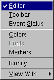
Auto Resize Canvas: turns auto-resize of the canvas on/off:
Resize Canvas: resizes and fits the canvas to the window size.
Move Opaque: if selected, graphics objects are moved in opaque mode; otherwise, only the outline of objects is drawn when moving them. The option opaque produces the best effect but it requires a reasonably fast workstation or response time.
Resize Opaque: if selected, graphics objects are resized in opaque mode; otherwise, only the outline of objects is drawn when resizing them.
Interrupt: interrupts the current drawing process.
Refresh: redraws the canvas contents.
Pad Auto Exec: executes the list of TExecs in the current pad.
Statistics: toggles the display of the histogram statistics box.
Histogram Title: toggles the display of the histogram title.
Fit Parameters: toggles the display of the histogram or graph fit parameters.
Can Edit Histogram: enables/disables the possibility to edit histogram bin contents.
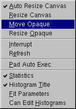
ROOT: inspects the top-level gROOT object (in a new canvas).
Start Browser: starts a new object browser (in a separate window).
GUI Builder: starts the GUI builder application (in a separate window).
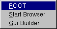
Canvas: help on canvas as a whiteboard area for drawing.
Menus: help on canvas menus.
Graphics Editor: help on primitives’ drawing and objects’ editor.
Browser: help on the ROOT objects’ and files’ browser.
Objects: help on DrawClass, Inspect and Dump context menu items.
PostScript: help on how to print a canvas to a PostScript file format.
About ROOT: pops up the ROOT Logo with the version number.
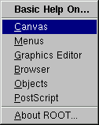
The following menu shortcuts and utilities are available from the toolbar:
Create a new canvas window.
Popup the Open File dialog.
Popup the Save As… dialog.
Popup the Print dialog.
Interrupts the current drawing process.
Redraw the canvas.
Inspect the gROOT object.
Create a new objects’ browser.
You can create the following graphical objects using the toolbar buttons for primitive drawing. Tool tips are provided for helping your choice.
An Arc or circle: Click on the center of the arc, and then move the mouse. A rubber band circle is shown. Click again with the left button to freeze the arc.
A Line: Click with the left button at the point where you want to start the line, then move the mouse and click again with the left button to freeze the line.
An Arrow:Click with the left button at the point where you want to start the arrow, then move the mouse and click again with the left button to freeze the arrow.
A Diamond: Click with the left button and freeze again with the left button. The editor draws a rubber band box to suggest the outline of the diamond.
An Ellipse: Proceed like for an arc. You can grow/shrink the ellipse by pointing to the sensitive points. They are highlighted. You can move the ellipse by clicking on the ellipse, but not on the sensitive points. If, with the ellipse context menu, you have selected a fill area color, you can move a filled-ellipse by pointing inside the ellipse and dragging it to its new position.
A Pad: Click with the left button and freeze again with the left button. The editor draws a rubber band box to suggest the outline of the pad.
A PaveLabel: Proceed like for a pad. Type the text of label and finish with a carriage return. The text will appear in the box.
 A Pave Text: Proceed like for a pad. You can then click on the
A Pave Text: Proceed like for a pad. You can then click on the TPaveText object with the right mouse button and select the option InsertText.
Paves Text: Proceed like for a TPaveText.
A Poly Line: Click with the left button for the first point, move the moose, click again with the left button for a new point. Close the poly-line with a double click. To edit one vertex point, pick it with the left button and drag to the new point position.
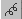 A Curly Line: Proceed as for the arrow or line. Once done, click with the third button to change the characteristics of the curly line, like transform it to wave, change the wavelength, etc.
 A Curly Arc:
Proceed like for an ellipse. The first click is located at the position
of the center, the second click at the position of the arc beginning.
Once done, one obtains a curly ellipse, for which one can click with the
third button to change the characteristics, like transform it to wavy,
change the wavelength, set the minimum and maximum angle to make an arc
that is not closed, etc.
A Curly Arc:
Proceed like for an ellipse. The first click is located at the position
of the center, the second click at the position of the arc beginning.
Once done, one obtains a curly ellipse, for which one can click with the
third button to change the characteristics, like transform it to wavy,
change the wavelength, set the minimum and maximum angle to make an arc
that is not closed, etc.
A Text/Latex string: Click with the left button where you want to draw the text and then type in the text terminated by carriage return. All TLatex
expressions are valid. To move the text or formula, point on it keeping
the left mouse button pressed and drag the text to its new position.
You can grow/shrink the text if you position the mouse to the first
top-third part of the string, then move the mouse up or down to grow or
shrink the text respectively. If you position the mouse near the
bottom-end of the text, you can rotate it.
 A Marker: Click with the left button where to place the marker. The marker can be modified by using the method
A Marker: Click with the left button where to place the marker. The marker can be modified by using the method SetMarkerStyle() of TSystem.
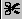 A Graphical Cut:
Click with the left button on each point of a polygon delimiting the
selected area. Close the cut by double clicking on the last point. A TCutG object is created. It can be used as a selection for a TTree::Draw. You can get a pointer to this object with:
Once you are happy with your picture, you can select the Save as canvas.C
item in the canvas File menu. This will automatically generate a script
with the C++ statements corresponding to the picture. This facility
also works if you have other objects not drawn with the graphics editor
(histograms for example).
The ROOT graphics editor loads the corresponding object editor objEditor according to the selected object obj
in the canvas respecting the class inheritance. An object in the canvas
is selected after the left mouse click on it. For example, if the
selected object is TAxis, the TAxisEditor will shows up in the editor frame giving the possibility for changing different axis attributes. The graphics editor can be:
Embedded - connected only with the canvas in the application window that appears on the left of the canvas window after been activated via View menu / Editor. It appears on the left side if the canvas window allowing users to edit the attributes of the selected object via provided user interface. The name of the selected object is displayed on the top of the editor frame in red color. If the user interface needs more space then the height of the canvas window, a vertical scroll bar appears for easer navigation.
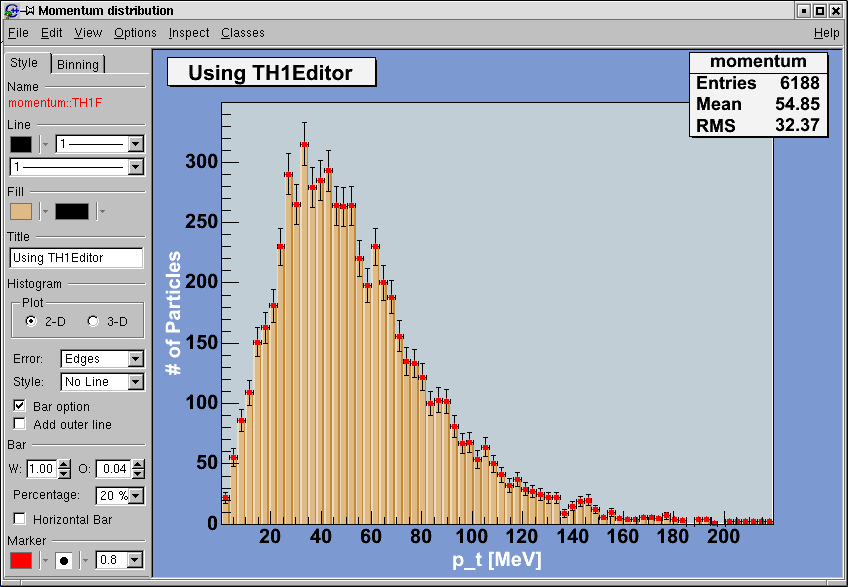
Global - has own application window and can be connected to any created canvas in a ROOT session. It can be activated via the context menu entries for setting line, fill, text and marker attributes for backward compatibility, but there will be a unique entry in the near future.
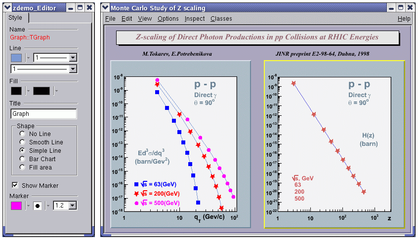
The user interface for the following classes is available since ROOT v.4.04: TAttLine, TAttFill, TAttMarker, TAttText, TArrow, TAxis, TCurlyArc, TCurlyLine, TFrame, TH1, TH2, TGraph, TPad, TCanvas, TPaveStats. For more details, see “The Graphics Editor”, “The User Interface for Histograms”, “The User Interface for Graphs”.
Object oriented programming introduces objects, which have data members and methods. The next line creates an object named f1 of the class TF1
that is a one-dimensional function. The type of an object is called a
class. The object itself is called an instance of a class. When a method
builds an object, it is called a constructor.
In our constructor the function sin(x)/x is defined for use, and 0 and 10 are the limits. The first parameter, func1 is the name of the object f1.
Most objects in ROOT have a name. ROOT maintains a list of objects that
can be searched to find any object by its given name (in our example func1).
The syntax to call an object’s method, or if one prefers, to make an object to do something is:
The dot can be replaced by “->” if object is a pointer. In compiled code, the dot MUST be replaced by a “->” if object is a pointer.
So now, we understand the two lines of code that allowed us to draw our function. f1.Draw() stands for “call the method Draw() associated with the object f1 of the class TF1”. Other methods can be applied to the object f1 of the class TF1. For example, the evaluating and calculating the derivative and the integral are what one would expect from a function.
root[] f1.Eval(3)
(Double_t)4.70400026866224020e-02
root[] f1.Derivative(3)
(Double_t)(-3.45675056671992330e-01)
root[] f1.Integral(0,3)
(Double_t)1.84865252799946810e+00
root[] f1.Draw()By default the method TF1::Paint(), that draws the function, computes 100 equidistant points to draw it. The number of points can be set to a higher value with:
Note that while the ROOT framework is an object-oriented framework, this does not prevent the user from calling plain functions.
Now we will look at some interactive capabilities. Try to draw the function sin(x)/x
again. Every object in a window (which is called a canvas) is, in fact,
a graphical object in the sense that you can grab it, resize it, and
change its characteristics with a mouse click. For example, bring the
cursor over the x-axis. The cursor changes to a hand with a pointing
finger when it is over the axis. Now, left click and drag the mouse
along the axis to the right. You have a very simple zoom.
When you move the mouse over any object, you can get access to
selected methods by pressing the right mouse button and obtaining a
context menu. If you try this on the function TF1, you will get a menu showing available methods. The other objects on this canvas are the title, a TPaveText object; the x and y-axis, TAxis objects, the frame, a TFrame object, and the canvas a TCanvas object. Try clicking on these and observe the context menu with their methods.
For example try selecting the SetRange() method and putting -10, 10 in the dialog box fields. This is equivalent to executing f1.SetRange(-10,10) from the command line, followed by f1.Draw(). Here are some other options you can try.
Once the picture suits your wishes, you may want to see the code you
should put in a script to obtain the same result. To do that, choose
Save / canvas.C entry of the File menu. This will generate a
script showing the options set in the current canvas. Notice that you
can also save the picture into various file formats such as PostScript,
GIF, etc. Another interesting possibility is to save your canvas into
the native ROOT format (.rootfile). This will enable you to
open it again and to change whatever you like. All objects associated
to the canvas (histograms, graphs) are saved at the same time.
Let us now try to build a canvas with several pads.
Once again, we call the constructor of a class, this time the class TCanvas. The difference between this and the previous constructor call (TF1) is that here we are creating a pointer to an object. Next, we call the method Divide() of the TCanvas class (that is TCanvas::Divide()),
which divides the canvas into four zones and sets up a pad in each of
them. We set the first pad as the active one and than draw the functionf1there.
All objects will be drawn in that pad because it is the active one. The ways for changing the active pad are:
Click the middle mouse button on a pad will set this pad as the active one.
Use the method TCanvas::cd() with the pad number, as was done in the example above:
Pads are numbered from left to right and from top to bottom. Each new pad created by TCanvas::Divide() has a name, which is the name of the canvas followed by _1, _2, etc. To apply the method cd() to the third pad, you would write:
TPad::cd() for the object MyC_3. ROOT will find the pad that was namedMyC_3when you typed it on the command line (see ROOT/Cling Extensions to C++).Using the File menu / Save cascade menu users can save the canvas as one of the files from the list. Please note that saving the canvas this way will overwrite the file with the same name without a warning.
All supported file types can be saved via File menu / SaveAs… This dialog gives a choice to show or suppress the confirmation message for overwriting an existing file.
If the Overwrite check box is not selected, a message dialog appears asking the user to overwrite the file (Yes/No). The user choice is saved for the next time the Save As… dialog shows up.
The Print command in the canvas File menu pops-up a print dialog where the user can specify a preferred print command and the printer name.
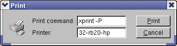
Both print parameters can be set via the new Print.Command and Print.Printer rootrc resources as follows:
# Printer settings.
WinNT.*.Print.Command: AcroRd32.exe
Unix.*.Print.Command: xprint -P%p %f
Print.Printer: 32-rb205-hp
Print.Directory: .If the %p and %f are specified as a part of
the print command, they will be replaced by the specified printer name
and the file name. All other parameters will be kept as they are
written. A print button is available in the canvas toolbar (activated
via View menu/Toolbar).
We have briefly touched on how to use the command line. There are different types of commands.
.”root[] .? //this command will list all the Cling commands
root[] .L <filename> //load [filename]
root[] .x <filename> //load and execute [filename].!” for example:You can use the command line to execute multi-line commands. To begin
a multi-line command you must type a single left curly bracket {, and to end it you must type a single right curly bracket }. For example:
root[] {
end with '}'> Int_t j = 0;
end with '}'> for (Int_t i = 0; i < 3; i++)
end with '}'> {
end with '}'> j= j + i;
end with '}'> cout << "i = " << i << ", j = " << j << endl;
end with '}'> }
end with '}'> }
i = 0, j = 0
i = 1, j = 1
i = 2, j = 3It is more convenient to edit a script than the command line, and if your multi line commands are getting unmanageable, you may want to start with a script instead.
We should say that some things are not standard C++. The Cling interpreter has several extensions. See “ROOT/Cling Extensions to C++”.
The interpreter knows all the classes, functions, variables, and user
defined types. This enables ROOT to help users to complete the command
line. For example, if we do not know anything about the TLine class, the Tab feature helps us to get a list of all classes starting with TL(where <TAB> means type the Tab key).
To list the different constructors and parameters for TLine use the <TAB> key as follows:
root[] l = new TLine(<TAB>
TLine TLine()
TLine TLine(Double_t x1,Double_t y1,Double_t x2,Double_t y2)
TLine TLine(const TLine& line)The meta-characters below can be used in a regular expression:
‘^’ start-of-line anchor
‘$’ end-of-line anchor
‘.’ matches any character
‘[’ start a character class
’]’end a character class
’^’negates character class if first character
‘*’Kleene closure (matches 0 or more)
’+’Positive closure (1 or more)
‘?’ Optional closure (0 or 1)
When using wildcards the regular expression is assumed to be preceded by a ‘^’ (BOL) and terminated by ‘$’ (EOL). All ‘*’ (closures) are assumed to be preceded by a ‘.’, i.e. any character, except slash _/_. Its special treatment allows the easy matching of pathnames. For example, _*.root_ will match _aap.root_, but not _pipo/aap.root_.
The escape characters are:
\ backslash
b backspace
f form feed
n new line
r carriage return
s space
t tab
e ASCII ESC character (‘033’)
DDD number formed of 1-3 octal digits
xDD number formed of 1-2 hex digits
^C C = any letter. Control code
The class TRegexp can be used to create a regular expression from an input string. If wildcard is true then the input string contains a wildcard expression.
Regular expression and wildcards can be easily used in methods like:
The method finds the first occurrence of the regular expression in the string and returns its position.
In this paragraph, we will explain some of the conventions used in ROOT source and examples.
From the first days of ROOT development, it was decided to use a set of coding conventions. This allows a consistency throughout the source code. Learning these will help you identify what type of information you are dealing with and enable you to understand the code better and quicker. Of course, you can use whatever convention you want but if you are going to submit some code for inclusion into the ROOT sources, you will need to use these.
These are the coding conventions:
Classes begin with T: TLine, TTree
Non-class types end with _t: Int_t
Data members begin with f: fTree
Member functions begin with a capital: Loop()
Constants begin with k: kInitialSize, kRed
Global variables begin with g: gEnv
Static data members begin with fg: fgTokenClient
Enumeration types begin with E: EColorLevel
Locals and parameters begin with a lower case: nbytes
Getters and setters begin with Get and Set: SetLast(), GetFirst()
Different machines may have different lengths for the same type. The most famous example is the int
type. It may be 16 bits on some old machines and 32 bits on some newer
ones. To ensure the size of your variables, use these pre defined types
in ROOT:
Char_t Signed Character 1 byte
UChar_t Unsigned Character 1 byte
Short_t Signed Short integer 2 bytes
UShort_t Unsigned Short integer 2 bytes
Int_t Signed integer 4 bytes
UInt_tUnsigned integer 4 bytes
Long64_t Portable signed long integer 8 bytes
ULong64_t Portable unsigned long integer 8 bytes
Float_t Float 4 bytes
Double_t Float 8 bytes
Double32_t Double 8 bytes in memory, written as a Float 4 bytes
Bool_t Boolean (0=false, 1=true)
If you do not want to save a variable on disk, you can use int or Int_t, the result will be the same and the interpreter or the compiler will treat them in exactly the same way.
In ROOT, almost all classes inherit from a common base class called TObject. This kind of architecture is also used in the Java language. The TObject
class provides default behavior and protocol for all objects in the
ROOT system. The main advantage of this approach is that it enforces the
common behavior of the derived classes and consequently it ensures the
consistency of the whole system. See “The Role of TObject”.
TObject provides protocol, i.e. (abstract) member functions, for:
Object I/O (Read(), Write())
Error handling (Warning(), Error(), SysError(), Fatal())
Sorting (IsSortable(), Compare(), IsEqual(), Hash())
Inspection (Dump(), Inspect())
Printing (Print())
Drawing (Draw(), Paint(), ExecuteEvent())
Bit handling (SetBit(), TestBit())
Memory allocation (operatornew and delete, IsOnHeap())
Access to meta information (IsA(), InheritsFrom())
Object browsing (Browse(), IsFolder())
ROOT has a set of global variables that apply to the session. For example, gDirectory always holds the current directory, and gStyle holds the current style.
All global variables begin with “g” followed by a capital letter.
The single instance of TROOT is accessible via the global gROOT and holds information relative to the current session. By using the gROOT pointer, you get the access to every object created in a ROOT program. The TROOT object has several lists pointing to the main ROOT objects. During a ROOT session, the gROOT keeps a series of collections to manage objects. They can be accessed via gROOT::GetListOf... methods.
gROOT->GetListOfClasses()
gROOT->GetListOfColors()
gROOT->GetListOfTypes()
gROOT->GetListOfGlobals()
gROOT->GetListOfGlobalFunctions()
gROOT->GetListOfFiles()
gROOT->GetListOfMappedFiles()
gROOT->GetListOfSockets()
gROOT->GetListOfCanvases()
gROOT->GetListOfStyles()
gROOT->GetListOfFunctions()
gROOT->GetListOfSpecials()
gROOT->GetListOfGeometries()
gROOT->GetListOfBrowsers()
gROOT->GetListOfMessageHandlers()These methods return a TSeqCollection,
meaning a collection of objects, and they can be used to do list
operations such as finding an object, or traversing the list and calling
a method for each of the members. See the TCollection class description for the full set of methods supported for a collection. For example, to find a canvas called c1you can do:
This returns a pointer to a TObject, and before you can use it as a canvas you need to cast it to a TCanvas*.
gFile is the pointer to the current opened file in the ROOT session.
gDirectory is a pointer to the current directory. The concept and role of a directory is explained in the chapter “Input/Output”.
A graphic object is always drawn on the active pad. It is convenient
to access the active pad, no matter what it is. For that, we have gPad
that is always pointing to the active pad. For example, if you want to
change the fill color of the active pad to blue, but you do not know its
name, you can use gPad.
To get the list of colors, if you have an open canvas, click in the “View” menu, selecting the “Colors” entry.
gRandom is a pointer to the current random number generator. By default, it points to a TRandom3
object, based on the “Mersenne-Twister” generator. This generator is
very fast and has very good random proprieties (a very long period of 10600). Setting the seed to 0 implies that the seed will be uniquely generated using the TUUID. Any other value will be used as a constant. The following basic random distributions are provided: Rndm() or Uniform(min,max), Gaus(mean,sigma), Exp(tau), BreitWigner(mean,sigma), Landau(mean,sigma), Poisson(mean), Binomial(ntot,prob). You can customize your ROOT session by replacing the random number generator. You can delete gRandom and recreate it with your own. For example:
TRandom2 is another generator, which is also very fast and uses only three words for its state.
gEnv is the global variable (of type TEnv) with all the environment settings for the current session. This variable is set by reading the contents of a .rootrc file (or $ROOTSYS/etc/system.rootrc) at the beginning of the root session. See Environment Setup below for more information.
The behavior of a ROOT session can be tailored with the options in the .rootrc file. At start-up, ROOT looks for a .rootrc file in the following order:
./.rootrc //local directory
$HOME/.rootrc //user directory
$ROOTSYS/etc/system.rootrc //global ROOT directory
If more than one .rootrc files are found in the search
paths above, the options are merged, with precedence local, user,
global. While in a session, to see current settings, you can do:
The rootrc file typically looks like:
# Path used by dynamic loader to find shared libraries
Unix.*.Root.DynamicPath: .:~/rootlibs:$(ROOTSYS)/lib
Unix.*.Root.MacroPath: .:~/rootmacros:$(ROOTSYS)/macros
# Path where to look for TrueType fonts
Unix.*.Root.UseTTFonts: true
Unix.*.Root.TTFontPath:
...
# Activate memory statistics
Rint.Load: rootalias.C
Rint.Logon: rootlogon.C
Rint.Logoff: rootlogoff.C
...
Rint.Canvas.MoveOpaque: false
Rint.Canvas.HighLightColor: 5The various options are explained in $ROOTSYS/etc/system.rootrc. The .rootrc file contents are combined. For example, if the flag to use true type fonts is set to true in the system.rootrc file, you have to set explicitly it false in your local .rootrc file if you do not want to use true type fonts. Removing the UseTTFontsstatement in the local .rootrc file will not disable true fonts. The value of the environment variable ROOTDEBUG overrides the value in the .rootrc file at startup. Its value is used to set gDebug and helps for quick turn on debug mode in TROOT startup.
ROOT looks for scripts in the path specified in the .rootrc file in the Root.Macro.Path variable. You can expand this path to hold your own directories.
The rootlogon.C and rootlogoff.C files are scripts loaded and executed at start-up and shutdown. The rootalias.C file is loaded but not executed. It typically contains small utility functions. For example, the rootalias.C script that comes with the ROOT distributions (located in $ROOTSYS/tutorials) defines the function edit(char *file).
This allows the user to call the editor from the command line. This
particular function will start the VI editor if the environment variable
EDITOR is not set.
For more details, see $ROOTSYS/tutorials/rootalias.C.
You can use the up and down arrow at the command line, to access the
previous and next command. The commands are recorded in the history file
$HOME/.root_hist. It is a text file, and you can edit, cut, and paste from it. You can specify the history file in the system.rootrc file, by setting the Rint.Historyoption. You can also turn off the command logging in the system.rootrc file with the option: Rint.History: -
The number of history lines to be kept can be set also in .rootrc by:
Rint.HistSize: 500
Rint.HistSave: 400The first value defines the maximum of lines kept; once it is reached all, the last HistSave lines will be removed. One can set HistSize to 0 to disable history line management. There is also implemented an environment variable called ROOT_HIST. By setting ROOT_HIST=300:200 the above values can be overriden - the first value corresponds to HistSize, the (optional) second one to HistSave. You can set ROOT_HIST=0 to disable the history.
You can track memory usage and detect leaks by monitoring the number of objects that are created and deleted (see TObjectTable). To use this facility, edit the file $ROOTSYS/etc/system.rootrc or .rootrc if you have this file and add the two following lines:
Root.ObjectStat: 1In your code or on the command line you can type the line:
This line will print the list of all active classes and the number of instances for each class. By comparing consecutive print outs, you can see objects that you forgot to delete. Note that this method cannot show leaks coming from the allocation of non-objects or classes unknown to ROOT.
The web page at: http://root.cern.ch/root/HowtoConvertFromPAW.html#TABLE gives the “translation” table of some commonly used PAW commands into ROOT. If you move the mouse cursor over the picture at: http://root.cern.ch/root/HowtoConvertFromPAW.html#SET, you will get the corresponding ROOT commands as tooltips.
ROOT has a utility called h2root that you can use to
convert your HBOOK/PAW histograms or ntuple files into ROOT files. To
use this program, you type the shell script command:
h2root <hbookfile> <rootfile>If you do not specify the second parameter, a file name is automatically generated for you. If hbookfile is of the form file.hbook, then the ROOT file will be called file.root. This utility converts HBOOK histograms into ROOT histograms of the class TH1F. HBOOK profile histograms are converted into ROOT profile histograms (see class TProfile).
HBOOK row-wise and column-wise ntuples are automatically converted to
ROOT Trees. See “Trees”. Some HBOOK column-wise ntuples may not be fully
converted if the columns are an array of fixed dimension (e.g. var[6]) or if they are a multi-dimensional array.
HBOOK integer identifiers are converted into ROOT named objects by prefixing the integer identifier with the letter “h” if the identifier is a positive integer and by "h_"
if it is a negative integer identifier. In case of row-wise or
column-wise ntuples, each column is converted to a branch of a tree.
Note that h2root is able to convert HBOOK files containing
several levels of sub-directories. Once you have converted your file,
you can look at it and draw histograms or process ntuples using the ROOT
command line. An example of session is shown below:
// this connects the file hbookconverted.root
root[] TFile f("hbookconverted.root");
// display histogram named h10 (was HBBOK id 10)
root[] h10.Draw();
// display column "var" from ntuple h30
root[] h30.Draw("var");You can also use the ROOT browser (see TBrowser) to inspect this file.
The chapter on trees explains how to read a tree. ROOT includes a function TTree::MakeClass to generate automatically the code for a skeleton analysis function. See “Example Analysis”.
In case one of the ntuple columns has a variable length (e.g. px(ntrack)), h.Draw("px") will histogram the px
column for all tracks in the same histogram. Use the script quoted
above to generate the skeleton function and create/fill the relevant
histogram yourself.
This chapter covers the functionality of the histogram classes. We begin with an overview of the histogram classes, after which we provide instructions and examples on the histogram features.
We have put this chapter ahead of the graphics chapter so that you can begin working with histograms as soon as possible. Some of the examples have graphics commands that may look unfamiliar to you. These are covered in the chapter “Input/Output”.
ROOT supports histograms up to three dimensions. Separate concrete classes are provided for one-dimensional, two-dimensional and three-dimensional classes. The histogram classes are split into further categories, depending on the set of possible bin values:
TH1C, TH2C and TH3C contain one char (one byte) per bin (maximum bin content = 255)
TH1S, TH2S and TH3S contain one short (two bytes) per bin (maximum bin content = 65 535).
TH1I, TH2I and TH3I contain one integer (four bytes) per bin (maximum bin content = 2 147 483 647).
TH1L, TH2L and TH3L contain one long64 (eight bytes) per bin (maximum bin content = 9 223 372 036 854 775 807).
TH1F, TH2F and TH3F contain one float (four bytes) per bin (maximum precision = 7 digits).
TH1D, TH2D and TH3D contain one double (eight bytes) per bin (maximum precision = 14 digits).
ROOT also supports profile histograms, which constitute an elegant replacement of two-dimensional histograms in many cases. The inter-relation of two measured quantities X and Y can always be visualized with a two-dimensional histogram or scatter-plot. Profile histograms, on the other hand, are used to display the mean value of Y and its RMS for each bin in X. If Y is an unknown but single-valued approximate function of X, it will have greater precision in a profile histogram than in a scatter plot.
TProfile : one dimensional profiles
TProfile2D : two dimensional profiles

All ROOT histogram classes are derived from the base class TH1
(see figure above). This means that two-dimensional and
three-dimensional histograms are seen as a type of a one-dimensional
histogram, in the same way in which multidimensional C arrays are just
an abstraction of a one-dimensional contiguous block of memory.
There are several ways in which you can create a histogram object in ROOT. The straightforward method is to use one of the several constructors provided for each concrete class in the histogram hierarchy. For more details on the constructor parameters, see the subsection “Constant or Variable Bin Width” below. Histograms may also be created by:
Calling the Clone() method of an existing histogram
Making a projection from a 2-D or 3-D histogram
Reading a histogram from a file (see Input/Output chapter)
// using various constructors
TH1* h1 = new TH1I("h1", "h1 title", 100, 0.0, 4.0);
TH2* h2 = new TH2F("h2", "h2 title", 40, 0.0, 2.0, 30, -1.5, 3.5);
TH3* h3 = new TH3D("h3", "h3 title", 80, 0.0, 1.0, 100, -2.0, 2.0,
50, 0.0, 3.0);
// cloning a histogram
TH1* hc = (TH1*)h1->Clone();
// projecting histograms
// the projections always contain double values !
TH1* hx = h2->ProjectionX(); // ! TH1D, not TH1F
TH1* hy = h2->ProjectionY(); // ! TH1D, not TH1FThe histogram classes provide a variety of ways to construct a histogram, but the most common way is to provide the name and title of histogram and for each dimension: the number of bins, the minimum x (lower edge of the first bin) and the maximum x (upper edge of the last bin).
TH2* h = new TH2D(
/* name */ "h2",
/* title */ "Hist with constant bin width",
/* X-dimension */ 100, 0.0, 4.0,
/* Y-dimension */ 200, -3.0, 1.5);When employing this constructor, you will create a histogram with
constant (fixed) bin width on each axis. For the example above, the
interval [0.0, 4.0] is divided into 100 bins of the same width w X = 4.0 - 0.0 100 = 0.04 for the X axis (dimension). Likewise, for the Y axis (dimension), we have bins of equal width w Y = 1.5 - (-3.0) 200 = 0.0225.
If you want to create histograms with variable bin widths, ROOT
provides another constructor suited for this purpose. Instead of passing
the data interval and the number of bins, you have to pass an array
(single or double precision) of bin edges. When the histogram has n bins, then there are n+1 distinct edges, so the array you pass must be of size n+1.
const Int_t NBINS = 5;
Double_t edges[NBINS + 1] = {0.0, 0.2, 0.3, 0.6, 0.8, 1.0};
// Bin 1 corresponds to range [0.0, 0.2]
// Bin 2 corresponds to range [0.2, 0.3] etc...
TH1* h = new TH1D(
/* name */ "h1",
/* title */ "Hist with variable bin width",
/* number of bins */ NBINS,
/* edge array */ edges
);Each histogram object contains three TAxis objects: fXaxis , fYaxis, and fZaxis,
but for one-dimensional histograms only the X-axis is relevant, while
for two-dimensional histograms the X-axis and Y-axis are relevant. See
the class TAxis for a description of all the access methods. The bin edges are always stored internally in double precision.
You can examine the actual edges / limits of the histogram bins by accessing the axis parameters, like in the example below:
const Int_t XBINS = 5; const Int_t YBINS = 5;
Double_t xEdges[XBINS + 1] = {0.0, 0.2, 0.3, 0.6, 0.8, 1.0};
Double_t yEdges[YBINS + 1] = {-1.0, -0.4, -0.2, 0.5, 0.7, 1.0};
TH2* h = new TH2D("h2", "h2", XBINS, xEdges, YBINS, yEdges);
TAxis* xAxis = h->GetXaxis(); TAxis* yAxis = h->GetYaxis();
cout << "Third bin on Y-dimension: " << endl; // corresponds to
// [-0.2, 0.5]
cout << "\tLower edge: " << yAxis->GetBinLowEdge(3) << endl;
cout << "\tCenter: " << yAxis->GetBinCenter(3) << endl;
cout << "\tUpper edge: " << yAxis->GetBinUpEdge(3) << endl;All histogram types support fixed or variable bin sizes. 2-D histograms may have fixed size bins along X and variable size bins along Y or vice-versa. The functions to fill, manipulate, draw, or access histograms are identical in both cases.
For all histogram types: nbins , xlow , xup
Bin# 0 contains the underflow.
Bin# 1 contains the first bin with low-edge ( xlow INCLUDED).
The second to last bin (bin# nbins) contains the upper-edge (xup EXCLUDED).
The Last bin (bin# nbins+1) contains the overflow.
In case of 2-D or 3-D histograms, a “global bin” number is defined. For example, assuming a 3-D histogram h with binx, biny, binz, the function returns a global/linear bin number.
This global bin is useful to access the bin information independently of the dimension.
At any time, a histogram can be re-binned via the TH1::Rebin()
method. It returns a new histogram with the re-binned contents. If bin
errors were stored, they are recomputed during the re-binning.
A histogram is typically filled with statements like:
h1->Fill(x);
h1->Fill(x,w); // with weight
h2->Fill(x,y);
h2->Fill(x,y,w);
h3->Fill(x,y,z);
h3->Fill(x,y,z,w);The Fill method computes the bin number corresponding to the given x, y or z argument and increments this bin by the given weight. The Fill() method returns the bin number for 1-D histograms or global bin number for 2-D and 3-D histograms. If TH1::Sumw2() has been called before filling, the sum of squares is also stored. One can increment a bin number directly by calling TH1::AddBinContent(), replace the existing content via TH1::SetBinContent() , and access the bin content of a given bin via TH1::GetBinContent() .
By default, the number of bins is computed using the range of the axis. You can change this to re-bin automatically by setting the automatic re-binning option:
Once this is set, the Fill() method will automatically extend the axis range to accommodate the new value specified in the Fill() argument. The used method is to double the bin size until the new value fits in the range, merging bins two by two. The TTree::Draw() method extensively uses this automatic binning option when drawing histograms of variables in TTree
with an unknown range. The automatic binning option is supported for
1-D, 2-D and 3-D histograms. During filling, some statistics parameters
are incremented to compute the mean value and root mean square with the
maximum precision. In case of histograms of type TH1C, TH1S, TH2C, TH2S, TH3C, TH3S
a check is made that the bin contents do not exceed the maximum
positive capacity (127 or 65 535). Histograms of all types may have
positive or/and negative bin contents.
TH1::FillRandom() can be used to randomly fill a histogram using the contents of an existing TF1 function or another TH1
histogram (for all dimensions). For example, the following two
statements create and fill a histogram 10 000 times with a default
Gaussian distribution of mean 0 and sigma 1 :
TH1::GetRandom() can be
used to get a random number distributed according the contents of a
histogram. To fill a histogram following the distribution in an existing
histogram you can use the second signature of TH1::FillRandom(). Next code snipped assumes that h is an existing histogram (TH1 ).
The distribution contained in the histogram h1 ( TH1
) is integrated over the channel contents. It is normalized to one. The
second parameter (1000) indicates how many random numbers are
generated.
Getting 1 random number implies:
Generating a random number between 0 and 1 (say r1 )
Find the bin in the normalized integral for r1
Fill histogram channel
You can see below an example of the TH1::GetRandom() method which can be used to get a random number distributed according the contents of a histogram.
void getrandomh() {
TH1F *source = new TH1F("source","source hist",100,-3,3);
source->FillRandom("gaus",1000);
TH1F *final = new TH1F("final","final hist",100,-3,3);
// continued...
for (Int_t i=0;i<10000;i++) {
final->Fill(source->GetRandom());
}
TCanvas *c1 = new TCanvas("c1","c1",800,1000);
c1->Divide(1,2);
c1->cd(1);
source->Draw();
c1->cd(2);
final->Draw();
c1->cd();
}Many types of operations are supported on histograms or between histograms:
Addition of a histogram to the current histogram
Additions of two histograms with coefficients and storage into the current histogram
Multiplications and divisions are supported in the same way as additions.
The Add , Divide and Multiply methods also exist to add, divide or multiply a histogram by a function.
Histograms objects (not pointers) TH1F h1 can be multiplied by a constant using:
A new histogram can be created without changing the original one by doing:
To multiply two histogram objects and put the result in a 3rd one do:
The same operations can be done with histogram pointers TH1F *h1, *h2 following way:
Of course, the TH1 methods Add , Multiply and Divide can be used instead of these operators.
If a histogram has associated error bars ( TH1::Sumw2()
has been called), the resulting error bars are also computed assuming
independent histograms. In case of divisions, binomial errors are also
supported.
One can make:
a 1-D projection of a 2-D histogram or profile. See TH2::ProfileX, TH2::ProfileY,TProfile::ProjectionX, TProfile2D::ProjectionXY, TH2::ProjectionX, TH2::ProjectionY .
a 1-D, 2-D or profile out of a 3-D histogram see TH3::ProjectionZ, TH3::Project3D.
These projections can be fit via: TH2::FitSlicesX, TH2::FitSlicesY, TH3::FitSlicesZ.
When you call the Draw method of a histogram ( TH1::Draw ) for the first time, it creates a THistPainter object and saves a pointer to painter as a data member of the histogram. The THistPainter
class specializes in the drawing of histograms. It allows logarithmic
axes (x, y, z) when the CONT drawing option is using. The THistPainter
class is separated from the histogram so that one can have histograms
without the graphics overhead, for example in a batch program. The
choice to give each histogram has its own painter rather than a central
singleton painter, allows two histograms to be drawn in two threads
without overwriting the painter’s values. When a displayed histogram is
filled again, you do not have to call the Draw method again. The image is refreshed the next time the pad is updated. A pad is updated after one of these three actions:
A carriage control on the ROOT command line
A click inside the pad
A call to TPad::Update()
By default, the TH1::Draw clears the pad before drawing the new image of the histogram. You can use the "SAME"
option to leave the previous display intact and superimpose the new
histogram. The same histogram can be drawn with different graphics
options in different pads. When a displayed histogram is deleted, its
image is automatically removed from the pad. To create a copy of the
histogram when drawing it, you can use TH1::DrawClone(). This will clone the histogram and allow you to change and delete the original one without affecting the clone. You can use TH1::DrawNormalized() to draw a normalized copy of a histogram.
A clone of this histogram is normalized to norm and drawn with
option. A pointer to the normalized histogram is returned. The contents
of the histogram copy are scaled such that the new sum of weights
(excluding under and overflow) is equal to norm .
Note that the returned normalized histogram is not added to the list
of histograms in the current directory in memory. It is the user’s
responsibility to delete this histogram. The kCanDelete bit
is set for the returned object. If a pad containing this copy is
cleared, the histogram will be automatically deleted. See “Draw Options”
for the list of options.
Histograms use the current style gStyle, which is the global object of class TStyle. To change the current style for histograms, the TStyle class provides a multitude of methods ranging from setting the fill color to the axis tick marks. Here are a few examples:
void SetHistFillColor(Color_t color = 1)
void SetHistFillStyle(Style_t styl = 0)
void SetHistLineColor(Color_t color = 1)
void SetHistLineStyle(Style_t styl = 0)
void SetHistLineWidth(Width_t width = 1)When you change the current style and would like to propagate the change to a previously created histogram you can call TH1::UseCurrentStyle(). You will need to call UseCurrentStyle() on each histogram. When reading many histograms from a file and you wish to update them to the current style, you can use gROOT::ForceStyle
and all histograms read after this call will be updated to use the
current style. See “Graphics and the Graphical User Interface”. When a
histogram is automatically created as a result of a TTree::Draw
, the style of the histogram is inherited from the tree attributes and
the current style is ignored. The tree attributes are the ones set in
the current TStyle at the time the tree was created. You can change the existing tree to use the current style, by calling TTree::UseCurrentStyle() .
The following draw options are supported on all histogram classes:
“AXIS”: Draw only the axis.
“HIST”: When a histogram has errors, it is visualized by default with error bars. To visualize it without errors use HIST together with the required option (e.g. “HIST SAME C”).
“SAME”: Superimpose on previous picture in the same pad.
“CYL”: Use cylindrical coordinates.
“POL”: Use polar coordinates.
“SPH”: Use spherical coordinates.
“PSR”: Use pseudo-rapidity/phi coordinates.
“LEGO”: Draw a lego plot with hidden line removal.
“LEGO1”: Draw a lego plot with hidden surface removal.
“LEGO2”: Draw a lego plot using colors to show the cell contents.
“SURF”: Draw a surface plot with hidden line removal.
“SURF1”: Draw a surface plot with hidden surface removal.
“SURF2”: Draw a surface plot using colors to show the cell contents.
“SURF3”: Same as SURF with a contour view on the top.
“SURF4”: Draw a surface plot using Gouraud shading.
“SURF5”: Same as SURF3 but only the colored contour is drawn. Used with option CYL , SPH or PSR
it allows to draw colored contours on a sphere, a cylinder or in a
pseudo rapidly space. In Cartesian or polar coordinates, option SURF3 is used.
The following options are supported for 1-D histogram classes:
“AH”: Draw the histogram, but not the axis labels and tick marks
“B”: Draw a bar chart
“C”: Draw a smooth curve through the histogram bins
“E”: Draw the error bars
“E0”: Draw the error bars including bins with 0 contents
“E1”: Draw the error bars with perpendicular lines at the edges
“E2”: Draw the error bars with rectangles
“E3”: Draw a fill area through the end points of the vertical error bars
“E4”: Draw a smoothed filled area through the end points of the error bars
“L”: Draw a line through the bin contents
“P”: Draw a (poly)marker at each bin using the histogram’s current marker style
“P0”: Draw current marker at each bin including empty bins
“PIE”: Draw a Pie Chart
“*H”: Draw histogram with a * at each bin
“LF2”: Draw histogram as with option “L” but with a fill area. Note that “L” also draws a fill area if the histogram fill color is set but the fill area corresponds to the histogram contour.
“9”: Force histogram to be drawn in high resolution
mode. By default, the histogram is drawn in low resolution in case the
number of bins is greater than the number of pixels in the current pad
“][”: Draw histogram without the vertical lines for
the first and the last bin. Use it when superposing many histograms on
the same picture.
The following options are supported for 2-D histogram classes:
“ARR”: Arrow mode. Shows gradient between adjacent cells
“BOX”: Draw a box for each cell with surface proportional to contents
“BOX1”: A sunken button is drawn for negative values, a raised one for positive values
“COL”: Draw a box for each cell with a color scale varying with contents
“COLZ”: Same as “COL” with a drawn color palette
“CONT”: Draw a contour plot (same as CONT0 )
“CONTZ”: Same as “CONT” with a drawn color palette
“CONT0”: Draw a contour plot using surface colors to distinguish contours
“CONT1”: Draw a contour plot using line styles to distinguish contours
“CONT2”: Draw a contour plot using the same line style for all contours
“CONT3”: Draw a contour plot using fill area colors
“CONT4”: Draw a contour plot using surface colors (SURF2 option at theta = 0)
"CONT5": Use Delaunay triangles to compute the contours
“LIST”: Generate a list of TGraph objects for each contour
“FB”: To be used with LEGO or SURFACE , suppress the Front-Box
“BB”: To be used with LEGO or SURFACE , suppress the Back-Box
“A”: To be used with LEGO or SURFACE , suppress the axis
“SCAT”: Draw a scatter-plot (default)
“SPEC”: Use TSpectrum2Painter tool for drawing
“TEXT”: Draw bin contents as text (format set via gStyle->SetPaintTextFormat) .
“TEXTnn”: Draw bin contents as text at angle nn ( 0<nn<90 ).
“[cutg]”: Draw only the sub-range selected by the TCutG name “cutg”.
“Z”: The “Z” option can be specified with the options: BOX, COL, CONT, SURF, and LEGO to display the color palette with an axis indicating the value of the corresponding color on the right side of the picture.
The following options are supported for 3-D histogram classes:
" " : Draw a 3D scatter plot.
“BOX”: Draw a box for each cell with volume proportional to contents
“LEGO”: Same as “BOX”
“ISO”: Draw an iso surface
“FB”: Suppress the Front-Box
“BB”: Suppress the Back-Box
“A”: Suppress the axis
Most options can be concatenated without spaces or commas, for example, if h is a histogram pointer:
The options are not case sensitive. The options BOX , COL and COLZ use the color palette defined in the current style (see TStyle::SetPalette). The options CONT , SURF , and LEGO have by default 20 equidistant contour levels, you can change the number of levels with TH1::SetContour. You can also set the default drawing option with TH1::SetOption . To see the current option use TH1::GetOption . For example:
h->SetOption("lego");
h->Draw(); // will use the lego option
h->Draw("scat") // will use the scatter plot optionBy default, 2D histograms are drawn as scatter plots. For each cell (i,j)
a number of points proportional to the cell content are drawn. A
maximum of 500 points per cell are drawn. If the maximum is above 500
contents are normalized to 500.
The ARR option shows the gradient between adjacent cells. For each cell (i,j) an arrow is drawn. The orientation of the arrow follows the cell gradient.
For each cell (i,j) a box is drawn with surface
proportional to contents. The size of the box is proportional to the
absolute value of the cell contents. The cells with negative contents
are drawn with an X on top of the boxes. With option BOX1 a
button is drawn for each cell with surface proportional to contents’
absolute value. A sunken button is drawn for negative values, a raised
one for positive values.
"E" Default. Draw only error bars, without markers
"E0" Draw also bins with 0 contents (turn off the symbols clipping).
"E1" Draw small lines at the end of error bars
"E2" Draw error rectangles
"E3" Draw a fill area through the end points of vertical error bars
"E4" Draw a smoothed filled area through the end points of error bars
Note that for all options, the line and fill attributes of the histogram are used for the errors or errors contours. Use gStyle->SetErrorX(dx) to control the size of the error along x. The parameter dx is a percentage of bin width for errors along X. Set dx=0 to suppress the error along X. Use gStyle->SetEndErrorSize(np) to control the size of the lines at the end of the error bars (when option 1 is used). By default np=1 (np represents the number of pixels).
For each cell (i,j) a box is drawn with a color proportional to the cell content. The color table used is defined in the current style (gStyle ). The color palette in TStyle can be modified with TStyle::SetPalette .
For each cell (i,j) the cell content is printed. The text attributes are:
Text font = current font set by TStyle
Text size= 0.02 * pad-height * marker-size
Text color= marker color
The following contour options are supported:
"CONT": Draw a contour plot (same as CONT0)
"CONT0": Draw a contour plot using surface colors to distinguish contours
"CONT1": Draw a contour plot using line styles to distinguish contours
"CONT2": Draw a contour plot using the same line style for all contours
"CONT3": Draw a contour plot using fill area colors
"CONT4":Draw a contour plot using surface colors (SURF2 option at theta = 0); see also options “AITOFF”, “MERCATOR”, etc. below
"CONT5": Use Delaunay triangles to compute the contours
The default number of contour levels is 20 equidistant levels. It can be changed with TH1::SetContour. When option “LIST” is specified together with option “CONT”, all points used for contour drawing, are saved in the TGraph object and are accessible in the following way:
TObjArray *contours =
gROOT->GetListOfSpecials()->FindObject("contours");
Int_t ncontours = contours->GetSize(); TList *list =
(TList*)contours->At(i);Where “i” is a contour number and list contains a list of TGraph objects. For one given contour, more than one disjoint poly-line may be generated. The TGraph numbers per contour are given by list->GetSize(). Here we show how to access the first graph in the list.
“AITOFF”: Draw a contour via an AITOFF projection
“MERCATOR”: Draw a contour via a Mercator projection
“SINUSOIDAL”: Draw a contour via a Sinusoidal projection
“PARABOLIC”: Draw a contour via a Parabolic projection
The tutorial macro earth.C uses these four options and produces the following picture:
earth.C macro outputIn a lego plot, the cell contents are drawn as 3D boxes, with the height of the box proportional to the cell content.
“LEGO”: Draw a lego plot with hidden line removal
“LEGO1”: Draw a lego plot with hidden surface removal
“LEGO2”: Draw a lego plot using colors to show the cell contents
A lego plot can be represented in several coordinate systems; the
default system is Cartesian coordinates. Other possible coordinate
systems are CYL , POL , SPH , and PSR .
“CYL”: Cylindrical coordinates: x-coordinate is mapped on the angle; y-coordinate - on the cylinder length.
“POL”: Polar coordinates: x-coordinate is mapped on the angle; y-coordinate - on the radius.
“SPH”: Spherical coordinates: x-coordinate is mapped on the latitude; y-coordinate - on the longitude.
“PSR”: PseudoRapidity/Phi coordinates: x-coordinate is mapped on Phi.
With TStyle::SetPalette the color palette can be changed. We suggest you use palette 1 with the call:
In a surface plot, cell contents are represented as a mesh. The
height of the mesh is proportional to the cell content. A surface plot
can be represented in several coordinate systems. The default is
Cartesian coordinates, and the other possible systems are CYL, POL, SPH, and PSR . The following picture uses SURF1 . With TStyle::SetPalette the color palette can be changed. We suggest you use palette 1 with the call:
“SURF”: Draw a surface plot with hidden line removal
“SURF1”: Draw a surface plot with hidden surface removal
“SURF2”: Draw a surface plot using colors to show the cell contents
“SURF3”: Same as SURF with a contour view on the top
“SURF4”: Draw a surface plot using Gouraud shading
“SURF5”: Same as SURF3 but only the colored contour is drawn. Used with options CYL , SPH or PSR
it allows to draw colored contours on a sphere, a cylinder or in a
pseudo rapidly space. In Cartesian or polar coordinates, option SURF3 is used.
When the option “bar” or “hbar” is specified, a bar chart is drawn.
The options for vertical bar chart are “bar”, “bar0”, “bar1”, “bar2”, “bar3”, “bar4”.
"bar" or "bar0""bar1""bar2""bar3""bar4"Use TH1::SetBarWidth() to control the bar width (default is the bin width). Use TH1::SetBarOffset to control the bar offset (default is 0). See the example $ROOTSYS/tutorials/hist/hbars.C
The options for the horizontal bar chart are “hbar”, “hbar0”, “hbar1”, “hbar2”, “hbar3”, and “hbar4”.
hbar” or “hbar0”hbar1”hbar2”hbar3”hbar4”Use TH1::SetBarWidth to control the bar width (default is the bin width). Use TH1::SetBarOffset to control the bar offset (default is 0). See the example $ROOTSYS/tutorials/hist/hbars.C
The “Z” option can be specified with the options: COL, CONT, SURF, and LEGO
to display the color palette with an axis indicating the value of the
corresponding color on the right side of the picture. If there is not
enough space on the right side, you can increase the size of the right
margin by calling TPad::SetRightMargin().
The attributes used to display the palette axis values are taken from
the Z axis of the object. For example, you can set the labels size on
the palette axis with:
You can set the color palette with TStyle::SetPalette , e.g.
For example, the option COL draws a 2-D histogram with
cells represented by a box filled with a color index, which is a
function of the cell content. If the cell content is N, the color index
used will be the color number in colors[N] . If the maximum cell content is greater than ncolors , all cell contents are scaled to ncolors. If ncolors<=0, a default palette of 50 colors is defined. This palette is recommended for pads, labels. It defines:
The color numbers specified in this palette can be viewed by
selecting the menu entry Colors in the View menu of the canvas menu bar.
The color’s red, green, and blue values can be changed via TColor::SetRGB.
If ncolors == 1 && colors == 0, then a Pretty Palette with a spectrum violet to red is created with 50 colors. That’s the default rain bow palette.
Other predefined palettes with 255 colors are available when colors == 0. The following value of ncolors (with colors = 0) give access to:
ncolors = 51 : Deep Sea palette.ncolors = 52 : Grey Scale palette.ncolors = 53 : Dark Body Radiator palette.ncolors = 54 : Two-color hue palette palette. (dark blue through neutral gray to bright yellow)ncolors = 55 : Rain Bow palette.ncolors = 56 : Inverted Dark Body Radiator palette.The color numbers specified in the palette can be viewed by selecting
the item “colors” in the “VIEW” menu of the canvas toolbar. The color
parameters can be changed via TColor::SetRGB.
Note that when drawing a 2D histogram h2 with the option “COL” or “COLZ” or with any “CONT” options using the color map, the number of colors used is defined by the number of contours n specified with: h2->SetContour(n)
A TPaletteAxisobject is used to display
the color palette when drawing 2D histograms. The object is
automatically created when drawing a 2D histogram when the option “z” is specified. It is added to the histogram list of functions. It can be retrieved and its attributes can be changed with:
The palette can be interactively moved and resized. The context menu can be used to set the axis attributes. It is possible to select a range on the axis, to set the min/max in z.
The “SPEC” option offers a large set of options/attributes to
visualize 2D histograms thanks to “operators” following the “SPEC”
keyword. For example, to draw the 2-D histogram h2 using all default attributes except the viewing angles, one can do:
The operators’ names are case insensitive (i.e. one can use “a” or “A”) and their parameters are separated by coma “,”. Operators can be put in any order in the option and must be separated by a space " ". No space characters should be put in an operator. All the available operators are described below.
The way how a 2D histogram will be painted is controlled by two parameters: the “Display modes groups” and the “Display Modes”. “Display modes groups” can take the following values:
“Display modes” can take the following values:
These parameters can be set by using the “dm” operator in the option.
The above example draws the histogram using the “Light Display mode group” and the “Grid Display mode”. The following tables summarize all the possible combinations of both groups:
| Points | Grid | Contours | Bars | LinesX | LinesY | |
| Simple | x | x | x | x | x | x |
| Light | x | x | x | x | ||
| Height | x | x | x | x | x | x |
| LightHeight | x | x | x | x |
| BarsX | BarsY | Needles | Surface | Triangles | |
| Simple | x | x | x | x | |
| Light | x | x | |||
| Height | x | x | x | x | |
| LightHeight | x | x |
The “Pen Attributes” can be changed using pa(color,style,width). Next example sets line color to 2, line type to 1 and line width to 2. Note that if pa() is not specified, the histogram line attributes are used:
The number of “Nodes” can be changed with n(nodesx,nodesy). Example:
Sometimes the displayed region is rather large. When displaying all
channels the pictures become very dense and complicated. It is very
difficult to understand the overall shape of data. “n(nx,ny)” allows to change the density of displayed channels. Only the channels coinciding with given nodes are displayed.
The visualization “Angles” can be changed with “a(alpha,beta,view)”: “alpha” is the angle between the bottom horizontal screen line and the displayed space on the right side of the picture and “beta” on the left side, respectively. One can rotate the 3-d space around the vertical axis using the “view” parameter. Allowed values are 0, 90, 180 and 270 degrees.
The operator “zs(scale)” changes the scale of the Z-axis. The possible values are:
If gPad->SetLogz() has been set, the log scale on Z-axis is set automatically, i.e. there is no need for using the zs() operator. Note that the X and Y axis are always linear.
The operator “ci(r,g,b)” defines the colors increments (r, g and b
are floats). For sophisticated shading (Light, Height and LightHeight
Display Modes Groups) the color palette starts from the basic pen color
(see pa() function). There is a predefined number of color
levels (256). Color in every level is calculated by adding the
increments of the r , g , b
components to the previous level. Using this function one can change the
color increments between two neighboring color levels. The function
does not apply on the Simple Display Modes Group. The default values
are: (1,1,1).
The operator “ca(color_algorithm)” allows to choose the
Color Algorithm. To define the colors one can use one of the following
color algorithms (RGB, CMY, CIE, YIQ, HVS models). When the level of a
component reaches the limit value one can choose either smooth
transition (by decreasing the limit value) or a sharp modulo transition
(continuing with 0 value). This allows various visual effects. One can
choose from the following set of the algorithms:
This function does not apply on Simple display modes group. Default value is 0. Example choosing CMY Modulo to paint the 2D histogram:
The operator “lp(x,y,z)” sets the light position. In
Light and LightHeight display modes groups the color palette is
calculated according to the fictive light source position in 3-d space.
Using this function one can change the source’s position and thus
achieve various graphical effects. This function does not apply for
Simple and Height display modes groups. Default is: lp(1000,1000,100) .
The operator “s(shading,shadow)” allows to set the
shading. The surface picture is composed of triangles. The edges of the
neighboring triangles can be smoothed (shaded). The shadow can be
painted as well. The function does not apply on Simple display modes
group. The possible values for shading are:
The possible values for shadow are:
Default values: s(1,0) .
The operator “b(bezier)” sets the Bezier smoothing. For
Simple display modes group and for Grid, LinesX and LinesY display modes
one can smooth data using Bezier smoothing algorithm. The function does
not apply on other display modes groups and display modes. Possible
values are: 0 = No bezier smoothing, 1 = Bezier smoothing. Default value
is: b(0).
The operator “cw(width)” sets the contour width. This
function applies only on for the Contours display mode. One can change
the width between horizontal slices and thus their density. Default
value: cw(50) .
The operator “lhw(weight)” sets the light height weight.
For LightHeight display modes group one can change the weight between
both shading algorithms. The function does not apply on other display
modes groups. Default value is lhw(0.5) .
The operator “cm(enable,color,width,height,style)”
allows to draw a marker on each node. In addition to the surface drawn
using any above given algorithm one can display channel marks. One can
control the color as well as the width, height (in pixels) and the style
of the marks. The parameter enable can be set to 0 = Channel marks are not drawn or 1 = Channel marks drawn. The possible styles are:
The operator “cg(enable,color)” channel grid. In
addition to the surface drawn using any above given algorithm one can
display grid using the color parameter. The parameter enable can be set
to:
See the example in $ROOTSYS/tutorials/spectrum/spectrumpainter.C .
By default a 3D scatter plot is drawn. If the “BOX” option is specified, a 3D box with a volume proportional to the cell content is drawn.
Using a TCutG object, it is possible to
draw a 2D histogram sub-range. One must create a graphical cut (mouse
or C++) and specify the name of the cut between “[” and “]” in the Draw option.
For example, with a TCutGnamed “cutg”, one can call:
Or, assuming two graphical cuts with name “cut1” and “cut2”, one can do:
The second Draw will superimpose on top of the first lego plot a subset of h2using the “surf” option with:
cut1cut2Up to 16 cuts may be specified in the cut string delimited by "[..]". Currently only the following drawing options are sensitive to the cuts option: col , box , scat , hist , lego , surf and cartesian coordinates only. See a complete example in the tutorial $ROOTSYS/tutorials/fit/fit2a.C .
The following script creates two histograms; the second histogram is the bins integral of the first one. It shows a procedure to draw the two histograms in the same pad and it draws the scale of the second histogram using a new vertical axis on the right side.

void twoscales() {
TCanvas *c1 = new TCanvas("c1","different scales hists",600,400);
//create, fill and draw h1
gStyle->SetOptStat(kFALSE);
TH1F *h1 = new TH1F("h1","my histogram",100,-3,3);
for (Int_t i=0;i<10000;i++) h1->Fill(gRandom->Gaus(0,1));
h1->Draw();
c1->Update();
//create hint1 filled with the bins integral of h1
TH1F *hint1 = new TH1F("hint1","h1 bins integral",100,-3,3);
Float_t sum = 0;
for (Int_t i=1;i<=100;i++) {
sum += h1->GetBinContent(i);
hint1->SetBinContent(i,sum);
}
//scale hint1 to the pad coordinates
Float_t rightmax = 1.1*hint1->GetMaximum();
Float_t scale = gPad->GetUymax()/rightmax;
hint1->SetLineColor(kRed);
hint1->Scale(scale);
hint1->Draw("same");
//draw an axis on the right side
TGaxis*axis = new TGaxis(gPad->GetUxmax(),gPad->GetUymin(),
gPad->GetUxmax(),gPad->GetUymax(),
0,rightmax,510,"+L");
axis->SetLineColor(kRed);
axis->SetLabelColor(kRed);
axis->Draw();
}By default, a histogram drawing includes the statistics box. Use TH1::SetStats(kFALSE) to eliminate the statistics box. If the statistics box is drawn, gStyle->SetOptStat(mode) allow you to select the type of displayed information . The parameter mode has up to nine digits that can be set OFF (0) or ON as follows:
mode = ksiourmen (default =000001111)
n = 1 the name of histogram is printede = 1 the number of entriesm = 1 the mean valuem = 2 the mean and mean error valuesr = 1 the root mean square (RMS)r = 2 the RMS and RMS erroru = 1 the number of underflowso = 1 the number of overflowsi = 1 the integral of binss = 1 the skewnesss = 2 the skewness and the skewness errork = 1 the kurtosisk = 2 the kurtosis and the kurtosis errorNever call SetOptStat(0001111) , but SetOptStat(1111) , because 0001111 will be taken as an octal number.
The method TStyle::SetOptStat(Option_t*option) can also be called with a character string as a parameter. The parameter option can contain:
n for printing the name of histograme the number of entriesm the mean valueM the mean and mean error valuesr the root mean square (RMS)R the RMS and RMS erroru the number of underflowso the number of overflowsi the integral of binss the skewnessS the skewness and the skewness errork the kurtosisK the kurtosis and the kurtosis error gStyle->SetOptStat("ne"); // prints the histogram name and number
// of entries
gStyle->SetOptStat("n"); // prints the histogram name
gStyle->SetOptStat("nemr"); // the default valueWith the option "same", the statistic box is not redrawn. With the option "sames", it is re-drawn. If it hides the previous statistics box, you can change its position with the next lines (where h is the histogram pointer):
root[] TPaveStats *s =
(TPaveStats*)h->GetListOfFunctions()->FindObject("stats");
root[] s->SetX1NDC (newx1); // new x start position
root[] s->SetX2NDC (newx2); // new x end positionThe histogram classes inherit from the attribute classes: TAttLine, TAttFill, TAttMarker and TAttText. See the description of these classes for the list of options.
The TPad::SetTicks() method specifies the type of tick marks on the axis. Let tx=gPad->GetTickx() and ty=gPad->GetTicky().
tx = 1; tick marks on top side are drawn (inside)tx = 2; tick marks and labels on top side are drawnty = 1; tick marks on right side are drawn (inside)ty = 2; tick marks and labels on right side are drawntx=ty=0 by default only the left Y axis and X bottom axis are drawnUse TPad::SetTicks(tx,ty) to set these options. See also the methods of TAxis
that set specific axis attributes. If multiple color-filled histograms
are drawn on the same pad, the fill area may hide the axis tick marks.
One can force the axis redrawing over all the histograms by calling:
Because the axis title is an attribute of the axis, you have to get the axis first and then call TAxis::SetTitle.
h->GetXaxis()->SetTitle("X axis title");
h->GetYaxis()->SetTitle("Y axis title");
h->GetZaxis()->SetTitle("Z axis title");The histogram title and the axis titles can be any TLatex
string. The titles are part of the persistent histogram. For example if
you wanted to write E with a subscript (T) you could use this:
For a complete explanation of the Latex mathematical expressions, see “Graphics and the Graphical User Interface”. It is also possible to specify the histogram title and the axis titles at creation time. These titles can be given in the “title” parameter. They must be separated by “;”:
Any title can be omitted:
The method SetTitle has the same syntax:
Like for any other ROOT object derived from TObject , the Clone method can be used. This makes an identical copy of the original histogram including all associated errors and functions:
TH1F *hnew = (TH1F*)h->Clone(); // renaming is recommended,
hnew->SetName("hnew"); // because otherwise you will have
// two histograms with the same
// nameYou can scale a histogram ( TH1 *h ) such that the bins integral is equal to the normalization parameter norm:
The following statements create a ROOT file and store a histogram on the file. Because TH1 derives from TNamed , the key identifier on the file is the histogram name:
TFile f("histos.root","new");
TH1F h1("hgaus","histo from a gaussian",100,-3,3);
h1.FillRandom("gaus",10000);
h1->Write();To read this histogram in another ROOT session, do:
One can save all histograms in memory to the file by:
For a more detailed explanation, see “Input/Output”.
TH1::KolmogorovTest( TH1* h2,Option_t *option) is statistical test of compatibility in shape between two histograms. The parameter option is a character string that specifies:
“U” include Underflows in test (also for 2-dim)
“O” include Overflows (also valid for 2-dim)
“N” include comparison of normalizations
“D” put out a line of “Debug” printout
“M” return the maximum Kolmogorov distance instead of prob
“X” run the pseudo experiments post-processor with
the following procedure: it makes pseudo experiments based on random
values from the parent distribution and compare the KS distance of the
pseudo experiment to the parent distribution. Bin the KS distances in a
histogram, and then take the integral of all the KS values above the
value obtained from the original data to Monte Carlo distribution. The
number of pseudo-experiments NEXPT is currently fixed at 1000. The
function returns the integral. Note that this option “X” is much slower.
TH1::Smooth - smoothes the bin contents of a 1D histogram.
TH1::Integral(Option_t *opt)-returns the integral of bin contents in a given bin range. If the option “width” is specified, the integral is the sum of the bin contents multiplied by the bin width in x .
TH1::GetMean(int axis) - returns the mean value along axis.
TH1::GetStdDev(int axis) - returns the sigma distribution along axis.
TH1::GetRMS(int axis) - returns the Root Mean Square along axis.
TH1::GetEntries() - returns the number of entries.
TH1::GetAsymmetry(TH1 *h2,Double_t c2,Double_tdc2)
h2, where the asymmetry is defined as:1D , 2D , etc. histograms. The parameter c2 is an optional argument that gives a relative weight between the two histograms, and dc 2
is the error on this weight. This is useful, for example, when forming
an asymmetry between two histograms from two different data sets that
need to be normalized to each other in some way. The function calculates
the errors assuming Poisson statistics on h1 and h2 (that is, dh=sqrt(h)). In the next example we assume that h1 and h2 are already filled:Then h3 is created and filled with the asymmetry between h1 and h2 ; h1 and h2 are left intact.
Note that the user’s responsibility is to manage the created histograms.
TH1::Reset() - resets the bin contents and errors of a histogram
GetMean, GetStdDev, etc.)By default, histogram statistics are computed at fill time using the unbinned data used to update the bin content. This means the values returned by GetMean, GetStdDev, etc., are those of the dataset used to fill the histogram, not those of the binned content of the histogram itself, unless one of the axes has been zoomed. (See the documentation on TH1::GetStats().)
This is useful if you want to keep track of the mean and standard
deviation of the dataset you are visualizing with the histogram, but it
can lead to some unintuitive results.
For example, suppose you have a histogram with one bin between 0 and 100, then you fill it with a Gaussian dataset with mean 20 and standard deviation 2:
Right now, h->GetMean() will return 20 and h->GetStdDev() will return 2; ROOT calculated these values as we filled h. Next, zoom in on the Gaussian:
Now, h->GetMean() will return 50 and h->GetStdDev() will return 0. What happened? Well, GetMean and GetStdDev (and many other TH1 functions) return the statistics for bins in range;
this is because the histogram only stores the contents of its bins, not
the coordinates of the values used to fill it. So even though h has only one bin and it’s still included in the range, ROOT returns the binned statistics because SetRangeUser set the bit TAxis::kAxisRange to 1. This remains true even if you zoom out:
still results in GetMean and GetStdDev returning 50 and 0, respectively, because, even though this is the original range of the histogram, the X axis has still been assigned a range. To mark the X axis as having no range, you can call
without arguments or with arguments (0, 0). This sets the bit TAxis::kAxisRange to 0, and ROOT again uses the statistics calculated at fill time: GetMean and GetStdDev now return 20 and 2, respectively.
If you want ROOT to consistently return the statistics of the binned
dataset stored in the histogram and not those of the dataset used to
fill it, you can call TH1::ResetStats. This will delete the
statistics originally calculated at fill time and replace them with
those calculated from the bins; note that you cannot later retrieve the
original statistics–they are lost. Continuing the example above,
results in GetMean and GetStdDev returning 50 and 0, respectively. If you fill the histogram again, the statistics will be a mix of binned and unbinned:
results in GetMean and GetStdDev returning 67.5 and 17.5, respectively; you must call TH1::ResetStats again to get consistent binned statistics.
By default, a histogram axis is drawn with its numeric bin labels. One can specify alphanumeric labels instead.
To set an alphanumeric bin label call:
This can always be done before or after filling. Bin labels will be automatically drawn with the histogram.
See example in $ROOTSYS/tutorials/hist/hlabels1.C , hlabels2.C
You can also call a Fill() function with one of the arguments being a string:
hist1->Fill(somename,weigth);
hist2->Fill(x,somename,weight);
hist2->Fill(somename,y,weight);
hist2->Fill(somenamex,somenamey,weight);You can use a char* variable type to histogram strings with TTree::Draw().
// here "Nation" and "Division" are two char* branches of a Tree
tree.Draw("Nation::Division", "", "text");
There is an example in $ROOTSYS/tutorials/tree/cernstaff.C.
If a variable is defined as char* it is drawn as a string by default. You change that and draw the value of char[0] as an integer by adding an arithmetic operation to the expression as shown below.
When using the options 2 or 3 above, the labels are automatically added to the list (THashList)
of labels for a given axis. By default, an axis is drawn with the order
of bins corresponding to the filling sequence. It is possible to
reorder the axis alphabetically or by increasing or decreasing values.
The reordering can be triggered via the TAxis context menu by selecting the menu item “LabelsOption” or by calling directly.
Here axis may be X, Y, or Z. The parameter option may be:
a” sort by alphabetic order>” sort by decreasing values<” sort by increasing valuesh” draw labels horizontalv” draw labels verticalu” draw labels up (end of label right adjusted)d” draw labels down (start of label left adjusted)When using the option second above, new labels are added by doubling the current number of bins in case one label does not exist yet. When the filling is terminated, it is possible to trim the number of bins to match the number of active labels by calling:
Here axis may be X, Y, or Z. This operation is automatic when using TTree::Draw
. Once bin labels have been created, they become persistent if the
histogram is written to a file or when generating the C++ code via SavePrimitive .
A THStack is a collection of TH1 (or derived) objects. Use THStack::Add( TH1 *h) to add a histogram to the stack. The THStack does not own the objects in the list.
By default, THStack::Draw draws the histograms stacked as shown in the left pad in the picture above. If the option "nostack" is used, the histograms are superimposed as if they were drawn one at a time using the "same" draw option . The right pad in this picture illustrates the THStack drawn with the "nostack" option.
Next is a simple example, for a more complex one see $ROOTSYS/tutorials/hist/hstack.C.
{
THStack hs("hs","test stacked histograms");
TH1F *h1 = new TH1F("h1","test hstack",100,-4,4);
h1->FillRandom("gaus",20000);
h1->SetFillColor(kRed);
hs.Add(h1);
TH1F *h2 = new TH1F("h2","test hstack",100,-4,4);
h2->FillRandom("gaus",15000);
h2->SetFillColor(kBlue);
hs.Add(h2);
TH1F *h3 = new TH1F("h3","test hstack",100,-4,4);
h3->FillRandom("gaus",10000);
h3->SetFillColor(kGreen);
hs.Add(h3);
TCanvas c1("c1","stacked hists",10,10,700,900);
c1.Divide (1,2);
c1.cd(1);
hs.Draw();
c1.cd(2);
hs->Draw("nostack");
}TH2Poly is a 2D Histogram class allowing to define polygonal bins of arbitrary shape.
Each bin in the TH2Poly histogram is a TH2PolyBin object. TH2PolyBin is a very simple class containing the vertices and contents of the polygonal bin as well as several related functions.
Bins are defined using one of the AddBin() methods. The bin definition should be done before filling.
The following very simple macro shows how to build and fill a TH2Poly:
{
TH2Poly *h2p = new TH2Poly();
Double_t x1[] = {0, 5, 5};
Double_t y1[] = {0, 0, 5};
Double_t x2[] = {0, -1, -1, 0};
Double_t y2[] = {0, 0, -1, -1};
Double_t x3[] = {4, 3, 0, 1, 2.4};
Double_t y3[] = {4, 3.7, 1, 4.7, 3.5};
h2p->AddBin(3, x1, y1);
h2p->AddBin(3, x2, y2);
h2p->AddBin(3, x3, y3);
h2p->Fill( 3, 1, 3); // fill bin 1
h2p->Fill(-0.5, -0.5, 7); // fill bin 2
h2p->Fill(-0.7, -0.5, 1); // fill bin 2
h2p->Fill( 1, 3, 5); // fill bin 3
}More examples can bin found in $ROOTSYS/tutorials/hist/th2poly*.C
Profile histograms are in many cases an elegant replacement of
two-dimensional histograms. The relationship of two quantities X and Y
can be visualized by a two-dimensional histogram or a scatter-plot; its
representation is not particularly satisfactory, except for sparse data.
If Y is an unknown [but single-valued] function of X, it can be
displayed by a profile histogram with much better precision than by a
scatter-plot. Profile histograms display the mean value of Y and its RMS
for each bin in X. The following shows the contents [capital letters]
and the values shown in the graphics [small letters] of the elements for
bin j. When you fill a profile histogram with TProfile.Fill(x,y) :
H[j] will contain for each bin j the sum of the y values for this bin
L[j] contains the number of entries in the bin j
e[j] or s[j] will be the resulting error depending on the selected option. See “Build Options”.
E[j] = sum Y**2
L[j] = number of entries in bin J
H[j] = sum Y
h[j] = H[j] / L[j]
s[j] = sqrt[E[j] / L[j] - h[j]**2]
e[j] = s[j] / sqrt[L[j]]In the special case where s[j] is zero, when there is only one entry per bin, e[j] is computed from the average of the s[j] for all bins. This approximation is used to keep the bin during a fit operation. The TProfile constructor takes up to eight arguments. The first five parameters are similar to TH1D constructor.
TProfile(const char *name,const char *title,Int_t nbinsx,
Double_t xlow, Double_t xup, Double_t ylow, Double_t yup,
Option_t *option)All values of y are accepted at filling time. To fill a profile histogram, you must use TProfile::Fill function. Note that when filling the profile histogram the method TProfile::Fill checks if the variable y is between fYmin and fYmax. If a minimum or maximum value is set for the Y scale before filling, then all values below ylow or above yup
will be discarded. Setting the minimum or maximum value for the Y scale
before filling has the same effect as calling the special TProfile constructor above where ylow and yup are specified.
The last parameter is the build option. If a bin has N data points
all with the same value Y, which is the case when dealing with integers,
the spread in Y for that bin is zero, and the uncertainty assigned is
also zero, and the bin is ignored in making subsequent fits. If SQRT(Y) was the correct error in the case above, then SQRT(Y)/SQRT(N) would be the correct error here. In fact, any bin with non-zero number of entries N but with zero spread (spread = s[j]) should have an uncertainty SQRT(Y)/SQRT(N). Now, is SQRT(Y)/SQRT(N)
really the correct uncertainty ? That it is only in the case where the Y
variable is some sort of counting statistics, following a Poisson
distribution. This is the default case. However, Y can be any variable
from an original NTUPLE, and does not necessarily follow a
Poisson distribution. The computation of errors is based on Y = values
of data points; N = number of data points.
' ' - the default is blank, the errors are:
spread/SQRT(N) for a non-zero spread
SQRT(Y)/SQRT(N) for a spread of zero and some data points
0 for no data points
‘ s ’ - errors are:
spread for a non-zero spread
SQRT(Y) for a Spread of zero and some data points
0 for no data points
‘ i ’ - errors are:
spread/SQRT(N) for a non-zero spread
1/SQRT(12*N) for a Spread of zero and some data points
0 for no data points
‘ G ’ - errors are:
spread/SQRT(N) for a non-zero spread
sigma/SQRT(N) for a spread of zero and some data points
0 for no data points
The option ’ i ’ is used for integer Y values with the uncertainty of \(\pm 0.5\),
assuming the probability that Y takes any value between Y-0.5 and Y+0.5
is uniform (the same argument for Y uniformly distributed between Y and
Y+1). An example is an ADC measurement. The ‘G’ option is
useful, if all Y variables are distributed according to some known
Gaussian of standard deviation Sigma. For example when all Y’s are
experimental quantities measured with the same instrument with precision
Sigma. The next figure shows the graphic output of this simple example
of a profile histogram.
{
// Create a canvas giving the coordinates and the size
TCanvas *c1 = new TCanvas("c1", "Profile example",200,10,700,500);
// Create a profile with the name, title, the number of bins,
// the low and high limit of the x-axis and the low and high
// limit of the y-axis.
// No option is given so the default is used.
hprof = new TProfile("hprof",
"Profile of pz versus px",100,-4,4,0,20);
// Fill the profile 25000 times with random numbers
Float_t px, py, pz;
for ( Int_t i=0; i<25000; i++) {
// Use the random number generator to get two numbers following
// a gaussian distribution with mean=0 and sigma=1
gRandom->Rannor(px,py);
pz = px*px + py*py;
hprof->Fill(px,pz,1);
}
hprof->Draw();
}To draw a profile histogram and not show the error bars use the “HIST” option in the TProfile::Draw method. This will draw the outline of the TProfile.
You can make a profile from a histogram using the methods TH2::ProfileX and TH2::ProfileY.
To create a regular histogram from a profile histogram, use the method TProfile::ProjectionX .This example instantiates a TH1D object by copying the TH1D piece of TProfile.
You can do the same with a 2D profile using the method TProfile2D::ProjectionXY .
The 'prof' and 'profs' options in the TTree::Draw method generate a profile histogram ( TProfile ), given a two dimensional expression in the tree, or a TProfile2D given a three dimensional expression. See “Trees”. Note that you can specify 'prof' or 'profs' : 'prof' generates a TProfile with error on the mean, 'profs' generates a TProfile with error on the spread.
The class for a 2D Profile is called TProfile2D
. It is in many cases an elegant replacement of a three-dimensional
histogram. The relationship of three measured quantities X, Y and Z can
be visualized by a three-dimensional histogram or scatter-plot; its
representation is not particularly satisfactory, except for sparse data.
If Z is an unknown (but single-valued) function of (X,Y), it can be
displayed with a TProfile2D with better precision than by a scatter-plot. A TProfile2D
displays the mean value of Z and its RMS for each cell in X, Y. The
following shows the cumulated contents (capital letters) and the values
displayed (small letters) of the elements for cell i,j.
When you fill a profile histogram with TProfile2D.Fill(x,y,z):
E[i,j] contains for each bin i,j the sum of the z values for this bin
L[i,j] contains the number of entries in the bin j
e[j] or s[j] will be the resulting error depending on the selected option. See “Build Options”.
E[i,j] = sum z
L[i,j] = sum l
h[i,j] = H[i,j ] / L[i,j]
s[i,j] = sqrt[E[i,j] / L[i,j]- h[i,j]**2]
e[i,j] = s[i,j] / sqrt[L[i,j]]In the special case where s[i,j] is zero, when there is only one entry per cell, e[i,j] is computed from the average of the s[i,j] for all cells. This approximation is used to keep the cell during a fit operation.
{
// Creating a Canvas and a TProfile2D
TCanvas *c1 = new TCanvas("c1",
"Profile histogram example",
200, 10,700,500);
hprof2d = new TProfile2D("hprof2d",
"Profile of pz versus px and py",
40,-4,4,40,-4,4,0,20);
// Filling the TProfile2D with 25000 points
Float_t px, py, pz;
for (Int_t i=0; i<25000; i++) {
gRandom->Rannor(px,py);
pz = px*px + py*py;
hprof2d->Fill(px,py,pz,1);
}
hprof2d->Draw();
}Paint one Gouraud shaded 3d iso surface though a 3d histogram at the value computed as follow: SumOfWeights/(NbinsX*NbinsY*NbinsZ).
void hist3d() {
TH3D *h3 = new TH3D("h3", "h3", 20, -2, 2, 20, -2, 2, 20, 0, 4);
Double_t x,y,z;
for (Int_t i=0; i<10000; i++) {
gRandom->
Rannor(x,y);
z=x*x+y*y;
h3->Fill(x,y,z);
}
h3->Draw("iso");
}The TPie class allows to create a Pie Chart representation of a one dimensional data set. The data can come from an array of Double_t (or Float_t ) or from a 1D-histogram. The possible options to draw a TPie are:
“R” Paint the labels along the central “R”adius of slices.
“T” Paint the labels in a direction “T”angent to circle that describes the TPie.
“3D” Draw the pie-chart with a pseudo 3D effect.
“NOL” No OutLine: do not draw the slices’ outlines; any property over the slices’ line is ignored.
The method SetLabelFormat() is used to customize the label format. The format string must contain one of these modifiers:
%txt : to print the text label associated with the slice%val : to print the numeric value of the slice%frac : to print the relative fraction of this slice%perc : to print the % of this sliceSee the macro $ROOTSYS/tutorials/graphics/piechart.C .

The classes T H1 Editor and T H2 Editor provides the user interface for setting histogram’s attributes and rebinning interactively.
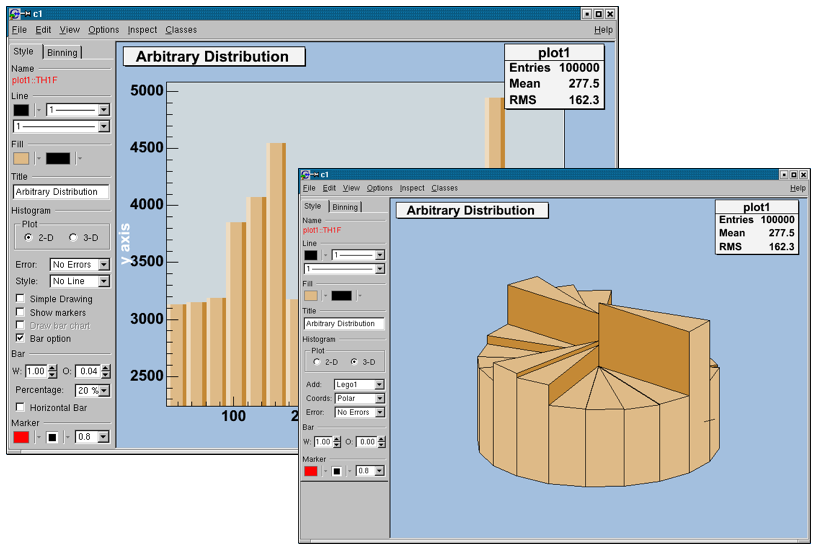
sets the title of the histogram.
draw a 2D or 3D plot; according to the dimension, different drawing possibilities can be set.
add different error bars to the histogram (no errors, simple, etc.).
further things which can be added to the histogram (None, simple/smooth line, fill area, etc.)
draw a simple histogram without errors (= “HIST” draw option). In combination with some other draw options an outer line is drawn on top of the histogram
draw a marker on to of each bin (=“P” draw option).
draw a bar chart (=“B” draw option).
draw a bar chart (=“BAR” draw option); if selected, it will show an additional interface elements for bars: width, offset, percentage and the possibility to draw horizontal bars.
set histogram type Lego-Plot or Surface draw (Lego, Lego1.2, Surf, Surf1…5).
set the coordinate system (Cartesian, Spheric, etc.).
same as for 2D plot.
set the bar attributes: width and offset.
draw a horizontal bar chart.
The binning tab has two different layouts. One is for a histogram, which is not drawn from an ntuple. The other one is available for a histogram, which is drawn from an ntuple. In this case, the rebin algorithm can create a rebinned histogram from the original data i.e. the ntuple.
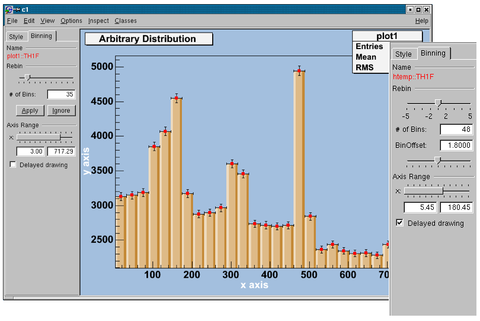
To see the differences do:
TFile f("hsimple.root");
hpx->Draw("BAR1"); // non ntuple histogram
ntuple->Draw("px");// ntuple histogramRebin with a slider and the number of bins (shown in the field below the slider). The number of bins can be changed to any number, which divides the number of bins of the original histogram. A click on the Apply button will delete the origin histogram and will replace it by the rebinned one on the screen. A click on the Ignore button will restore the origin histogram.
with the slider, the number of bins can be enlarged by a factor of 2, 3, 4, 5 (moving to the right) or reduced by a factor of \(\frac{1}{2}\), \(\frac{1}{3}\), \(\frac{1}{4}\), \(\frac{1}{5}\).
the origin of the histogram can be changed within one binwidth. Using this slider the effect of binning the data into bins can be made visible (statistical fluctuations).
with a double slider it is possible to zoom into the specified axis range. It is also possible to set the upper and lower limit in fields below the slider.
all the Binning sliders can set to delay draw mode. Then the changes on the histogram are only updated, when the Slider is released. This should be activated if the redrawing of the histogram is time consuming.
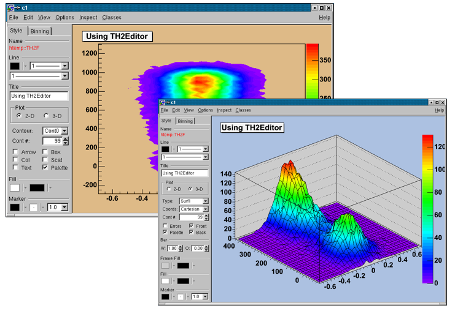
set the title of the histogram
change the draw options of the histogram.
draw a 2D or 3D plot of the histogram; according to the dimension, the drawing possibilities are different.
draw a contour plot (None, Cont0…5)
set the number of Contours;
set the arrow mode and shows the gradient between adjacent cells;
a box is drawn for each cell with a color scale varying with contents;
draw bin contents as text;
a box is drawn for each cell with surface proportional to contents;
draw a scatter-plot (default);
the color palette is drawn.
set histogram type to Lego or surface plot; draw (Lego, Lego1.2, Surf, Surf1…5)
set the coordinate system (Cartesian, Spheric, etc.);
set the number of Contours (for e.g. Lego2 draw option);
draw errors in a Cartesian lego plot;
draw the color palette;
draw the front box of a Cartesian lego plot;
draw the back box of a Cartesian lego plot;
change the bar attributes: the width and offset.
The Rebinning tab has two different layouts. One is for a histogram that is not drawn from an ntuple; the other one is available for a histogram, which is drawn from an ntuple. In this case, the rebin algorithm can create a rebinned histogram from the original data i.e. the ntuple. To see the differences do for example:
TFile f ("hsimple.root");
hpxpy->Draw("Lego2"); // non ntuple histogram
ntuple->Draw("px:py","","Lego2"); // ntuple histogramRebin with sliders (one for the x, one for the y-axis) and the number of bins (shown in the field below them can be changed to any number, which divides the number of bins of the original histogram. Selecting the Apply button will delete the origin histogram and will replace it by the rebinned one on the screen. Selecting the Ignore the origin histogram will be restored.
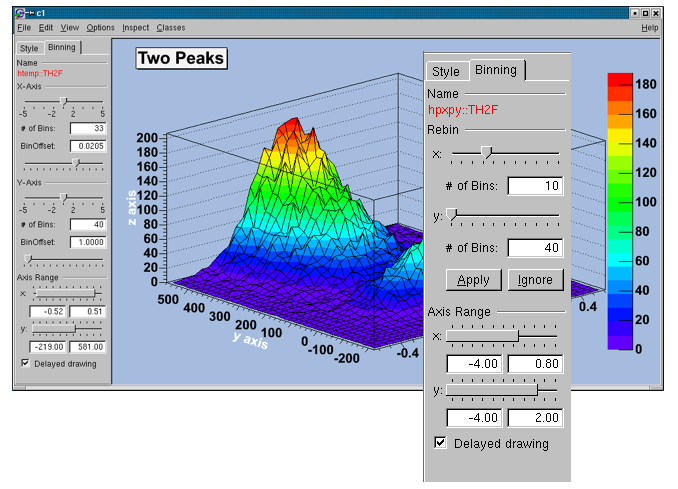
with the sliders the number of bins can be enlarged by a factor of 2,3,4,5 (moving to the right) or reduced by a factor of \(\frac{1}{2}\), \(\frac{1}{3}\), \(\frac{1}{4}\), \(\frac{1}{5}\).
with the BinOffset slider the origin of the histogram can be changed within one binwidth. Using this slider the effect of binning the data into bins can be made visible (=> statistical fluctuations).
with a double slider that gives the possibility for zooming. It is also possible to set the upper and lower limit in fields below the slider.
all the binning sliders can be set to delay draw mode. Then the changes on the histogram are only updated, when the Slider is released. This should be activated if the redrawing of the histogram is too time consuming.
A graph is a graphics object made of two arrays X and Y, holding the x,y coordinates of n points. There are several graph classes; they are TGraph, TGraphErrors, TGraphAsymmErrors, and TMultiGraph.
The TGraph class supports the general
case with non-equidistant points, and the special case with equidistant
points. Graphs are created with the TGraph
constructor. First, we define the arrays of coordinates and then create
the graph. The coordinates can be arrays of doubles or floats.
Int_t n = 20;
Double_t x[n], y[n];
for (Int_t i=0; i<n; i++) {
x[i] = i*0.1;
y[i] = 10*sin(x[i]+0.2);
}
TGraph *gr1 = new TGraph (n, x, y);An alternative constructor takes only the number of points n. It is expected that the coordinates will be set later.
The default constructor can also be used. Further calls to SetPoint() will extend the internal vectors.
The various drawing options for a graph are explained in TGraph::PaintGraph. They are:
“L” A simple poly-line between every points is drawn
“F” A fill area is drawn
“F1” Idem as “F” but fill area is no more repartee around X=0 or Y=0
“F2” draw a fill area poly line connecting the center of bins
“A” Axis are drawn around the graph
“C” A smooth curve is drawn
“*” A star is plotted at each point
“P” The current marker of the graph is plotted at each point
“B” A bar chart is drawn at each point
“[]” Only the end vertical/horizontal lines of the error bars are drawn. This option only applies to the TGraphAsymmErrors.
“1” ylow = rwymin
The options are not case sensitive and they can be concatenated in most cases. Let us look at some examples.

{
Int_t n = 20;
Double_t x[n], y[n];
for (Int_t i=0;i<n;i++) {
x[i] = i*0.1;
y[i] = 10*sin(x[i]+0.2);
}
// create graph
TGraph *gr = new TGraph(n,x,y);
TCanvas *c1 = new TCanvas("c1","Graph Draw Options",
200,10,600,400);
// draw the graph with axis, continuous line, and put
// a * at each point
gr->Draw("AC*");
}This code will only work if n, x, and y is defined. The previous example defines these. You need to set the fill color, because by default the fill color is white and will not be visible on a white canvas. You also need to give it an axis, or the bar chart will not be displayed properly.
This code will only work if n, x, yare
defined. The first example defines them. You need to set the fill
color, because by default the fill color is white and will not be
visible on a white canvas. You also need to give it an axis, or the
filled polygon will not be displayed properly.
{
Int_t n = 20;
Double_t x[n], y[n];
// build the arrays with the coordinate of points
for (Int_t i=0; i<n; i++) {
x[i] = i*0.1;
y[i] = 10*sin(x[i]+0.2);
}
// create graphs
TGraph *gr3 = new TGraph(n,x,y);
TCanvas *c1 = new TCanvas ("c1","Graph Draw Options",
200,10,600,400);
// draw the graph with the axis,contineous line, and put
// a marker using the graph's marker style at each point
gr3->SetMarkerStyle(21);
c1->cd(4);
gr3->Draw("APL");
// get the points in the graph and put them into an array
Double_t *nx = gr3->GetX();
Double_t *ny = gr3->GetY();
// create markers of different colors
for (Int_t j=2; j<n-1; j++) {
TMarker *m = new TMarker(nx[j], 0.5*ny[j], 22);
m->SetMarkerSize(2);
m->SetMarkerColor(31+j);
m->Draw();
}
}To super impose two graphs you need to draw the axis only once, and leave out the “A” in the draw options for the second graph. Next is an example:
{
Int_t n = 20;
Double_t x[n], y[n], x1[n], y1[n];
// create a blue graph with a cos function
gr1->SetLineColor(4);
gr1->Draw("AC*");
// superimpose the second graph by leaving out the axis option "A"
gr2->SetLineWidth(3);
gr2->SetMarkerStyle(21);
gr2->SetLineColor(2);
gr2->Draw("CP");
}A TGraphErrors is a TGraph with error bars. The various draw format options of TGraphErrors::Paint() are derived from TGraph.
In addition, it can be drawn with the “Z” option to leave off the small lines at the end of the error bars. If option contains “>”, an arrow is drawn at the end of the error bars. If option contains “|>”, a full arrow is drawn at the end of the error bars. The size of the arrow is set to 2/3 of the marker size.
The option “[]” is interesting to superimpose systematic
errors on top of the graph with the statistical errors. When it is
specified, only the end vertical/horizontal lines of the error bars are
drawn.
To control the size of the lines at the end of the error bars (when option 1 is chosen) use SetEndErrorSize(np). By default np=1; np represents the number of pixels.
The four parameters of TGraphErrors are: X, Y (as in TGraph), X-errors, and Y-errors - the size of the errors in the x and y direction. Next example is $ROOTSYS/tutorials/graphs/gerrors.C.
{
c1 = new TCanvas("c1","A Simple Graph with error bars",200,10,700,500);
c1->SetGrid();
// create the coordinate arrays
Int_t n = 10;
Float_t x[n] = {-.22,.05,.25,.35,.5,.61,.7,.85,.89,.95};
Float_t y[n] = {1,2.9,5.6,7.4,9,9.6,8.7,6.3,4.5,1};
// create the error arrays
Float_t ex[n] = {.05,.1,.07,.07,.04,.05,.06,.07,.08,.05};
Float_t ey[n] = {.8,.7,.6,.5,.4,.4,.5,.6,.7,.8};
// create the TGraphErrors and draw it
gr = new TGraphErrors(n,x,y,ex,ey);
gr->SetTitle("TGraphErrors Example");
gr->SetMarkerColor(4);
gr->SetMarkerStyle(21);
gr->Draw("ALP");
c1->Update();
}A TGraphAsymmErrors is a TGraph with asymmetric error bars. It inherits the various draw format options from TGraph. Its method Paint(Option_t *option) paints the TGraphAsymmErrors with the current attributes. You can set the following additional options for drawing:
“z” or “Z”the horizontal and vertical small lines are not drawn at the end of error bars
“>”an arrow is drawn at the end of the error bars
“|>”a full arrow is drawn at the end of the error bar; its size is \(\frac{2}{3}\) of the marker size
“[]”only the end vertical/horizontal lines of the
error bars are drawn; this option is interesting to superimpose
systematic errors on top of a graph with statistical errors.
The constructor has six arrays as parameters: X and Y as TGraph and low X-errors and high X-errors, low Y-errors and high Y-errors. The low value is the length of the error bar to the left and down, the high value is the length of the error bar to the right and up.
{
c1 = new TCanvas("c1","A Simple Graph with error bars",
200,10,700,500);
c1->SetGrid();
// create the arrays for the points
Int_t n = 10;
Double_t x[n] = {-.22,.05,.25,.35,.5, .61,.7,.85,.89,.95};
Double_t y[n] = {1,2.9,5.6,7.4,9,9.6,8.7,6.3,4.5,1};
// create the arrays with high and low errors
Double_t exl[n] = {.05,.1,.07,.07,.04,.05,.06,.07,.08,.05};
Double_t eyl[n] = {.8,.7,.6,.5,.4,.4,.5,.6,.7,.8};
Double_t exh[n] = {.02,.08,.05,.05,.03,.03,.04,.05,.06,.03};
Double_t eyh[n] = {.6,.5,.4,.3,.2,.2,.3,.4,.5,.6};
// create TGraphAsymmErrors with the arrays
gr = new TGraphAsymmErrors(n,x,y,exl,exh,eyl,eyh);
gr->SetTitle("TGraphAsymmErrors Example");
gr->SetMarkerColor(4);
gr->SetMarkerStyle(21);
gr->Draw("ALP");
}A TGraphBentErrors is a TGraph with bent, asymmetric error bars. The various format options to draw a TGraphBentErrors are explained in TGraphBentErrors::Paint method. The TGraphBentErrors is drawn by default with error bars and small horizontal and vertical lines at the end of the error bars. If option “z” or “Z” is specified, these small lines are not drawn. If the option “X” is specified, the errors are not drawn (the TGraph::Paint method equivalent).
if option contains “>”, an arrow is drawn at the end of the error bars
if option contains “|>”, a full arrow is drawn at the end of the error bars
the size of the arrow is set to 2/3 of the marker size
if option “[]” is specified, only the end
vertical/horizontal lines of the error bars are drawn. This option is
interesting to superimpose systematic errors on top of a graph with
statistical errors.
This figure has been generated by the following macro:
{
Int_t n = 10;
Double_t x[n] = {-0.22,0.05,0.25,0.35,0.5,0.61,0.7,0.85,0.89,0.95};
Double_t y[n] = {1,2.9,5.6,7.4,9,9.6,8.7,6.3,4.5,1};
Double_t exl[n] = {.05,.1,.07,.07,.04,.05,.06,.07,.08,.05};
Double_t eyl[n] = {.8,.7,.6,.5,.4,.4,.5,.6,.7,.8};
Double_t exh[n] = {.02,.08,.05,.05,.03,.03,.04,.05,.06,.03};
Double_t eyh[n] = {.6,.5,.4,.3,.2,.2,.3,.4,.5,.6};
Double_t exld[n] = {.0,.0,.0,.0,.0,.0,.0,.0,.0,.0};
Double_t eyld[n] = {.0,.0,.0,.0,.0,.0,.0,.0,.0,.0};
Double_t exhd[n] = {.0,.0,.0,.0,.0,.0,.0,.0,.0,.0};
Double_t eyhd[n] = {.0,.0,.0,.0,.0,.0,.0,.0,.05,.0};
gr = new TGraphBentErrors(n,x,y,
exl,exh,eyl,eyh,exld,exhd,eyld,eyhd);
gr->SetTitle("TGraphBentErrors Example");
gr->SetMarkerColor(4);
gr->SetMarkerStyle(21);
gr->Draw("ALP");
}The TGraphPolar class creates a polar graph (including error bars). A TGraphPolar is a TGraphErrors represented in polar coordinates. It uses the class TGraphPolargram to draw the polar axis.
{
TCanvas *CPol = new TCanvas("CPol","TGraphPolar Examples",700,700);
Double_t rmin=0;
Double_t rmax=TMath::Pi()*2;
Double_t r[1000];
Double_t theta[1000];
TF1 * fp1 = new TF1("fplot","cos(x)",rmin,rmax);
for (Int_t ipt = 0; ipt < 1000; ipt++) {
r[ipt] = ipt*(rmax-rmin)/1000+rmin;
theta[ipt] = fp1->Eval(r[ipt]);
}
TGraphPolar * grP1 = new TGraphPolar(1000,r,theta);
grP1->SetLineColor(2);
grP1->Draw("AOL");
}The TGraphPolar drawing options are:
“O” Polar labels are paint orthogonally to the polargram radius.
“P” Polymarker are paint at each point position.
“E” Paint error bars.
“F” Paint fill area (closed polygon).
“A”Force axis redrawing even if a polagram already exists.
When a graph is painted with the option “C” or “L”,
it is possible to draw a filled area on one side of the line. This is
useful to show exclusion zones. This drawing mode is activated when the
absolute value of the graph line width (set thanks to SetLineWidth) is greater than 99. In that case the line width number is interpreted as 100*ff+ll = ffll. The two-digit numbers “ll” represent the normal line width whereas “ff” is the filled area width. The sign of “ffll”
allows flipping the filled area from one side of the line to the other.
The current fill area attributes are used to draw the hatched zone.
{
c1 = new TCanvas("c1","Exclusion graphs examples",200,10,700,500);
c1->SetGrid();
// create the multigraph
TMultiGraph *mg = new TMultiGraph();
mg->SetTitle("Exclusion graphs");
// create the graphs points
const Int_t n = 35;
Double_t x1[n], x2[n], x3[n], y1[n], y2[n], y3[n];
for (Int_t i=0;i<n;i++) {
x1[i] = i*0.1; y1[i] = 10*sin(x1[i]);
x2[i] = x1[i]; y2[i] = 10*cos(x1[i]);
x3[i] = x1[i]+.5; y3[i] = 10*sin(x1[i])-2;
}
// create the 1st TGraph
gr1 = new TGraph(n,x1,y1);
gr1->SetLineColor(2);
gr1->SetLineWidth(1504);
gr1->SetFillStyle(3005);
// create the 2nd TGraph
gr2 = new TGraph(n,x2,y2);
gr2->SetLineColor(4);
gr2->SetLineWidth(-2002);
gr2->SetFillStyle(3004);
gr2->SetFillColor(9);
// create the 3rd TGraph
gr3 = new TGraph(n,x3,y3);
gr3->SetLineColor(5);
gr3->SetLineWidth(-802);
gr3->SetFillStyle(3002);
gr3->SetFillColor(2);
// put the graphs in the multigraph
mg->Add(gr1);
mg->Add(gr2);
mg->Add(gr3);
// draw the multigraph
mg->Draw("AC");
}A TGraphQQ allows drawing
quantile-quantile plots. Such plots can be drawn for two datasets, or
for one dataset and a theoretical distribution function.
Quantile-quantile plots are used to determine whether two samples come from the same distribution. A qq-plot draws the quantiles of one dataset against the quantile of the other. The quantiles of the dataset with fewer entries are on Y-axis, with more entries - on X-axis. A straight line, going through 0.25 and 0.75 quantiles is also plotted for reference. It represents a robust linear fit, not sensitive to the extremes of the datasets. If the datasets come from the same distribution, points of the plot should fall approximately on the 45 degrees line. If they have the same distribution function, but different parameters of location or scale, they should still fall on the straight line, but not the 45 degrees one.
The greater their departure from the straight line, the more evidence there is that the datasets come from different distributions. The advantage of qq-plot is that it not only shows that the underlying distributions are different, but, unlike the analytical methods, it also gives information on the nature of this difference: heavier tails, different location/scale, different shape, etc.
Quantile-quantile plots are used to determine if the dataset comes from the specified theoretical distribution, such as normal. A qq-plot draws quantiles of the dataset against quantiles of the specified theoretical distribution. Note, that density, not CDF should be specified a straight line, going through 0.25 and 0.75 quantiles could also be plotted for reference. It represents a robust linear fit, not sensitive to the extremes of the dataset. As in the two datasets case, departures from straight line indicate departures from the specified distribution. Next picture shows an example of a qq-plot of a dataset from N(3, 2) distribution and TMath::Gaus(0, 1) theoretical function. Fitting parameters are estimates of the distribution mean and sigma.
A TMultiGraph is a collection of TGraph (or derived) objects. Use TMultiGraph::Addto add a new graph to the list. The TMultiGraph owns the objects in the list. The drawing and fitting options are the same as for TGraph.
{
// create the points
Int_t n = 10;
Double_t x[n] = {-.22,.05,.25,.35,.5,.61,.7,.85,.89,.95};
Double_t y[n] = {1,2.9,5.6,7.4,9,9.6,8.7,6.3,4.5,1};
Double_t x2[n] = {-.12,.15,.35,.45,.6,.71,.8,.95,.99,1.05};
Double_t y2[n] = {1,2.9,5.6,7.4,9,9.6,8.7,6.3,4.5,1};
// create the width of errors in x and y direction
Double_t ex[n] = {.05,.1,.07,.07,.04,.05,.06,.07,.08,.05};
Double_t ey[n] = {.8,.7,.6,.5,.4,.4,.5,.6,.7,.8};
// create two graphs
TGraph *gr1 = new TGraph(n,x2,y2);
TGraphErrors *gr2 = new TGraphErrors(n,x,y,ex,ey);
// create a multigraph and draw it
TMultiGraph *mg = new TMultiGraph();
mg->Add(gr1);
mg->Add(gr2);
mg->Draw("ALP");
}This class is a set of N points x[i], y[i], z[i]
in a non-uniform grid. Several visualization techniques are
implemented, including Delaunay triangulation. Delaunay triangulation is
defined as follow: ‘for a set S of points in the Euclidean plane, the unique triangulation DT(S) of S such that no point in S is inside the circum-circle of any triangle in DT(S). DT(S) is the dual of the Voronoï diagram of S. If n is the number of points in S, the Voronoï diagram of S is the partitioning of the plane containing S
points into n convex polygons such that each polygon contains exactly
one point and every point in a given polygon is closer to its central
point than to any other. A Voronoï diagram is sometimes also known as a
Dirichlet tessellation.
The TGraph2D class has the following constructors:
n and three arrays x, y, and z (can be arrays of doubles, floats, or integers):SetPoint at the position “i” with the values x, y, z:SetPoint must be used to fill the internal arrays.The arrays are read from the ASCII file “graph.dat” according to a specified format. The format’s default value is “%lg %lg %lg”. Note that in any of last three cases, the SetPoint method can be used to change a data point or to add a new one. If the data point index (i) is greater than the size of the internal arrays, they are automatically extended.
Specific drawing options can be used to paint a TGraph2D:
“TRI” the Delaunay triangles are drawn using filled
area. A hidden surface drawing technique is used. The surface is painted
with the current fill area color. The edges of the triangles are
painted with the current line color;
“TRIW”the Delaunay triangles are drawn as wire frame;
“TRI1” the Delaunay triangles are painted with color levels. The edges of the triangles are painted with the current line color;
“TRI2” the Delaunay triangles are painted with color levels;
“P”draws a marker at each vertex;
“P0” draws a circle at each vertex. Each circle background is white.
A TGraph2D can be also drawn with ANY
options valid for 2D histogram drawing. In this case, an intermediate 2D
histogram is filled using the Delaunay triangles technique to
interpolate the data set. TGraph2D linearly interpolate a Z value for any (X,Y) point given some existing (X,Y,Z) points. The existing (X,Y,Z) points can be randomly scattered. The algorithm works by joining the existing points to make Delaunay triangles in (X,Y). These are then used to define flat planes in (X,Y,Z)
over which to interpolate. The interpolated surface thus takes the form
of tessellating triangles at various angles. Output can take the form
of a 2D histogram or a vector. The triangles found can be drawn in 3D.
This software cannot be guaranteed to work under all circumstances. It
was originally written to work with a few hundred points in anXY space with similar X and Y ranges.
{
TCanvas *c = new TCanvas("c","Graph2D example",0,0,700,600);
Double_t x, y, z, P = 6.;
Int_t np = 200;
TGraph2D *dt = new TGraph2D();
TRandom *r = new TRandom();
for (Int_t N=0; N<np; N++) {
x = 2*P*(r->Rndm(N))-P;
y = 2*P*(r->Rndm(N))-P;
z = (sin(x)/x)*(sin(y)/y)+0.2;
dt->SetPoint(N,x,y,z);
}
gStyle->SetPalette(55);
dt->Draw("surf1"); // use "surf1" to generate the left picture
} // use "tri1 p0" to generate the right oneA more complete example is $ROOTSYS/tutorials/fit/graph2dfit.C that produces the next figure.
A TGraph2DErrors is a TGraph2D with errors. It is useful to perform fits with errors on a 2D graph. An example is the macro $ROOTSYS/tutorials/graphs/graph2derrorsfit.C.
The graph Fit method in general works the same way as the TH1::Fit. See “Fitting Histograms”.
To give the axis of a graph a title you need to draw the graph first,
only then does it actually have an axis object. Once drawn, you set the
title by getting the axis and calling the TAxis::SetTitle method, and if you want to center it, you can call the TAxis::CenterTitle method.
Assuming that n, x, and y are defined. Next code sets the titles of the x and y axes.
root[] gr5 = new TGraph(n,x,y)
root[] gr5->Draw()
<TCanvas::MakeDefCanvas>: created default TCanvas with name c1
root[] gr5->Draw("ALP")
root[] gr5->GetXaxis()->SetTitle("X-Axis")
root[] gr5->GetYaxis()->SetTitle("Y-Axis")
root[] gr5->GetXaxis()->CenterTitle()
root[] gr5->GetYaxis()->CenterTitle()
root[] gr5->Draw("ALP")For more graph examples see the scripts: $ROOTSYS/tutorials directory graph.C, gerrors.C, zdemo.C, and gerrors2.C.
To zoom a graph you can create a histogram with the desired axis range first. Draw the empty histogram and then draw the graph using the existing axis from the histogram.
{
c1 = new TCanvas("c1","A Zoomed Graph",200,10,700,500);
hpx = new TH2F("hpx","Zoomed Graph Example",10,0,0.5,10,1.0,8.0);
hpx->SetStats(kFALSE); // no statistics
hpx->Draw();
Int_t n = 10;
Double_t x[n] = {-.22,.05,.25,.35,.5,.61,.7,.85,.89,.95};
Double_t y[n] = {1,2.9,5.6,7.4,9,9.6,8.7,6.3,4.5,1};
gr = new TGraph(n,x,y);
gr->SetMarkerColor(4);
gr->SetMarkerStyle(20);
gr->Draw("LP");// and draw it without an axis
}The next example is the same graph as above with a zoom in the x and y directions.
The class TGraphEditor provides the user interface for setting the following graph attributes interactively:
Title text entry field … sets the title of the graph.
Shape radio button group - sets the graph shapes:
Show Marker - sets markers as visible or invisible.
Exclusion Zone - specifies the exclusion zone parameters :
To fit a histogram you can use the Fit Panel on a visible histogram via the context menu, or you can use the TH1::Fit
method. The Fit Panel, which is limited, is best for prototyping. The
histogram needs to be drawn in a pad before the Fit Panel is invoked.
The method TH1::Fit is more powerful and is used in scripts and programs.
The Fit method is implemented in ROOT for the histogram classes TH1, the sparse histogram classes, THnSparse, the graph classes, TGraph, TGraph2D and TMultiGraph for fitting a collection of Graphs with the same function.
To fit a histogram programmatically, you can use the TH1::Fit method. Here is the signatures of TH1::Fit and an explanation of the parameters:
function a pointer to the fitted function (the fit
model) object. One can also use the function name. This name may be one
of ROOT pre-defined function names or a user-defined function. See the
next paragraph for the list of pre-defined functions.
*option: The second parameter is the fitting option. Here is the list of fitting options:
“W” Set all weights to 1 for non empty bins; ignore error bars
“WW” Set all weights to 1 including empty bins; ignore error bars
“I” Use integral of function in bin instead of value at bin center
“L” Use log likelihood method (default is chi-square method). To be used when the histogram represents counts
“WL” Weighted log likelihood method. To be used when the histogram has been filled with weights different than 1.
“P” Use Pearson chi-square method, using expected errors instead of the observed one given by TH1::GetBinError (default case). The expected error is instead estimated from the square-root of the bin function value.
“Q” Quiet mode (minimum printing)
“V” Verbose mode (default is between Q and V)
“S” The result of the fit is returned in the TFitResultPtr.
“E” Perform better errors estimation using the Minos technique
“M” Improve fit results, by using the IMPROVE algorithm of TMinuit.
“R” Use the range specified in the function range
“N” Do not store the graphics function, do not draw
“0” Do not plot the result of the fit. By default the fitted function is drawn unless the option “N” above is specified.
“+” Add this new fitted function to the list of
fitted functions (by default, the previous function is deleted and only
the last one is kept)
“B”Use this option when you want to fix one or more parameters and the fitting function is a predefined one, like polN, expo, landau, gaus. Note that in case of pre-defined functions some default initial values and limits are set.
“C”In case of linear fitting, don’t calculate the chisquare (saves time).
“F”If fitting a linear function (e.g. polN), switch to use the default minimizer (e.g. Minuit). By default, polN functions are fitted by the linear fitter.
*goption:The third parameter is the graphics option that is the same as in the TH1::Draw (see the chapter Draw Options).
xxmin, xxmax:Thee fourth and fifth parameters specify the range over which to apply the fit.
By default, the fitted function object is added to the histogram and is drawn in the current pad.
The signature for fitting a TGraph is exactly the same as for the TH1. Only some options apply only for fitting histograms, these are the options “L”, “WL” and “I”. These options apply instead only for TGraph::Fit, the rest of options (appart from “L”, “WL” and “I” are the same)
TGraph specific options
“EX0” When fitting a TGraphErrors or a TgraphAsymErrors the errors on the coordinates are not used in the fit
ROB” in case of linear fitting use the Robust fitting.
Compute the LTS regression coefficients (robust (resistant)
regression), using the default fraction of good points.“ROB=0.x” as above, but compute the LTS regression coefficients, using 0.x as a fraction of good points.
TF1 function classHere we will show how to create the TF1 class that is used for fitting histograms and graphs.
To fit a histogram with a predefined function, simply pass the name of the function in the first parameter of TH1::Fit. For example, this line fits histogram object hist with a Gaussian.
The initial parameter values (and eventual limits) for pre-defined
functions are set automatically. For overriding the default limits
values use the fit option B.
The list of pre-defined functions that can be used with the Fit method is the following:
“gaus” Gaussian function with 3 parameters: f(x) = p0*exp(-0.5*((x-p1)/p2)^2)
“expo”An Exponential with 2 parameters: f(x) = exp(p0+p1*x)
“polN” A polynomial of degree N, where N is a number between 0 and 9: f(x) = p0 + p1*x + p2*x2 +...
“chebyshevN” A Chebyshev polynomial of degree N, where N is a number between 0 and 9: f(x) = p0 + p1*x + p2*(2*x2-1) +...
“landau” Landau function with mean and sigma. This function has been adapted from the CERNLIB routine G110 denlan (see TMath::Landau).
“gausn” Normalized form of the gaussian function with 3 parameters f(x) = p0*exp(-0.5*((x-p1)/p2)^2)/(p2 *sqrt(2PI))
You can create a TF1 object and use it in the call the TH1::Fit. The parameter in to the Fit method is the NAME of the TF1 object. There are three ways to create a TF1.
Using C++ expression using x with a fixed set of operators and functions defined in TFormula.
Same as first one, with parameters
Using a function that you have defined. This can be a free function or a functor object or a particular member function of a class.
Let’s look at the first case. Here we call the TF1 constructor by giving it the formula: sin(x)/x.
You can also use a TF1 object in the constructor of another TF1.
The second way to construct a TF1 is to add parameters to the expression. Here we use two parameters:
x*sin(x)The parameter index is enclosed in square brackets. To set the initial parameters explicitly you can use:
This sets parameter 0 to 10. You can also use SetParameters to set multiple parameters at once.
This sets parameter 0 to 10 and parameter 1 to 5. We can now draw the TF1:
The third way to build a TF1 is to define a function yourself and then pass the function pointer to the constructor. A function for a TF1 constructor needs to have this exact signature:
The two parameters are:
x a pointer to the dimension array. Each element contains a dimension. For a 1D histogram only x[0] is used, for a 2D histogram x[0] and x[1] is used, and for a 3D histogram x[0], x[1], and x[2]
are used. For histograms, only 3 dimensions apply, but this method is
also used to fit other objects, for example an ntuple could have 10
dimensions.
par a pointer to the parameters array. This array
contains the current values of parameters when it is called by the
fitting function.
The following script $ROOTSYS/tutorials/fit/myfit.C illustrates how to fit a 1D histogram with a user-defined function. First we declare the function.
// define a function with 3 parameters
Double_t fitf(Double_t *x,Double_t *par) {
Double_t arg = 0;
if (par[2]!=0) arg = (x[0] - par[1])/par[2];
Double_t fitval = par[0]*TMath::Exp(-0.5*arg*arg);
return fitval;
}Now we use the function:
// this function uses fitf to fit a histogram
void fitexample() {
// open a file and get a histogram
TFile *f = new TFile("hsimple.root");
TH1F *hpx = (TH1F*)f->Get("hpx");
// Create a TF1 object using the function defined above.
// The last three parameters specify the number of parameters
// for the function.
TF1 *func = new TF1("fit",fitf,-3,3,3);
// set the parameters to the mean and RMS of the histogram
func->SetParameters(500,hpx->GetMean(),hpx->GetRMS());
// give the parameters meaningful names
func->SetParNames ("Constant","Mean_value","Sigma");
// call TH1::Fit with the name of the TF1 object
hpx->Fit("fit");
}You can create a TF1 also from a C++ function object (functor) with parameters A TF1 can be created from any C++ class implementing this member function:
The advantage of the function object is that it can have a state and reference therefore what-ever other object the user needs, without using globals. This is an example to define first the function object
class MyFunctionObject {
public:
// use constructor to customize your function object
MyFunctionObject(......) { ......}
double operator() (double *x, double *p) {
// function implementation using class data members
}
};and then use it to create the TF1:
MyFunctionObject fobj(....); // create the function object
TF1 * f = new TF1("f",fobj,xmin,xmax,npar); // create TF1 class with n-parameters and range [xmin,xmax]If using C++11, one can create a TF1 also from a C++ lambda function:
// create TF1 class with 2 parameters and range [xmin,xmax] using a lambda
TF1 * f = new TF1("f",[](double*x,double*p){return p[0] + p[1]*x[0];},xmin,xmax,2);We will show here some configuration actions that can or must be done when fitting histogram or graph using the Fit method.
Parameters must be initialized before invoking the Fit method. The setting of the parameter initial values is automatic for the predefined functions: poln, exp, gaus, and landau. You can fix one or more parameters by specifying the “B” option when calling the Fit
method. When a function is not predefined, the fit parameters must be
initialized to some value as close as possible to the expected values
before calling the fit function.
To set bounds for one parameter, use TF1::SetParLimits:
When the lower and upper limits are equal, the parameter is fixed. Next two statements fix parameter 4 at 10.
However, to fix a parameter to 0, one must call the FixParameter function:
Note that you are not forced to set the limits for all parameters. For example, if you fit a function with 6 parameters, you can:
With this setup, parameters 0->2 can vary freely, parameter 3 has boundaries [-10, 4] with initial value -1.5, and parameter 4 is fixed to 0.
By default, TH1::Fit will fit the function on the defined histogram range. You can specify the option “R” in the second parameter of TH1::Fit to restrict the fit to the range specified in the TF1 constructor. In this example, the fit will be limited to -3 to 3, the range specified in the TF1 constructor.
You can also specify a range in the call to TH1::Fit:
See macros $ROOTSYS/tutorials/fit/myfit.C and multifit.C as more completed examples.
The script for this example is $ROOTSYS/tutorials/fit/multifit.C.
It shows how to use several Gaussian functions with different
parameters on separate sub ranges of the same histogram. To use a
Gaussian, or any other ROOT built in function, on a sub range you need
to define a new TF1. Each is ‘derived’ from the canned function gaus.
First, four TF1 objects are created - one for each sub-range:
g1 = new TF1("m1","gaus",85,95);
g2 = new TF1("m2","gaus",98,108);
g3 = new TF1("m3","gaus",110,121);
// The total is the sum of the three, each has 3 parameters
total = new TF1("mstotal","gaus(0)+gaus(3)+gaus(6)",85,125);Next, we fill a histogram with bins defined in the array x.
// Create a histogram and set it's contents
h = new TH1F("g1","Example of several fits in subranges",
np,85,134);
h->SetMaximum(7);
for (int i=0; i<np; i++) {
h->SetBinContent(i+1,x[i]);
}
// Define the parameter array for the total function
Double_t par[9];When fitting simple functions, such as a Gaussian, the initial values of the parameters are automatically computed by ROOT. In the more complicated case of the sum of 3 Gaussian functions, the initial values of parameters must be set. In this particular case, the initial values are taken from the result of the individual fits. The use of the “+” sign is explained below:
// Fit each function and add it to the list of functions
h->Fit(g1,"R");
h->Fit(g2,"R+");
h->Fit(g3,"R+");
// Get the parameters from the fit
g1->GetParameters(&par[0]);
g2->GetParameters(&par[3]);
g3->GetParameters(&par[6]);
// Use the parameters on the sum
total->SetParameters(par);
h->Fit(total,"R+");The example $ROOTSYS/tutorials/fit/multifit.C also
illustrates how to fit several functions on the same histogram. By
default a Fit command deletes the previously fitted function in the
histogram object. You can specify the option “+” in the second parameter
to add the newly fitted function to the existing list of functions for
the histogram.
Note that the fitted function(s) are saved with the histogram when it is written to a ROOT file.
You can combine functions to fit a histogram with their sum as it is illustrated in the macro FitDemo.C ($ROOTSYS/tutorials/fit/FittingDemo.C). We have a function that is the combination of a background and Lorentzian peak. Each function contributes 3 parameters:
\[ y(E) = a_{1} + a_{2}E + a_{3}E^{2} + \frac{A_{p}(\frac{G}{2p})} {(E-m)^{2} + (\frac{G}{2})^2 } \]
BackgroundLorentzian Peak
par[0] = \(a_{1}\) par[0] = \(A_{p}\)
par[1] = \(a_{2}\) par[1] = \(G\)
par[2] = \(a_{3}\) par[2] = \(m\)
The combination function (fitFunction) has six parameters:
fitFunction = background(x,par) + LorentzianPeak(x,&par[3])
par[0]=\(a_{1}\) par[1]=\(a_{2}\) par[2]=\(a_{3}\) par[3]=\(A_{p}\) par[4]=\(G\) par[5]=\(m\)
This script creates a histogram and fits it with the combination of two functions. First we define the two functions and the combination function:
// Quadratic background function
Double_t background(Double_t *x, Double_t *par) {
return par[0] + par[1]*x[0] + par[2]*x[0]*x[0];
}
// Lorentzian Peak function
Double_t lorentzianPeak(Double_t *x, Double_t *par) {
return (0.5*par[0]*par[1]/TMath::Pi()) / TMath::Max(1.e-10,
(x[0]-par[2])*(x[0]-par[2])+ .25*par[1]*par[1]);
}
// Sum of background and peak function
Double_t fitFunction(Double_t *x, Double_t *par) {
return background(x,par) + lorentzianPeak(x,&par[3]);
}
void FittingDemo() {
// bevington exercise by P. Malzacher, modified by R. Brun
const int nBins = 60;
Stat_t data[nBins] = { 6, 1,10,12, 6,13,23,22,15,21,
23,26,36,25,27,35,40,44,66,81,
75,57,48,45,46,41,35,36,53,32,
40,37,38,31,36,44,42,37,32,32,
43,44,35,33,33,39,29,41,32,44,
26,39,29,35,32,21,21,15,25,15};
TH1F *histo = new TH1F("example_9_1",
"Lorentzian Peak on Quadratic Background",60,0,3);
for(int i=0; i < nBins; i++) {
// we use these methods to explicitly set the content
// and error instead of using the fill method.
histo->SetBinContent(i+1,data[i]);
histo->SetBinError(i+1,TMath::Sqrt(data[i]));
}
// create a TF1 with the range from 0 to 3 and 6 parameters
TF1 *fitFcn = new TF1("fitFcn",fitFunction,0,3,6);
// first try without starting values for the parameters
// this defaults to 1 for each param.
histo->Fit("fitFcn");
// this results in an ok fit for the polynomial function however
// the non-linear part (LorentzianHere we will show how to obtain the result of the fit (fitted function, parameter values, errors and eventually the covariance and correlation matrix).
One or more objects (typically a TF1\*) can be added to the list of functions (fFunctions) associated to each histogram. A call to TH1::Fit adds the fitted function to this list. Given a histogram h, one can retrieve the associated function with:
If the histogram (or graph) is made persistent, the list of
associated functions is also persistent. Retrieve a pointer to the
function with the TH1::GetFunction() method. Then you can retrieve the fit parameters from the function (TF1) with calls such as:
root[] TF1 *fit = hist->GetFunction(function_name);
root[] Double_t chi2 = fit->GetChisquare();
// value of the first parameter
root[] Double_t p1 = fit->GetParameter(0);
// error of the first parameter
root[] Double_t e1 = fit->GetParError(0);Using the fit option S one can access the full result of the fit including the covariance and correlation matrix. See later the paragraph TFitResult.
By default, for each bin, the sum of weights is computed at fill time. One can also call TH1::Sumw2
to force the storage and computation of the sum of the square of
weights per bin. If Sumw2 has been called, the error per bin is computed
as the sqrt(sum of squares of weights); otherwise, the error is set equal to the sqrt(bin content). To return the error for a given bin number, do:
Empty bins are excluded in the fit when using the Chi-square fit
method. When fitting an histogram representing counts (i.e with Poisson
statistics) it is recommended to use the Log-Likelihood method (option ‘L’ or “WL”),
particularly in case of low statistics. When the histogram has been
filled with weights different than one, a weighted likelihood method can
be used and the errors retrieved from the fit are corrected following a
procedure described in paragraph 8.5.2 of the book, F. James, Statistical Methods in Experimental Physics, 2nd Edition.
You can change the statistics box to display the fit parameters with the TStyle::SetOptFit(mode) method. This parameter has four digits: mode = pcev (default = 0111)
p = 1 print probabilityc = 1 print Chi-square/number of degrees of freedome = 1 print errors (if e=1, v must be 1)v = 1 print name/values of parametersFor example, to print the fit probability, parameter names/values, and errors, use:
To display the Fit Panel right click on a histogram to pop up the context menu, and then select the menu entry Fit Panel.
The new Fit Panel GUI is available in ROOT v5.14. Its goal is to replace the old Fit Panel and to provide more user friendly way for performing, exploring and comparing fits.
By design, this user interface is planned to contain two tabs: “General” and “Minimization”. Currently, the “General” tab provides user interface elements for setting the fit function, fit method and different fit, draw, print options. The “Minimization tab” provides the option to set the Minimizer to use in the fit and its specific options.
The new fit panel is a modeless dialog, i.e. when opened, it does not prevent users from interacting with other windows. Its first prototype is a singleton application. When the Fit Panel is activated, users can select an object for fitting in the usual way, i.e. by left-mouse click on it. If the selected object is suitable for fitting, the fit panel is connected with this object and users can perform fits by setting different parameters and options.
‘Predefined’ combo box - contains a list of predefined functions in ROOT. You have a choice of several polynomials, a Gaussian, a Landau, and an Exponential function. The default one is Gaussian.
‘Operation’ radio button group defines the selected operational mode between functions:
Nop - no operation (default);
Add - addition;
Conv - convolution (will be implemented in the future).
Users can enter the function expression into the text entry field below the ‘Predefined’ combo box. The entered string is checked after the Enter key was pressed and an error message shows up, if the function string is not accepted.
‘Set Parameters’ button opens a dialog for parameters settings, which will be explained later.
‘Method’ combo box currently provides only two fit model choices: Chi-square and Binned Likelihood. The default one is Chi-square. The Binned Likelihood is recommended for bins with low statistics.
‘Linear Fit’ check button sets the use of Linear fitter when is selected. Otherwise the minimization is done by Minuit, i.e. fit option “F” is applied. The Linear fitter can be selected only for functions linear in parameters (for example - polN).
‘Robust’ number entry sets the robust value when fitting graphs.
‘No Chi-square’ check button switch On/Off the fit option “C” - do not calculate Chi-square (for Linear fitter).
‘Integral’ check button switch On/Off the option “I” - use integral of function instead of value in bin center.
‘Best Errors’ sets On/Off the option “E” - better errors estimation by using Minos technique.
‘All weights = 1’ sets On/Off the option “W”- all weights set to 1 excluding empty bins; error bars ignored.
‘Empty bins, weights=1’ sets On/Off the option “WW” - all weights equal to 1 including empty bins; error bars ignored.
‘Use range’ sets On/Off the option “R” - fit
only data within the specified function range. Sliders settings are used
if this option is set to On. Users can change the function range values
by pressing the left mouse button near to the left/right slider edges.
It is possible to change both values simultaneously by pressing the left
mouse button near to the slider center and moving it to a new position.
‘Improve fit results’ sets On/Off the option “M”- after minimum is found, search for a new one.
‘Add to list’ sets On/Off the option “+”- add
function to the list without deleting the previous one. When fitting a
histogram, the function is attached to the histogram’s list of
functions. By default, the previously fitted function is deleted and
replaced with the most recent one, so the list only contains one
function. Setting this option to On will add the newly fitted function
to the existing list of functions for the histogram. Note that the
fitted functions are saved with the histogram when it is written to a
ROOT file. By default, the function is drawn on the pad displaying the
histogram.
‘SAME’ sets On/Off function drawing on the same pad. When a fit is executed, the image of the function is drawn on the current pad.
‘No drawing’ sets On/Off the option “0”- do not draw the fit results.
‘Do not store/draw’ sets On/Off option “N”- do not store the function and do not draw it.
The advance option button is enabled only after having performed the fit and provides additional drawing options that can be used after having done the fit. These new drawing tools, which can be selected by the “Advanced Drawing Tool” panel that pops up when clicking the “Advanced” button, are:
Contour: to plot the confidence contour of two chosen parameters. One can select the number of points to draw the contour (more points might require more time to compute it), the parameters and the desired confidence level .
Scan : to plot a scan of the minimization function (likelihood or chi-squared) around the minimum as function of the chosen parameter.
Conf Interval : to plot the confidence interval of the fitted function as a filled coloured band around its central value. One can select the desired confidence level for the band to be plotted.
This set of options specifies the amount of feedback printed on the root command line after performed fits.
‘Verbose’ - prints fit results after each iteration.
‘Quiet’ - no fit information is printed.
‘Default’ - between Verbose and Quiet.
Fit button - performs a fit taking different option settings via the Fit Panel interface.
Reset - sets the GUI elements and related fit settings to the default ones.
Close - closes the Fit panel window.
With this tab one can select specific options for minimization. These include
The fitting of the data objects in ROOT, histograms, graphs and tree
is performed via some common classes, which are defined in the ROOT::Fit namespace. These classes can be classified in the following groups:
ROOT::Fit::Fitter for executing the fit, ROOT::Fit::FitConfig for configuring the fit, ROOT::Fit::ParameterSettings to define the properties of the fit parameters (initial values, bounds, etc..), ROOT::Fit::FitResult for storing the result of the fit.ROOT::Fit::BinDatafor
describing bin data sets, thus data points containing both coordinates
and a corresponding value/weight with optionally an error on the value
or the coordinate and the ROOT::Fit::UnBinData for
un-binned data sets, which consists only of a vector of coordinate
values. The coordinate values can be one-dimensional (i.e. one
entry per event) or multi-dimensional (N entries per event).ROOT::Fit::Chi2FCN for chi2 (least-square fits),ROOT::Fit::PoissonLikelihoodFCN for binned likelihood fits of histograms,ROOT::Fit::LogLikelihoodFCN for generic un-binned
likelihood fits. These classes are templated on the type of function
interface they implement (see later). User convenient typedefs are also
provided. They derive from the common generic interface
multi-dimensional for function evaluation, ROOT::Math::IBaseFunctionMultiDim.In addition the fitter classes make uses of the generic interfaces for parametric function evaluations, ROOT::Math::IParametricFunctionMultiDim to define the fit model function and use the ROOT::Math::Minimizer
interface to perform the minimization of the objective function. More
information about the function interface and the multi-dimensional
minimization in ROOT is given in the Mathematical Library chapter.
Here we present a detailed description of the ROOT::Fit classes and how to use them. Using these classes instead of the interface provided directly in the ROOT data objects, like TH1::Fit
allow are more fine control to configure and customise the fits. For
example, using these classes a combined fit of several histograms can be
performed.
To understand how these class work, let’s go through a simple example, such as fitting an histogram.
When fitting an histogram, instead of using TH1::Fit we will show in the following hot wo use the ROOT::Fit
classes. We will show how to perform the following different type of
fits with the histogram data: * a least square fit using the observed
errors (Neyman chi-squared); * a least square fit using the expected
errors from the function (Pearson chi-squared); * a binned likelihood
fit; * an extended unbinned likelihood fits, if the histogram has been
set to store in the buffer the original data used to fill it.
Let’s go through all the steps required for performing these fits using the ROOT::Fit::Fitter
class. These steps are: 1. Create the input fit data object. 2. Create
the input model function. 3. Configure the fit. 4. Perform the data
fitting. 5. Examine the result.
We have two types of input data, binned data (class ROOT::Fit::BinData) used for least square (chi-square) fits of histograms or TGraph objects or un-binned data (class ROOT::Fit::UnBinData) used for fitting vectors of data points (e.g. from a TTree).
Let’s suppose we have an histogram, represented as a TH1 type object (it can be one or multi-dimensional). The following shows how to create and fill a ROOT:Fit::BinData object.
ROOT::Fit::DataOptions opt;
opt.fIntegral = true;
ROOT::Fit::BinData data(opt);
// fill the bin data using the histogram
// we can do this using the following helper function from the Hist library
TH1 * h1 = (TH1*) gDirectory->Get("myHistogram");
ROOT::Fit::FillData(data, h1);In this code example, we have used the utility function of the Hist library, ROOT::Fit::FillData to fill the BinData object. The ROOT::Fit::FillData is defined in the headerfile HFitInterface.h and it has a signature for all different ROOT objects, like TH1, THnBase, TGraph, TGraph2D and TMultiGraph It is possible to specify, when creating the BinData
object, the data range we want to use and some fitting options we want
to apply to fill in the object and later when fitting. The fit data
options are controlled by the ROOT::Fit::DataOptions class, the range by the ROOT::Fit::DataRange class.
Here is an example how to specify the input option to use the integral of the function value in the bin instead of using the function value evaluated at the bin center, when doing the fit and to use a range beween the ‘xmin’ and ‘xmax’ values.
ROOT::Fit::DataOptions opt;
opt.fIntegral = true;
ROOT::Fit::DataRange range(xmin,xmax);
ROOT::Fit::BinData data(opt,range);
// fill the bin data using the histogram
// we can do this using the following helper function from the Hist library
TH1 * h1 = (TH1*) gDirectory->Get("myHistogram");
ROOT::Fit::FillData(data, h1);The list of possible fit options available is the following:
ROOT::Fit::DataOptions opt;
opt.fIntegral = true; // use integral of bin content instead of bin center (default is false).
opt.fBinVolume = true; // normalize data by the bin volume (default is false).
// This is for fitting density functions in histograms with variable bin sizes.
opt.fUseRange =true; // use the function range when creating the fit data (default is false).
opt.fExpErrors = true; // use the expected errors estimated from the function values
// assuming Poisson statistics and not the observed errors (default is false).
opt.fUseEmpty = true; // use empty bins when fitting (default is false). If fExpErrors
// is not set an arbitrary error = 1 is assigned to those bins.
opt.fErrors1 = true; // Set all measured errors to 1 (default is false).
opt.fCoordErrors = false; // When available coordinate errors are not used in the fit
// (default is true: the errors are used when they are available,
// e.g. fitting a TGraphErrors).
opt.fAsymErrors = false; // When available asymmetric errors are considered in the fit
// (default is true, the asymmetric errors are used when they are available,
// e.g. fitting a TGraphAsymmErrors).The ROOT::Fit::DataRange class supports defining multiple rectangular ranges in each dimension, and supports n-dimension. The function DataRange::AddRange(icoord,xmin,xmax) adds a range in the coordinate icoord with lower value xmin and upper value xmax:
The unbinned data sets are represented with the ROOT::Fit::UnBinData class. For creating un-binned data sets, a ROOT::Fit::UnBinData object, one has two possibilities: 1. Copy the data inside ROOT::Fit::UnBinData. One can create an empty UnBinData object, iterate on the data and add the data point one by one, or directly create the UnBinData object from a data iterator. In this case an input ROOT::Fit::DataRange object is passed in order to copy the data according to the given range. 2. Use ROOT::Fit::UnBinData as a wrapper to an external data storage. In this case the UnBinData
object is created from an iterator or pointers to the data and the data
are not copied inside. In this case the data cannot be selected
according to a specified range. All the data points will be included in
the fit.
The ROOT::Fit::UnBinData class supports also weighted data. In addition to the data points (coordinates), which can be of arbitrary k
dimensions, the class can be constructed from a vector of weights. This
is an example of taking data from an histogram buffer of a TH1 object:
double * buffer = histogram->GetBuffer();
// number of entry is first entry in the buffer
int n = buffer[0];
// when creating the data object it is important to create with the size of the data
ROOT::Fit::UnBinData data(n);
for (int i = 0; i < n; ++i)
data.add(buffer[2*i+1]); // the buffer of 1D histogram contains nevt,x1,w1,x2,w2,......Instead in this example we will create a 2-dim UnBinData object with the contents from a ROOT TTree
TFile * file = TFile::Open("hsimple.root");
TTree *ntuple = 0; file->GetObject("ntuple",ntuple);
// select from the tree the data we want to use for fitting
// we use TTree::Draw for this
int nevt = ntuple->Draw("px:py","","goff");
double * x = ntuple->GetV1();
double * y = ntuple->GetV2();
ROOT::Fit::UnBinData data(nevt, x, y );In order to fit a data sets we need a model to describe our data,
e.g. a probability density function describing our observed data or
an hypothetical function describing the relation between the
independent variables X and the single dependent variable Y. We can have an arbitrary number k of independent variables. For example, when fitting a k-dimensional histogram, the independent variables X are the bin center coordinates and Y is the bin weight.
The model function needs to be expressed as function of some unknown parameters. The fitting will find the best parameter value to describe the observed data.
We can use the ROOT TF1 class, the parametric function class, to describe the model function. However the ROOT::Fit::Fitter class, to be independent of the ROOT Hist library, takes as input a more general parametric function object, the interface (abstract) class ROOT::Math::IParametricFunctionMultiDim, which describe a generic one or multi-dimensional function with parameters. This interface extends the abstract class ROOT::Math::IBaseFunctionMultiDim, with methods to set/retrieve parameter values and to evaluate the function given the independent vector of values X and vector of parameters P. More information about the different ROOT::Math function interfaces is available in the Mathematical Library chapter.
An end-user can convert a TF1 object in a ROOT::Math::IParametricFunctionMultiDim, using the wrapper class ROOT::Math::WrapperMultiTF1:
TF1 * f1 = new TF1("f1","gaus");
ROOT::Math::WrappedMultiTF1 fitFunction(f1, f1->GetNdim() );
ROOT::Fit::Fitter fitter;
fitter.SetFunction( fitFunction, false);When creating the wrapper, the parameter values stored in TF1 will be copied in the ROOT::Math::WrappedMultiTF1 object. The function object representing the model function is given to the ROOT::Fitter class using the Fitter::SetFunction method.
The user has also the possibility to provide a function object, which
implements the derivatives of the function with respect to the
parameters. This information might be useful for some types of fits. In
this case he needs to provide the function object as a class deriving
from the ROOT::Math::IParametricGradFunctionMultiDim interface. Note that the wrapper class ROOT::Math::WrappedMultiTF1 implements also the gradient interface, using internally TF1::GradientPar, which is based on numerical differentiation, apart for the case of linear functions (i.e. when TF1::IsLinear() is true).
The parameter derivatives of the model function can be useful to some
minimization algorithms, such as Fumili. However, in general is better
to leave the minimization algorithm (e.g. Minuit) to compute the
needed derivatives using its own customised numerical differentiation
algorithm. In order to not provide to the fitter the parameter
derivatives, we explicitly passed in Fitter::SetFunction a false value.
The configuration of the fit is done via the ROOT::Fit::FitConfig class and its contained ROOT::Fit::ParameterSettings class. These are the possible allowed fit configurations:
The initial parameter values can be set directly in the input model
function object. However, for setting parameter bounds and step sizes to
values different than the automatically computed ones, one needs to use
the ROOT::Fit::ParameterSetting class. This example code will set the lower/upper bounds for the first parameter and a lower bound for the second parameter
fitter.SetFunction( fitFunction, false);
fitter.Config().ParSettings(0).SetLimits(0,1.E6);
fitter.Config().ParSettings(2).SetLowerLimit(0);Note that a ROOT::Fit::ParameterSettings objects exists for each fit parameter and it created by the ROOT::Fit::FitConfig
class, after the model function has been set in the Fitter. Only when
the function is set, the number of parameter is known and automatically
the FitConfig creates the corresponding ParameterSetting objects.
When fitting, different minimizer can be used. The can be implemented
in different libraries and loaded ar run time by the plug-in manager
system of ROOT. Each different minimizer (e.g. Minuit, Minuit2, Fumili, etc.) consists of a different implementation of the ROOT::Math::Minimizer interface. Within the same minimizer, thus within the same class implementing the Minimizer interface, different algorithms can exist. For example in the case of Minuit, we have Migrad, Simplex or Minimize. The minimizer and its corresponding algorithm, when available, can be set by using the function FitConfig::SetMinimizer("minimizerName") or by using directly the ROOT:Math::MinimizerOptions class.
If the requested minimizer is not available in ROOT, the default one
is used. The default minimizer type and algorithm can be specified by
using the static function ROOT::Math::MinimizerOptions::SetDefaultMinimizer("minimizerName")
The list of available minimizer libraries currently available in ROOT, with their corresponding available algorithms is the following one. Some minimizers (e.g. Minuit) contain several algorithms that the user can choose. Others are based on a single algorithm (e.g. Fumili)
Minuit (library libMinuit). Old version of Minuit, based on the TMinuit class. The list of possible algorithms are:
Migrad (default one)SimplexMinimize (it is a combination of Migrad and Simplex)MigradImprovedScanSeekMinuit2 (library libMinuit2). New C++ version of Minuit. The list of possible algorithm is :
Migrad (default)SimplexMinimizeScanFumili . This is the same algorithm of TFumili, but implemented in the Minuit2 library.Fumili. Implement a dedicated
minimization algorithm for least-square and likelihood fits. It has
requirements on the type of method function to be used. No specific
algorithm exists
GSLMultiMin (library libMathMore).
Minimizer based on the Multidimensional Minimization routines of the
Gnu Scientific Library (GSL). The list of available algorithms is
BFGS2 (default) : second version of the vector Broyden-Fletcher-Goldfarb-Shanno (BFGS) algorithm;BFGS : old version of the vector Broyden-Fletcher-Goldfarb-Shanno (BFGS) algorithm;ConjugateFR : Fletcher-Reeves conjugate gradient algorithm;ConjugatePR : Polak-Ribiere conjugate gradient algorithm;SteepestDescent: steepest descent algorithm;GSLMultiFit (library libMathMore). Minimizer based on the Non-Linear Least-Square routines of GSL. This minimizer can be used only for least-square fits.
GSLSimAn (library libMathMore). Minimizer based on simulated annealing.
Genetic (library libGenetic). Genetic minimizer based on an algorithm implemented in the TMVA package.
Each minimizer can be configured using the ROOT::Math::MinimizerOptions class. The list of possible option that can be set are:
MinimizerOptions::SetMinimizerType(const char *)) .MinimizerOptions::SetMinimizerAlgorithm(const char *)).MinimizerOptions::SetPrintLevel(int )) to set the verbose printing level (default is 0).MinimizerOptions::SetTolerance(double )) tolerance used to control the iterations.MinimizerOptions::SetMaxFunctionCalls(int )).MinimizerOptions::SetMaxIterations(int )). Note that this is not used by MinuitMinimizerOptions::SetErrorDef(double )).
Value in the minimization function used to compute the parameter
errors. The default is to get the uncertainties at the 68% CL is a value
of 1 for a chi-squared function minimization and 0.5 for a
log-likelihood function.MinimizerOptions::SetStrategy(int )), minimization strategy used. For each minimization strategy Minuit
uses different configuration parameters (e.g. different
requirements in computing derivatives, computing full Hessian (strategy =
2) or an approximate version. The default is a value of 1. In this case
the full Hessian matrix is computed only after the minimization.MinimizerOptions::SetPrecision(double )). Precision value in the evaluation of the minimization function. Default is numerical double precision.Note that not all the options are implemented by all the minimizers. For example in Minuit is possible to set the maximum number of function calls, but not the maximum number of iterations. The Strategy and the Precision options apply instead only for Minuit (and Minuit2).
The class supports also setting global default values for the options, by using the static functions MinimizerOptions::SetDefault... (for example MinimizerOptions::SetDefaultPrintLevel(int )). The static functions can be also used to set the minimizer options when using TH1::Fit or TGraph::Fit. The list of the current option values can be inspected by using MinimizerOptions::Print.
In addition it is possible to provide extra options which might apply for a particular minimizer MinimizerOptions::SetExtraOptions(const IOptions & ). See the documentation of the particular minimizer to use for the list of possible additional options available.
Here we have now all the required input ingredients for the fit, the
data and the function to fit. Depending on these we have now several
different way to perform the fit, using the corresponding methods of the
ROOT::Fit::Fitter class and depending on the type of input data.
Fitter::LeastSquare(const BinData & ) or Fitter::Fit(const Bindata &). It requires the user to pass a BinData object. It should be used when the data values follow a Gaussian distribution. This fit method is implemented using the class ROOT::Fit::Chi2FCN.Fitter::LikelihoodFit(const Bindata & ). The user needs to pass a BinData
object. It should be used when the data values follow a Poisson or a
multinomial distribution. The Poisson case (extended fit) is the default
and in this case the function normalization is also fit to the data.
The Multi-nominal case can be selected by passing the optional extended boolean flag as false. This method is implemented by the class ROOT::Fit:::PoissonLikelihoodFCN.Fitter::LikelihoodFit(const UnBindata &). The user needs to pass an UnBinData
object. By default the fit is not extended (i.e. the normalization
is not fitted to the data). As above the user can select an extended
likelihood fit by passing the optional extended boolean flag as true. This method is implemented using the class LogLikelihoodFCNAbove we described the pre-defined methods used for fitting. A user
can also implement its own fitting methods, thus its version of the
chi-square or likelihood function he wants to minimize. In this case,
the user does not really need to build as input a ROOT::Fit
data set and model function as we described before. He can implements
its own version of the method function using on its own data set objects
and functions.
In this case ROOT::Fit::Fitter::SetFCN is used to set the method function and ROOT::Fit::FitFCN is used for fitting. The method function can be passed also in ROOT::Fit::FitFCN, but in this case a previously defined fitting configuration is used.
The possible type of method functions that are based in ROOT::Fit::Fitter::SetFCN are:
operator()(const double * p) where p
is the parameter vectors. In this case one needs to pass the number of
parameters, the function object and optionally a vector of initial
parameter values. Other optional parameter include the size of the data
sets and a flag specifying if it is a chi2 (least-square fit). In the
last two parameters are given, the chi2/ndf can be computed after fitting the data.template <class Function>
bool Fitter::SetFCN(unsigned int npar, Function & f,
const double * initialParameters = 0,
unsigned int dataSize=0, bool isChi2Fit = false)ROOT::Math::IBaseFunctionMultiDim interface:bool Fitter::SetFCN(const ROOT::Math::IBaseFunctionMultiDim & f,
const double * initialParameters = 0,
unsigned int dataSize=0, bool isChi2Fit = false)ROOT::Math::FitMethodFunction interface. This is an interface class extending the ROOT::Math::IBaseFunctionMultiDim
with some extra functionality which can be used when fitting. This
extra functionality is required by dedicated fitting algorithms like Fumili or GSLMultiFit.bool Fitter::SetFCN(const ROOT::Math::FitMethodFunction & f,
const double * initialParameters = 0, unsigned int dataSize=0)fcn(int &npar, double *gin, double &f, double *u, int flag).typedef void(* MinuitFCN)(int &npar, double *gin, double &f, double *u, int flag)
bool Fitter::SetFCN(MinuitFCN fcn, int npar,
const double * initialParameters = 0,
unsigned int dataSize=0, bool isChi2Fit = false)The result of the fit is contained in the ROOT::Fit::Result object. A reference to the result object is obtained with the function Fitter::Result(). The ROOT::Fit::FitResult
class provides an API for retrieving parameter values, errors,
covariance and correlation matrix from the fit, minimum chi2/likelihood
values, etc…
A FitResult::Print method is also available to print the result of the fit.
The class has a self-explanatory API so, see its reference documentation for the possible information available after the fit.
One extra functionality offered by ROOT::Fit::FitResult is the possibility to compute the confidence intervals of the function after the fit. The function ROOT::Fit::FitResult::GetConfidenceInterval given an input data sets (e.g. a BinData
object) and a confidence level value (e.g. 68%) computes the
lower/upper band values of the model function at the given data points.
TFitResult is a class deriving from ROOT::Fit::Result and providing in addition some convenient methods to return a covariance or correlation matrix as a TMatrixDSym object. In addition TFitResult derives from TNamed and can be conveniently stored in a file.
When fitting an histogram ( a TH1 object) or a graph (a TGraph object) it is possible to return a TFitResult via the TFitResultPtr object, which behaves as a smart pointer to a TFitResult. TFitResultPtr is the return object by TH1::Fit or TGraph::Fit.
By default the TFitResultPtr contains only the status of the fit and
can be obtained by an automatic conversion of the TFitResultPtr to an
integer.
If the fit option S is instead used, TFitResultPtr contains the TFitResult and behaves as a smart pointer to it. This is an example:
int fitStatus = hist->Fit(myFunction); // TFitResultPtr contains only the fit status
TFitResultPtr r = hist->Fit(myFunction,"S"); // TFitResultPtr contains the TFitResult
TMatrixDSym cov = r->GetCovarianceMatrix(); // to access the covariance matrix
Double_t chi2 = r->Chi2(); // to retrieve the fit chi2
Double_t par0 = r->Parameter(0); // retrieve the value for the parameter 0
Double_t err0 = r->ParError(0); // retrieve the error for the parameter 0
r->Print("V"); // print full information of fit including covariance matrix
r->Write(); // store the result in a fileAs explained before various minimization packages can be used when fitting in ROOT. We have seen before how to configure the Fitter class to use different minimization packages and different minimization options. When using the Fit method the minimization package (and its options) can be selected using the static methods of the ROOT::Math::MinimizerOptions class. For example to select Minuit2 instead of Minuit for fitting an histogram do:
ROOT::Math::MinimizerOptions::SetDefaultMinimizer("Minuit2");
// fit the histogram histo with the gaussian pre-defined function
histo->Fit("gaus");In the following we will give some brief description of the minimization packages. The packages all implement the ROOT::Math::Minimizer
interface which can be use for finding the minimum of a
multi-dimensional function. The interface is documented in the
Mathematical Library Chapter.
In addition packages like Minuit or Minuit2 provide their own interfaces.
This package was originally written in FORTRAN by Fred James and part of PACKLIB
(patch D506). It has been converted to a C++ class by René Brun. The
current implementation in C++ is a straightforward conversion of the
original FORTRAN version. The main changes are:
The variables in the various Minuit labeled common blocks have been changed to the TMinuit class data members
The internal arrays with a maximum dimension depending on the
maximum number of parameters are now data members’ arrays with a dynamic
dimension such that one can fit very large problems by simply
initializing the TMinuit constructor with the maximum number of parameters
The include file Minuit.h has been commented as much as possible using existing comments in the code or the printed documentation
The original Minuit subroutines are now member functions
Constructors and destructor have been added
Instead of passing the FCN function in the argument
list, the addresses of this function is stored as pointer in the data
members of the class. This is by far more elegant and flexible in an
interactive environment. The member function SetFCN can be used to define this pointer
The ROOT static function Printf is provided to replace all format statements and to print on currently defined output file
The functions SetObjectFit/GetObjectFit can be used inside the FCN function to set/get a referenced object instead of using global variables
By default fGraphicsMode is true. When calling the Minuit functions such as mncont, mnscan, or any Minuit command invoking mnplot, TMinuit::mnplot() produces a TGraph object pointed by fPlot. One can retrieve this object with TMinuit::GetPlot(). For example:
h->Fit("gaus");
gMinuit->Command("SCAn 1");
TGraph *gr = (TGraph*)gMinuit->GetPlot();
gr->SetMarkerStyle(21);
gr->Draw("alp");Minuit in no graphics mode, callThe Minuit package acts on a multi parameter FORTRAN function to which one must give the generic name FCN. In the ROOT implementation, the function FCN is defined via the Minuit SetFCN member function when an histogram fitting is invoked. The value of FCN will in general depend on one or more variable parameters.
For variable parameters with limits, Minuit uses the following transformation:
Pint = arcsin(2((Pext-a)/(b-a))-1)
Pext = a+((b-a)/(2))(sinPint+1)
so that the internal value Pint can take on any value,
while the external value Pext can take on values only between the lower
limit a and the ext upper limit b. Since the transformation is
necessarily non-linear, it would transform a nice linear problem into a
nasty non-linear one, which is the reason why limits should be avoided
if not necessary. In addition, the transformation does require some
computer time, so it slows down the computation a little bit, and more
importantly, it introduces additional numerical inaccuracy into the
problem in addition to what is introduced in the numerical calculation
of the FCN value. The effects of non-linearity and numerical round off
both become more important as the external value gets closer to one of
the limits (expressed as the distance to nearest limit divided by
distance between limits). The user must therefore be aware of the fact
that, for example, if they put limits of (0, 1010) on a parameter, then
the values 0.0 and 1. 0 will be indistinguishable to the accuracy of
most machines.
The transformation also affects the parameter error matrix, of course, so Minuit does a transformation of the error matrix (and the ‘’parabolic’’ parameter errors) when there are parameter limits. Users should however realize that the transformation is only a linear approximation, and that it cannot give a meaningful result if one or more parameters is very close to a limit, where \(\frac{\partial Pext}{\partial Pint} \neq 0\). Therefore, it is recommended that:
Limits on variable parameters should be used only when needed in order to prevent the parameter from taking on unphysical values
When a satisfactory minimum has been found using limits, the limits should then be removed if possible, in order to perform or re-perform the error analysis without limits
Minuit offers the user a choice of several minimization algorithms. The MIGRAD
algorithm is in general the best minimized for nearly all functions. It
is a variable-metric method with inexact line search, a stable metric
updating scheme, and checks for positive-definiteness. Its main weakness
is that it depends heavily on knowledge of the first derivatives, and
fails miserably if they are very inaccurate.
If parameter limits are needed, in spite of the side effects, then the user should be aware of the following techniques to alleviate problems caused by limits:
If MIGRAD converges normally to a point where no parameter is near
one of its limits, then the existence of limits has probably not
prevented Minuit from finding the right minimum. On the
other hand, if one or more parameters is near its limit at the minimum,
this may be because the true minimum is indeed at a limit, or it may be
because the minimized has become ‘’blocked’’ at a limit. This may
normally happen only if the parameter is so close to a limit (internal
value at an odd multiple of \(\pm \frac{\pi}{2}\) that Minuit
prints a warning to this effect when it prints the parameter values.
The minimized can become blocked at a limit, because at a limit the
derivative seen by the minimized \(\frac{\partial F}{\partial Pint}\) is zero no matter what the real derivative \(\frac{\partial F}{\partial Pext}\) is.
\[ \left(\frac{\partial F}{\partial Pint}\right) = \left(\frac{\partial F}{\partial Pext}\right) \left(\frac{\partial Pext}{\partial Pint}\right) = \left(\frac{\partial F}{\partial Pext}\right) = 0 \]
In the best case, where the minimum is far from any limits, Minuit
will correctly transform the error matrix, and the parameter errors it
reports should be accurate and very close to those you would have got
without limits. In other cases (which should be more common, since
otherwise you would not need limits), the very meaning of parameter
errors becomes problematic. Mathematically, since the limit is an
absolute constraint on the parameter, a parameter at its limit has no
error, at least in one direction. The error matrix, which can assign
only symmetric errors, then becomes essentially meaningless.
There are two kinds of problems that can arise: the reliability of Minuit’s error estimates, and their statistical interpretation, assuming they are accurate.
For discussion of basic concepts, such as the meaning of the elements of the error matrix, or setting of exact confidence levels see the articles:
F.James. Determining the statistical Significance of experimental Results. Technical Report DD/81/02 and CERN Report 81-03, CERN, 1981
W.T.Eadie, D.Drijard, F.James, M.Roos, and B.Sadoulet. Statistical Methods in Experimental Physics. North-Holland, 1971
Minuit always carries around its own current estimates
of the parameter errors, which it will print out on request, no matter
how accurate they are at any given point in the execution. For example,
at initialization, these estimates are just the starting step sizes as
specified by the user. After a HESSE step, the errors are usually quite accurate, unless there has been a problem. Minuit, when it prints out error values, also gives some indication of how reliable it thinks they are. For example, those marked CURRENT GUESS ERROR are only working values not to be believed, and APPROXIMATE ERROR means that they have been calculated but there is reason to believe that they may not be accurate.
If no mitigating adjective is given, then at least Minuit believes the errors are accurate, although there is always a small chance that Minuit has been fooled. Some visible signs that Minuit may have been fooled:
Warning messages produced during the minimization or error analysis
Failure to find new minimum
Value of EDM too big (estimated Distance to Minimum)
Correlation coefficients exactly equal to zero, unless some parameters are known to be uncorrelated with the others
Correlation coefficients very close to one (greater than 0.99). This indicates both an exceptionally difficult problem, and one which has been badly parameterized so that individual errors are not very meaningful because they are so highly correlated
Parameter at limit. This condition, signaled by a Minuit
warning message, may make both the function minimum and parameter
errors unreliable. See the discussion above ‘Getting the right parameter
errors with limits’
The best way to be absolutely sure of the errors is to use
‘’independent’’ calculations and compare them, or compare the calculated
errors with a picture of the function. Theoretically, the covariance
matrix for a ‘’physical’’ function must be positive-definite at the
minimum, although it may not be so for all points far away from the
minimum, even for a well-determined physical problem. Therefore, if MIGRAD reports that it has found a non-positive-definite covariance matrix, this may be a sign of one or more of the following:
On its way to the minimum, MIGRAD may have traversed a
region that has unphysical behavior, which is of course not a serious
problem as long as it recovers and leaves such a region.
If the matrix is not positive-definite even at the minimum, this may
mean that the solution is not well defined, for example that there are
more unknowns than there are data points, or that the parameterization
of the fit contains a linear dependence. If this is the case, then Minuit
(or any other program) cannot solve your problem uniquely. The error
matrix will necessarily be largely meaningless, so the user must remove
the under determinedness by reformulating the parameterization. Minuit cannot do this itself.
It is possible that the apparent lack of positive-definiteness is due to excessive round off errors in numerical calculations (in the user function), or not enough precision. This is unlikely in general, but becomes more likely if the number of free parameters is very large, or if the parameters are badly scaled (not all of the same order of magnitude), and correlations are large. In any case, whether the non-positive-definiteness is real or only numerical is largely irrelevant, since in both cases the error matrix will be unreliable and the minimum suspicious.
For questions of parameter dependence, see the discussion above on positive-definiteness. Possible other mathematical problems are the following:
Excessive numerical round off - be especially careful of exponential and factorial functions which get big very quickly and lose accuracy.
Starting too far from the solution - the function may have unphysical local minima, especially at infinity in some variables.
Minuit2 is a new object-oriented implementation, written in C++, of the popular MINUIT minimization package. Compared with the TMinuit class, which is a direct conversion from FORTRAN to C++, Minuit2
is a complete redesign and re-implementation of the package. This new
version provides all the functionality present in the old FORTRAN
version, with almost equivalent numerical accuracy and computational
performances. Furthermore, it contains some fixes and small improvements
and this new functionality: * The possibility to set single side
parameter limits * the FUMILI algorithm (see the next paragraph “FUMILI
Minimization Package”), which is an optimized method for least square
and log likelihood minimizations.
Minuit2 has been originally developed by M. Winkler and F. James in the SEAL project. More information can be found on the MINUIT Web Site and in particular at the following documentation page at http://www.cern.ch/minuit/doc/doc.html.
A detailed User Guide for Minuit2 exists, describing the API of the internal classes. ROOT uses Minuit2 for fitting via the Minuit2Minimizer class which implements the ROOT::Math::Minimizer interface.
Minuit2 is also distributed as an independent package of ROOT and can be built without any other dependency on the ROOT libraries.
Examples on how to use the Minuit2 and Fumili2 plug-ins are provided in the tutorials’ directory $ROOTSYS/tutorials/fit: minuit2FitBench.C, minuit2FitBench2D.C and minuit2GausFit.C. More information on the classes and functions present in Minuit2 is available at online reference documentation.
Useful information on MINUIT and minimization in general is provided in the following documents:
F. James, Minuit Tutorial on Function Minimization ( http://seal.cern.ch/documents/minuit/mntutorial.pdf); F. James, The Interpretation of Errors in Minuit ( http://seal.cern.ch/documents/minuit/mnerror.pdf);
FUMILI is used to minimize Chi-square function or to search maximum of likelihood function. Experimentally measured values \(F_{i}\) are fitted with theoretical functions \(f_{i}(\vec{x_{i}},\vec{\theta})\), where \(\vec{x_{i}}\) are coordinates, and \(\vec{\theta}\) - vector of parameters. For better convergence Chi-square function has to be the following form
\[ \frac{\chi^2}{2} = \frac{1}{2} \sum_{i=1}^{n} \left(\frac{f_{i}(\vec{x_{i}},\vec{\theta}) - F_{i}} {\sigma_{i}}\right)^{2} \]
where \(\sigma_{i}\) are errors of the measured function. The minimum condition is:
\[ \frac{\partial \chi^{2}}{\partial \theta_{i}} = \sum_{j=1}^{n} \frac{1}{\sigma_{j}^{2}} . \frac{\partial f_{i}}{\partial \theta_{i}} \left[ (\vec{x_{j}},\vec{\theta}) - F_{j}\right] = 0, i = 1 ... m \]
where \(m\) is the quantity of parameters. Expanding left part of this equation over parameter increments and retaining only linear terms one gets
\[ \left(\frac{\partial \chi^{2}}{\theta_{i}}\right) _{\theta = \vec{\theta}^{0}} + \sum_{k} \left(\frac{\partial^{2} \chi^{2}}{\partial \theta_{i} \partial \theta_{k}}\right) _{\theta = \vec{\theta}^{0}} . (\theta_{k} - \theta_{k}^{0}) = 0 \]
here \(\vec{\theta}^{0}\) is some initial value of parameters. In general case:
\[ {\frac{\partial^2\chi^2}{\partial\theta_i\partial\theta_k}}= \sum^n_{j=1}{\frac{1}{\sigma^2_j}} {\frac{\partial f_j}{\theta_i}} {\frac{\partial f_j}{\theta_k}} + \sum^n_{j=1}{\frac{(f_j - F_j)}{\sigma^2_j}}\cdot {\frac{\partial^2f_j}{\partial\theta_i\partial\theta_k}} \]
In FUMILI algorithm for second derivatives of Chi-square approximate expression is used when last term in previous equation is discarded. It is often done, not always wittingly, and sometimes causes troubles, for example, if user wants to limit parameters with positive values by writing down \(\theta_i^2\) instead of \(\theta_i\). FUMILI will fail if one tries minimize \(\chi^2 = g^2(\vec\theta)\) where g is arbitrary function.
Approximate value is:
\[ {\frac{\partial^2\chi^2}{\partial\theta_i\partial\theta_k}}\approx Z_{ik}= \sum^n_{j=1}{\frac{1}{\sigma^2_j}}{\frac{\partial f_j}{\theta_i}} {\frac{\partial f_j}{\theta_k}} \]
Then the equations for parameter increments are:
\[ \left(\frac{\partial\chi^2}{\partial\theta_i}\right)_ {\vec\theta={\vec\theta}^0} +\sum_k Z_{ik}\cdot(\theta_k-\theta^0_k) = 0, \qquad i=1\ldots m \]
Remarkable feature of algorithm is the technique for step restriction. For an initial value of parameter \({\vec\theta}^0\) a parallelepiped \(P_0\) is built with the center at \({\vec\theta}^0\) and axes parallel to coordinate axes \(\theta_i\). The lengths of parallelepiped sides along i-th axis is \(2b_i\), where \(b_i\) is such a value that the functions \(f_j(\vec\theta)\) are quasi-linear all over the parallelepiped.
FUMILI takes into account simple linear inequalities in the form:
\[ \theta_i^{min}\le\theta_i\le\theta^{max}_i\]
They form parallelepiped \(P\) (\(P_0\) may be deformed by \(P\)). Very similar step formulae are used in FUMILI for negative logarithm of the likelihood function with the same idea - linearization of function argument.
Neural Networks are used in various fields for data analysis and
classification, both for research and commercial institutions. Some
randomly chosen examples are image analysis, financial movements’
predictions and analysis, or sales forecast and product shipping
optimization. In particles physics neural networks are mainly used for
classification tasks (signal over background discrimination). A vast
majority of commonly used neural networks are multilayer perceptrons.
This implementation of multilayer perceptrons is inspired from the MLPfit package, which remains one of the fastest tools for neural networks studies.
The multilayer perceptron is a simple feed-forward network with the following structure showed on the left.
It is made of neurons characterized by a bias and weighted links in between - let’s call those links synapses. The input neurons receive the inputs, normalize them and forward them to the first hidden layer. Each neuron in any subsequent layer first computes a linear combination of the outputs of the previous layer. The output of the neuron is then function of that combination with f being linear for output neurons or a sigmoid for hidden layers.
Such a structure is very useful because of two theorems:
1- A linear combination of sigmoids can approximate any continuous function.
2- Trained with output=1 for the signal and 0 for the background, the approximated function of inputs X is the probability of signal, knowing X.
The aim of all learning methods is to minimize the total error on a set of weighted examples. The error is defined as the sum in quadrate, divided by two, of the error on each individual output neuron. In all methods implemented in this library, one needs to compute the first derivative of that error with respect to the weights. Exploiting the well-known properties of the derivative, one can express this derivative as the product of the local partial derivative by the weighted sum of the outputs derivatives (for a neuron) or as the product of the input value with the local partial derivative of the output neuron (for a synapse). This computation is called “back-propagation of the errors”. Six learning methods are implemented.
This is the most trivial learning method. The Robbins-Monro stochastic approximation is applied to multilayer perceptrons. The weights are updated after each example according to the formula:
\[ w_{ij}(t+1) = w_{ij}(t) + \Delta w_{ij}(t) \]
with:
\[ \Delta w_{ij}(t) = - \eta \left( \frac{\partial e_p}{\partial w_{ij}} + \delta \right) + \epsilon \Delta w_{ij}(t-1) \]
The parameters for this method are Eta, EtaDecay, Delta and Epsilon.
It is the same as the stochastic minimization, but the weights are
updated after considering all the examples, with the total derivative dEdw. The parameters for this method are Eta, EtaDecay, Delta and Epsilon.
Weights are set to the minimum along the line defined by the gradient. The only parameter for this method is Tau. Lower Tau = higher precision = slower search. A value Tau=3 seems reasonable.
Weights are set to the minimum along the line defined by the conjugate gradient. Parameters are Tau and Reset, which defines the epochs where the direction is reset to the steepest descent (estimated by using the Polak-Ribiere formula).
Weights are set to the minimum along the line defined by the conjugate gradient. Parameters are Tau and Reset,
which defines the epochs where the direction is reset to the steepest
descent (estimated by using the Fletcher-Reeves formula).
It implies the computation of a NxN matrix, but seems more powerful at least for less than 300 weights. Parameters are Tau and Reset, which defines the epochs where the direction is reset to the steepest descent.
Neural network are build from a set of “samples”. A sample is a set
of values defining the inputs and the corresponding output that the
network should ideally provide. In ROOT this is a TTree
entry. The first thing to be decided is the network layout. This layout
is described in a string where the layers are separated by semicolons.
The input/output layers are defined by giving the expression for each
neuron, separated by comas. Hidden layers are just described by the
number of neurons.
In addition, input and output layer formulas can be preceded by ‘@’ (e.g. “@out”) if one wants to normalize the corresponding value. Also, if the string ends with ‘!’,
output neurons are set up for classification, i.e. with a sigmoid
(1 neuron) or softmax (more neurons) activation function.
Many questions on the good usage of neural network, including rules of dumb to determine the best network topology are addressed at ftp://ftp.sas.com/pub/neural/FAQ.html
// a simple network: 2 inputs, 10 hidden and 1 normalized
// output neuron
TMultiLayerPerceptron network("r,z:10:@Br",tree);Expressions are evaluated as for TTree::Draw(). Input and outputs are taken from the TTree associated with the network. This TTree can be given as argument of the constructor or defined later with TMultiLayerPerceptron::SetData(). Events can also be weighted. The weight expression can be given in the constructor or set later with the method SetWeight() of the class TMultiLayerPerceptron.
Two datasets must be defined before learning the network: a training
dataset that is used when minimizing the error, and a test dataset that
will avoid bias. Those two datasets can be built aside and then given to
the network, or can be built from a standard expression. By default,
half of the events are put in both datasets.
// a more complex 4:8:1 network
// the ptsumf branch is used as weigh;
// default event lists are explicit
TMultiLayerPerceptron network("m,pt,acol,acopl:8:type","pt",tree,
"Entry$%2","Entry$/2");The method TMultiLayerPerceptron::SetLearningMethod() defines the learning method. Learning methods are:
TMultiLayerPerceptron::kStochastic,
TMultiLayerPerceptron::kBatch,
TMultiLayerPerceptron::kSteepestDescent,
TMultiLayerPerceptron::kRibierePolak,
TMultiLayerPerceptron::kFletcherReeves,
TMultiLayerPerceptron::kBFGS // defaultThe training can start with TMultiLayerPerceptron::Train(Int_t nepoch,Option_t* options). The first argument is the number of epochs while option is a string that can contain “text” (simple text output), “graph” (evaluating graphical training curves), “update = X” (step for the text/graph output update) or “+” (will skip the randomization and start from the previous values). All combinations are available.
network.Train(1000,"text,graph,update=10"); // full output every
// 10 epochs
network.Train(100,"text,+"); // 100 more epochs
//starts with existing weightsThe weights can be saved to a file (DumpWeights) and then reloaded (LoadWeights) to a new compatible network. The output can also be evaluated (Evaluate) for a given output neuron and an array of double input parameters or the network can be exported (Export) as a standalone code. Up to now, this is only as a C++ or PYTHON class, but other languages could be implemented.
An example of how to use TMultiLayerPerceptron is the macro mlpHiggs.C in $ROOTSYS/tutorials. Using some standard simulated information that could have been obtained at LEP, a neural network is build, which can make the difference between WW events and events containing a Higgs boson. Starting with a TFile containing two TTrees: one for the signal, the other for the background, a simple script is used:
void mlpHiggs(Int_t ntrain=100) {
if (!gROOT->GetClass("TMultiLayerPerceptron"))
gSystem->Load("libMLP");
// prepare inputs - the 2 trees are merged into one, and a
// "type" branch, equal to 1 for the signal and 0 for the
// background is added
TFile input("mlpHiggs.root");
TTree *signal = (TTree *)input.Get("sig_filtered");
TTree *background = (TTree *)input.Get("bg_filtered");
TTree *simu = new TTree("MonteCarlo",
"Filtered Monte Carlo Events");
...Since the input is a TTree and we are starting from two different TTrees (with different names), they are first merged into one, and a “type” branch is added, that says whether there is a signal or a background event. Those irrelevant details are skipped here.
...
TMultiLayerPerceptron *mlp = new TMultiLayerPerceptron(
"msumf,ptsumf, acolin, acopl:8:type","ptsumf",simu,
"Entry$%2","Entry$/2");
mlp->Train(ntrain, "text,graph,update=10");The neural network is instantiated and trained. “ptsumf”
is used as a weight, and the standard event lists are explicit. The
network that is then build has four input neurons, eight additional ones
in the only hidden layer and one single output neuron.
// Use the NN to plot the results for each sample
TH1F *bg = new TH1F("bgh","NN output",50,-.5,1.5);
TH1F *sig = new TH1F("sigh","NN output",50,-.5,1.5);
bg->SetDirectory(0);
sig->SetDirectory(0);
Double_t params[4];
for (i = 0; i < background->GetEntries(); i++) {
background->GetEntry(i);
params[0] = msumf; params[1] = ptsumf;
params[2] = acolin; params[3] = acopl;
bg->Fill(mlp->Evaluate(0,params));
}
for (i = 0; i < signal->GetEntries(); i++) {
signal->GetEntry(i);
params[0] = msumf;
params[1] = ptsumf;
params[2] = acolin;
params[3] = acopl;
sig->Fill(mlp->Evaluate(0,params));
}
TCanvas *cv = new TCanvas("NNout_cv","Neural net output");
bg->SetFillStyle(3008);
bg->SetFillColor(kBlue);
sig->SetFillStyle(3003);
sig->SetFillColor(kRed);
bg->SetStats(0);
sig->SetStats(0);
bg->Draw();
sig->Draw("same");
TLegend *legend = new TLegend(.75,.80,.95,.95);
legend->AddEntry(bg,"Background(WW)");
legend->AddEntry(sig,"Signal(Higgs)");
legend->Draw();The neural net output is then used to display the final difference between background and signal events. The figure “The neural net output” shows this plot.
As it can be seen, this is a quite efficient technique. As mentioned
earlier, neural networks are also used for fitting function. For some
application with a cylindrical symmetry, a magnetic field simulation
gives as output the angular component of the potential vector A, as well as the radial and z components of the B field.
One wants to fit those distributions with a function in order to plug them into the Geant
simulation code. Polynomial fits could be tried, but it seems difficult
to reach the desired precision over the full range. One could also use a
spline interpolation between known points. In all cases, the resulting field would not be C-infinite.
An example of output (for Br) is shown. First the initial function can be seen as the target. Then, the resulting (normalized) neural net output. In order to ease the learning, the “normalize output” was used here. The initial amplitude can be recovered by multiplying by the original RMS and then shifting by the original mean.

This chapter introduces you to some useful insights into C++, to allow you to use some of the most advanced features in ROOT. It is in no case a full course in C++.
C++ extends C with the notion of a class. If you’re used to structures in C, a class is a struct
that is a group of related variables, which is extended with functions
and routines specific to this structure (class). What is the interest?
Consider a struct that is defined this way:
This structure represents a line to be drawn in a graphical window. (x1,y1) are the coordinates of the first point, (x2,y2)
the coordinates of the second point. In the standard C, if you want to
draw effectively such a line, you first have to define a structure and
initialize the points (you can try this):
This defines a line going from the point (0.2,0.2) to the point (0.8,0.9). To draw this line, you will have to write a function, say LineDraw(Line l) and call it with your object as argument:
In C++, we would not do that. We would instead define a class like this:
class TLine {
Double_t x1;
Double_t y1;
Double_t x2;
Double_t y2;
TLine(int x1, int y1, int x2, int y2);
void Draw();
}Here we added two functions, that we will call methods or member functions, to the TLine
class. The first method is used for initializing the line objects we
would build. It is called a constructor. The second one is the Draw method itself. Therefore, to build and draw a line, we have to do:
The first line builds the object l by calling its constructor. The second line calls the TLine::Draw() method of this object. You don’t need to pass any parameters to this method since it applies to the object l, which knows the coordinates of the line. These are internal variables x1, y1, x2, y2 that were initialized by the constructor.
We have defined a TLine class that
contains everything necessary to draw a line. If we want to draw an
arrow, is it so different from drawing a line? We just have to draw a
triangle at one end. It would be very inefficient to define the class TArrow from scratch. Fortunately, inheritance allows a class to be defined from an existing class. We would write something like:
The keyword “public” will be explained later. The class TArrow now contains everything that the class TLine does, and a couple of more things, the size of the arrowhead and a function that can change it. The Draw method of TArrow will draw the head and call the draw method of TLine. We just have to write the code for drawing the head!
Giving the same name to a method (remember: method = member function of a class) in the child class (TArrow) as in the parent (TLine) does not give any problem. This is called overriding a method. Draw in TArrow overrides Draw in TLine. There is no possible ambiguity since, when one calls the Draw() method; this applies to an object whose type is known. Suppose we have an object l of type TLine and an object a of type TArrow. When you want to draw the line, you do:
Draw() from TLine is called. If you do:
Draw() from TArrow is called and the arrow a is drawn.
We have seen previously the keyword “public”. This keyword means that every name declared public is seen by the outside world. This is opposed to “private” that means only the class where the name was declared private could see this name. For example, suppose we declare in TArrow the variable ArrowHeadSize private.
Then, only the methods (i.e. member functions) of TArrow will be able to access this variable. Nobody else will see it. Even the classes that we could derive from TArrow will not see it. On the other hand, if we declare the method Draw()
as public, everybody will be able to see it and use it. You see that
the character public or private does not depend of the type of argument.
It can be a data member, a member function, or even a class. For
example, in the case of TArrow, the base class TLine is declared as public:
This means that all methods of TArrow will be able to access all methods of TLine, but this will be also true for anybody in the outside world. Of course, this is true if TLine accepts the outside world to see its methods/data members. If something is declared private in TLine, nobody will see it, not even TArrow members, even if TLine is declared as a public base class.
What if TLine is declared “private” instead of “public” ? Well, it will behave as any other name declared private in TArrow: only the data members and methods of TArrow will be able to access TLine,
its methods and data members, nobody else. This may seem a little bit
confusing and readers should read a good C++ book if they want more
details. Especially since, besides public and private, a member can be
protected. Usually, one puts private the methods that the class uses
internally, like some utilities classes, and that the programmer does
not want to be seen in the outside world.
With “good” C++ practice (which we have tried to use in ROOT), all
data members of a class are private. This is called data encapsulation
and is one of the strongest advantages of Object Oriented Programming
(OOP). Private data members of a class are not visible, except to the
class itself. So, from the outside world, if one wants to access those
data members, one should use so called “getters” and “setters” methods,
which are special methods used only to get or set the data members. The
advantage is that if the programmers want to modify the inner workings
of their classes, they can do so without changing what the user sees.
The user does not even have to know that something has changed (for the
better, hopefully). For example, in our TArrow class, we would have set the data member ArrowHeadSize private. The setter method is SetArrowSize(), we do not need a getter method:
class TArrow : public TLine {
private:
int ArrowHeadSize;
public:
void Draw();
void SetArrowSize(int arrowsize);
}To define an arrow object you call the constructor. This will also call the constructor of TLine, which is the parent class of TArrow, automatically. Then we can call any of the line or arrow public methods:
root[] TArrow *myarrow = new TArrow(1,5,89,124);
root[] myarrow->SetArrowSize(10);
root[] myarrow->Draw();To explain how objects are created on the stack and on the heap we will use the Quad class. You can find the definition in $ROOTSYS/tutorials/quadp/Quad.h and Quad.cxx. The Quad class has four methods. The constructor and destructor, Evaluate that evaluates ax**2 + bx +c, and Solve which solves the quadratic equation ax**2 + bx +c = 0.
Quad.h :
class Quad {
public:
Quad(Float_t a, Float_t b, Float_t c);
~Quad();
Float_t Evaluate(Float_t x) const;
void Solve() const;
private:
Float_t fA;
Float_t fB;
Float_t fC;
};Quad.cxx:
#include <iostream.h>
#include <math.h>
#include "Quad.h"
Quad::Quad(Float_t a, Float_t b, Float_t c) {
fA = a;
fB = b;
fC = c;
}
Quad::~Quad() {
Cout <<"deleting object with coeffts: "<< fA << "," << fB << ","
<< fC << endl;
}
Float_t Quad::Evaluate(Float_t x) const {
return fA*x*x + fB*x + fC;
}
void Quad::Solve() const {
Float_t temp = fB*fB - 4.*fA*fC;
if ( temp > 0. ) {
temp = sqrt( temp );
cout << "There are two roots: " << ( -fB - temp ) / (2.*fA)
<< " and " << ( -fB + temp ) / (2.*fA) << endl;
} else {
if ( temp == 0. ) {
cout << "There are two equal roots: " << -fB / (2.*fA)
<< endl;
} else {
cout << "There are no roots" << endl;
}
}
}Let us first look how we create an object. When we create an object by:
We are creating an object on the stack. A FORTRAN programmer may be familiar with the idea; it is not unlike a local variable in a function or subroutine. Although there are still a few old timers who do not know it, FORTRAN is under no obligation to save local variables once the function or subroutine returns unless the SAVE statement is used. If not then it is likely that FORTRAN will place them on the stack and they will “pop off” when the RETURN statement is reached. To give an object more permanence it has to be placed on the heap.
The second line declares a pointer to Quad called my_objptr.
From the syntax point of view, this is just like all the other
declarations we have seen so far, i.e. this is a stack variable.
The value of the pointer is set equal to
new, despite its looks, is an operator and creates an object or variable of the type that comes next, Quad
in this case, on the heap. Just as with stack objects it has to be
initialized by calling its constructor. The syntax requires that the
argument list follows the type. This one statement has brought two items
into existence, one on the heap and one on the stack. The heap object
will live until the delete operator is applied to it.
There is no FORTRAN parallel to a heap object; variables either come or go as control passes in and out of a function or subroutine, or, like a COMMON block variables, live for the lifetime of the program. However, most people in HEP who use FORTRAN will have experience of a memory manager and the act of creating a bank is a good equivalent of a heap object. For those who know systems like ZEBRA, it will come as a relief to learn that objects do not move, C++ does not garbage collect, so there is never a danger that a pointer to an object becomes invalid for that reason. However, having created an object, it is the user’s responsibility to ensure that it is deleted when no longer needed, or to pass that responsibility onto to some other object. Failing to do that will result in a memory leak, one of the most common and most hard-to-find C++ bugs.
To send a message to an object via a pointer to it, you need to use the “->” operator e.g.:
Although we chose to call our pointer my_objptr, to
emphasize that it is a pointer, heap objects are so common in an
object-oriented program that pointer names rarely reflect the fact - you
have to be careful that you know if you are dealing with an object or
its pointer! Fortunately, the compiler won’t tolerate an attempt to do
something like:
As we have seen, heap objects have to be accessed via pointers, whereas stack objects can be accessed directly. They can also be accessed via pointers:
Here we have a Quad pointer that has been initialized
with the address of a stack object. Be very careful if you take the
address of stack objects. As we shall see soon, they are deleted
automatically, which could leave you with an illegal pointer. Using it
will corrupt and may as well crash the program!
It is time to look at the destruction of objects. A destructor is a
special C++ function that releases resources for (or destroys) an object
of a class. It is the opposite of a constructor that creates the object
of a class when it is called. The compiler will provide a destructor
that does nothing if none is provided. We will add one to our Quad class
so that we can see when it is called. The class names the destructor
but with a prefix ~ which is the C++ one’s complement i.e. bit wise
complement, and hence has destruction overtones! We declare it in the
.h file and define it in the .cxx file. It does not do much
except print out that it has been called (still a useful debug
technique despite today’s powerful debuggers!).
Now run root, load the Quad class and create a heap object:
To delete the object:
You should see the print out from its destructor. Setting the pointer to zero afterwards is not strictly necessary (and Cling does it automatically), but the object is no more accessible, and any attempt to use the pointer again will, as has already been stated, cause grief. So much for heap objects, but how are stack objects deleted? In C++, a stack object is deleted as soon as control leaves the innermost compound statement that encloses it. Therefore, it is singularly futile to do something like:
Cling does not follow this rule; if you type in the above line, you will not see the destructor message. As explained in the Script lesson, you can load in compound statements, which would be a bit pointless if everything disappeared as soon as it was loaded! Instead, to reset the stack you have to type:
This sends the Reset message via the global pointer to the ROOT object, which, amongst its many roles, acts as a resource manager. Start ROOT again and type in the following:
root[] .L Quad.cxx
root[] Quad my_object(1.,2.,-3.);
root[] Quad *my_objptr = new Quad(4.,5.,-6.);
root[] gROOT->Reset();You will see that this deletes the first object but not the second. We have also painted ourselves into a corner, as my_objptr was also on the stack. This command will fail.
Cling no longer knows what my_objptr is. This is a great
example of a memory leak; the heap object exists but we have lost our
way to access it. In general, this is not a problem. If any object will
outlive the compound statement in which it was created then a more
permanent pointer will point to it, which frequently is part of another
heap object. See Resetting the Interpreter Environment in the chapter
“Cling the C++ Interpreter”.
ROOT has a C++ interpreter called cling built in. It is used for the prompt, both C++ and Python. It also serves as a source of information to store C++ objects, and provides the back-end for ROOT’s signal/slot and plug-in mechanisms.
This chapter focuses on the parts of cling that you will encounter while interacting with ROOT.
Start up a ROOT session by typing root at the system prompt.
$ root
-------------------------------------------------------------------------
| Welcome to ROOT 6.10/01 http://root.cern.ch |
| (c) 1995-2017, The ROOT Team |
| Built for macosx64 |
| From heads/v6-10-00-patches@v6-10-00-25-g9f78c3a, Jul 03 2017, 11:39:44 |
| Try '.help', '.demo', '.license', '.credits', '.quit'/'.q' |
-------------------------------------------------------------------------
root [0]Now we create a TLine object:
root [1] TLine l;
root [2] l.Print()
TLine X1=0.000000 Y1=0.000000 X2=0.000000 Y2=0.000000
root [3] l.SetX1(10)
root [4] l.SetY1(11)
root [5] l.Print()
TLine X1=10.000000 Y1=11.000000 X2=0.000000 Y2=0.000000
root [6] .g l
.g l
ROOT_prompt_0 1 (address: NA) class TLine l, size = 72
root [7] l.GetX1();
root [8] l.GetX1()
(Double_t) 1.000000e+01Note some of the features of the ROOT prompt: - Terminating with ‘;‘ is not required, see “C++ Extensions To Ease Scripting” below. - Emacs style command line editing. - Raw interpreter commands start with a dot; .g l for instance shows the interpreter information on the global called l. - To show the result of an expression just do not type the trailing ;.
For the further examples we will “abbreviate” root [0] etc by root [].
root [] .class TLine
===========================================================================
class TLine
SIZE: 72 FILE: TLine.h LINE: 39
Base classes: --------------------------------------------------------
0x20 public TAttBBox2D
List of member variables --------------------------------------------------
TLine.h 42 0x28 protected: Double_t fX1
TLine.h 43 0x30 protected: Double_t fY1
TLine.h 44 0x38 protected: Double_t fX2
TLine.h 45 0x40 protected: Double_t fY2
TLine.h 50 0x0 public: enum TLine::<anonymous at /home/axel/build/root/trunk/obj/include/TLine.h:49:4> kLineNDC
TLine.h 51 0x0 public: enum TLine::<anonymous at /home/axel/build/root/trunk/obj/include/TLine.h:49:4> kVertical
TLine.h 52 0x0 public: enum TLine::<anonymous at /home/axel/build/root/trunk/obj/include/TLine.h:49:4> kHorizontal
TLine.h 94 0x0 private: static class TClass *fgIsA
List of member functions :---------------------------------------------------
filename line:size busy function type and name
(compiled) (NA):(NA) 0 public: TLine();
(compiled) (NA):(NA) 0 public: TLine(Double_t x1, Double_t y1, Double_t x2, Double_t y2);
(compiled) (NA):(NA) 0 public: TLine(const TLine &line);
(compiled) (NA):(NA) 0 public: virtual ~TLine() noexcept;
(compiled) (NA):(NA) 0 public: void Copy(class TObject &line) const;
(compiled) (NA):(NA) 0 public: virtual Int_t DistancetoPrimitive(Int_t px, Int_t py);
(compiled) (NA):(NA) 0 public: virtual class TLine *DrawLine(Double_t x1, Double_t y1, Double_t x2, Double_t y2);
(compiled) (NA):(NA) 0 public: virtual class TLine *DrawLineNDC(Double_t x1, Double_t y1, Double_t x2, Double_t y2);
(compiled) (NA):(NA) 0 public: virtual void ExecuteEvent(Int_t event, Int_t px, Int_t py);
(compiled) (NA):(NA) 0 public: Double_t GetX1() const;
(compiled) (NA):(NA) 0 public: Double_t GetX2() const;
(compiled) (NA):(NA) 0 public: Double_t GetY1() const;
(compiled) (NA):(NA) 0 public: Double_t GetY2() const;
(compiled) (NA):(NA) 0 public: Bool_t IsHorizontal();
(compiled) (NA):(NA) 0 public: Bool_t IsVertical();
(compiled) (NA):(NA) 0 public: virtual void ls(Option_t *option = "") const;
(compiled) (NA):(NA) 0 public: virtual void Paint(Option_t *option = "");
(compiled) (NA):(NA) 0 public: virtual void PaintLine(Double_t x1, Double_t y1, Double_t x2, Double_t y2);
(compiled) (NA):(NA) 0 public: virtual void PaintLineNDC(Double_t u1, Double_t v1, Double_t u2, Double_t v2);
(compiled) (NA):(NA) 0 public: virtual void Print(Option_t *option = "") const;
(compiled) (NA):(NA) 0 public: virtual void SavePrimitive(std::ostream &out, Option_t *option = "");
(compiled) (NA):(NA) 0 public: virtual void SetNDC(Bool_t isNDC = kTRUE);
(compiled) (NA):(NA) 0 public: void SetHorizontal(Bool_t set = kTRUE);
(compiled) (NA):(NA) 0 public: void SetVertical(Bool_t set = kTRUE);
(compiled) (NA):(NA) 0 public: virtual void SetX1(Double_t x1);
(compiled) (NA):(NA) 0 public: virtual void SetX2(Double_t x2);
(compiled) (NA):(NA) 0 public: virtual void SetY1(Double_t y1);
(compiled) (NA):(NA) 0 public: virtual void SetY2(Double_t y2);
(compiled) (NA):(NA) 0 public: virtual struct Rectangle_t GetBBox();
(compiled) (NA):(NA) 0 public: virtual class TPoint GetBBoxCenter();
(compiled) (NA):(NA) 0 public: virtual void SetBBoxCenter(const class TPoint &p);
(compiled) (NA):(NA) 0 public: virtual void SetBBoxCenterX(const Int_t x);
(compiled) (NA):(NA) 0 public: virtual void SetBBoxCenterY(const Int_t y);
(compiled) (NA):(NA) 0 public: virtual void SetBBoxX1(const Int_t x);
(compiled) (NA):(NA) 0 public: virtual void SetBBoxX2(const Int_t x);
(compiled) (NA):(NA) 0 public: virtual void SetBBoxY1(const Int_t y);
(compiled) (NA):(NA) 0 public: virtual void SetBBoxY2(const Int_t y);
(compiled) (NA):(NA) 0 public: static class TClass *Class();
(compiled) (NA):(NA) 0 public: static const char *Class_Name();
(compiled) (NA):(NA) 0 public: static Version_t Class_Version();
(compiled) (NA):(NA) 0 public: static void Dictionary();
(compiled) (NA):(NA) 0 public: virtual class TClass *IsA() const;
(compiled) (NA):(NA) 0 public: virtual void ShowMembers(class TMemberInspector &insp) const;
(compiled) (NA):(NA) 0 public: virtual void Streamer(class TBuffer &);
(compiled) (NA):(NA) 0 public: void StreamerNVirtual(class TBuffer &ClassDef_StreamerNVirtual_b);
(compiled) (NA):(NA) 0 public: static const char *DeclFileName();
(compiled) (NA):(NA) 0 public: static int ImplFileLine();
(compiled) (NA):(NA) 0 public: static const char *ImplFileName();
(compiled) (NA):(NA) 0 public: static int DeclFileLine();
root [] .> test.log
root [] l.Dump();
root [] .>
root [] ?Here we see:
.class as quick help and reference.> out.txt and unredirection with .>? to get help on all ‘‘raw’’ interpreter commandsNow let us execute a multi-line command:
root [] {
root [] ? TLine l;
root [] ? for (int i = 0; i < 5; i++) {
root [] ? l.SetX1(i);
root [] ? l.SetY1(i+1);
root [] ? l.Print();
root [] ? }
root [] ? }
TLine X1=0.000000 Y1=1.000000 X2=0.000000 Y2=0.000000
TLine X1=1.000000 Y1=2.000000 X2=0.000000 Y2=0.000000
TLine X1=2.000000 Y1=3.000000 X2=0.000000 Y2=0.000000
TLine X1=3.000000 Y1=4.000000 X2=0.000000 Y2=0.000000
TLine X1=4.000000 Y1=5.000000 X2=0.000000 Y2=0.000000
root [] .qHere we note:
.q to exit root.ROOT script files (often called “Macros”) contain pure C++ code. They can contain a simple sequence of statements like in the multi command line example given above, but also arbitrarily complex class and function definitions.
The most frequent interaction with the ROOT prompt uses .x to “run” a file:
root [] .x myScript.CThis loads myScript.C into the interpreter and calls the function myScript(). You can pass arguments using .x myScript.C(12, "A String").
Alternatively you can load the script and then run a function explicitly:
root [] .L myScript.C
root [] myScript()The above is equivalent to .x myScript.C.
In a named script, the objects created on the stack are deleted when the function exits. In a common scenario you create a histogram in a named script on the stack. You draw the histogram, but when the function exits the canvas is empty and the histogram has disappeared. To avoid the histogram from disappearing you can create it on the heap (by using new). This will leave the histogram object intact, but the pointer in the named script scope will be “gone”. Since histograms (and trees) are added to the list of objects in the current directory, you can always retrieve them to delete them if needed.
root[] TH1F *h = (TH1F*)gDirectory->Get("myHist"); // or
root[] TH1F *h = (TH1F*)gDirectory->GetList()->FindObject("myHist");In addition, histograms and trees are automatically deleted when the current directory is closed. This will automatically take care of the clean up. See “Input/Output”.
You may want to execute a script conditionally inside another script.
To do it you need to call the interpreter and you can do that with TROOT::ProcessLine(). The example $ROOTSYS/tutorials/tree/cernstaff.C calls a script to build the root file if it does not exist:
void cernstaff() {
if (gSystem->AccessPathName("cernstaff.root")) {
gROOT->ProcessLine(".x cernbuild.C");
}ProcessLine takes a parameter, which is a pointer to an int or to a TInterpreter::EErrorCode to let you access the interpreter error code after an attempt to interpret. This will contain the error as defined in enum TInterpreter::EErrorCode with TInterpreter::kSuccess being the value for a successful execution.
Instead if starting ROOT and running a script on the prompt you can also pass it to ROOT in its invocation:
$ root -l -b 'myCode.C("some String", 12)'The exact kind of quoting depends on your shell; the one shown here works for bash-like shells.
ROOT can evaluate any expression as part of the invocation; another version of the previous example can be spelled like this:
$ root -l -b -e 'gROOT->ProcessLine(".x myCode.C(\"some String\", 12)");'In the next example, we demonstrate three of the most important
extensions ROOT and Cling make to C++. Start ROOT in the directory $ROOTSYS/tutorials (make sure to have first run .x hsimple.C):
root [0] f = new TFile("hsimple.root")
(class TFile *) 0x4045e690
root [1] f->ls()
TFile** hsimple.root
TFile* hsimple.root
KEY: TH1F hpx;1 This is the px distribution
KEY: TH2F hpxpy;1 py ps px
KEY: THProfile hprof;1 Profile of pz versus px
KEY: TNtuple ntuple;1 Demo ntuple
root [2] hpx->Draw()
Warning in <MakeDefCanvas>: creating a default canvas with name c1
root [3] .qThe root [0] command shows the first extension; the declaration of f may be omitted as a shortcut for auto. Cling will correctly create f as pointer to object of class TFile. Nonetheless we recommend to use auto f = new TFile("hsimple.root").
The second extension is more important. In case Cling cannot find an
object being referenced, it will ask ROOT to search for an object with
an identical name in the search path defined by TROOT::FindObject().
If ROOT finds the object, it returns a pointer to this object to Cling
and a pointer to its class definition and Cling will execute the
requested member function. This shortcut is quite natural for an
interactive system and saves much typing. In this example, ROOT searches
for hpx and finds it in hsimple.root.
The next, fundamental extension is shown below. There is no need to put a semicolon at the end of a line. When you leave it off the value of the expression will be printed on the next line. For example:
root[] 23+5
(int)28
root[] 23+5;
root[] TMath::Sin
(Double_t (*)(Double_t)) Function @0x7ffff7ebb090
at include/TMath.h:418:
inline Double_t TMath::Sin(Double_t x)
{ return sin(x); }Be aware that these extensions do not work when a compiler replaces the interpreter. Your code will not compile, hence when writing large scripts, it is best to stay away from these shortcuts. It will save you from having problems compiling your scripts using a real C++ compiler.
Instead of having Cling interpret your script there is a way to have your scripts compiled, linked and dynamically loaded using the C++ compiler and linker. The advantage of this is that your scripts will run with the speed of compiled C++ and that you can use language constructs that are not fully supported by Cling. On the other hand, you cannot use any Cling shortcuts (see “C++ Extensions To Ease Scripting” above) and for small scripts, the overhead of the compile/link cycle might be larger than just executing the script in the interpreter.
ACLiC will build a dictionary and a shared library from your C++ script, using the compiler and the compiler options that were used to compile the ROOT executable. You do not have to write a Makefile remembering the correct compiler options, and you do not have to exit ROOT.
Before you can compile your interpreted script you need to add
include statements for the classes used in the script. Once you did
that, you can build and load a shared library containing your script. To
load it use the command .L and append the file name with a +.
The + option generates the shared library and names it by taking the
name of the file “filename” but replacing the dot before the extension
by an underscore and by adding the shared library extension for the
current platform. For example on most platforms, hsimple.cxx will generate hsimple_cxx.so.
The + command rebuild the library only if the script or any of the
files it includes are newer than the library. When checking the
timestamp, ACLiC generates a dependency file which name is the same as
the library name, just replacing the ‘so’ extension by the extension
‘d’. For example on most platforms, hsimple.cxx will generate hsimple_cxx.d.
To ensure that the shared library is rebuilt you can use the ++ syntax:
To build, load, and execute the function with the same name as the file you can use the .x
command. This is the same as executing a named script; you can also
provide parameters. The only difference is you need to append a + or a
++.
You can select whether the script in compiled with debug symbol or with optimization by appending the letter ‘g’ or ‘O’ after the ‘+’ or ‘++’. Without the specification, the script is compiled with the same level of debugging symbol and optimization as the currently running ROOT executable. For example:
will compile MyScript.C with debug symbols; usually this means giving the -g option to compiler.
will compile MyScript.C with optimizations; usually this means giving the -O option to compiler. The syntax:
is using the default optimization level. The initial default is to compile with the same level of optimization as the root executable itself. The default can be changed by:
Note that the commands:
respectively compile MyScript.C with debug and
optimization if the library does not exist yet; they will not change the
debug and the optimization level if the library already exist and it is
up to date. To use ACLiC from compiled code or from inside another
macro, we recommend using gROOT->ProcessLine(). For example, in one script you can use ACLiC to compile and load another script.
You can get the include path by typing:
You can append to the include path by typing:
In a script you can append to the include path:
You can also overwrite the existing include path:
The $ROOTSYS/include directory is automatically appended
to the include path, so you do not have to worry about including it. To
add library that should be used during linking of the shared library
use something like:
This is especially useful for static libraries. For shared ones you can also simply load them before trying to compile the script:
ACLiC uses the directive fMakeSharedLibs to create the
shared library. If loading the shared library fails, it tries to output a
list of missing symbols by creating an executable (on some platforms
like OSF, this does not HAVE to be an executable) containing the script.
It uses the directive fMakeExe to do so. For both directives, before passing them to TSystem::Exec(), it expands the variables $SourceFiles, $SharedLib, $LibName, $IncludePath, $LinkedLibs, $ExeNameand$ObjectFiles. See SetMakeSharedLib()
for more information on those variables. When the file being passed to
ACLiC is on a read only file system, ACLiC warns the user and creates
the library in a temporary directory:
root[] .L readonly/t.C++
Warning in <ACLiC>: /scratch/aclic/subs/./readonly is not writable!
Warning in <ACLiC>: Output will be written to /tmp
Info in <TUnixSystem::ACLiC>: creating shared library
/tmp//scratch/aclic/subs/./readonly/t_C.soTo select the temporary directory ACLiC looks at $TEMP, $TEMP_DIR, $TEMPDIR, $TMP, $TMPDIR, $TMP_DIRor uses /tmp (or C:/). Also, a new interface TSystem::Get/SetBuildDir is introduced to let users select an alternative ‘root’ for building of the ACLiC libraries. For filename/full/path/name/macro.C, the library is created as fBuildDir/full/path/name/macro_C.so.
You can direct what is added to the dictionary generated by ACLiC in two ways. The simplest way is to add at the end of script (i.e. after the symbols have been defined) something like:
You can also write this portion of code in a file name MyScript_linkdef.h where the suffix '_linkdef'is the prefix defined by the key ‘ACLiC.Linkdef‘ in the currently used resource file (usually .rootrcor$ROOTSYS/etc/system.rootrc) and the prefix is the name of your script.
The default behavior of rootcling is to not link in
(i.e. generate the dictionary for) any of the symbols. In
particular, this means that the following lines are, in the general
case, unnecessary.
This also means that linking the instantiation of a class template:
ONLY links this specific class. You need to request the generation of the iterators explicitly.
See the documentation of rootcling for details how pragma can be used.
NOTE: You should not call ACLiC with a script that has a function called main().
ACLiC executes two steps and a third one if needed. These are:
rootcling to create a dictionary using rootcling.ACLiC makes a shared library with a dictionary containing the classes
and functions declared in the script. It also adds the classes and
functions declared in included files with the same name as the script
file and any of the following extensions: .h, .hh, .hpp, .hxx, .hPP, .hXX. This means that, by default, you cannot combine scripts from different files into one library by using #include
statements; you will need to compile each script separately. In a
future release, we plan to add the global variables declared in the
script to the dictionary also. If you are curious about the specific
calls, you can raise the ROOT debug level: gDebug=3 and ACLiC will print
these steps. If you need to keep the intermediate files around, for
example when debugging the script using gdb, use gDebug=7.
The best way to develop portable scripts is to make sure you can
always run them with both, the interpreter and with ACLiC. To do so, do
not use the Cling extensions and program around the Cling limitations.
When it is not possible or desirable to program around the Cling
limitations, you can use the C preprocessor symbols defined for Cling
and rootcling.
The preprocessor symbol __CLING__ is defined for both ROOT and rootcling. The symbol __ROOTCLING__ (and __MAKECINT__ for backward compatibility) is only defined in rootcling.
Use !defined(__CLING__) || defined(__ROOTCLING__) to bracket code that needs to be seen by the compiler and rootcling, but will be invisible to the interpreter.
Use !defined(__CLING__)to bracket code that should be seen only by the compiler and not by Cling nor rootcling.For example, the following will hide the declaration and initialization of the array gArray from both Cling and rootcling.
Because ACLiC calls rootcling to build a dictionary, the declaration of gArray will not be included in the dictionary, and consequently, gArray will not be available at the command line even if ACLiC is used. Cling and rootcling will ignore all statements between the "#if !defined (__CLING__)" and "#endif". If you want to use gArray
in the same script as its declaration, you can do so. However, if you
want use the script in the interpreter you have to bracket the usage of gArray between #if's, since the definition is not visible. If you add the following preprocessor statements:
#if !defined(__CLING__)
int gArray[] = { 2, 3, 4};
#elif defined(__ROOTCLING__)
int gArray[];
#endifgArray will be visible to rootcling but still not visible to Cling. If you use ACLiC, gArray will be available at the command line and be initialized properly by the compiled code.
We recommend you always write scripts with the needed include statements. In most cases, the script will still run with the interpreter. However, a few header files are not handled very well by Cling.
These types of headers can be included in interpreted and compiled mode:
The subset of standard C/C++ headers defined in $ROOTSYS/Cling/include.
Headers of classes defined in a previously loaded library
(including ROOT own). The defined class must have a name known to ROOT
(i.e. a class with a ClassDef).
Hiding header files from rootcling that are necessary for the compiler but optional for the interpreter can lead to a subtle but fatal error. For example:
In this case, rootcling does not have enough information about the TTree class to produce the correct dictionary file. If you try this, rootcling and compiling will be error free, however, instantiating a subTree object from the Cling command line will cause a fatal error. In general, it is recommended to let rootcling see as many header files as possible.
Lets create a small class TMyClass and a derived class TChild. The virtual method TMyClass::Print()is overridden in TChild. Save this in file called script4.C.
#include <iostream.h>
class TMyClass {
private:
float fX; //x position in centimeters
float fY; //y position in centimeters
public:
TMyClass() { fX = fY = -1; }
virtual void Print() const;
void SetX(float x) { fX = x; }
void SetY(float y) { fY = y; }
};
void TMyClass::Print() const // parent print method
{
cout << "fX = " << fX << ", fY = " << fY << endl;
}
class TChild : public TMyClass {
public:
void Print() const;
};
void TChild::Print() const // child print metod
{
cout << "This is TChild::Print()" << endl;
TMyClass::Print();
}To execute script4.C do:
root[] .L script4.C
root[] TMyClass *a = new TChild
root[] a->Print()
This is TChild::Print()
fX = -1, fY = -1
root[] a->SetX(10)
root[] a->SetY(12)
root[] a->Print()
This is TChild::Print()
fX = 10, fY = 12
root[] .class TMyClass
=====================================================
class TMyClass
size=0x8 FILE:script4.C LINE:3
List of base class-----------------------------------
List of member variable------------------------------
Defined in TMyClass
0x0 private: float fX
0x4 private: float fY
List of member function------------------------------
Defined in TMyClass
filename line:size busy function type and name
script4.C 16:5 0 public: class TMyClass TMyClass(void);
script4.C 22:4 0 public: void Print(void);
script4.C 12:1 0 public: void SetX(float x);
script4.C 13:1 0 public: void SetY(float y);
root[] .qAs you can see, an interpreted class behaves just like a compiled class. See “Adding a Class” for ways how to add a class with a shared library and with ACLiC.
An object of a class inheriting from TObject can be inspected, with the Inspect() method. The TObject::Inspect method creates a window listing the current values of the objects members. For example, the next picture is of TFile.
You can see the pointers are in red and can be clicked on to follow the pointer to the object. If you clicked on fList,
the list of objects in memory and there were none, no new canvas would
be shown. On top of the page are the navigation buttons to see the
previous and next screen.
fKeys, the list of keys in the memoryAn object has ownership of another object if it has permission to delete it. Usually a collection or a parent object such as a pad holds ownership. To prevent memory leaks and multiple attempts to delete an object, you need to know which objects ROOT owns and which are owned by you.
The following rules apply to the ROOT classes.
Histograms, trees, and event lists created by the user are owned by current directory (gDirectory). When the current directory is closed or deleted the objects it owns are deleted.
The TROOT master object (gROOT) has several collections of objects. Objects that are members of these collections are owned by gROOT see "Ownership by the Master TROOT Object (gROOT).
Objects created by another object, for example the function object (e.g.TF1) created by the TH1::Fitmethod is owned by the histogram.
An object created by DrawCopy methods, is owned by the pad it is drawn in.
If an object fits none of these cases, the user has ownership. The next paragraphs describe each rule and user ownership in more detail.
When a histogram, tree, or event list (TEventList)
is created, it is added to the list of objects in the current directory
by default. You can get the list of objects in a directory and retrieve
a pointer to a specific object with the GetList method. This example retrieves a histogram.
The method TDirectory::GetList() returns a TList
of objects in the directory. It looks in memory, and is implemented in
all ROOT collections. You can change the directory of a histogram, tree,
or event list with the SetDirectory method. Here we use a histogram for an example, but the same applies to trees and event lists.
You can also remove a histogram from a directory by using SetDirectory(0).
Once a histogram is removed from the directory, it will not be deleted
when the directory is closed. It is now your responsibility to delete
this histogram once you have finished with it. To change the default
that automatically adds the histogram to the current directory, you can
call the static function:
Not all histograms created here after will be added to the current
directory. In this case, you own all histogram objects and you will need
to delete them and clean up the references. You can still set the
directory of a histogram by calling SetDirectory once it has been created as described above.
Note that, when a file goes out of scope or is closed all objects on its object list are deleted.
The master object gROOT,
maintains several collections of objects. For example, a canvas is
added to the collection of canvases and it is owned by the canvas
collection.
TSeqCollection* fFiles List of TFile
TSeqCollection* fMappedFiles List of TMappedFile
TSeqCollection* fSockets List of TSocket and TServerSocket
TSeqCollection* fCanvases List of TCanvas
TSeqCollection* fStyles List of TStyle
TSeqCollection* fFunctions List of TF1, TF2, TF3
TSeqCollection* fTasks List of TTask
TSeqCollection* fColors List of TColor
TSeqCollection* fGeometries List of geometries
TSeqCollection* fBrowsers List of TBrowser
TSeqCollection* fSpecials List of special objects
TSeqCollection* fCleanups List of recursiveRemove collectionsThese collections are also displayed in the root folder of the Object Browser. Most of these collections are self explanatory. The special cases are the collections of specials and cleanups.
This collection contains objects of the following classes: TCutG, TMultiDimFit, TPrincipal, TChains. In addition it contains the gHtml object, gMinuit objects, and the array of contours graphs (TGraph) created when calling the Draw method of a histogram with the "CONT, LIST" option.
The current content for a collection listed above can be accessed with the corresponding gROOT->GetListOf method (for example gROOT->GetListOfCanvases). In addition, gROOT->GetListOfBrowsables
returns a collection of all objects visible on the left side panel in
the browser. See the image of the Object Browser in the next figure.
When an object creates another, the creating object is the owner of the created one. For example:
The call to Fit copies the global TF1 Gaussian function and attaches the copy to the histogram. When the histogram is deleted, the copy is deleted also.
When a pad is deleted or cleared, all objects in the pad with the kCanDelete bit set are deleted automatically. Currently the objects created by the DrawCopy methods, have the kCanDelete bit set and are therefore owned by the pad.
The user owns all objects not described in one of the above cases. TObject has two bits, kCanDelete and kMustCleanup, that influence how an object is managed (in TObject::fBits). These are in an enumeration in TObject.h. To set these bits do:
The bits can be reset and tested with the TObject::ResetBit and TObject::TestBit methods.
The gROOT collections (see above) own their members and will delete them regardless of the kCanDelete bit. In all other collections, when the collection Clear method is called (i.e. TList::Clear()), members with the kCanDelete bit set, are deleted and removed from the collection. If the kCanDelete bit is not set, the object is only removed from the collection but not deleted.
If a collection Delete (TList::Delete()) method is called, all objects in the collection are deleted without considering the kCanDelete bit. It is important to realize that deleting the collection (i.e. delete MyCollection), DOES NOT delete the members of the collection.
If the user specified MyCollection->SetOwner() the collection owns the objects and delete MyCollection will delete all its members. Otherwise, you need to:
// delete all member objects in the collection
MyCollection->Delete();
// and delete the collection object
delete MyCollection;Note that kCanDelete is automatically set by the DrawCopy method and the user can set it for any object. For example, the user must manage all graphics primitives. If you want TCanvas to delete the primitive you created you have to set the kCanDelete bit.
The kCanDelete bit setting is displayed with TObject::ls(). The last number is either 1 or 0 and is the kCanDelete bit.
root[] TCanvas MyCanvas("MyCanvas")
root[] MyCanvas.Divide(2,1)
root[] MyCanvas->cd(MyCanvas_1)
root[] hstat.Draw() // hstat is an existing TH1F
root[] MyCanvas->cd(MyCanvas_2)
root[] hstat.DrawCopy() // DrawCopy sets the kCanDelete bit
(class TH1*)0x88e73f8
root[] MyCanvas.ls()
Canvas Name=MyCanvas ...
TCanvas ... Name= MyCanvas ...
TPad ... Name= MyCanvas_1 ...
TFrame ...
OBJ: TH1F hstat Event Histogram : 0
TPaveText ... title
TPaveStats ... stats
TPad ... Name= MyCanvas_2 ...
TFrame ...
OBJ: TH1F hstat Event Histogram : 1
TPaveText ... title
TPaveStats ... statsWhen the kMustCleanup bit is set, the object destructor will remove the object and its references from all collections in the clean up collection (gROOT::fCleanups). An object can be in several collections, for example if an object is in a browser and on two canvases. If the kMustCleanup bit is set, it will be removed automatically from the browser and both canvases when the destructor of the object is called.
The kMustCleanup bit is set:
When an object is added to a pad (or canvas) in TObject::AppendPad.
When an object is added to a TBrowser with TBrowser::Add.
When an object is added to a TFolder withTFolder::Add.
When creating an inspector canvas with TInspectCanvas::Inspector.
When creating a TCanvas.
When painting a frame for a pad, the frame’s kMustCleanup is set in TPad::PaintPadFrame
The user can add their own collection to the collection of clean ups, to take advantage of the automatic garbage collection. For example:
// create two list
TList *myList1, *myList2;
// add both to of clean ups
gROOT->GetListOfCleanUps()->Add(myList1);
gROOT->GetListOfCleanUps()->Add(myList2);
// assuming myObject is in myList1 and myList2, when calling:
delete myObject;
// the object is deleted from both listsGraphical capabilities of ROOT range from 2D objects (lines, polygons, arrows) to various plots, histograms, and 3D graphical objects. In this chapter, we are going to focus on principals of graphics and 2D objects. Plots and histograms are discussed in a chapter of their own.
In ROOT, most objects derive from a base class TObject. This class has a virtual method Draw()
so all objects are supposed to be able to be “drawn”. The basic
whiteboard on which an object is drawn is called a canvas (defined by
the class TCanvas). If several canvases
are defined, there is only one active at a time. One draws an object in
the active canvas by using the statement:
This instructs the object “object” to draw itself. If no canvas is opened, a default one (named “c1”) is instantiated and is drawn.
root[] TLine a(0.1,0.1,0.6,0.6)
root[] a.Draw()
<TCanvas::MakeDefCanvas>: created default TCanvas with name c1The first statement defines a line and the second one draws it. A default canvas is drawn since there was no opened one.
When an object is drawn, one can interact with it. For example, the line drawn in the previous paragraph may be moved or transformed. One very important characteristic of ROOT is that transforming an object on the screen will also transform it in memory. One actually interacts with the real object, not with a copy of it on the screen. You can try for instance to look at the starting X coordinate of the line:
X1 is the x value of the starting
coordinate given in the definition above. Now move it interactively by
clicking with the left mouse button in the line’s middle and try to do
again:
You do not obtain the same result as before, the coordinates of ‘a’ have changed. As said, interacting with an object on the screen changes the object in memory.
Changing the graphic objects attributes can be done with the GUI or programmatically. First, let’s see how it is done in the GUI.
As was just seen moving or resizing an object is done with the left mouse button. The cursor changes its shape to indicate what may be done:
Point the object or one part of it:
Rotate:
Resize (exists also for the other directions):
Enlarge (used for text):
Move:
Here are some examples of:
Moving: Resizing:
Rotating:
How would one move an object in a script? Since there is a tight correspondence between what is seen on the screen and the object in memory, changing the object changes it on the screen. For example, try to do:
This should change one of the coordinates of our line, but nothing happens on the screen. Why is that? In short, the canvas is not updated with each change for performance reasons. See “Updating the Pad”.
Objects in a canvas, as well as in a pad, are stacked on top of each other in the order they were drawn. Some objects may become “active” objects, which mean they are reordered to be on top of the others. To interactively make an object “active”, you can use the middle mouse button. In case of canvases or pads, the border becomes highlighted when it is active.
Frequently we want to draw in different canvases or pads. By default,
the objects are drawn in the active canvas. To activate a canvas you
can use the TPad::cd() method.
The context menus are a way to interactively call certain methods of an object. When designing a class, the programmer can add methods to the context menu of the object by making minor changes to the header file.
On a ROOT canvas, you can right-click on any object and see the context menu for it. The script hsimple.C
draws a histogram. The image below shows the context menus for some of
the objects on the canvas. Next picture shows that drawing a simple
histogram involves as many as seven objects. When selecting a method
from the context menu and that method has options, the user will be
asked for numerical values or strings to fill in the option. For
example, TAxis::SetTitle will prompt you for a string to use for the axis title.

The curious reader will have noticed that each entry in the context
menu corresponds to a method of the class. Look for example to the menu
named TAxis::xaxis. xaxis is the name of the object and TAxis the name of its class. If we look at the list of TAxis methods, for example in http://root.cern.ch/root/htmldoc/TAxis.html, we see the methods SetTimeDisplay() andUnZoom(), which appear also in the context menu.
There are several divisions in the context menu, separated by lines.
The top division is a list of the class methods; the second division is a
list of the parent class methods. The subsequent divisions are the
methods other parent classes in case of multiple inheritance. For
example, see the TPaveText::title context menu. A TPaveText inherits from TAttLine, which has the method SetLineAttributes().
For a method to appear in the context menu of the object it has to be marked by // *MENU* in the header file. Below is the line from TAttLine.h that adds the SetLineAttribute method to the context menu.
Nothing else is needed, since Cling knows the classes and their
methods. It takes advantage of that to create the context menu on the
fly when the object is clicking on. If you click on an axis, ROOT will
ask the interpreter what are the methods of the TAxis and which ones are set for being displayed in a context menu.
Now, how does the interpreter know this? Remember, when you build a class that you want to use in the ROOT environment, you use rootcling
that builds the so-called stub functions and the dictionary. These
functions and the dictionary contain the knowledge of the used classes.
To do this, rootcling parses all the header files. ROOT has
defined some special syntax to inform Cling of certain things, this is
done in the comments so that the code still compiles with a C++
compiler.
For example, you have a class with a Draw() method,
which will display itself. You would like a context menu to appear when
on clicks on the image of an object of this class. The recipe is the
following:
The class has to contain the ClassDef/ClassImp macros
For each method you want to appear in the context menu, put a comment after the declaration containing *MENU* or *TOGGLE* depending on the behavior you expect. One usually uses Set methods (setters). The *TOGGLE* comment is used to toggle a boolean data field. In that case, it is safe to call the data field fMyBool where MyBool is the name of the setter SetMyBool. Replace MyBool with your own boolean variable.
You can specify arguments and the data members in which to store the arguments.
For example:
class MyClass : public TObject {
private:
int fV1; // first variable
double fV2; // second variable
public:
int GetV1() {return fV1;}
double GetV2() {return fV2;}
void SetV1(int x1) { fV1 = x1;} // *MENU*
void SetV2(double d2) { fV2 = d2;} // *MENU*
void SetBoth(int x1, double d2) {fV1 = x1; fV2 = d2;}
ClassDef (MyClass,1)
}To specify arguments:
This statement is in the comment field, after the *MENU*. If there is more than one argument, these arguments are separated by commas, where fX1 and fY2 are data fields in the same class.
If the arguments statement is present, the option dialog displayed when selecting SetXXX field will show the values of variables. We indicate to the system which argument corresponds to which data member of the class.
This paragraph is for class designers. When a class is designed, it
is often desirable to include drawing methods for it. We will have a
more extensive discussion about this, but drawing an object in a canvas
or a pad consists in “attaching” the object to that pad. When one uses object.Draw(), the object is NOT painted at this moment. It is only attached to the active pad or canvas.
Another method should be provided for the object to be painted, the Paint() method. This is all explained in the next paragraph. As well as Draw() and Paint(), other methods may be provided by the designer of the class. When the mouse is moved or a button pressed/released, the TCanvas function named HandleInput()
scans the list of objects in all it’s pads and for each object calls
some standard methods to make the object react to the event (mouse
movement, click or whatever).
The second one is DistanceToPrimitive(px,py). This function computes a “distance” to an object from the mouse position at the pixel position (px, py,
see definition at the end of this paragraph) and returns this distance
in pixel units. The selected object will be the one with the shortest
computed distance. To see how this works, select the “Event Status” item in the canvas “Options”
menu. ROOT will display one status line showing the picked object. If
the picked object is, for example, a histogram, the status line
indicates the name of the histogram, the position x,y in histogram coordinates, the channel number and the channel content.
It is nice for the canvas to know what the closest object from the
mouse is, but it’s even nicer to be able to make this object react. The
third standard method to be provided is ExecuteEvent(). This method actually does the event reaction. Its prototype is where px and py are the coordinates at which the event occurred, except if the event is a key press, in which case px contains the key code.
Where event is the event that occurs and is one of the following (defined in Buttons.h):
kNoEvent, kButton1Down, kButton2Down,
kButton3Down, kKeyDown, kButton1Up,
kButton2Up, kButton3Up, kButton1Motion,
kButton2Motion, kButton3Motion, kKeyPress,
kButton1Locate, kButton2Locate, kButton3Locate,
kKeyUp, kButton1Double, kButton2Double,
kButton3Double, kMouseMotion, kMouseEnter,
kMouseLeaveWe hope the names are self-explanatory.
Designing an ExecuteEvent method is not very easy,
except if one wants very basic treatment. We will not go into that and
let the reader refer to the sources of classes like TLine or TBox. Go and look at their ExecuteEvent
method! We can nevertheless give some reference to the various actions
that may be performed. For example, one often wants to change the shape
of the cursor when passing on top of an object. This is done with the SetCursor method:
The argument cursor is the type of cursor. It may be:
kBottomLeft, kBottomRight, kTopLeft,
kTopRight, kBottomSide, kLeftSide,
kTopSide, kRightSide, kMove,
kCross, kArrowHor, kArrowVer,
kHand, kRotate, kPointer,
kArrowRight, kCaret, kWatchThey are defined in TVirtualX.h and again we hope the
names are self-explanatory. If not, try them by designing a small class.
It may derive from something already known like TLine.
Note that the ExecuteEvent() functions may in turn;
invoke such functions for other objects, in case an object is drawn
using other objects. You can also exploit at best the virtues of
inheritance. See for example how the class TArrow (derived from TLine) use or redefine the picking functions in its base class.
The last comment is that mouse position is always given in pixel units in all these standard functions. px=0 and py=0
corresponds to the top-left corner of the canvas. Here, we have
followed the standard convention in windowing systems. Note that user
coordinates in a canvas (pad) have the origin at the bottom-left corner
of the canvas (pad). This is all explained in the paragraph “The
Coordinate Systems of a Pad”.
We have talked a lot about canvases, which may be seen as windows.
More generally, a graphical entity that contains graphical objects is
called a Pad. A Canvas is a special kind of Pad. From now on, when we
say something about pads, this also applies to canvases. A pad (class TPad)
is a graphical container in the sense it contains other graphical
objects like histograms and arrows. It may contain other pads (sub-pads)
as well. A Pad is a linked list of primitives of any type (graphs,
histograms, shapes, tracks, etc.). It is a kind of display list.
Drawing an object is nothing more than adding its pointer to this list. Look for example at the code of TH1::Draw(). It is merely ten lines of code. The last statement is AppendPad(). This statement calls method of TObject
that just adds the pointer of the object, here a histogram, to the list
of objects attached to the current pad. Since this is a TObject’s method, every object may be “drawn”, which means attached to a pad.
When is the painting done then ? The answer is: when needed. Every object that derives from TObject has a Paint()
method. It may be empty, but for graphical objects, this routine
contains all the instructions to paint effectively it in the active pad.
Since a Pad has the list of objects it owns, it will call successively
the Paint() method of each object, thus re-painting the whole pad on the screen. If the object is a sub-pad, its Paint() method will call the Paint() method of the objects attached, recursively calling Paint() for all the objects.
In some cases a pad need to be painted during a macro execution. To force the pad painting gPad->Update() (see next section) should be performed.
The list of primitives stored in the pad is also used to pick objects and to interact with them.
When an object is drawn, it is always in the so-called active pad.
For every day use, it is comfortable to be able to access the active
pad, whatever it is. For that purpose, there is a global pointer, called
gPad. It is always pointing to
the active pad. If you want to change the fill color of the active pad
to blue but you do not know its name, do this.
To get the list of colors, go to the paragraph “Color and color palettes” or if you have an opened canvas, click on the View menu, selecting the Colors item.
Now that we have a pointer to the active pad, gPad and that we know this pad contains some objects, it is sometimes interesting to access one of those objects. The method GetPrimitive() of TPad, i.e. TPad::GetPrimitive(const char* name) does exactly this. Since most of the objects that a pad contains derive from TObject, they have a name. The following statement will return a pointer to the object myobjectname and put that pointer into the variable obj. As you can see, the type of returned pointer is TObject*.
Even if your object is something more complicated, like a histogram TH1F,
this is normal. A function cannot return more than one type. So the one
chosen was the lowest common denominator to all possible classes, the
class from which everything derives, TObject.
How do we get the right pointer then? Simply do a cast of the function
output that will transform the output (pointer) into the right type. For
example if the object is a TPaveLabel:
This works for all objects deriving from TObject. However, a question remains. An object has a name if it derives from TNamed, not from TObject. For example, an arrow (TArrow)
doesn’t have a name. In that case, the “name” is the name of the class.
To know the name of an object, just click with the right button on it.
The name appears at the top of the context menu. In case of multiple
unnamed objects, a call to GetPrimitive("className") returns the instance of the class that was first created. To retrieve a later instance you can use GetListOfPrimitives(), which returns a list of all the objects on the pad. From the list you can select the object you need.
Hiding an object in a pad can be made by removing it from the list of objects owned by that pad. This list is accessible by the GetListOfPrimitives() method of TPad. This method returns a pointer to a TList. Suppose we get the pointer to the object, we want to hide, call it obj (see paragraph above). We get the pointer to the list:
Then remove the object from this list:
The object will disappear from the pad as soon as the pad is updated (try to resize it for example). If one wants to make the object reappear:
Caution, this will not work with composed objects, for example many histograms drawn on the same plot (with the option “same”). There are other ways! Try to use the method described here for simple objects.
There are coordinate systems in a TPad: user coordinates, normalized coordinates (NDC), and pixel coordinates.
The most common is the user coordinate system. Most methods of TPad
use the user coordinates, and all graphic primitives have their
parameters defined in terms of user coordinates. By default, when an
empty pad is drawn, the user coordinates are set to a range from 0 to 1
starting at the lower left corner. At this point they are equivalent of
the NDC coordinates (see below). If you draw a high level graphical
object, such as a histogram or a function, the user coordinates are set
to the coordinates of the histogram. Therefore, when you set a point it
will be in the histogram coordinates.
For a newly created blank pad, one may use TPad::Range to set the user coordinate system. This function is defined as:
The arguments x1, x2 defines the new range in the x direction, and the y1, y2 define the new range in the y-direction.
This will set the active pad to have both coordinates to go from -100 to 100, with the center of the pad at (0,0). You can visually check the coordinates by viewing the status bar in the canvas. To display the status bar select Event Status entry in the View canvas menu.

Normalized coordinates are independent of the window size and of the user system. The coordinates range from 0 to 1 and (0, 0) corresponds to the bottom-left corner of the pad. Several internal ROOT functions use the NDC system (3D primitives, PostScript, log scale mapping to linear scale). You may want to use this system if the user coordinates are not known ahead of time.
The least common is the pixel coordinate system, used by functions such as DistanceToPrimitive() and ExecuteEvent(). Its primary use is for cursor position, which is always given in pixel coordinates. If (px,py) is the cursor position, px=0 and py=0 corresponds to the top-left corner of the pad, which is the standard convention in windowing systems.
Most of the time, you will be using the user coordinate system. But
sometimes, you will want to use NDC. For example, if you want to draw
text always at the same place over a histogram, no matter what the
histogram coordinates are. There are two ways to do this. You can set
the NDC for one object or may convert NDC to user coordinates. Most
graphical objects offer an option to be drawn in NDC. For instance, a
line (TLine) may be drawn in NDC by using DrawLineNDC(). A latex formula or a text may use TText::SetNDC() to be drawn in NDC coordinates.
There are a few utility functions in TPad to convert from one system of coordinates to another. In the following table, a point is defined by (px,py) in pixel coordinates, (ux,uy) in user coordinates, (ndcx,ndcy) in normalized coordinates, (apx, apy) are in absolute pixel coordinates.
| Conversion | TPad’s Methods | Returns |
| NDC to Pixel |
|
Int_t Int_t |
| Pixel to User |
|
Double_t Double_t Double_t ux,uy |
| User to Pixel |
|
Int_t Int_t Int_t px,py |
| User to absolute pixel |
|
Int_t Int_t Int_t apx,apy |
| Absolute pixel to user |
|
Double_t Double_t Double_t ux,uy |
Note: all the pixel conversion functions along the Y axis consider that py=0 is at the top of the pad except PixeltoY() which assume that the position py=0 is at the bottom of the pad. To make PixeltoY() converting the same way as the other conversion functions, it should be used the following way (p is a pointer to a TPad):
Dividing a pad into sub pads in order for instance to draw a few histograms, may be done in two ways. The first is to build pad objects and to draw them into a parent pad, which may be a canvas. The second is to automatically divide a pad into horizontal and vertical sub pads.
The simplest way to divide a pad is to build sub-pads in it. However,
this forces the user to explicitly indicate the size and position of
those sub-pads. Suppose we want to build a sub-pad in the active pad
(pointed by gPad). First, we build it, using a TPad constructor:
One gives the coordinates of the lower left point (0.1, 0.1) and of the upper right one (0.5, 0.5). These coordinates are in NDC. This means that they are independent of the user coordinates system, in particular if you have already drawn for example a histogram in the mother pad. The only thing left is to draw the pad:
If you want more sub-pads, you have to repeat this procedure as many times as necessary.
The manual way of dividing a pad into sub-pads is sometimes very tedious. There is a way to automatically generate horizontal and vertical sub-pads inside a given pad.
If pad1 is a pad then, it will divide the pad into 3 columns of 2 sub-pads. The generated sub-pads get names pad1_i where the index i=1 to nxm (in our case pad1_1, pad1_2…pad1_6). The names pad1_1etc… correspond to new variables in Cling, so you may use them as soon as the executed method was pad->Divide().
However, in a compiled program, one has to access these objects.
Remember that a pad contains other objects and that these objects may
themselves be pads. So we can use the GetPrimitive() method:
One question remains. In case one does an automatic divide, how one
can set the default margins between pads? This is done by adding two
parameters to Divide(), which are the margins in x and y:
The margins are here set to 10% of the parent pad width.
For performance reasons, a pad is not updated with every change. For example, changing the coordinates of the pad does not automatically redraw it. Instead, the pad has a “bit-modified” that triggers a redraw. This bit is automatically set by:
Touching the pad with the mouse - for example resizing it with the mouse.
Finishing the execution of a script.
Adding a new primitive or modifying some primitives for example the name and title of an object.
You can also set the “bit-modified” explicitly with the Modified method:
// the pad has changed
root[] pad1->Modified()
// recursively update all modified pads:
root[] c1->Update()A subsequent call to TCanvas::Update() scans the list of sub-pads and repaints the pads declared modified.
In compiled code or in a long macro, you may want to access an object
created during the paint process. To do so, you can force the painting
with a TCanvas::Update(). For example, a TGraph creates a histogram (TH1) to paint itself. In this case the internal histogram obtained with TGraph::GetHistogram()
is created only after the pad is painted. The pad is painted
automatically after the script is finished executing or if you force the
painting with TPad::Modified() followed by a TCanvas::Update(). Note that it is not necessary to call TPad::Modified() after a call to Draw(). The “bit-modified” is set automatically by Draw(). A note about the “bit-modified” in sub pads: when you want to update a sub pad in your canvas, you need to call pad->Modified() rather than canvas->Modified(), and follow it with a canvas->Update(). If you use canvas->Modified(), followed by a call to canvas->Update(), the sub pad has not been declared modified and it will not be updated. Also note that a call to pad->Update() where pad is a sub pad of canvas, calls canvas->Update() and recursively updates all the pads on the canvas.
As we will see in the paragraph “Fill Attributes”, a fill style (type of hatching) may be set for a pad.
This is done with the SetFillStyle method where istyle
is a style number, defined in “Fill Attributes”. A special set of
styles allows handling of various levels of transparency. These are
styles number 4000 to 4100, 4000 being fully transparent and 4100 fully
opaque. So, suppose you have an existing canvas with several pads. You
create a new pad (transparent) covering for example the entire canvas.
Then you draw your primitives in this pad. The same can be achieved with
the graphics editor. For example:
root[] .x tutorials/hist/h1draw.C
root[] TPad *newpad=new TPad("newpad","Transparent pad",0,0,1,1);
root[] newpad->SetFillStyle(4000);
root[] newpad->Draw();
root[] newpad->cd();
root[] // create some primitives, etcSetting the scale to logarithmic or linear is an attribute of the pad, not the axis or the histogram. The scale is an attribute of the pad because you may want to draw the same histogram in linear scale in one pad and in log scale in another pad. Frequently, we see several histograms on top of each other in the same pad. It would be very inconvenient to set the scale attribute for each histogram in a pad.
Furthermore, if the logic was set in the histogram class (or each object) the scale setting in each Paint method of all objects should be tested.
If you have a pad with a histogram, a right-click on the pad, outside of the histograms frame will convince you. The SetLogx(), SetLogy() and SetLogz() methods are there. As you see, TPad defines log scale for the two directions x and y plus z if you want to draw a 3D representation of some function or histogram.
The way to set log scale in the x direction for the active pad is:
To reset log in the z direction:
If you have a divided pad, you need to set the scale on each of the sub-pads. Setting it on the containing pad does not automatically propagate to the sub-pads. Here is an example of how to set the log scale for the x-axis on a canvas with four sub-pads:
root[] TCanvas MyCanvas("MyCanvas","My Canvas")
root[] MyCanvas->Divide(2,2)
root[] MyCanvas->cd(1)
root[] gPad->SetLogx()
root[] MyCanvas->cd(2)
root[] gPad->SetLogx()
root[] MyCanvas->cd(3)
root[] gPad->SetLogx()When the TPad::WaitPrimitive() method is called with no arguments, it will wait until a double click or any key pressed is executed in the canvas. A call to gSystem->Sleep(10)
has been added in the loop to avoid consuming at all the CPU. This new
option is convenient when executing a macro. By adding statements like:
You can monitor the progress of a running macro, stop it at convenient places with the possibility to interact with the canvas and resume the execution with a double click or a key press.
You can make the TPad non-editable.
Then no new objects can be added, and the existing objects and the pad
can not be changed with the mouse or programmatically. By default the TPad is editable.
In this paragraph, we describe the various simple 2D graphical
objects defined in ROOT. Usually, one defines these objects with their
constructor and draws them with their Draw() method.
Therefore, the examples will be very brief. Most graphical objects have
line and fill attributes (color, width) that will be described in
“Graphical objects attributes”. If the user wants more information, the
class names are given and they may refer to the online developer
documentation. This is especially true for functions and methods that
set and get internal values of the objects described here. By default 2D
graphical objects are created in User Coordinates with (0, 0) in the
lower left corner.
The simplest graphical object is a line. It is implemented in the TLine class. The line constructor is:
The arguments x1, y1, x2, y2 are the coordinates of the first and second point. It can be used:
The arrow constructor is:
It defines an arrow between points x1,y1 and x2,y2. The arrow size is in percentage of the pad height. The option parameter has the following meanings:
“>”
“<|”
“<”
“|>”
“<>”
“<|>”
Once an arrow is drawn on the screen, one can:
click on one of the edges and move this edge.
click on any other arrow part to move the entire arrow.
If FillColor is 0, an open triangle is drawn; else a full triangle is filled with the set fill color. If ar is an arrow object, fill color is set with:
Where icolor is the color defined in “Color and Color Palettes”.
The default-opening angle between the two sides of the arrow is 60 degrees. It can be changed with the method ar->SetAngle(angle), where angle is expressed in degrees.
A poly-line is a set of joint segments. It is defined by a set of N points in a 2D space. Its constructor is:
Where n is the number of points, and x and y are arrays of n elements with the coordinates of the points. TPolyLine can be used by it self, but is also a base class for other objects, such as curly arcs.
An ellipse can be truncated and rotated. It is defined by its center (x1,y1) and two radii r1 and r2. A minimum and maximum angle may be specified (phimin,phimax). The ellipse may be rotated with an angle theta. All these angles are in degrees. The attributes of the outline line are set via TAttLine, of the fill area - via TAttFill class. They are described in “Graphical Objects Attributes”.
When an ellipse sector is drawn only, the lines between the center
and the end points of the sector are drawn by default. By specifying the
drawn option “only”, these lines can be avoided. Alternatively, the method SetNoEdges() can be called. To remove completely the ellipse outline, specify zero (0) as a line style.
The TEllipse constructor is:
TEllipse(Double_t x1, Double_t y1, Double_t r1, Double_t r2,
Double_t phimin, Double_t phimax, Double_t theta)An ellipse may be created with:
The class TBox defines a rectangle. It is a base class for many different higher-level graphical primitives. Its bottom left coordinates x1, y1 and its top right coordinates x2, y2, defines a box. The constructor is:
It may be used as in:
A TWbox is a rectangle (TBox)
with a border size and a border mode. The attributes of the outline
line and of the fill area are described in “Graphical Objects
Attributes”
A marker is a point with a fancy shape! The possible markers are shown in the next figure.
The marker constructor is:
The parameters x and y are the marker coordinates and marker is the marker type, shown in the previous figure. Suppose the pointer ma is a valid marker. The marker size is set via ma->SetMarkerSize(size), where size
is the desired size. Note, that the marker types 1, 6 and 7 (the dots)
cannot be scaled. They are always drawn with the same number of pixels. SetMarkerSize
does not apply on them. To have a “scalable dot” a circle shape should
be used instead, for example, the marker type 20. The default marker
type is 1, if SetMarkerStyle is not specified. It is the most common one to draw scatter plots.
The user interface for changing the marker color, style and size
looks like shown in this picture. It takes place in the editor frame
anytime the selected object inherits the class TAttMarker.
Non-symmetric symbols should be used carefully in plotting. The next two graphs show how the misleading a careless use of symbols can be. The two plots represent the same data sets but because of a bad symbol choice, the two on the top appear further apart from the next example.
A TPolyMaker is defined by an array on N points in a 2D space. At each point x[i], y[i] a marker is drawn. The list of marker types is shown in the previous paragraph. The marker attributes are managed by the class TAttMarker and are described in “Graphical Objects Attributes”. The TPolyMarker constructor is:
Where x and y are arrays of coordinates for the n points that form the poly-marker.
This is a peculiarity of particle physics, but we do need sometimes
to draw Feynman diagrams. Our friends working in banking can skip this
part. A set of classes implements curly or wavy poly-lines typically
used to draw Feynman diagrams. Amplitudes and wavelengths may be
specified in the constructors, via commands or interactively from
context menus. These classes are TCurlyLine and TCurlyArc. These classes make use of TPolyLine by inheritance; ExecuteEvent methods are highly inspired from the methods used in TPolyLine and TArc.
The TCurlyLine constructor is:
TCurlyLine(Double_t x1, Double_t y1, Double_t x2, Double_t y2,
Double_t wavelength, Double_t amplitude)The coordinates (x1, y1) define the starting point, (x2, y2) - the end-point. The wavelength and the amplitude are given in percent of the pad height.
The TCurlyArc constructor is:
TCurlyArc(Double_t x1, Double_t y1, Double_t rad,
Double_t phimin, Double_t phimax,
Double_t wavelength, Double_t amplitude)The curly arc center is (x1, y1) and the radius is rad. The wavelength and the amplitude are given in percent of the line length. The parameters phimin and phimax are the starting and ending angle of the arc (given in degrees). Refer to $ROOTSYS/tutorials/graphics/feynman.C for the script that built the figure above.
Text displayed in a pad may be embedded into boxes, called paves (TPaveLabel),
or titles of graphs or many other objects but it can live a life of its
own. All text displayed in ROOT graphics is an object of class TText. For a physicist, it will be most of the time a TLatex expression (which derives from TText). TLatex has been conceived to draw mathematical formulas or equations. Its syntax is very similar to the Latex in mathematical mode.
Subscripts and superscripts are made with the _ and ^
commands. These commands can be combined to make complex subscript and
superscript expressions. You may choose how to display subscripts and
superscripts using the 2 functions SetIndiceSize(Double_t) and SetLimitIndiceSize(Int_t). Examples of what can be obtained using subscripts and superscripts:
| The expression | Gives | The expression | Gives | The expression | Gives |
x^{2y} |
\(x^{2y}\) | x^{y^{2}} |
\(x^{y^{2}}\) | x_{1}^{y_{1}} |
\(x_{1}^{y_{1}}\) |
x_{2y} |
\(x_{2y}\) | x^{y_{1}} |
\(x^{y_{1}}\) | x_{1}^{y} |
\(x_{1}^{y}\) |
Fractions denoted by the / symbol are made in the obvious way. The #frac
command is used for large fractions in displayed formula; it has two
arguments: the numerator and the denominator. For example, the equation x
= y + z 2 y 2 + 1 is obtained by following expression x=#frac{y+z/2}{y^{2}+1}.
The #sqrt command produces the square ROOT of its argument; it has an optional first argument for other roots.
Example: #sqrt{10} #sqrt[3]{10}
You can produce three kinds of proportional delimiters.
#[]{....} or “à la” Latex
#left[.....#right]big square brackets
#{}{....} or #left{.....#right}big curly brackets
#||{....} or #left|.....#right|big absolute value symbol
#(){....} or #left(.....#right)big parenthesis
You can change the font and the text color at any moment using:
#font[font-number]{...} and #color[color-number]{...}
A TLatex string may be split in two with the following command: #splitline{top}{bottom}. TAxis and TGaxis
objects can take advantage of this feature. For example, the date and
time could be shown in the time axis over two lines with: #splitline{21 April 2003}{14:23:56}
The command to produce a lowercase Greek letter is obtained by adding # to the name of the letter. For an uppercase Greek letter, just capitalize the first letter of the command name.
#alpha #beta #chi #delta #varepsilon #phi
#gamma #eta #iota #varphi #kappa #lambda
#mu #nu #omicron #pi #theta #rho
#sigma #tau #upsilon #varomega #omega #xi
#psi #zeta #Alpha #Beta #Chi #Delta
#Epsilon #Phi #Gamma #Eta #Iota #Kappa
#vartheta #Lambda #Mu #Nu #Omicron #Pi
#Theta #Rho #Sigma #Tau #Upsilon #Omega
#varsigma #Xi #Psi #epsilon #varUpsilon #ZetaTLatex can make mathematical and other symbols. A few of them, such as + and >,
are produced by typing the corresponding keyboard character. Others are
obtained with the commands as shown in the table above.
Symbols in a formula are sometimes placed one above another. TLatex provides special commands for that.
#hat{a} =hat
#check =inverted hat
#acute =acute
#grave =accent grave
#dot =derivative
#ddot =double derivative
#tilde =tilde
#slash =special sign. Draw a slash on top of the text between brackets for example
#slash{E}_{T}generates “Missing ET”
a _ is obtained with #bar{a}
a -> is obtained with #vec{a}
The script $ROOTSYS/tutorials/graphics/latex.C:
{
TCanvas c1("c1","Latex",600,700);
TLatex l;
l.SetTextAlign(12);
l.SetTextSize(0.04);
l.DrawLatex(0.1,0.8,"1) C(x) = d #sqrt{#frac{2}{#lambdaD}}
#int^{x}_{0}cos(#frac{#pi}{2}t^{2})dt");
l.DrawLatex(0.1,0.6,"2) C(x) = d #sqrt{#frac{2}{#lambdaD}}
#int^{x}cos(#frac{#pi}{2}t^{2})dt");
l.DrawLatex(0.1,0.4,"3) R = |A|^{2} =
#frac{1}{2}(#[]{#frac{1}{2}+C(V)}^{2}+
#[]{#frac{1}{2}+S(V)}^{2})");
l.DrawLatex(0.1,0.2,"4) F(t) = #sum_{i=
-#infty}^{#infty}A(i)cos#[]{#frac{i}{t+i}}");
}
The script $ROOTSYS/tutorials/graphics/latex2.C:
{
TCanvas c1("c1","Latex",600,700);
TLatex l;
l.SetTextAlign(23);
l.SetTextSize(0.1);
l.DrawLatex(0.5,0.95,"e^{+}e^{-}#rightarrowZ^{0}
#rightarrowI#bar{I}, q#bar{q}");
l.DrawLatex(0.5,0.75,"|#vec{a}#bullet#vec{b}|=
#Sigmaa^{i}_{jk}+b^{bj}_{i}");
l.DrawLatex(0.5,0.5,"i(#partial_{#mu}#bar{#psi}#gamma^{#mu}
+m#bar{#psi}=0
#Leftrightarrow(#Box+m^{2})#psi=0");
l.DrawLatex(0.5,0.3,"L_{em}=eJ^{#mu}_{em}A_{#mu} ,
J^{#mu}_{em}=#bar{I}#gamma_{#mu}I
M^{j}_{i}=#SigmaA_{#alpha}#tau^{#alphaj}_{i}");
}The script $ROOTSYS/tutorials/graphics/latex3.C:
{
TCanvas c1("c1");
TPaveText pt(.1,.5,.9,.9);
pt.AddText("#frac{2s}{#pi#alpha^{2}}
#frac{d#sigma}{dcos#theta} (e^{+}e^{-}
#rightarrow f#bar{f} ) = ");
pt.AddText("#left| #frac{1}{1 - #Delta#alpha} #right|^{2}
(1+cos^{2}#theta");
pt.AddText("+ 4 Re #left{ #frac{2}{1 - #Delta#alpha} #chi(s)
#[]{#hat{g}_{#nu}^{e}#hat{g}_{#nu}^{f}
(1 + cos^{2}#theta) + 2 #hat{g}_{a}^{e}
#hat{g}_{a}^{f} cos#theta) } #right}");
pt.SetLabel("Born equation");
pt.Draw();
}Text displayed in a pad may be embedded into boxes, called paves, or
may be drawn alone. In any case, it is recommended to use a Latex
expression, which is covered in the previous paragraph. Using TLatex
is valid whether the text is embedded or not. In fact, you will use
Latex expressions without knowing it since it is the standard for all
the embedded text. A pave is just a box with a border size and a shadow
option. The options common to all types of paves and used when building
those objects are the following:
option = "T" top frame
option = "B" bottom frame
option = "R" right frame
option = "L" left frame
option = "NDC" x1,y1,x2,y2 are given in NDC
option = "ARC" corners are rounded
We will see the practical use of these options in the description of the more functional objects like TPaveLabels. There are several categories of paves containing text: TPaveLabel, TPaveText and TPavesText. TPaveLabels are panels containing one line of text. They are used for labeling.
Where (x1, y1) are the coordinates of the bottom left corner, (x2,y2) - coordinates of the upper right corner. “label” is the text to be displayed and “option” is the drawing option, described above. By default, the border size is 5 and the option is “br”. If one wants to set the border size to some other value, one may use the method SetBorderSize().
For example, suppose we have a histogram, which limits are (-100,100)
in the x direction and (0, 1000) in the y direction. The following lines
will draw a label in the center of the histogram, with no border. If
one wants the label position to be independent of the histogram
coordinates, or user coordinates, one can use the option “NDC”. See “The Coordinate Systems of a Pad”.
PaveLabels drawn with different optionsA TPaveLabel can contain only one line of text. A TPaveText may contain several lines. This is the only difference. This picture illustrates and explains some of the points of TPaveText. Once a TPaveText is drawn, a line can be added or removed by brining up the context menu with the mouse.

A TPavesText is a stack of text panels (see TPaveText).
One can set the number of stacked panels at building time. It has the
following constructor: By default, the number of stacked panels is 5, option=“br”.
TMathText’s purpose is to write mathematical equations, exactly as TeX would do it. The syntax is the same as the TeX’s one.
The script $ROOTSYS/tutorials/graphics/tmathtex.C:
gives the following output:

TMathText uses plain TeX syntax and uses “\” as control instead of “#”. If a piece of text containing “\” is given to TLatex then TMathText is automatically invoked. Therefore, as histograms’ titles, axis titles, labels etc … are drawn using TLatex, the TMathText syntax can be used for them also.
The axis objects are automatically built by various high level objects such as histograms or graphs. Once build, one may access them and change their characteristics. It is also possible, for some particular purposes to build axis on their own. This may be useful for example in the case one wants to draw two axis for the same plot, one on the left and one on the right.
For historical reasons, there are two classes representing axis. TAxis * axis is the axis object, which will be returned when calling the TH1::GetAxis() method.
Of course, you may do the same for Y and Z-axis. The graphical representation of an axis is done with the TGaxis class. The histogram classes and TGraph generate instances of this class. This is internal and the user should not have to see it.
The axis title is set, as with all named objects, by
When the axis is embedded into a histogram or a graph, one has to first extract the axis object:
The axis options are most simply set with the styles. The available style options controlling specific axis options are the following:
TAxis *axis = histo->GetXaxis();
axis->SetAxisColor(Color_t color = 1);
axis->SetLabelColor(Color_t color = 1);
axis->SetLabelFont(Style_t font = 62);
axis->SetLabelOffset(Float_t offset = 0.005);
axis->SetLabelSize(Float_t size = 0.04);
axis->SetNdivisions(Int_t n = 510, Bool_t optim = kTRUE);
axis->SetNoExponent(Bool_t noExponent = kTRUE);
axis->SetTickLength(Float_t length = 0.03);
axis->SetTitleOffset(Float_t offset = 1);
axis->SetTitleSize(Float_t size = 0.02);The getters corresponding to the described setters are also
available. The general options, not specific to axis, as for instance SetTitleTextColor() are valid and do have an effect on axis characteristics.
Use TAxis::SetNdivisions(ndiv,optim) to set the number of divisions for an axis. The ndiv and optim are as follows:
ndiv = N1 + 100*N2 + 10000*N3
N1 = number of first divisions.
N2 = number of secondary divisions.
N3 = number of tertiary divisions.
optim = kTRUE (default), the divisions’ number will be optimized around the specified value.
optim = kFALSE, or n < 0, the axis will be forced to use exactly n divisions.
For example:
ndiv = 0: no tick marks.
ndiv = 2: 2 divisions, one tick mark in the middle of the axis.
ndiv = 510: 10 primary divisions, 5 secondary divisions
ndiv = -10: exactly 10 primary divisions
You can use TAxis::SetRange or TAxis::SetRangeUser to zoom the axis.
The SetRange method parameters are bin numbers. They are
not axis. For example if a histogram plots the values from 0 to 500 and
has 100 bins, SetRange(0,10) will cover the values 0 to 50. The parameters for SetRangeUser
are user coordinates. If the start or end is in the middle of a bin the
resulting range is approximation. It finds the low edge bin for the
start and the high edge bin for the high.
Both methods, SetRange and SetRangeUser,
are in the context menu of any axis and can be used interactively. In
addition, you can zoom an axis interactively: click on the axis on the
start, drag the cursor to the end, and release the mouse button.
An axis may be drawn independently of a histogram or a graph. This
may be useful to draw for example a supplementary axis for a graph. In
this case, one has to use the TGaxis class, the graphical representation of an axis. One may use the standard constructor for this kind of objects:
TGaxis(Double_t xmin, Double_t ymin, Double_t xmax, Double_t ymax,
Double_t wmin, Double_t wmax, Int_t ndiv = 510,
Option_t* chopt,Double_t gridlength = 0)The arguments xmin, ymin are the coordinates of the axis’ start in the user coordinates system, and xmax, ymax are the end coordinates. The arguments wmin and wmax are the minimum (at the start) and maximum (at the end) values to be represented on the axis; ndiv is the number of divisions. The options, given by the “chopt” string are the following:
chopt = 'G': logarithmic scale, default is linear.
chopt = 'B': Blank axis (it is useful to superpose the axis).
Instead of the wmin,wmax arguments of the normal constructor, i.e. the limits of the axis, the name of a TF1 function can be specified. This function will be used to map the user coordinates to the axis values and ticks.
The constructor is the following:
TGaxis(Double_t xmin, Double_t ymin, Double_t xmax, Double_t ymax,
const char* funcname, Int_t ndiv=510,
Option_t* chopt, Double_t gridlength=0)In such a way, it is possible to obtain exponential evolution of the tick marks position, or even decreasing. In fact, anything you like.
Tick marks are normally drawn on the positive side of the axis, however, if xmin = xmax, then negative.
chopt = '+': tick marks are drawn on Positive side. (Default)
chopt = '-': tick marks are drawn on the negative side.
chopt = '+-': tick marks are drawn on both sides of the axis.
chopt = ‘U': unlabeled axis, default is labeled.
Labels are normally drawn on side opposite to tick marks. However, chopt = '=': on Equal side. The function TAxis::CenterLabels() sets the bit kCenterLabels and it is visible from TAxis
context menu. It centers the bin labels and it makes sense only when
the number of bins is equal to the number of tick marks. The class
responsible for drawing the axis TGaxis inherits this property.
Labels are normally drawn parallel to the axis. However, if xmin = xmax, then they are drawn orthogonal, and if ymin=ymax they are drawn parallel.
By default, an exponent of the form 10^N is used when the label values are either all very small or very large. One can disable the exponent by calling:
Note that this option is implicitly selected if the number of digits to draw a label is less than the fgMaxDigits global member. If the property SetNoExponent was set in TAxis (via TAxis::SetNoExponent), the TGaxis will inherit this property. TGaxis is the class responsible for drawing the axis. The method SetNoExponent is also available from the axis context menu.

TGaxis::fgMaxDigits is the maximum number of digits
permitted for the axis labels above which the notation with 10^N is
used. It must be greater than 0. By default fgMaxDigits is 5 and to change it use the TGaxis::SetMaxDigits method. For example to set fgMaxDigits to accept 6 digits and accept numbers like 900000 on an axis call:
Labels are centered on tick marks. However, if xmin = xmax, then they are right adjusted.
chopt = 'R': labels are right adjusted on tick mark (default is centered)
chopt = 'L': labels are left adjusted on tick mark.
chopt = 'C': labels are centered on tick mark.
chopt = 'M': In the Middle of the divisions.
Blank characters are stripped, and then the label is correctly aligned. The dot, if last character of the string, is also stripped. In the following, we have some parameters, like tick marks length and characters height (in percentage of the length of the axis, in user coordinates). The default values are as follows:
Primary tick marks: 3.0 %
Secondary tick marks: 1.5 %
Third order tick marks: .75 %
Characters height for labels: 4%
Labels offset: 1.0 %
Use the TStyle::SetStripDecimals to strip decimals when drawing axis labels. By default, the option is set to true, and TGaxis::PaintAxis removes trailing zeros after the dot in the axis labels, e.g. {0, 0.5, 1, 1.5, 2, 2.5, etc.}
If this function is called with strip=kFALSE, TGaxis::PaintAxis() will draw labels with the same number of digits after the dot, e.g. {0.0, 0.5, 1.0, 1.5, 2.0, 2.5, etc.}
chopt = 'W': cross-Wire
By default, the axis binning is optimized.
chopt = 'N': No binning optimization
chopt = 'I': Integer labeling
Histograms’ axis can be defined as “time axis”. To do that it is enough to activate the SetTimeDisplay attribute on a given axis. If h is a histogram, it is done the following way:
Two parameters can be adjusted in order to define time axis: the time format and the time offset.
It defines the format of the labels along the time axis. It can be changed using the TAxis method SetTimeFormat. The time format is the one used by the C function strftime(). It is a string containing the following formatting characters:
| For the date: | %a abbreviated weekday name %b abbreviated month name %d day of the month (01-31) %m month (01-12) %y year without century %Y year with century |
| For the time: | %H hour (24-hour clock) %I hour (12-hour clock) %p local equivalent of AM or PM %M minute (00-59) %S seconds (00-61) %% % |
The other characters are output as is. For example to have a format like dd/mm/yyyy one should do:
If the time format is not defined, a default one will be computed automatically.
This is a time in seconds in the UNIX standard UTC format (the universal time, not the local one), defining the starting date of a histogram axis. This date should be greater than 01/01/95 and is given in seconds. There are three ways to define the time offset:
1- By setting the global default time offset:
If no time offset is defined for a particular axis, the default time
offset will be used. In the example above, notice the usage of TDatime to translate an explicit date into the time in seconds required by SetTimeFormat.
2- By setting a time offset to a particular axis:
3- Together with the time format using SetTimeFormat. The time offset can be specified using the control character %F after the normal time format. %F is followed by the date in the format: yyyy-mm-dd hh:mm:ss.
Notice that this date format is the same used by the TDatime function AsSQLString. If needed, this function can be used to translate a time in seconds into a character string which can be appended after %F. If the time format is not specified (before %F) the automatic one will be used. The following example illustrates the various possibilities.
{
gStyle->SetTitleH(0.08);
TDatime da(2003,02,28,12,00,00);
gStyle->SetTimeOffset(da.Convert());
ct = new TCanvas("ct","Time on axis",0,0,600,600);
ct->Divide(1,3);
ht1 = new TH1F("ht1","ht1",30000,0.,200000.);
ht2 = new TH1F("ht2","ht2",30000,0.,200000.);
ht3 = new TH1F("ht3","ht3",30000,0.,200000.);
for (Int_t i=1;i<30000;i++) {
Float_t noise = gRandom->Gaus(0,120);
ht1->SetBinContent(i,noise);
ht2->SetBinContent(i,noise*noise);
ht3->SetBinContent(i,noise*noise*noise);
}
ct->cd(1);
ht1->GetXaxis()->SetLabelSize(0.06);
ht1->GetXaxis()->SetTimeDisplay(1);
ht1->GetXaxis()->SetTimeFormat("%d/%m/%y%F2000-02-2813:00:01");
ht1->Draw();
ct->cd(2);
ht2->GetXaxis()->SetLabelSize(0.06);
ht2->GetXaxis()->SetTimeDisplay(1);
ht2->GetXaxis()->SetTimeFormat("%d/%m/%y");
ht2->Draw();
ct->cd(3);
ht3->GetXaxis()->SetLabelSize(0.06);
TDatime dh(2001,09,23,15,00,00);
ht3->GetXaxis()->SetTimeDisplay(1);
ht3->GetXaxis()->SetTimeOffset(dh.Convert());
ht3->Draw();
}The output is shown in the figure below. If a time axis has no
specified time offset, the global time offset will be stored in the axis
data structure. The histogram limits are in seconds. If wmin and wmax are the histogram limits, the time axis will spread around the time offset value from TimeOffset+wmin to TimeOffset+wmax.
Until now all examples had a lowest value equal to 0. The following
example demonstrates how to define the histogram limits relatively to
the time offset value.
{
// Define the time offset as 2003, January 1st
TDatime T0(2003,01,01,00,00,00);
int X0 = T0.Convert();
gStyle->SetTimeOffset(X0);
// Define the lowest histogram limit as 2002,September 23rd
TDatime T1(2002,09,23,00,00,00);
int X1 = T1.Convert()-X0;
// Define the highest histogram limit as 2003, March 7th
TDatime T2(2003,03,07,00,00,00);
int X2 = T2.Convert(1)-X0;
TH1F * h1 = new TH1F("h1","test",100,X1,X2);
TRandom r;
for (Int_t i=0;i<30000;i++) {
Double_t noise = r.Gaus(0.5*(X1+X2),0.1*(X2-X1));
h1->Fill(noise);
}
h1->GetXaxis()->SetTimeDisplay(1);
h1->GetXaxis()->SetLabelSize(0.03);
h1->GetXaxis()->SetTimeFormat("%Y/%m/%d");
h1->Draw();
}The output is shown in the next figure. Usually time axes are created
automatically via histograms, but one may also want to draw a time axis
outside a “histogram context”. Therefore, it is useful to understand
how TGaxis works for such axis. The time
offset can be defined using one of the three methods described before.
The time axis will spread around the time offset value. Actually, it
will go from TimeOffset+wmin to TimeOffset+wmax where wmin and wmax
are the minimum and maximum values (in seconds) of the axis. Let us
take again an example. Having defined “2003, February 28 at 12h”, we
would like to see the axis a day before and a day after.
A TGaxis can be created the following way (a day has 86400 seconds):
the “t” option (in lower case) means it is a “time axis”. The axis goes form 100000 seconds before TimeOffset and 150000 seconds after. So the complete macro is:
{
c1 = new TCanvas("c1","Examples of TGaxis",10,10,700,500);
c1->Range(-10,-1,10,1);
TGaxis *axis = new TGaxis(-8,-0.6,8,-0.6,-100000,150000,2405,"t");
axis->SetLabelSize(0.03);
TDatime da(2003,02,28,12,00,00);
axis->SetTimeOffset(da.Convert());
axis->SetTimeFormat("%d/%m/%Y");
axis->Draw();
}The time format is specified with:
The macro gives the following output:
Thanks to the TLatex directive #splitline it is possible to write the time labels on two lines. In the previous example changing the SetTimeFormat line by:
will produce the following axis:
To illustrate what was said, we provide two scripts. The first one creates the picture shown in the next figure.
The first script is:
{
c1 = new TCanvas("c1","Examples of Gaxis",10,10,700,500);
c1->Range(-10,-1,10,1);
TGaxis *axis1 = new TGaxis(-4.5,-0.2,5.5,-0.2,-6,8,510,"");
axis1->SetName("axis1");
axis1->Draw();
TGaxis *axis2 = new TGaxis(4.5,0.2,5.5,0.2,0.001,10000,510,"G");
axis2->SetName("axis2");
axis2->Draw();
TGaxis *axis3 = new TGaxis(-9,-0.8,-9,0.8,-8,8,50510,"");
axis3->SetName("axis3");
axis3->Draw();
TGaxis *axis4 = new TGaxis(-7,-0.8,7,0.8,1,10000,50510,"G");
axis4->SetName("axis4");
axis4->Draw();
TGaxis *axis5 = new TGaxis(-4.5,-6,5.5,-6,1.2,1.32,80506,"-+");
axis5->SetName("axis5");
axis5->SetLabelSize(0.03);
axis5->SetTextFont(72);
axis5->SetLabelOffset(0.025);
axis5->Draw();
TGaxis *axis6 = new TGaxis(-4.5,0.6,5.5,0.6,100,900,50510,"-");
axis6->SetName("axis6");
axis6->Draw();
TGaxis *axis7 = new TGaxis(8,-0.8,8,0.8,0,9000,50510,"+L");
axis7->SetName("axis7");
axis7->SetLabelOffset(0.01);
axis7->Draw();
// one can make axis top->bottom. However because of a problem,
// the two x values should not be equal
TGaxis *axis8 = new TGaxis(6.5,0.8,6.499,-0.8,0,90,50510,"-");
axis8->SetName("axis8");
axis8->Draw();
}
The second example shows the use of the second form of the constructor, with axis ticks position determined by a function TF1:
void gaxis3a()
{
gStyle->SetOptStat(0);
TH2F *h2 = new TH2F("h","Axes",2,0,10,2,-2,2);
h2->Draw();
TF1 *f1=new TF1("f1","-x",-10,10);
TGaxis *A1 = new TGaxis(0,2,10,2,"f1",510,"-");
A1->SetTitle("axis with decreasing values");
A1->Draw();
TF1 *f2=new TF1("f2","exp(x)",0,2);
TGaxis *A2 = new TGaxis(1,1,9,1,"f2");
A2->SetTitle("exponential axis");
A2->SetLabelSize(0.03);
A2->SetTitleSize(0.03);
A2->SetTitleOffset(1.2);
A2->Draw();
TF1 *f3=new TF1("f3","log10(x)",0,800);
TGaxis *A3 = new TGaxis(2,-2,2,0,"f3",505);
A3->SetTitle("logarithmic axis");
A3->SetLabelSize(0.03);
A3->SetTitleSize(0.03);
A3->SetTitleOffset(1.2);
A3->Draw();
}// strip chart example
void seism() {
TStopwatch sw; sw.Start();
//set time offset
TDatime dtime;
gStyle->SetTimeOffset(dtime.Convert());
TCanvas *c1 = new TCanvas("c1","Time on axis",10,10,1000,500);
c1->SetFillColor(42);
c1->SetFrameFillColor(33);
c1->SetGrid();
Float_t bintime = 1;
// one bin = 1 second. change it to set the time scale
TH1F *ht = new TH1F("ht","The ROOT seism",10,0,10*bintime);
Float_t signal = 1000;
ht->SetMaximum(signal);
ht->SetMinimum(-signal);
ht->SetStats(0);
ht->SetLineColor(2);
ht->GetXaxis()->SetTimeDisplay(1);
ht->GetYaxis()->SetNdivisions(520);
ht->Draw();
for (Int_t i=1;i<2300;i++) {
// Build a signal : noisy damped sine
Float_t noise = gRandom->Gaus(0,120);
if (i > 700)
noise += signal*sin((i-700.)*6.28/30)*exp((700.-i)/300.);
ht->SetBinContent(i,noise);
c1->Modified();
c1->Update();
gSystem->ProcessEvents();
//canvas can be edited during the loop
}
printf("Real Time = %8.3fs,Cpu Time = %8.3fsn",sw.RealTime(),
sw.CpuTime());
}When a class contains text or derives from a text class, it needs to
be able to set text attributes like font type, size, and color. To do
so, the class inherits from the TAttText class (a secondary inheritance), which defines text attributes. TLatex and TText inherit from TAttText.
Text alignment may be set by a method call. What is said here applies to all objects deriving from TAttText, and there are many. We will take an example that may be transposed to other types. Suppose “la” is a TLatex object. The alignment is set with:
The parameter align is a short describing the alignment:
align = 10*HorizontalAlign + VerticalAlign
For horizontal alignment, the following convention applies:
1 = left
2 = centered
3 = right
For vertical alignment, the following convention applies:
1 = bottom
2 = centered
3 = top
For example, align: 11 = left adjusted and bottom adjusted; 32 = right adjusted and vertically centered.
Use TAttText::SetTextAngle to set the text angle. The angle is the degrees of the horizontal.
Use TAttText::SetTextColor to set the text color. The color is the color index. The colors are described in “Color and Color Palettes”.
Use TAttText::SetTextFont to set the font. The parameter font is the font code, combining the font and precision: font = 10 * fontID + precision
The table below lists the available fonts. The font IDs must be between 1 and 14. The precision can be:
Precision = 0 fast hardware fonts (steps in the size)
Precision = 1 scalable and rotate-able hardware fonts (see below)
Precision = 2 scalable and rotate-able hardware fonts
When precision 0 is used, only the original non-scaled system fonts
are used. The fonts have a minimum (4) and maximum (37) size in pixels.
These fonts are fast and are of good quality. Their size varies with
large steps and they cannot be rotated. Precision 1 and 2 fonts have a
different behavior depending if True Type Fonts (TTF) are used or not.
If TTF are used, you always get very good quality scalable and
rotate-able fonts. However, TTF are slow. Precision 1 and 2 fonts have a
different behavior for PostScript in case of TLatex objects:
With precision 1, the PostScript text uses the old convention (see TPostScript) for some special characters to draw sub and superscripts or Greek text.
With precision 2, the “PostScript” special characters are drawn
as such. To draw sub and superscripts it is highly recommended to use TLatex objects instead.
For example: font = 62 is the font with ID 6 and precision 2.
The available fonts are:
| Font ID | X11 | True Type name | Is italic | “boldness” |
| 1 | times-medium-i-normal | “Times New Roman” | Yes | 4 |
| 2 | times-bold-r-normal | “Times New Roman” | No | 7 |
| 3 | times-bold-i-normal | “Times New Roman” | Yes | 7 |
| 4 | helvetica-medium-r-norma l | “Arial” | No | 4 |
| 5 | helvetica-medium-o-norma l | “Arial” | Yes | 4 |
| 6 | helvetica-bold-r-normal | “Arial” | No | 7 |
| 7 | helvetica-bold-o-normal | “Arial” | Yes | 7 |
| 8 | courier-medium-r-normal | “Courier New” | No | 4 |
| 9 | courier-medium-o-normal | “Courier New” | Yes | 4 |
| 10 | courier-bold-r-normal | “Courier New” | No | 7 |
| 11 | courier-bold-o-normal | “Courier New” | Yes | 7 |
| 12 | symbol-medium-r-normal | “Symbol” | No | 6 |
| 13 | times-medium-r-normal | “Times New Roman” | No | 4 |
| 14 | “Wingdings” | No | 4 |
This script makes the image of the different fonts:
{
textc = new TCanvas("textc","Example of text",1);
for (int i=1;i<15;i++) {
cid = new char[8];
sprintf(cid,"ID %d :",i);
cid[7] = 0;
lid = new TLatex(0.1,1-(double)i/15,cid);
lid->SetTextFont(62);
lid->Draw();
l = new TLatex(.2,1-(double)i/15,
"The quick brown fox is not here anymore")
l->SetTextFont(i*10+2);
l->Draw();
}
}You can activate the True Type Fonts by adding the following line in your .rootrc file.
You can check that you indeed use the TTF in your Root session. When the TTF
is active, you get the following message at the start of a session:
“Free Type Engine v1.x used to render TrueType fonts.” You can also
check with the command:
Use TAttText::SetTextSize to set the text size.
The size is the text size expressed in percentage of the current pad size.
The text size in pixels will be:
If current pad is horizontal, the size in pixels = textsize * canvas_height
If current pad is vertical, the size in pixels = textsize * canvas_width
The user interface for
changing the text color, size, font and alignment looks like shown in
this picture. It takes place in the editor frame anytime the selected
object inherits the class TAttText.
All classes manipulating lines have to deal with line attributes:
color, style and width. This is done by using secondary inheritance of
the class TAttLine. The line color may be set by a method call. What is said here applies to all objects deriving from TAttLine, and there are many (histograms, plots). We will take an example that may be transposed to other types. Suppose “li” is a TLine object. The line color is set with:
The argument color is a color number. The colors are described in “Color and Color Palettes”
The line style may be set by a method call. What is said here applies to all objects deriving from TAttLine, and there are many (histograms, plots). We will take an example that may be transposed to other types. Suppose “li” is a TLine object. The line style is set with:
The argument style is one of: 1=solid, 2=dash, 3=dot, 4=dash-dot.
The line width may be set by a method call. What is said here applies to all objects deriving from TAttLine, and there are many (histograms, plots). We will take an example that may be transposed to other types. Suppose “li” is a TLine object. The line width is set with:
The width is the width expressed in pixel units.
The user interface for
changing the line color, line width and style looks like shown in this
picture. It takes place in the editor frame anytime the selected object
inherits the class TAttLine.
Almost all graphics classes have a fill area somewhere. These classes
have to deal with fill attributes. This is done by using secondary
inheritance of the class TAttFill. Fill color may be set by a method call. What is said here applies to all objects deriving from TAttFill, and there are many (histograms, plots). We will take an example that may be transposed to other types. Suppose “h” is a TH1F (1 dim histogram) object. The histogram fill color is set with:
The color is a color number. The colors are described in “Color and color palettes”
Fill style may be set by a method call. What is said here applies to all objects deriving from TAttFill, and there are many (histograms, plots). We will take an example that may be transposed to other types. Suppose “h” is a TH1F (1 dim histogram) object. The histogram fill style is set with:
The convention for style is: 0:hollow, 1001:solid, 2001:hatch style, 3000+pattern number:patterns, 4000 to 4100:transparency, 4000:fully transparent, 4100: fully opaque.
Fill styles >3100 and <3999 are hatches. They are defined according to the FillStyle=3ijk value as follows:
i(1-9) specifies the space between each hatch (1=minimum space, 9=maximum). The final spacing is set by SetHatchesSpacing() method and it is*GetHatchesSpacing().
j(0-9) specifies the angle between 0 and 90 degres as follows: 0=0, 1=10, 2=20, 3=30, 4=45, 5=not drawn, 6=60, 7=70, 8=80 and 9=90.
k(0-9) specifies the angle between 0 and 90 degres as follows: 0=180, 1=170, 2=160, 3=150, 4=135, 5=not drawn, 6=120, 7=110, 8=100 and 9=90.

At initialization time, a table of basic colors is generated when the
first Canvas constructor is called. This table is a linked list, which
can be accessed from the gROOT object (see TROOT::GetListOfColors()). Each color has an index and when a basic color is defined, two “companion” colors are defined:
the dark version (color index + 100)
the bright version (color index + 150)
The dark and bright colors are used to give 3-D effects when drawing various boxes (see TWbox, TPave, TPaveText, TPaveLabel, etc). If you have a black and white copy of the manual, here are the basic colors and their indices.
The list of currently supported basic colors (here dark and bright
colors are not shown) are shown. The color numbers specified in the
basic palette, and the picture above, can be viewed by selecting the
menu entry Colors in the View canvas menu. The user may define other
colors. To do this, one has to build a new TColor:
One has to give the color number and the three Red, Green, Blue values, each being defined from 0 (min) to 1(max). An optional name may be given. When built, this color is automatically added to the existing list of colors. If the color number already exists, one has to extract it from the list and redefine the RGB values. This may be done for example with:
Where r, g and b go from 0 to 1 and index_color is the color number you wish to change.
The user interface for
changing the fill color and style looks like shown in this picture. It
takes place in the editor frame anytime the selected object inherits the
class TAttFill.
Defining one color at a time may be tedious. The histogram classes (see Draw Options) use the color palette. For example, TH1::Draw("col") draws a 2-D histogram with cells represented by a box filled with a color CI function of the cell content. If the cell content is N, the color CI used will be the color number in colors[N]. If the maximum cell content is >ncolors, all cell contents are scaled to ncolors.
The current color palette does not have a class or global object of its
own. It is defined in the current style as an array of color numbers.
The current palette can be changed with:
By default, or if ncolors <= 0, a default palette
(see above) of 50 colors is defined. The colors defined in this palette
are good for coloring pads, labels, and other graphic objects. If ncolors > 0 and colors = 0, the default palette is used with a maximum of ncolors. If ncolors == 1 && colors == 0, then a pretty palette with a spectrum Violet->Red
is created. It is recommended to use this pretty palette when drawing
lego(s), surfaces or contours. For example, to set the current palette
to the “pretty” one, do:
A more complete example is shown below. It illustrates the definition of a custom palette. You can adapt it to suit your needs. In case you use it for contour coloring, with the current color/contour algorithm, always define two more colors than the number of contours.
void palette() {
// Example of creating new colors (purples)
const Int_t colNum = 10; // and defining of a new palette
Int_t palette[colNum];
for (Int_t i=0; i<colNum; i++) {
// get the color and if it does not exist create it
if (! gROOT->GetColor(230+i) ){
TColor *color =
new TColor(230+i,1-(i/((colNum)*1.0)),0.3,0.5,"");
} else {
TColor *color = gROOT->GetColor(230+i);
color->SetRGB(1-(i/((colNum)*1.0)),0.3,0.5);
}
palette[i] = 230+i;
}
gStyle->SetPalette(colNum,palette);
TF2 *f2 = new TF2("f2","exp(-(x^2)-(y^2))",-3,3,-3,3);
// two contours less than the number of colors in palette
f2->SetContour(colNum-2);
f2->Draw("cont");
}Since ROOT 6.26, you can also define a palette based on an ASCII text file, using TColor::CreateColorTableFromFile("filename.txt") or gStyle->SetPalette("filename.txt").
The input file contains one color per line in “r g b” float format.
This function is useful to profit from a full set of colour-vision
deficiency friendly and perceptually uniform colour maps that are
available to download
A new graphics editor took place in ROOT v4.0. The editor can be activated by selecting the Editor menu entry in the canvas View menu or one of the context menu entries for setting line, fill, marker or text attributes. The following object editors are available for the current ROOT version.
This user interface gives the possibility for changing the following axis attributes:
color of the selected axis, the axis’ title and labels;
the length of thick parameters and the possibility to set them on both axis sides (if +- is selected);
to set logarithmic or linear scale along the selected axis with a choice for optimized or more logarithmic labels;
primary, secondary and tertiary axis divisions can be set via the three number fields;
the axis title can be added or edited and the title’s color, position, offset, size and font can be set interactively;
the color, size, and offset of axis labels can be set similarly. In addition, there is a check box for no exponent choice, and another one for setting the same decimal part for all labels.
It provides the following user interface:
Fixed aspect ratio - can be set for pad resizing.
Edit - sets pad or canvas as editable.
Cross-hair - sets a cross hair on the pad.
TickX - set ticks along the X axis.
TickY - set ticks along the Y axis.
GridX - set a grid along the X axis.
GridY - set a grid along the Y axis.
The pad or canvas border size can be set if a sunken or a raised border mode is
selected; no border mode can be set too.
You can make a copy of a canvas using TCanvas::DrawClonePad. This method is unique to TCanvas. It clones the entire canvas to the active pad. There is a more general method TObject::DrawClone, which all objects descendent of TObject, specifically all graphic objects inherit. Below are two examples, one to show the use of DrawClonePad and the other to show the use of DrawClone.
In this example we will copy an entire canvas to a new one with DrawClonePad. Run the script draw2dopt.C.
This creates a canvas with 2D histograms. To make a copy of the canvas follow the steps:
Right-click on it to bring up the context menu
Select DrawClonePad
This copies the entire canvas and all its sub-pads to a new canvas.
The copied canvas is a deep clone, and all the objects on it are copies
and independent of the original objects. For instance, change the fill
on one of the original histograms, and the cloned histogram retains its
attributes. DrawClonePad will copy the canvas to the active pad; the target does not have to be a canvas. It can also be a pad on a canvas.
If you want to copy and paste a graphic object from one canvas or pad to another canvas or pad, you can do so with DrawClone method inherited from TObject. All graphics objects inherit the TObject::DrawClone method. In this example, we create a new canvas with one histogram from each of the canvases from the script draw2dopt.C.
Start a new ROOT session and execute the script draw2dopt.C
Select a canvas displayed by the script, and create a new canvas c1 from the File menu.
Make sure that the target canvas (c1) is the active one by middle clicking on it. If you do this step right after step 2, c1 will be active.
Select the pad with the first histogram you want to copy and paste.
Right click on it to show the context menu, and select DrawClone.
Leave the option blank and hit OK.
Repeat these steps for one histogram on each of the canvases created
by the script, until you have one pad from each type. If you wanted to
put the same annotation on each of the sub pads in the new canvas, you
could use DrawClone to do so. Here we added the date to each pad. The steps to this are:
Create the label in on of the pads with the graphics editor.
Middle-click on the target pad to make it the active pad
Use DrawClone method of the label to draw it in each of the other panels.
The option in the DrawClone method argument is the Draw option for a histogram or graph. A call to TH1::DrawClone can clone the histogram with a different draw option.
To copy and paste the four pads from the command line or in a script you would execute the following statements:
root[] .x tutorials/hist/draw2dopt.C
root[] auto p1 = surfopt->GetPad(1); // get the first pad
root[] auto p2 = lego->GetPad(2); // get the second pad
root[] auto p3 = contours->GetPad(3); // get the third pad
root[] auto p4 = c2h->GetPad(4); // get the forth pad
root[] TCanvas c1("c1","Copy Paste",200,200,800,600);
root[] p1->DrawClone();
root[] p2->DrawClone();
root[] p3->DrawClone();
root[] p4->DrawClone();Note that the pad is copied to the new canvas in the same location as
in the old canvas. For example if you were to copy the third pad of surfopt canvas to the top left corner of the target canvas you would have to reset the coordinates of the cloned pad.
Legends for a graph are obtained with a TLegend
object. This object points to markers, lines, boxes, histograms, graphs
and represent their marker, line, fill attributes. Any object that has a
marker or line or fill attribute may have an associated legend. A TLegend is a panel with several entries (class TLegendEntry) and is created by the constructor
The legend is defined with default coordinates, border size and option. The legend coordinates (NDC) in the current pad are x1, y1, x2, y2. The default text attributes for the legend are:
Alignment = 12 left adjusted and vertically centered
Angle = 0 (degrees)
Color = 1 (black)
Size = calculate when number of entries is known
Font = helvetica-medium-r-normal scalable font = 42, and bold = 62 for title
The title is a regular entry and supports TLatex. The default is no title (header = 0). The options are the same as for TPave; by default, they are “brand”. Once the legend box is created, one has to add the text with the AddEntry() method:
The parameters are:
*objis a pointer to an object having marker, line, or fill attributes (a histogram, or a graph)
label is the label to be associated to the object
option:
“L” draw line associated with line attributes of obj, if obj inherits from TAttLine.
“P” draw poly-marker associated with marker attributes of obj, if obj inherits TAttMarker.
“F” draw a box with fill associated with fill attributes of obj, if obj inherits TAttFill.
One may also use the other form of the method AddEntry:
Here name is the name of the object in the pad. Other parameters are as in the previous case. Next example shows how to create a legend:
leg = new TLegend(0.4,0.6,0.89,0.89);
leg->AddEntry(fun1,"One Theory","l");
leg->AddEntry(fun3,"Another Theory","f");
leg->AddEntry(gr,"The Data","p");
leg->Draw();
// oops we forgot the blue line... add it after
leg->AddEntry(fun2,
"#sqrt{2#pi} P_{T} (#gamma) latex formula","f");
// and add a header (or "title") for the legend
leg->SetHeader("The Legend Title");
leg->Draw();Here fun1, fun2, fun3 and gr are pre-existing functions and graphs. You can edit the TLegend by right clicking on it.
To generate a PostScript (or encapsulated PostScript) file for a single image in a canvas, you can:
Select to print the canvas in the PostScript file format from the File menu / Save or Save As menu entries. By default, a PostScript file is generated, if you do not specify the file format.
Click in the canvas area, near the edges, with the right mouse
button and select the Print context menu entry. This will generate a
file of canvas pointed to by c1. You can select the name of the
PostScript file. If the file name is xxx.ps, you will generate a PostScript file named xxx.ps. If the file name is xxx.eps, you generate an encapsulated Postscript file instead. In your program (or script), you can type:
Next example prints the picture in the pad pointed by pad1.
The TPad::Print method has a second parameter called option. Its value can be:
0 which is the default and is the same as “ps”
“ps” a Postscript file is produced
“Portrait” a Postscript file is produced with Portrait orientation
“Landscape” a Postscript file is produced with Landscape orientation
“eps”an Encapsulated Postscript file
“Preview”an Encapsulated Postscript file with preview is produced
“gif” a Graphics Interchange Format file
“cxx” a C++ macro file is generated
“pdf”a Portable Document Format file
“xml” a eXtensible Mark-up Language file
“jpg”a Joint Photographic Experts Group file
“png” a Portable Network Graphics Format (PNG file)
“xpm” a X11 Pixel Map Format
“svg” a Scalable Vector Graphics file
“tiff” a Tagged-Image File Format
“root”a ROOT binary file is produced
You do not need to specify this second parameter; you can indicate by
the filename extension what format you want to save a canvas in (i.e. canvas.ps, canvas.gif, canvas.C, etc).
The size of the PostScript picture, by default, is computed to keep
the aspect ratio of the picture on the screen, where the size along x is always 20 cm. You can set the size of the PostScript picture before generating the picture with a command such as:
The first parameter in the TPostScript constructor is the name of the file; the second one is the format option:
111 - ps portrait
112 - ps landscape
113 - eps
You can set the default paper size with:
You can resume writing again in this file with myps.Open(). Note that you may have several Post Script files opened simultaneously. Use TPostScript::Text(x,y,"string") to add text to a postscript file. This method writes the string in quotes into a PostScript file at position x, y in world coordinates.
The following characters have a special action on the PostScript file:
` - go to Greek
' - go to special
~ - go to Zapf Dingbats
? - go to subscript
^ - go to superscript
! - go to normal level of script
& - backspace one character
# - end of Greek or end of ZapfDingbats
These special characters are printed as such on the screen. To
generate one of these characters on the PostScript file, you must escape
it with the escape character “@”. The use of these special characters
is illustrated in several scripts referenced by the TPostScript constructor.
The following sequence writes the canvas to “c1.ps” and closes the postscript file:
If the Postscript file name finishes with “(”, the file remains opened (it is not closed). If the Postscript file name finishes with “)” and the file has been opened with “(”, the file is closed.
{
TCanvas c1("c1");
h1.Draw();
c1.Print("c1.ps("); // write canvas and keep the ps file open
h2.Draw();
c1.Print("c1.ps"); // canvas is added to "c1.ps"
h3.Draw();
c1.Print("c1.ps)"); // canvas is added to "c1.ps"
// and ps file is closed
}The TCanvas::Print("file.ps(") mechanism is very useful,
but it can be a little inconvenient to have the action of
opening/closing a file being atomic with printing a page. Particularly
if pages are being generated in some loop, one needs to detect the
special cases of first and last page. The “[” and “]” can be used instead of “(” and “)” as shown in the next example.
c1.Print("file.ps["); // no actual print; just open file.ps
for (i=0; i<10; ++i) {
// fill canvas for context i
...
c1.Print("file.ps"); // actually print canvas to file.ps
} // end loop
c1.Print("file.ps]"); // no actual print; just close file.psThe following script illustrates how to open a postscript file and
draw several pictures. The generation of a new postscript page is
automatic when TCanvas::Clear is called by object->Draw().
{
TFile f("hsimple.root");
TCanvas c1("c1","canvas",800,600);
//select PostScript output type
Int_t type = 111; //portrait ps
// Int_t type = 112; //landscape ps
// Int_t type = 113; //eps
//create a PostScript file and set the paper size
TPostScript ps("test.ps",type);
ps.Range(16,24); //set x,y of printed page
//draw 3 histograms from file hsimple.root on separate pages
hpx->Draw();
c1.Update(); //force drawing in a script
hprof->Draw();
c1.Update();
hpx->Draw("lego1");
c1.Update();
ps.Close();
}The next example does the same:
{
TFile f("hsimple.root");
TCanvas c1("c1","canvas",800,600);
//set x,y of printed page
gStyle->SetPaperSize(16,24);
//draw 3 histograms from file hsimple.root on separate pages
hpx->Draw();
c1->Print("test1.ps(", "Portrait");
hprof->Draw();
c1->Print("test1.ps");
hpx->Draw("lego1");
c1->Print("test1.ps)");
}This following example shows two pages. The canvas is divided. TPostScript::NewPage must be called before starting a new picture. object->Draw does not clear the canvas in this case because we clear only the pads and not the main canvas. Note that c1->Update must be called at the end of the first picture.
{
TFile *f1 = new TFile("hsimple.root");
TCanvas *c1 = new TCanvas("c1");
TPostScript *ps = new TPostScript("file.ps",112);
// picture 1
c1->Divide(2,1);
ps->NewPage();
c1->cd(1);
hpx->Draw();
c1->cd(2);
hprof->Draw();
// picture 2
c1->Update();
ps->NewPage();
c1->cd(1);
hpxpy->Draw();
c1->cd(2);
ntuple->Draw("px");
c1->Update();
ps->Close();
// invoke PostScript viewer
gSystem->Exec("gs file.ps");
}The next one does the same:
{
TFile *f1 = new TFile("hsimple.root");
TCanvas *c1 = new TCanvas("c1");
c1->Divide(2,1);
// picture 1
c1->cd(1);
hpx->Draw();
c1->cd(2);
hprof->Draw();
c1->Print("test2.ps(", "Landscape");
// picture 2
c1->cd(1);
hpxpy->Draw();
c1->cd(2);
ntuple->Draw("px");
c1->Print("test2.ps)");
gSystem->Exec("gs file.ps"); // invoke PostScript viewer
}TPostScript (and TPDF) support two color
models: RGB and CMYK. CMY and CMYK models are subtractive color models
unlike RGB which is an additive. They are mainly used for printing
purposes. CMY means Cyan Magenta Yellow to convert RGB to CMY it is
enough to do: C=1-R, M=1-G and Y=1-B. CMYK has one more component K (black). The conversion from RGB to CMYK is:
Double_t Black = TMath::Min(TMath::Min(1-Red,1-Green),1-Blue);
Double_t Cyan = (1-Red-Black)/(1-Black);
Double_t Magenta = (1-Green-Black)/(1-Black);
Double_t Yellow = (1-Blue-Black)/(1-Black);CMYK add the black component which allows to have a better quality for black printing. TPostScript (and TPDF) support the CMYK model. To change the color model use:
c = 0 means TPostScript will use RGB color model (default)c = 1 means TPostScript will use CMYK color modelLike PostScript, PDF is a vector graphics output format allowing a
very high graphics output quality. The functionalities provided by this
class are very similar to those provided by TPostScript.
Compare to PostScript output, the PDF files are usually smaller because some parts of them can be compressed.
PDF also allows to define table of contents. This facility can be used in ROOT. The following example shows how to proceed:
{
TCanvas* canvas = new TCanvas("canvas");
TH1F* histo = new TH1F("histo","test 1",10,0.,10.);
histo->SetFillColor(2);
histo->Fill(2.);
histo->Draw();
canvas->Print("plots.pdf(","Title:One bin filled");
histo->Fill(4.);
histo->Draw();
canvas->Print("plots.pdf","Title:Two bins filled");
histo->Fill(6.);
histo->Draw();
canvas->Print("plots.pdf","Title:Three bins filled");
histo->Fill(8.);
histo->Draw();
canvas->Print("plots.pdf","Title:Four bins filled");
histo->Fill(8.);
histo->Draw();
canvas->Print("plots.pdf)","Title:The fourth bin content is 2");
}Each character string following the keyword “Title:” makes a new entry in the table of contents.
All objects that can be drawn in a pad inherit from one or more attribute classes like TAttLine, TAttFill, TAttText, TAttMarker.
When objects are created, their default attributes are taken from the
current style. The current style is an object of the class TStyle and can be referenced via the global variable gStyle (in TStyle.h). See the class TStyle for a complete list of the attributes that can be set in one style.
ROOT provides several styles called:
“Default” - the default style
“Plain” - the simple style (black and white)
“Bold” - bolder lines
“Video” - suitable for html output or screen viewing
The “Default” style is created by:
The “Plain” style can be used if you want to get a
“conventional” PostScript output or if you are working on a monochrome
display. The following example shows how to create it.
TStyle *plain = new TStyle("Plain",
"Plain Style(no colors/fill areas)");
plain->SetCanvasBorderMode(0);
plain->SetPadBorderMode(0);
plain->SetPadColor(0);
plain->SetCanvasColor(0);
plain->SetTitleColor(0);
plain->SetStatColor(0);You can set the current style by:
You can get a pointer to an existing style by:
You can create additional styles by:
TStyle *st1 = new TStyle("st1","my style");
st1->Set...
st1->cd(); // this becomes now the current style gStyleIn your rootlogon.C file, you can redefine the default parameters via statements like:
gStyle->SetStatX(0.7);
gStyle->SetStatW(0.2);
gStyle->SetLabelOffset(1.2);
gStyle->SetLabelFont(72);Note that when an object is created, its attributes are taken from
the current style. For example, you may have created a histogram in a
previous session and saved it in a file. Meanwhile, if you have changed
the style, the histogram will be drawn with the old attributes. You can
force the current style attributes to be set when you read an object
from a file by calling ForceStyle before reading the objects from the file.
When you call gROOT->ForceStyle() and read an object from a ROOT file, the object’s method UseCurrentStyle is called. The attributes saved with the object are replaced by the current style attributes. You call also call myObject->UseCurrentStyle()
directly. For example if you have a canvas or pad with your histogram
or any other object, you can force these objects to get the attributes
of the current style by:
The description of the style functions should be clear from the name of the TStyle setters or getters. Some functions have an extended description, in particular:
TStyle::SetLabelFont
TStyle::SetLineStyleString: set the format of dashed lines.
TStyle::SetOptStat
TStyle::SetPalette to change the colors palette
TStyle::SetTitleOffset
TStyle::SetOptDate(Int_t optdate) to support several date formats. If optdate is non-null, the current date/time will be printed in the canvas. The position of the date string can be controlled by: optdate = 10*format+mode
mode = 1 the date is printed in the bottom/left corner
mode = 2 date is printed in the bottom/right corner
mode = 3 date is printed in the top/right corner
format = 0 (default) date format is like: “Wed Sep 25 17:10:35 2002”
format = 1 date format is: “2002-09-25”
format = 2 date format is: “2002-09-25 17:10:35”
ROOT provides several viewers capable of displaying 3D content:
the Pad - simple line drawing using TPad and associated projection class TView;
GL Viewer - high quality and performance viewer(See “The GL Viewer”);
X3D viewer - simple legacy viewer (See “The X3D Viewer”);
GL-in-pad - combination of basic GL viewer in TPad, with no hardware acceleration.
The X3D and GL viewers are created as external windows, associated
with a pad, and displaying the same content as it. Only these external
viewers are detailed here - for Pad (TPad, TView classes) you should refer to “Graphical Containers: Canvas and Pad” and the class definitions.
All viewers use a common architecture to publish 3D objects to the viewer - described in “Common 3D Viewer Architecture” below. In most cases, you will not need to use this, working instead with a package, such as the “The Geometry Package”, which provides comprehensive, high level functionality to create and place objects into complex 3D scenes, and uses the viewer architecture internally to show the result in your chosen viewer.
A 3D viewer can be created in a script by passing the appropriate option to Draw()when attaching the drawn object(s) to a pad. For a fuller explanation of pads, attaching objects with Draw() etc. refer to “Graphical Containers: Canvas and Pad”.
Valid option strings are:
“ogl” : external GL viewer
“x3d”: external X3D viewer
“pad”: pad viewer
If no option is passed to Draw() then the “pad”
is used by default. If you already have content in a pad, which you
would like to display in one of the external viewers you can select from
the canvas View menu / View With, and pick the viewer type.
Note: A current limitation means that when an external viewer is created the pad is no longer redrawn. When the external viewer is closed, clicking in the pad will refresh.
The GL Viewer uses <OpenGL®> (or compliant libraries such as
The GL Viewer is supported on all official ROOT platforms (assuming
you have suitable <OpenGL®> libraries), and is the main 3D viewer,
which development effort is concentrated upon. As OpenGL® is a
trademark we refer to our viewer built on this technology as the ‘GL
Viewer’. The code for it can be found under $ROOTSYS/gl.
You can manipulate the viewer via the GUI or via the base TGLViewer object behind the interface. These are detailed below - see also $ROOTSYS/tutorials/gl/glViewerExercise.C.
The GL Viewer supports two basic types of camera, which affect how the 3D world is projected onto the 2D render area:
Perspective: Objects are drawn with characteristic ‘foreshortening’ effect, where distant objects appear smaller than near ones. This is useful for obtaining a ‘real world’ views. The degree of foreshortening is affected by the current camera field of view (focal length of its ‘lens’) - see “Adjusting Cameras”.
Orthographic: Distance from camera does not affect object size. These projections are useful for measurement or checking alignments, as the sizes and angles between objects are preserved.
You can select the active camera from the viewer’s Camera menu on the top menu bar. There are three perspective camera choices:
Perspective (Floor XOZ) Default
Perspective (Floor YOZ)
Perspective (Floor XOY)
In each case the perspective camera is constrained to keep the chosen floor plane, defined by a pair of world axes, appearing level at all times - i.e. there is no banking of the ‘horizon’ that you experience when a plane rolls. There are also three orthographic camera choices:
Orthographic (XOY)
Orthographic (XOZ)
Orthographic (ZOY)
Orthographic projections are generally constrained to look down one of the global axes of the world, with the other two axes lying horizontal/vertical on the viewer window. Therefore, XOY has the X-axis horizontal, the Y-axis vertical. You can always confirm the orientation and constraints of the camera in the world by enabling axis drawing in the “Guides” tab - see sections “Guides” and “Clipping” below. For orthographic camera a ruler-depicting current scene units is also available.
You can also pick the current camera by obtaining a handle to the GL Viewer object behind the interface:
calling the method TGLViewer::SetCurrentCamera with one of the TGLViewer::ECameraType types:
See also $ROOTSYS/tutorials/gl/glViewerExercise.C.
The interactions with the camera are summarized above. In each case the interaction is listed, along with description and user actions required to achieve it. For all cameras you can reset the original default view, framing the entire scene, by double clicking any mouse button.
For the Zoom interaction you can use the following modifiers combinations to adjust the sensitivity:
Shiftx 10
Ctrlx 0.1
Shift + Ctrlx 0.01
The modifiers must be applied after the zoom action has started (right mouse button is down).
Note for orthographic cameras:
There is no field of view of view/focal length - dollying and zooming producing an identical scaling action.
There is a fixed eye direction - so the ‘Orbit’ action is disabled.
Note for perspective cameras:
Dollying (moving the camera backwards/forwards) and zooming are often confused, and may appear very similar.
When you dolly the camera the lens focal length does not change, hence the distortions associated with the projections are unaffected. However the movement can result in objects coming ‘through the front’ of the camera and disappearing.
When you zoom, the camera does not move - hence clipping of near objects is unaffected. However with extremely small zooms (FOV large/focal length short) noticeable distortions, causing straight lines to become curved, can be seen with objects near the camera - the ‘fisheye’ lens effect.
Generally dollying is more ‘natural’, but you may need to use both to achieve the desired perspective and eye position - particularly when you are working inside or very close to 3D objects.
Configure the camera by calling the methods SetPerspectiveCamera() or SetOrthographicCamera() of TGLViewer:
TGLViewer * v = (TGLViewer *)gPad->GetViewer3D();
v->SetOrthoCamera(TGLViewer::kCameraOrthoXOY,
left,right,top,bottom);
...
v->SetPerspectiveCamera (camera,fov,dolly,center,hRotate,vRotate);Note - you can configure any of the six cameras in the viewer at any time, but you will not see the result until the camera is made current.
The GL Viewer supports three different rendering modes, which are applied to all the objects in your scene, but not Clip Shapes and Guides (See “Clipping” and “Manipulators”). These are shown below, along with the key used to activate the style.
Filled Polygons Wireframe Outline Enable with ‘r’ key Enable with ‘w’ key Enable with ‘t’ key Solid polygons, with hidden surface Object edges in color, with Combination of Filled Polygons removal, color surface materials, no surface filling/hiding. and Outline styles. Solid opacity, specular reflection etc. shapes with edges. Black background. Black background. White background.
Call method TGLViewer::SetStyle with one of TGLRnrCtx::EDrawStyleflags kFill, kOutline, kWireFrame:
The GL viewer creates five diffuse lights (left, right, top, bottom, and front) arranged around the 3D scene. These lights are carried with the camera - that is they are always in same position relative to your eye - the left light always shines from the left.
Light controls are located: Viewer Controls Pane ‘Style’.
Each light has a checkbox to enable/disable it. Set lights on/off with TGLLightSet::SetLight e.g.
The GL viewer supports interactive clipping, enabling you to remove sections of your 3D scene and the shapes, revealing internal details.
The controls for clipping can be found under: Viewer Controls Pane ‘Clipping’ tab.
Two clipping ‘shapes’ are currently supported:
Single plane
Box
Pick the type from the radio buttons - only one (or none) may be active at one time.
The clip object can be adjusted by:
Adjusting the values in the properties panel GUI
Directly manipulating the clip object in the viewer
To show and/or directly manipulate the object check the ‘Show / Edit in Viewer’ checkbox. The clip object is drawn in semi-transparent light brown. The current manipulator is attached to it, allowing you direct control over its position, scale and rotation. See “Manipulators” section below for details on using viewer manipulators.
The clip plane is described by the standard plane equation: ax+by+cz+d=0, where the factors a, b, c, d are entered into the edit boxes, and applied using the ‘Apply’ button.
The clip box is described by its center position, entered in the ‘Center X’, ‘Center Y’ and ‘Center Z’ edit boxes, and its lengths (extents) entered in the ‘Length X’, ‘Length Y’ and ‘Length Z’ edit boxes.
This clipping is achieved using OpenGL clip plane support; as such, there are certain limitations:
Solid shapes are not capped - they appear hollow.
Only shapes, which can be described with combination of planes, can be rendered in this fashion - e.g. a clipping tube is not possible.
Each additional clipping plane requires an additional render pass - so the more active planes the more time the render will take.
Set the current clip object with TGLClipSet::SetClipType
Configure the clip object with TGLClipSet::SetClipState
Double_t planeEq[4] = {0.5,1.0,-1.0, 2.0};
v->GetClipSet()->SetClipState(TGLClipSet::kClipPlane, planeEq);As with cameras, any clip can be configured at any time, but you must set the clip current to see the effect.
Manipulators are GUI ‘widgets’ or controls attached to a 3D object in the viewer, allowing a direct manipulation of the object’s geometry. There are three manipulators for the three basic geometries transformations. In each case, the manipulator consists of three components, one for each local axis of the object, shown in standard colors: red (X), green (Y) and blue (Z).
Activate the manipulator by moving the mouse over one of these components (which turns yellow to indicate active state). Click with left mouse and drag this active component to perform the manipulation. Toggle between the manipulator types using the ‘x’, ‘c’, ‘v’ keys while the mouse cursor is above the manipulator. Note: Manipulators cannot be controlled via the API at present.
Guides are visual aids drawn into the viewer world. Controls for these are under the “Guides” tab:
Viewer Controls Pane Guides Tab
Axes show the world (global) frame coordinatedirections: X (red), Y (green) and Z (blue). The negative portion of the axis line is shown in dark color, the positive in bright. The axis name and minimum / maximum values are labeled in the same color. There are three options for axes drawing - selected by radio buttons:
None - not drawn (default).
Edge - draw axes on the (minimum) edge of the scene extents box.
Origin - drawn axes through the origin.
For edge axes, the zero value for each axis is marked on the axis line with a colored sphere. For origin axes, a single white sphere is shown at the origin.
Edge axes are depth clipped - i.e. are obscured by 3D objects in front of them. Origin axes (which generally pass through the middle of the 3D scene) are not depth clipped - so always visible.
A single orange sphere of fixed view port (window) size can be shown at any arbitrary position. Enable / disable the drawing with ‘Show’ checkbox. Enter X/Y/Z position in the edit boxes to set position. Initial position is at the center of the scene.
Set the guides using TGLViewer::SetGuideState e.g. to enable edge axes, and enable a reference marker at world position 50, 60, 100:
You can select a single shape from your scene by pressing ‘Shift’ key, pointing and left clicking anywhere on the shape in the viewer. Selection is currently shown by drawing the shape-bounding box (not depth clipped) in white (polygon or wire frame render styles) or red (outline render style). Manipulators supported by the shape are drawn in red, green and blue while the non-supported ones are drawn in grey. To deselect a shape, either select another, or shift/click anywhere on the background (empty space) in the viewer. You cannot select Manipulators or Guides (Axes / Reference Marker).
When a shape is selected, the viewer’s control pane shows the user interface that allows you to review and adjust the color and geometry properties of the shape.
Note: At present modifications to the shapes are local to the viewer - they are not propagated back to external objects/client that published to the viewer. The changes are preserved only until the viewer is closed. In some cases, this will never be feasible as there is not a one-to-one correspondence between a shape in the viewer and a single external object in which the modification could be stored.
Viewer Controls Pane ‘Style’ tab.
A full description of OpenGL materials, colors and lighting is beyond the scope of this document. You should refer to the OpenGL programming manual (Red Book) for a full discussion. In most cases adjustment of the Diffuse color material + Opacity/Shine properties is sufficient to achieve desired results.
A shape has four-color materials (components):
Diffuse
Ambient
Specular
Emissive
For each of these you can select the component via the radio buttons.
Each component can have the red, green and blue values for the
component adjusted via the sliders. You can apply this adjustment to the
shape itself, or to all shapes sharing a common ‘family’. Shapes of the
same family have external objects with the same TObject name string. You can also adjust the ‘Opacity’ and ‘Shine’ for the shapes materials via the sliders.
Viewer Controls Pane ‘Geometry’ tab.
Review and modify the shapes X/Y/Z center and scaling factors via the edit boxes. Selection and editing of shapes is not available via the API at present.
The current viewer rendering can be output to an external EPS or PDF, using the options under the ‘File’ menu on the top menu bar. The file is named ‘viewer.eps’ or ‘viewer.pdf’ and written to the current ROOT directory.
The X3D viewer is a fairly simple and limited viewer, capable of showing basic lines and polygons. It lacks the quality, performance and more advanced features of the GL Viewer, and additionally is not supported on Windows. It is not actively developed and you are encouraged to use the GL Viewer out of preference. The below table presents the main interactions - these are repeated in the Help dialog of the viewer.
Action KeyActionKey
Wireframe Mode wRotate about xx a
Hidden Line Mode eRotate about yy b
Hidden Surface Mode rRotate about zz c
Move object down uAuto-rotate about x1 2 3
Move object up iAuto-rotate about y4 5 6
Move object left lAuto-rotate about z7 8 9
Move object right hToggle controls styleo
Move object forward jToggle stereo displays
Move object backward kToggle blue stereo viewd
Adjust focus (stereo mode) [ ] { }Toggle double bufferf
Rotate object Left mouse button down + move.
The 3D Viewer Architecture provides a common mechanism for viewer clients to publish 3D objects to it. It enables:
Decoupling of producers (geometry packages etc) who model collection of 3D objects from consumers (viewers) which display them.
Producer code free of explicit drawing commands & viewer specific branching.
Support differing viewers and clients capabilities, e.g.
Mix of native (in viewer) shapes and generic client side tessellation.
Local/global frame object description
Bounding boxes
Placing copies sharing common geometry (logical/physical shapes).
The architecture consists of:
TVirtualViewer3D interface: An abstract handle to the viewer, allowing client to add objects, test preferences etc.
TBuffer3D class hierarchy: Used to describe 3D objects (“shapes”) - filled /added by negotiation with viewer via TVirtualViewer3D.
A typical interaction between viewer and client using these, taken from TGeoPainter is:
TVirtualViewer3D * viewer = gPad->GetViewer3D();
// Does viewer prefer local frame positions?
Bool_t localFrame = viewer->PreferLocalFrame();
// Perform first fetch of buffer from the shape and try adding it to the viewer
const TBuffer3D &buffer = shape.GetBuffer3D(TBuffer3D::kCore |
TBuffer3D::kBoundingBox |
TBuffer3D::kShapeSpecific,
localFrame);
Int_t reqSections = viewer->AddObject(buffer, &addDaughters);
// If the viewer requires additional sections fetch from the shape
// (if possible) and add again
if (reqSections != TBuffer3D::kNone)
shape.GetBuffer3D(reqSections, localFrame);Together these allow clients to publish objects to any one of the 3D
viewers free of viewer specific drawing code. They allow our simple x3d
viewer, and considerably more sophisticated OpenGL one to both work with
both geometry libraries (g3d and geom) efficiently.
In addition to external viewers, created in separate windows, this architecture is also used by internal TPad drawing when it requires 3D projections. Publishing to a viewer consists of the following steps:
1- Create / obtain viewer handle.
2- Begin scene on viewer.
3- Fill mandatory parts of TBuffer3D describing object.
4- Add to viewer.
5- Fill optional parts of TBuffer3D as requested by viewer.
[ …. repeat 3/4/5 as required for other/child objects]
6- End scene on viewer.
You should attach the top-level node of your external geometry (or the manager) to a TPad object using TObject::Draw(), and perform the publishing to the viewer in your object’s TObject::Paint() overloaded method. See “Scene Rebuilds”, and example scripts, for more details.
External viewers are bound to a TPad object (this may be removed as a requirement in the future). You can create or obtain the current viewer handle via the method:
Here the “type” string defines the viewer type - currently one of:
“ogl” : External GL viewer
“x3d”: External X3D viewer
“pad”: Pad viewer
If no type is passed (null string), and there is no current viewer, then the type is defaulted to “pad”.
If no type is passed and there is a current viewer, then this is
returned - hence once a viewer is created it can be obtained elsewhere
by:
Objects must be added to viewer between BeginScene() and EndScene() calls e.g.
These calls enable the viewer to suspend redraws, and perform
internal caching/setup. If the object you attach to the pad derives from
TAtt3D, then the pad will take responsibility for calling BeginScene() and EndScene() for you. You can always test if the scene is already open for object addition with:
Note: the x3d viewer does not support rebuilding of scenes - objects added after the first Open/Close Scene pair will be ignored.
The viewers behind the TVirtualViewer3D interface differ greatly in their capabilities e.g.
Some support native shape (e.g. spheres/tubes in OpenGL) and
can draw these based on an abstract description. Others always require a
tessellation description based on TBuffer3D’s kRaw / kRawSizes points/lines/segments sections.
Some need the 3D object positions in the master (world) frame, others can cope with local frames and a translation matrix to place the object.
Some require bounding boxes for objects - others do not.
Similarly some viewer clients are only capable of providing positions
in master frame, cannot provide bounding boxes etc. Additionally we do
not want to incur the cost of expensive tessellation operations if the
viewer does not require them. To cope with these variations the TBuffer3D objects are filled by negotiation with the viewer.
TBuffer3D classes are conceptually divided into enumerated sections: kCore, kBoundingBox, kRaw - see the class diagram and the file TBuffer3D.h for more details. The TBuffer3D methods SectionsValid(), SetSectionsValid(), ClearSectionsValid() are used to test, set, clear these section validity flags e.g.
buffer.SetSectionsValid(TBuffer3D::kShapeSpecific);
...
if (buffer.SectionsValid(TBuffer3D:: kShapeSpecific)) {
...
}The sections found in the base TBuffer3D (kCore/kBoundingBox/kRawSizes/kRaw) are sufficient to describe any tessellated shape in a generic fashion. An additional kShapeSpecific section is added in TBuffer3D
derived classes, allowing a more abstract shape description (“a sphere
of inner radius x, outer radius y”). This enables a viewer, which knows
how to draw (tessellate) the shape itself to do so, while providing a
generic fallback suitable for all viewers. The rules for client
negotiation with the viewer are:
If suitable specialized TBuffer3D class exists, use it, otherwise use TBuffer3D.
Complete the mandatory kCore section.
Complete the kShapeSpecific section if applicable.
Complete the kBoundingBox if you can.
Pass this buffer to the viewer using one of the TBuffer3D::AddObject() methods.
If the viewer requires more sections to be completed (kRaw/kRawSizes) TBuffer3D::AddObject() will return flags indicating which ones, otherwise it returns kNone. If requested, you must fill the buffer, mark these sections valid, and call TBuffer3D::AddObject again, to complete adding the object. For example, in out TGeo geometry package, in TGeoPainter::PaintShape, we perform the negotiation with viewer:
TVirtualViewer3D * viewer = gPad->GetViewer3D();
if (shape.IsA() != TGeoCompositeShape::Class()) {
// Does viewer prefer local frame positions?
Bool_t localFrame = viewer->PreferLocalFrame();
// Perform first fetch of buffer from the shape and adding
// it to the viewer
const TBuffer3D &buffer = shape.GetBuffer3D(TBuffer3D::kCore |
TBuffer3D::kBoundingBox |
TBuffer3D::kShapeSpecific, localFrame);
Int_t reqSections = viewer->AddObject(buffer, &addDaughters);
// If the viewer requires additional sections fetch from the
// shape (if possible) and add again
if (reqSections != TBuffer3D::kNone) {
shape.GetBuffer3D(reqSections, localFrame);
viewer->AddObject(buffer, &addDaughters);
}
}The buffer is supplied/filled by the appropriate TShape::GetBuffer3D() and TShape::FillBuffer3D overloads e.g. for a sphere in TGeoSphere.
const TBuffer3D &TGeoSphere::GetBuffer3D(Int_t reqSections,
Bool_t localFrame) const {
// Fills a static 3D buffer and returns a reference.
static TBuffer3DSphere buffer;
// Filling of kBoundingBox is defered to TGeoBBox, and
// kCore on up to TGeoShape
TGeoBBox::FillBuffer3D(buffer, reqSections, localFrame);
// Complete kShapeSpecific section for sphere
if (reqSections & TBuffer3D::kShapeSpecific) {
buffer.fRadiusInner = fRmin;
buffer.fRadiusOuter = fRmax;
...
buffer.SetSectionsValid(TBuffer3D::kShapeSpecific);
}
// Complete kRawSizes section
if (reqSections & TBuffer3D::kRawSizes) {
...
buffer.SetSectionsValid(TBuffer3D::kRawSizes);
}
}
// Complete kRaw tesselation section
if ((reqSections & TBuffer3D::kRaw) &&
buffer.SectionsValid(TBuffer3D::kRawSizes)) {
SetPoints(buffer.fPnts);
// Transform points to master frame if viewer requires it
// The fLocalFrame flag and translation matrix will have
// already been set in TGeoShape::FillBuffer3D() as required
if (!buffer.fLocalFrame)
TransformPoints(buffer.fPnts, buffer.NbPnts());
SetSegsAndPols(buffer);
buffer.SetSectionsValid(TBuffer3D::kRaw);
}
return buffer;
}Note:
we use a static TBuffer3D derived object for efficiency - once the object is added the buffer can be reused.
kRawSize (the calculation of tessellation sizing required in buffer) and kRaw
(the actual filling of tessellation) is split, as the X3D viewer
requires two publication passes - one to establish the full tessellation
capacity for all shapes, and another to actually add them. Splitting
avoids having to do the expensive tessellation on the first pass.
Currently we provide the following shape specific classes, which the GL Viewer can take advantage of (see TBuffer3D.h and TBuffer3DTypes.h)
TBuffer3DSphere - solid, hollow and
cut spheres (GL Viewer only supports solid spheres at present - cut /
hollow ones will be requested as tessellated objects by client.)
TBuffer3DTube - basic tube with inner/outer radius and length.
TBuffer3DTubeSeg - angle tube segment.
TBuffer3DCutTube - angle tube segment with plane cut ends.
See the above example from TGeoSphere::GetBuffer3D and also equivalent functions in TGeoTube, TGeoTubeSeg and TGeoCtub. Anyone is free to add new TBuffer3D
classes, but it should be clear that one or more viewers will require
updating to be able to take advantage of them. Hence we only provide
classes which existing viewers can benefit from. The number of native
shapes in GL Viewer will be expanded in the future.
The Core section of TBuffer3D contains two members relating to reference frames:
fLocalFrame: indicates if any positions in the buffer (bounding box and tessellation vertexes) are in local or master (world frame).
fLocalMaster: is a standard 4x4 translation matrix (OpenGL column major ordering) for placing the object into the 3D master frame.
If fLocalFrame is false, fLocalMaster should contain an identity matrix. This is set by default, and can be reset using the TBuffer3D::SetLocalMasterIdentity() method.
You are not obliged to complete the kBoundingBox
section, as any viewer requiring one internally (GL Viewer) will build
it if you do not provide. However to do this the viewer will force you
to provide the (expensive) raw tessellation, and the resulting box will
be axis aligned with the overall scene, which is non-ideal for rotated
shapes. As we need to support orientated (rotated) bounding boxes, TBuffer3D requires the 6 vertices of the box. We also provide a convenience function, TBuffer::SetAABoundingBox(),
for simpler case of setting an axis aligned bounding box. The bounding
box should be filled in same frame (local / master) as the rest of the TBuffer3D, and in accordance with fLocalFrame flag.
A typical example from TGeoBBox::FillBuffer3D:
if (reqSections & TBuffer3D::kBoundingBox) {
Double_t halfLengths[3] = { fDX, fDY, fDZ };
buffer.SetAABoundingBox(fOrigin, halfLengths);
if (!buffer.fLocalFrame) {
TransformPoints(buffer.fBBVertex[0], 8);
}
buffer.SetSectionsValid(TBuffer3D::kBoundingBox);
}Some viewers can support two types of object placement:
Add object as a single independent entity in the world reference frame - e.g. a sphere, radius r, at x, y, z.
Repeated placement (copying) in world frame of this locally
unique piece of geometry (described in local reference frame)
e.g. define a sphere S (radius r), place copy at x1, y1, z1, another copy at x2, y2, z2 etc.
The second case is very typical in geometry packages, e.g. ROOT’s TGeo package, GEANT4 etc, where we have very large number repeated placements of relatively few unique “shapes”.
Some viewers (GL Viewer only at present) are able to take advantage of this by identifying unique logical shapes from the fID logical ID member of TBuffer3D. If repeated addition of the same fID
is found, the shape is cached already - and the costly tessellation
does not need to be sent again. The viewer can also perform internal GL
specific caching (display lists) with considerable performance gains in
these cases. For this to work correctly the logical object in must be
described in TBuffer3D in the local reference frame, complete with the local/master translation. In some cases you will not have a real object you can reasonably set TBuffer3D::fID to, or the object is recycled or temporary. To suppress internal caching in the GL Viewer in these cases, set TBuffer3D::fID to 0 (null).
The viewer indicates it can support local frame objects through the TVirtualViewer3D interface method: PreferLocalFrame(). If this returns kTRUE you can make repeated calls to AddObject(), with TBuffer3D containing the same fID, and different fLocalMaster placements.
For viewers supporting logical/physical objects, the TBuffer3D content refers to the properties of the logical object, with the exception of:
fLocalMaster transform
fColor
fTransparency
attributes, which can be varied for each physical object.
As a minimum requirement all clients must be capable of filling the raw tessellation of the object buffer, in the master reference frame. Conversely viewers must always be capable of displaying the object described by this buffer. If either does not meet this requirement the object may not be displayed.
TBuffer3D::AddObject is not an explicit command to the viewer - it may for various reasons decide to ignore it:
It already has the object internally cached.
The object falls outside some ‘interest’ limits of the viewer camera.
The object is too small to be worth drawing.
In all these cases TBuffer3D::AddObject() returns kNone,
as it does for successful addition, indicating it does not require
further information about this object. Hence you should not try to make
any assumptions about what the viewer did with the object. The viewer
may decide to force the client to rebuild (republish) the scene,
obtaining a different collection of objects, if the internal viewer
state changes .e.g. significant camera move. It does this presently by
forcing a repaint on the attached TPad object - hence you should attach you master geometry object to the pad (via TObject::Draw()), and perform the publishing to the viewer in response to TObject::Paint().
TVirtualViewer3D provides for two methods of object addition:
virtual Int_t AddObject(const TBuffer3D &buffer,
Bool_t * addChildren = 0)
virtual Int_t AddObject(UInt_t physicalID,
const TBuffer3D & buffer,
Bool_t *addChildren = 0)If you use the first (simple) case a viewer using logical/physical pairs will generate sequential IDs for each physical object internally. Scene rebuilds will require destruction and recreation of all physical objects. For the second you can specify an identifier from the client side, which must be unique and stable - i.e. the IDs of a published object is consistent, regardless of changes in termination of contained child geometry branches. In this case the viewer can safely cache the physical objects across scene rebuilds, discarding those no longer of interest.
In many geometries there is a rigid containment hierarchy, and so if
the viewer is not interested in a certain object due to limits/size then
it will also not be interest in any of the contained branch of
siblings. Both TBuffer3D::AddObject() methods have an addChildren return parameter. The viewer will complete this (if passed) indicating if children of the object just sent are worth sending.
Once add TBuffer3D::AddObject() has been called, the contents are copied to the viewer’s internal data structures. You are free to destroy this TBuffer3D, or recycle it for the next object if suitable.
For an example of a simple geometry, working in master reference frame examine the code under $ROOTSYS/g3d. For a more complex example, which works in both master and local frames, and uses logical/physical division of shape geometry and placement, examine the code under $ROOTSYS/geom - in particular TGeoShape hierarchy, and the painter object TGeoPainter (under geopainter) where the negotiation with the viewer is performed.
A TFolder is a collection of objects
visible and expandable in the ROOT object browser. Folders have a name
and a title and are identified in the folder hierarchy by an “UNIX-like”
naming convention. The base of all folders is //root. It is visible at the top of the left panel in the browser. The browser shows several folders under //root.
New folders can be added and removed to/from a folder.
One reason to use folders is to reduce class dependencies and improve modularity. Each set of data has a producer class and one or many consumer classes. When using folders, the producer class places a pointer to the data into a folder, and the consumer class retrieves a reference to the folder.
The consumer can access the objects in a folder by specifying the path name of the folder.
Here is an example of a folder’s path name:
//root/Event/Hits/TCP
One does not have to specify the full path name. If the partial path name is unique, it will find it; otherwise it will return the first occurrence of the path.
The first diagram shows a system without folders. The objects have pointers to each other to access each other’s data. Pointers are an efficient way to share data between classes. However, a direct pointer creates a direct coupling between classes. This design can become a very tangled web of dependencies in a system with a large number of classes.
In the second diagram, a reference to the data is in the folder and the consumers refer to the folder rather than each other to access the data. The naming and search service provided by the ROOT folders hierarchy provides an alternative. It loosely couples the classes and greatly enhances I/O operations. In this way, folders separate the data from the algorithms and greatly improve the modularity of an application by minimizing the class dependencies.
In addition, the folder hierarchy creates a picture of the data organization. This is useful when discussing data design issues or when learning the data organization. The example below illustrates this point.
Using folders means to build a hierarchy of folders, posting the reference to the data in the folder by the producer, and creating a reference to the folder by the user.
To create a folder hierarchy you add the top folder of your hierarchy to //root. Then you add a folder to an existing folder with the TFolder::AddFolder
method. This method takes two parameters: the name and title of the
folder to be added. It returns a pointer of the newly created folder.
The code below creates the folder hierarchy shown in the browser. In this macro, the folder is also added to the list of browsable. This way, it is visible in the browser on the top level.
{
// Add the top folder of my hierary to //root
TFolder *aliroot=gROOT->GetRootFolder()->AddFolder("aliroot",
"aliroot top level folders");
// Add the hierarchy to the list of browsables
gROOT->GetListOfBrowsables()->Add(aliroot,"aliroot");
// Create and add the constants folder
TFolder *constants=aliroot->AddFolder("Constants",
"Detector constants");
// Create and add the pdg folder to pdg
TFolder *pdg = constants->AddFolder("DatabasePDG","PDG database");
// Create and add the run folder
TFolder *run = aliroot->AddFolder("Run","Run dependent folders");
// Create and add the configuration folder to run
TFolder *configuration = run->AddFolder("Configuration",
"Run configuration");
// Create and add the run_mc folder
TFolder *run_mc = aliroot->AddFolder("RunMC",
"MonteCarlo run dependent folders");
// Create and add the configuration_mc folder to run_mc
TFolder *configuration_mc = run_mc->AddFolder("Configuration",
"MonteCarlo run configuration");
}
A TFolder can contain other folders as shown above or any TObject
descendents. In general, users will not post a single object to a
folder; they will store a collection or multiple collections in a
folder. For example, to add an array to a folder:
One can search for a folder or an object in a folder using the TROOT::FindObjectAny
method. It analyzes the string passed as its argument and searches in
the hierarchy until it finds an object or folder matching the name. With
FindObjectAny, you can give the full path name, or the
name of the folder. If only the name of the folder is given, it will
return the first instance of that name. A string-based search is time
consuming. If the retrieved object is used frequently or inside a loop,
you should save a pointer to the object as a class data member. Use the
naming service only in the initialization of the consumer class. When a
folder is deleted, any reference to it in the parent or other folder is
deleted also.
conf=(TFolder*)gROOT->FindObjectAny("/aliroot/Run/Configuration");
// or ...
conf=(TFolder*)gROOT->FindObjectAny("Configuration");By default, a folder does not own the object it contains. You can overwrite that with TFolder::SetOwner.
Once the folder is the owner of its contents, the contents are deleted
when the folder is deleted. Some ROOT objects are automatically added to
the folder hierarchy. For example, the following folders exist on start
up:
//root/ROOT Files with the list of open Root files
//root/Classes with the list of active classes
//root/Geometries with active geometries
//root/Canvases with the list of active canvases
//root/Styles with the list of graphics styles
//root/Colors with the list of active colors
For example, if a file myFile.root is added to the list of files, one can retrieve a pointer to the corresponding TFile object with a statement like:
TFile *myFile = (TFile*)gROOT->FindObjectAny(
"/ROOTFiles/myFile.root");
//or...
TFile *myFile = (TFile*)gROOT->FindObjectAny("myFile.root");Tasks can be organized into a hierarchy and displayed in the browser. The TTask class is the base class from which the tasks are derived. To give task functionality, you need to subclass the TTask class and override the Exec method. An example of TTask subclassesis $ROOTSYS/tutorials/MyTasks.cxx. The script that creates a task hierarchy and adds it to the browser is $ROOTSYS/tutorials/tasks.C. Here is a part of MyTasks.cxx that shows how to subclass from TTask.
// A set of classes deriving from TTask see macro tasks.C. The Exec
// function of each class prints one line when it is called.
#include "TTask.h"
class MyRun : public TTask {
public:
MyRun() { ; }
MyRun(const char *name,const char *title);
virtual ~MyRun() { ; }
void Exec(Option_t *option="");
ClassDef(MyRun,1) // Run Reconstruction task
};
class MyEvent : public TTask {
public:
MyEvent() { ; }
MyEvent(const char *name,const char *title);
virtual ~MyEvent() { ; }
void Exec(Option_t *option="");
ClassDef(MyEvent,1) // Event Reconstruction task
};Later in MyTasks.cxx, we can see examples of the constructor and overridden Exec() method:
ClassImp(MyRun)
MyRun::MyRun(const char *name,const char *title):TTask(name,title)
{
...
}
void MyRun::Exec(Option_t *option)
{
printf("MyRun executingn");
}Each TTask derived class may contain other TTasks
that can be executed recursively. In this way, a complex program can be
dynamically built and executed by invoking the services of the top
level task or one of its subtasks. The constructor of TTask has two arguments: the name and the title. This script creates the task defined above, and creates a hierarchy of tasks.
// Show the tasks in a browser. To execute a Task, select
// "ExecuteTask" in the context menu see also other functions in the
// TTask context menu, such as:
// -setting a breakpoint in one or more tasks
// -enabling/disabling one task, etc
void tasks() {
gROOT->ProcessLine(".L MyTasks.cxx+");
TTask *run = new MyRun("run","Process one run");
TTask *event = new MyEvent("event","Process one event");
TTask *geomInit = new MyGeomInit("geomInit",
"Geometry Initialisation");
TTask *matInit = new MyMaterialInit("matInit",
"MaterialsInitialisation");
TTask *tracker = new MyTracker("tracker","Tracker manager");
TTask *tpc = new MyRecTPC("tpc","TPC Reconstruction");
TTask *its = new MyRecITS("its","ITS Reconstruction");
TTask *muon = new MyRecMUON("muon","MUON Reconstruction");
TTask *phos = new MyRecPHOS("phos","PHOS Reconstruction");
TTask *rich = new MyRecRICH("rich","RICH Reconstruction");
TTask *trd = new MyRecTRD("trd","TRD Reconstruction");
TTask *global = new MyRecGlobal("global","Global Reconstruction");
// Create a hierarchy by adding sub tasks
run->Add(geomInit);
run->Add(matInit);
run->Add(event);
event->Add(tracker);
event->Add(global);
tracker->Add(tpc);
tracker->Add(its);
tracker->Add(muon);
tracker->Add(phos);
tracker->Add(rich);
tracker->Add(trd);
// Add the top level task
gROOT->GetListOfTasks()->Add(run);
// Add the task to the browser
gROOT->GetListOfBrowsables()->Add(run);
new TBrowser;
}Note that the first line loads the class definitions in MyTasks.cxx with ACLiC. ACLiC builds a shared library and adds the classes to the Cling dictionary. See “Adding a Class with ACLiC”.
To execute a TTask, you call the ExecuteTask method. ExecuteTask will recursively call:
the TTask::Execmethod of the derived class;
the TTask::ExecuteTasks to execute for each task the list of its subtasks;
If the top level task is added to the list of ROOT browsable objects, the tree of tasks can be seen in the ROOT browser. To add it to the browser, get the list of browsable objects first and add it to the collection.
The first parameter of the Add method is a pointer to a TTask, the second parameter is the string to show in the browser. If the string is left out, the name of the task is used.
After executing, the script above the browser will look like in this figure.
The browser can be used to start a task, set break points at the
beginning of a task or when the task has completed. At a breakpoint,
data structures generated by the execution up this point may be
inspected asynchronously and then the execution can be resumed by
selecting the “Continue” function of a task.
A task may be active or inactive (controlled by TTask::SetActive).
When a task is inactive, its sub tasks are not executed. A task tree
may be made persistent, saving the status of all the tasks.
This chapter covers the saving and reading of objects to and from
ROOT files. It begins with an explanation of the physical layout of a
ROOT file. It includes a discussion on compression, and file recovery.
Then we explain the logical file, the class TFile and its methods. We show how to navigate in a file, how to save objects and read them back. We also include a discussion on Streamers. Streamers
are the methods responsible to capture an objects current state to save
it to disk or send it over the network. At the end of the chapter is a
discussion on the two specialized ROOT files: TNetFile and TWebFile.
A ROOT file is like a UNIX file directory. It can contain directories and objects organized in unlimited number of levels. It also is stored in machine independent format (ASCII, IEEE floating point, Big Endian byte ordering). To look at the physical layout of a ROOT file, we first create one. This example creates a ROOT file and 15 histograms, fills each histogram with 1000 entries from a Gaussian distribution, and writes them to the file.
{
char name[10], title[20];
TObjArray Hlist(0); // create an array of Histograms
TH1F* h; // create a pointer to a histogram
// make and fill 15 histograms and add them to the object array
for (Int_t i = 0; i < 15; i++) {
sprintf(name,"h%d",i);
sprintf(title,"histo nr:%d",i);
h = new TH1F(name,title,100,-4,4);
Hlist.Add(h);
h->FillRandom("gaus",1000);
}
// open a file and write the array to the file
TFile f("demo.root","recreate");
Hlist.Write();
f.Close();
}The example begins with a call to the TFile constructor. This class is describing the ROOT file (that has the extension “.root”). In the next section, we will cover TFile in details. The last line of the example closes the file. To view its contents we need to open it again, and to create a TBrowser object by:

You can check if the file is correctly opened by:
TFile f("demo.root");
if (f.IsZombie()) {
cout << "Error opening file" << endl;
exit(-1);
} else {
...
}Once we have the TFile object, we can call the TFile::Map()
method to view the physical layout. The output prints the date/time,
the start record address, the number of bytes in the record, the class
name of the record and the compression factor.
root[] f.Map()
20051208/124502 At:100 N=114 TFile
20051208/124502 At:214 N=413 TH1F CX = 2.35
20051208/124502 At:627 N=410 TH1F CX = 2.36
20051208/124502 At:1037 N=396 TH1F CX = 2.45
20051208/124502 At:1433 N=400 TH1F CX = 2.42
20051208/124502 At:1833 N=402 TH1F CX = 2.41
20051208/124502 At:2235 N=416 TH1F CX = 2.33
20051208/124502 At:2651 N=406 TH1F CX = 2.39
20051208/124502 At:3057 N=403 TH1F CX = 2.40
20051208/124502 At:3460 N=411 TH1F CX = 2.36
20051208/124502 At:3871 N=400 TH1F CX = 2.42
20051208/124502 At:4271 N=409 TH1F CX = 2.38
20051208/124502 At:4680 N=409 TH1F CX = 2.38
20051208/124502 At:5089 N=420 TH1F CX = 2.32
20051208/124502 At:5509 N=406 TH1F CX = 2.40
20051208/124502 At:5915 N=405 TH1F CX = 2.40
20051208/124503 At:6320 N=3052 StreamerInfo CX = 3.16
20051208/124503 At:9372 N=732 KeysList
20051208/124503 At:10104 N=53 FreeSegments
20051208/124503 At:10157 N=1 ENDHere we see the fifteen histograms (TH1F’s) with the first one starting at byte 148. We also see an entry TFile. You may notice that the first entry starts at byte 100. The first 100 bytes are taken by the file header.
This table shows the file header information. When fVersion is greater than 1000000, the file is a large file (> 2 GB) and the offsets will be 8 bytes long. The location in brackets are the location in the case of a large file.
| Byte | Value Name | Description |
1 -> 4 |
“root” |
Root file identifier |
5 -> 8 |
fVersion |
File format version |
9 -> 12 |
fBEGIN |
Pointer to first data record |
13 -> 16 [13->20] |
fEND |
Pointer to first free word at the EOF |
17 -> 20 [21->28] |
fSeekFree |
Pointer to FREE data record |
21 -> 24 [29->32] |
fNbytesFree |
Number of bytes in FREE data record |
25 -> 28 [33->36] |
nfree |
Number of free data records |
29 -> 32 [37->40] |
fNbytesName |
Number of bytes in TNamed at creation time |
33 -> 33 [41->41] |
fUnits |
Number of bytes for file pointers |
34 -> 37 [42->45] |
fCompress |
Zip compression level |
38 -> 41 [46->53] |
fSeekInfo |
Pointer to TStreamerInfo record |
42 -> 45 [54->57] |
fNBytesInfo |
Number of bytes in TStreamerInfo record |
46 -> 63 [58->75] |
fCompress |
Universal Unique ID |
The first four bytes of the file header contain the string “root”
which identifies a file as a ROOT file. Because of this identifier, ROOT
is not dependent on the “.root” extension. It is still a good idea to use the extension, just for us to recognize them easier. The nfree and value is the number of free records. This variable along with FNBytesFree
keeps track of the free space in terms of records and bytes. This count
also includes the deleted records, which are available again.
The 84 bytes after the file header contain the top directory description, including the name, the date and time it was created, and the date and time of the last modification.
What follows are the 15 histograms, in records of variable length.
The first 4 bytes of each record is an integer holding the number of bytes in this record. A negative number flags the record as deleted, and makes the space available for recycling in the next writing. The rest of bytes in the header contain all the information to identify uniquely a data block on the file. It is followed by the object data.
The next table explains the values in each individual record. If the key is located past the 32 bit file limit (> 2 GB) then some fields will be 8 bytes instead of 4 bytes (values between the brackets):
| Byte | Value Name | Description |
1 -> 4 |
Nbytes |
Length of compressed object (in bytes) |
5 -> 6 |
Version |
TKey version identifier |
7 -> 10 |
ObjLen |
Length of uncompressed object |
11 -> 14 |
Datime |
Date and time when object was written to file |
15 -> 16 |
KeyLen |
Length of the key structure (in bytes) |
17 -> 18 |
Cycle |
Cycle of key |
19 -> 22 [19->26] |
SeekKey |
Pointer to record itself (consistency check) |
23 -> 26 [27->34] |
SeekPdir |
Pointer to directory header |
27 -> 27 [35->35] |
lname |
Number of bytes in the class name |
28 -> … [36->.. |
.] | ClassName |
| Object Class Name |
… -> … |
| lname |
| Number of bytes in the object name |
… -> … |
| Name |
| lName bytes with the name of the object |
… -> … |
| lTitle |
| Number of bytes in the object title |
… -> … |
| Title |
| Title of the object |
… -> … |
| DATA |
| Data bytes associated to the object |
You see a reference to TKey. It is explained in detail in the next section.
The histogram records are followed by the StreamerInfo list of class descriptions. The list contains the description of each class that has been written to file.
The class description is recursive, because to fully describe a
class, its ancestors and object data members have to be described also.
In demo.root, the class description list contains the description for:
TH1F
all classes in the TH1F inheritance tree
all classes of the object data members
all classes in the object data members’ inheritance tree.
This description is implemented by the TStreamerInfo class, and is often referred to as simply StreamerInfo. You can print a file’s StreamerInfolist with the TFile::ShowStreamerInfo method. Below is an example of the output. Only the first line of each class description is shown. The demo.root example contains only TH1F objects. Here we see the recursive nature of the class description; it contains the StreamerInfoof all the classes needed to describe TH1F.
root[] f.ShowStreamerInfo()
StreamerInfo for class: TH1F, version=1
BASE TH1 offset=0 type= 0 1-Dim histogram base class
BASE TArrayF offset=0 type= 0 Array of floats
StreamerInfo for class: TH1, version=3
BASE TNamed offset=0 type=67 The basis for named object(name,title)
BASE TAttLine offset=0 type=0 Line attributes
BASE TAttFill offset=0 type=0 Fill area attributes
BASE TAttMarker offset=0 type=0 Marker attributes
Int_t fNcells offset=0 type=3 number bins(1D),cells(2D)+U/Overflows
TAxis fXaxis offset=0 type=61 X axis descriptor
TAxis fYaxis offset=0 type=61 Y axis descriptor
TAxis fZaxis offset=0 type=61 Z axis descriptor
Short_t fBarOffset offset=0 type=2 (1000*offset) for barcharts or legos
Short_t fBarWidth offset=0 type=2 (1000*width) for bar charts or legos
Stat_t fEntries offset=0 type=8 Number of entries//continued...
Stat_t fTsumw offset=0 type=8 Total Sum of weights
Stat_t fTsumw2 offset=0 type=8 Total Sum of squares of weights
Stat_t fTsumwx offset=0 type=8 Total Sum of weight*X
Stat_t fTsumwx2 offset=0 type=8 Total Sum of weight*X*X
Double_t fMaximum offset=0 type=8 Maximum value for plotting
Double_t fMinimum offset=0 type=8 Minimum value for plotting
Double_t fNormFactor offset=0 type=8 Normalization factor
TArrayD fContour offset=0 type=62 Array to display contour levels
TArrayD fSumw2 offset=0 type=62 Array of sum of squares of weights
TString fOption offset=0 type=65 histogram options
TList* fFunctions offset=0 type=63 ->Pointer to list of functions(fits,user)
StreamerInfo for class: TNamed, version=1
...
StreamerInfo for class: TAttLine, version=1
...
StreamerInfo for class: TAttFill, version=1
...
StreamerInfo for class: TAttMarker, version=1
...
StreamerInfo for class: TArrayF, version=1
...
StreamerInfo for class: TArray, version=1
...
StreamerInfo for class: TAxis, version=6
...
StreamerInfo for class: TAttAxis, version=4
...ROOT allows a class to have multiple versions, and each version has its own description in form of a StreamerInfo. Above you see the class name and version number. The StreamerInfolist
has only one description for each class/version combination it
encountered. The file can have multiple versions of the same class, for
example objects of old and new versions of a class can be in the same
file. The StreamerInfois described in detail in the section on Streamers.
The last three entries on the output of TFile::Map() are
the list of keys, the list of free segments, and the address where the
data ends.. When a file is closed, it writes a linked list of keys at
the end of the file. This is what we see in the third to the last entry.
In our example, the list of keys is stored in 732 bytes beginning at
byte# 8244.
20010404/092347 At:8244 N=732 KeysList
20010404/092347 At:8976 N=53 FreeSegments
20010404/092347 At:9029 N=1 ENDThe second to last entry is a list of free segments. In our case, this starts 8976 and is not very long, only 53 bytes, since we have not deleted any objects. The last entry is the address of the last byte in the file.
A file may become corrupted or it may be impossible to write it to disk and close it properly. For example if the file is too large and exceeds the disk quota, or the job crashes or a batch job reaches its time limit before the file can be closed. In these cases, it is imperative to recover and retain as much information as possible. ROOT provides an intelligent and elegant file recovery mechanism using the redundant directory information in the record header.
If a file that has been not properly closed is opened again, it is
scanned and rebuilt according to the information in the record header.
The recovery algorithm reads the file and creates the saved objects in
memory according to the header information. It then rebuilds the
directory and file structure. If the file is opened in write mode, the
recovery makes the correction on disk when the file is closed; however
if the file is opened in read mode, the correction can not be written to
disk. You can also explicitly invoke the recovery procedure by calling
the TFile::Recover() method. You can recover the directory
structure, but you cannot save what you recovered to the file on disk.
In the following example, we interrupted and aborted the previous ROOT
session, causing the file not to be closed. When we start a new session
and attempt to open the file, it gives us an explanation and status on
the recovery attempt.
root[] TFile f("demo.root")
Warning in <TFile::TFile>: file demo.root probably not closed, trying to recover successfully recovered 15 keysWe saw that the TFile::Map() method reads the file
sequentially and prints information about each record while scanning the
file. It is not feasible to support only sequential access and hence
ROOT provides random or direct access, i.e. reading a specified
object at a time. To do so, TFile keeps a list of TKeys, which is essentially an index to the objects in the file. The TKey
class describes the record headers of objects in the file. For example,
we can get the list of keys and print them. To find a specific object
on the file we can use the TFile::Get() method.
root[] TFile f("demo.root")
root[] f.GetListOfKeys()->Print()
TKey Name = h0, Title = histo nr:0, Cycle = 1
TKey Name = h1, Title = histo nr:1, Cycle = 1
TKey Name = h2, Title = histo nr:2, Cycle = 1
TKey Name = h3, Title = histo nr:3, Cycle = 1
TKey Name = h4, Title = histo nr:4, Cycle = 1
TKey Name = h5, Title = histo nr:5, Cycle = 1
TKey Name = h6, Title = histo nr:6, Cycle = 1
TKey Name = h7, Title = histo nr:7, Cycle = 1
TKey Name = h8, Title = histo nr:8, Cycle = 1
TKey Name = h9, Title = histo nr:9, Cycle = 1
TKey Name = h10, Title = histo nr:10, Cycle = 1
TKey Name = h11, Title = histo nr:11, Cycle = 1
TKey Name = h12, Title = histo nr:12, Cycle = 1
TKey Name = h13, Title = histo nr:13, Cycle = 1
TKey Name = h14, Title = histo nr:14, Cycle = 1
root[] TH1F *h9 = (TH1F*)f.Get("h9");The TFile::Get() finds the TKey object with name “h9”. Using the TKey info it will import in memory the object in the file at the file address #3352 (see the output from the TFile::Map above). This is done by the Streamer method that is covered in detail in a later section. Since the keys are available in a TList of TKeys we can iterate over the list of keys:
{
TFile f("demo.root");
TIter next(f.GetListOfKeys());
TKey *key;
while ((key=(TKey*)next())) {
printf("key: %s points to an object of class: %s at %dn",
key->GetName(),
key->GetClassName(),key->GetSeekKey());
}
}The output of this script is:
root[] .x iterate.C
key: h0 points to an object of class: TH1F at 150
key: h1 points to an object of class: TH1F at 503
key: h2 points to an object of class: TH1F at 854
key: h3 points to an object of class: TH1F at 1194
key: h4 points to an object of class: TH1F at 1539
key: h5 points to an object of class: TH1F at 1882
key: h6 points to an object of class: TH1F at 2240
key: h7 points to an object of class: TH1F at 2582
key: h8 points to an object of class: TH1F at 2937
key: h9 points to an object of class: TH1F at 3293
key: h10 points to an object of class: TH1F at 3639
key: h11 points to an object of class: TH1F at 3986
key: h12 points to an object of class: TH1F at 4339
key: h13 points to an object of class: TH1F at 4694
key: h14 points to an object of class: TH1F at 5038In addition to the list of keys, TFile also keeps two other lists: TFile::fFree is a TList
of free blocks used to recycle freed up space in the file. ROOT tries
to find the best free block. If a free block matches the size of the new
object to be stored, the object is written in the free block and this
free block is deleted from the list. If not, the first free block bigger
than the object is used. TFile::fListHead contains a sorted list (TSortedList) of objects in memory. The diagram below illustrates the logical view of the TFile and TKey.
TFile is a descendent of TDirectory, which means it behaves like a TDirectory.
We can list the contents, print the name, and create subdirectories. In
a ROOT session, you are always in a directory and the directory you are
in is called the current directory and is stored in the global variable
gDirectory. Let us look at a
more detailed example of a ROOT file and its role as the current
directory. First, we create a ROOT file by executing a sample script.
Now you should have hsimple.root in your directory. The
file was closed by the script so we have to open it again to work with
it. We open the file with the intent to update it, and list its
contents.
root[] TFile f ("hsimple.root","UPDATE")
root[] f.ls()
TFile** hsimple.root
TFile* hsimple.root
KEY: TH1F hpx;1 This is the px distribution
KEY: TH2F hpxpy;1 py vs px
KEY: TProfile hprof;1 Profile of pz versus px
KEY: TNtuple ntuple;1 Demo ntupleIt shows the two lines starting with TFile followed by four lines starting with the word “KEY”. The four keys tell us that there are four objects on disk in this file. The syntax of the listing is:
For example, the first line in the list means there is an object in the file on disk, called hpx. It is of the class TH1F (one-dimensional histogram of floating numbers). The object’s title is “This is the px distribution”. If the line starts with OBJ,
the object is in memory. The <class> is the name of the ROOT
class (T-something). The <variable> is the name of the object. The
cycle number along with the variable name uniquely identifies the
object. The <title> is the string given in the constructor of the
object as title.
The figure shows a TFile with five objects in the top directory (kObjA;1, kObjA;2, kObjB;1, kObjC;1 and kObjD;1). ObjA is on file twice with two different cycle numbers. It also shows four objects in memory (mObjE, mObjeF, mObjM, mObjL). It also shows several subdirectories.
When you create a TFile object, it
becomes the current directory. Therefore, the last file to be opened is
always the current directory. To check your current directory you can
type:
This means that the current directory is the ROOT session (Rint). When you create a file, and repeat the command the file becomes the current directory.
If you create two files, the last becomes the current directory.
To switch back to the first file, or to switch to any file in general, you can use the TDirectory::cd method. The next command changes the current directory back to the first file.
Note that even if you open the file in “READ” mode, it still becomes the current directory. Cling also offers a shortcut for gDirectory->pwd() and gDirectory->ls(), you can type:
To return to the home directory where we were before:
The TFile::ls() method has an option to list the objects on disk (“-d”) or the objects in memory (“-m”). If no option is given it lists both, first the objects in memory, then the objects on disk. For example:
root[] TFile *f = new TFile("hsimple.root");
root[] gDirectory->ls("-m")
TFile** hsimple.root
TFile* hsimple.rootRemember that gDirectory is the current directory and at this time is equivalent to “f”. This correctly states that no objects are in memory.
The next command lists the objects on disk in the current directory.
root[] gDirectory->ls("-d")
TFile** hsimple.root
TFile* hsimple.root
KEY: TH1F hpx;1 This is the px distribution
KEY: TH2F hpxpy;1 py vs px
KEY: TProfile hprof;1 Profile of pz versus px
KEY: TNtuple ntuple;1 Demo ntupleTo bring an object from disk into memory, we have to use it or “Get”
it explicitly. When we use the object, ROOT gets it for us. Any
reference to hprof will read it from the file. For example drawing hprof will read it from the file and create an object in memory. Here we draw the profile histogram, and then we list the contents.
root[] hprof->Draw()
<TCanvas::MakeDefCanvas>: created default TCanvas with name c1
root[] f->ls()
TFile** hsimple.root
TFile* hsimple.root
OBJ: TProfile hprof Profile of pz versus px : 0
KEY: TH1F hpx;1 This is the px distribution
KEY: TH2F hpxpy;1 py vs px
KEY: TProfile hprof;1 Profile of pz versus px
KEY: TNtuple ntuple;1 Demo ntupleWe now see a new line that starts with OBJ. This means that an object of class TProfile, called hprof has been added in memory to this directory. This new hprof in memory is independent from the hprof on disk. If we make changes to the hprof in memory, they are not propagated to the hprof on disk. A new version of hprof will be saved once we call Write.
You may wonder why hprof is added to the objects in the current directory. hprof is of the class TProfile that inherits from TH1D, which inherits from TH1. TH1
is the basic histogram. All histograms and trees are created in the
current directory (also see “Histograms and the Current Directory”). The
reference to “all histograms” includes objects of any class descending
directly or indirectly from TH1. Hence, our TProfile hprof is created in the current directory f.There was another side effect when we called the TH1::Draw method. ROOT printed this statement:
It tells us that a TCanvas was created and it named it c1.
This is where ROOT is being nice, and it creates a canvas for drawing
the histogram if no canvas was named in the draw command, and if no
active canvas exists. The newly created canvas, however, is NOT listed
in the contents of the current directory. Why is that? The canvas is not
added to the current directory, because by default ONLY histograms and
trees are added to the object list of the current directory. Actually, TEventList
objects are also added to the current directory, but at this time, we
don’t have to worry about those. If the canvas is not in the current
directory then where is it? Because it is a canvas, it was added to the
list of canvases.
This list can be obtained by the command gROOT->GetListOfCanvases()->ls(). The ls() will print the contents of the list. In our list, we have one canvas called c1. It has a TFrame, a TProfile, and a TPaveStats.
root[] gROOT->GetListOfCanvases()->ls()
Canvas Name=c1 Title=c1
Option=TCanvas fXlowNDC=0 fYlowNDC=0 fWNDC=1 fHNDC=1
Name= c1 Title= c1
Option=TFrame X1= -4.000000 Y1=0.000000 X2=4.000000 Y2=19.384882
OBJ: TProfile hprof Profile of pz versus px : 0
TPaveText X1=-4.900000 Y1=20.475282 X2=-0.950000 Y2=21.686837 title
TPaveStats X1=2.800000 Y1=17.446395 X2=4.800000 Y2=21.323371 statsLets proceed with our example and draw one more histogram, and we see one more OBJ entry.
root[] hpx->Draw()
root[] f->ls()
TFile** hsimple.root
TFile* hsimple.root
OBJ: TProfile hprof Profile of pz versus px : 0
OBJ: TH1F hpx This is the px distribution : 0
KEY: TH1F hpx;1 This is the px distribution
KEY: TH2F hpxpy;1 py vs px
KEY: TProfile hprof;1 Profile of pz versus px
KEY: TNtuple ntuple;1 Demo ntupleTFile::ls() loops over the list of objects in memory and the list of objects on disk. In both cases, it calls the ls() method of each object. The implementation of the ls method is specific to the class of the object, all of these objects are descendants of TObject and inherit the TObject::ls() implementation. The histogram classes are descendants of TNamed that in turn is a descent of TObject. In this case, TNamed::ls()
is executed, and it prints the name of the class, and the name and
title of the object. Each directory keeps a list of its objects in the
memory. You can get this list by TDirectory::GetList(). To see the lists in memory contents you can do:
root[]f->GetList()->ls()
OBJ: TProfile hprof Profile of pz versus px : 0
OBJ: TH1F hpx This is the px distribution : 0Since the file f is the current directory (gDirectory), this will yield the same result:
root[] gDirectory->GetList()->ls()
OBJ: TProfile hprof Profile of pz versus px : 0
OBJ: TH1F hpx This is the px distribution : 0At this time, the objects in memory (OBJ) are identical to the objects on disk (KEY). Let’s change that by adding a fill to the hpx we have in memory.
Now the hpx in memory is different from the histogram (hpx) on disk. Only one version of the object can be in memory, however, on disk we can store multiple versions of the object. The TFile::Write method will write the list of objects in the current directory to disk. It will add a new version of hpx and hprof.
root[] f->Write()
root[] f->ls()
TFile** hsimple.root
TFile* hsimple.root
OBJ: TProfile hprof Profile of pz versus px : 0
OBJ: TH1F hpx This is the px distribution : 0
KEY: TH1F hpx;2 This is the px distribution
KEY: TH1F hpx;1 This is the px distribution
KEY: TH2F hpxpy;1 py vs px
KEY: TProfile hprof;2 Profile of pz versus px
KEY: TProfile hprof;1 Profile of pz versus px
KEY: TNtuple ntuple;1 Demo ntupleWriteThe TFile::Write method wrote the entire list of objects in the current directory to the file. You see that it added two new keys: hpx;2 and hprof;2
to the file. Unlike memory, a file is capable of storing multiple
objects with the same name. Their cycle number, the number after the
semicolon, differentiates objects on disk with the same name. If you
wanted to save only hpx to the file, but not the entire list of objects, you could use the TH1::Writemethod of hpx:
A call to obj->Write without any parameters will call obj->GetName()
to find the name of the object and use it to create a key with the same
name. You can specify a new name by giving it as a parameter to the Write method.
If you want to re-write the same object, with the same key, use the overwrite option.
If you give a new name and use the kOverwrite, the
object on disk with the matching name is overwritten if such an object
exists. If not, a new object with the new name will be created.
The Write method did not affect the objects in memory at
all. However, if the file is closed, the directory is emptied and the
objects on the list are deleted.
In the code snipped above, you can see that the directory is now empty. If you followed along so far, you can see that c1 which was displaying hpx is now blank. Furthermore, hpx no longer exists.
This is important to remember, do not close the file until you are done with the objects or any attempt to reference the objects will fail.
When a histogram is created, it is added by default to the list of objects in the current directory. You can get the list of histograms in a directory and retrieve a pointer to a specific histogram.
TH1F *h = (TH1F*)gDirectory->Get("myHist"); // or
TH1F *h = (TH1F*)gDirectory->GetList()->FindObject("myHist");The method TDirectory::GetList() returns a TList of objects in the directory. You can change the directory of a histogram with the SetDirectory method.
If the parameter is 0, the histogram is no longer associated with a directory.
Once a histogram is removed from the directory, it will no longer be deleted when the directory is closed. It is now your responsibility to delete this histogram object once you are finished with it. To change the default that automatically adds the histogram to the current directory, you can call the static function:
In this case, you will need to do all the bookkeeping for all the created histograms.
In addition to histograms and trees, you can save any object in a
ROOT file. For example to save a canvas to the ROOT file you can use
either TObject::Write() or TDirectory::WriteTObject(). The example:
This is equivalent to:
For objects that do not inherit from TObject use:
Another example:
root[] TFile *f = new TFile("hsimple.root","UPDATE")
root[] hpx->Draw()
<TCanvas::MakeDefCanvas>: created default TCanvas with name c1
root[] c1->Write()
root[] f->ls()
TFile** hsimple.root
TFile* hsimple.root
OBJ: TH1F hpx This is the px distribution : 0
KEY: TH1F hpx;2 This is the px distribution
KEY: TH1F hpx;1 This is the px distribution
KEY: TH2F hpxpy;1 py vs px
KEY: TProfile hprof;2 Profile of pz versus px
KEY: TProfile hprof;1 Profile of pz versus px
KEY: TNtuple ntuple;1 Demo ntuple
KEY: TCanvas c1;1 c1All collection classes inherit from TCollection and hence inherit the TCollection::Write() method. When you call TCollection::Write()
each object in the container is written individually into its own key
in the file. To write all objects into one key you can specify the name
of the key and use the optionTObject::kSingleKey. For example:
root[] TList * list = new TList;
root[] TNamed * n1, * n2;
root[] n1 = new TNamed("name1","title1");
root[] n2 = new TNamed("name2","title2");
root[] list->Add(n1);
root[] list->Add(n2);
root[] gFile->WriteObject(list,"list",TObject::kSingleKey);There is another important point to remember about TFile::Close and TFile::Write.
When a variable is declared on the stack in a function such as in the
code below, it will be deleted when it goes out of scope.
As soon as the function foohas finished executing, the variable f is deleted. When a TFile object is deleted an implicit call to TFile::Close is made. This will save only the file descriptor to disk. It contains the file header, the StreamerInfolist, the key list, the free segment list, and the end address. See “The Physical Layout of ROOT Files”. The TFile::Close does not make a call to Write(), which means that the objects in memory will not be saved in the file. You need to explicitly call TFile::Write() to save the object in memory to file before the exit of the function.
To prevent an object in a function from being deleted when it goes
out of scope, you can create it on the heap instead of on the stack.
This will create a TFile object f, that is available on a global scope, and it will still be available when exiting the function.
If you have a ROOT session running, please quit and start fresh.
We saw that multiple versions of an object with the same name could
be in a ROOT file. In our example, we saved a modified histogram hpx to the file, which resulted in two hpx's uniquely identified by the cycle number: hpx;1 and hpx;2. The question is how we can retrieve the right version of hpx. When opening the file and using hpx, Cling retrieves the one with the highest cycle number. To read the hpx;1 into memory, rather than the hpx:2 we would get by default, we have to explicitly get it and assign it to a variable.
root[] TFile *f1 = new TFile("hsimple.root")
root[] TH1F *hpx1; f1->GetObject("hpx;1",hpx)
root[] hpx1->Draw()The TDirectory class lets you organize its contents into subdirectories, and TFile being a descendent of TDirectory
inherits this ability. Here is an example of a ROOT file with multiple
subdirectories as seen in the ROOT browser. To add a subdirectory to a
file use TDirectory::mkdir. The example below opens the
file for writing and creates a subdirectory called “Wed011003”. Listing
the contents of the file shows the new directory in the file and the TDirectory object in memory.
root[] TFile *f = new TFile("AFile.root","RECREATE")
root[] f->mkdir("Wed011003")
(class TDirectory*)0x1072b5c8root[] f->ls()
TFile** AFile.root
TFile* AFile.root
TDirectory* Wed011003 Wed011003
KEY: TDirectory Wed011003;1 Wed011003We can change the current directory by navigating into the subdirectory, and after changing directory; we can see that gDirectory is now “Wed011003”.
In addition to gDirectory we have gFile, another global that points to the current file. In our example, gDirectory points to the subdirectory, and gFile points to the file (i.e. the files’ top directory).
Use cd() without any arguments to return to the file’s top directory.
Change to the subdirectory again, and create a histogram. It is added to the current directory, which is the subdirectory “Wed011003”.
root[] f->cd("Wed011003")
root[] TH1F *histo = new TH1F("histo","histo",10,0,10)
root[] gDirectory->ls()
TDirectory* Wed011003 Wed011003
OBJ: TH1F histo histo : 0If you are in a subdirectory and you want to have a pointer to the file containing the subdirectory, you can do:
If you are in the top directory gDirectory is the same as gFile. We write the file to save the histogram on disk, to show you how to retrieve it later.
root[] f->Write()
root[] gDirectory->ls()
TDirectory* Wed011003 Wed011003
OBJ: TH1F histo histo : 0
KEY: TH1F histo;1 histoWhen retrieving an object from a subdirectory, you can navigate to
the subdirectory first or give it the path name relative to the file.
The read object is created in memory in the current directory. In this
first example, we get histo from the top directory and the object will be in the top directory.
If file is written, a copy of histo will be in the top
directory. This is an effective way to copy an object from one directory
to another. In contrast, in the code box below, histo will be in memory in the subdirectory because we changed the current directory.
Note that there is no warning if the retrieving was not successful. You need to explicitly check the value of h, and if it is null, the object could not be found. For example, if you did not give the path name the histogram cannot be found and the pointer to h is null:
root[] TH1 *h; gDirectory->GetObject("Wed011003/histo;1",h)
root[] h
(class TH1*)0x10767de0
root[] TH1 *h; gDirectory->GetObject("histo;1",h)
root[] h
(class TH1*)0x0To remove a subdirectory you need to use TDirectory::Delete. There is no TDirectory::rmdir. The Delete method takes a string containing the variable name and cycle number as a parameter.
The namecycle string has the format name;cycle. The next are some rules to remember:
name = * means all, but don’t remove the subdirectories
cycle =* means all cycles (memory and file)
cycle ="" means apply to a memory object
cycle = 9999 also means apply to a memory object
namecycle = "" means the same as namecycle =“T*”
namecycle = T* delete subdirectories
For example to delete a directory from a file, you must specify the directory cycle:
Some other examples of namecycle format are:
foo:delete the object named foo from memory
foo;1: delete the cycle 1 of the object named foo from the file
foo;*: delete all cycles of foo from the file and also from memory
*;2: delete all objects with cycle number 2 from the file
*;*: delete all objects from memory and from the file
T*;*: delete all objects from memory and from the file including all subdirectories
To follow the discussion on Streamers, you need to know what a simple
data type is. A variable is of a simple data type if it cannot be
decomposed into other types. Examples of simple data types are longs,
shorts, floats, and chars. In contrast, a variable is of a composite
data type if it can be decomposed. For example, classes, structures,
and arrays are composite types. Simple types are also called primitive
types, basic types, and Cling sometimes calls them fundamental types.
When we say, “writing an object to a file”, we actually mean writing
the current values of the data members. The most common way to do this
is to decompose (also called the serialization of) the object into its
data members and write them to disk. The decomposition is the job of the
Streamer. Every class with ambitions to be stored in a file has a Streamerthat decomposes it and “streams” its members into a buffer.
The methods of the class are not written to the file, it contains
only the persistent data members. To decompose the parent classes, the Streamercalls the Streamerof
the parent classes. It moves up the inheritance tree until it reaches
an ancestor without a parent. To serialize the object data members it
calls their Streamer. They in turn move up their own
inheritance tree and so forth. The simple data members are written to
the buffer directly. Eventually the buffer contains all simple data
members of all the classes that make up this particular object. Data
members that are references (as MyClass &fObj;) are never saved, it is always the responsibility of the object’s constructor to set them properly.
A Streamerusually calls other Streamers: the Streamerof its parents and data members. This architecture depends on all classes having Streamers, because eventually they will be called. To ensure that a class has a Streamer, rootcling automatically creates one in the ClassDef macro that is defined in $ROOTSYS/include/Rtypes.h. ClassDef defines several methods for any class, and one of them is the Streamer. The automatically generated Streameris complete and can be used as long as no customization is needed.
The Event class is defined in $ROOTSYS/test/Event.h. Looking at the class definition, we find that it inherits from TObject. It is a simple example of a class with diverse data members.
class Event : public TObject {
private:
TDirectory *fTransient; //! current directory
Float_t fPt; //! transient value
char fType[20];
Int_t fNtrack;
Int_t fNseg;
Int_t fNvertex;
UInt_t fFlag;
Float_t fTemperature;
EventHeader fEvtHdr; //|| don't split
TClonesArray *fTracks; //->
TH1F *fH; //->
Int_t fMeasures[10];
Float_t fMatrix[4][4];
Float_t *fClosestDistance; //[fNvertex]
...The Event class is added to the dictionary by the rootcling utility. This is the rootcling statement in the $ROOTSYS/test/Makefile:
The EventDict.cxx file contains the automatically generated Streamerfor Event:
void Event::Streamer(TBuffer &R__b){
// Stream an object of class Event.
if (R__b.IsReading()) {
Event::Class()->ReadBuffer(R__b, this);
} else {
Event::Class()->WriteBuffer(R__b, this);
}
}When writing an Event object, TClass::WriteBuffer is called. WriteBuffer writes the current version number of the Event class, and its contents into the buffer R__b. The Streamercalls TClass::ReadBuffer when reading an Event object. The ReadBuffer method reads the information from buffer R__b into the Event object.
To prevent a data member from being written to the file, insert a “!”
as the first character after the comment marks. It tells ROOT not to
save that data member in a root file when saving the class. For example,
in this version of Event, the fPt and fTransient data members are not persistent.
class Event : public TObject {
private:
TDirectory *fTransient; //! current directory
Float_t fPt; //! transient value
...The string “->” in the comment field of the members *fH and *fTracks instruct the automatic Streamer to assume these will point to valid objects and the Streamerof the objects can be called rather than the more expensive R__b << fH.
It is important to note that no check is done on the validity of the
pointer value. In particular if the pointer points, directly or
indirectly, back to the current object, this will result in an infinite
recursion and the abrupt end of the process.
When the Streamercomes across a pointer to a simple
type, it assumes it is an array. Somehow, it has to know how many
elements are in the array to reserve enough space in the buffer and
write out the appropriate number of elements. This is done in the class
definition. For example:
class Event : public TObject {
private:
char fType[20];
Int_t fNtrack;
Int_t fNseg;
Int_t fNvertex;
...
Float_t *fClosestDistance; //[fNvertex]The array fClosestDistance is defined as a pointer of floating point numbers. A comment mark (//), and the number in square brackets tell the Streamerthe length of the array for this object. In general the syntax is:
The length cannot be an expression. If a variable is used, it needs to be an integer data member of the class. It must be defined ahead of its use, or in a base class.
The same notation also applies to variable length array of object and variable length array of pointer to objects.
Math operations very often require double precision, but on saving single usually precision is sufficient. For this purpose we support the typedef Double32_t which is stored in memory as a double and on disk as a float or integer. The actual size of disk (before compression) is determined by the parameter next to the data member declaration. For example:
If the comment is absent or does not contain min, max, nbits, the member is saved as a float.
If min and max are present, they are saved with 32 bits precision. min and max can be explicit values or expressions of values known to Cling (e.g. pi).
If nbits is present, the member is saved as int with nbits bits precision. For more details see the io tutorials double32.C.
If you want to prevent a data member from being split when writing it to a tree, append the characters || right after the comment string. This only makes sense for object data members. For example:
Most of the time you can let rootcling generate a Streamer for you. However if you want to write your own Streameryou
can do so. For some classes, it may be necessary to execute some code
before or after the read or write block in the automatic Streamer.
For example after the execution of the read block, one can initialize
some non persistent members. There are two reasons why you would need to
write your own Streamer: 1) if you have a non-persistent data member
that you want to initialize to a value depending on the read data
members; 2) if you want or need to handle the schema evolution on your
own. Note that an alternative for those cases is to consider write a
schema evolution rule.
First, you need to tell rootcling not to build a Streamerfor you. The input to the rootcling command (in the makefile) is a list of classes in a LinkDef.h file. For example, the list of classes for Event is listed in $ROOTSYS/test/EventLinkDef.h. The “-” at the end of the class name tells rootcling not to generate a Streamer. In the example, you can see the Event class is the only one for which rootcling is instructed not to generate a Streamer.
#ifdef __ROOTCLING__
#pragma link off all globals;
#pragma link off all classes;
#pragma link off all functions;
#pragma link C++ class EventHeader+;
#pragma link C++ class Event-;
#pragma link C++ class HistogramManager+;
#pragma link C++ class Track+;
#endif
#pragma link C++ class EventHeader+;The “+” sign tells rootcling to use the new Streamersystem introduced in ROOT 3.0. The following is an example of a customized Streamerfor Event. The Streamer takes a TBuffer as a parameter, and first checks to see if this is a case of reading or writing the buffer.
void Event::Streamer(TBuffer &R__b) {
if (R__b.IsReading()) {
Event::Class()->ReadBuffer(R__b, this);
fTransient = gDirectory; //save current directory
fPt= TMath::Sqrt(fPx*fPx + fPy*fPy + fPz*fPz);
} else {
Event::Class()->WriteBuffer(R__b, this);
}
}The Streamer decomposes the objects into data members
and writes them to a buffer. It does not write the buffer to a file, it
simply populates a buffer with bytes representing the object. This
allows us to write the buffer to a file or do anything else we could do
with the buffer. For example, we can write it to a socket to send it
over the network. This is beyond the scope of this chapter, but it is
worthwhile to emphasize the need and advantage of separating the
creation of the buffer from its use. Let us look how a buffer is written
to a file. The dictionary for a class needs to be loaded before any
object of that type can be saved.
The TObject::Write method does the following:
Creates a TKey object in the current directory
Creates a TBuffer object which is part of the newly created TKey
Fills the TBuffer with a call to the class::Streamer method
Creates a second buffer for compression, if needed
Reserves space by scanning the TFree list. At this point, the size of the buffer is known.
Writes the buffer to the file
Releases the TBuffer part of the key
In other words, the TObject::Write calls the Streamer
method of the class to build the buffer. The buffer is in the key and
the key is written to disk. Once written to disk the memory consumed by
the buffer part is released. The key part of the TKey is kept.
The key consumes about 60 bytes, whereas the buffer, since it contains the object data, can be very large.
Your class can ignore the TObject Streamerwith the MyClass->Class::IgnoreObjectStreamer() method. When the class kIgnoreTObjectStreamerbit is set (by calling the IgnoreTObjectStreamermethod), the automatically generated Streamerwill not call TObject::Streamer, and the TObject part of the class is not streamed to the file. This is useful in case you do not use the TObject fBits and fUniqueIDdata members. You gain space on the file, and you do not loose functionality if you do not use the fBits and fUniqueID.See “The Role of TObject” on the use of fBits and fUniqueID.
When writing a TClonesArray it bypasses by default the Streamerof
the member class and uses a more efficient internal mechanism to write
the members to the file. You can override the default and specify that
the member class Streameris used by setting the TClonesArray::BypassStreamer bit to false:
When the kBypassStreamer bit is set, the automatically generated Streamercan call directly the method TClass::WriteBuffer. Bypassing the Streamer improves the performance when writing/reading the objects in the TClonesArray. However, the drawback is when a TClonesArray is written with split=0 bypassing the Streamer, the StreamerInfoof the class in the array being optimized, one cannot later use the TClonesArray with split > 0. For example, there is a problem with the following scenario: a class Foo has a TClonesArray of Bar objects the Foo object is written with split=0 to Tree T1. In this case the StreamerInfo for the class Bar
is created in optimized mode in such a way that data members of the
same type are written as an array improving the I/O performance. In a
new program, T1 is read and a new Tree T2 is created with the object Foo in split > 1.
When the T2branch is created, the StreamerInfo for the class Bar is created with no optimization (mandatory for the split mode). The optimized Bar StreamerInfo is going to be used to read the TClonesArray in T1. The result will be Bar objects with data member values not in the right sequence. The solution to this problem is to call BypassStreamer(kFALSE) for the TClonesArray. In this case, the normal Bar::Streamer function will be called. The Bar::Streamer function works OK independently if the Bar StreamerInfohad been generated in optimized mode or not.
An object pointer as a data member presents a challenge to the streaming software. If the object pointed to is saved every time, it could create circular dependencies and consume a large amount of disk space. The network of references must be preserved on disk and recreated upon reading the file.
If you use independent I/O operations for pointers and their referenced objects you can use the TRef class. Later in this section is an example that compares disk space, memory usage, and I/O times of C++ pointers and TRefs. In general, a TRef is faster than C++ but the advantage of a C++ pointer is that it is already C++.
When ROOT encounters a pointer data member it calls the Streamer
of the object and labels it with a unique object identifier. The object
identifier is unique for one I/O operation. If there is another pointer
to the object in the same I/O operation, the first object is referenced
i.e. it is not saved again. When reading the file, the object is
rebuilt and the references recalculated.

In this way, the network of pointers and their objects is rebuilt and ready to use the same way it was used before it was persistent. If the pointer hold the address of an object which in embedded in another object (as opposed to being pointed to by a pointer), the object will be duplicate at read time. To avoid this, make the pointer a transient data member.
If the object is split into several files or into several branches of one or more TTrees,
standard C++ pointers cannot be used because each I/O operation will
write the referenced objects, and multiple copies will exist. In
addition, if the pointer is read before the referenced object, it is
null and may cause a run time system error. To address these
limitations, ROOT offers the TRef class.
TRef allows referencing an object in a different branch and/or in a different file. TRef also supports the complex situation where a TFile is updated multiple times on the same machine or a different machine. When a TRef is read before its referenced object, it is null. As soon as the referenced object is read, the TRef points to it. In addition, one can specify an action to be taken by TRef in the case it is read before its reference object (see“Action on Demand” below).
A TRef is a lightweight object pointing to any TObject. This object can be used instead of normal C++ pointers in case:
The referenced object R and the pointer P are not written to the same file
P is read before R
R and P are written to different Tree branches
Below is a line from the example in $ROOTSYS/test/Event.cxx.
TRef fLastTrack; //pointer to last track
...
Track *track = (Track*)fTracks->ConstructedAt(fNtrack++);
track->Set(random);
// Save reference to last Track in the collection of Tracks
fLastTrack = track;The track and its reference fLastTrack can be written with two separate I/O calls in the same or in different files, in the same or in different branches of a TTree. If the TRef is read and the referenced object has not yet been read, TRef will return a null pointer. As soon as the referenced object will be read, TRef will point to it.
A TRef is itself a TObject with an additional transient pointer fPID. When a TRef is used to point to a TObject*R, for example in a class with
one can do:
When the statement P = Ris executed, the following happens:
The pointer fPID is set to the current TProcessID (see below).
The current ObjectNumber (see below) is incremented by one.
R.fUniqueID is set to ObjectNumber.
In the fPID object, the element fObjects[ObjectNumber] is set to R
P.fUniqueID is also set to ObjectNumber.
After having set P, one can immediately return the value of R using P.GetObject(). This function returns the fObjects[fUniqueID] from the fPID object.
When the TRef is written, the process id number pidf of fPID is written in addition to the TObject part of the TRef (fBits,fUniqueID). When the TRef is read, its pointer fPID is set to the value stored in the TObjArray of TFile::fProcessIDs(fProcessIDs[pidf]).
When a referenced object is written, TObject::Streamer writes the pidf in addition to the standard fBits and fUniqueID. When TObject::Streamer reads a reference object, the pidf is read. At this point, the referenced object is entered into the table of objects of the TProcessID corresponding to pidf.
WARNING: If MyClass is the class of the referenced object, The TObject part of MyClass must be streamed. One should not call MyClass::Class()->IgnoreTObjectStreamer().
A TProcessID uniquely identifies a ROOT job. The TProcessID title consists of a TUUID object, which provides a globally unique identifier. The TUUID
class implements the UUID (Universally Unique Identifier), also known
as GUID (Globally Unique Identifier). A UUID is 128 bits long, and if
generated according to this algorithm, is either guaranteed to be
different from all other UUID generated until 3400 A.D. or extremely
likely to be different.
The TROOT constructor automatically creates a TProcessID. When a TFile contains referenced objects, the TProcessID object is written to the file. If a file has been written in multiple sessions (same machine or not), a TProcessID is written for each session. The TProcessID objects are used by TRef to uniquely identify the referenced TObject.
When a referenced object is read from a file (its bit kIsReferenced is set), this object is entered into the objects table of the corresponding TProcessID. Each TFile has a list of TProcessIDs (see TFile::fProcessIDs) also accessible from TProcessID::fgPIDs (for all files). When this object is deleted, it is removed from the table via the cleanup mechanism invoked by the TObject destructor. Each TProcessID has a table (TObjArray *fObjects) that keeps track of all referenced objects. If a referenced object has a fUniqueID, a pointer to this unique object may be found using fObjects->At(fUniqueID). In the same way, when a TRef::GetObject is called, GetObject uses its own fUniqueID to find the pointer to the referenced object. See TProcessID::GetObjectWithID and PutObjectWithID.
When an object is referenced, a unique identifier is computed and stored in both the fUniqueID of the referenced and referencing object. This uniqueID is computed by incrementing by one the static global in TProcessID::fgNumber. The fUniqueID is the serial object number in the current session. One can retrieve the current fgNumber value by calling the static function TProcessID::GetObjectCount at any time or can set this number by TProcessID::SetObjectCount. To avoid a growing table of fObjects in TProcessID,
in case, for example, one processes many events in a loop, it might be
necessary to reset the object number at the end of processing of one
event. See an example in $ROOTSYS/test/Event.cxx (look at function Build). The value of ObjectNumbermay
be saved at the beginning of one event and reset to this original value
at the end of the event. These actions may be nested.
The normal behavior of a TRef has been described above. In addition, TRef
supports “Actions on Demand”. It may happen that the referenced object
is not yet in the memory, on a separate file or not yet computed. In
this case, TRef is able to execute automatically an action:
Call to a compiled function (static function of member function)
Call to an interpreted function
Execution of a Cling script
In the definition of the TRef data member in the original class, do:
When the special keyword "EXEC:" is found in the comment field of the member, the next string is assumed to be the name of a TExec object. When a file is connected, the dictionary of the classes on the file is read in memory (see TFile::ReadStreamerInfo). When the TStreamerElement object is read, a TExec object is automatically created with the name specified after the keyword "EXEC:" in case a TExec with a same name does not already exist.
The action to be executed via this TExec can be specified with:
A call to the TExec constructor, if the constructor is called before
Opening the file.
A call to TExec::SetAction at any time.
One can compute a pointer to an existing TExec with a name with:
The parameter actionCommand is a string containing a Cling instruction. Examples:
When a TRef is de-referenced via TRef::GetObject, its TExec** is automatically executed. The TExec function/script can do one or more of the following:**
Load a file containing the referenced object. This function typically looks in the file catalog.
Compute a pointer to the referenced object and communicate this pointer back to the calling function TRef::SetObject via:
As soon as an object is returned to GetObject, the fUniqueID of the TRef is set to the fUniqueID of the referenced object. At the next call to GetObject, the pointer stored in fPid:fObjects[fUniqueID] will be returned directly. An example of action on demand is in $ROOTSYS/test/Event.h:
When calling fWebHistogram.GetObject(), the function GetObject will automatically invoke the script GetWebHistogram.C via the interpreter. An example of a GetWebHistogram.C script is shown below:
void GetWebHistogram() {
TFile *f=TFile::Open("http://root.cern.ch/files/pippa.root");
f->cd("DM/CJ");
TH1 *h6 = (TH1*)gDirectory->Get("h6");
h6->SetDirectory(0);
delete f;
TRef::SetObject(h6);
}In the above example, a call to fWebHistogram.GetObject() executes the script with the function GetWebHistogram. This script connects a file with histograms: pippa.root on the ROOT Web site and returns the object h6 to TRef::GetObject.
Note that if the definition of the TRef fWebHistogram had been changed the compiled or interpreted function GetWebHistogram() would have been called instead of the Cling script GetWebHistogram.C.
When storing multiple TRefs, it is more efficient to use a TRefArray. The efficiency is due to having a single pointer fPID for all TRefs in the array. It has a dynamic compact table of fUniqueIDs. We recommend that you use a TRefArray rather then a collection of TRefs.
Example:
Suppose a TObjArray *mytracks containing a list of Track objects.
Suppose a TRefArray *pions containing pointers to the pion tracks in mytracks. This list is created with statements like: pions->Add(track);
Suppose a TRefArray *muons containing pointers to the muon tracks in mytracks.
The 3 arrays mytracks,pions and muons may be written separately.
Schema evolution is a problem faced by long-lived data. When a schema changes, existing persistent data can become inaccessible unless the system provides a mechanism to access data created with previous versions of the schema. In the lifetime of collaboration, the class definitions (i.e. the schema) are likely to change frequently. Not only can the class itself change, but any of its parent classes or data member classes can change also. This makes the support for schema evolution necessary.
ROOT fully supports schema evolution. The next figure below illustrates some of the scenarios.
The top half represents different versions of the shared library with the class definitions. These are the in-memory class versions. The bottom half represents data files that contain different versions of the classes.
An old version of a shared library and a file with new class definitions - this can be the case when someone has not updated the library and is reading a new file.
Reading a file with a shared library that is missing a class definition (i.e. missing class D).
Reading a file without any class definitions. This can be the case where the class definition is lost, or unavailable.
The current version of a shared library and an old file with old class versions (backward compatibility). This is often the case when reading old data.
Reading a file with a shared library built with MakeProject. This is the case when someone has already read the data without a shared library and has used ROOT MakeProject feature to reconstruct the class definitions and shared library (MakeProject is explained in detail later on).
In case of a mismatch between the in-memory version and the persistent version of a class, ROOT maps the persistent one to the one in memory. This allows you to change the class definition at will, for example:
Change the order of data members in the class.
Add new data members. By default, the value of the missing member will be 0 or in case of an object it will be set to null.
Remove data members.
Move a data member to a base class or vice-versa.
Change the type of a member if it is a simple type or a pointer to a simple type. If a loss of precision occurs, a warning is given.
Add or remove a base class
ROOT supports schema evolution by keeping a class description of each
version of the class that was ever written to disk, with the class.
When it writes an object to file, it also writes the description of the
current class version along with it. This description is implemented in
the StreamerInfoclass.
Each class has a list of StreamerInfo objects, one for
each version of the class if that version was written to disk at least
once. When reading an object from a file, the system uses the StreamerInfo list to decode an object into the current version. The StreamerInfo is made up of TStreamerElements
. Each describes one persistent data member of the class. By default,
all data members of a class are persistent. To exclude a data member
(i.e. make it not persistent), add a “!” after the comment marks. For example the pointer *fPainter of a TH1 is not persistent:
A TStreamerElement describes a data member of a simple type, object, array, pointer, or container. The offset in the TStreamerElement is the starting address of the data for that data member.
BASE TNamed offset= 0 type=67 The basis for a named object
BASE TAttLine offset= 28 type= 0 Line attributesIn this example, the TNamed data starts at byte 0, and TAttLine starts at byte 28. The offset is machine and compiler dependent and is computed when the StreamerInfo is analyzed. The types are defined in the file TStreamerInfo.h and listed here:
enum EReadWrite {
kBase=0, kChar=1,kShort=2,kInt=3,kLong=4,
kFloat=5, kCounter=6,kCharStar=7, kDouble=8,kUChar=11,
kUShort=12, kUInt=13,kULong=14,kBits=15,kOffsetL=20,
kOffsetP=40, kObject=61,kAny=62,kObjectp=63,kObjectP=64,
kTString=65, kTObject=66,kTNamed=67,kSkip=100,kSkipL=120,
kSkipP=140, kConv=200, kConvL=220,kConvP=240,kStreamer=500,
kStreamLoop=501, kMissing=99999
};The method TClass::GetStreamerInfo analyzes the StreamerInfo the same way it would be analyzed by referring to the class. While analyzing the StreamerInfo, it computes the offsets. The type field is the type of the TStreamerElement. It is specific to the StreamerInfo definition.
In the StreamerInfo of the TH1 class we see the four base classes: TNamed, TAttLine, TAttFill, andTAttMarker. These are followed by a list of the data members. Each data member is implemented by a TStreamerElement object.
root[] TH1::Class()->GetStreamerInfo()->ls()
StreamerInfo for class: TH1, version=3
BASE TNamed offset= 0 type=67 The basis for a named object
BASE TAttLine offset= 28 type= 0 Line attributes
BASE TAttFill offset= 40 type= 0 Fill area attributes
BASE TAttMarker offset= 48 type= 0 Marker attributes
Int_t fNcells offset= 60 type= 3 number of bins(1D
TAxis fXaxis offset= 64 type=61 X axis descriptor
TAxis fYaxis offset=192 type=61 Y axis descriptor
TAxis fZaxis offset=320 type=61 Z axis descriptor
Short_t fBarOffset offset=448 type= 2(1000*offset)for bar charts or legos
Short_t fBarWidth offset=450 type= 2 (1000*width)for bar charts or legos
Stat_t fEntries offset=452 type= 8 Number of entries
Stat_t fTsumw offset=460 type= 8 Total Sum of weights
Stat_t fTsumw2 offset=468 type= 8 Total Sum of squares of weights
Stat_t fTsumwx offset=476 type= 8 Total Sum of weight*X
Stat_t fTsumwx2 offset=484 type= 8 Total Sum of weight*X*X
Double_t fMaximum offset=492 type= 8 Maximum value for plotting
Double_t fMinimum offset=500 type= 8 Minimum value for plotting
Double_t fNormFactor offset=508 type= 8 Normalization factor
TArrayD fContour offset=516 type=62 Array to display contour levels
TArrayD fSumw2 offset=528 type=62 Array of sum of squares of weights
TString fOption offset=540 type=65 histogram options
TList* fFunctions offset=548 type=63 ->Pointer to list of functions
i= 0, TNamed type= 67, offset= 0, len=1, method=0
i= 1, TAttLine type= 0, offset= 28, len=1, method=142484480
i= 2, TAttFill type= 0, offset= 40, len=1, method=142496992
i= 3, TAttMarker type= 0, offset= 48, len=1, method=142509704
i= 4, fNcells type= 3, offset= 60, len=1, method=0
i= 5, fXaxis type= 61, offset= 64, len=1, method=1081287424
i= 6, fYaxis type= 61, offset=192, len=1, method=1081287548
i= 7, fZaxis type= 61, offset=320, len=1, method=1081287676
i= 8, fBarOffset type= 22, offset=448, len=2, method=0
i= 9, fEntries type= 28, offset=452, len=8, method=0
i=10, fContour type= 62, offset=516, len=1, method=1081287804
i=11, fSumw2 type= 62, offset=528, len=1, method=1081287924
i=12, fOption type= 65, offset=540, len=1, method=1081288044
i=13, fFunctions type= 63, offset=548, len=1, method=1081288164The entries starting with “i = 0” is the optimized format of the StreamerInfo.
Consecutive data members of the same simple type and size are collapsed
and read at once into an array for performance optimization.
i= 0, TNamed type= 67, offset= 0, len=1, method=0
i= 1, TAttLine type= 0, offset= 28, len=1, method=142484480
i= 2, TAttFill type= 0, offset= 40, len=1, method=142496992
i= 3, TAttMarker type= 0, offset= 48, len=1, method=142509704For example, the five data members beginning with fEntiesand the three data members beginning with fMaximum, are put into an array called fEntries (i = 9) with the length 8.
Only simple type data members are combined, object data members are not combined. For example the three axis data members remain separate. The “method” is a handle to the method that reads the object.
When a class is defined in ROOT, it must include the ClassDef macro as the last line in the header file inside the class definition. The syntax is:
The version number identifies this particular version of the class.
When a class has version 0 it is not stored in a root file but its base
class(es) is(are). The reason can be that this class has no data members
worth saving or all real info is in the base classes. The version
number is written to the file in the Streamer by the call TBuffer::WriteVersion. You, as the designer of the class, do not need to do any manual modification in the Streamer. ROOT schema evolution mechanism is automatic and handled by the StreamerInfo.
The automatic data model schema evolution implemented in ROOT makes it possible to read back the serialized data object in the situation when the definition of the classes those objects represent changed slightly (some of the data members were removed or some new ones added). It is also possible to manually specify the rules for more sophisticated data transformations done while reading to load the serialized objects into data structures that changed quite significantly.
ROOT provides two interface enabling users to specify the conversion rules. The first way is to define a rule in the dictionary file and the second way is to insert it to the TClass object using the C++ API.
There are two types of conversion rules. The first of them, the normal rules, are the ones that should be used in the most of the cases. They provide a buffered input data and an address of the in-memory target object and allow user to specify the conversion function mapping the data being read to the output format. The second type of the rules, the raw rules, also provide the pointer to the target object but the input is a raw TBuffer object containing the input data member declared as an input to the rule. This type of a rule is provided mainly to handle the file format changes that couldn’t have been handled otherwise and in general should not be used unless there is no other option.
The most convenient place to specify the conversion rules is a dictionary. One can do that either in a LinkDef file or in the selection xml file being fed to genreflex. The syntax of the rules is the following:
#pragma read \
sourceClass="ClassA" \
source="double m_a; double m_b; double m_c" \
version="[4-5,7,9,12-]" \
checksum="[12345,123456]" \
targetClass="ClassB" \
target="m_x" \
embed="true" \
include="iostream,cstdlib" \
code="{m_x = onfile.m_a * onfile.m_b * onfile.m_c; }" \
#pragma readraw \
sourceClass="TAxis" \
source="fXbins" \
targetClass="TAxis" \
target="fXbins" \
version="[-5]" \
include="TAxis.h" \
code="\
{\
Float_t * xbins=0; \
Int_t n = buffer.ReadArray( xbins ); \
fXbins.Set( xbins ); \
}"<ioread sourceClass="ClassA"
source="double m_a; double m_b; double m_c"
version="[4-5,7,9,12-]"
checksum="[12345,123456]"
targetClass="ClassB"
target="m_x"
embed="true"
include="iostream,cstdlib">
<![CDATA[
m_x = onfile.m_a * onfile.m_b * onfile.m_c;
]] >
</ioread>
<ioreadraw sourceClass="TAxis"
source="fXbins"
targetClass="TAxis"
target="fXbins"
version="[-5]"
include="TAxis.h">
<![CDATA[
Float_t *xbins = 0;
Int_t n = buffer.ReadArray( xbins ) ;
fXbins.Set( xbins );
]] >
</ioreadraw>The variables in the rules have the following meaning:
The user can assume that in the provided code snippet the following variables will be defined:
The user provided code snippets have to consist of valid C++ code. The system can dosome preprocessing before wrapping the code into function calls and declare some variables to facilitate the rule definitions. The user can expect the following variables being predeclared:
The schema evolution C++ API consists of two classes: ROOT::TSchemaRuleSet and ROOT::TSchemaRule.
Objects of the TSchemaRule class represent the rules and their fields
have exactly the same meaning as the ones of rules specified in the
dictionaries. TSchemaRuleSet objects manage the sets of
rules and ensure their consistency. There can be no conflicting rules in
the rule sets. The rule sets are owned by the TClass objects corresponding to the target classes defined in the rules and can be accessed using TClass::{Get|Adopt}SchemaRules.
If you have written your own Streamer as described in
the section “Streamers with Special Additions”, you will have to
manually add code for each version and manage the evolution of your
class. When you add or remove data members, you must modify the Streamer by hand. ROOT assumes that you have increased the class version number in the ClassDef statement and introduced the relevant test in the read part of the Streamer. For example, if a new version of the Event class above includes a new member: Int_t fNew the ClassDef statement should be changed to ClassDef(Event,2) and the following lines should be added to the read part of the Streamer:
If, in the same new version 2 you remove the member fH, you must add the following code to read the histogram object into some temporary object and delete it:
Our experience with manual schema evolution shows that it is easy to make and mismatches between Streamer writers and readers are frequent and increase as the number of classes increase. We recommend you use rootcling generated Streamers whenever you can, and profit from the automatic schema evolution.
A ROOT file’s StreamerInfolist contains the description of all versions of all classes in the file. When a file is opened the StreamerInfois read into memory and it provides enough information to make the file browsable. The TStreamerInfoenables us to recreate a header file for the class in case the compiled class is not available. This is done with the TFile::MakeProject method. It creates a directory with the header files for the named classes and a makefile to compile a shared library with the class definitions.
To explain the details, we use the example of the ATLFast project that is a fast simulation for the ATLAS experiment. The complete source for ATLFast can be down loaded at ftp://root.cern.ch/root/atlfast.tar.gz. Once we compile and run ATLFast we get a ROOT file called atlfast.root, containing the ATLFast
objects. When we open the file, we get a warning that the file contains
classes that are not in the dictionary. This is correct since we did
not load the class definitions.
root[] TFile f("atlfast.root")
Warning in <TClass::TClass>: no dictionary for class TMCParticle is available
Warning in <TClass::TClass>: no dictionary for class ATLFMuon availableWe can see the StreamerInfofor the classes:
root[] f.ShowStreamerInfo()
...
StreamerInfo for class: ATLFMuon, version=1
BASE TObject offset= 0 type=66 Basic ROOT object
BASE TAtt3D offset= 0 type= 0 3D attributes
Int_t m_KFcode offset= 0 type= 3 Muon KF-code
Int_t m_MCParticle offset= 0 type= 3 Muon position in MCParticles list
Int_t m_KFmother offset= 0 type= 3 Muon mother KF-code
Int_t m_UseFlag offset= 0 type= 3 Muon energy usage flag
Int_t m_Isolated offset= 0 type= 3 Muon isolation (1 for isolated)
Float_t m_Eta offset= 0 type= 5 Eta coordinate
Float_t m_Phi offset= 0 type= 5 Phi coordinate
Float_t m_PT offset= 0 type= 5 Transverse energy
Int_t m_Trigger offset= 0 type= 3 Result of trigger...However, when we try to use a specific class we get a warning because
the class is not in the dictionary. We can create a class using gROOT->GetClass() which makes a fake class from the StreamerInfo.
// Build a 'fake' class
root[] gROOT->GetClass("ATLFMuon")
(const class TClass*)0x87e5c08
// The fake class has a StreamerInfo
root[] gROOT->GetClass("ATLFMuon")->GetStreamerInfo()->ls()
StreamerInfo for class: ATLFMuon, version=1
BASE TObject offset= 0 type=66 Basic ROOT object
BASE TAtt3D offset= 0 type= 0 3D attributes
Int_t m_KFcode offset= 16 type= 3 Muon KF-code
Int_t m_MCParticle offset= 20 type= 3 Muon position in MCParticles list
Int_t m_KFmother offset= 24 type= 3 Muon mother KF-code
Int_t m_UseFlag offset= 28 type= 3 Muon energy usage flag
Int_t m_Isolated offset= 32 type= 3 Muon isolation
Float_t m_Eta offset= 36 type= 5 Eta coordinate
Float_t m_Phi offset= 40 type= 5 Phi coordinate
Float_t m_PT offset= 44 type= 5 Transverse energy
Int_t m_Trigger offset= 48 type= 3 Result of trigger
i= 0, TObject type= 66, offset= 0, len=1, method=0
i= 1, TAtt3D type= 0, offset= 0, len=1, method=142684688
i= 2, m_KFcode type= 23, offset= 16, len=5, method=0
i= 3, m_Eta type= 25, offset= 36, len=3, method=0
i= 4, m_Trigger type= 3, offset= 48, len=1, method=0MakeProject has three parameters:
The first is the directory name in which to place the generated header files. The second parameter is the name of the classes to include in the project. By default, all classes are included. It recognizes the wild card character *, for example, “ATLF*” includes all classes beginning with ATLF. The third parameter is an option with the following values:
“new” If the directory does not exist, it is created.
“recreate” If the directory does not exist, it is
creates as in “new”, in addition if the directory does exist, all
existing files are deleted before creating the new files.
“update” The new classes are added to the existing
directory and the existing classes are replaced with the new definition.
If the directory does not exist, it creates it as in “new”.
“+”: This option can be used in combination with the other three. It will create the necessary files to easily build a shared library containing the class definitions.Specifically it will:
Generate a script called MAKE that builds the shared library containing the definition of all classes in the directory.
Generate a LinkDef.hfiles to use with rootcling in MAKE.
Run rootcling to generate a <dirname>ProjectDict.cxx file.
Compile the <dirname>ProjectDict.cxxwith the current options in compiledata.h.
Build a shared library<dirname>.so.
“++”:This option can be used instead of the single “+”. It does
everything the single “+” does, and dynamically loads the shared library
<dirname>.so.
This example makes a directory called MyProject that will contain all class definitions from the atlfast.root file. The necessary makefile to build a shared library are also created, and since the ‘++’ is appended, the shared library is also loaded.
root[] f.MakeProject("MyProject","*", "recreate++")
MakeProject has generated 0 classes in MyProject
MyProject/MAKE file has been generated
Shared lib MyProject/MyProject.so has been generated
Shared lib MyProject/MyProject.so has been dynamically linkedThe contents of MyProject:
root[] .! ls MyProject
ATLFCluster.h ATLFJet.h ATLFMiscMaker.h ATLFTrack.h
TMCParticle.h ATLFClusterMaker.h ATLFJetMaker.h ATLFMuon.h
ATLFElectron.h ATLFMCMaker.h ATLFMuonMaker.h ATLFElectronMaker.h
ATLFMaker.h ATLFPhoton.h ATLFHistBrowser.h ATLFMisc.h
ATLFPhotonMaker.h ATLFTrackMaker.h ATLFTrigger.h ATLFTriggerMaker.h
LinkDef.h MAKE MyProject.so MyProjectProjectDict.h
MyProjectProjectDict.cxx MyProjectProjectDict.oNow you can load the shared library in any consecutive root session to use the atlfast classes.
This is an example of a generated header file:
//////////////////////////////////////////////////////////
// This class has been generated by TFile::MakeProject
// (Thu Apr 5 10:18:37 2001 by ROOT version 3.00/06)
// from the TStreamerInfo in file atlfast.root
//////////////////////////////////////////////////////////
#ifndef ATLFMuon_h
#define ATLFMuon_h
#include "TObject.h"
#include "TAtt3D.h"
class ATLFMuon : public TObject , public TAtt3D {
public:
Int_t m_KFcode; //Muon KF-code
Int_t m_MCParticle; //Muon position in MCParticles list
Int_t m_KFmother; //Muon mother KF-code
Int_t m_UseFlag; //Muon energy usage flag
Int_t m_Isolated; //Muon isolation (1 for isolated)
Float_t m_Eta; //Eta coordinate
Float_t m_Phi; //Phi coordinate
Float_t m_PT; //Transverse energy
Int_t m_Trigger; //Result of trigger
ATLFMuon() {;}
virtual ~ATLFMuon() {;}
ClassDef(ATLFMuon,1) //
};
ClassImp(ATLFMuon)
#endifROOT uses a compression algorithm based on the well-known gzip
algorithm. It supports nine levels of compression. The default for ROOT
is one. The compression level can be set with the method TFile::SetCompressionLevel.
The experience with this algorithm shows that a compression level of
1.3 for raw data files and around two on most DST files is the optimum.
The choice of one for the default is a compromise between the time it
takes to read and write the object vs. the disk space savings.
To specify no compression, set the level to zero.
We recommend using compression when the time spent in I/O is small compared to the total processing time. If the I/O operation is increased by a factor of 5 it is still a small percentage of the total time and it may compress the data by a factor of 10. On the other hand if the time spend on I/O is large, compression may have a large impact on the program’s performance.
The compression factor, i.e. the savings of disk space, varies with the type of data. A buffer with a same value array is compressed so that the value is only written once. For example, a track has the mass of a pion that it is always the same, and the charge of the pion that is either positive or negative. For 1000 pions, the mass will be written only once, and the charge only twice (positive and negative). When the data is sparse, i.e. when there are many zeros, the compression factor is also high.
| Compression level | Bytes | Write Time (sec) | Read Time (sec.) |
| 0 | 1,004,998 | 4.77 | 0.07 |
| 1 | 438,366 | 6.67 | 0.05 |
| 5 | 429,871 | 7.03 | 0.06 |
| 9 | 426,899 | 8.47 | 0.05 |
The time to uncompress an object is small compared to the compression time and is independent of the selected compression level. Note that the compression level may be changed at any time, but the new compression level will only apply to newly written objects. Consequently, a ROOT file may contain objects with different compression levels. This table shows four runs of the demo script that creates 15 histograms with different compression parameters. To make the numbers more significant, the macro was modified to create 1000 histograms. We have included two more examples to show the impact of compression on Trees in the next chapter.
To make life simple we provide a general function to open any type of file (except shared memory files of class TMapFile). This functionality is provided by the static TFile::Open() function:
TFile *TFile::Open(const Text_t *name,Option_t *option="",
const Text_t *title="",Int_t compress,Int_t netopt)Depending on the name argument, the function returns a TFile or one of its derivations, for example a TXNetFile or a TDavixFile object. In case a URL specifies a local file, a TFile object will be returned (and of course no login information is needed). The arguments of the Open() function are the same as the ones for the TFile constructor.
Using ReOpen() method it is possible to reopen a file
with a different access mode, like from READ to UPDATE or from NEW,
CREATE, RECREATE, UPDATE to READ. Thus the mode argument can be either
“READ” or “UPDATE”. The method returns:
0 in case the mode was successfully modified;
1 in case the mode did not change (it was already as requested or there were wrong input arguments);
-1 in case of failure. In the last case the file cannot be used anymore.
ROOT files can be accessed remotely in many ways, on the base of the protocol URL. Among the most popular are XRootD (protocols ‘root://’ and ‘xrd://’) and a Web server (protocl ‘http://’ or ‘https://’).
The rootd daemon is deprecated and has been removed in version 6.16/00.
Please refer to the XRootD documentation for starting and ensuring that such a daemon is running.
Reading and writing ROOT files over the net can be done by creating a TFile object using the static method TFile::Open() object. This will instantiate the appropriate derivation of TFile to handle the request. Inheriting from the TFile class, the returned instance will have exactly the same interface and behavior of TFile.
The only difference is that it reads and writes from a remote service.
In the example below the file is read via a web server through the
TDavixFile plug-in.
root[] TFile *f1 = TFile::Open("local/file.root","update")
root[] TFile *f2 = TFile::Open("root://my.server.org/data/file.root","new")
root[] TFile *f3 = TFile::Open("http://root.cern.ch/files/hsimple.root")
root[] f3.ls()
TDavixFile** http://root.cern.ch/files/hsimple.root
TDavixFile* http://root.cern.ch/files/hsimple.root
KEY: TH1F hpx;1 This is the px distribution
KEY: TH2F hpxpy;1 py vs px
KEY: TProfile hprof;1 Profile of pz versus px
KEY: TNtuple ntuple;1 Demo ntuple
root[] hpx.Draw()A new module xml as implemented by Sergey Linev (GSI). It is an optional package that can be used to save a canvas into file.xml file format instead of file.root.
XML files do not have any advantages compared to the normal ROOT files,
except that the information in these files can be edited via a normal
editor. The main motivation for this new format is to facilitate the
communication with other non ROOT applications. Currently writing and
reading XML files is limited to ROOT applications. It is our intention
to develop a simple reader independent of the ROOT libraries that could
be used as an example for real applications.
The XML format should be used only for small data volumes, typically histogram files, pictures, geometries, calibrations. The XML file is built in memory before being dumped to disk. Like for normal ROOT files, XML files use the same I/O mechanism exploiting the ROOT/Cling dictionary. Any class having a dictionary can be saved in XML format. This first implementation does not support subdirectories or trees.
The shared library libRXML.so may be loaded dynamically via gSystem->Load("libRXML").
This library is also automatically loaded by the plug-in manager as
soon a XML file is created. To create an XTM file, simply specify a
filename with an .xml extension when calling TFile::Open. TFile::Open will recognize that you are trying to open an XML file and return a TXMLFile object. When a XML file is open in write mode, one can use the normal TObject::Write to write an object in the file.
// example of a session saving a histogram to a XML file
TFile *f = TFile::Open("Example.xml","recreate");
TH1F *h = new TH1F("h","test",1000,-2,2)
h->FillRandom("gaus");
h->Write();
delete f;
// example of a session saving a histogram to a XML file
TFile *f = TFile::Open("Example.xml");
TH1F *h = (TH1F*)f->Get("h");
h->Draw();The canvas can be saved as a XML file format via File menu / Save or Save As menu entries. One can do also:
In the “Input/Output” chapter, we saw how objects can be saved in
ROOT files. In case you want to store large quantities of same-class
objects, ROOT has designed the TTree and TNtuple classes specifically for that purpose. The TTree class is optimized to reduce disk space and enhance access speed. A TNtuple is a TTree that is limited to only hold floating-point numbers; a TTree on the other hand can hold all kind of data, such as objects or arrays in addition to all the simple types.
When using a TTree, we fill its branch
buffers with leaf data and the buffers are written to disk when it is
full. Branches, buffers, and leafs, are explained a little later in this
chapter, but for now, it is important to realize that each object is
not written individually, but rather collected and written a bunch at a
time.
This is where the TTree takes advantage
of compression and will produce a much smaller file than if the objects
were written individually. Since the unit to be compressed is a buffer,
and the TTree contains many same-class objects, the header of the objects can be compressed.
The TTree reduces the header of each
object, but it still contains the class name. Using compression, the
class name of each same-class object has a good chance of being
compressed, since the compression algorithm recognizes the bit pattern
representing the class name. Using a TTree
and compression the header is reduced to about 4 bytes compared to the
original 60 bytes. However, if compression is turned off, you will not
see these large savings.
The TTree is also used to optimize the
data access. A tree uses a hierarchy of branches, and each branch can be
read independently from any other branch. Now, assume that Px and Py are data members of the event, and we would like to compute Px2 + Py2 for every event and histogram the result.
If we had saved the million events without a TTree we would have to:
Px and Py from the eventWe would have to do that a million times! This is very time
consuming, and we really do not need to read the entire event, every
time. All we need are two little data members (Px and Py). On the other hand, if we use a tree with one branch containing Px and another branch containing Py, we can read all values of Px and Py by only reading the Px and Py branches. This makes the use of the TTree very attractive.
This script builds a TTree from an ASCII file containing statistics about the staff at CERN. This script, cernbuild.C and its input file cernstaff.dat are in $ROOTSYS/tutorials/tree.
{
// Simplified version of cernbuild.C.
// This macro to read data from an ascii file and
// create a root file with a TTree
Int_t Category;
UInt_t Flag;
Int_t Age;
Int_t Service;
Int_t Children;
Int_t Grade;
Int_t Step;
Int_t Hrweek;
Int_t Cost;
Char_t Division[4];
Char_t Nation[3];
FILE *fp = fopen("cernstaff.dat","r");
TFile *hfile = hfile = TFile::Open("cernstaff.root","RECREATE");
TTree *tree = new TTree("T","CERN 1988 staff data");
tree->Branch("Category",&Category,"Category/I");
tree->Branch("Flag",&Flag,"Flag/i");
tree->Branch("Age",&Age,"Age/I");
tree->Branch("Service",&Service,"Service/I");
tree->Branch("Children",&Children,"Children/I");
tree->Branch("Grade",&Grade,"Grade/I");
tree->Branch("Step",&Step,"Step/I");
tree->Branch("Hrweek",&Hrweek,"Hrweek/I");
tree->Branch("Cost",&Cost,"Cost/I");
tree->Branch("Division",Division,"Division/C");
tree->Branch("Nation",Nation,"Nation/C");
char line[80];
while (fgets(line,80,fp)) {
sscanf(&line[0],"%d %d %d %d %d %d %d %d %d %s %s",
&Category,&Flag,&Age,&Service,&Children,&Grade,&Step,&Hrweek,&Cost,Division,Nation);
tree->Fill();
}
tree->Print();
tree->Write();
fclose(fp);
delete hfile;
}The script opens the ASCII file, creates a ROOT file and a TTree. Then it creates branches with the TTree::Branch method. The first parameter of the Branch
method is the branch name. The second parameter is the address from
which the first leaf is to be read. Once the branches are defined, the
script reads the data from the ASCII file into C variables and fills the
tree. The ASCII file is closed, and the ROOT file is written to disk saving the tree. Remember, trees (and histograms) are created in the current directory, which is the file in our example. Hence a f->Write()saves the tree.
An easy way to access one entry of a tree is the use the TTree::Show method. For example to look at the 10th entry in the cernstaff.root tree:
root[] TFile f("cernstaff.root")
root[] T->Show(10)
======> EVENT:10
Category = 361
Flag = 15
Age = 51
Service = 29
Children = 0
Grade = 7
Step = 13
Hrweek = 40
Cost = 7599
Division = PS
Nation = FRA helpful command to see the tree structure meaning the number of entries, the branches and the leaves, is TTree::Print.
root[] T->Print()
**********************************************************************
*Tree :T : staff data from ascii file *
*Entries :3354 : Total = 245417 bytes File Size = 59945*
* Tree compression factor = 2.90 *
**********************************************************************
*Br 0 :staff :Category/I:Flag:Age:Service:Children:Grade:... *
* | Cost *
*Entries :3354 : Total Size = 154237 bytes File Size = 32316 *
*Baskets : 3 : Basket Size = 32000 bytes Compression= 2.97 *The TTree::Scan method shows all values of the list of leaves separated by a colon.
root[] T->Scan("Cost:Age:Children")
************************************************
* Row * Cost * Age * Children *
************************************************
* 0 * 11975 * 58 * 0 *
* 1 * 10228 * 63 * 0 *
* 2 * 10730 * 56 * 2 *
* 3 * 9311 * 61 * 0 *
* 4 * 9966 * 52 * 2 *
* 5 * 7599 * 60 * 0 *
* 6 * 9868 * 53 * 1 *
* 7 * 8012 * 60 * 1 *
...The tree viewer is a quick and easy way to examine a tree. To start
the tree viewer, open a file and object browser. Right click on a TTree and select StartViewer. You can also start the tree viewer from the command line. First load the viewer library.
If you want to start a tree viewer without a tree, you need to load the tree player library first:
The figure above shows how the tree viewer looks like for the example file cernstaff.root.
The left panel contains the list of trees and their branches; in this
case there is only one tree. You can add more trees with the File-Open
command to open the file containing the new tree, then use the context
menu on the right panel, select SetTreeName and enter the
name of the tree to add. On the right are the leaves or variables in the
tree. You can double click on any leaf to a histogram it.
The toolbar in the upper part can be used for user commands, changing the drawing option and the histogram name. The lower part contains three picture buttons that draw a histogram, stop the current command, and refresh the tree.
The three check buttons toggle the following:
Hist- the histogram drawing mode;
Scan- enables redirecting of TTree::Scancommand in an ASCII file;
Rec - enables recording of the last issued command.
To draw more than one dimension you can drag and drop any leaf to the X,Y,Z boxes". Then push the Draw button, witch is marked with the purple icon on the bottom left.
All commands can be interrupted at any time by pressing this button.
The method TTree::Refresh is called by pressing the refresh button in TTreeViewer. It redraws the current exposed expression. Calling TTree::Refresh is useful when a tree is produced by a writer process and concurrently analyzed by one or more readers.
To add a cut/weight to the histogram, enter an expression in the “cut box”. The cut box is the one with the scissor icon.
Below them there are two text widgets for specifying the input and
output event lists. A Tree Viewer session is made by the list of
user-defined expressions and cuts, applying to a specified tree. A
session can be saved using File / SaveSource menu or the SaveSource method from the context menu of the right panel. This will create a macro having as default name treeviewer.C that can be ran at any time to reproduce the session.
Besides the list of user-defined expressions, a session may contain a list of RECORDS. A record can be produced in the following way: dragging leaves/expression on X/Y/Z; changing drawing options; clicking the RED button on the bottom when happy with the histogram
NOTE that just double clicking a leaf will not produce a record: the histogram must be produced when clicking the DRAW button on the bottom-left. The records will appear on the list of records in the bottom right of the tree viewer. Selecting a record will draw the corresponding histogram. Records can be played using the arrow buttons near to the record button. When saving the session, the list of records is being saved as well.
Records have a default name corresponding to the Z: Y: X selection, but this can be changed using SetRecordName() method from the right panel context menu. You can create a new expression by right clicking on any of theE() boxes. The expression can be dragged and dropped into any of the boxes (X, Y, Z, Cut, or Scan).
To scan one or more variables, drop them into the Scan box, then double
click on the box. You can also redirect the result of the scan to a
file by checking the Scan box on top.
When the “Rec” box is checked, the Draw and Scan
commands are recorded in the history file and echoed on the command
line. The “Histogram” text box contains the name of the resulting
histogram. By default it is htemp. You can type any name,
if the histogram does not exist it will create one. The Option text box
contains the list of Draw options. See “Draw Options”. You can select
the options with the Options menu. The Command box lets you enter any
command that you could also enter on the command line. The vertical
slider on the far left side can be used to select the minimum and
maximum of an event range. The actual start and end index are shown in
on the bottom in the status window.
There is an extensive help utility accessible with the Help menu. The IList and OList are to specify an input list of entry indices and a name for the output list respectively. Both need to be of type TList and contain integers of entry indices. These lists are described below in the paragraph “Error! Reference source not found.”.
The first one is a plot of the age distribution, the second a scatter
plot of the cost vs. age. The second one was generated by dragging
the age leaf into the Y-box and the cost leaf into the X-box, and
pressing the Draw button. By default, this will generate a scatter plot.
Select a different option, for example "lego" to create a 2D histogram.
This picture shows the TTree class:

To create a TTree we use its constructor. Then we design our data layout and add the branches. A tree can be created by giving a name and title:
An alternative way to create a tree and organize it is to use folders (see “Folders and Tasks”). You can build a folder structure and create a tree with branches for each of the sub-folders:
The second argument "/MyFolder"is the top folder, and the “/” signals the TTree
constructor that this is a folder not just the title. You fill the tree
by placing the data into the folder structure and calling TTree::Fill.
This call requests the construction of an optional branch supporting table of references (TRefTable). This branch (TBranchRef) will keep all the information needed to find the branches containing referenced objects at each Tree::Fill, the branch numbers containing the referenced objects are saved in the table of references. When the Tree header is saved (via TTree::Write
for example), the branch is saved, keeping the information with the
pointers to the branches having referenced objects. Enabling this
optional table, allow TTree::Draw to automatically load the branches needed to dereference a TRef (or TRefArray) object.
Autosave gives the option to save all branch buffers every n byte. We recommend using Autosave for large acquisitions. If the acquisition fails to complete, you can recover the file and all the contents since the last Autosave. To set the number of bytes between Autosave you can use the TTree::SetAutosave() method. You can also call TTree::Autosave in the acquisition loop every nentry.
When a TTree is memory resident, you
set it up so that it retains retain only the last few entries. For
example, this can be very useful for monitoring purpose.
where maxEntries is the maximum number of entries to be
kept in the buffers. When the number of entries exceeds this value, the
first entries in the Tree are deleted and the buffers used again. An example of a script using a circular buffer is shown below:
void circular() {
gROOT->cd(); //make sure that the Tree is memory resident
TTree *T = new TTree("T","test circular buffers");
TRandom r;
Float_t px,py,pz;
Double_t random;
UShort_t i;
T->Branch("px",&px,"px/F");
T->Branch("py",&py,"py/F");
T->Branch("pz",&pz,"pz/F");
T->Branch("random",&random,"random/D");
T->Branch("i",&i,"i/s");
T->SetCircular(20000);
for (i = 0; i < 65000; i++) {
r.Rannor(px,py);
pz = px*px + py*py;
random = r.Rndm();
T->Fill();
}
T->Print();
}When writing a TTree to a file, if the file size reaches the value stored in the TTree::GetMaxTreeSize(), the current file is closed and a new file is created. If the original file is named “myfile.root”, subsequent files are named “myfile_1.root”, “myfile_2.root”, etc.
Currently, the automatic change of file is restricted to the case
where the tree is in the top level directory. The file should not
contain sub-directories. Before switching to a new file, the tree header
is written to the current file, then the current file is closed. To
process the multiple files created by ChangeFile(), one must use a TChain.
The new file name has a suffix “_N” where N is equal to fFileNumber+1. By default a Root session starts with fFileNumber=0. One can set fFileNumber to a different value via TTree::SetFileNumber(). In case a file named “_N” already exists, the function will try a file named “__N”, then “___N”, etc. The maximum tree size can be set via the static function TTree::SetMaxTreeSize(). The default value of fgMaxTreeSize is 100 GB. If the current file contains other objects (like TH1 and TTree), these objects are automatically moved to the new file.
The function TTree::GetUserInfo() allows adding any object defined by a user to the tree that is not depending on the entry number. For example:
Use TTree::BuildIndex(), to build an index table using expressions depending on the value in the leaves.
The index is built in the following way:
TTree::Draw()var1 = majornamevar2 = minornamesel = \(2^{31} \times majorname + minorname\)fIndexValuesOnce the index is computed, using the TTree::GetEntryWithIndex(majornumber, minornumber) one entry can be retrieved. Example:
// to create an index using leaves Run and Event
tree.BuildIndex("Run","Event");
// to read entry corresponding to Run=1234 and Event=56789
tree.GetEntryWithIndex(1234,56789);Note that majorname and minorname may be expressions using original tree variables e.g.: “run-90000”, “event +3*xx”. In case an expression is specified, the equivalent expression must be computed when calling GetEntryWithIndex(). To build an index with only majorname, specify minorname="0" (default).
Note that once the index is built, it can be saved with the TTree object with:
The most convenient place to create the index is at the end of the filling process just before saving the tree header. If a previous index was computed, it is redefined by this new call.
Note that this function can also be applied to a TChain. The return value is the number of entries in the Index (< 0 indicates failure).
The organization of branches allows the designer to optimize the data for the anticipated use. The class for a branch is called TBranch.
If two variables are independent, and the designer knows the variables
will not be used together, they should be placed on separate branches.
If, however, the variables are related, such as the coordinates of a
point, it is most efficient to create one branch with both coordinates
on it. A variable on a TBranch is called a leaf (yes - TLeaf). Another point to keep in mind when designing trees is that branches of the same TTree can be written to separate files. To add a TBranch to a TTree we call the method TTree::Branch(). Note that we DO NOT use the TBranch constructor.
The TTree::Branch method has several signatures. The
branch type differs by what is stored in it. A branch can hold an entire
object, a list of simple variables, contents of a folder, contents of a
TList, or an array of objects. Let’s see some examples. To follow along you will need the shared library libEvent.so. First, check if it is in $ROOTSYS/test. If it is, copy it to your own area. If it is not there, you have to build it by typing make in $ROOTSYS/test.
As in the very first example (cernstaff.root.root) the data we want to save is a list of simple variables, such as integers or floats. In this case, we use the following TTree::Branch signature:
The first parameter is the branch name.
The second parameter is the address from which the first variable is to be read. In the code above, “event” is a structure with one float and three integers and one unsigned integer. You should not assume that the compiler aligns the elements of a structure without gaps. To avoid alignment problems, you need to use structures with same length members. If your structure does not qualify, you need to create one branch for each element of the structure.
The leaf name is NOT used to pick the variable out of the structure, but is only used as the name for the leaf. This means that the list of variables needs to be in a structure in the order described in the third parameter.
This third parameter is a string describing the leaf list. Each leaf
has a name and a type separated by a “/” and it is separated from the
next leaf by a “:”.
The example on the next line has two leafs: a floating-point number called temp and an integer named ntrack.
The type can be omitted and if no type is given, the same type as the
previous variable is assumed. This leaf list has three integers called ntrack, nseg, and nvtex.
There is one more rule: when no type is given for the very first leaf, it becomes a float (F). This leaf list has three floats called temp, mass, and px.
The symbols used for the type are:
C: a character string terminated by the 0 characterB: an 8 bit signed integerb: an 8 bit unsigned integerS: a 16 bit signed integers: a 16 bit unsigned integerI: a 32 bit signed integeri: a 32 bit unsigned integerL: a 64 bit signed integerl: a 64 bit unsigned integerG: a long signed integer, stored as 64 bitg: a long unsigned integer, stored as 64 bitF: a 32 bit floating pointD: a 64 bit floating pointO: [the letter ‘o’, not a zero] a boolean (Bool_t)The type is used for a byte count to decide how much space to allocate. The variable written is simply the block of bytes starting at the starting address given in the second parameter. It may or may not match the leaf list depending on whether or not the programmer is being careful when choosing the leaf address, name, and type.
By default, a variable will be copied with the number of bytes
specified in the type descriptor symbol. However, if the type consists
of two characters, the number specifies the number of bytes to be used
when copying the variable to the output buffer. The line below describes
ntrack to be written as a 16-bit integer (rather than a 32-bit integer).
With this Branch method, you can also add a leaf that holds an entire array of variables. To add an array of floats use the f[n] notation when describing the leaf.
You can also add an array of variable length:
{
TFile *f = new TFile("peter.root","recreate");
Int_t nPhot;
Float_t E[500];
TTree* nEmcPhotons = new TTree("nEmcPhotons","EMC Photons");
nEmcPhotons->Branch("nPhot",&nPhot,"nPhot/I");
nEmcPhotons->Branch("E",E,"E[nPhot]/F");
}See “Example 2: A Tree with a C Structure” below ($ROOTSYS/tutorials/tree/tree2.C) and staff.C at the beginning of this chapter.
To write a branch to hold an event object, we need to load the definition of the Event class, which is in $ROOTSYS/test/libEvent.so (if it doesn’t exist type make in $ROOTSYS/test). An object can be saved in a tree if a ROOT dictionary for its class has been generated and loaded.
First, we need to open a file and create a tree.
root[] TFile *f = new TFile("AFile.root","RECREATE")
root[] TTree *tree = new TTree("T","A Root Tree")We need to create a pointer to an Event object that will be used as a reference in the TTree::Branch method. Then we create a branch with the TTree::Branch method.
To add a branch to hold an object we use the signature above. The first parameter is the name of the branch. The second parameter is the name of the class of the object to be stored. The third parameter is the address of a pointer to the object to be stored.
Note that it is an address of a pointer to the object, not just a pointer to the object.
The fourth parameter is the buffer size and is by default 32000 bytes. It is the number of bytes of data for that branch to save to a buffer until it is saved to the file. The last parameter is the split-level, which is the topic of the next section. Static class members are not part of an object and thus not written with the object. You could store them separately by collecting these values in a special “status” object and write it to the file outside of the tree. If it makes sense to store them for each object, make them a regular data member.
To split a branch means to create a sub-branch for each data member in the object. The split-level can be set to 0 to disable splitting or it can be set to a number between 1 and 99 indicating the depth of splitting.
If the split-level is set to zero, the whole object is written in its entirety to one branch. The TTree will look like the one on the right, with one branch and one leaf holding the entire event object.
When the split-level is 1, an object data member is assigned a branch. If the split-level is 2, the data member objects will be split also, and a split level of 3 its data members objects, will be split. As the split-level increases so does the splitting depth. The ROOT default for the split-level is 99. This means the object will be split to the maximum.
Splitting a branch can quickly generate many branches. Each branch has its own buffer in memory. In case of many branches (say more than 100), you should adjust the buffer size accordingly. A recommended buffer size is 32000 bytes if you have less than 50 branches. Around 16000 bytes if you have less than 100 branches and 4000 bytes if you have more than 500 branches. These numbers are recommended for computers with memory size ranging from 32MB to 256MB. If you have more memory, you should specify larger buffer sizes. However, in this case, do not forget that your file might be used on another machine with a smaller memory configuration.
A split branch is faster to read, but slightly slower to write. The reading is quicker because variables of the same type are stored consecutively and the type does not have to be read each time. It is slower to write because of the large number of buffers as described above. See "
Performance Benchmarks" for performance impact of split and non-split mode.
When splitting a branch, variables of different types are handled differently. Here are the rules that apply when splitting a branch.
If a data member is a basic type, it becomes one branch of class TBranchElement.
A data member can be an array of basic types. In this case, one single branch is created for the array.
A data member can be a pointer to an array of basic types. The length can vary, and must be specified in the comment field of the data member in the class definition. See “Input/Output”.
Pointer data member are not split, except for pointers to a TClonesArray. The TClonesArray (pointed to) is split if the split level is greater than two. When the split level is one, the TClonesArray is not split.
If a data member is a pointer to an object, a special branch is created. The branch will be filled by calling the class Streamer function to serialize the object into the branch buffer.
If a data member is an object, the data members of this object are split into branches according to the split-level (i.e. split-level > 2).
Base classes are split when the object is split.
Abstract base classes are never split.
All STL containers are supported.
// STL vector of vectors of TAxis*
vector<vector<TAxis *> > fVectAxis;
// STL map of string/vector
map<string,vector<int> > fMapString;
// STL deque of pair
deque<pair<float,float> > fDequePair;C-structure data members are not supported in split mode.
An object that is not split may be slow to browse.
A STL container that is not split will not be accessible in the browser.
If you are creating a branch with an object and in general you want the data members to be split, but you want to exempt a data member from the split. You can specify this in the comment field of the data member:
ROOT has two classes to manage arrays of objects. The TObjArray can manage objects of different classes, and the TClonesArray that specializes in managing objects of the same class (hence the name Clones Array). TClonesArray
takes advantage of the constant size of each element when adding the
elements to the array. Instead of allocating memory for each new object
as it is added, it reuses the memory. Here is an example of the time a TClonesArray can save over a TObjArray. We have 100,000 events, and each has 10,000 tracks, which gives 1,000,000,000 tracks. If we use a TObjArray
for the tracks, we implicitly make a call to new and a corresponding
call to delete for each track. The time it takes to make a pair of
new/delete calls is about 7 s (10-6). If we multiply the number of
tracks by 7 s, (1,000,000,000 * 7 * 10-6) we calculate that the time
allocating and freeing memory is about 2 hours. This is the chunk of
time saved when a TClonesArray is used rather than a TObjArray. If you do not want to wait 2 hours for your tracks (or equivalent objects), be sure to use a TClonesArray for same-class objects arrays. Branches with TClonesArrays use the same method (TTree::Branch) as any other object described above. If splitting is specified the objects in the TClonesArray are split, not the TClonesArray itself.
When a top-level object (say event), has two data
members of the same class the sub branches end up with identical names.
To distinguish the sub branch we must associate them with the master
branch by including a “.” (a dot) at the end of the master branch name. This will force the name of the sub branch to be master.sub branch instead of simply sub branch. For example, a tree has two branches Trigger and MuonTrigger, each containing an object of the same class (Trigger). To identify uniquely the sub branches we add the dot:
If Trigger has three members, T1, T2, T3, the two instructions above will generate sub branches called: Trigger.T1, Trigger.T2, Trigger.T3, MuonTrigger.T1, MuonTrigger.T2, andMuonTrigger.T3.
Use the syntax below to add a branch from a folder:
This method creates one branch for each element in the folder. The method returns the total number of branches created.
This Branch method creates one branch for each element in the collection.
tree->Branch(*aCollection, 8000, 99);
// Int_t TTree::Branch(TCollection *list, Int_t bufsize,
// Int_t splitlevel, const char *name)The method returns the total number of branches created. Each entry
in the collection becomes a top level branch if the corresponding class
is not a collection. If it is a collection, the entry in the collection
becomes in turn top level branches, etc. The split level is decreased by
1 every time a new collection is found. For example if list is a TObjArray*
If splitlevel = 1, one top level branch is created for each element of the TObjArray.
If splitlevel = 2, one top level branch is created for each array element. If one of the array elements is a TCollection, one top level branch will be created for each element of this collection.
In case a collection element is a TClonesArray, the special Tree constructor for TClonesArray is called. The collection itself cannot be a TClonesArray. If name is given, all branch names will be prefixed with name_.
IMPORTANT NOTE1: This function should not be called if splitlevel<1. IMPORTANT NOTE2:
The branches created by this function will have names corresponding to
the collection or object names. It is important to give names to
collections to avoid misleading branch names or identical branch names.
By default collections have a name equal to the corresponding class
name, e.g. the default name of TList is “TList”.
The following sections are examples of writing and reading trees
increasing in complexity from a simple tree with a few variables to a
tree containing folders and complex Event objects. Each example has a
named script in the $ROOTSYS/tutorials/tree directory. They are called tree1.C to tree4.C. The examples are:
tree1.C: a tree with several simple (integers and floating point) variables.
tree2.C: a tree built from a C structure (struct). This example uses the Geant3 C wrapper as an example of a FORTRAN common block ported to C with a C structure.
tree3.C: in this example, we will show how to extend
a tree with a branch from another tree with the Friends feature. These
trees have branches with variable length arrays. Each entry has a
variable number of tracks, and each track has several variables.
tree4.C: a tree with a class (Event). The class Event is defined in $ROOTSYS/test. In this example we first encounter the impact of splitting a branch.
Each script contains the main function, with the same name as the file (i.e. tree1), the function to write - tree1w, and the function to read - tree1r.
If the script is not run in batch mode, it displays the tree in the
browser and tree viewer. To study the example scripts, you can either
execute the main script, or load the script and execute a specific
function. For example:
// execute the function that writes, reads, shows the tree
root[] x tree1.C
// use ACLiC to build shared library, check syntax, execute
root[] x tree1.C++
// Load the script and select a function to execute
root[] L tree1.C
root[] tree1w()
root[] tree1r()This example shows how to write, view, and read a tree with several simple (integers and floating-point) variables.
Below is the function that writes the tree (tree1w). First, the variables are defined (px, py, pz, random and ev). Then we add a branch for each of the variables to the tree, by calling the TTree::Branch method for each variable.
void tree1w(){
// create a tree file tree1.root - create the file, the Tree and
// a few branches
TFile f("tree1.root","recreate");
TTree t1("t1","a simple Tree with simple variables");
Float_t px, py, pz;
Double_t random;
Int_t ev;
t1.Branch("px",&px,"px/F");
t1.Branch("py",&py,"py/F");
t1.Branch("pz",&pz,"pz/F");
t1.Branch("ev",&ev,"ev/I");
// fill the tree
for (Int_t i=0; i<10000; i++) {
gRandom->Rannor(px,py);
pz = px*px + py*py;
random = gRandom->Rndm();
ev = i;
t1.Fill();
}
// save the Tree heade; the file will be automatically closed
// when going out of the function scope
t1.Write();
}This is the signature of TTree::Branch to create a branch with a list of variables:
The first parameter is the branch name. The second parameter is the
address from which to read the value. The third parameter is the leaf
list with the name and type of each leaf. In this example, each branch
has only one leaf. In the box below, the branch is named px and has one floating point type leaf also called px.
First we find some random values for the variables. We assign px and py a Gaussian with mean = 0 and sigma = 1 by calling gRandom->Rannor(px,py), and calculatepz. Then we call the TTree::Fill() method. The call t1.Fill()
fills all branches in the tree because we have already organized the
tree into branches and told each branch where to get the value from.
After this script is executed we have a ROOT file called tree1.root with a tree called t1. There is a possibility to fill branches one by one using the method TBranch::Fill(). In this case you do not need to call TTree::Fill() method. The entries can be set by TTree::SetEntries(Double_t n). Calling this method makes sense only if the number of existing entries is null.

In the right panel of the ROOT object browse are the branches: ev, px, py, pz, and random.
Note that these are shown as leaves because they are “end” branches
with only one leaf. To histogram a leaf, we can simply double click on
it in the browser. This is how the tree t1 looks in the
Tree Viewer. Here we can add a cut and add other operations for
histogramming the leaves. See “The Tree Viewer”. For example, we can
plot a two dimensional histogram.
The tree1r function shows how to read the tree and access each entry and each leaf. We first define the variables to hold the read values.
Then we tell the tree to populate these variables when reading an entry. We do this with the method TTree::SetBranchAddress.
The first parameter is the branch name, and the second is the address
of the variable where the branch data is to be placed. In this example,
the branch name is px. This name was given when the tree was written (see tree1w). The second parameter is the address of the variable px.
Once the branches have been given the address, a specific entry can be read into the variables with the method TTree::GetEntry(n). It reads all the branches for entry (n) and populates the given address accordingly. By default, GetEntry()
reuses the space allocated by the previous object for each branch. You
can force the previous object to be automatically deleted if you call mybranch.SetAutoDelete(kTRUE) (default is kFALSE).
Consider the example in $ROOTSYS/test/Event.h. The top-level branch in the tree T is declared with:
Event *event = 0;
// event must be null or point to a valid object;
// it must be initialized
T.SetBranchAddress("event",&event);When reading the Tree, one can choose one of these 3 options:
Option 1:
for (Int_t i = 0; i<nentries; i++) {
T.GetEntry(i);
//the object event has been filled at this point
}This is the default and recommended way to create an object of the class Event.It will be pointed by event.
At the following entries, event will be overwritten by the new data. All internal members that are TObject* are automatically deleted. It is important that these members be in a valid state when GetEntry is called. Pointers must be correctly initialized. However these internal members will not be deleted if the characters “->” are specified as the first characters in the comment field of the data member declaration.
The pointer member is read via the pointer->Streamer(buf) if “->” is specified. In this case, it is assumed that the pointer is never null (see pointer TClonesArray *fTracks in the $ROOTSYS/test/Event example). If “->” is not specified, the pointer member is read via buf >> pointer. In this case the pointer may be null. Note that the option with “->” is faster to read or write and it also consumes less space in the file.
Option 2 - the option AutoDelete is set:
TBranch *branch = T.GetBranch("event");
branch->SetAddress(&event);
branch->SetAutoDelete(kTRUE);
for (Int_t i=0; i<nentries; i++) {
T.GetEntry(i); // the object event has been filled at this point
}At any iteration, the GetEntry deletes the object event and a new instance of Event is created and filled.
Option 3 - same as option 1, but you delete the event yourself:
for (Int_t i=0; i<nentries; i++) {
delete event;
event = 0; //EXTREMELY IMPORTANT
T.GetEntry(i);
// the objrect event has been filled at this point
}It is strongly recommended to use the default option 1. It has the additional advantage that functions like TTree::Draw (internally calling TTree::GetEntry)
will be functional even when the classes in the file are not available.
Reading selected branches is quicker than reading an entire entry. If
you are interested in only one branch, you can use the TBranch::GetEntry method and only that branch is read. Here is the script tree1r:
void tree1r(){
// read the Tree generated by tree1w and fill two histograms
// note that we use "new" to create the TFile and TTree objects,
// to keep them alive after leaving this function.
TFile *f = new TFile("tree1.root");
TTree *t1 = (TTree*)f->Get("t1");
Float_t px, py, pz;
Double_t random;
Int_t ev;
t1->SetBranchAddress("px",&px);
t1->SetBranchAddress("py",&py);
t1->SetBranchAddress("pz",&pz);
t1->SetBranchAddress("random",&random);
t1->SetBranchAddress("ev",&ev);
// create two histograms
TH1F *hpx = new TH1F("hpx","px distribution",100,-3,3);
TH2F *hpxpy = new TH2F("hpxpy","py vs px",30,-3,3,30,-3,3);
//read all entries and fill the histograms
Int_t nentries = (Int_t)t1->GetEntries();
for (Int_t i=0; i<nentries; i++) {
t1->GetEntry(i);
hpx->Fill(px);
hpxpy->Fill(px,py);
}
// We do not close the file. We want to keep the generated
// histograms we open a browser and the TreeViewer
if (gROOT->IsBatch()) return;
new TBrowser ();
t1->StartViewer();
//In the browser, click on "ROOT Files", then on "tree1.root"
//You can click on the histogram icons in the right panel to draw
//them in the TreeViewer, follow the instructions in the Help.
}The executable script for this example is $ROOTSYS/tutorials/tree/tree2.C.In this example we show:
TTree::Draw to show a 3D plotA C structure (struct) is used to build a ROOT tree. In general we discourage the use of C structures, we recommend using a class instead. However, we do support them for legacy applications written in C or FORTRAN. The example struct holds simple variables and arrays. It maps to a Geant3 common block /gctrak/.This is the definition of the common block/structure:
const Int_t MAXMEC = 30;
// PARAMETER (MAXMEC=30)
// COMMON/GCTRAK/VECT(7),GETOT,GEKIN,VOUT(7)
// + ,NMEC,LMEC(MAXMEC)
// + ,NAMEC(MAXMEC),NSTEP
// + ,PID,DESTEP,DESTEL,SAFETY,SLENG
// + ,STEP,SNEXT,SFIELD,TOFG,GEKRAT,UPWGHT
typedef struct {
Float_t vect[7];
Float_t getot;
Float_t gekin;
Float_t vout[7];
Int_t nmec;
Int_t lmec[MAXMEC];
Int_t namec[MAXMEC];
Int_t nstep;
Int_t pid;
Float_t destep;
Float_t destel;
Float_t safety;
Float_t sleng;
Float_t step;
Float_t snext;
Float_t sfield;
Float_t tofg;
Float_t gekrat;
Float_t upwght;
} Gctrak_t;When using Geant3, the common block is filled by Geant3 routines at each step and only the TTree::Fill method needs to be called. In this example we emulate the Geant3 step routine with the helixStep function. We also emulate the filling of the particle values. The calls to the Branch methods are the same as if Geant3 were used.
void helixStep(Float_t step, Float_t *vect, Float_t *vout)
{
// extrapolate track in constant field
Float_t field = 20; // field in kilogauss
enum Evect {kX,kY,kZ,kPX,kPY,kPZ,kPP};
vout[kPP] = vect[kPP];
Float_t h4 = field*2.99792e-4;
Float_t rho = -h4/vect[kPP];
Float_t tet = rho*step;
Float_t tsint = tet*tet/6;
Float_t sintt = 1 - tsint;
Float_t sint = tet*sintt;
Float_t cos1t = tet/2;
Float_t f1 = step*sintt;
Float_t f2 = step*cos1t;
Float_t f3 = step*tsint*vect[kPZ];
Float_t f4 = -tet*cos1t;
Float_t f5 = sint;
Float_t f6 = tet*cos1t*vect[kPZ];
vout[kX] = vect[kX] + (f1*vect[kPX] - f2*vect[kPY]);
vout[kY] = vect[kY] + (f1*vect[kPY] + f2*vect[kPX]);
vout[kZ] = vect[kZ] + (f1*vect[kPZ] + f3);
vout[kPX] = vect[kPX] + (f4*vect[kPX] - f5*vect[kPY]);
vout[kPY] = vect[kPY] + (f4*vect[kPY] + f5*vect[kPX]);
vout[kPZ] = vect[kPZ] + (f4*vect[kPZ] + f6);
}void tree2w() {
// write tree2 example
//create a Tree file tree2.root
TFile f("tree2.root","recreate");
//create the file, the Tree
TTree t2("t2","a Tree with data from a fake Geant3");
// declare a variable of the C structure type
Gctrak_t gstep;
// add the branches for a subset of gstep
t2.Branch("vect",gstep.vect,"vect[7]/F");
t2.Branch("getot",&gstep.getot,"getot/F");
t2.Branch("gekin",&gstep.gekin,"gekin/F");
t2.Branch("nmec",&gstep.nmec,"nmec/I");
t2.Branch("lmec",gstep.lmec,"lmec[nmec]/I");
t2.Branch("destep",&gstep.destep,"destep/F");
t2.Branch("pid",&gstep.pid,"pid/I");
//Initialize particle parameters at first point
Float_t px,py,pz,p,charge=0;
Float_t vout[7];
Float_t mass = 0.137;
Bool_t newParticle = kTRUE;
gstep.step = 0.1;
gstep.destep = 0;
gstep.nmec = 0;
gstep.pid = 0;
//transport particles
for (Int_t i=0; i<10000; i++) {
//generate a new particle if necessary (Geant3 emulation)
if (newParticle) {
px = gRandom->Gaus(0,.02);
py = gRandom->Gaus(0,.02);
pz = gRandom->Gaus(0,.02);
p = TMath::Sqrt(px*px+py*py+pz*pz);
charge = 1;
if (gRandom->Rndm() < 0.5) charge = -1;
gstep.pid += 1;
gstep.vect[0] = 0;
gstep.vect[1] = 0;
gstep.vect[2] = 0;
gstep.vect[3] = px/p;
gstep.vect[4] = py/p;
gstep.vect[5] = pz/p;
gstep.vect[6] = p*charge;
gstep.getot = TMath::Sqrt(p*p + mass*mass);
gstep.gekin = gstep.getot - mass;
newParticle = kFALSE;
}
// fill the Tree with current step parameters
t2.Fill();
//transport particle in magnetic field (Geant3 emulation)
helixStep(gstep.step, gstep.vect, vout);
//make one step
//apply energy loss
gstep.destep = gstep.step*gRandom->Gaus(0.0002,0.00001);
gstep.gekin -= gstep.destep;
gstep.getot = gstep.gekin + mass;
gstep.vect[6]= charge*TMath::Sqrt(gstep.getot*gstep.getot
- mass*mass);
gstep.vect[0] = vout[0];
gstep.vect[1] = vout[1];
gstep.vect[2] = vout[2];
gstep.vect[3] = vout[3];
gstep.vect[4] = vout[4];
gstep.vect[5] = vout[5];
gstep.nmec = (Int_t)(5*gRandom->Rndm());
for (Int_t l=0; l<gstep.nmec; l++) gstep.lmec[l] = l;
if (gstep.gekin < 0.001) newParticle = kTRUE;
if (TMath::Abs(gstep.vect[2]) > 30) newParticle = kTRUE;
}
//save the Tree header. The file will be automatically
// closed when going out of the function scope
t2.Write();
}At first, we create a tree and create branches for a subset of variables in the C structureGctrak_t. Then we add several types of branches. The first branch reads seven floating-point values beginning at the address of 'gstep.vect'. You do not need to specify &gstep.vect, because in C and C++ the array variable holds the address of the first element.
t2.Branch("vect",gstep.vect,"vect[7]/F");
t2.Branch("getot",&gstep.getot,"getot/F");
t2.Branch("gekin",&gstep.gekin,"gekin/F");The next two branches are dependent on each other. The first holds
the length of the variable length array and the second holds the
variable length array. The lmec branch reads nmec number of integers beginning at the address gstep.lmec.
The variable nmec is a random number and is reset for each entry.
In this emulation of Geant3, we generate and transport particles in a magnetic field and store the particle parameters at each tracking step in a ROOT tree.
In this analysis, we do not read the entire entry we only read one branch. First, we set the address for the branch to the file dstep, and then we use the TBranch::GetEntry method. Then we fill a histogram with the dstep
branch entries, draw it and fit it with a Gaussian. In addition, we
draw the particle’s path using the three values in the vector. Here we
use the TTree::Draw method. It automatically creates a histogram and plots the 3 expressions (see Trees in Analysis).

void tree2r() {
// read the Tree generated by tree2w and fill one histogram
// we are only interested by the destep branch
// note that we use "new" to create the TFile and TTree objects because we
// want to keep these objects alive when we leave this function
TFile *f = new TFile("tree2.root");
TTree *t2 = (TTree*)f->Get("t2");
static Float_t destep;
TBranch *b_destep = t2->GetBranch("destep");
b_destep->SetAddress(&destep);
//create one histogram
TH1F *hdestep = new TH1F("hdestep","destep in Mev",100,1e-5,3e-5);
//read only the destep branch for all entries
Int_t nentries = (Int_t)t2->GetEntries();
for (Int_t i=0;i<nentries;i++) {
b_destep->GetEntry(i);
// fill the histogram with the destep entry
hdestep->Fill(destep);
}
// we do not close the file; we want to keep the generated histograms;
// we fill a 3-d scatter plot with the particle step coordinates
TCanvas *c1 = new TCanvas("c1","c1",600,800);
c1->SetFillColor(42);
c1->Divide(1,2);
c1->cd(1);
hdestep->SetFillColor(45);
hdestep->Fit("gaus");
c1->cd(2);
gPad->SetFillColor(37); // continued...
t2->SetMarkerColor(kRed);
t2->Draw("vect[0]:vect[1]:vect[2]");
if (gROOT->IsBatch()) return;
// invoke the x3d viewer
gPad->GetViewer3D("x3d");
}In this example, we will show how to extend a tree with a branch from another tree with the Friends feature.
You may want to add a branch to an existing tree. For example, if one
variable in the tree was computed with a certain algorithm, you may
want to try another algorithm and compare the results. One solution is
to add a new branch, fill it, and save the tree. The code below adds a
simple branch to an existing tree. Note that the kOverwrite option in the Write method overwrites the existing tree. If it is not specified, two copies of the tree headers are saved.
void tree3AddBranch() {
TFile f("tree3.root","update");
Float_t new_v;
TTree *t3 = (TTree*)f->Get("t3");
TBranch *newBranch = t3-> Branch("new_v",&new_v,"new_v/F");
//read the number of entries in the t3
Int_t nentries = (Int_t)t3->GetEntries();
for (Int_t i = 0; i < nentries; i++){
new_v= gRandom->Gaus(0,1);
newBranch->Fill();
}
t3->Write("",TObject::kOverwrite); // save only the new version of
// the tree
}Adding a branch is often not possible because the tree is in a
read-only file and you do not have permission to save the modified tree
with the new branch. Even if you do have the permission, you risk
loosing the original tree with an unsuccessful attempt to save the
modification. Since trees are usually large, adding a branch could
extend it over the 2GB limit. In this case, the attempt to write the
tree fails, and the original data is may also be corrupted. In addition,
adding a branch to a tree enlarges the tree and increases the amount of
memory needed to read an entry, and therefore decreases the
performance. For these reasons, ROOT offers the concept of friends for
trees (and chains). We encourage you to use TTree::AddFriend rather than adding a branch manually.
A tree keeps a list of friends. In the context of a tree (or a
chain), friendship means unrestricted access to the friends data. In
this way it is much like adding another branch to the tree without
taking the risk of damaging it. To add a friend to the list, you can use
the TTree::AddFriend method. The TTree (tree) below has two friends (ft1 and ft2) and now has access to the variables a,b,c,i,j,k,l and m.
The AddFriend method has two parameters, the first is
the tree name and the second is the name of the ROOT file where the
friend tree is saved. AddFriend automatically opens the friend file. If no file name is given, the tree called ft1 is assumed to be in the same file as the original tree.
If the friend tree has the same name as the original tree, you can give it an alias in the context of the friendship:
Once the tree has friends, we can use TTree::Draw as if the friend’s variables were in the original tree. To specify which tree to use in the Draw method, use the syntax:
If the variablename is enough to identify uniquely the variable, you can leave out the tree and/or branch name.
For example, these commands generate a 3-d scatter plot of variable “var” in the TTree tree versus variable v1 inTTree ft1versus variablev2in **TTree**ft2`.
tree.AddFriend("ft1","friendfile1.root");
tree.AddFriend("ft2","friendfile2.root");
tree.Draw("var:ft1.v1:ft2.v2");The picture illustrates the access of the tree and its friends with a Draw command.
When AddFriend is called, the ROOT file is automatically opened and the friend tree (ft1) header is read into memory. The new friend (ft1) is added to the list of friends of tree.
The number of entries in the friend must be equal or greater to the
number of entries of the original tree. If the friend tree has fewer
entries, a warning is given and the missing entries are not included in
the histogram.
Use TTree::GetListOfFriends to retrieve the list of friends from a tree.
When the tree is written to file (TTree::Write), the
friends list is saved with it. Moreover, when the tree is retrieved, the
trees on the friends list are also retrieved and the friendship
restored. When a tree is deleted, the elements of the friend list are
also deleted. It is possible to declare a friend tree that has the same
internal structure (same branches and leaves) as the original tree, and
compare the same values by specifying the tree.
The example code is in $ROOTSYS/tutorials/tree/tree3.C. Here is the script:
void tree3w() {
// Example of a Tree where branches are variable length arrays
// A second Tree is created and filled in parallel.
// Run this script with .x tree3.C
// In the function treer, the first Tree is open.
// The second Tree is declared friend of the first tree.
// TTree::Draw is called with variables from both Trees.
const Int_t kMaxTrack = 500;
Int_t ntrack;
Int_t stat[kMaxTrack];
Int_t sign[kMaxTrack];
Float_t px[kMaxTrack];
Float_t py[kMaxTrack];
Float_t pz[kMaxTrack];
Float_t pt[kMaxTrack];
Float_t zv[kMaxTrack];
Float_t chi2[kMaxTrack];
Double_t sumstat;
// create the first root file with a tree
TFile f("tree3.root","recreate");
TTree *t3 = new TTree("t3","Reconst ntuple");
t3->Branch("ntrack",&ntrack,"ntrack/I");
t3->Branch("stat",stat,"stat[ntrack]/I");
t3->Branch("sign",sign,"sign[ntrack]/I");
t3->Branch("px",px,"px[ntrack]/F");
t3->Branch("py",py,"py[ntrack]/F");
t3->Branch("pz",pz,"pz[ntrack]/F");
t3->Branch("zv",zv,"zv[ntrack]/F");
t3->Branch("chi2",chi2,"chi2[ntrack]/F");
// create the second root file with a different tree
TFile fr("tree3f.root","recreate");
TTree *t3f = new TTree("t3f","a friend Tree");
t3f->Branch("ntrack",&ntrack,"ntrack/I");
t3f->Branch("sumstat",&sumstat,"sumstat/D");
t3f->Branch("pt",pt,"pt[ntrack]/F");
// Fill the trees
for (Int_t i=0;i<1000;i++) {
Int_t nt = gRandom->Rndm()*(kMaxTrack-1);
ntrack = nt;
sumstat = 0;
// set the values in each track
for (Int_t n=0;n<nt;n++) {
stat[n] = n%3;
sign[n] = i%2;
px[n] = gRandom->Gaus(0,1);
py[n] = gRandom->Gaus(0,2);
pz[n] = gRandom->Gaus(10,5);
zv[n] = gRandom->Gaus(100,2);
chi2[n] = gRandom->Gaus(0,.01);
sumstat += chi2[n];
pt[n] = TMath::Sqrt(px[n]*px[n] + py[n]*py[n]);
}
t3->Fill();
t3f->Fill();
}
// Write the two files
t3->Print();
f.cd();
t3->Write();
fr.cd();
t3f->Write();
}
// Function to read the two files and add the friend
void tree3r() {
TFile *f = new TFile("tree3.root");
TTree *t3 = (TTree*)f->Get("t3");
// Add the second tree to the first tree as a friend
t3->AddFriend("t3f","tree3f.root");
// Draw pz which is in the first tree and use pt
// in the condition. pt is in the friend tree.
t3->Draw("pz","pt>3");
}
// This is executed when typing .x tree3.C
void tree3() {
tree3w();
tree3r();
}This example is a simplified version of $ROOTSYS/test/MainEvent.cxx and where Event objects are saved in a tree. The full definition of Event is in $ROOTSYS/test/Event.h. To execute this macro, you will need the library $ROOTSYS/test/libEvent.so. If it does not exist you can build the test directory applications by following the instruction in the $ROOTSYS/test/README file.
In this example we will show
Event is a descendent of TObject. As such it inherits the data members of TObject and its methods such as Dump() and Inspect()andWrite(). In addition, because it inherits from TObject it can be a member of a collection. To summarize, the advantages of inheriting from a TObject are:
Write, Inspect, and Dump methodsBelow is the list of the Event data members. It contains a character array, several integers, a floating-point number, and an EventHeader object. The EventHeader class is described in the following paragraph. Event also has two pointers, one to a TClonesArray of tracks and one to a histogram. The string “->” in the comment field of the members *fTracks and *fH instructs the automatic Streamer to assume that the objects *fTracks and *fH are never null pointers and that fTracks->Streamer can be used instead of the more time consuming form R__b << fTracks.
class Event : public TObject {
private:
char fType[20];
Int_t fNtrack;
Int_t fNseg;
Int_t fNvertex;
UInt_t fFlag;
Float_t fTemperature;
EventHeader fEvtHdr;
TClonesArray *fTracks; //->
TH1F *fH; //->
Int_t fMeasures[10];
Float_t fMatrix[4][4];
Float_t *fClosestDistance; //[fNvertex]
static TClonesArray *fgTracks;
static TH1F *fgHist;
// ... list of methods
ClassDef(Event,1) //Event structure
};The EventHeader class (also defined in Event.h) does not inherit from TObject. Beginning with ROOT 3.0, an object can be placed on a branch even though it does not inherit from TObject. In previous releases branches were restricted to objects inheriting from the TObject. However, it has always been possible to write a class not inheriting from TObject to a tree by encapsulating it in a TObject descending class as is the case in EventHeader and Event.
class EventHeader {
private:
Int_t fEvtNum;
Int_t fRun;
Int_t fDate;
// ... list of methods
ClassDef(EventHeader,1) //Event Header
};The Track class descends from TObject since tracks are in a TClonesArray (i.e. a ROOT collection class) and contains a selection of basic types and an array of vertices. Its TObject inheritance enables Track to be in a collection and in Event is a TClonesArray of Tracks.
class Track : public TObject {
private:
Float_t fPx; //X component of the momentum
Float_t fPy; //Y component of the momentum
Float_t fPz; //Z component of the momentum
Float_t fRandom; //A random track quantity
Float_t fMass2; //The mass square of this particle
Float_t fBx; //X intercept at the vertex
Float_t fBy; //Y intercept at the vertex
Float_t fMeanCharge; //Mean charge deposition of all hits
Float_t fXfirst; //X coordinate of the first point
Float_t fXlast; //X coordinate of the last point
Float_t fYfirst; //Y coordinate of the first point
Float_t fYlast; //Y coordinate of the last point
Float_t fZfirst; //Z coordinate of the first point
Float_t fZlast; //Z coordinate of the last point
Float_t fCharge; //Charge of this track
Float_t fVertex[3]; //Track vertex position
Int_t fNpoint; //Number of points for this track
Short_t fValid; //Validity criterion
// method definitions ...
ClassDef(Track,1) //A track segment
};We create a simple tree with two branches both holding Event objects. One is split and the other is not. We also create a pointer to an Event object (event).
void tree4w() {
// check to see if the event class is in the dictionary
// if it is not load the definition in libEvent.so
if (!TClassTable::GetDict("Event")) {
gSystem->Load("$ROOTSYS/test/libEvent.so");
}
// create a Tree file tree4.root
TFile f("tree4.root","RECREATE");
// create a ROOT Tree
TTree t4("t4","A Tree with Events");
// create a pointer to an Event object
Event *event = new Event();
// create two branches, split one
t4.Branch("event_branch", "Event", &event,16000,2);
t4.Branch("event_not_split", "Event", &event,16000,0);
// a local variable for the event type
char etype[20];
// fill the tree
for (Int_t ev = 0; ev <100; ev++) {
Float_t sigmat, sigmas;
gRandom->Rannor(sigmat,sigmas);
Int_t ntrack = Int_t(600 + 600 *sigmat/120.);
Float_t random = gRandom->Rndm(1);
sprintf(etype,"type%d",ev%5);
event->SetType(etype);
event->SetHeader(ev, 200, 960312, random);
event->SetNseg(Int_t(10*ntrack+20*sigmas));
event->SetNvertex(Int_t(1+20*gRandom->Rndm()));
event->SetFlag(UInt_t(random+0.5));
event->SetTemperature(random+20.);
for(UChar_t m = 0; m < 10; m++) {
event->SetMeasure(m, Int_t(gRandom->Gaus(m,m+1)));
}
// continued...
// fill the matrix
for(UChar_t i0 = 0; i0 < 4; i0++) {
for(UChar_t i1 = 0; i1 < 4; i1++) {
event->SetMatrix(i0,i1,gRandom->Gaus(i0*i1,1));
}
}
// create and fill the Track objects
for (Int_t t = 0; t < ntrack; t++) event->AddTrack(random);
t4.Fill(); // Fill the tree
event->Clear(); // Clear before reloading event
}
f.Write(); // Write the file header
t4.Print(); // Print the tree contents
}First, we check if the shared library with the class definitions is loaded. If not we load it. Then we read two branches, one for the number of tracks and one for the entire event. We check the number of tracks first, and if it meets our condition, we read the entire event. We show the fist entry that meets the condition.
void tree4r() {
// check if the event class is in the dictionary
// if it is not load the definition in libEvent.so
if (!TClassTable::GetDict("Event")) {
gSystem->Load("$ROOTSYS/test/libEvent.so");
}
// read the tree generated with tree4w
// note that we use "new" to create the TFile and TTree objects, because we
// want to keep these objects alive when we leave this function.
TFile *f = new TFile("tree4.root");
TTree *t4 = (TTree*)f->Get("t4");
// create a pointer to an event object for reading the branch values.
Event *event = new Event();
// get two branches and set the branch address
TBranch *bntrack = t4->GetBranch("fNtrack");
TBranch *branch = t4->GetBranch("event_split");
branch->SetAddress(&event);
Int_t nevent = t4->GetEntries();
Int_t nselected = 0;
Int_t nb = 0;
for (Int_t i=0; i<nevent; i++) {
//read branch "fNtrack"only
bntrack->GetEntry(i);
// reject events with more than 587 tracks
if (event->GetNtrack() > 587)continue;
// read complete accepted event in memory
nb += t4->GetEntry(i);
nselected++;
// print the first accepted event
if (nselected == 1) t4->Show();
// clear tracks array
event->Clear();
}
if (gROOT->IsBatch()) return;
new TBrowser();
t4->StartViewer();
}Now, let’s see how the tree looks like in the tree viewer.
You can see the two branches in the tree in the left panel: the event branch is split and hence expands when clicked on. The other branch event not split is not expandable and we can not browse the data members.
The TClonesArray of tracks fTracks is also split because we set the split level to 2. The output on the command line is the result of tree4->Show(). It shows the first entry with more than 587 tracks:
======> EVENT:26
event_split =
fUniqueID = 0
fBits = 50331648
fType[20] = 116 121 112 101 49 0 0 0 0 0 0 0 0 0 0 0 0 0 0 0
fNtrack = 585
fNseg = 5834
fNvertex = 17
fFlag = 0
fTemperature = 20.044315
fEvtHdr.fEvtNum = 26
fEvtHdr.fRun = 200
fEvtHdr.fDate = 960312
fTracks = 585
fTracks.fUniqueID = 0, 0, 0, 0, 0, 0, 0, 0, 0, 0
...The method TTree::ReadFile can be used to automatic define the structure of the TTree and read the data from a formatted ascii file.
Creates or simply read branches from the file named whose name is passed in 'filename'.
{
gROOT->Reset();
TFile *f = new TFile("basic2.root","RECREATE");
TH1F *h1 = new TH1F("h1","x distribution",100,-4,4);
TTree *T = new TTree("ntuple","data from ascii file");
Long64_t nlines = T->ReadFile("basic.dat","x:y:z");
printf(" found %lld pointsn",nlines);
T->Draw("x","z>2");
T->Write();
}If branchDescriptor is set to an empty string (the default), it is assumed that the Tree descriptor is given in the first line of the file with a syntax like: A/D:Table[2]/F:Ntracks/I:astring/C.
Otherwise branchDescriptor must be specified with the above syntax.Lines in the input file starting with “#” are ignored. A TBranch object is created for each variable in the expression. The total number of rows read from the file is returned.
The methods TTree::Draw, TTree::MakeClass and TTree::MakeSelector are available for data analysis using trees. The TTree::Draw
method is a powerful yet simple way to look and draw the trees
contents. It enables you to plot a variable (a leaf) with just one line
of code. However, the Draw method falls short once you want to look at
each entry and design more sophisticated acceptance criteria for your
analysis. For these cases, you can use TTree::MakeClass. It creates a class that loops over the trees entries one by one. You can then expand it to do the logic of your analysis.
The TTree::MakeSelector is the recommended method for
ROOT data analysis. It is especially important for large data set in a
parallel processing configuration where the analysis is distributed over
several processors and you can specify which entries to send to each
processor. With MakeClass the user has control over the event loop, with MakeSelectorthe tree is in control of the event loop.
We will use the tree in cernstaff.root that was made by the macro in $ROOTSYS/tutorials/tree/staff.C.
First, open the file and lists its contents.
root[] TFile f ("cernstaff.root")
root[] f.ls()
TFile** cernstaff.root
TFile* cernstaff.root
KEY: TTree T;1 staff data from ascii fileWe can see the TTree“T” in the file. We will use it to experiment with the TTree::Draw method, so let’s create a pointer to it:
Cling allows us to get simply the object by using it. Here we define a pointer to a TTree object and assign it the value of “T”, the TTree in the file. Cling looks for an object named “T”
in the current ROOT file and returns it (this assumes that “T” has not
previously been used to declare a variable or function).
In contrast, in compiled code, you can use:
To show the different Draw options, we create a canvas with four sub-pads. We will use one sub-pad for each Draw command.
We activate the first pad with the TCanvas::cd statement:
We then draw the variable Cost:
As you can see, the last call TTree::Draw has only one parameter. It is a string containing the leaf name. A histogram is automatically created as a result of a TTree::Draw. The style of the histogram is inherited from the TTree attributes and the current style (gStyle) is ignored. The TTree gets its attributes from the current TStyle at the time it was created. You can call the method TTree::UseCurrentStyle to change to the current style rather than the TTree style. (See gStyle; see also “Graphics and the Graphical User Interface” )
In the next segment, we activate the second pad and draw a scatter plot variables:
This signature still only has one parameter, but it now has two dimensions separated by a colon ("x:y").
The item to be plotted can be an expression not just a simple variable.
In general, this parameter is a string that contains up to three
expressions, one for each dimension, separated by a colon (“e1:e2:e3”). A list of examples follows this introduction.
Change the active pad to 3, and add a selection to the list of parameters of the draw command.
This will draw the Costvs. Age for the entries where the nation is equal to “FR”. You can use any C++ operator, and some functions defined in TFormula,
in the selection parameter. The value of the selection is used as a
weight when filling the histogram. If the expression includes only
Boolean operations as in the example above, the result is 0 or 1. If the
result is 0, the histogram is not filled. In general, the expression
is:
If the Boolean expression evaluates to true, the histogram is filled with a weight. If the weight is not explicitly specified it is assumed to be 1.
For example, this selection will add 1 to the histogram if x is less than y and the square root of z is less than 3.2.
On the other hand, this selection will add x+y to the histogram if the square root of z is larger than 3.2.
The Draw method has its own parser, and it only looks in
the current tree for variables. This means that any variable used in
the selection must be defined in the tree. You cannot use an arbitrary
global variable in the TTree::Draw method.
The TTree::Draw method also accepts TCutG objects. A TCut is a specialized string object used for TTree selections. A TCut object has a name and a title. It does not have any data members in addition to what it inherits from TNamed. It only adds a set of operators to do logical string concatenation. For example, assume:
then
Operators =, +=, +, *, !, &&, || are overloaded, here are some examples:
root[] TCut c1 = "x < 1"
root[] TCut c2 = "y < 0"
root[] TCut c3 = c1 && c2
root[] MyTree.Draw("x", c1)
root[] MyTree.Draw("x", c1 || "x>0")
root[] MyTree.Draw("x", c1 && c2)
root[] MyTree.Draw("x", "(x + y)" * (c1 && c2))The TTree::Draw method creates a histogram called htemp and puts it on the active pad. In a batch program, the histogram htemp created by default, is reachable from the current pad.
// draw the histogram
nt->Draw("x", "cuts");
// get the histogram from the current pad
TH1F *htemp = (TH1F*)gPad->GetPrimitive("htemp");
// now we have full use of the histogram
htemp->GetEntries();If you pipe the result of the TTree::Draw into a histogram, the histogram is also available in the current directory. You can do:
// Draw the histogram and fill hnew with it
nt->Draw("x>>hnew","cuts");
// get hnew from the current directory
TH1F *hnew = (TH1F*)gDirectory->Get("hnew");
// or get hnew from the current Pad
TH1F *hnew = (TH1F*)gPad->GetPrimitive("hnew");The next parameter is the draw option for the histogram:
The draw options are the same as for TH1::Draw. See “Draw Options” where they are listed. In addition to the draw options defined in TH1, there are three more. The 'prof' and 'profs' draw a profile histogram (TProfile) rather than a regular 2D histogram (TH2D) from an expression with two variables. If the expression has three variables, a TProfile2D is generated.
The ‘profs’ generates a TProfile with error on the spread. The ‘prof’ option generates a TProfile with error on the mean. The “goff”
option suppresses generating the graphics. You can combine the draw
options in a list separated by commas. After typing the lines above, you
should now have a canvas that looks this.
When superimposing two 2-D histograms inside a script with TTree::Draw and using the “same” option, you will need to update the pad between Draw commands.
{
// superimpose two 2D scatter plots
// Create a 2D histogram and fill it with random numbers
TH2 *h2 = new TH2D ("h2","2D histo",100,0,70,100,0,20000);
for (Int_t i = 0; i < 10000; i++)
h2->Fill(gRandom->Gaus(40,10),gRandom->Gaus(10000,3000));
// set the color to differentiate it visually
h2->SetMarkerColor(kGreen);
h2->Draw();
// Open the example file and get the tree
TFile f("cernstaff.root");
TTree *myTree = (TTree*)f.Get("T");
// the update is needed for the next draw command to work properly
gPad->Update();
myTree->Draw("Cost:Age", "","same");
}In this example, h2->Draw is only adding the object h2 to the pad’s list of primitives. It does not paint the object on the screen. However, TTree::Draw when called with option “same”
gets the current pad coordinates to build an intermediate histogram
with the right limits. Since nothing has been painted in the pad yet,
the pad limits have not been computed. Calling pad->Update() forces the painting of the pad and allows TTree::Draw to compute the right limits for the intermediate histogram.
There are two more optional parameters to the TTree::Draw
method: one is the number of entries and the second one is the entry to
start with. For example, this command draws 1000 entries starting with
entry 100:
The examples below use the Event.root file generated by the $ROOTSYS/test/Event executable and the Event, Track, and EventHeader class definitions are in $ROOTSYS/test/Event.h.
The commands have been tested on the split-levels 0, 1, and 9. Each
command is numbered and referenced by the explanations immediately
following the examples.
// Data members and methods
1 tree->Draw("fNtrack");
2 tree->Draw("event.GetNtrack()");
3 tree->Draw("GetNtrack()");
4 tree->Draw("fH.fXaxis.fXmax");
5 tree->Draw("fH.fXaxis.GetXmax()");
6 tree->Draw("fH.GetXaxis().fXmax");
7 tree->Draw("GetHistogram().GetXaxis().GetXmax()");
// Expressions in the selection parameter
8 tree->Draw("fTracks.fPx","fEvtHdr.fEvtNum%10 == 0");
9 tree->Draw("fPx","fEvtHdr.fEvtNum%10 == 0");
// Two dimensional arrays defined as:
// Float_t fMatrix[4][4] in Event class
10 tree->Draw("fMatrix");
11 tree->Draw("fMatrix[ ][ ]");
12 tree->Draw("fMatrix[2][2]");
13 tree->Draw("fMatrix[ ][0]");
14 tree->Draw("fMatrix[1][ ]");
// using two arrays... Float_t fVertex[3]; in Track class
15 tree->Draw("fMatrix - fVertex");
16 tree->Draw("fMatrix[2][1] - fVertex[5][1]");
17 tree->Draw("fMatrix[ ][1] - fVertex[5][1]");
18 tree->Draw("fMatrix[2][ ] - fVertex[5][ ]");
19 tree->Draw("fMatrix[ ][2] - fVertex[ ][1]");
20 tree->Draw("fMatrix[ ][2] - fVertex[ ][ ]");
21 tree->Draw("fMatrix[ ][ ] - fVertex[ ][ ]");
// variable length arrays
22 tree->Draw("fClosestDistance");
23 tree->Draw("fClosestDistance[fNvertex/2]");
// mathematical expressions
24 tree->Draw("sqrt(fPx*fPx + fPy*fPy + fPz*fPz))");
// external function call
25 tree->Draw("TMath::BreitWigner(fPx,3,2)");
// strings
26 tree->Draw("fEvtHdr.fEvtNum","fType=="type1" ");
27 tree->Draw("fEvtHdr.fEvtNum","strstr(fType,"1" ");
// Where fPoints is defined in the track class:
// Int_t fNpoint;
// Int_t *fPoints; [fNpoint]
28 tree->Draw("fTracks.fPoints");
29 tree->Draw("fTracks.fPoints - fTracks.fPoints[][fAvgPoints]");
30 tree->Draw("fTracks.fPoints[2][]- fTracks.fPoints[][55]");
31 tree->Draw("fTracks.fPoints[][] - fTracks.fVertex[][]");
// selections
32 tree->Draw("fValid&0x1","(fNvertex>10) && (fNseg<=6000)");
33 tree->Draw("fPx","(fBx>.4) || (fBy<=-.4)");
34 tree->Draw("fPx","fBx*fBx*(fBx>.4) + fBy*fBy*(fBy<=-.4)");
35 tree->Draw("fVertex","fVertex>10");
36 tree->Draw("fPx[600]");
37 tree->Draw("fPx[600]","fNtrack>600");
// alphanumeric bin histogram
// where Nation is a char* indended to be used as a string
38 tree->Draw("Nation");
// where MyByte is a char* intended to be used as a byte
39 tree->Draw("MyByte + 0");
// where fTriggerBits is a data member of TTrack of type TBits
40 tree->Draw("fTracks.fTriggerBits");
// using alternate values
41 tree->Draw("fMatrix-Alt$(fClosestDistance,0)");
// using meta information about the formula
42 tree->Draw("fMatrix:Iteration$")
43 T->Draw("fLastTrack.GetPx():fLastTrack.fPx");
44 T->Scan("((Track*)(fLastTrack@.GetObject())).GetPx()","","");
45 tree->Draw("This->GetReadEntry()");
46 tree->Draw("mybr.mystring");
47 tree->Draw("myTimeStamp");tree->Draw("fNtrack");It fills the histogram with the number of tracks for each entry. fNtrack is a member of event.
tree->Draw("event.GetNtrack()");Same as case 1, but use the method of event to get the number of tracks. When using a method, you can include parameters for the method as long as the parameters are literals.
tree->Draw("GetNtrack()");Same as case 2, the object of the method is not specified. The command uses the first instance of the GetNtrack method found in the objects stored in the tree. We recommend using this shortcut only if the method name is unique.
tree->Draw("fH.fXaxis.fXmax");Draw the data member of a data member. In the tree, each entry has a histogram. This command draws the maximum value of the X-axis for each histogram.
tree->Draw("fH.fXaxis.GetXmax()");Same as case 4, but use the method of a data member.
tree->Draw("fH.GetXaxis().fXmax");The same as case 4: a data member of a data member retrieved by a method.
tree->Draw("GetHistogram().GetXaxis().GetXmax()");Same as case 4, but using methods.
tree->Draw("fTracks.fPx","fEvtHdr.fEvtNum%10 == 0");Use data members in the expression and in the selection parameter to plot fPx or all tracks in every 10th entry. Since fTracks is a TClonesArray of Tracks, there will be d values of fPx for each entry.
tree->Draw("fPx","fEvtHdr.fEvtNum%10 == 0");Same as case 8, use the name of the data member directly.
tree->Draw("fMatrix");When the index of the array is left out or when empty brackets are used [], all values of the array are selected. Draw all values of fMatrix for each entry in the tree. If fMatrix is defined as: Float_t fMatrix[4][4], all 16 values are used for each entry.
tree->Draw("fMatrix[ ][ ]");The same as case 10, all values of fMatrix are drawn for each entry.
tree->Draw("fMatrix[2][2]");The single element at fMatrix[2][2] is drawn for each entry.
tree->Draw("fMatrix[][0]");Four elements of fMatrix are used: fMatrix[1][0], fMatrix[2][0], fMatrix[3][0], fMatrix[4][0].
tree->Draw("fMatrix[1][ ]");Four elements of fMatrix are used: fMatrix[1][0], fMatrix[1][2], fMatrix[1][3], fMatrix[1][4].
tree->Draw("fMatrix - fVertex");With two arrays and unspecified element numbers, the number of
selected values is the minimum of the first dimension times the minimum
of the second dimension. In this case fVertex is also a two dimensional array since it is a data member of the tracks array. If fVertex is defined in the track class as: Float_t *fVertex[3], it has fNtracks x 3 elements. fMatrix has 4 x 4 elements. This case, draws 4 (the smaller of fNtrack and 4) times 3 (the smaller of 4 and 3), meaning 12 elements per entry. The selected values for each entry are:
fMatrix[0][0] - fVertex[0][0]
fMatrix[0][1] - fVertex[0][1]
fMatrix[0][2] - fVertex[0][2]
fMatrix[1][0] - fVertex[1][0]
fMatrix[1][1] - fVertex[1][1]
fMatrix[1][2] - fVertex[1][2]
fMatrix[2][0] - fVertex[2][0]
fMatrix[2][1] - fVertex[2][1]
fMatrix[2][2] - fVertex[2][2]
fMatrix[3][0] - fVertex[3][0]
fMatrix[3][1] - fVertex[3][1]
fMatrix[3][2] - fVertex[3][2]
tree->Draw("fMatrix[2][1] - fVertex[5][1]");This command selects one value per entry.
tree->Draw("fMatrix[ ][1] - fVertex[5][1]");The first dimension of the array is taken by the fMatrix.
fMatrix[0][1] - fVertex[5][1]
fMatrix[1][1] - fVertex[5][1]
fMatrix[2][1] - fVertex[5][1]
fMatrix[3][1] - fVertex[5][1]
tree->Draw("("fMatrix[2][ ] - fVertex[5][ ]");The first dimension minimum is 2, and the second dimension minimum is 3 (from fVertex). Three values are selected from each entry:
fMatrix[2][0] - fVertex[5][0]
fMatrix[2][1] - fVertex[5][1]
fMatrix[2][2] - fVertex[5][2]
tree->Draw("fMatrix[ ][2] - fVertex[ ][1]")This is similar to case 18. Four values are selected from each entry:
fMatrix[0][2] - fVertex[0][1]
fMatrix[1][2] - fVertex[1][1]
fMatrix[2][2] - fVertex[2][1]
fMatrix[3][2] - fVertex[3][1]
tree->Draw("fMatrix[ ][2] - fVertex[ ][ ]")This is similar to case 19. Twelve values are selected (4x3) from each entry:
fMatrix[0][2] - fVertex[0][0]
fMatrix[0][2] - fVertex[0][1]
fMatrix[0][2] - fVertex[0][2]
fMatrix[1][2] - fVertex[1][0]
fMatrix[1][2] - fVertex[1][1]
fMatrix[1][2] - fVertex[1][2]
fMatrix[2][2] - fVertex[2][0]
fMatrix[2][2] - fVertex[2][1]
fMatrix[2][2] - fVertex[2][2]
fMatrix[3][2] - fVertex[3][0]
fMatrix[3][2] - fVertex[3][1]
fMatrix[3][2] - fVertex[3][2]
tree->Draw("fMatrix[ ][ ] - fVertex[ ][ ]")This is the same as case 15. The first dimension minimum is 4 (from fMatrix), and the second dimension minimum is 3 (from fVertex). Twelve values are selected from each entry.
tree->Draw("fClosestDistance")This event data member fClosestDistance is a variable length array:
Float_t *fClosestDistance; //[fNvertex]
This command selects all elements, but the number per entry depends on the number of vertices of that entry.
tree->Draw("fClosestDistance[fNvertex/2]")With this command the element at fNvertex/2 of the fClosestDistancearray is selected. Only one per entry is selected.
tree->Draw("sqrt(fPx*fPx + fPy*fPy + fPz*fPz)")This command shows the use of a mathematical expression. It draws the square root of the sum of the product.
tree->Draw("TMath::BreitWigner(fPx,3,2)")The formula can contains call to a function that takes numerical arguments and returns a numerical value. The function needs to be declared to the dictionary and need to be available from the global namespace. In particular, global functions and public static member functions can be called.
tree->Draw("fEvtHdr.fEvtNum","fType=="type1" ")You can compare strings, using the symbols == and !=, in the first two parameters of the Draw command (TTreeFormula). In this case, the event number for ‘type1’ events is plotted.
tree->Draw("fEvtHdr.fEvtNum","strstr(fType,"1") ")To compare strings, you can also use strstr. In this case, events having a ‘1’ in fType are selected.
tree->Draw("fTracks.fPoints")If fPoints is a data member of the Track class declared as:
Int_t fNpoint;
Int_t *fPoints; [fNpoint]
The size of the array fPoints varies with each track of each event. This command draws all the value in the fPoints arrays.
tree->Draw("fTracks.fPoints - fTracks.fPoints[][fAvgPoints]");When fAvgPoints is a data member of the Event class, this example selects:
fTracks[0].fPoints[0] - fTracks[0].fPoint[fAvgPoints]
fTracks[0].fPoints[1] - fTracks[0].fPoint[fAvgPoints]
fTracks[0].fPoints[2] - fTracks[0].fPoint[fAvgPoints]
fTracks[0].fPoints[3] - fTracks[0].fPoint[fAvgPoints]
fTracks[0].fPoints[4] - fTracks[0].fPoint[fAvgPoints]
...
fTracks[0].fPoints[max0]- fTracks[0].fPoint[fAvgPoints]
...
fTracks[1].fPoints[0] - fTracks[1].fPoint[fAvgPoints]
fTracks[1].fPoints[1] - fTracks[1].fPoint[fAvgPoints]
fTracks[1].fPoints[2] - fTracks[1].fPoint[fAvgPoints]
fTracks[1].fPoints[3] - fTracks[1].fPoint[fAvgPoints]
fTracks[1].fPoints[4] - fTracks[1].fPoint[fAvgPoints]
...
fTracks[1].fPoints[max1]- fTracks[1].fPoint[fAvgPoints]
...
fTracks[fNtrack-1].fPoints[0] - fTracks[fNtrack-1].fPoint[fAvgPoints]
fTracks[fNtrack-1].fPoints[1] - fTracks[fNtrack-1].fPoint[fAvgPoints]
fTracks[fNtrack-1].fPoints[2] - fTracks[fNtrack-1].fPoint[fAvgPoints]
fTracks[fNtrack-1].fPoints[3] - fTracks[fNtrack-1].fPoint[fAvgPoints]
fTracks[fNtrack-1].fPoints[4] - fTracks[fNtrack-1].fPoint[fAvgPoints]
...
fTracks[fNtrack-1].fPoints[maxn] - fTracks[fNtrack-1].fPoint[fAvgPoints]
Wheremax0, max1, ... max n, is the size of thefPointsarray for the respective track.
tree->Draw("fTracks.fPoints[2][]- fTracks.fPoints[][55]")For each event, this expression is selected:
fTracks[2].fPoints[0] - fTracks[0].fPoints[55]
fTracks[2].fPoints[1] - fTracks[1].fPoints[55]
fTracks[2].fPoints[2] - fTracks[2].fPoints[55]
fTracks[2].fPoints[3] - fTracks[3].fPoints[55]
...
fTracks[2].fPoints[max] - fTracks[max].fPoints[55]
where max is the minimum of fNtrack and fTracks[2].fNpoint.
tree->Draw("fTracks.fPoints[][] - fTracks.fVertex[][]")For each event and each track, this expression is selected. It is the difference between fPoints and of fVertex. The number of elements used for each track is the minimum of fNpoint and 3 (the size of the fVertex array).
fTracks[0].fPoints[0] - fTracks[0].fVertex[0]
fTracks[0].fPoints[1] - fTracks[0].fVertex[1]
fTracks[0].fPoints[2] - fTracks[0].fVertex[2]
// with fTracks[1].fNpoint==7
fTracks[1].fPoints[0] - fTracks[1].fVertex[0]
fTracks[1].fPoints[1] - fTracks[1].fVertex[1]
fTracks[1].fPoints[2] - fTracks[1].fVertex[2]
// with fTracks[1].fNpoint==5
fTracks[2].fPoints[0] - fTracks[2].fVertex[0]
fTracks[2].fPoints[1] - fTracks[2].fVertex[1]
// with fTracks[2].fNpoint==2
fTracks[3].fPoints[0] - fTracks[3].fVertex[0]
// with fTracks[3].fNpoint==1
fTracks[4].fPoints[0] - fTracks[4].fVertex[0]
fTracks[4].fPoints[1] - fTracks[4].fVertex[1]
fTracks[4].fPoints[2] - fTracks[4].fVertex[2]
// with fTracks[4].fNpoint==3
tree->Draw("fValid&0x1","(fNvertex>10) && (fNseg<=6000)")You can use bit patterns (&,|,<<) or Boolean operation.
tree->Draw("fPx","(fBx>.4) || (fBy<=-.4)");
tree->Draw("fPx","fBx*fBx*(fBx>.4) + fBy*fBy*(fBy<=-.4)");
The selection argument is used as a weight. The expression returns a
multiplier and in case of a Boolean the multiplier is either 0 (for
false) or 1 (for true). The first command draws fPx for the range between with conditions on fBx and fBy, the second command draws fPx for the same conditions, but adds a weight using the result of the second expression.
tree->Draw("fVertex","fVertex>10")When using arrays in the selection and the expression, the selection is applied to each element of the array.
if (fVertex[0]>10) fVertex[0]
if (fVertex[1]>10) fVertex[1]
if (fVertex[2]>10) fVertex[2]
tree->Draw("fPx[600]")
tree->Draw("fPx[600]","fNtrack > 600")
When using a specific element for a variable length array the entries with fewer elements are ignored. Thus these two commands are equivalent.
tree->Draw("Nation")Nation is a char* branch. When drawing a char* it will plot an alphanumeric histogram, of the different value of the string Nation. The axis will have the Nation values. See “Histograms”.
tree->Draw("MyChar +0")If you want to plot a char* variable as a byte rather than a string, you can use the syntax above.
tree->Draw("fTracks.fTriggerBits")fTriggerBits is a data member of TTrack of type TBits. Objects of class TBits can be drawn directly. This command will create a 1D histogram from 0 to nbits which is filled for each non-null bit-number.
tree->Draw("fMatrix-Alt$(fClosestDistance,0)")Alt$(primary,alternate) returns the value of “primary” if it is available for the current iteration; otherwise return the value of “alternate”. Assuming that fClosestDistance is a smaller array than fMatrix. This example will draw fMatrix[i]+fClosestDistance[i] for i less than the size of fClosestDistance, and will draw fMatrix[i]+0 for the other value of i.
tree->Draw("fClosestDistance:Iteration$")This example draws a 2D plot with, for all entries, fClosestDistance[i]:i for each value of i between 0 and the size of fClosestDistance. Iterations$ is one of four special variables giving some indications of the state of the loops implied by the formula:
Entry$ : return the current entry number (TTree::GetReadEntry())
Entries$ : return the total number of entries (TTree::GetEntries())
Length$ : return the total number of element of this formula for this entry
Iteration$: return the current iteration over this formula for this entry (i.e. varies from 0 to Length$).
tree->Draw("fLastTrack.GetPx():fLastTrack.fPx");TRef and TRefArray are automatically deferenced and this shows the value of the fPx of the track referenced by fLastTrack. To access the TRef object itself use the ‘@’ notation (see next example). This auto dereferencing can be extended (via an implementation of TVirtualRefProxy) to any reference type.
tree->Scan("((Track*)(fLastTrack@.GetObject())).GetPx()","","");Will cast the return value of GetObject() (which happens to be TObject* in this case) before requesting the GetPx() member functions.
tree->Draw("This->GetReadEntry()");You can refer to the tree (or chain) containing the data by using the string ‘This’. You can also call any TTree methods. Next example will display the name of the first ‘user info’ object:
tree->Draw("This->GetUserInfo()->At(0)->GetName()");
tree->Draw("mybr.mystring");TString and std::string
object are plotted directly. The example 45 draws the same results -
i.e. an histogram whose labels are the string value of ‘mystring’:
tree->Draw("mybr.mystring.c_str()");
or
tree->Draw("mybr.mytstring.Data()");
tree->Draw("myTimeStamp");You can plot plot objects of any class which has either AsDouble or AsString (AsDouble has priority). For such a class (for example TTimeStamp), the line 46 will plot the same as:
tree->Draw("myTimeStamp.AsDouble");
AsString can be returning either a char*, or a TString or an std::string.
This section presents the visualization technique available in ROOT to represent multiple variables (>4) data sets.
Spider plots (sometimes called “web-plots” or “radar plots”) are used to compare series of data points (events). They use the human ability to spot un-symmetry.

Variables are represented on individual axes displayed along a circle. For each variable the minimum value sits on the circle’s center, and the maximum on the circle’s radius. Spider plots are not suitable for an accurate graph reading since, by their nature, it can be difficult to read out very detailed values, but they give quickly a global view of an event in order to compare it with the others. In ROOT the spider plot facility is accessed from the tree viewer GUI. The variables to be visualized are selected in the tree viewer and can be scanned using the spider plot button.
The spider plot graphics editor provides two tabs to interact with the spider plots’ output: the tab “Style” defining the spider layout and the tab “Browse” to navigate in the tree.
The Parallel Coordinates Plots are a common way of studying and visualizing multiple variables data sets. They were proposed by in A.Inselberg in 1981 as a new way to represent multi-dimensional information. In traditional Cartesian coordinates, axes are mutually perpendicular. In Parallel coordinates, all axes are parallel which allows representing data in much more than three dimensions. To show a set of points in Parallel Coordinates, a set of parallel lines is drawn, typically vertical and equally spaced. A point in n-dimensional space is represented as a polyline with vertices on the parallel axes. The position of the vertex on the i-th axis corresponds to the i-th coordinate of the point. The three following figures show some very simple examples:
(-5,3,4,2,0,1).y = -3x+20 and a circle in Parallel Coordinates.The Parallel Coordinates technique is good at: spotting irregular
events, seeing the data trend, finding correlations and clusters. Its
main weakness is the cluttering of the output. Because each “point” in
the multidimensional space is represented as a line, the output is very
quickly opaque and therefore it is difficult to see the data clusters.
Most of the work done about Parallel Coordinates is to find techniques
to reduce the output’s cluttering. The Parallel Coordinates plots in
ROOT have been implemented as a new plotting option “PARA” in the TTree::Draw()method. To demonstrate how the Parallel Coordinates works in ROOT we will use the tree produced by the following “pseudo C++” code:
void parallel_example() {
TNtuple *nt = new TNtuple("nt","Demo ntuple","x:y:z:u:v:w:a:b:c");
for (Int_t i=0; i<3000; i++) {
nt->Fill( rnd, rnd, rnd, rnd, rnd, rnd, rnd, rnd, rnd );
nt->Fill( s1x, s1y, s1z, s2x, s2y, s2z, rnd, rnd, rnd );
nt->Fill( rnd, rnd, rnd, rnd, rnd, rnd, rnd, s3y, rnd );
nt->Fill( s2x-1, s2y-1, s2z, s1x+.5, s1y+.5, s1z+.5, rnd, rnd, rnd );
nt->Fill( rnd, rnd, rnd, rnd, rnd, rnd, rnd, rnd, rnd );
nt->Fill( s1x+1, s1y+1, s1z+1, s3x-2, s3y-2, s3z-2, rnd, rnd, rnd );
nt->Fill( rnd, rnd, rnd, rnd, rnd, rnd, s3x, rnd, s3z );
nt->Fill( rnd, rnd, rnd, rnd, rnd, rnd, rnd, rnd, rnd );
}The data set generated has:
The command used to produce the Parallel Coordinates plot is:
If the 24000 events are plotted as solid lines and no special techniques are used to clarify the picture, the result is the previous picture which is very cluttered and useless. To improve the readability of the Parallel Coordinates output and to explore interactively the data set, many techniques are available. We have implemented a few in ROOT. First of all, in order to show better where the clusters on the various axes are, a 1D histogram is associated to each axis. These histograms (one per axis) are filled according to the number of lines passing through the bins.

These histograms can be represented which colors (get from a palette according to the bin contents) or as bar charts. Both representations can be cumulated on the same plot. This technique allows seeing clearly where the clusters are on an individual axis but it does not give any hints about the correlations between the axes.
Avery simple technique allows to make the clusters appearing: Instead of painting solid lines we paint dotted lines. The cluttering of each individual line is reduced and the clusters show clearly as we can see on the next figure. The spacing between the dots is a parameter which can be adjusted in order to get the best results.
Interactivity is a very important aspect of the Parallel Coordinates
plots. To really explore the data set it is essential to act directly
with the events and the axes. For instance, changing the axes order may
show clusters which were not visible in a different order. On the next
figure the axes order has been changed interactively. We can see that
many more clusters appear and all the “random spheres” we put in the
data set are now clearly visible. Having moved the variables u,v,w after the variables x,y,z the correlation between these two sets of variables is clear also.
To pursue further data sets exploration we have implemented the possibility to define selections interactively. A selection is a set of ranges combined together. Within a selection, ranges along the same axis are combined with logical OR, and ranges on different axes with logical AND. A selection is displayed on top of the complete data set using its own color. Only the events fulfilling the selection criteria (ranges) are displayed. Ranges are defined interactively using cursors, like on the first axis on the figure. Several selections can be defined at the same time, each selection having its own color.
Several selections can been defined. Each cluster is now clearly visible and the zone with crossing clusters is now understandable whereas, without any selection or with only a single one, it was not easy to understand.
Interactive selections on Parallel Coordinates are a powerful tool because they can be defined graphically on many variables (graphical cuts in ROOT can be defined on two variables only) which allow a very accurate events filtering. Selections allow making precise events choices: a single outlying event is clearly visible when the lines are displayed as “solid” therefore it is easy to make cuts in order to eliminate one single event from a selection. Such selection (to filter one single event) on a scatter plot would be much more difficult.
Once a selection has been defined, it is possible to use it to generate a TEntryList
which is applied on the tree and used at drawing time. In our example
the selection we defined allows to select exactly the two correlated
“random spheres”.
nt->Draw(“x:y:z”) and nt->Draw(“u:v:w”) after applying the selection.Another technique has been implemented in order to show clusters when the picture is cluttered. A weight is assigned to each event. The weight value is computed as: \[ weight = \sum_{i=1}^{n} b_i \]
Where:
The events having the bigger weights are those belonging to clusters. It is possible to paint only the events having a weight above a given value and the clusters appear. The next example “weight cut” applied on the right plot is 50. Only the events with a weight greater than 50 are displayed.
In case only a few events are displayed, drawing them as smooth curves instead of straight lines helps to differentiate them.

Interactivity and therefore the Graphical User Interface are very important to manipulate the Parallel Coordinates plots. The ROOT framework allows to easily implement the direct interactions on the graphical area and the graphical editor facility provides dedicated GUI.
Transparency is very useful with parallel coordinates plots. It allows to show clearly the clusters.

A Box Plot (also known as a “box-and whisker” plot or “candle stick” plot) is a convenient way to describe graphically a data distribution (D) with only the five numbers. It was invented in 1977 by John Tukey. The five numbers are:

In ROOT Box Plots (Candle Plots) can be produced from a TTree using the “candle” option in TTree::Draw().
TTree::Scan can be used to print the content of the tree’s entries optional passing a selection.
will print the first 8 variables of the tree.
will print all the variable of the tree.
Specific variables of the tree can be explicit selected by list them in column separated list:
will print the values of var1, var2 and var3. A selection can be applied in the second argument:
will print the values of var1, var2 and var3 for the entries where var1 is exactly 0.
TTree::Scan returns the number of entries passing the selection. By default 50 rows are shown before TTree::Scan
pauses and ask you to press the Enter key to see the next 50 rows. You
can change the default number of rows to be shown before <CR> via mytree->SetScanfield(maxrows) where maxrows is 50 by default. If maxrows is set to 0 all rows of the Tree are shown. This option is interesting when dumping the contents of a Tree to an ascii file, eg from the command line:
will create a file tree.log.
Arrays (within an entry) are printed in their linear forms. If
several arrays with multiple dimensions are printed together, they will
NOT be synchronized. For example, with a tree containing arr1[4][2]and arr2[2][3],
will results in a printing similar to:
************************************************
* Row * Instance * arr1 * arr2 *
***********************************************
* x * 0 * arr1[0][0]* arr2[0][0]*
* x * 1 * arr1[0][1]* arr2[0][1]*
* x * 2 * arr1[1][0]* arr2[0][2]*
* x * 3 * arr1[1][1]* arr2[1][0]*
* x * 4 * arr1[2][0]* arr2[1][1]*
* x * 5 * arr1[2][1]* arr2[1][2]*
* x * 6 * arr1[3][0]* *
* x * 7 * arr1[3][1]* *However, if there is a selection criterium which is an array, then
all the formulas will be synchronized with the selection criterium (see TTree::Draw for more information).
The third parameter of TTree::Scan can be use to specific the layout of the table:
lenmax=dd - where ‘dd’ is the maximum number of
elements per array that should be printed. If ‘dd’ is 0, all elements
are printed (this is the default).
colsize=ss - where ‘ss’ will be used as the default
size for all the column. If this options is not specified, the default
column size is 9.
precision=pp - where ‘pp’ will be used as the default ‘precision’ for the printing format.
col=xxx - where ‘xxx’ is colon (:) delimited list of printing format for each column if no format is specified for a column, the default is used.
For example:
will print 3 columns, the first 2 columns will be 30 characters long,
the third columns will be 20 characters long. The printf format for the
columns (assuming they are numbers) will be respectively: %30.3g %30.3g %20.10g.
The TTree::Drawmethod can also be used to build a list of the entries. When the first argument is preceded by ">>"
ROOT knows that this command is not intended to draw anything, but to
save the entries in a list with the name given by the first argument. As
a result, a TEventList or a TEntryList object is created in the current directory. For example, to create a TEventList of all entries with more than 600 tracks, do:
To create a TEntryList, use the option “entrylist”.
This list contains the entry number of all entries with more than 600 tracks. To see the entry numbers use the Print("all") command.
When using the “>>” whatever was in the list is overwritten. The list can be grown by using the “>>+” syntax. For example to add the entries, with exactly 600 tracks:
If the Draw command generates duplicate entries, they are not added to the list.
This command does not add any new entries to the list because all entries with more than 610 tracks have already been found by the previous command for entries with more than 600 tracks.
The functionality is essentially the same: both are used to store entry numbers. TEntryList, however, uses considerably less memory for storage, and is optimized for both very high and very low selectivity of cuts (see TEntryListBlock class description for the details of internal storage). Unlike the TEventList, TEntryList makes a distinction between indices from a TChain and from a TTree. While a TEntryList for a TTree can be seen as just a list of numbers, a TEntryList for a TChain is a collection of TEntryList(s) for the TTree(s) that constitute this TChain. Such “sub-lists” can be extracted by calling the function
and then be used to construct a new TEntryList for a new TChain, or processed independently as normal TEntryList(s) for TTree(s). This modularity makes TEntryList much better suited for PROOF processing than the TEventList.
A TEventList or a TEntryList can be used to limit the TTree to the events in the list. The methods SetEventList and SetEntryList tell the tree to use the list and hence limit all subsequent calls to Draw, Scan, Process, Query, Principal and CopyTree methods to the entries in the list. In general, it affects the GetEntryNumber method and all functions using it for looping over the tree entries. The GetEntry and GetEntries methods are not affected. Note, that in the SetEventList method, the TEventList argument is internally transformed into a TEntryList, and this operation, in case of a TChain,
requires loading of all the tree headers. In this example, we create a
list with all entries with more than 600 tracks and then set it so that
the tree will use this list. To reset the TTree to use all events use SetEventList(0) or SetEntryList(0).
fNtrack.root[] TFile *f = new TFile("Event.root");
root[] TTree *T = (TTree*)f->Get("T");
root[] T->Draw("fNtrack");TEntryList called myList. We get the list from the current directory and assign it to a variable list.root[] T->Draw(">>myList","fNtrack > 600","entrylist");
root[] TEntryList *list=(TEntryList*)gDirectory->Get("myList");T to use the new list and draw it again. Note that this is exactly the same Draw command. The list limits the entries.You should now see a canvas similar to this one.
If you have entry lists that were created using different cuts, you can combine the lists to get a new list, with entries passing at least one of the cuts. Example:
root[] T->Draw(">>list1","fNtrack>600","entrylist");
root[] TEntryList *list1 = (TEntryList*)gDirectory->Get("list1");
root[] T->Draw(">>list2","fNtrack<590","entrylist");
root[] TEntryList *list2 = (TEntryList*)gDirectory->Get("list2");
root[] list1->Add(list2);list1 now contains entries with more than 600 or less than 590 tracks. Check this by calling:
You can also subtract TEntryList from
each other, so that the first list contains only the entries, passing
the selection of the first list and not present in the second list.
To add some individual entries, use TEntryList::Enter() function. To remove the entries you don’t like, use TEntryList::Remove(). To see if the entry is in the list, use TEntryList::Contains(). Remember, that all operation in a TEntryList for a TChain are on the TTree level. This is illustrated by the following example:
root[] TEntryList *list1 = new TEntryList("list1","list1");
root[] list1->SetTree("tree1","file1")
root[] list1->Enter(0);
root[] list1->Enter(2);
root[] TEntryList *list2 = new TEntryList("list2", "list2");
root[] list2->SetTree("tree2", "file2");
root[] list2->Enter(0);
root[] list2->Enter(3);
root[] list1->Add(list2);
root[] list1->Print("all")
tree1 file1
0
2
tree2 file2
0
3The result is a TEntryList for a TChain of tree1 and tree2. If the second list was for the same TTree in the same file as the first list, the result would be as follows:
root[] TEntryList *list2_2 = new TEntryList("list2_2", "list2_2");
root[] list2_2->SetTree("tree2", "file2");
root[] list2_2->Enter(1);
root[] list2_2->Enter(2);
root[] list2->Add(list2_2);
root[] list2->Print("all")
tree2 file2
0
1
2
3This is a special kind of TEntryList, used only when processing TChain objects (see the method TChain::SetEntryListFile()).
It is used in the case, when the entry lists, corresponding to the
trees of this chain, are stored in separate files. It allows to load the
entry lists in memory one by one, keeping only the list for the
currently processed tree loaded.
For more details on entry lists, see TEntryList, TEntryListBlock and TEntryListFromFile class descriptions, functions TChain::SetEntryList(), TChain::SetEntryListFile(), and the macro $ROOTSYS/test/stressEntryList.C.
The TTree::Draw method can also be used to fill a specific histogram. The syntax is:
root[] TFile *f = new TFile("Event.root")
root[] T->Draw("fNtrack >> myHisto")
root[] myHisto->Print()
TH1.Print Name= myHisto, Entries= 100, Total sum= 100As we can see, this created a TH1, called myHisto. If you want to append more entries to the histogram, you can use this syntax:
If you do not create a histogram ahead of time, ROOT will create one at the time of the Draw command (as is the case above). If you would like to draw the variable into a specific histogram where you, for example, set the range and bin number, you can define the histogram ahead of time and use it in the Draw command. The histogram has to be in the same directory as the tree.
When you project a TTree into a histogram, the histogram inherits the TTree
attributes and not the current style attributes. This allows you to
project two Trees with different attributes into the same picture. You
can call the method TTree::UseCurrentStyle to change the histogram to use the current style gStyle. See "Graphics and the Graphical User Interface.
The binning of the newly created histogram can be specified in two ways. You can set a default in the .rootrc and/or you can add the binning information in the TTree::Draw command.
To set number of bins default for the 1-D, 2-D, 3-D histograms can be specified in the .rootrc file via the environment variables, e.g.:
# default binnings Hist.Binning.1D.x: 100
Hist.Binning.2D.x: 40
Hist.Binning.2D.y: 40
Hist.Binning.2D.Prof: 100
Hist.Binning.3D.x: 20
Hist.Binning.3D.y: 20
Hist.Binning.3D.z: 20
Hist.Binning.3D.Profx: 100
Hist.Binning.3D.Profy: 100To set the number of bins for a specific histogram when using TTree::Draw, add up to nine numbers following the histogram name. The numbers meaning is:
1 bins in x-direction
2 lower limit in x-direction
3 upper limit in x-direction
4-6 same for y-direction
7-9 same for z-direction
When a bin number is specified, the value becomes the default. Any of the numbers can be skipped. For example:
tree.Draw("sqrt(x)>>hsqrt(500,10,20)";
// plot sqrt(x) between 10 and 20 using 500 bins
tree.Draw("sqrt(x):sin(y)>>hsqrt(100,10,,50,.1,.5)";
// plot sqrt(x) against sin(y) 100 bins in x-direction;
// lower limit on x-axis is 10; no upper limit
// 50 bins in y-direction; lower limit on y-axis is .1;
// upper limit is .5When the name is followed by binning information, appending the histogram with a “+”, will not reset hsqrt, but will continue to fill it.
This works for 1-D, 2-D and 3-D histograms.
If you would like to fill a histogram, but not draw it you can use the TTree::Project() method.
In case of a two dimensional expression, you can generate a TProfile histogram instead of a two dimensional histogram by specifying the 'prof' or ’profs' option. The prof option is automatically selected when the output is redirected into a TProfile. For example y:x>>pf where pfis an existing TProfile histogram.
Once we have drawn a tree, we can get information about the tree.
These are the methods used to get information from a drawn tree TTree:
GetSelectedRows: Returns the number of entries
accepted by the selection expression. In case where no selection was
specified, it returns the number of entries processed.
GetV1: Returns a pointer to the float array of the first variable.
GetV2: Returns a pointer to the float array of second variable
GetV3: Returns a pointer to the float array of third variable.
GetW: Returns a pointer to the float array of Weights where the weight equals the result of the selection expression.
To read the drawn values of fNtrack into an array, and loop through the entries follow the lines below. First, open the file and draw the fNtrack variable:
Then declare a pointer to a float and use the GetV1 method to
retrieve the first dimension of the tree. In this example we only drew
one dimension (fNtrack) if we had drawn two, we could use GetV2 to get the second one.
Loop through the first 10 entries and print the values of fNtrack:
root[] for (int i = 0; i < 10; i++)
root[] cout << a[i] << " " << endl // need an endl to see the values
594 597 606 595 604 610 604 602 603 596By default, TTree::Draw creates these arrays with fEstimate words where fEstimate can be set via TTree::SetEstimate. If you have more entries than fEstimate only the first fEstimate selected entries will be stored in the arrays. The arrays are used as buffers. When fEstimate
entries have been processed, ROOT scans the buffers to compute the
minimum and maximum of each coordinate and creates the corresponding
histograms. You can use these lines to read all entries into these
arrays:
Obviously, this will not work if the number of entries is very large.
This technique is useful in several cases, for example if you want to
draw a graph connecting all the x, y(or z)
points. Note that you may have a tree (or chain) with 1 billion entries,
but only a few may survive the cuts and will fit without problems in
these arrays.
The TTree::Draw method is convenient and easy to use; however it falls short if you need to do some programming with the variable.
For example, for plotting the masses of all oppositely changed pairs of tracks, you would need to write a program that loops over all events, finds all pairs of tracks, and calculates the required quantities. We have shown how to retrieve the data arrays from the branches of the tree in the previous section, and you could just write that program from scratch. Since this is a very common task, ROOT provides a utility that generates a skeleton class designed to loop over the entries of the tree.
This is the TTree::MakeClass method. We will now go through the steps of using MakeClass with a simplified example. The methods used here obviously work for complex event loop calculations.
These are our assumptions: we would like to do selective plotting and
loop through each entry of the tree and tracks. We chose a simple
example: we want to plot fPx of the first 100 tracks of each entry. We have a ROOT tree with a branch for each data member in the “Event” object. To build this file and tree follow the instructions on how to build the examples in $ROOTSYS/test. Execute Event and instruct it to split the object with this command (from the UNIX command line).
This creates an Event.root file with 400 events, compressed, split, and filled.
See $ROOTSYS/test/MainEvent.cxx for more info.
The person who designed the tree makes a shared library available to
you, which defines the classes needed. In this case, the classes are
Event, EventHeader, and Track and they are defined in the shared library libEvent.so. The designer also gives you the Event.h file to see the definition of the classes. You can locate Event.h in $ROOTSYS/test, and if you have not yet built libEvent.so,
please see the instructions of how to build it (typing make in
$ROOTSYS/test is enough). If you have already built it, you can now use
it again.
First, we load the shared library and open Event.root.
root[] .L libEvent.so
root[] TFile *f = new TFile("Event.root");
root[] f->ls();
TFile** Event.root TTree benchmark ROOT file
TFile* Event.root TTree benchmark ROOT file
KEY: TH1F htime;1 Real-Time to write versus time
KEY: TTree T;1 An example of a ROOT treeWe can see there is a tree “T”, and just to verify that we are working with the correct one, we print the tree, which will show us the header and branches.
From the output of print we can see that the tree has one branch for each data member of Event, Track, and EventHeader. Now we can use TTree::MakeClass on our tree “T”. MakeClass
takes one parameter, a string containing the name of the class to be
made. In the command below, the name of our class will be “MyClass”.
Cling informs us that it has created two files. MyClass.h contains the class definition and MyClass.C contains the MyClass::Loop() method. MyClass has more methods than just Loop(). The other methods are a constructor, a destructor, GetEntry(), LoadTree(), Notify(), Cut() and Show().
The implementations of these methods are in the .h file. This division
of methods was done intentionally. The .C file is kept as short as
possible, and contains only code that is intended for you to customize.
The .h file contains all the other methods. It is clear that you want to
be as independent as possible of the header file (i.e. MyClass.h) generated by MakeClass. The solution is to implement a derived class, for example MyRealClass deriving from MyClass such that a change in your Treeor regeneration of MyClass.h does not force you to change MyRealClass.h. You can imagine deriving several classes from MyClass.h, each with a specific algorithm. To understand both files, let’s start with MyClass.h and the class declaration:
class MyClass {
public :
// Pointer to the analyzed TTree or TChain
TTree *fChain;
// Current Tree number in a TChain
Int_t fCurrent;
// Declaration of leaves types
UInt_t fUniqueID;
UInt_t fBits;
Char_t fType[20];
Int_t fNtrack;
Int_t fNseg;
Int_t fNvertex;
UInt_t fFlag;
Float_t fTemperature;
Int_t fEvtHdr_fEvtNum;
// List of branches
TBranch *b_fUniqueID;
TBranch *b_fBits;
TBranch *b_fType;
TBranch *b_fNtrack;
TBranch *b_fNseg;
TBranch *b_fNvertex;
TBranch *b_fFlag;
TBranch *b_fTemperature;
TBranch *b_fEvtHdr_fEvtNum;
...
MyClass(TTree *tree=0);
~MyClass();
Int_t Cut(Int_t entry);
Int_t GetEntry(Int_t entry);
Int_t LoadTree(Int_t entry);
void Init(TTree *tree);
void Loop();
Bool_t Notify();
void Show(Int_t entry = -1);
};We can see data members in the generated class. The first data member is fChain. Once this class is instantiated, fChain will point to the original tree or chain this class was made from. In our case, this is “T” in “Event.root”. If the class is instantiated with a tree as a parameter to the constructor, fChain will point to the tree named in the parameter. Next is fCurrent,
which is also a pointer to the current tree/chain. Its role is only
relevant when we have multiple trees chained together in a TChain. The class definition shows us that this tree has one branch and one leaf per data member. The methods of MyClass are:
MyClass(TTree *tree=0) - this constructor has an optional tree for a parameter. If you pass a tree, MyClass will use it rather than the tree from which it was created.
void Init(TTree *tree) - it is called by the
constructor to initialize the tree for reading. It associates each
branch with the corresponding leaf data member.
~MyClass() -the destructor, nothing special.
Int_t GetEntry(Int_t entry) - it loads the class with the entry specified. Once you have executed GetEntry, the leaf data members in MyClass are set to the values of the entry. For example, GetEntry(12) loads the 13th event into the event data member of MyClass (note that the first entry is 0). GetEntry
returns the number of bytes read from the file. In case the same entry
is read twice, ROOT does not have to do any I/O. In this case GetEntry returns 1. It does not return 0, because many people assume a return of 0 means an error has occurred while reading.
Int_t LoadTree(Int_t entry) and void Notify() - these two methods are related to chains. LoadTree will load the tree containing the specified entry from a chain of trees. Notify is called by LoadTree to adjust the branch addresses.
void Loop() - it is the skeleton method that loops
through each entry of the tree. This is interesting to us, because we
will need to customize it for our analysis.
MyClass::Loop consists of a for-loop calling GetEntry
for each entry. In the template, the numbers of bytes are added up, but
it does nothing else. If we were to execute it now, there would be no
output.
void MyClass::Loop() {
if (fChain == 0) return;
Int_t nentries = Int_t(fChain->GetEntries());
Int_t nbytes = 0, nb = 0;
for (Int_t jentry=0; jentry<nentries;jentry++) {
Int_t ientry = LoadTree(jentry);
// in case of a TChain , ientry is the entry number in the
// current file
nb = fChain->GetEntry(jentry); nbytes += nb;
// if (Cut(ientry) < 0) continue;
}
}At the beginning of the file are instructions about reading selected branches. They are not reprinted here, but please read them from your own file
Let us continue with the goal of going through the first 100 tracks of each entry and plot Px. To do this we change the Loop method.
...
if (fChain == 0) return;
Int_t nentries = Int_t(fChain->GetEntries());
TH1F *myHisto = new TH1F("myHisto","fPx", 100, -5,5);
TH1F *smallHisto = new TH1F("small","fPx", 100, -5,5);
...In the for-loop, we need to add another for-loop to go over all the
tracks. In the outer for-loop, we get the entry and the number of
tracks. In the inner for-loop, we fill the large histogram (myHisto) with all tracks and the small histogram (smallHisto) with the track if it is in the first 100.
...
for (Int_t jentry=0; jentry<nentries;jentry++) {
GetEntry(jentry);
for (Int_t j = 0; j < 100; j++) {
myHisto->Fill(fTracks_fPx[j]);
if (j < 100) {
smallHisto->Fill(fTracks_fPx[j]);
}
}
}
...Outside of the for-loop, we draw both histograms on the same canvas.
Save these changes to MyClass.C and start a fresh root session. We will now load MyClass and experiment with its methods.
The first step is to load the library and the class file. Then we can instantiate a MyClass object.
Now we can get a specific entry and populate the event leaf. In the code snipped below, we get entry 0, and print the number of tracks (594). Then we get entry 1 and print the number of tracks (597).
root[] m.GetEntry(0)
(int)57503
root[] m.fNtrack()
(Int_t)594
root[] m.GetEntry(1)
(int)48045
root[] m.fNtrack()
(Int_t)597Now we can call the Loop method, which will build and display the two histograms.
You should now see a canvas that looks like this.

To conclude the discussion on MakeClass let us lists the steps that got us here.
Call TTree::MakeClass, which automatically creates a class to loop over the tree.
Modify the MyClass::Loop() method in MyClass.C to fit your task.
Load and instantiate MyClass, and run MyClass::Loop().
With a TTree we can make a selector and
use it to process a limited set of entries. This is especially
important in a parallel processing configuration where the analysis is
distributed over several processors and we can specify which entries to
send to each processor. The TTree::Process method is used to specify the selector and the entries. Before we can use TTree::Process we need to make a selector. We can call the TTree::MakeSelector method. It creates two files similar to TTree::MakeClass.
In the resulting files is a class that is a descendent of TSelector and implements the following methods:
TSelector::Begin() - this method is called every time a loop over the tree starts. This is a convenient place to create your histograms.
TSelector::Notify() - it is called at the first entry of a new tree in a chain.
TSelector::Process() - it is called to
process an event. It is the user’s responsibility to read the
corresponding entry in memory (may be just a partial read). Once the
entry is in memory one can apply a selection and if the event is
selected histograms can be filled. Processing stops when this function
returns kFALSE. It combines the methods TSelector::ProcessCut() and TSelector::ProcessFill()
in one, avoiding the necessity to maintain the state in the class to
communicate between these two functions. It reduces the information that
needs to be shared between them and promotes a more granular data
access by reading branches as they are needed.
TSelector::Terminate() - it is called at the end of a loop on a TTree. This is a convenient place to draw and fit your histograms.
TSelector::Version() - this function provides backward compatibility for old versions and support for the future upgrades.
The TSelector, unlike the resulting class from MakeClass, separates the processing into a ProcessCut() and ProcessFill(), so we can limit reading of branches to the ones we need.
When a selector is used with a TChain in methods Process(), ProcessFill(), ProcessCut(), you must use the pointer to the current TTree to call the method GetEntry(entry). The parameter entry is always the local entry number in the current tree. Assuming that fChain is the pointer to the TChain being processed, use
To create a selector call:
Where T is the TTree and MySelector is the name of created class and the name of the .h and .C files. The resulting TSelector is the argument to TTree::Process. The argument can be the file name or a pointer to the selector object.
This call will interpret the class defined in MySelector.C and process 1000 entries beginning with entry 100. The file name can be appended with a “+” or a “++” to use ACLiC.
When appending a “++”, the class will be compiled and dynamically loaded.
When appending a “+”, the class will also be compiled and dynamically
loaded. When it is called again, it recompiles only if the macro (MySelector.C)
has changed since it was compiled last. If not, it loads the existing
library. The next example shows how to create a selector with a pointer:
Using this form, you can do things like:
selector->public_attribute1 = init_value;
for (int i=0; i<limit; i++) {
T->Process(selector);
selector->public_attribute1 =
function(selector->public_attribute2);
}TTree::Process() is aware of PROOF, ROOT parallel processing facility. If PROOF is setup, it divides the processing amongst the slave CPUs.
The program $ROOTSYS/test/bench.cxx compares the I/O performance of STL vectors to the ROOT native TClonesArrays collection class. It creates trees with and without compression for the following cases: vector<THit>, vector<THit*>, TClonesArray(TObjHit) not split TClonesArray(TObjHit) split.
The next graphs show the two columns on the right which represent the split and non-split TClonesArray, are significantly lower than the vectors. The most significant difference is in reading a file without compression.
The file size with compression, write times with and without
compression and the read times with and without compression all favor
the TClonesArray.
This benchmark illustrates the pros and cons of the compression
option. We recommend using compression when the time spent in I/O is
small compared to the total processing time. In this case, if the I/O
operation is increased by a factor of 5 it is still a small percentage
of the total time and it may very well save a factor of 10 on disk
space. On the other hand if the time spend on I/O is large, compression
may slow down the program’s performance. The standard test program $ROOTSYS/test/Event was used in various configurations with 400 events. The data file contains a TTree. The program was invoked with:
TClonesArray) has the data members of the Track class also split into individual buffers.These tests were run on Pentium III CPU with 650 MHz.
| Event Parameters | File Size | Total Time to Write (MB/sec) | Effective Time to Write (MB/sec) | Total Time to Read All (MB/sec) | Total Time to Read Sample (MB/sec) |
Comp = 0 Split = 1 |
19.75 MB | 6.84 s.(2.8 MB/s) | 3.56 s.(5.4 MB/s) | 0.79s.(24.2 MB/s) | 0.79 s.(24.2 MB/s) |
Comp = 1 Split = 1 |
17.73 MB | 6.44 s.(3.0 MB/s) | 4.02 s.(4.8 MB/s) | 0.90 s.(21.3 MB/s) | 0.90 s.(21.3 MB/s) |
Comp = 2 Split = 1 |
13.78 MB | 11.34s.(1.7 MB/s) | 9.51 s.(2.0 MB/s) | 2.17 s.(8.8 MB/s) | 2.17 s.(8.8 MB/s) |
The Total Time is the real time in seconds to run the program. Effective time is the real time minus the time spent in non I/O operations (essentially the random number generator). The program Event
generates in average 600 tracks per event. Each track has 17 data
members. The read benchmark runs in the interactive version of ROOT. The
‘Total Time to Read All’ is the real time reported by the execution of
the script &ROOTSYS/test/eventa.
We did not correct this time for the overhead coming from the interpreter itself. The Total time to read sample is the execution time of the script $ROOTSYS/test/eventb.
This script loops on all events. For each event, the branch containing
the number of tracks is read. In case the number of tracks is less than
585, the full event is read in memory. This test is obviously not
possible in non-split mode. In non-split mode, the full event must be
read in memory. The times reported in the table correspond to complete
I/O operations necessary to deal with machine independent binary files. On Linux,
this also includes byte-swapping operations. The ROOT file allows for
direct access to any event in the file and direct access to any part of
an event when split=1.
Note also that the uncompressed file generated with split=0 is 48.7
Mbytes and only 47.17 Mbytes for the option split=1. The difference in
size is due to the object identification mechanism overhead when the
event is written to a single buffer. This overhead does not exist in
split mode because the branch buffers are optimized for homogeneous data
types. You can run the test programs on your architecture. The program Event will report the write performance. You can measure the read performance by executing the scripts eventa and eventb. The performance depends not only of the processor type, but also of the disk devices (local, NFS, AFS, etc.).
A TChain object is a list of ROOT files containing the same tree. As an example, assume we have three files called file1.root, file2.root, file3.root. Each file contains one tree called “T”. We can create a chain with the following statements:
TChain chain("T"); // name of the tree is the argument
chain.Add("file1.root");
chain.Add("file2.root");
chain.Add("file3.root");The name of the TChain will be the same as the name of the tree; in this case it will be "T". Note that twoobjects
can have the same name as long as they are not histograms in the same
directory, because there, the histogram names are used to build a hash
table. The class TChain is derived from the class TTree. For example, to generate a histogram corresponding to the attribute “x” in tree “T” by processing sequentially the three files of this chain, we can use the TChain::Draw method.
When using a TChain, the branch address(es) must be set with:
rather than:
The second form returns the pointer to the branch of the current TTree in the chain, typically the first one. The information is lost when the next TTree
is loaded. The following statements illustrate how to set the address
of the object to be read and how to loop on all events of all files of
the chain.
{
TChain chain("T"); // create the chain with tree "T"
chain.Add("file1.root"); // add the files
chain.Add("file2.root");
chain.Add("file3.root");
TH1F *hnseg = new TH1F("hnseg",
"Number of segments for selected tracks",
5000,0,5000);
// create an object before setting the branch address
Event *event = new Event();
// Specify the address where to read the event object
chain.SetBranchAddress("event", &event);
// Start main loop on all events In case you want to read only a few
// branches, use TChain::SetBranchStatus to activate a branch.
Int_t nevent = chain.GetEntries();
for (Int_t i=0;i<nevent;i++) {
// read complete accepted event in memory
chain.GetEvent(i);
// Fill histogram with number of segments
hnseg->Fill(event->GetNseg());
}
// Draw the histogram
hnseg->Draw();
}ATChain has a list of friends similar to a tree (see TTree::AddFriend). You can add a friend to a chain with the TChain::AddFriend method. With TChain::GetListOfFriends you can retrieve the list of friends. The next example has four chains each has 20 ROOT trees from 20 ROOT files.
TChain ch("t"); // a chain with 20 trees from 20 files
TChain ch1("t1");
TChain ch2("t2");
TChain ch3("t3");Now we can add the friends to the first chain.
The parameter is the name of friend chain (the name of a chain is
always the name of the tree from which it was created). The original
chain has access to all variables in its friends. We can use the TChain::Draw method as if the values in the friends were in the original chain. To specify the chain to use in the Draw method, use:
If the variable name is enough to identify uniquely the variable, you
can leave out the chain and/or branch name. For example, this generates
a 3-d scatter plot of variable “var” in the TChain ch versus variable v1 inTChain t1 versus variable v2 in TChaint2.
When a TChain::Draw is executed, an automatic call to TTree::AddFriendconnects the trees in the chain. When a chain is deleted, its friend elements are also deleted.
The number of entries in the friend must be equal or greater to the
number of entries of the original chain. If the friend has fewer entries
a warning is given and the resulting histogram will have missing
entries. For additional information see TTree::AddFriends(). A full example of a tree and friends is in Example #3 ($ROOTSYS/tutorials/tree/tree3.C) in the Trees section above.
The aim of Math libraries in ROOT is to provide and to support a
coherent set of mathematical and statistical functions. The latest
developments have been concentrated in providing first versions of the MathCore and MathMore libraries, included in ROOT v5.08. Other recent developments include the new version of MINUIT,
which has been re-designed and re-implemented in the C++ language. It
is integrated in ROOT. In addition, an optimized package for describing
small matrices and vector with fixed sizes and their operation has been
developed (SMatrix). The structure is shown in the following picture.
MathCore provides a collection of functions and C++
classes for numerical computing. This library includes only the basic
mathematical functions and algorithms and not all the functionality
required by the physics community. A more advanced mathematical
functionality is provided by the MathMore library. The current set of included classes, which are provided in the ROOT::Math namespace are:
Basic special functions like the gamma, beta and error function.
Mathematical functions used in statistics, such as the probability density functions and the cumulative distributions functions (lower and upper integral of the pdf’s).
Generic function classes and interfaces for evaluating one-dimensional (ROOT::Math::IBaseFunctiononeDim) and multi-dimensional functions (ROOT::Math::IBaseFunctionMultiDim) and parametric function interfaces for evaluating functions with parameters in one (ROOT::Math::IParametricFunctionOneDim) or multi dimensions (ROOT::Math::IParametricFunctionMultiDim). A set of user convenient wrapper classes, such as ROOT::Math::Functor is provided for wrapping user-classes in the needed interface, required to use the algorithms of the ROOT Mathematical libraries.
ROOT::Math::Minimizer interface)Fitting classes: set of classes for fitting generic data sets. These classes are provided in the namespace ROOT::Fit. They are describing separately in the Fitting chapter.
The sets described above is independent of ROOT libraries and can be built as a set of standalone classes. In addition MathCore provides the following classes (depending on ROOT libCore library):
TMath: namespace with mathematical functions and basic function algorithms.TComplex: class for complex numbers.TRandom and the derived classes TRandom1, TRandom2 and TRandom3, implementing the pseudo-random number generators.A detailed description for all MathCore classes is available in the Doxygen online reference documentation.
The MathMore library provides an advanced collection of
functions and C++ classes for numerical computing. This is an extension
of the functionality provided by the MathCore library. The MathMore library is implemented wrapping in C++ the GNU Scientific Library (GSL). The current set, provided in the ROOT::Math namespace include:
Special mathematical functions (like Bessel functions, Legendre polynomials, etc.. )
Additional mathematical functions used in statistics such as
probability density functions, cumulative distributions functions and
their inverse which are not in MathCore but present in the GSL library.
Numerical algorithms for one dimensional functions based on implementation of the GNU Scientific Library (GSL):
Numerical integration classes implementing the interface ROOT::Math::Integrator which is based on the Adaptive integration algorithms of QUADPACK
Numerical differentiation via ROOT::Math::GSLDerivator
Root finder implementing the ROOT::Math::RootFinder interface, using different solver algorithms from GSL
one-dimensional Minimization implementing the interfaceROOT::Math::IMinimizer1D
Interpolation via ROOT::Math::Interpolation. All the GSL interpolation types are supported
Function approximation based on Chebyshev polynomials via the class ROOT::Math::Chebyshev
Random number generators and distributions based on GSL using the ROOT::Math::Random<Engine_type> class.
Polynomial evaluation and root solvers
The mathematical functions are implemented as a set of free functions in the namespace ROOT::Math. The naming used for the special functions is the same proposed for the C++ standard (see C++ standard extension proposal document).The MathMore library is implemented wrapping in C++ the GNU Scientific Library ( MathMore requires a version of GSL larger or equal 1.8. The source code of MathMore is distributed under the GNU General Public License.
MathMore (and its ROOT Cling dictionary) can be built
within ROOT whenever a GSL library is found in the system. The GSL
library and header file location can be specified in the ROOT configure
script, by doing:
./configure --with-gsl-incdir=... --with-gsl-libdir=...MathMore can be built also a stand-alone library
(without requiring ROOT) downloding the tar file from the Web at this
link. In this case the library will not contain the dictionary
information and therefore cannot be used interactively
More information on the classes and functions present in MathMore is available in the online reference documentation.
In the namespace, TMath, a collection of free functions is provided for the following functionality:
numerical constants (like pi, e, h, etc.);
trigonometric and elementary mathematical functions;
functions to work with arrays and collections (e.g. functions to find min and max of arrays);
statistic functions to work on array of data (e.g. mean and RMS of arrays);
algorithms for binary search/hashing sorting;
special mathematical functions like Bessel, Erf, Gamma, etc.;
statistical functions, like common probability and cumulative (quantile) distributions
geometrical functions.
For more details, see the reference documentation of TMath at http://root.cern.ch/root/htmldoc/TMath.html.
TMath offers a wide range of constants in the form of
inline functions. Notice that they are not defined as C/C++ preprocessor
macros. This set of functions includes one or more definitions for the
following constants:
A set of miscellaneous elementary mathematical functions is provided along with a set of basic trigonometrical functions. Some of this functions refer to basic mathematical functions like the square root, the power to a number of the calculus of a logarithm, while others are used for number treatment, like rounding.
Although there are some functions that are not in the standard C math library (like Factorial),
most of the functionality offered here is just a wrapper of the first
ones. Nevertheless, some of the them also offer some security checks or a
better precision, like the trigonometrical functions ASin(x), ACos(x) or ATan(x).
// Generate a vector with 10 random numbers
vector<double> v(10);
std::generate(v.begin(), v.end(), rand);
// Find the minimum value of the vector (iterator version)
vector<double>::iterator it;
it = TMath::LocMin(v.begin(), v.end());
std::cout << *it << std::endl;
// The same with the old-style version
int i;
i = TMath::LocMin(10, &v[0]);
std::cout << v[i] << std::endl;Another example of these functions can be found in $ROOTSYS/tutorials/permute.C.
This set of functions processes arrays to calculate:
These functions, as the array algorithms, have two different interfaces. An old-style one where the size of the array is passed as a first argument followed by a pointer to the array itself and a modern C++-like interface that receives two iterators to it.
// Size of the array
const int n = 100;
// Vector v with random values
vector<double> v(n);
std::generate(v.begin(), v.end(), rand);
// Weight vector w
vector<double> w(n);
std::fill(w.begin(), w.end, 1);
double mean;
// Calculate the mean of the vector
// with iterators
mean = TMath::Mean(v.begin(), v.end());
// old-style
mean = TMath::Mean(n, &v[0]);
// Calculate the mean with a weight vector
// with iterators
mean = TMath::Mean(v.begin(), v.end(), w.begin());
// old-style
mean = TMath::Mean(n, &v[0], &w[0]);TMath also provides special functions like Bessel, Error
functions, Gamma or similar plus statistical mathematical functions,
including probability density functions, cumulative distribution and
their inverse.
The majority of the special functions and the statistical distributions are provided also as free functions in the ROOT::Math namespace. See one of the next paragraph for the complete description of the functions provided in ROOT::Math. The user is encourage to use those versions of the algorithms rather than the ones in TMath.
Functions not present in ROOT::Math and provided only by TMath are:
The example tutorial GammaFun.C and mathBeta.C in $ROOTSYS/tutorials shows an example of use of the ROOT::Math special functions
In ROOT pseudo-random numbers can be generated using the TRandom classes. 4 different types exist: TRandom, TRandom1, TRandom2 and TRandom3. All they implement a different type of random generators. TRandom
is the base class used by others. It implements methods for generating
random numbers according to pre-defined distributions, such as Gaussian
or Poisson.
Pseudo-random numbers are generated using a linear congruential random generator. The multipliers used are the same of the BSD rand() random generator. Its sequence is:
\(x_{n+1} = (ax_n + c) mod m\) with \(a =1103515245\), \(c = 12345\) and \(m =2^{31}\).
This type of generator uses a state of only a 32 bit integer and it has a very short period, 231,about 109, which can be exhausted in just few seconds. The quality of this generator is therefore BAD and it is strongly recommended to NOT use for any statistical study.
This random number generator is based on the Ranlux engine, developed
by M. Lüsher and implemented in Fortran by F. James. This engine has
mathematically proven random proprieties and a long period of about 10171. Various luxury levels are provided (1,2,3,4)
and can be specified by the user in the constructor. Higher the level,
better random properties are obtained at a price of longer CPU time for
generating a random number. The level 3 is the default, where any
theoretical possible correlation has very small chance of being
detected. This generator uses a state of 24 32-bits words. Its main
disadvantage is that is much slower than the others (see timing table).
For more information on the generator see the following article:
This generator is based on the maximally equi-distributed combined Tausworthe generator by L’Ecuyer. It uses only 3 32-bits words for the state and it has a period of about 1026. It is fast and given its small states, it is recommended for applications, which require a very small random number size. For more information on the generator see the following article:
This is based on the Mersenne and Twister pseudo-random number generator, developed in 1997 by Makoto Matsumoto and Takuji Nishimura. The newer implementation is used, referred in the literature as MT19937. It is a very fast and very high quality generator with a very long period of 106000. The disadvantage of this generator is that it uses a state of 624 words. For more information on the generator see the following article:
TRandom3 is the recommended random number generator, and it is used by default in ROOT using the global gRandom object (see chapter gRandom).
The seeds for the generators can be set in the constructor or by using the SetSeed method. When no value is given the generator default seed is used, like 4357 for TRandom3.
In this case identical sequence will be generated every time the
application is run. When the 0 value is used as seed, then a unique seed
is generated using a TUUID, for TRandom1, TRandom2 and TRandom3. For TRandom
the seed is generated using only the machine clock, which has a
resolution of about 1 sec. Therefore identical sequences will be
generated if the elapsed time is less than a second.
The method Rndm() is used for generating a pseudo-random number distributed between 0 and 1 as shown in the following example:
// use default seed
// (same random numbers will be generated each time)
TRandom3 r; // generate a number in interval ]0,1] (0 is excluded)
r.Rndm();
double x[100];
r.RndmArray(100,x); // generate an array of random numbers in ]0,1]
TRandom3 rdm(111); // construct with a user-defined seed
// use 0: a unique seed will be automatically generated using TUUID
TRandom1 r1(0);
TRandom2 r2(0);
TRandom3 r3(0);
// seed generated using machine clock (different every second)
TRandom r0(0);The TRandom base class provides
functions, which can be used by all the other derived classes for
generating random variates according to predefined distributions. In the
simplest cases, like in the case of the exponential distribution, the
non-uniform random number is obtained by applying appropriate
transformations. In the more complicated cases, random variates are
obtained using acceptance-rejection methods, which require several
random numbers.
TRandom3 r;
// generate a gaussian distributed number with:
// mu=0, sigma=1 (default values)
double x1 = r.Gaus();
double x2 = r.Gaus(10,3); // use mu = 10, sigma = 3;The following table shows the various distributions that can be generated using methods of the TRandom classes. More information is available in the reference documentation for TRandom.
In addition, random numbers distributed according to a user defined
function, in a limited interval, or to a user defined histogram, can be
generated in a very efficient way using TF1::GetRandom() or TH1::GetRandom().
| Distributions | Description |
Double_t Uniform(Double_t x1,Double_t x2 ) |
Uniform random numbers between x1,x2 |
Double_t Gaus(Double_t mu,Double_t sigma ) |
Gaussian random numbers. Default values: |
Double_t Exp(Double_t tau) |
Exponential random numbers with mean tau. |
Double_t Landau(Double_t mean,Double_t s igma) |
Landau distributed random numbers. Default values: |
|
Breit-Wigner distributed random numbers. Default values |
|
Poisson random numbers |
Int_t Binomial(Int_t ntot,Double_t prob ) |
Binomial Random numbers |
Circle(Double_t &x,Double_t &y,Double_t r) |
Generate a random 2D point a circle of radius |
|
Generate a random 3D point a sphere of radius |
Rannor(Double_t &a,Double_t &b) |
Generate a pair of Gaussian random numbers with |
An interface to a new package, UNU.RAN, (Universal Non Uniform Random number generator for generating non-uniform pseudo-random numbers) was introduced in ROOT v5.16.
UNU.RAN is an ANSI C library licensed under GPL. It contains universal (also called automatic or black-box) algorithms that can generate random numbers from large classes of continuous (in one or multi-dimensions), discrete distributions, empirical distributions (like histograms) and also from practically all standard distributions. An extensive online documentation is available at the UNU.RAN Web Site http://statmath.wu-wien.ac.at/unuran/
The ROOT class TUnuran is used to interface the UNURAN package. It can be used as following:
TUnuran unr;
// initialize unuran to generate normal random numbers using
// a "arou" method
unr.Init("normal()","method=arou");
...
// sample distributions N times (generate N random numbers)
for (int i = 0; i<N; ++i)
double x = unr.Sample();TUnuranContDist that can be created for example from a TF1 function providing the pdf (probability density function) . The user can optionally provide additional information via TUnuranContDist::SetDomain(min,max) like the domain() for generating numbers in a restricted region. // 1D case: create a distribution from two TF1 object
// pointers pdfFunc
TUnuranContDist dist( pdfFunc);
// initialize unuran passing the distribution and a string
// defining the method
unr.Init(dist, "method=hinv");
// sample distribution N times (generate N random numbers)
for (int i = 0; i < N; ++i)
double x = unr.Sample();TUnuranMultiContDist, which can be created from a the multi-dimensional pdf. // Multi- dimensional case from a TF1 (TF2 or TF3) objects
TUnuranMultiContDist dist( pdfFuncMulti);
// the recommended method for multi-dimensional function is "hitro"
unr.Init(dist,"method=hitro");
// sample distribution N times (generate N random numbers)
double x[NDIM];
for (int i = 0; i<N; ++i)
unr.SampleMulti(x);TUnuranDiscrDist, which can be initialized from a TF1 or from a vector of probabilities. // Create distribution from a vector of probabilities
double pv[NSize] = {0.1,0.2,...};
TUnuranDiscrDist dist(pv,pv+NSize);
// the recommended method for discrete distribution is
unr.Init(dist, "method=dgt");
// sample N times (generate N random numbers)
for (int i = 0; i < N; ++i)
int k = unr.SampleDiscr();TUnuranEmpDist.
In this case one can generate random numbers from a set of un-bin or
bin data. In the first case the parent distribution is estimated by
UNU.RAN using a gaussian kernel smoothing algorithm. The TUnuranEmpDist distribution class can be created from a vector of data or from TH1 (using the bins or from its buffer for un-binned data). // Create distribution from a set of data
// vdata is an std::vector containing the data
TUnuranEmpDist dist(vdata.begin(),vdata.end());
unr.Init(dist);
// sample N times (generate N random numbers)
for (int i = 0; i<N; ++i)
double x = unr.Sample();Poisson and Binomial, one can use directly a function in the TUnuran class. This is more convenient in passing distribution parameters than using directly the string interface. TUnuran unr;
// Initialize unuran to generate normal random numbers from the
// Poisson distribution with parameter mu
unr.InitPoisson(mu);
...
// Sample distributions N times (generate N random numbers)
for (int i = 0; i<N; ++i)
int k = unr.SampleDiscr();Functionality is also provided via the C++ classes for using a
different random number generator by passing a TRandom pointer when
constructing the TUnuran class (by default the ROOT gRandom is passed to UNURAN).
Here are the CPU times obtained using the four random classes on an lxplus machine with an Intel 64 bit architecture and compiled using gcc 3.4:
TRandom (ns/call) |
TRandom1 (ns/call) |
TRandom2 (ns/call) |
TRandom3 (ns/call) |
|
Rndm() |
6 | 9 | ||
Gaus() |
31 | 161 | 35 | 42 |
Rannor() |
116 | 216 | 126 | 130 |
Poisson(m-10) |
147 | 1161 | 162 | 239 |
Poisson(m=10) UNURAN |
80 | 294 | 89 | 99 |
The mathematical functions are present in both MathCore and MathMore libraries. All mathematical functions are implemented as free functions in the namespace ROOT::Math. The most used functions are in the MathCore library while the others are in the MathMore library. The functions in MathMore
are all using the implementation of the GNU Scientific Library (GSL).
The naming of the special functions is the same defined in the C++ Technical Report on Standard Library extensions. The special functions are defined in the header file Math/SpecFunc.h.
ROOT::Math::beta(double x,double y) -evaluates the beta function: \[B(x,y) = \frac{\Gamma(x) \Gamma(y)}{\Gamma(x+y)}\]
double ROOT::Math::erf(double x) - evaluates the error function encountered in integrating the normal distribution: \[erf(x) = \frac{2}{\sqrt{\pi}} \int_{0}^{x} e^{-t^2} dt\]
double ROOT::Math::erfc(double x) - evaluates the complementary error function: \[erfc(x) = 1 - erf(x) = \frac{2}{\sqrt{\pi}} \int_{x}^{\infty} e^{-t^2} dt\]
double ROOT::Math::tgamma(double x) - calculates the gamma function: \[\Gamma(x) = \int_{0}^{\infty} t^{x-1} e^{-t} dt\]
double ROOT::Math::assoc_legendre(unsigned l,unsigned m,double x) -computes the associated Legendre polynomials (with m>=0, l>=m and |x|<1): \[P_{l}^{m}(x) = (1-x^2)^{m/2} \frac{d^m}{dx^m} P_{l}(x)\]
double ROOT::Math::comp_ellint_1(double k) - calculates the complete elliptic integral of the first kind (with \(0 \le k^2 \le 1\): \[
K(k) = F(k, \pi / 2) = \int_{0}^{\pi /2} \frac{d \theta}{\sqrt{1 - k^2 \sin^2{\theta}}}
\]
double ROOT::Math::comp_ellint_2(double k) - calculates the complete elliptic integral of the second kind (with \(0 \le k^2 \le 1\)): \[
E(k) = E(k , \pi / 2) = \int_{0}^{\pi /2} \sqrt{1 - k^2 \sin^2{\theta}} d \theta
\]
double ROOT::Math::comp_ellint_3(double n,double k) - calculates the complete elliptic integral of the third kind (with \(0 \le k^2 \le 1\)): \[
\Pi (n, k, \pi / 2) = \int_{0}^{\pi /2} \frac{d \theta}{(1 - n \sin^2{\theta})\sqrt{1 - k^2 \sin^2{\theta}}}
\]
double ROOT::Math::conf_hyperg(double a,double b,double z) - calculates the confluent hyper-geometric functions of the first kind: \[
_{1}F_{1}(a;b;z) = \frac{\Gamma(b)}{\Gamma(a)} \sum_{n=0}^{\infty} \frac{\Gamma(a+n)}{\Gamma(b+n)} \frac{z^n}{n!}
\]
double ROOT::Math::conf_hypergU(double a,double b,double z)
- calculates the confluent hyper-geometric functions of the second
kind, known also as Kummer function of the second type. It is related to
the confluent hyper-geometric function of the first kind: \[
U(a,b,z) = \frac{ \pi}{ \sin{\pi b } } \left[ \frac{ _{1}F_{1}(a,b,z) }
{\Gamma(a-b+1) } - \frac{ z^{1-b} { _{1}F_{1}}(a-b+1,2-b,z)}{\Gamma(a)}
\right]
\]
double ROOT::Math::cyl_bessel_i(double nu,double x) - calculates the modified Bessel function of the first kind, also called regular modified (cylindrical) Bessel function: \[
I_{\nu} (x) = i^{-\nu} J_{\nu}(ix) = \sum_{k=0}^{\infty} \frac{(\frac{1}{2}x)^{\nu + 2k}}{k! \Gamma(\nu + k + 1)}
\]
double ROOT::Math::cyl_bessel_j(double nu,double x) - calculates the (cylindrical) Bessel function of the first kind, also called regular (cylindrical) Bessel function: \[
J_{\nu} (x) = \sum_{k=0}^{\infty} \frac{(-1)^k(\frac{1}{2}x)^{\nu + 2k}}{k! \Gamma(\nu + k + 1)}
\]
double ROOT::Math::cyl_bessel_k(double nu,double x) - calculates the modified Bessel function of the second kind, also called irregular modified (cylindrical) Bessel function for \(x > 0\), \(v > 0\): \[
K_{\nu} (x) = \frac{\pi}{2} i^{\nu + 1} (J_{\nu} (ix) + iN(ix)) =
\left\{ \begin{array}{cl} \frac{\pi}{2} \frac{I_{-\nu}(x) -
I_{\nu}(x)}{\sin{\nu \pi}} & \mbox{for non-integral $\nu$} \\
\frac{\pi}{2} \lim{\mu \to \nu} \frac{I_{-\mu}(x) - I_{\mu}(x)}{\sin{\mu
\pi}} & \mbox{for integral $\nu$} \end{array} \right.
\]
double ROOT::Math::cyl_neumann(double nu,double x) -
calculates the (cylindrical) Bessel function of the second kind, also
called irregular (cylindrical) Bessel function or (cylindrical) Neumann
function: \[
N_{\nu} (x) = Y_{\nu} (x) = \left\{ \begin{array}{cl} \frac{J_{\nu}
\cos{\nu \pi}-J_{-\nu}(x)}{\sin{\nu \pi}} & \mbox{for non-integral
$\nu$} \\ \lim{\mu \to \nu} \frac{J_{\mu} \cos{\mu
\pi}-J_{-\mu}(x)}{\sin{\mu \pi}} & \mbox{for integral $\nu$}
\end{array} \right.
\]
double ROOT::Math::ellint_1(double k,double phi) - calculates incomplete elliptic integral of the first kind (with \(0 \le k^2 \le 1\)): \[
K(k) = F(k, \pi / 2) = \int_{0}^{\pi /2} \frac{d \theta}{\sqrt{1 - k^2 \sin^2{\theta}}}
\]
double ROOT::Math::ellint_2(double k,double phi) - calculates the complete elliptic integral of the second kind (with \(0 \le k^2 \le 1\)): \[
E(k) = E(k , \pi / 2) = \int_{0}^{\pi /2} \sqrt{1 - k^2 \sin^2{\theta}} d \theta
\]
double ROOT::Math::ellint_3(double n,double k,double phi) - calculates the complete elliptic integral of the third kind (with \(0 \le k^2 \le 1\)): \[
\Pi (n, k, \pi / 2) = \int_{0}^{\pi /2} \frac{d \theta}{(1 - n \sin^2{\theta})\sqrt{1 - k^2 \sin^2{\theta}}}
\]
double ROOT::Math::expint(double x) - calculates the exponential integral: \[
Ei(x) = - \int_{-x}^{\infty} \frac{e^{-t}}{t} dt
\]
double ROOT::Math::hyperg(double a,double b,double c,double x) - calculates Gauss’ hyper-geometric function: \[
_{2}F_{1}(a,b;c;x) = \frac{\Gamma(c)}{\Gamma(a) \Gamma(b)}
\sum_{n=0}^{\infty} \frac{\Gamma(a+n)\Gamma(b+n)}{\Gamma(c+n)}
\frac{x^n}{n!}
\]
double ROOT::Math::legendre(unsigned l,double x) - calculates the Legendre polynomials for \(l \ge 0\), \(|x| \le 1\) in the Rodrigues representation: \[
P_{l}(x) = \frac{1}{2^l l!} \frac{d^l}{dx^l} (x^2 - 1)^l
\]
double ROOT::Math::riemann_zeta(double x) - calculates the Riemann zeta function: \[
\zeta (x) = \left\{ \begin{array}{cl} \sum_{k=1}^{\infty}k^{-x} &
\mbox{for $x > 1$} \\ 2^x \pi^{x-1} \sin{(\frac{1}{2}\pi x)}
\Gamma(1-x) \zeta (1-x) & \mbox{for $x < 1$} \end{array} \right.
\]
double ROOT::Math::sph_bessel(unsigned n,double x) - calculates the spherical Bessel functions of the first kind (also called regular spherical Bessel functions): \[
j_{n}(x) = \sqrt{\frac{\pi}{2x}} J_{n+1/2}(x)
\]
double ROOT::Math::sph_neumann(unsigned n,double x) -
calculates the spherical Bessel functions of the second kind (also
called irregular spherical Bessel functions or spherical Neumann
functions): \[
n_n(x) = y_n(x) = \sqrt{\frac{\pi}{2x}} N_{n+1/2}(x)
\]
Probability density functions of various distributions. All the
functions, apart from the discrete ones, have the extra location
parameter x0, which by default is zero. For example, in the case of a gaussian pdf, x0 is the mean, mu, of the distribution. All the probability density functions are defined in the header file Math/DistFunc.h and are part of the MathCore libraries. The definition of these functions is documented in the reference doc for statistical functions:
double ROOT::Math::beta_pdf(double x,double a, double b);
double ROOT::Math::binomial_pdf(unsigned int k,double p,unsigned int n);
double ROOT::Math::breitwigner_pdf(double x,double gamma,double x0=0);
double ROOT::Math::cauchy_pdf(double x,double b=1,double x0=0);
double ROOT::Math::chisquared_pdf(double x,double r,double x0=0);
double ROOT::Math::exponential_pdf(double x,double lambda,double x0=0);
double ROOT::Math::fdistribution_pdf(double x,double n,double m,double x0=0);
double ROOT::Math::gamma_pdf(double x,double alpha,double theta,double x0=0);
double ROOT::Math::gaussian_pdf(double x,double sigma,double x0=0);
double ROOT::Math::landau_pdf(double x,double s,double x0=0);
double ROOT::Math::lognormal_pdf(double x,double m,double s,double x0=0);
double ROOT::Math::normal_pdf(double x,double sigma,double x0=0);
double ROOT::Math::poisson_pdf(unsigned int n,double mu);
double ROOT::Math::tdistribution_pdf(double x,double r,double x0=0);
double ROOT::Math::uniform_pdf(double x,double a,double b,double x0=0);For all the probability density functions, we have the corresponding
cumulative distribution functions and their complements. The functions
with extension _cdf calculate the lower tail integral of the probability density function:
\[ D(x) = \int_{-\infty}^{x} p(x') dx' \]
while those with the cdf_c extension calculate the upper
tail of the probability density function, so-called in statistics the
survival function. For example, the function:
evaluates the lower tail of the Gaussian distribution: \[ D(x) = \int_{-\infty}^{x} {\frac{1}{\sqrt{2 \pi \sigma^2}}} e^{-(x'-x_0)^2 / 2\sigma^2} dx' \]
while the function:
evaluates the upper tail of the Gaussian distribution: \[ D(x) = \int_{x}^{+\infty} {\frac{1}{\sqrt{2 \pi \sigma^2}}} e^{-(x'-x_0)^2 / 2\sigma^2} dx' \]
The cumulative distributions functions are defined in the header file Math/ProbFunc.h. The majority of the CDF’s are present in the MathCore, apart from the chisquared, fdistribution, gamma and tdistribution, which are in the MathMore library.
For almost all the cumulative distribution functions (_cdf) and their complements (_cdf_c)
present in the library, we provide the inverse functions. The inverse
of the cumulative distribution function is called in statistics quantile
function. The functions with the extension _quantile
calculate the inverse of the cumulative distribution function (lower
tail integral of the probability density function), while those with the
quantile_c extension calculate the inverse of the
complement of the cumulative distribution (upper tail integral). All
the inverse distributions are in the MathMore library and are defined in
the header file Math/ProbFuncInv.h.
The following picture illustrates the available statistical functions (PDF, CDF and quantiles) in the case of the normal distribution.
ROOT provides C++ classes implementing numerical algorithms to solve a wide set of problem, like:
In order to use these algorithm the user needs to provide a function. ROOT provides a common way of specifying them via some interfaces
To get a consistency in the mathematical methods within ROOT, there exists a set of interfaces to define the basic behaviour of a mathematical function. In order to use the classes presented in this chapter, the mathematical functions defined by the user must inherit from any of the classes seen in the figure:
These interfaces are used for numerical algorithms operating only on one-dimensional functions and cannot be applied to multi-dimensional functions. For this case the users needs to define a function object which evaluates in one dimension, and the object will have to derivate from the following:
ROOT::Math::IBaseFunctionOneDim: This class is the most
basic function. Provides a method to evaluate the function given a
value (simple double) by implementing double operator() (const double ). The user class defined only needs to reimplement the pure abstract method double DoEval(double x), that will do the work of evaluating the function at point x.Example on how to create a class that represents a mathematical function. The user only has to override two methods from IBaseFunctionOneDim:
#include "Math/IFunction.h"
class MyFunction: public ROOT::Math::IBaseFunctionOneDim
{
double DoEval(double x) const
{
return x*x;
}
ROOT::Math::IBaseFunctionOneDim* Clone() const
{
return new MyFunction();
}
};ROOT::Math::IGradientFunctionOneDim: Some of the
numerical algorithm will need to calculate the derivatives of the
function. In these cases, the user will have to provide the necessary
code for this to happen. The interface defined in IGradientFunctionOneDim introduced the method double Derivative(double x) that will return the derivative of the function at the point x. The class inherit by the user will have to implement the abstract method double DoDerivative(double x), leaving the rest of the class untouched.
Example for implementing a gradient one-dimensional function:
#include "Math/IFunction.h"
class MyGradientFunction: public ROOT::Math::IGradientFunctionOneDim
{
public:
double DoEval(double x) const
{
return sin(x);
}
ROOT::Math::IBaseFunctionOneDim* Clone() const
{
return new MyGradientFunction();
}
double DoDerivative(double x) const
{
return -cos(x);
}
};The most generic case of a multidimensional function has similar approach. Some examples will be shown next. It is important to notice, that one dimensional functions can be also implemented through the interfaces that will be presented here. Nevertheless, the user needs to implement those following the indications of the previous chapter, for algorithm working exclusivly on one-dimensional functions. For algorithms working on both one-dimensional and multi-dimensional functions they should instead use this interface.
ROOT::Math::IBaseFunctionMultiDim: This interface provides the double operator() (const double*)
that takes an array of doubles with all the values for the different
dimensions. In this case, the user has to provide the functionality for
two different functions: double DoEval(const double*) and unsigned int NDim().
The first ones evaluates the function given the array that represents
the multiple variables. The second returns the number of dimensions of
the function.
Example of implementing a basic multi-dimensional function:
#include "Math/IFunction.h"
class MyFunction: public ROOT::Math::IBaseFunctionMultiDim
{
public:
double DoEval(const double* x) const
{
return x[0] + sin(x[1]);
}
unsigned int NDim() const
{
return 2;
}
ROOT::Math::IBaseFunctionMultiDim* Clone() const
{
return new MyFunction();
}
};ROOT::Math::IGradientFunctionMultiDim: This interface offers the same functionality as the base function plus the calculation of the derivative. It only adds the double Derivative(double* x, uint ivar)
method for the user to implement. This method must implement the
derivative of the function with respect to the variable indicated with
the second parameter.Example of implementing a multi-dimensional gradient function
#include "Math/IFunction.h"
class MyGradientFunction: public ROOT::Math::IGradientFunctionMultiDim
{
public:
double DoEval(const double* x) const
{
return x[0] + sin(x[1]);
}
unsigned int NDim() const
{
return 2;
}
ROOT::Math::IGradientFunctionMultiDim* Clone() const
{
return new MyGradientFunction();
}
double DoDerivative(const double* x, unsigned int ipar) const
{
if ( ipar == 0 )
return sin(x[1]);
else
return x[0] + x[1] * cos(x[1]);
}
};These interfaces, for evaluating multi-dimensional functions are used
for fitting. These interfaces are defined in the header file Math/IParamFunction.h. See also the documentation of the ROOT::Fit classes in the Fitting chapter for more information.
ROOT::Math::IParametricFunctionMultiDim:
Describes a multi dimensional parametric function. Similarly to the one
dimensional version, the user needs to provide the method void SetParameters(double* p) as well as the getter methods const double * Parameters() and uint NPar(). Example of creating a parametric function:#include "Math/IFunction.h"
#include "Math/IParamFunction.h"
class MyParametricFunction: public ROOT::Math::IParametricFunctionMultiDim
{
private:
const double* pars;
public:
double DoEvalPar(const double* x, const double* p) const
{
return p[0] * x[0] + sin(x[1]) + p[1];
}
unsigned int NDim() const
{
return 2;
}
ROOT::Math::IParametricFunctionMultiDim* Clone() const
{
return new MyParametricFunction();
}
const double* Parameters() const
{
return pars;
}
void SetParameters(const double* p)
{
pars = p;
}
unsigned int NPar() const
{
return 2;
}
};ROOT::Math::IParametricGradFunctionMultiDim:
Provides an interface for parametric gradient multi-dimensional
functions. In addition to function evaluation it provides the gradient
with respect to the parameters, via the method ParameterGradient().
This interface is only used in case of some dedicated fitting
algorithms, when is required or more efficient to provide derivatives
with respect to the parameters. Here is an example:#include "Math/IFunction.h"
#include "Math/IParamFunction.h"
class MyParametricGradFunction:
public ROOT::Math::IParametricGradFunctionMultiDim
{
private:
const double* pars;
public:
double DoEvalPar(const double* x, const double* p) const
{
return p[0] * x[0] + sin(x[1]) + p[1];
}
unsigned int NDim() const
{
return 2;
}
ROOT::Math::IParametricGradFunctionMultiDim* Clone() const
{
return new MyParametricGradFunction();
}
const double* Parameters() const
{
return pars;
}
void SetParameters(const double* p)
{
pars = p;
}
unsigned int NPar() const
{
return 2;
}
double DoParameterDerivative(const double* x, const double* p,
unsigned int ipar) const
{
if ( ipar == 0 )
return sin(x[1]) + p[1];
else
return p[0] * x[0] + x[1] * cos(x[1]) + p[1];
}
};To facilitate the user to insert their own type of function in the
needed function interface, helper classes, wrapping the user interface
in the ROOT::Math function interfaces are provided. this
will avoid the user to re-implement dedicated function classes,
following the code example shown in the previous paragraphs.
There is one possible wrapper for every interface explained in the previous section. The following table indicates the wrapper for the most basic ones:
| Interface | Function Wrapper |
|---|---|
ROOT::Math::IBaseFunctionOneDim |
ROOT::Math::Functor1D |
ROOT::Math::IGradientFunctionOneDim |
ROOT::Math::GradFunctor1D |
ROOT::Math::IBaseFunctionMultiDim |
ROOT::Math::Functor |
ROOT::Math::IGradientFunctionMultiDim |
ROOT::Math::GradFunctor |
Thee functor wrapper are defined in the header file Math/Functor.h.
The ROOT::Math::Functor1D is used to wrap one-dimensional functions It can wrap all the following types: * A free C function of type double ()(double ). * Any C++ callable object implementation double operator()( double ). * A class member function with the correct signature like double Foo::Eval(double ). In this case one pass the object pointer and a pointer to the member function (&Foo::Eval).
Example:
#include "Math/Functor.h"
class MyFunction1D {
public:
double operator()(double x) const {
return x*x;
}
double Eval(double x) const { return x+x; }
};
double freeFunction1D(double x ) {
return 2*x;
}
int main()
{
// wrapping a free function
ROOT::Math::Functor1D f1(&freeFunction1D);
MyFunction1D myf1;
// wrapping a function object implementing operator()
ROOT::Math::Functor1D f2(myf1);
// wrapping a class member function
ROOT::Math::Functor1D f3(&myf1,&MyFunction1D::Eval);
cout << f1(2) << endl;
cout << f2(2) << endl;
cout << f3(2) << endl;
return 0;
}The ROOT::Math::GradFunctor1D class is used to wrap
one-dimensional gradient functions. It can be constructed in three
different ways: * Any object implementing both double operator()( double) for the function evaluation and double Derivative(double) for the function derivative. * Any object implementing any member function like Foo::XXX(double ) for the function evaluation and any other member function like Foo::YYY(double ) for the derivative. * Any two function objects implementing double operator()( double )
. One object provides the function evaluation, the other the
derivative. One or both function object can be a free C function of type
double ()(double ).
The class ROOT::Math::Functor is used to wrap in a very
simple and convenient way multi-dimensional function objects. It can
wrap all the following types: * Any C++ callable object implementing double operator()( const double * ). * A free C function of type double ()(const double * ). * A member function with the correct signature like Foo::Eval(const double * ). In this case one pass the object pointer and a pointer to the member function (&Foo::Eval).
The function dimension is required when constructing the functor.
Example of using Functor:
#include "Math/Functor.h"
class MyFunction {
public:
double operator()(const double *x) const {
return x[0]+x[1];
}
double Eval(const double * x) const { return x[0]+x[1]; }
};
double freeFunction(const double * x )
{
return x[0]+x[1];
}
int main()
{
// test directly calling the function object
MyFunction myf;
// test from a free function pointer
ROOT::Math::Functor f1(&freeFunction,2);
// test from function object
ROOT::Math::Functor f2(myf,2);
// test from a member function
ROOT::Math::Functor f3(&myf,&MyFunction::Eval,2);
double x[] = {1,2};
cout << f1(x) << endl;
cout << f2(x) << endl;
cout << f3(x) << endl;
return 0;
}The class ROOT::Math::GradFunctor is used to wrap in a
very C++ callable object to make gradient functions. It can be
constructed in three different way: * From an object implementing both double operator()( const double * ) for the function evaluation and double Derivative(const double *, int icoord) for the partial derivatives. * From an object implementing any member function like Foo::XXX(const double *) for the function evaluation and any member function like Foo::XXX(const double *, int icoord) for the partial derivatives. * From an function object implementing double operator()( const double * ) for the function evaluation and another function object implementing double operator() (const double *, int icoord) for the partial derivatives.
The function dimension is required when constructing the functor.
In many cases, the user works with the TF1 class. The
mathematical library in ROOT provides some solutions to wrap these into
the interfaces needed by other methods. If the desired interface to wrap
is one-dimensional, the class to use is ROOT::Math::WrappedTF1. The default constructor takes a TF1 reference as an argument, that will be wrapped with the interfaces of a ROOT::Math::IParametricGradFunctionOneDim. Example:
#include "TF1.h"
#include "Math/WrappedTF1.h"
int main()
{
TF1 f("Sin Function", "sin(x)+y",0,3);
ROOT::Math::WrappedTF1 wf1(f);
cout << f(1) << endl;
cout << wf1(1) << endl;
return 0;
}For a TF1 defining a multidimensional function or in case we need to
wrap in a multi-dimensional function interface, the class to use is ROOT::Math::WrappedMultiTF1. Following the usual procedure, setting the TF1 though the constructor, will wrap it into a ROOT::Math::IParametricGradFunctionMultiDim. Example:
#include "TF1.h"
#include "Math/WrappedMultiTF1.h"
int main()
{
TF2 f("Sin Function", "sin(x) + y",0,3,0,2);
ROOT::Math::WrappedMultiTF1 wf1(f);
double x[] = {1,2};
cout << f(x) << endl;
cout << wf1(x) << endl;
return 0;
}The algorithms provided by ROOT for numerical integration are implemented following the hierarchy shown in the next image. ROOT::Math::VirtualIntegrator defines the most basic functionality while the specific behaviours for one or multiple dimensions are implemented in ROOT::Math::VirtualIntegratorOneDim and ROOT::Math::VirtualIntegratorMultiDim.
These interfaces define the integrator functionality with abstract
methods to set the function, to compute the integral or to set the
integration tolerance. These methods must be implemented in the concrete
classes existing for the different integration algorithms. The user
cannot create directly these virtual integrator interfaces. He needs to
create the ROOT::Math::IntegratorOneDim class for integrating one-dimensional functions and ROOT::Math::IntegratorMultiDim for multi-dimensional functions. Through the ROOT Plug-In Manager, the user can initialize ROOT::Math::IntegratorOneDim or ROOT::Math::IntegratorMultiDim
with any of the concrete integration classes without dealing with them
directly. These two classes provide the same interface as in VirtualIntegratorOneDim and VirtualIntegratorMultiDim, but with the possibility to choose in the constructor, which method will be used to perform the integration.
The method to set the function to be integrated, must be of the function interface type described before. ROOT::Math::IBaseFunctionOneDimFunction is used for ROOT::Math::IBaseFunctionMultiDim and The only difference between the ROOT::Math::IntegratorOneDim and ROOT::Math::IntegratorMultiDim resides in the dimensionality of that function and some specific that will be seen afterwards for the one dimensional one.
The rest of the classes shown above in the diagram are the specialized classes provided. Each one implements a different method that will be explained in detail. It is important to notice that the two grayed classes (the one which name starts by GSL) are part of the MathMore library. We will later show in more detail the differences between the implementations.
ROOT::Math::IntegratorOneDimHere is a code example on how to use the ROOT::Math::IntegratorOneDim class (note that the class is defined in the header file Math/Integrator.h).
In this example we create different instance of the class using some of
the available algorithms in ROOT. If no algorithm is specified, the
default one is used. The default Integrator together with other
integration options such as relative and absolute tolerance, can be
specified using the static method of the ROOT::Math::IntegratorOneDimOptions
#include "Math/Integrator.h"
const double ERRORLIMIT = 1E-3;
double f(double x) {
return x;
}
double f2(const double * x) {
return x[0] + x[1];
}
int testIntegration1D() {
const double RESULT = 0.5;
int status = 0;
// set default tolerances for all integrators
ROOT::Math::IntegratorOneDimOptions::SetDefaultAbsTolerance(1.E-6);
ROOT::Math::IntegratorOneDimOptions::SetDefaultRelTolerance(1.E-6);
ROOT::Math::Functor1D wf(&f);
ROOT::Math::Integrator ig(ROOT::Math::IntegrationOneDim::kADAPTIVESINGULAR);
ig.SetFunction(wf);
double val = ig.Integral(0,1);
std::cout << "integral result is " << val << std::endl;
status += std::fabs(val-RESULT) > ERRORLIMIT;
ROOT::Math::Integrator ig2(ROOT::Math::IntegrationOneDim::kNONADAPTIVE);
ig2.SetFunction(wf);
val = ig2.Integral(0,1);
std::cout << "integral result is " << val << std::endl;
status += std::fabs(val-RESULT) > ERRORLIMIT;
ROOT::Math::Integrator ig3(wf, ROOT::Math::IntegrationOneDim::kADAPTIVE);
val = ig3.Integral(0,1);
std::cout << "integral result is " << val << std::endl;
status += std::fabs(val-RESULT) > ERRORLIMIT;
ROOT::Math::Integrator ig4(ROOT::Math::IntegrationOneDim::kGAUSS);
ig4.SetFunction(wf);
val = ig4.Integral(0,1);
std::cout << "integral result is " << val << std::endl;
status += std::fabs(val-RESULT) > ERRORLIMIT;
ROOT::Math::Integrator ig4(ROOT::Math::IntegrationOneDim::kLEGENDRE);
ig4.SetFunction(wf);
val = ig4.Integral(0,1);
std::cout << "integral result is " << val << std::endl;
status += std::fabs(val-RESULT) > ERRORLIMIT;
return status;
}Here we provide a brief description of the different integration algorithms, which are also implemented as separate classes. The algorithms can be instantiated using the following enumeration values:
| Enumeration name | Integrator class |
|---|---|
ROOT::Math::IntegratorOneDim::kGAUSS |
ROOT::Math::GaussianIntegrator |
ROOT::Math::IntegratorOneDim::kLEGENDRE |
ROOT::Math:::GausLegendreIntegrator |
ROOT::Math::Integration::kNONADAPTIVE |
ROOT::Math:::GSLIntegrator |
ROOT::Math::Integration::kADAPTIVE |
ROOT::Math:::GSLIntegrator |
ROOT::Math::Integration::kADAPTIVESINGULAR |
ROOT::Math:::GSLIntegrator |
It uses the most basic Gaussian integration algorithm, it uses the
8-point and the 16-point Gaussian quadrature approximations. It is
derived from the DGAUSS routine of the CERNLIB by S. Kolbig. This class Here is an example of using directly the GaussIntegrator class
#include "TF1.h"
#include "Math/WrappedTF1.h"
#include "Math/GaussIntegrator.h"
int main()
{
TF1 f("Sin Function", "sin(x)", 0, TMath::Pi());
ROOT::Math::WrappedTF1 wf1(f);
ROOT::Math::GaussIntegrator ig;
ig.SetFunction(wf1, false);
ig.SetRelTolerance(0.001);
cout << ig.Integral(0, TMath::PiOver2()) << endl;
return 0;
}This class implementes the Gauss-Legendre quadrature formulas. This
sort of numerical methods requieres that the user specifies the number
of intermediate function points used in the calculation of the integral.
It will automatically determine the coordinates and weights of such
points before performing the integration. We can use the example above,
but replacing the creation of a ROOT::Math::GaussIntegrator object with ROOT::Math::GaussLegendreIntegrator.
This is a wrapper for the QUADPACK integrator implemented in the GSL library. It supports several integration methods that can be chosen in construction time. The default type is adaptive integration with singularity applying a Gauss-Kronrod 21-point integration rule. For a detail description of the GSL methods visit the GSL user guide This class implements the best algorithms for numerical integration for one dimensional functions. We encourage the use it as the main option, bearing in mind that it uses code from the GSL library, wich is provided in the MathMore library of ROOT.
The interface to use is the same as above. We have now the
possibility to specify a different integration algorithm in the
constructor of the ROOT::Math::GSLIntegrator class.
// create the adaptive integrator with the 51 point rule
ROOT::Math::GSLIntegrator ig(ROOT::Math::Integration::kADAPTIVE, ROOT::Math::Integration::kGAUSS51);
ig.SetRelTolerance(1.E-6); // set relative tolerance
ig.SetAbsTolerance(1.E-6); // set absoulte toleranceThe algorithm is controlled by the given absolute and relative
tolerance. The iterations are continued until the following condition is
satisfied \[
absErr <= max ( epsAbs, epsRel * Integral)
\] Where absErr is an estimate of the absolute error (it can be retrieved with GSLIntegrator::Error()) and Integral is the estimate of the function integral (it can be obtained with GSLIntegrator::Result())
The possible integration algorithm types to use with the GSLIntegrator are the following. More information is provided in the GSL users documentation. * ROOT::Math::Integration::kNONADAPTIVE : based on gsl_integration_qng.
It is a non-adaptive procedure which uses fixed Gauss-Kronrod-Patterson
abscissae to sample the integrand at a maximum of 87 points. It is
provided for fast integration of smooth functions. * ROOT::Math::Integration::kADAPTIVE: based on gsl_integration_qag.
It is an adaptiva Gauss-Kronrod integration algorithm, the integration
region is divided into subintervals, and on each iteration the
subinterval with the largest estimated error is bisected. It is possible
to specify the integration rule as an extra enumeration parameter. The
possible rules are * Integration::kGAUSS15 : 15 points Gauss-Konrod rule (value = 1) * Integration::kGAUSS21 : 21 points Gauss-Konrod rule (value = 2) * Integration::kGAUSS31 : 31 points Gauss-Konrod rule (value = 3) * Integration::kGAUSS41 : 41 points Gauss-Konrod rule (value = 4) * Integration::kGAUSS51 : 51 points Gauss-Konrod rule (value = 5) * Integration::kGAUSS61
: 61 points Gauss-Konrod rule (value = 6) The higher-order rules give
better accuracy for smooth functions, while lower-order rules save time
when the function contains local difficulties, such as discontinuities.
If no integration rule is passed, the 31 points rule is used as default.
ROOT::Math::Integration::kADAPTIVESINGULAR: based on gsl_integration_qags.
It is an integration type which can be used in the case of the presence
of singularities.It uses the Gauss-Kronrod 21-point integration rule.
This is the default algorithmNote that when using the common ROOT::Math::IntegratorOneDIm class the enumeration type defining the algorithm must be defined in the namespace ROOT::Math::IntegrationOneDim
(to distinguish from the multi-dimensional case) and the rule
enumeration (or its corresponding integer) can be passed in the
constructor of the ROOT::Math::IntegratorOneDIm.
The multi-dimensional integration algorithm should be applied to functions with dimension larger than one. Adaptive multi-dimensional integration works for low function dimension, while MC integration can be applied to higher dimensions.
ROOT::Math::IntegratorMultiDimHere is a code example on how to use the ROOT::Math::IntegratorOneDim class (note that the class is defined in the header file Math/Integrator.h). In this example we create different instance of the class using some of the available algorithms in ROOT.
#include "Math/IntegratorMultiDim.h"
#include "Math/Functor.h"
double f2(const double * x) {
return x[0] + x[1];
}
int testIntegrationMultiDim() {
const double RESULT = 1.0;
const double ERRORLIMIT = 1E-3;
int status = 0;
ROOT::Math::Functor wf(&f2,2);
double a[2] = {0,0};
double b[2] = {1,1};
ROOT::Math::IntegratorMultiDim ig(ROOT::Math::IntegrationMultiDim::kADAPTIVE);
ig.SetFunction(wf);
double val = ig.Integral(a,b);
std::cout << "integral result is " << val << std::endl;
status += std::fabs(val-RESULT) > ERRORLIMIT;
ROOT::Math::IntegratorMultiDim ig2(ROOT::Math::IntegrationMultiDim::kVEGAS);
ig2.SetFunction(wf);
val = ig2.Integral(a,b);
std::cout << "integral result is " << val << std::endl;
status += std::fabs(val-RESULT) > ERRORLIMIT;
ROOT::Math::IntegratorMultiDim ig3(wf,ROOT::Math::IntegrationMultiDim::kPLAIN);
val = ig3.Integral(a,b);
std::cout << "integral result is " << val << std::endl;
status += std::fabs(val-RESULT) > ERRORLIMIT;
ROOT::Math::IntegratorMultiDim ig4(wf,ROOT::Math::IntegrationMultiDim::kMISER);
val = ig4.Integral(a,b);
std::cout << "integral result is " << val << std::endl;
status += std::fabs(val-RESULT) > ERRORLIMIT;
return status;
}Here is the types, that can be specified as enumeration and the corresponding classes
| Enumeration name | Integrator class |
|---|---|
ROOT::Math::IntegratorMultiDim::kADAPTIVE |
ROOT::Math::AdaptiveIntegratorMultiDim |
ROOT::Math::IntegratorMultiDim::kVEGAS |
ROOT::Math:::GSLMCIntegrator |
ROOT::Math::IntegratorMultiDim::kMISER |
ROOT::Math:::GSLMCIntegrator |
ROOT::Math::IntegratorMultiDim::kPLAIN |
ROOT::Math:::GSLMCIntegrator |
The control parameters for the integration algorithms can be specified using the ROOT::Math::IntegratorMultiDimOptions
class. Static methods are provided to change the default values. It is
possible to print the list of default control parameters using the ROOT::Math::IntegratorMultiDimOptions::Print function. Example:
ROOT::Math::IntegratorMultiDimOptions opt;
opt.Print();
Integrator Type : ADAPTIVE
Absolute tolerance : 1e-09
Relative tolerance : 1e-09
Workspace size : 100000
(max) function calls : 100000Depending on the algorithm, some of the control parameters might have no effect.
ROOT::Math::AdaptiveIntegratorMultiDimThis class implements an adaptive quadrature integration method for multi dimensional functions. It is described in this paper Genz, A.A. Malik, An adaptive algorithm for numerical integration over an N-dimensional rectangular region, J. Comput. Appl. Math. 6 (1980) 295-302. It is part of the MathCore library. The user can control the relative and absolute tolerance and the maximum allowed number of function evaluation.
ROOT::Math::GSLMCIntegratorIt is a class for performing numerical integration of a
multidimensional function. It uses the numerical integration algorithms
of GSL, which reimplements the algorithms used in the QUADPACK, a
numerical integration package written in Fortran. Plain MC, MISER and
VEGAS integration algorithms are supported for integration over finite
(hypercubic) ranges. For a detail description of the GSL methods visit
the GSL users guide. Specific configuration options (documented in the
GSL user guide) for the ROOT::Math::GSLMCIntegration can be set directly in the class, or when using it via the ROOT::Math::IntegratorMultiDim interface, can be defined using the ROOT::Math::IntegratorMultiDimOptions.
There are in ROOT only two classes to perform numerical derivation. One of them is in the MathCore library while the other is in the MathMore wrapping an integration function from the GSL library. * RichardsonDerivator: Implements the Richardson method for numerical integration. It can calculate up to the third derivative of a function. * GSLDerivator of MathMore based on GSL.
The algorithms provided by ROOT for numerical integration are
implemented following the hierarchy shown in the next image. The left
branch of classes are used for one dimensional minimization, while the
right one is used for multidimensional minimization. In the case of
multidimensional minimization we have also the classes TMinuitMinimizer implemented using TMinuit, TFumiliMinimizer implemented using TFumili for least square or likelihood minimizations. We encourage the use of the GSL algorithms for one dimensional minimization and Minuit2 (or the old versionMinuit) for multi dimensional minimization.
These algorithms are for finding the minimum of a one-dimensional
minimization function. The function to minimize must be given to the
class implementing the algorithm as a ROOT::Math::IBaseFunctionOneDim object. The algorithms supported are only bracketing algorithm which do not use derivatives information.
Two classes exist. One in the MathCore library implementing the Brent method (not using the derivatives) and one in the MathMore library implementing several different methods, using in some case the derivatives.
ROOT::Math::BrentMinimizer1DThis class implements the Brent method to minimize one-dimensional
function. An interval containing the function minimum must be provided.
Here is an example where we define the function to minimize as a lambda function (requires C++11). The function to minimize must be given to the class implementing the algorithm as a ROOT::Math::IBaseFunctionOneDim object.
ROOT::Math::Functor1D func( [](double x){ return 1 + -4*x + 1*x*x; } );
ROOT::Math::BrentMinimizer1D bm;
bm.SetFunction(func, -10,10);
bm.Minimize(10,0,0);
cout << "Minimum: f(" << bm.XMinimum() << ") = " <<bm.FValMinimum() << endl;Note that when setting the function to minimize, one needs to provide the interval range to find the minimum. In the Minimize call, the maximum number of function calls, the relative and absolute tolerance must be provided.
ROOT::Math::GSLMInimizer1DThis class wraps two different methods from the GSL. The algorithms which can be chosen at construction time are GOLDENSECTION, which is the simplest method but the slowest and BRENT
(the default one) which combines the golden section with a parabolic
interpolation. The algorithm can be chosen as a different enumeration in
the constructor: * ROOT::Math::Minim1D::kBRENT for the Brent algorithm (default) * ROOT::Math::Minim1D::kGOLDENSECTION for the golden section algorithm
// this makes class with the default Brent algorithm
ROOT::Math::GSLMinimizer1D minBrent;
// this make the class with the Golden Section algorithm
ROOT::Math::GSLMinimizer1D minGold(ROOT::Math::Minim1D::kGOLDENSECTION);The interface to set the function and to minimize is the same as in the case of the BrentMinimizer1D.
It is possible to perform the one-dimensional
minimization/maximization of a function by using directly the function
class in ROOT, TF1 of the Hist library. The minmization is implemented in TF1 using the BrentMInimizer1D and available with the class member functions * TF1::GetMinimum/TF1::GetMaximum to find the function minimum/maximum value * TF1::GetMinimumX/TF1::GetMaximumX to find the x value corresponding at the function minimum.
The interval to search for the minimum (the default is the TF1 range), tolerance and maximum iterations can be provided as optional parameters of the TF1::GetMinimum/Maximum functions.
All the algorithms for multi-dimensional minimization are implementing the ROOT::Math::Minimizer
interface and they can be used in the same way and one can switch
between minimizer at run-time. The minimizer concrete class can be in
different ROOT libraries and they can be instantiate using the ROOT
plug-in manager. More information on multi-dimensional minimization is
provided in the Fitting Histogram chapter.
The function must be given to the class implementing the algorithm as a ROOT::Math::IBaseFunctionOneDim object. Some of the algorithm requires the derivatives of the function. In that case a ROOT::Math::IGradientFunctionOneDim object must be provided.
GenVector is a package intended to represent vectors and
their operations and transformations, such as rotations and Lorentz
transformations, in 3 and 4 dimensions. The 3D space is used to describe
the geometry vectors and points, while the 4D space-time is used for
physics vectors representing relativistic particles. These 3D and 4D
vectors are different from vectors of the linear algebra package, which
describe generic N-dimensional vectors. Similar functionality is
currently provided by the CLHEP GenVector
provides class templates for modeling the vectors. The user can control
how the vector is internally represented. This is expressed by a choice
of coordinate system, which is supplied as a template parameter when
the vector is constructed. Furthermore, each coordinate system is itself
a template, so that the user can specify the underlying scalar type.
The GenVector classes do not inherit from TObject, therefore cannot be used as in the case of the physics vector classes in ROOT collections.
In addition, to optimize performances, no virtual destructors are
provided. In the following paragraphs, the main characteristics of GenVector are described. A more detailed description of all the GenVector classes is available also at http://seal.cern.ch/documents/mathlib/GenVector.pdf
We try to minimize any overhead in the run-time performance. We have
deliberately avoided the use of any virtual function and even virtual
destructors in the classes. In addition, as much as possible functions
are defined as inline. For this reason, we have chosen to use template
classes to implement the GenVector concepts instead of abstract or base classes and virtual functions. It is then recommended to avoid using the GenVector classes polymorphically and developing classes inheriting from them.
Mathematically vectors and points are two distinct concepts. They have different transformations, as vectors only rotate while points rotate and translate. You can add two vectors but not two points and the difference between two points is a vector. We then distinguish for the 3 dimensional case, between points and vectors, modeling them with different classes:
ROOT::Math::DisplacementVector2D and ROOT::Math::DisplacementVector3D template classes describing 2 and 3 component direction and magnitude vectors, not rooted at any particular point;
ROOT::Math::PositionVector2D and ROOT::Math::PositionVector3D template classes modeling the points in 2 and 3 dimensions.
For the 4D space-time vectors, we use the same class to model them, ROOT::Math::LorentzVector, since we have recognized a limited need for modeling the functionality of a 4D point.
The vector classes are based on a generic type of coordinate system, expressed as a template parameter of the class. Various classes exist to describe the various coordinates systems:
2D coordinate system classes:
ROOT::Math::Cartesian2D, based on (x,y);
ROOT::Math::Polar2D, based on (r,phi);
3D coordinate system classes:
ROOT::Math::Cartesian3D, based on (x,y,z);
ROOT::Math::Polar3D, based on (r,theta,phi);
ROOT::Math::Cylindrical3D, based on (rho,z,phi)
ROOT::Math::CylindricalEta3D, based on (rho,eta,phi), where eta is the pseudo-rapidity;
4D coordinate system classes:
ROOT::Math::PxPyPzE4D, based on based on (px,py,pz,E);
ROOT::Math::PxPyPzM4D, based on based on (px,py,pz,M);
ROOT::Math::PtEtaPhiE4D, based on based on (pt,eta,phi,E);
ROOT::Math::PtEtaPhiM4D, based on based on (pt,eta,phi,M);
Users can define the vectors according to the coordinate type, which is the most efficient for their use. Transformations between the various coordinate systems are available through copy constructors or the assignment (=) operator. For maximum flexibility and minimize memory allocation, the coordinate system classes are templated on the scalar type. To avoid exposing templated parameter to the users, typedefs are defined for all types of vectors based on doubles. See in the examples for all the possible types of vector classes, which can be constructed by users with the available coordinate system types.
The 2D and 3D points and vector classes can be associated to a tag
defining the coordinate system. This can be used to distinguish between
vectors of different coordinate systems like global or local vectors.
The coordinate system tag is a template parameter of the ROOT::Math::DisplacementVector3D and ROOT::Math::PositionVector3D (and also for 2D classes). A default tag exists for users who do not need this functionality, ROOT::Math::DefaultCoordinateSystemTag.
The transformations are modeled using simple (non-template) classes,
using double as the scalar type to avoid too large numerical errors. The
transformations are grouped in rotations (in 3 dimensions), Lorentz
transformations and Poincare transformations, which are translation/rotation
combinations. Each group has several members which may model physically
equivalent transformations but with different internal representations.
Transformation classes can operate on all type of vectors by using the
operator ()or the operator * and the transformations can be combined via the operator *. The available transformations are:
3D rotation classes
rotation described by a 3x3 matrix (ROOT::Math::Rotation3D)
rotation described by Euler angles (ROOT::Math::EulerAngles)
rotation described by a direction axis and an angle (ROOT::Math::AxisAngle)
rotation described by a quaternion (ROOT::Math::Quaternion)
optimized rotation around x (ROOT::Math::RotationX), y (ROOT::Math::RotationY) and z (ROOT::Math::RotationZ) and described by just one angle.
3D transformation: we describe the transformations defined as a
composition between a rotation and a translation using the class ROOT::Math::Transform3D.
It is important to note that transformations act differently on vectors
and points. The vectors only rotate, therefore when applying a
transformation (rotation + translation) on a vector, only the rotation
operates while the translation has no effect. The Transform3D class interface is similar to the one used in the CLHEP Geometry package (class
Lorentz rotation:
generic Lorentz rotation described by a 4x4 matrix containing a 3D rotation part and a boost part (class ROOT::Math::LorentzRotation)
a pure boost in an arbitrary direction and described by a 4x4 symmetric matrix or 10 numbers (class ROOT::Math::Boost)
boost along the axis:x(ROOT::Math::BoostX), y(ROOT::Math::BoostY) and z(ROOT::Math::BoostZ).
We have tried to keep the interface to a minimal level by:
Avoiding methods that provide the same functionality but use different names (like getX() and x()).
Minimizing the number of setter methods, avoiding methods, which
can be ambiguous and can set the vector classes in an inconsistent
state. We provide only methods which set all the coordinates at the same
time or set only the coordinates on which the vector is based, for
example SetX() for a Cartesian vector. We then enforce the
use of transformations as rotations or translations (additions) for
modifying the vector contents.
The majority of the functionality, which is present in the CLHEP
package, involving operations on two vectors, is moved in separated
helper functions (see ROOT::Math::VectorUtil). This has the
advantage that the basic interface will remain more stable with time
while additional functions can be added easily.
As part of ROOT, the GenVector package adheres to the prescribed ROOT naming convention, with some (approved) exceptions, as described here:
Every class and function is in the ROOT::Math namespace.
Member function names start with upper-case letter, apart some exceptions (see the next section about CLHEP compatibility).
For backward compatibility with CLHEP the vector classes can be constructed from a CLHEP HepVector or HepLorentzVector, by using a template constructor, which requires only that the classes implement the accessorsx(), y(), and z() (and t() for the 4D).
We provide vector member function with the same naming convention as CLHEP for the most used functions like x(), y() and z().
In some use cases, like in track reconstruction, it is needed to use
the content of the vector and rotation classes in conjunction with
linear algebra operations. We prefer to avoid any direct dependency to
any linear algebra package. However, we provide some hooks to convert to
and from linear algebra classes. The vector and the transformation
classes have methods which allow to get and set their data members (like
SetCoordinates and GetCoordinates) passing
either a generic iterator or a pointer to a contiguous set of data, like
a C array. This allows an easy connection with the linear algebra
package, which in turn, allows creation of matrices using C arrays (like
the ROOT TMatrix classes) or iterators (SMatrix classes). Multiplication between linear algebra matrices and GenVector vectors is possible by using the template free functions ROOT::Math::VectorUtil::Mult. This function works for any linear algebra matrix, which implements the operator (i,j) and with first matrix element at i=j=0.
To avoid exposing template parameter to the users, typedef’s are
defined for all types of vectors based on double’s and float’s. To use
them, one must include the header file Math/Vector3D.h. The following typedef’s, defined in the header file Math/Vector3Dfwd.h, are available for the different instantiations of the template class ROOT::Math::DisplacementVector3D:
ROOT::Math::XYZVector vector based on x,y,z coordinates (Cartesian) in double precision
ROOT::Math::XYZVectorF vector based on x,y,z coordinates (Cartesian) in float precision
ROOT::Math::Polar3DVector vector based on r,theta,phi coordinates (polar) in double precision
ROOT::Math::Polar3DVectorF vector based on r,theta,phi coordinates (polar) in float precision
ROOT::Math::RhoZPhiVector vector based on rho,z,phi coordinates (cylindrical) in double precision
ROOT::Math::RhoZPhiVectorF vector based on rho,z,phi coordinates (cylindrical) in float precision
ROOT::Math::RhoEtaPhiVector vector based on rho,eta,phi coordinates (cylindrical using eta instead of z) in double precision
ROOT::Math::RhoEtaPhiVectorF vector based on rho,eta,phi coordinates (cylindrical using eta instead of z) in float precision
The following declarations are available:
XYZVector v1; //an empty vector (x=0, y=0, z=0)
XYZVector v2(1,2,3); //vector with x=1, y=2, z=3;
Polar3DVector v3(1,PI/2,PI); //vector with r=1, theta=PI/2, phi=PI
RhoEtaPHiVector v4(1,2, PI); //vector with rho=1, eta=2, phi=PINote that each vector type is constructed by passing its coordinate representation, so a XYZVector(1,2,3) is different from a Polar3DVector(1,2,3). In addition, the vector classes can be constructed by any vector, which implements the accessors x(), y() and z().
This can be another 3D vector based on a different coordinate system
type. It can be even any vector of a different package, like the CLHEP HepThreeVector that implements the required signature.
All coordinate accessors are available through the class ROOT::Math::DisplacementVector3D:
//returns cartesian components for the cartesian vector v1
v1.X(); v1.Y(); v1.Z();
//returns cylindrical components for the cartesian vector v1
v1.Rho(); v1.Eta(); v1.Phi();
//returns cartesian components for the cylindrical vector r2
r2.X(); r2.Y(); r2.Z()In addition, all the 3 coordinates of the vector can be retrieved with the GetCoordinates method:
double d[3];
//fill d array with (x,y,z) components of v1
v1.GetCoordinates(d);
//fill d array with (r,eta,phi) components of r2
r2.GetCoordinates(d);
std::vector vc(3);
//fill std::vector with (x,y,z) components of v1
v1.GetCoordinates(vc.begin(),vc.end());See the reference documentation of ROOT::Math::DisplacementVector3D for more details on all the coordinate accessors.
One can set only all the three coordinates via:
v1.SetCoordinates(c1,c2,c3); // (x,y,z) for a XYZVector
r2.SetCoordinates(c1,c2,c3); // r,theta,phi for a Polar3DVector
r2.SetXYZ(x,y,z); // 3 cartesian components for Polar3DVectorSingle coordinate setter methods are available for the basic vector coordinates, like SetX() for a XYZVector or SetR() for a polar vector. Attempting to do a SetX() on a polar vector will not compile.
XYZVector v1;
v1.SetX(1); //OK setting x for a Cartesian vector
Polar3DVector v2;
v2.SetX(1); //ERROR: cannot set X for a Polar vector.
//Method will not compile
v2.SetR(1); //OK setting r for a Polar vectorIn addition, there are setter methods from C arrays or iterator
double d[3] = {1.,2.,3.};
XYZVector v;
// set (x,y,z) components of v using values from d
v.SetCoordinates(d);or, for example, from an std::vector using the iterator
std::vector w(3);
// set (x,y,z) components of v using values from w
v.SetCoordinates(w.begin(),w.end());The following operations are possible between vector classes, even of different coordinate system types: (v1,v2 are any type of ROOT::Math::DisplacementVector3D classes, v3 is the same type of v1; a is a scalar value)
v1 += v2;
v1 -= v2;
v1 = - v2;
v1 *= a;
v1 /= a;
v2 = a * v1;
v2 = v1 / a;
v2 = v1 * a;
v3 = v1 + v2;
v3 = v1 - v2;For v1 and v2 of the same type (same coordinate system and same scalar type):
We support the dot and cross products, through the Dot() and Cross() method, with any vector (q) implementing x(), y() and z().
Note that the multiplication between two vectors using the operator * is not supported because it is ambiguous.
To use all possible types of 3D points one must include the header file Math/Point3D.h. The following typedef’s defined in the header file Math/Point3Dfwd.h, are available for different instantiations of the template class ROOT::Math::PositionVector3D:
ROOT::Math::XYZPoint point based on x, y, z coordinates (Cartesian) in double precision
ROOT::Math::XYZPointF point based on x, y, z coordinates (Cartesian) in float precision
ROOT::Math::Polar3DPoint point based on r, theta, phi coordinates (polar) in double precision
ROOT::Math::Polar3DPointF point based on r, theta, phi coordinates (polar) in float precision
ROOT::Math::RhoZPhiPoint point based on rho, z, phi coordinates (cylindrical using z) in double precision
ROOT::Math::RhoZPhiPointF point based on rho, z, phi coordinates (cylindrical using z) in float precision
ROOT::Math::RhoEtaPhiPoint point based on rho, eta, phi coordinates (cylindrical using eta instead of z) in double precision
ROOT::Math::RhoEtaPhiPointF point based on rho, eta, phi coordinates (cylindrical using eta instead of z) in float precision
The following declarations are available:
Note that each point type is constructed by passing its coordinate representation, so a XYZPoint(1,2,3) is different from a Polar3DPoint(1,2,3). In addition the point classes can be constructed by any vector, which implements the accessors x(), y() and z().
This can be another 3D point based on a different coordinate system
type or even any vector of a different package, like the CLHEP HepThreePoint that implements the required signatures.
For the points classes we have the same getter and setter methods as for the vector classes. See “Example: 3D Vector Classes”.
The following operations are possible between points and vector classes: (p1, p2 and p3 are instantiations of the ROOT::Math::PositionVector3D objects with p1 and p3 of the same type; v1 and v2 are ROOT::Math::DisplacementVector3D objects).
p1 += v1;
p1 -= v1;
p3 = p1 + v1; // p1 and p3 are the same type
p3 = v1 + p1; // p3 is based on the same coordinate system as v1
p3 = p1 - v1;
p3 = v1 - p1;
v2 = p1 - p2; // difference between points returns a vector v2
// based on the same coordinate system as p1Note that the addition between two points is NOT possible and the difference between points returns a vector.
Exactly as for the 3D Vectors, the following operations are allowed:
comparison of points
scaling and division of points with a scalar
dot and cross product with any type of vector
As in the 3D case, typedef’s are defined for user convenience. and can be used by including the header file Math/Vector4D.h. The following typedef’s, defined in the header file Math/Vector4Dfwd.h, are available for the different instantiations of the template class ROOT::Math::LorentzVector:
ROOT::Math::XYZTVector vector based on x, y, z, t coordinates (Cartesian) in double precision
ROOT::Math::XYZTVectorF vector based on x, y, z, t coordinates (Cartesian) in float precision
ROOT::Math::PtEtaPhiEVector vector based on pt(rho), eta, phi and E(t) coordinates in double precision
ROOT::Math::PtEtaPhiMVector vector based on pt(rho), eta, phi and M(t) coordinates in double precision
ROOT::Math::PxPyPzMVector vector based on px, py, pz and M(mass) coordinates in double precision
The metric used for all the LorentzVector is (-,-,-,+) .
The following declarations are available:
// create an empty vector (x=0, y=0, z=0, t=0)
XYZTVector v1;
// vector with x=1, y=2, z=3, t=4
XYZTVector v2(1,2,3,4);
// vector with pt=1, eta=2, phi=PI, E=5
PtEtaPhiEVector v3(1,2,PI,5);Note that each type of vector is constructed by passing its coordinate representation, so a XYZTVector(1,2,3,4) is different from a PtEtaPhiEVector(1,2,3,4). In addition, the Vector classes can be constructed by any vector, which implements the accessors x(), y(), z() and t().
This can be another ROOT::Math::LorentzVector based on a different coordinate system or any vector of a different package, like the CLHEP HepLorentzVector that implements the required signature.
XYZTVector v1(1,2,3,4);
PtEtaPhiEVector v2(v1);
CLHEP::HepLorentzVector q(1,2,3,4);
XYZTVector v3(q);All the same coordinate accessors are available through the interface of ROOT::Math::LorentzVector. For example:
//returns cartesian components for the cartesian vector v1
v1.X(); v1.X(); v1.Z(); v1.T();
//returns cartesian components for the cylindrical vector v2
v2.Px(); v2.Py(); v2.Pz(); v2.E();
//returns other components for the cartesian vector v1
v1.Pt(); v1.Eta(); v1.Phi(); v1.M()In addition, all 4 vector coordinates can be retrieved with the GetCoordinates method:
double d[4];
//fill d array with (x,y,z,t) components of v1
v1.GetCoordinates(d);
//fill d array with (pt,eta,phi,e) components of v2
v2.GetCoordinates(d);
std::vector w(4);
//fill std::vector with (x,y,z,t)
v1.GetCoordinates(w.begin(),w.end());
//components of v1To get information on all the coordinate accessors see the ROOT::Math::LorentzVector reference documentation.
One can set only all the three coordinates via:
//sets the (x,y,z,t) for a XYZTVector
v1.SetCoordinates(c1,c2,c3,c4);
//sets pt,eta,phi,e for a PtEtaPhiEVector
v2.SetCoordinates(c1,c2,c3,c4);
//sets cartesian components for PtEtaPhiEVector
v2.SetXYZ(x,y,z,t);Single coordinate setter methods are available for the basic vector coordinates, like SetX() for a XYZTVector or SetPt() for a PtEtaPhiEVector. Attempting to do a SetX() on a non-Cartesian vector will not compile.
XYZTVector v1;
v1.SetX(1); //OK setting x for a cartesian vector
PtEtaPhiEVector v2;
v2.SetX(1); //ERROR: cannot set X for a non-cartesian
//vector. Method will not compile.
v2.SetR(1) // OK setting Pt for a PtEtaPhiEVector vectorIn addition, there are setter methods from C arrays or iterators.
double d[4] = {1.,2.,3.,4.};
XYZTVector v;
//set (x,y,z,t) components of v using values from d
v.SetCoordinates(d);or for example from an std::vectorusing the iterators
std::vector w(4);
//set (x,y,z,t) components of v using values from w
v.SetCoordinates(w.begin(),w.end());The following operations are possible between Lorentz vectors classes, even of different coordinate system types: (v andw are two Lorentz vector of the same type, qis a generic Lorentz vector implementing x(), y(), z() and t(), and a is a generic scalar type: double, float, int, etc.) .
a = v.Dot(q); //dot product in metric(+,+,+,-) of 2 LorentzVectors
XYZVector s = v.Vect() //return the spatial components (x,y,z)
v.Beta(); //return beta and gamma value (vector must
v.Gamma() // be time-like otherwise result is meaningless)
XYZVector b = v.BoostToCM(); //return boost vector which will bring
//the Vector in its mas frame (P=0)Transformation classes are grouped in rotations (in three
dimensions), Lorentz transformations and Poincaré transformations, which
are translation/rotation combinations. Each group has
several members which may model physically equivalent transformations
but with different internal representations. All the classes are
non-template and use double precision as the scalar type. The following
types of transformation classes are defined:
3D rotations:
ROOT::Math::Rotation3D, rotation described by a 3x3 matrix of doubles
ROOT::Math::EulerAngles rotation described by the three Euler angles (phi, theta and psi) following the GoldStein definition.
ROOT::Math::RotationZYX rotation described by three angles defining a rotation first along the Z axis, then along the rotated Y' axis and then along the rotated X'' axis.
ROOT::Math::AxisAngle, rotation described by a vector (axis) and an angle
ROOT::Math::Quaternion, rotation described by a quaternion (4 numbers)
ROOT::Math::RotationX, specialized rotation along the X axis
ROOT::Math::RotationY, specialized rotation along the Y axis
ROOT::Math::RotationZ, specialized rotation along the Z axis
3D transformations (rotations + translations)
ROOT::Math::Transform3D, (rotations and then translation) described by a 3x4 matrix (12 double numbers)
ROOT::Math::Translation3D (only translation) described by a 3D Vector
Lorentz rotations and boosts
ROOT::Math::LorentzRotation, 4D rotation (3D rotation plus a boost) described by a 4x4 matrix
ROOT::Math::Boost, a Lorentz boost in an arbitrary direction and described by a 4x4 symmetrix matrix (10 numbers)
ROOT::Math::BoostX, a boost in the X axis direction
ROOT::Math::BoostY, a boost in the Y axis direction
ROOT::Math::BoostZ, a boost in the Z axis direction
All rotations and transformations are default constructible (giving the identity transformation). All rotations are constructible taking a number of scalar arguments matching the number (and order of components).
Rotation3D rI; //a summy rotation (Identity matrix)
RotationX rX(PI); //a RotationX with an angle PI
EulerAngles rE(phi,theta,psi); //an Euler rotation with phi,
//theta,psi angles
XYZVector u(ux,uy,uz);
AxisAngle rA(u,delta); //a rotation based on direction u,
//angle deltaIn addition, all rotations and transformations (other than the axial rotations) and transformations are constructible from (begin,end) iterators or from pointers behave like iterators.
double data[9];
//create a rotation from a rotation matrix
Rotation3D r(data,data+9);
std::vector w(12);
//create Transform3D from std::vector content
Transform3D t(w.begin(),w.end());All rotations, except the axial rotations, are constructible and assigned from any other type of rotation (including the axial):
//create a rotation 3D from a rotation along X axis of angle PI
Rotation3D r(ROOT::Math::RotationX(PI));
//construct an Euler rotation from A Rotation3D
EulerAngles r2(r);
//assign an Axis rotation from an Euler Rotation
AxisAngle r3; r3 = r2;Transform3D (rotation + translation) can be constructed from a rotation and a translation vector:
Rotation3D r;
XYZVector v;
Transform3D t1(r,v); //construct from rotation and then
//translation
Transform3D t2(v,r); //construct inverse from first translation
//then rotation
Transform3D t3(r); //construct from only a rotation
//(zero translation)
Transform3D t4(v); //construct from only translation
//(identity rotation)All transformations can be applied to vector and points using the operator * or using the operator()
XYZVector v1(...);
Rotation3D r(...);
XYZVector v2 = r*v1; //rotate vector v1 using r
v2 = r(v1); //equivalentTransformations can be combined using the operator *. Rotation, translation and Transform3D classes can be all combined with the operator *. The result of a combination of a rotation and a translation will be a Transform3D class. Note that the rotations are not commutative, the order is then important.
Rotation3D r1(...);
Rotation3D r2(...);
Rotation3D r3 = r2*r1; //a combine rotation r3 by
//applying first r1 then r2We can combine rotations of different types, like Rotation3D with any other type of rotations. The product of two different axial rotations returns a Rotation3D:
It is also possible to invert all the transformation or return their inverse:
Rotation3D r1(...);
r1.Invert(); //invert the rotation modifying its content
Rotation3D r2 =r1.Inverse(); //return the inverse in a new
//rotation classWe have used rotation as examples, but all these operations can be applied to all the transformation classes.
Common methods to all transformations are Get and SetComponents. They can be used to retrieve all the scalar values on which the transformation is based.
RotationX rx;
rx.SetComponents(1.); //set agle of the X rotation
double d[9] = {........};
Rotation3D r;
r.SetComponents(d,d+9); //set 9 components of 3D rotation
double d[16];
LorentzRotation lr;
lr.GetComponents(d,d+16); //get 16 components of a LorentzRotation
TMatrixD(3,4) m;
Transform3D t;
t.GetComponens(m); //fill 3x4 matrix with components of tTheGetComponents and SetComponents methods can be used with a signature based iterators or by using any foreign matrix which implements the operator(i,j)
or a different signatures depending on the transformation type. For
more details on all methods see the reference documentation of any
specific transformation class.
It is possible to use the vector and rotation classes together with
the linear algebra classes and to set and get the contents of any 3D or
4D vector from a linear algebra vector class which implements an
iterator or something which behaves like an iterator. For example a
pointer to a C array (double*) behaves like an iterator. It is then assumed that the coordinates, like (x,y,z) will be stored contiguously.
TVectorD r2(N); //ROOT Linear Algebra Vector containing
//many vectors
XYZVector v2;
//construct vector from x=r[INDEX], y=r[INDEX+1], z=r[INDEX+2]
v2.SetCoordinates(&r2[INDEX],&r2[index]+3);To fill a linear algebra vector from a 3D or 4D vector, with GetCoordinates() one can get the internal coordinate data.
HepVector c(3); //CLHEP Linear algebra vector
//fill HepVector c with c[0]=x, c[1]=y, c[2]=z
v2.GetCoordinates(&c[0],&c[index]+3)or using TVectorD:
double *data[3];
v2.GetCoordinates(data,data+3);
TVectorD r1(3,data); //create a new Linear Algebra vector
//copying the dataIn the case of transformations, constructor and method to set/get
components exist with linear algebra matrices. The requisite is that
the matrix data are stored, for example in the case of a Lorentz
rotation, from (0,0) thru (3,3)
The 3D and 4D vectors of the GenVector package can be constructed and assigned from any vector which satisfies the following requisites:
for 3D vectors implementing the x(), y() and z() methods
for Lorentz vectors implementing the x(), y(), z() and t() methods.
CLHEP::Hep3Vector hv;
XYZVector v1(hv); //create 3D vector from
//CLHEP 3D Vector
HepGeom::Point3D hp;
XYZPoint p1(hp); //create a 3D pThe ROOT Linear algebra package is documented in a separate chapter (see “Linear Algebra in ROOT”). SMatrix
is a C++ package, for high performance vector and matrix computations.
It has been introduced in ROOT v5.08. It is optimized for describing
small matrices and vectors and It can be used only in problems when the
size of the matrices is known at compile time, like in the tracking
reconstruction of physics experiments. It is based on a C++ technique,
called expression templates, to achieve an high level optimization. The
C++ templates can be used to implement vector and matrix expressions
such that these expressions can be transformed at compile time to code
which is equivalent to hand optimized code in a low-level language like
FORTRAN or C (see for example T. Veldhuizen, Expression Templates, C++
Report, 1995).
The SMatrix has been developed initially by T. Glebe in Max-Planck-Institut, Heidelberg, as part of the HeraB
analysis framework. A subset of the original package has been now
incorporated in the ROOT distribution, with the aim to provide a
stand-alone and high performance matrix package. The API of the current
package differs from the original one, in order to be compliant to the
ROOT coding conventions.
SMatrix contains the generic ROOT::Math::SMatrix and ROOT::Math::SVector
classes for describing matrices and vectors of arbitrary dimensions and
of arbitrary type. The classes are templated on the scalar type and on
the size, like number of rows and columns for a matrix . Therefore, the
matrix/vector dimension has to be known at compile time. An advantage of
using the dimension as template parameters is that the correctness of
dimension in the matrix/vector operations can be checked at compile
time.
SMatrix supports, since ROOT v5.10, symmetric matrices using a storage class (ROOT::Math::MatRepSym) which contains only the N*(N+1)/2 independent element of a NxN
symmetric matrix. It is not in the mandate of this package to provide
complete linear algebra functionality. It provides basic matrix and
vector functions such as matrix-matrix, matrix-vector, vector-vector
operations, plus some extra functionality for square matrices, like
inversion and determinant calculation. The inversion is based on the
optimized Cramer method for squared matrices of size up to 6x6.
The SMatrix package contains only header files. Normally one does not need to build any library. In the ROOT distribution a library, libSmatrix is produced with the C++ dictionary information for squared and symmetric matrices and vectors up to dimension 7 and based on Double_t, Float_t and Double32_t.
The following paragraphs describe the main characteristics of the
matrix and vector classes. More detailed information about the SMatrix classes API is available in the online reference documentation.
The template class ROOT::Math::SVector represents n-
dimensional vectors for objects of arbitrary type. This class has 2
template parameters, which define at compile time, its properties: 1)
type of the contained elements (for example float or double); 2) size of the vector. The use of this dictionary is mandatory if one want to use Smatrix in Cling and with I/O.
The following constructors are available to create a vector:
Default constructor for a zero vector (all elements equal to zero).
Constructor (and assignment) from a vector expression, like v=p*q+w. Due to the expression template technique, no temporary objects are created in this operation.
Constructor by passing directly the elements. This is possible only for vectors up to size 10.
Constructor from an iterator copying the data referred by the iterator. It is possible to specify the begin and end of the iterator or the begin and the size. Note that for the Vector the iterator is not generic and must be of type T*, where T is the type of the contained elements.
In the following example we assume that we are using the namespace ROOT::Math
//create an empty vector of size 3 ( v[0]=v[1]=v[2]=0)
SVector<double,3> v;
double d[3] = {1,2,3};
SVector<double,3> v(d,3); //create a vector from a C arrayThe single vector elements can be set or retrieved using the operator[i], operator(i)
or the iterator interface. Notice that the index starts from zero and
not from one as in FORTRAN. Also no check is performed on the passed
index. The full vector elements can be set also by using the SetElements
function passing a generic iterator.
double x = m(i); // return the i-th element
x = *(m.begin()+i); // return the i-th element
v[0] = 1; // set the first element
v(1) = 2; // set the second element
*(v.begin()+3) = 3; // set the third element
std::vector<double> w(3);
// set vector elements from a std::vector<double>::iterator
v.SetElements(w.begin(),w.end());In addition there are methods to place a sub-vector in a vector. If the size of the sub-vector is larger than the vector size a static assert (a compilation error) is produced.
SVector>double,N> v;
SVector>double,M> w;
// M <= N otherwise a compilation error is obtained later
// place a vector of size M starting from
// element ioff, v[ioff+i]=w[i]
v.Place_at(w,ioff);
// return a sub-vector of size M starting from
// v[ioff]: w[i]=v[ioff+i]
w = v.Sub < SVector>double,M> > (ioff);For the vector functions see later in the Matrix and Vector Operators and Functions paragraph.
The template class ROOT::Math::SMatrix represents a matrix of arbitrary type with nrows x ncol dimension. The class has 4 template parameters, which define at compile time, its properties:
type of the contained elements, T, for example float or double;
number of rows;
number of columns;
representation type. This is a class describing the underlined storage model of the Matrix. Presently exists only two types of this class:
ROOT::Math::MatRepStd for a general nrows x ncols matrix. This class is itself a template on the contained type T, the number of rows and the number of columns. Its data member is an array T[nrows*ncols] containing the matrix data. The data are stored in the row-major C convention. For example, for a matrix M, of size 3x3, the data {a0,a1,...,a8} are stored in the following order:
\[ M = \left(\begin{array}{ccc} a_0 & a_1 & a_2 \\ a_3 & a_4 & a_5 \\ a_6 & a_7 & a_8 \end{array}\right) \]
ROOT::Math::MatRepSym for a symmetric matrix of size NxN. This class is a template on the contained type and on the symmetric matrix size N. It has as data member an array of type T of size N*(N+1)/2,
containing the lower diagonal block of the matrix. The order follows
the lower diagonal block, still in a row-major convention. For example
for a symmetric 3x3 matrix the order of the 6 independent elements {a0,a1,...,a5} is:\[ M = \left(\begin{array}{ccc} a_0 & a_1 & a_3 \\ a_1 & a_2 & a_4 \\ a_3 & a_4 & a_5 \end{array}\right) \]
The following constructors are available to create a matrix:
Default constructor for a zero matrix (all elements equal to zero).
Constructor of an identity matrix.
Copy constructor (and assignment) for a matrix with the same representation, or from a different one when possible, for example from a symmetric to a general matrix.
Constructor (and assignment) from a matrix expression, like D=A*B+C.
Due to the expression template technique, no temporary objects are
created in this operation. In the case of an operation like A=A*B+C,
a temporary object is needed and it is created automatically to store
the intermediary result in order to preserve the validity of this
operation.
Constructor from a generic STL-like iterator copying the data referred by the iterator, following its order. It is both possible to specify the begin and end of the iterator or the begin and the size. In case of a symmetric matrix, it is required only the triangular block and the user can specify whether giving a block representing the lower (default case) or the upper diagonal part.
Here are some examples on how to create a matrix. We use typedef’s in
the following examples to avoid the full C++ names for the matrix
classes. Notice that for a general matrix the representation has the
default value, ROOT::Math::MatRepStd, and it is not needed to be specified. Furthermore, for a general square matrix, the number of column may be as well omitted.
// typedef definitions used in the following declarations
typedef ROOT::Math::SMatrix<double,3> SMatrix33;
typedef ROOT::Math::SMatrix<double,2> SMatrix22;
typedef ROOT::Math::SMatrix<double,3,3,
ROOT::Math::MatRepSym<double,3>> SMatrixSym3;
typedef ROOT::Math::SVector>double,2> SVector2;
typedef ROOT::Math::SVector>double,3> SVector3;
typedef ROOT::Math::SVector>double,6> SVector6;
SMatrix33 m0; // create a zero 3x3 matrix
// create an 3x3 identity matrix
SMatrix33 i = ROOT::Math::SMatrixIdentity();
double a[9] = {1,2,3,4,5,6,7,8,9}; // input matrix data
// create a matrix using the a[] data
SMatrix33 m(a,9); // this will produce the 3x3 matrix
// ( 1 2 3 )
// ( 4 5 6 )
// ( 7 8 9 )Example to fill a symmetric matrix from an std::vector:
std::vector<double> v(6);
for (int i = 0; i<6; ++i) v[i] = double(i+1);
SMatrixSym3 s(v.begin(),v.end()) // this will produce the
// symmetric matrix
// ( 1 2 4 )
// ( 2 3 5 )
// ( 4 5 6 )
//create a general matrix from a symmetric matrix (the opposite
// will not compile)
SMatrix33 m2 = s;The matrix elements can be set using the operator()(irow,icol), where irow and icol
are the row and column indexes or by using the iterator interface.
Notice that the indexes start from zero and not from one as in FORTRAN.
Furthermore, all the matrix elements can be set also by using the
SetElements function passing a generic iterator. The elements can be
accessed by the same methods as well as by using the function ROOT::Math::SMatrix::apply. The apply(i)
has exactly the same behavior for general and symmetric matrices; in
contrast to the iterator access methods which behave differently (it
follows the data order).
SMatrix33 m;
m(0,0) = 1; // set the element in first row and first column
*(m.begin()+1) = 2; // set the second element (0,1)
double d[9]={1,2,3,4,5,6,7,8,9};
m.SetElements(d,d+9); // set the d[] values in m
double x = m(2,1); // return the element in 3
x = m.apply(7); // return the 8-th element (row=2,col=1)
x = *(m.begin()+7); // return the 8-th element (row=2,col=1)
// symmetric matrices
//(note the difference in behavior between apply and the iterators)
x = *(m.begin()+4) // return the element (row=2,col=1)
x = m.apply(7); // returns again the (row=2,col=1) elementThere are methods to place and/or retrieve ROOT::Math::SVector objects as rows or columns in (from) a matrix. In addition one can put (get) a sub-matrix as another ROOT::Math::SMatrix
object in a matrix. If the size of the sub-vector or sub-matrix is
larger than the matrix size a static assert (a compilation error) is
produced. The non-const methods are:
SMatrix33 m;
SVector2 v2(1,2);
// place a vector in the first row from
// element (0,1) : m(0,1)=v2[0]
m.Place_in_row(v2,0,1);
// place the vector in the second column from
// (0,1) : m(0,1) = v2[0]
m.Place in_col(v2,0,1);
SMatrix22 m2;
// place m2 in m starting from the
// element (1,1) : m(1,1) = m2(0,0)
m.Place_at(m2,1,1);
SVector3 v3(1,2,3);
// set v3 as the diagonal elements
// of m : m(i,i) = v3[i] for i=0,1,2
m.SetDiagonal(v3)The const methods retrieving contents (getting slices of a matrix) are:
a = {1,2,3,4,5,6,7,8,9};
SMatrix33 m(a,a+9);
SVector3 irow = m.Row(0); // return as vector the first row
SVector3 jcol = m.Col(1); // return as vector the second column
// return a slice of the first row from
// (0,1): r2[0]= m(0,1); r2[1]=m(0,2)
SVector2 r2 = m.SubRow<SVector2> (0,1);
// return a slice of the second column from
// (0,1): c2[0] = m(0,1); c2[1] = m(1,1)
SVector2 c2 = m.SubCol<SVector2> (1,0);
// return a sub-matrix 2x2 with the upper left corner at(1,1)
SMatrix22 subM = m.Sub<SMatrix22> (1,1);
// return the diagonal element in a SVector
SVector3 diag = m.Diagonal();
// return the upper(lower) block of the matrix m
SVector6 vub = m.UpperBlock(); // vub = [ 1, 2, 3, 5, 6, 9 ]
SVector6 vlb = m.LowerBlock(); // vlb = [ 1, 4, 5, 7, 8, 9 ]Only limited linear algebra functionality is available for SMatrix. It is possible for squared matrices NxN, to find the inverse or to calculate the determinant. Different inversion algorithms are used if the matrix is smaller than 6x6 or if it is symmetric. In the case of a small matrix, a faster direct inversion is used. For a large (N>6)symmetric matrix the Bunch-Kaufman diagonal pivoting method is used while for a large (N>6) general matrix an LU factorization is performed using the same algorithm as in the CERNLIB routine dinv.
// Invert a NxN matrix.
// The inverted matrix replaces the existing one if the
// result is successful
bool ret = m.Invert(); // return the inverse matrix of m.
// If the inversion fails ifail is different than zero ???
int ifail = 0;
ifail = m.Inverse(ifail);
// determinant of a square matrix - calculate the determinant
// modyfing the matrix content and returns it if the calculation
// was successful
double det;
bool ret = m.Det(det);
// calculate determinant by using a temporary matrix; preserves
// matrix content
bool ret = n.Det2(det);The ROOT::Math::SVector and ROOT::Math::SMatrix classes define the following operators described below. The m1, m2, m3 are vectors or matrices of the same type (and size) and a is a scalar value:
m1 == m2 // returns whether m1 is equal to m2
// (element by element comparison)
m1 != m2 // returns whether m1 is NOT equal to m2
// (element by element comparison)
m1 < m2 // returns whether m1 is less than m2
// (element wise comparison)
m1 > m2 // returns whether m1 is greater than m2
// (element wise comparison)
// in the following m1 and m3 can be general and m2 symmetric,
// but not vice-versa
m1 += m2 // add m2 to m1
m1 -= m2 // subtract m2 to m1
m3 = m1 + m2 // addition
m1 - m2 // subtraction
// Multiplication and division via a scalar value a
m3 = a*m1; m3 = m1*a; m3 = m1/a;Vector-Vector multiplication: The operator *
defines an element by element multiplication between vectors. For the
standard vector-vector algebraic multiplication returning a scalar, vTv (dot product), one must use the ROOT::Math::Dot function. In addition, the Cross (only for vector sizes of 3), ROOT::Math::Cross, and the Tensor product, ROOT::Math::TensorProd, are defined.
Matrix - Vector multiplication: The operator * defines the matrix-vector multiplication: \(y_i = \sum_j M_{i,j} x_j\). The operation compiles only if the matrix and the vectors have the right sizes.
Matrix - Matrix multiplication: The operator * defines the matrix-matrix multiplication: \(C_{i,j} = \sum_k A_{i,k} B_{k,j}\).
The operation compiles only if the matrices have the right size. In the case that A and B are symmetric matrices, C is a general one, since their product is not guaranteed to be symmetric.
The most used matrix functions are:
ROOT::Math::Transpose(M) returns the transpose matrix MT
ROOT::Math::Similarity(v,M) returns the scalar value resulting from the matrix-vector product vTMv
ROOT::Math::Similarity(U,M) returns the matrix resulting from the product: U M UT. If M is symmetric, the returned resulting matrix is also symmetric
ROOT::Math::SimilarityT(U,M) returns the matrix resulting from the product: UT M U. If M is symmetric, the returned resulting matrix is also symmetric
The major vector functions are:
ROOT::Math::Dot(v1,v2) returns the scalar value resulting from the vector dot product
ROOT::Math::Cross(v1,v2) returns the vector cross product for two vectors of size 3. Note that the Cross product is not defined for other vector sizes
ROOT::Math::Unit(v) returns unit vector. One can use also the v.Unit()method.
ROOT::Math::TensorProd(v1,v2) returns a general matrix Mof size N1xN2 resulting from the tensor product between the vector v1 of size N1 and v2 of size N2:
For a list of all the available matrix and vector functions see the SMatrix online reference documentation.
One can print (or write in an output stream) Vectors and Matrices) using the Print method or the << operator:
In the ROOT distribution, the Cling dictionary is generated for SMatrix and SVector for for Double_t, Float_t and Double32_t up to dimension 7. This allows the possibility to store them in a ROOT file.
TFeldmanCousins class calculates the CL
upper/lower limit for a Poisson process using the Feldman-Cousins
method (as described in PRD V57 #7, p3873-3889). No treatment is
provided in this method for the uncertainties in the signal or the
background.
TRolke computes confidence intervals
for the rate of a Poisson process in the presence of background and
efficiency, using the profile likelihood technique for treating the
uncertainties in the efficiency and background estimate. The signal is
always assumed to be Poisson; background may be Poisson, Gaussian, or
user-supplied; efficiency may be Binomial, Gaussian, or user-supplied.
See publication at Nucl. Instrum. Meth. A551:493-503,2005.
TLimit class computes 95% C.L. limits using the Likelihood ratio semi-Bayesian method ( TLimitDataSource
as input, and runs a set of Monte Carlo experiments in order to compute
the limits. If needed, inputs are fluctuated according to systematic.
TFractionFitter fits Monte Carlo (MC)
fractions to data histogram (a la HMCMLL, R. Barlow and C. Beeston,
Comp. Phys. Comm. 77 (1993) 219-228). It takes into account both data
and Monte Carlo statistical uncertainties through a likelihood fit using
Poisson statistics. However, the template (MC) predictions are also
varied within statistics, leading to additional contributions to the
overall likelihood. This leads to many more fit parameters (one per bin
per template), but the minimization with respect to these additional
parameters is done analytically rather than introducing them as formal
fit parameters. Some special care needs to be taken in the case of bins
with zero content.
TMultiDimFit implements
multi-dimensional function parametrization for multi-dimensional data by
fitting them to multi-dimensional data using polynomial or Chebyshev or
Legendre polynomial
TSpectrum contains advanced spectra
processing functions for 1- and 2-dimensional background estimation,
smoothing, deconvolution, peak search and fitting, and orthogonal
transformations.
RooFit is a complete toolkit for
fitting and data analysis modeling (see the RooFit User Guide at
ftp://root.cern.ch/root/doc/RooFit_Users_Manual_2.07-29.pdf)
TSplot to disentangle signal from
background via an extended maximum likelihood fit and with a tool to
access the quality and validity of the fit producing distributions for
the control variables. (see M. Pivk and F.R. Le Diberder, Nucl. Inst.
Meth.A 555, 356-369, 2005).
TMultiLayerPerceptron is a Neural Network class (see for more details the chapter “Neural Networks”).
TPrincipal provides the Principal Component Analysis.
TRobustEstimator is a robust method for minimum covariance determinant estimator (MCD).
TMVA is a package for multivariate data analysis (see https://github.com/root-project/root/blob/master/documentation/tmva/UsersGuide/TMVAUsersGuide.pdf the User’s Guide).
The linear algebra package is supposed to give a complete environment
in ROOT to perform calculations like equation solving and eigenvalue
decompositions. Most calculations are performed in double precision. For
backward compatibility, some classes are also provided in single
precision like TMatrixF, TMatrixFSym and TVectorF.
Copy constructors exist to transform these into their double precision
equivalent, thereby allowing easy access to decomposition and eigenvalue
classes, only available in double precision.
The choice was made not to provide the less frequently used complex matrix classes. If necessary, users can always reformulate the calculation in 2 parts, a real one and an imaginary part. Although, a linear equation involving complex numbers will take about a factor of 8 more computations, the alternative of introducing a set of complex classes in this non-template library would create a major maintenance challenge.
Another choice was to fill in both the upper-right corner and the bottom-left corner of a symmetric matrix. Although most algorithms use only the upper-right corner, implementation of the different matrix views was more straightforward this way. When stored only the upper-right part is written to file.
For a detailed description of the interface, the user should look at the root reference guide at: http://root.cern.ch/root/Reference.html
The figure below shows an overview of the classes available in the linear algebra library,libMatrix.so. At the center is the base class TMatrixDBase from which three different matrix classes, TMatrixD, TMatrixDSym and TMatrixDFSparse derive. The user can define customized matrix operations through the classes TElementActionD and TElementsPosActionD.
Reference to different views of the matrix can be created through the classes on the right-hand side, see “Matrix Views”. These references provide a natural connection to vectors.
Matrix decompositions (used in equation solving and matrix inversion)
are available through the classes on the left-hand side (see “Matrix
Decompositions”). They inherit from the TDecompBase
class. The Eigen Analysis is performed through the classes at the top,
see “Matrix Eigen Analysis”. In both cases, only some matrix types can
be analyzed. For instance, TDecompChol will only accept symmetric matrices as defined TMatrixDSym. The assignment operator behaves somewhat different than of most other classes. The following lines will result in an error:
It required to first resize matrix b to the shape of a.
A matrix has five properties, which are all set in the constructor:
precision - float or double. In the first case you will use the TMatrixF class family, in the latter case the TMatrixD one;
type - general (TMatrixD), symmetric (TMatrixDSym) or sparse (TMatrixDSparse);
size - number of rows and columns;
index - range start of row and column index. By default these start at zero;
sparse map - this property is only relevant for a sparse matrix. It indicates where elements are unequal zero.
The following table shows the methods to access the information about the relevant matrix property:
| Method | Descriptions |
Int_t GetRowLwb () |
row lower-bound index |
Int_t GetRowUpb () |
row upper-bound index |
Int_t GetNrows () |
number of rows |
Int_t GetColLwb () |
column lower-bound index |
Int_t GetColUpb () |
column upper-bound index |
Int_t GetNcols () |
number of columns |
Int_t GetNoElements () |
number of elements, for a dense matrix this equals: fNrows x fNcols |
Double_t GetTol () |
tolerance number which is used in decomposition operations |
Int_t *GetRowIndexArray () |
for sparse matrices, access to the row index of fNrows+1 entries |
Int_t *GetColIndexArray () |
for sparse matrices, access to the column index of fNelems entries |
The last two methods in this table are specific to the sparse matrix,
which is implemented according to the Harwell-Boeing format. Here,
besides the usual shape/size descriptors of the matrix like fNrows, fRowLwb, fNcols and fColLwb, we also store a row index, fRowIndex and column index, fColIndex for the elements unequal zero:
fRowIndex[0,..,fNrows]: |
Stores for each row the index range of the elements in the data and column array |
fColIndex[0,..,fNelems-1]: |
Stores the column number for each data element != 0. |
The code to print all matrix elements unequal zero would look like:
TMatrixDSparse a;
const Int_t *rIndex = a.GetRowIndexArray();
const Int_t *cIndex = a.GetColIndexArray();
const Double_t *pData = a.GetMatrixArray();
for (Int_t irow = 0; irow < a.getNrows(); irow++) {
const Int_t sIndex = rIndex[irow];
const Int_t eIndex = rIndex[irow+1];
for (Int_t index = sIndex; index < eIndex; index++) {
const Int_t icol = cIndex[index];
const Double_t data = pData[index];
printf("data(%d,%d) = %.4en",irow+a.GetfRowLwb(),
icol+a.GetColLwb(),data);
}
}The following table shows the methods to set some of the matrix
properties. The resizing procedures will maintain the matrix elements
that overlap with the old shape. The optional last argument nr_zeros
is only relevant for sparse matrices. If supplied, it sets the number
of non-zero elements. If it is smaller than the number overlapping with
the old matrix, only the first (row-wise)nr_zeros are copied to the new matrix.
| Method | Descriptions |
|---|---|
SetTol (Double_t tol) |
set the tolerance number |
|
change matrix shape to nrows x ncols. Index will start at zero |
|
change matrix shape to
|
SetRowIndexArray (Int_t *data) |
for sparse matrices, set the row index. The array data should contains at leastfNrows+1 entries column lower-bound index |
SetColIndexArray (Int_t *data) |
for sparse matrices, set the column index. The array data should contains at least fNelems entries |
SetSparseIndex (Int_t nelems new) |
allocate memory for a sparse map of nelems_new elements and copy (if exists) at most nelems_new matrix elements over to the new structure |
SetSparseIndex (const TMatrixDBase &a) |
copy the sparse map from matrix a Note that this can be a dense matrix! |
SetSparseIndexAB (const TMatrixDSparse &a, const TMatrixDSparse &b) |
set the sparse map to the same of the map of matrix a and b |
The second half of the table is only relevant for sparse matrices.
These methods define the sparse structure. It should be clear that a
call to any of these methods has to be followed by a SetMatrixArray (…) which will supply the matrix data, see the next chapter “Creating and Filling a Matrix”.
The matrix constructors are listed in the next table. In the simplest ones, only the number of rows and columns is given. In a slightly more elaborate version, one can define the row and column index range. Finally, one can also define the matrix data in the constructor. In Matrix Operators and Methods we will encounter more fancy constructors that will allow arithmetic operations.
|
|
|
If only the matrix shape is defined in the constructor, matrix data has to be supplied and possibly the sparse structure. In “Setting Properties” was discussed how to set the sparse structure.
Several methods exist to fill a matrix with data:
SetMatrixArray(const Double_t*data,Option_t*option=""), copies the array data. If option="F", the array fills the matrix column-wise else row-wise. This option is only implemented for TMatrixD and TMatrixDSym. It is expected that the array data contains at least fNelems entries.
SetMatrixArray(Int_t nr,Int_t *irow,Int_t *icol,Double_t *data), is only available for sparse matrices. The three arrays should each contain nr entries with row index, column index and data entry. Only the entries with non-zero data value are inserted!
operator()or operator[], these operators
provide the easiest way to fill a matrix but are in particular for a
sparse matrix expensive. If no entry for slot (i,j) is
found in the sparse index table it will be entered, which involves some
memory management! Therefore, before invoking this method in a loop it
is wise to set the index table first through a call to the SetSparseIndex method.
SetSub(Int_t row_lwb,Int_t col_lwb,const TMatrixDBase &source), the matrix to be inserted at position (row_lwb,col_lwb) can be both, dense or sparse.
Use(...) allows inserting another matrix or data array
without actually copying the data. Next table shows the different
flavors for the different matrix types.
|
|
|
Below follow a few examples of creating and filling a matrix. First we create a Hilbert matrix by copying an array.
TMatrixD h(5,5);
TArrayD data(25);
for (Int_t = 0; i < 25; i++) {
const Int_t ir = i/5;
const Int_t ic = i%5;
data[i] = 1./(ir+ic);
}
h.SetMatrixArray(data.GetArray());We also could assign the data array to the matrix without actually copying it.
The array data now contains the inverted matrix. Finally, create a unit matrix in sparse format.
TMatrixDSparse unit1(5,5);
TArrayI row(5),col(5);
for (Int_t i = 0; i < 5; i++) row[i] = col[i] = i;
TArrayD data(5); data.Reset(1.);
unit1.SetMatrixArray(5,row.GetArray(),col.GetArray(),data.GetArray());
TMatrixDSparse unit2(5,5);
unit2.SetSparseIndex(5);
unit2.SetRowIndexArray(row.GetArray());
unit2.SetColIndexArray(col.GetArray());
unit2.SetMatrixArray(data.GetArray());It is common to classify matrix/vector operations according to BLAS (Basic Linear Algebra Subroutines) levels, see following table:
| BLAS level | operations | example | floating-point operations |
| 1 | vector-vector | \(x T y\) | \(n\) |
| 2 | matrix-vector matrix | \(A x\) | \(n2\) |
| 3 | matrix-matrix | \(A B\) | \(n3\) |
Most level 1, 2 and 3 BLAS are implemented. However, we will present them not according to that classification scheme it is already boring enough.
|
|
|
|
|
\(A = A+\alpha B\) |
element wise subtraction |
|
overwrites \(A\) constructor |
matrix multiplication |
|
overwrites \(A\) |
TMatrixD(A,TMatrixD::kMult,B) |
constructor of \(A.B\) |
|
TMatrixD(A, TMatrixD::kTransposeMult,B) |
constructor of \(A^{T}.B\) |
|
TMatrixD(A, TMatrixD::kMultTranspose,B) |
constructor of \(A.B^{T}\) |
|
|
|
|
| Description | Format | Comment |
| element wise sum | C=r+A C=A+r A+=r |
overwrites \(A\) |
| element wise subtraction | C=r-A C=A-r A-=r |
overwrites \(A\) |
| matrix multiplication | C=r*A C=A*r A*=r |
overwrites \(A\) |
The following table shows element wise comparisons between two matrices:
| Format | Output | Description |
A == B |
Bool_t |
equal to |
|
matrix matrix matrix matrix matrix |
Not equal Greater than Greater than or equal to Smaller than Smaller than or equal to |
|
|
Compare matrix properties return summary of comparison Check matrix identity within |
The following table shows element wise comparisons between matrix and real:
| Format | Output | Description |
A != r A > r A >= r A < r A <= r |
|
equal to Not equal Greater than Greater than or equal to Smaller than
Smaller than or equal to |
VerifyMatrixValue(A,r,verb, maxDev) |
Bool_t |
Compare matrix value with r within maxDev tolerance |
| Format | Output | Description |
|
|
norm induced by the infinity vector norm, maxi\(\sum_{i}|A_{ij}|\) maxi\(\sum_{i}|A_{ij}|\) norm induced by the 1 vector norm, maxj\(\sum_{i}|A_{ij}|\) maxj\(\sum_{i}|A_{ij}|\) Square of the Euclidean norm, \(\sum_{ji}(A_{ij}^{2})\) number of elements unequal zero \(\sum_{ji}(A_{ij})\) minij \((A_{ij})\) maxij \((A_{ij})\) |
|
|
\(A_{ij}/= \nu_i\), divide each matrix column by vector v. If the second argument is “ \(A_{ij}/= \nu_j\), divide each matrix row by vector v. If the second argument is “ |
| Format | Output | Description |
A.Zero() |
TMatrixX |
\(A_{ij} = 0\) |
A.Abs() |
TMatrixX |
\(A_{ij} = |A_{ij}|\) |
A.Sqr() |
TMatrixX |
\(A_{ij} = A_{ij}^2\) |
A.Sqrt() |
TMatrixX |
\(A_{ij} = \sqrt{(A_{ij})}\) |
A.UnitMatrix() |
TMatrixX |
\(A_{ij} = 1\) for i ==j else 0 |
A.Randomize (alpha,beta,seed) |
TMatrixX |
\(A_{ij} = (\beta-\alpha)\bigcup(0,1)+\alpha\) a random matrix is generated with elements uniformly distributed between \(\alpha\) and \(\beta\) |
A.T() |
TMatrixX |
\(A_{ij} = A_{ji}\) |
A.Transpose(B) |
TMatrixX |
\(A_{ij} = B_{ji}\) |
A.Invert(&det) |
TMatrixX |
Invert matrix A. If the optional pointer to the Double_t argument det is supplied, the matrix determinant is calculated. |
A.InvertFast(&det) |
TMatrixX |
like Invert but for matrices i =(6x6)a faster but less accurate Cramer algorithm is used |
A.Rank1Update(v,alpha) |
TMatrixX |
Perform with vector v a rank 1 operation on the matrix: \(A = A + \alpha.\nu.\nu^T\) |
A.RandomizePD(alpha,beta,seed)` |
TMatrixX |
\(A_{ij} = (\beta-\alpha)\bigcup(0,1)+\alpha\) a random symmetric positive-definite matrix is generated with elements uniformly distributed between \(\alpha\) and \(\beta\) |
Output TMatrixX indicates that the returned matrix is of the same type as A, being TMatrixD, TMatrixDSym or TMatrixDSparse. Next table shows miscellaneous operations for TMatrixD.
| Format | Output | Description |
A.Rank1Update(v1,v2,alpha) |
TMatrixD |
Perform with vector v1 and v2, a rank 1 operation on the matrix: \(A = A + \alpha.\nu.\nu2^T\) |
Another way to access matrix elements is through the matrix-view classes, TMatrixDRow, TMatrixDColumn, TMatrixDDiag and TMatrixDSub
(each has also a const version which is obtained by simply appending
const to the class name). These classes create a reference to the
underlying matrix, so no memory management is involved. The next table
shows how the classes access different parts of the matrix:
| class | view |
TMatrixDRow const(X,i) TMatrixDRow(X,i) |
\[ \left(\begin{array}{ccccc} x_{00} & & & & x_{0n} \\ & & & & \\ x_{i0} & ... & x_{ij} & ... & x_{in} \\ & & & & \\ x_{n0} & & & & x_{nn} \end{array}\right)\] |
TMatrixDColumn const(X,j) TMatrixDColumn(X,j) |
\[ \left(\begin{array}{ccccc} x_{00} & & x_{0j} & & x_{0n} \\ & & ... & & \\ & & x_{ij} & & \\ & & ... & & \\ x_{n0} & & x_{nj} & & x_{nn} \end{array}\right)\] |
TMatrixDDiag const(X) TMatrixDDiag(X) |
\[ \left(\begin{array}{ccccc} x_{00} & & & & x_{0n} \\ & ... & & & \\ & & ... & & \\ & & & ... & \\ x_{n0} & & & & x_{nn} \end{array}\right)\] |
TMatrixDSub const(X,i,l,j,k) TMatrixDSub(X,i,l,j,k) |
\[ \left(\begin{array}{ccccc} x_{00} & & & & x_{0n} \\ & & & & \\ & & x_{ij} & ... & x_{ik} \\ & & x_{lj} & ... & x_{lk} \\ x_{n0} & & & & x_{nn} \end{array}\right)\] |
For the matrix views TMatrixDRow, TMatrixDColumn and TMatrixDDiag, the necessary assignment operators are available to interact with the vector class TVectorD. The sub matrix view TMatrixDSub has links to the matrix classes TMatrixD and TMatrixDSym. The next table summarizes how the access individual matrix elements in the matrix views:
| Format | Comment |
TMatrixDRow(A,i)(j) TMatrixDRow(A,i)[j] |
element \(A_{ij}\) |
TMatrixDColumn(A,j)(i) TMatrixDColumn(A,j)[i] |
element \(A_{ij}\) |
TMatrixDDiag(A(i) TMatrixDDiag(A[i] |
element \(A_{ij}\) |
TMatrixDSub(A(i) TMatrixDSub(A,rl,rh,cl,ch)(i,j) |
element \(A_{ij}\) element \(A_{rl+i,cl+j}\) |
The next two tables show the possible operations with real numbers, and the operations between the matrix views:
| Description | |
Comment |
| assign real | TMatrixDRow(A,i) = r |
row \(i\) |
TMatrixDColumn(A,j) = r |
column \(j\) | |
TMatrixDDiag(A) = r |
matrix diagonal | |
TMatrixDSub(A,i,l,j,k) = r |
sub matrix |
| add real | TMatrixDRow(A,i) += r |
row \(i\) |
TMatrixDColumn(A,j) += r |
column \(j\) | |
TMatrixDDiag(A) += r |
matrix diagonal | |
TMatrixDSub(A,i,l,j,k) +=r |
sub matrix |
| multiply with real | TMatrixDRow(A,i) *= r |
row \(i\) |
TMatrixDColumn(A,j) *= r |
column \(j\) | |
TMatrixDDiag(A) *= r |
matrix diagonal | |
TMatrixDSub(A,i,l,j,k) *= r |
sub matrix |
|
|
|
TMatrixDRow(A,i1) += TMatrixDRow const(B,i2) |
add row \(i2\) to row \(i1\) | |
| add matrix slice | TMatrixDColumn(A,j1) += TMatrixDColumn const(A,j2) |
add column \(j2\) to column \(j1\) |
TMatrixDDiag(A) += TMatrixDDiag const(B) |
add \(B\) diagonal to \(A\) diagonal |
TMatrixDRow(A,i1) *= TMatrixDRow const(B,i2) |
multiply row \(i2\) with row \(i1\) element wise | |
TMatrixDColumn(A,j1) *= TMatrixDColumn const(A,j2) |
multiply column \(j2\) with column \(j1\) element wise | |
| multiply matrix slice | TMatrixDDiag(A) *= TMatrixDDiag const(B) |
multiply \(B\) diagonal with \(A\) diagonal element wise |
TMatrixDSub(A,i1,l1,j1,k1) *= TMatrixDSub(B,i2,l2,j2,k2) |
multiply sub matrix of \(A\) with sub matrix of \(B\) | |
TMatrixDSub(A,i,l,j,k) *= B |
multiply sub matrix of \(A\) with matrix of \(B\) |
In the current implementation of the matrix views, the user could perform operations on a symmetric matrix that violate the symmetry. No checking is done. For instance, the following code violates the symmetry.
Inserting row i1into rowi2 of matrix \(A\) can easily accomplished through:
Which more readable than:
const Int_t ncols = A.GetNcols();
Double_t *start = A.GetMatrixArray();
Double_t *rp1 = start+i*ncols;
const Double_t *rp2 = start+j*ncols;
while (rp1 < start+ncols) *rp1++ = *rp2++;Check that the columns of a Haar -matrix of order order are indeed orthogonal:
const TMatrixD haar = THaarMatrixD(order);
TVectorD colj(1<<order);
TVectorD coll(1<<order);
for (Int_t j = haar.GetColLwb(); j <= haar.GetColUpb(); j++) {
colj = TMatrixDColumn_const(haar,j);
Assert(TMath::Abs(colj*colj-1.0) <= 1.0e-15);
for (Int_t l = j+1; l <= haar.GetColUpb(); l++) {
coll = TMatrixDColumn_const(haar,l);
Assert(TMath::Abs(colj*coll) <= 1.0e-15);
}
}Multiplying part of a matrix with another part of that matrix (they can overlap)
The linear algebra package offers several classes to assist in matrix
decompositions. Each of the decomposition methods performs a set of
matrix transformations to facilitate solving a system of linear
equations, the formation of inverses as well as the estimation of
determinants and condition numbers. More specifically the classes TDecompLU, TDecompBK, TDecompChol, TDecompQRH and TDecompSVD
give a simple and consistent interface to the LU, Bunch-Kaufman,
Cholesky, QR and SVD decompositions. All of these classes are derived
from the base class TDecompBase of which the important methods are listed in next table:
|
|
Bool_t Decompose() |
perform the matrix decomposition |
Double_t Condition() |
calculate ||A||1 ||A-1||1, see “Condition number” |
void Det(Double_t &d1,Double_t &d2) |
the determinant is d1 \(2^{d_{2}}\). Expressing the determinant this way makes under/over-flow very unlikely |
Bool_t Solve(TVectorD &b) |
solve Ax=b; vectorb is supplied through the argument and replaced with solution x |
TVectorD Solve(const TVectorD &b,Bool_t &ok) |
solve Ax=b; x is returned |
Bool_t Solve(TMatrixDColumn &b) |
solve Ax=column(B,j);column(B,j) is supplied through the argument and replaced with solution x |
Bool_t TransSolve(TVectorD &b) |
solve \(A^Tx=b;\) vector b is supplied through the argument and replaced with solution x |
TVectorD TransSolve(const TVectorD b, Bool_t &ok) |
solve \(A^Tx=b;\) vector x is returned |
Bool_t TransSolve(TMatrixDColumn &b) |
solve ATx=column(B,j); column(B,j) is supplied through the argument and replaced with solution x |
Bool_t MultiSolve(TMatrixD &B) |
solve \(A^Tx=b;\). matrix B is supplied through the argument and replaced with solution X |
void Invert(TMatrixD &inv) |
call to MultiSolve with as input argument the unit matrix. Note that for a matrix (m x n) - \(A\) with m > n, a pseudo-inverse is calculated |
TMatrixD Invert() |
call to MultiSolve with as input argument the unit matrix. Note that for a matrix (m x n) - \(A\) with m > n, a pseudo-inverse is calculated |
Through TDecompSVD and TDecompQRH one can solve systems for a (m x n) - \(A\) with m>n.
However, care has to be taken for methods where the input vector/matrix
is replaced by the solution. For instance in the method Solve(b), the input vector should have length m but only the first n entries of the output contain the solution. For the Invert(B) method, the input matrix B should have size (m x n) so that the returned (m x n) pseudo-inverse can fit in it.
The classes store the state of the decomposition process of matrix \(A\) in the user-definable part of TObject::fBits, see the next table. This guarantees the correct order of the operations:
|
\(A\) \(A\) decomposed, bit
||A||1 ||A-1||1 is calculated bit \(A\) is singular |
The state is reset by assigning a new matrix through SetMatrix(TMatrixD &A) for TDecompBK and TDecompChol (actually SetMatrix(TMatrixDSym &A) and SetMatrix(TMatrixDSparse &A) for TMatrixDSparse).
As the code example below shows, the user does not have to worry
about the decomposition step before calling a solve method, because the
decomposition class checks before invoking Solve that the matrix has been decomposed.
In the next example, we show again the same decomposition but now
performed in a loop and all necessary steps are manually invoked. This
example also demonstrates another very important point concerning memory
management! Note that the vector, matrix and decomposition class are
constructed outside the loop since the dimensions of vector/matrix are
constant. If we would have replaced lu.SetMatrix(a) by TDecompLU lu(a), we would construct/deconstruct the array elements of lu on the stack.
TVectorD b(n);
TMatrixD a(n,n);
TDecompLU lu(n);
Bool_t ok;
for (....) {
b = ..;
a = ..;
lu.SetMatrix(a);
lu.Decompose();
lu.Solve(b,ok);
}The tolerance parameter fTol (a member of the base class TDecompBase)
plays a crucial role in all operations of the decomposition classes. It
gives the user a tool to monitor and steer the operations its default
value is \(\varepsilon\) where \(1+\varepsilon=1\).
If you do not want to be bothered by the following considerations,
like in most other linear algebra packages, just set the tolerance with SetTol
to an arbitrary small number. The tolerance number is used by each
decomposition method to decide whether the matrix is near singular,
except of course SVD that can handle singular matrices. This will be
checked in a different way for any decomposition. For instance in LU, a
matrix is considered singular in the solving stage when a diagonal
element of the decomposed matrix is smaller than fTol. Here an important point is raised. The Decompose()
method is successful as long no zero diagonal element is encountered.
Therefore, the user could perform decomposition and only after this step
worry about the tolerance number.
If the matrix is flagged as being singular, operations with the
decomposition will fail and will return matrices or vectors that are
invalid. If one would like to monitor the tolerance parameter but not
have the code stop in case of a number smaller than fTol, one could proceed as follows:
TVectorD b = ..;
TMatrixD a = ..;
.
TDecompLU lu(a);
Bool_t ok;
TVectorD x = lu.Solve(b,ok);
Int_t nr = 0;
while (!ok) {
lu.SetMatrix(a);
lu.SetTol(0.1*lu.GetTol());
if (nr++ > 10) break;
x = lu.Solve(b,ok);
}
if (x.IsValid())
cout << "solved with tol =" << lu.GetTol() << endl;
else
cout << "solving failed " << endl;The observant reader will notice that by scaling the complete matrix by some small number the decomposition will detect a singular matrix. In this case, the user will have to reduce the tolerance number by this factor. (For CPU time saving we decided not to make this an automatic procedure).
The numerical accuracy of the solution x in Ax = b can be accurately estimated by calculating the condition number k of matrix \(A\), which is defined as:
\(k = ||A||_{1}||A^{-1}||_{1}\) where \(||A||_{1} = \underset{j}{max}(\sum_{i}|A_{ij}|)\)
A good rule of thumb is that if the matrix condition number is 10n, the accuracy in x is 15 - n digits for double precision.
Hager devised an iterative method (W.W. Hager, Condition estimators,
SIAM J. Sci. Stat. Comp., 5 (1984), pp. 311-316) to determine \(||A^{-1}||_{1}\) without actually having to calculate \(A^{-1}\). It is used when calling Condition().
A code example below shows the usage of the condition number. The matrix \(A\) is a (10x10) Hilbert matrix that is badly conditioned as its determinant shows. We construct a vector b by summing the matrix rows. Therefore, the components of the solution vector x should be exactly 1. Our rule of thumb to the 2.1012 condition number predicts that the solution accuracy should be around
15 - 12 = 3
digits. Indeed, the largest deviation is 0.00055 in component 6.
TMatrixDSym H = THilbertMatrixDSym(10);
TVectorD rowsum(10);
for (Int_t irow = 0; irow < 10; irow++)
for (Int_t icol = 0; icol < 10; icol++)
rowsum(irow) += H(irow,icol);
TDecompLU lu(H);
Bool_t ok;
TVectorD x = lu.Solve(rowsum,ok);
Double_t d1,d2;
lu.Det(d1,d2);
cout << "cond:" << lu.Condition() << endl;
cout << "det :" << d1*TMath:Power(2.,d2) << endl;
cout << "tol :" << lu.GetTol() << endl;
x.Print();
cond:3.9569e+12
det :2.16439e-53
tol :2.22045e-16
Vector 10 is as follows
| 1 |
------------------
0 |1
1 |1
2 |0.999997
3 |1.00003
4 |0.999878
5 |1.00033
6 |0.999452
7 |1.00053
8 |0.999723
9 |1.00006Decompose an nxn matrix \(A\).
P permutation matrix stored in the index array fIndex: j=fIndex[i] indicates that row j and rowishould be swapped. Sign of the permutation, \(-1^n\), where n is the number of interchanges in the permutation, stored in fSign.
L is lower triangular matrix, stored in the strict lower triangular part of fLU. The diagonal elements of L are unity and are not stored.
U is upper triangular matrix, stored in the diagonal and upper triangular part of fU.
The decomposition fails if a diagonal element of fLU equals 0.
Decompose a real symmetric matrix \(A\)
D is a block diagonal matrix with 1-by-1 and 2-by-2 diagonal blocks Dk.
U is product of permutation and unit upper triangular matrices:
U = Pn-1Un-1· · ·PkUk· · · where k decreases from n - 1 to 0 in steps of 1 or 2. Permutation matrix Pk is stored in fIpiv. Uk is a unit upper triangular matrix, such that if the diagonal block Dk is of order s (s = 1, 2), then
\[ U_k = \underset{ \begin{array}{ccc} k-s & s & n-k \end{array} } { \left(\begin{array}{ccc} 1 & v & 0 \\ 0 & 1 & 0 \\ 0 & 0 & 1 \end{array}\right) } \begin{array}{c} k-s \\ s \\ n-k \end{array} \]
If s = 1, Dk overwrites \(A\)(k, k), and v overwrites \(A\)(0: k - 1, k).
If s = 2, the upper triangle of Dk overwrites \(A\)(k-1, k-1), \(A\)(k-1,k), and \(A\)(k, k), and v overwrites \(A\)(0 : k - 2, k - 1 : k).
Decompose a symmetric, positive definite matrix \(A\)
U is an upper triangular matrix. The decomposition fails if a diagonal element of fU<=0, the matrix is not positive negative.
Decompose a (m xn) - matrix \(A\) with m >= n.
Q orthogonal (m x n) - matrix, stored in fQ;
R upper triangular (n x n) - matrix, stored in fR;
H (n x n) - Householder matrix, stored through;
fUp n - vector with Householder up’s;
fW n - vector with Householder beta’s.
The decomposition fails if in the formation of reflectors a zero appears, i.e. singularity.
Decompose a (m x n) - matrix \(A\) with m >= n.
U (m x m) orthogonal matrix, stored in fU;
S is diagonal matrix containing the singular values. Diagonal stored in vector fSig which is ordered so that fSig[0] >= fSig[1] >= ... >= fSig[n-1];
V (n x n) orthogonal matrix, stored in fV.
The singular value decomposition always exists, so the decomposition will (as long as m >= n) never fail. If m < n, the user should add sufficient zero rows to \(A\), so that m == n. In the SVD, fTol is used to set the threshold on the minimum allowed value of the singular values: min singular = fTol maxi(Sii).
Classes TMatrixDEigen and TMatrixDSymEigen compute eigenvalues and eigenvectors for general dense and symmetric real matrices, respectively. If matrix \(A\) is symmetric, then \(A = V.D.V^{T}\), where the eigenvalue matrix \(D\) is diagonal and the eigenvector matrix \(V\) is orthogonal. That is, the diagonal values of \(D\) are the eigenvalues, and \(V.V^{T} = I\), where \(I\) - is the identity matrix. The columns of \(V\) represent the eigenvectors in the sense that \(A.V = V.D\). If \(A\) is not symmetric, the eigenvalue matrix \(D\) is block diagonal with the real eigenvalues in 1-by-1 blocks and any complex eigenvalues, a+i*b, in 2-by-2 blocks, [a,b;-b,a]. That is, if the complex eigenvalues look like:
\[ \left(\begin{array}{cccccc} u+iv & . & . & . & . & . \\ . & u-iv & . & . & . & . \\ . & . & a+ib & . & . & . \\ . & . & . & a-ib & . & . \\ . & . & . & . & x & . \\ . & . & . & . & . & y \end{array}\right) \] then \(D\) looks like: \[ \left(\begin{array}{cccccc} u & v & . & . & . & . \\ -v & u & . & . & . & . \\ . & . & a & b & . & . \\ . & . & . & -b & a & . \\ . & . & . & . & x & . \\ . & . & . & . & . & y \end{array}\right) \]
This keeps \(V\) a real matrix in both symmetric and non-symmetric cases, and \(A.V = V.D\). The matrix \(V\) may be badly conditioned, or even singular, so the validity of the equation \(A = V.D.V^{-1}\) depends upon the condition number of \(V\). Next table shows the methods of the classes TMatrixDEigen and TMatrixDSymEigen to obtain the eigenvalues and eigenvectors. Obviously, MatrixDSymEigen constructors can only be called with TMatrixDSym:
| Format | Output | Description |
eig.GetEigenVectors () |
TMatrixD |
eigenvectors for both TMatrixDEigen and TMatrixDSymEigen |
eig.GetEigenValues () |
TVectorD |
eigenvalues vector for TMatrixDSymEigen |
eig.GetEigenValues() |
TMatrixD |
eigenvalues matrix for TMatrixDEigen |
eig.GetEigenValuesRe () |
TVectorD |
real part of eigenvalues for TMatrixDEigen |
eig.GetEigenValuesIm () |
TVectorD |
imaginary part of eigenvalues for
|
Below, usage of the eigenvalue class is shown in an example where it is checked that the square of the singular values of a matrix \(c\) are identical to the eigenvalues of \(c^{T}\). \(c\):
const TMatrixD m = THilbertMatrixD(10,10);
TDecompSVD svd(m);
TVectorD sig = svd.GetSig(); sig.Sqr();
// Symmetric matrix EigenVector algorithm
TMatrixDSym mtm(TMatrixDBase::kAtA,m);
const TMatrixDSymEigen eigen(mtm);
const TVectorD eigenVal = eigen.GetEigenValues();
const Bool_t ok = VerifyVectorIdentity(sig,eigenVal,1,1.-e-14);Speed of four matrix operations have been compared between four matrix libraries, GSL CLHEP, ROOT v3.10 and ROOT v4.0. Next figure shows the CPU time for these four operations as a function of the matrix size:
A*B The execution time is measured for the sum of A *
Bsym, Bsym* A and A * B. Notice the matrix_size3 dependence of execution
time. CLHEP results are hampered by a poor implementation
of symmetric matrix multiplications. For instance, for general matrices
of size 100x100, the time is 0.015 sec. while A * Bsym takes 0.028
sec and Bsym* A takes 0.059 sec.Both GSL and ROOT v4.0 can be setup to use the hardware-optimized multiplication routines of the BLAS
libraries. It was tested on a G4 PowerPC. The improvement becomes
clearly visible around sizes of (50x50) were the execution speed
improvement of the Altivec processor becomes more significant than the
overhead of filling its pipe.
Except for ROOT v3.10, the algorithms are all based on an LUfactorization followed by forward/back-substitution. ROOT v3.10 is using the slower Gaussian elimination method. The numerical accuracy of the CLHEP routine is poor:
up to 6x6 the numerical imprecise Cramer multiplication is hard-coded. For instance, calculating U=H*H-1, where H is a (5x5) Hilbert matrix, results in off-diagonal elements of \(10^{-7}\) instead of the \(10^{-13}\) using an LUaccording to Crout.
scaling protection is non-existent and limits are hard-coded, as a consequence inversion of a Hilbert matrix for sizes>(12x12) fails. In order to gain speed the CLHEP algorithm stores its permutation info of the pivots points in a static array, making multi-threading not possible.
GSL uses LU decomposition without the implicit scaling of Crout. Therefore, its accuracy is not as good. For instance a (10x10) Hilbert matrix has errors 10 times larger than the LU Crout result. In ROOT v4.0, the user can choose between the Invert() and IvertFast() routines, where the latter is using the Cramer algorithm for sizes<7x7. The speed graph shows the result for InvertFast().
A*x=b the execution time is measured for solving the linear equation A*x=b.
The same factorizations are used as in the matrix inversion. However,
only 1 forward/back-substitution has to be used instead of msize as in
the inversion of (msize x msize) matrix. As a consequence the same
differences are observed but less amplified. CLHEP shows the same
numerical issues as in step the matrix inversion. Since ROOT3.10 has no
dedicated equation solver, the solution is calculated through x=A-1*b. This will be slower and numerically not as stable.
\((A^{T}*A)^{-1}*A^{T}\) timing
results for calculation of the pseudo inverse of matrix a. The sequence
of operations measures the impact of several calls to constructors and
destructors in the C++ packages versus a C library like GSL.
The light-weight TObject class provides
the default behavior and protocol for the objects in the ROOT system.
Specifically, it is the primary interface to classes providing object
I/O, error handling, inspection, introspection, and drawing. The
interface to this service is via abstract classes.
Introspection, which is also referred to as reflection, or run time
type identification (RTTI) is the ability of a class to reflect upon
itself or to "look inside itself. ROOT implements reflection with the TClass
class. It provides all the information about a class, a full
description of data members and methods, including the comment field and
the method parameter types. A class with the ClassDef macro has the ability to obtain a TClass with the IsA method.
It returns a TClass. In addition, an object can directly get the class name and the base classes by:
If the class is a descendent of TObject, you can check if an object inherits from a specific class, you can use the InheritsFrom method. This method returns kTrue if the object inherits from the specified class name or TClass.
ROOT and Cling rely on reflection and the class dictionary to identify the type of a variable at run time. With TObject inheritance come some methods that use Introspection to help you see the data in the object or class. For instance:
obj->Dump(); // lists all data members and their current values
obj->Inspect(); // opens a window to browse data members
obj->DrawClass(); // Draws the class inheritance treeFor an example of obj->Inspect(), see “Inspecting Objects”.
To store an object in a ROOT collection, it must be a descendent of TObject.
This is convenient if you want to store objects of different classes in
the same collection and execute the method of the same name on all
members of the collection. For example, the list of graphics primitives
are in a ROOT collection called TList. When the canvas is drawn, the Paint method is executed on the entire collection. Each member may be a different class, and if the Paint method is not implemented, TObject::Paint will be executed.
The TObject::Write method is the interface to the ROOT I/O system. It streams the object into a buffer using the Streamer method. It supports cycle numbers and automatic schema evolution. See “Input/Output”.
These graphics methods are defaults; their implementation in TObject does not use the graphics subsystem. The TObject::Draw method is simply a call to AppendPad. The Paint method is empty. The default is provided so that one can call Paint in a collection. The method GetDrawOption
returns the draw option that was used when the object was drawn on the
canvas. This is especially relevant with histograms and graphs.
Two useful methods are Clone and DrawClone. The Clone method takes a snapshot of the object with the Streamer and creates a new object. The DrawClone method does the same thing and in addition draws the clone.
This method is called if the object is browse-able and is to be displayed in the object browser. For example the TTree implementation of Browse, calls the Browse method for each branch. The TBranch::Browse method displays the name of each leaf. For the object’s Browse method to be called, the IsFolder() method must be overridden to return true. This does not mean it has to be a folder, it just means that it is browse-able.
This method is called by a canvas on its list of primitives, when the canvas is saved as a script. The purpose of SavePrimitve is to save a primitive as a C++ statement(s). Most ROOT classes implement the SavePrimitive method. It is recommended that the SavePrimitive is implemented in user defined classes if it is to be drawn on a canvas. Such that the command TCanvas::SaveAs(Canvas.C) will preserve the user-class object in the resulting script.
This method is called when displaying the event status in a canvas. To show the event status window, select the Options menu and the EventStatus
item. This method returns a string of information about the object at
position (x, y). Every time the cursor moves, the object under the
cursor executes the GetObjectInfo method. The string is then shown in the status bar. There is a default implementation in TObject,
but it is typically overridden for classes that can report
peculiarities for different cursor positions (for example the bin
contents in a TH1).
By default an object inheriting from TObject is not brows-able, because TObject::IsFolder() returns kFALSE. To make a class browse-able, the IsFolder method needs to be overridden to return kTRUE. In general, this method returns kTRUE if the object contains browse-able objects (like containers or lists of other objects).
A TObject descendent inherits two data members: fBits and fUniqueID. fBitsis
32-bit data member used with a bit mask to get object information. Bits
0 - 13 are reserved as global bits, bits 14 - 23 can be used in
different class hierarchies.
enum EObjBits {
kCanDelete = BIT(0), // if can be deleted
kMustCleanup = BIT(3), // if destructor must call RecursiveRemove()
kObjInCanvas = BIT(3), // for backward compatibility only
kIsReferenced = BIT(4), // if referenced by TRef or TRefArray
kHasUUID = BIT(5), // if has a TUUID, fUniqueID=UUIDNumber
kCannotPick = BIT(6), // if cannot be picked in a pad
kNoContextMenu = BIT(8), // if does not want a context menu
kInvalidObject = BIT(13) // object ctor succeeded but the object should not be used
};For example, the bits kMustCleanup and kCanDelete are used in TObject.
See “The kCanDelete Bit” and “The kMustCleanup Bit”. They can be set by
any object and should not be reused. Make sure not to overlap them in
any given hierarchy. The bit 13 (kInvalidObject) is set when an object could not be read from a ROOT file. It will check this bit and will skip to the next object on the file.
The TObject constructor initializes the fBits to zero depending if the object is created on the stack or allocated on the heap. When the object is created on the stack, the kCanDelete
bit is set to false to protect from deleting objects on the stack. The
high 8 bits are reserved for the system usage; the low 24 bits are user
settable. fUniqueID is a data member used to give a unique identification number to an object. It is initialized to zero by the TObject constructor. ROOT does not use this data member. The two data members (fBits and fUniqueID) are streamed out when writing an object to disk. If you do not use them, you can save some space and time by specifying:
This sets a bit in the TClass object.
If the file is compressed, the savings are minimal since most values are
zero; however, it saves some space when the file is not compressed. A
call toIgnoreTObjectStreamer also prevents the creation of two additional branches when splitting the object. If left alone, two branches called fBits and fUniqueID will appear.
If you want to integrate and use your classes with ROOT, to enjoy features like, extensive RTTI (Run Time Type Information) and ROOT object I/O and inspection, you have to add the following line to your class header files:
For example in TLine.h we have:
The ClassVersionID is used by the ROOT
I/O system. It is written on the output stream and during reading you
can check this version ID and take appropriate action depending on the
value of the ID. See “Streamers”. Every time you change the data members
of a class, you should increase its ClassVersionID by one. The ClassVersionID should be >=1. Set ClassVersionID=0 in case you don’t need object I/O. To be able to generate properly documentation for your classes using THtml you must add the statement:
For example in TLine.cxx:
Note that you should provide a default constructor for your classes,
i.e. a constructor with zero parameters or with one or more
parameters all with default values in case you want to use object I/O.
If do not provide such a default constructor, you MUST implement an I/O
constructor. If not you will get a compile time error. See the “The
Default Constructor” paragraph in this chapter. The ClassDef and ClassImp macros are defined in the file Rtypes.h. This file is referenced by all ROOT include files, so you will automatically get them if you use a ROOT include file.
In ROOT version 3.03 and older, ROOT provided special ClassDef and ClassImp macros for classes with two and three template arguments. In ROOT version 3.04 and above, the macros ClassDef and ClassImp can be used directly even for a class template. ClassImp is used to register an implementation file in a class. For class templates, the ClassImp can only be used for a specific class template instance.
For multiple template arguments, you will need to use an intermediary typedef:
You can also register an implementation for all instances of a class template by using templateClassImp:
Here are examples of a header and a LinkDef file:
// in header file MyClass.h
template <typename T> class MyClass1 {
private:
T fA;
...
public:
...
ClassDef(MyClass1,1)
};
template <typename T1, typename T2> class MyClass2 {
private:
T1 fA;
T2 fB;
public:
...
ClassDef(MyClass2,1)
};
template <typename T1, typename T2, typename T3> class MyClass3 {
private:
T1 fA;
T2 fB;
T3 fC;
...
public:
...
ClassDef(MyClass3,1)
};// A LinkDef.h file with all the explicit template instances
// that will be needed at link time
#ifdef __CLING__
#pragma link C++ class MyClass1<float>+;
#pragma link C++ class MyClass1<double>+;
#pragma link C++ class MyClass2<float,int>+;
#pragma link C++ class MyClass2<float,double>+;
#pragma link C++ class MyClass3<float,int,TObject*>+;
#pragma link C++ class MyClass3<float,TEvent*,TObject*>+;
#endifROOT object I/O requires every class to have either a default constructor or an I/O constructor. A default constructor is a constructor with zero parameters or with one or more parameters all with default values. An I/O constructor is a constructor with exactly one parameter which type is a pointer to one of the type marked as an ‘io constructor type’. We will come back to this context in a few paragraphs. This default or I/O constructor is called whenever an object is being read from a ROOT database. Be sure that you do not allocate any space for embedded pointer objects in this constructor. This space will be lost (memory leak) while reading in the object. For example:
class T49Event : public TObject {
private:
Int_t fId;
TCollection *fTracks;
...
public:
// Error space for TList pointer will be lost
T49Event() { fId = 0; fTrack = new TList; }
// Correct default initialization of pointer
T49Event() { fId = 0; fTrack = 0; }
...
};The memory will be lost because during reading of the object the
pointer will be set to the object it was pointing to at the time the
object was written. Create the fTrack list when you need it, e.g. when you start filling the list or in a not-default constructor.
The constructor actually called by the ROOT I/O can be customized by using the rootcling pragma:
For example, with this pragma and a class named MyClass, the ROOT I/O will call the first of the following 3 constructors which exists and is public:
MyClass(UserClass*);MyClass(TRootIOCtor*);
MyClass(); // Or a constructor with all its arguments defaulted.When more than one pragma ioctortype is used, the first seen as priority. For example with:
We look for the first existing public constructor in the following order:
MyClass(UserClass1*);
MyClass(UserClass2*);
MyClass(TRootIOCtor*);
MyClass(); // Or a constructor with all its arguments defaulted.A way in which dictionaries can be generated is via the rootcling utility. This tool generates takes as input a set of headers and generates in output the dictionary C++ code and a pcm
file. This latter file is fundamental for the correct functioning of
the dictionary at runtime. It should be located in the directory where
the shared library is installed in which the compiled dictionary
resides.
NOTA BENE: the dictionaries that will be used within the same project must have unique names. In other words, compiled object files relative to dictionary source files cannot reside in the same library or in two libraries loaded by the same application if the original source files have the same name. This loose limitation is imposed by the registration mechanism ROOT has in place to keep track of dynamically loaded libraries.
In the following example, we walk through the steps necessary to
generate a dictionary, I/O, and inspect member functions. Let’s start
with a TEvent class, which contains a collection of TTracks.
The TEvent.h header is:
#ifndef __TEvent__
#define __TEvent__
#include "TObject.h"
#include "TCollection.h"
class TTrack;
class TEvent : public TObject {
private:
Int_t fId; // event sequential id
Float_t fTotalMom; // total momentum
TCollection *fTracks; // collection of tracks
public:
TEvent() { fId = 0; fTotalMom = 0; fTracks = nullptr; }
TEvent(Int_t id);
~TEvent();
void AddTrack(TTrack *t);
Int_t GetId() const { return fId; }
Int_t GetNoTracks() const;
void Print(Option_t *opt="");
Float_t TotalMomentum();
ClassDef(TEvent,1); //Simple event class
};
#endifThe things to notice in these header files are:
The usage of the ClassDef macro
The default constructors of the TEvent and TTrack classes
Comments to describe the data members and the comment after the ClassDef macro to describe the class
These classes are intended for you to create an event object with a certain id, and then add tracks to it. The track objects have a pointer to their event. This shows that the I/O system correctly handles circular references.
The TTrack.h header is:
#ifndef __TTrack__
#define __TTrack__
#include "TObject.h"
class TEvent;
class TTrack : public TObject {
private:
Int_t fId; //track sequential id
TEvent *fEvent; //event to which track belongs
Float_t fPx; //x part of track momentum
Float_t fPy; //y part of track momentum
Float_t fPz; //z part of track momentum
public:
TTrack() { fId = 0; fEvent = nullptr; fPx = fPy = fPz = 0; }
TTrack(Int_t id, TEvent *ev, Float_t px,Float_t py,Float_t pz);
Float_t Momentum() const;
TEvent *GetEvent() const { return fEvent; }
void Print(Option_t *opt="");
ClassDef (TTrack,1); //Simple track class
};
#endifNext is the implementation of these two classes.
TEvent.cxx:
#include <iostream.h>
#include "TOrdCollection.h"
#include "TEvent.h"
#include "TTrack.h"
ClassImp(TEvent)
...TTrack.cxx:
#include <iostream.h>
#include "TMath.h"
#include "TTrack.h"
#include "TEvent.h"
ClassImp(TTrack)
...Now using rootcling we can generate the dictionary file.
Looking in the file eventdict.cxx we can see, theStreamer() andShowMembers()methods for the two classes. Streamer() is used to stream an object to/from a TBuffer and ShowMembers() is used by the Dump() and Inspect() methods of TObject. Here is the TEvent::Streamer method:
void TEvent::Streamer(TBuffer &R__b)
{
// Stream an object of class TEvent.
UInt_t R__s, R__c;
if (R__b.IsReading()) {
Version_t R__v = R__b.ReadVersion(&R__s, &R__c); if (R__v) { }
TObject::Streamer(R__b);
R__b >> fId;
R__b >> fTotalMom;
R__b >> fTracks;
R__b.CheckByteCount(R__s, R__c, TEvent::IsA());
} else {
R__c = R__b.WriteVersion(TEvent::IsA(), kTRUE);
TObject::Streamer(R__b);
R__b << fId;
R__b << fTotalMom;
R__b << fTracks;
R__b.SetByteCount(R__c, kTRUE);
}
}The TBuffer class overloads the operator<<() and operator>>()
for all basic types and for pointers to objects. These operators write
and read from the buffer and take care of any needed byte swapping to
make the buffer machine independent. During writing, the TBuffer
keeps track of the objects that have been written and multiple
references to the same object are replaced by an index. In addition, the
object’s class information is stored. TEvent and TTracks need manual intervention. Cut and paste the generated Streamer() from the eventdict.cxx
into the class’ source file and modify as needed (e.g. add counter
for array of basic types) and disable the generation of the Streamer() when using the LinkDef.h file for next execution of rootcling. In case you do not want to read or write this class (no I/O) you can tell rootcling to generate a dummy Streamer()by changing this line in the source file:
If you want to prevent the generation of Streamer(), see the section “Adding a Class with a Shared Library”.
Usually, headers are passed to rootcling at the command line. To generate a dictionary for a class from the STL, e.g.
std::vector<MyClass>, you would normally pass the header defining MyClass and std::vector. The latter is a compiler specific header and cannot be passed to rootcling directly. Instead, create a little header file that includes both headers, and pass that to rootcling.
Often ROOT knows where MyClass and the templated class (e.g. vector) are defined, for example because the files got #included. Knowing these header files ROOT can automatically generate the dictionary for any template combination (e.g. vector<myClass>) when it is needed, by generating files starting with AutoDict*. You can toggle this feature on or off at the ROOT prompt by executing .autodict.
Step 1: Define your own class in SClass.h and implement it in SClass.cxx.
You must provide a default constructor or an I/O constructor for your
class. See the “The Default Constructor” paragraph in this chapter.
#include <iostream.h>
#include "TObject.h"
class SClass : public TObject {
private:
Float_t fX; //x position in centimeters
Float_t fY; //y position in centimeters
Int_t fTempValue; //! temporary state value
public:
SClass() { fX = fY = -1; }
void Print() const;
void SetX(float x) { fX = x; }
void SetY(float y) { fY = y; }
ClassDef(SClass, 1)
};Step 2: Add a call to the ClassDef macro to at the end of the class definition (in the SClass.h file). ClassDef(SClass,1). Add a call to the ClassImp macro in the implementation file (SClass.cxx): ClassImp(SClass).
// SClass.cxx:
#include "SClass.h"
ClassImp(SClass);
void SClass::Print() const {
cout << "fX = " << fX << ", fY = " << fY << endl;
}You can add a class without using the ClassDef and ClassImp
macros; however, you will be limited. Specifically the object I/O
features of ROOT will not be available to you for these classes. See
“Cling the C++ Interpreter”. The ShowMembers and Streamer method, as well as the >> operator overloads, are implemented only if you use ClassDef and ClassImp. See $ROOTSYS/include/Rtypes.h for the definition of ClassDef and ClassImp. To exclude a data member from the Streamer, add a ! as the first character in the comments of the field:
Step 3: The LinkDef.h file tells rootcling which classes should be added to the dictionary.
Three options can trail the class name:
- : tells rootcling not to generate the Streamer method for this class. This is necessary for those classes that need a customized Streamer method.! : tells rootcling not to generate the operator>>(TBuffer &b,MyClass *&obj) method for this class. This is necessary to be able to write pointers to objects of classes not inheriting from TObject.#pragma link C++ class SClass!; // no >> operator
// or
#pragma link C++ class SClass-!; // no streamer, no >> operatorrootcling to generate a Streamer
with extra byte count information. This adds an integer to each object
in the output buffer, but it allows for powerful error correction in
case a Streamer method is out of sync with data in the file. The + option is mutual exclusive with both the - and ! options.IMPORTANT NOTE: In ROOT Version 3 and later, a “+” after the class name tells rootcling
to use the new I/O system. The byte count check is always added. The
new I/O system has many advantages including support automatic schema
evolution, full support for STL collections and better run-time
performance. We strongly recommend using it.
For information on Streamers see “Input/Output”. To get help on rootcling type on the UNIX command line: rootcling -h
When using template classes, the order of the pragma statements matters. For example, here is a template class Tmpl and a normal class Norm, which holds a specialized instance of a Tmpl:
Then in Linkdef.h, the pragma statements must be ordered by listing all specializations before any classes that need them:
// Correct Linkdef.h ordering
...
#pragma link C++ class Tmpl<int>;
#pragma link C++ class Norm;
...And not vice versa:
In this case, rootcling generates Norm::Streamer() that makes reference to Tmpl<int>::Streamer(). Then rootcling gets to process Tmpl<int> and generates a specialized Tmpl<int>::Streamer() function. The problem is, when the compiler finds the first Tmpl<int>::Streamer(), it will instantiate it. However, later in the file it finds the specialized version that rootcling generated. This causes the error. However, if the Linkdef.h order is reversed then rootcling can generate the specialized Tmpl<int>::Streamer() before it is needed (and thus never instantiated by the compiler).
The complete list of pragma statements currently supported by Cling is:
#pragma link [C|C++|off] all [class|function|global|typedef];
#pragma link [C|C++|off]
[class|struct|union|enum|namespace|protected][name];
#pragma link [C|C++|off] [global|typedef][name];
#pragma link [C|C++|off] [nestedclass|nestedtypedef];
#pragma link [C++|C|off|MACRO] function [name]<(argtypes)>;
#pragma link
[C++|C|off|MACRO] function [classname]::[name]<(argtypes)>;
#pragma link off all methods;
#pragma link [C|C++|off] defined_in [filename];
#pragma link
[C|C++|off] defined_in [class|struct|namespace] [name];
#pragma link [C|C++|off] all_function [classname];
#pragma link [C|C++|off] all_datamember [classname];The [classname] and the [name] can also contain wildcards. For example:
This will request the dictionary for all the class whose name start with 'MyClass' and are already known to Cling (class templates need to have already been instantiated to be considered).
This pragma statement turns on or off the dictionary generation for all classes, structures, namespaces, global variables, global functions and typedefs seen so far by Cling. Example:
// some C++ header definition
#ifdef __ROOTCLING__
// turns off dictionary generation for all
#pragma link off all class;
#pragma link off all function;
#pragma link off all global;
#pragma link off all typedef;
#endifThe next pragma statement selectively turns on or off the dictionary generation for the specified classs, struct, union, enum or namespace:
The Dictionary of all public members of class and struct will be generated. If the ‘class+protected’
flag is used, the dictionary for protected members will also be
generated. However, dictionary for protected constructor and destructor
will not be generated. This ’ class+protected ’ flag will help you only for plain protected member access, but not for virtual function resolution.
If you use the ‘namespace’ flag, it is recommended to add also:
The behavior of ‘class’, ‘struct’ and ‘namespace’ flag are identical. Example:
// some C++ header definition
#ifdef __ROOTCLING__
#pragma link off all class;
#pragma link C++ class A;
#pragma link C++ class B;
#pragma link C++ class C<int>;
#pragma link C++ class+protected D;
#pragma link C++ namespace project1;
#pragma link C++ nestedclass;
#pragma link C++ nestedtypedef;
#endifThe next pragma statement selectively turns on or off the dictionary generation for global variables and typedef.
Example:
// some C/C++ header definition
#ifdef __ROOTCLING__
#pragma link off all global;
#pragma link off all typedef;
#pragma link C++ global a;
#pragma link C++ typedef Int_t;
#endifThis pragma statement turns on the dictionary generation for nested classes and nested typedefs.
Example:
// some C/C++ header definition
#ifdef __ROOTCLING__
#pragma link off all global;
#pragma link off all typedef;
#pragma link C++ global a;
#pragma link C++ typedef Int_t;
#endifThe next pragma statements turn on or off the dictionary generation
for the specified function(s) or member function(s). The list of
arguments’ type is optional. If you omit argument types, all function
with specified [name] will be affected. If the list of
arguments’ type is specified, only the function that has exactly same
argument list will be affected.
#pragma link [C++|C|off|MACRO] function [fname]<(argtypes)>;
#pragma link
[C++|C|off|MACRO] function [classname]::[fname]<(argtypes)>;The ‘#pragma link [C++|C] function’ and ‘#pragma link MACRO function’ behaves similarly. The ‘#pragma link [C++|C] function’
assumes the target to be a real function which has pointer to it. A
pointer to registered function is registered. On the other hand, ‘#pragma link MACRO function’ assumes target to be macro function. Pointer to function cannot be referenced in this case.
For the next example:
void f(int a);
void f(double a);
int g(int a,double b);
int g(double x);
#define max(a,b) (a>b?a:b)
class A {
public:
int h(double y);
int h(int a,double b);
};The pragma statements are:
#ifdef __ROOTCLING__
#pragma link off all functions;
#pragma link C++ function f;
#pragma link C++ function g(int,double);
#pragma link C++ MACRO max;
#pragma link C++ class A;
#pragma link off function A::h(double);
#endifUntil Cling version 5.15.60, in order to generate dictionary for a member function, not only the member function but also the class itself has to be turned on for the linkage. There was an inconvenience when generating dictionary for template member function afterwards.
From Cling v.5.15.61, a new behavior is introduced. If link for a member function is specified, dictionary is generated even if link to the belonging class is off. For example, if you originally have A.h as follows:
And generate dictionary for that:
Then prepare another header file and instantiate the template member function of A.:
You can generate dictionary for the newly instantiated template member function only.
#ifdef __ROOTCLING__
#pragma link off defined_in A.h;
#pragma link C++ function A<int>::f(B&);
#endifThe next pragma turns off the dictionary generation of all the member functions in all classes.
Example:
The next pragma statements control the linking of all the member functions or data members for a specified class.
#pragma link [C|C++|off] all_function [classname];
#pragma link [C|C++|off] all_datamember [classname];At this moment, there should be no needs to use those statements. Example:
See also: #pragma link function.
The next pragma statement turns on/off dictionary generation of the object defined in specific file. The filename has to be the full pathname of the file.
Example:
// file1.h
// any C++ header definition
// file2.h
#ifdef __ROOTCLING__
#pragma link off all classes;
#pragma link off all functions;
#pragma link off all globals;
#pragma link off all typedef;
#pragma link C++ defined_in file1.h;
#endifThe next pragma statements turn on or off the dictionary generation of the object defined in a specific scope. The [scope_name] should be class name, struct name or namespace name. When using these pragmas, it is recommended to use also:
Otherwise, definitions in enclosed scope do not appear in the dictionary.
#pragma link [C|C++|off] defined_in [scope_name];
#pragma link [C|C++|off] defined_in
[class|struct|namespace] [scope_name];Example:
The pragma statements are:
This statements controls default link mode for rootcling.
By turning default ‘on’, all language constructs in given header files will be included in generated Cling dictionary (interface method source file). If default is set to ‘off’, nothing will be included in the generated dictionary. The next statement explicitly set linkage to each item:
This pragma statement must be given before rootcling reads any C/C++ definitions from header files. Example:
#ifdef __ROOTCLING__
#pragma link default off;
#endif
class A {
int a;
double b;
};
class B {
int d;
double e;
};
#ifdef __ROOTCLING__
#pragma link C++ class A; // only class A is linked, not B
#endifStep 4: Compile the class using the Makefile.In the Makefile call rootcling to make the dictionary for the class. Call it SClassDict.cxx. The rootcling utility generates the methods Streamer, TBuffer &operator>>() and ShowMembersfor ROOT classes.
Load the shared library:
root[] .L SClass.so
root[] SClass *sc = new SClass()
root[] TFile *f = new TFile("Afile.root","UPDATE");
root[] sc->Write();For more information on rootcling see the $ROOTSYS/test directory Makefile, Event.cxx, and Event.h for an example, or follow this link: http://root.cern.ch/root/RootCintMan.html
Version 5 supported both Cint and Reflex dictionaries. The tool to create Reflex dictionaries was a Python script called genreflex and was very successful in the user community. Even if version 6 has only one type of dictionaries, cling dictionaries, a re-implementation of genreflex is provided. More precisely, in ROOT6, genreflex is nothing but a wrapper around rootcling, which offers an identical CLI and behaviour to the old Python tool. The input to genreflex is a C++ header file, a set of switches and a selection XML file. The output, as for rootcling, is a C++ dictionary source and a pcm files. An exhaustive documentation of the CLI switches of genreflex can be inspected with the genreflex --help command.
The entity corresponding to the LinkDef file for genreflex is the selection XML file, also called selection XML or simply selection file. A selection XML file
allows to describe a list of classes for which the dictionaries are to
be created. In addition, it allows to specify properties of classes or
data members, without the need to add comments in the source code. This
is of primary importance when dictionaries must be created for classes
residing in code which cannot be modified. For a complete description of
the structure of the selection XML files and the way in which attributes can be set, refer to the genreflex --help command.
It is important to observe that selection XML files can be used in presence of rootcling invocations instead of LinkDef files.
ROOT::Meta::Selection namespaceNot only LinkDef and selection files allow
to select the classes for which the dictionaries must be created: a
third method is available. This is represented by the ROOT::Meta::Selection
namespace. The idea behind this technique is that all the classes which
are located in this special namespace are automatically selected for
dictionary generation. All the properties and annotations allowed by LinkDef and selection XML files are possible. For a detailed documentation of the features of the ROOT::Meta::Selection namespace, refer to its online documentation.
Step 1: Define your class
#include "TObject.h"
// define the ABC class and make it inherit from TObject so that
// we can write ABC to a ROOT file
class ABC : public TObject {
public:
Float_t a, b, c, p;
ABC() : a(0), b(0), c(0), p(0){};
// Define the class for the dictionary
ClassDef (ABC,1)
};
// Call the ClassImp macro to give the ABC class RTTI and
// full I/O capabilities.
#if !defined(__CLING__)
ClassImp(ABC);
#endifStep 2: Load the ABC class in the script.
// Check if ABC is already loaded
if (!TClass::GetDict("ABC")) {
gROOT->ProcessLine(".L ABCClass.C++");
}
// Use the Class
ABC *v = new ABC;
v->p = (sqrt((v->a * v->a)+ (v->b * v->b)+(v->c * v->c)));Collections are a key feature of the ROOT system. Many, if not most, of the applications you write will use collections. If you have used parameterized C++ collections or polymorphic collections before, some of this material will be review. However, much of this chapter covers aspects of collections specific to the ROOT system. When you have read this chapter, you will know
How to create instances of collections
The difference between lists, arrays, hash tables, maps, etc.
How to add and remove elements of a collection
How to search a collection for a specific element
How to access and modify collection elements
How to iterate over a collection to access collection elements
How to manage memory for collections and collection elements
How collection elements are tested for equality (IsEqual())
How collection elements are compared (Compare()) in case of sorted collections
How collection elements are hashed (Hash()) in hash tables
A collection is a group of related objects. You will find it easier to manage a large number of items as a collection. For example, a diagram editor might manage a collection of points and lines. A set of widgets for a graphical user interface can be placed in a collection. A geometrical model can be described by collections of shapes, materials and rotation matrices. Collections can themselves be placed in collections. Collections act as flexible alternatives to traditional data structures of computers science such as arrays, lists and trees.
The ROOT collections are polymorphic containers that hold pointers to TObjects, so:
They can only hold objects that inherit from TObject
They return pointers to TObjects, that have to be cast back to the correct subclass
Collections are dynamic; they can grow in size as required. Collections themselves are descendants of TObject
so can themselves be held in collections. It is possible to nest one
type of collection inside another to any level to produce structures of
arbitrary complexity.
Collections do not own the objects they hold for the very good reason that the same object could be a member of more than one collection. Object ownership is important when it comes to deleting objects; if nobody owns the object it could end up as wasted memory (i.e. a memory leak) when no longer needed. If a collection is deleted, its objects are not. The user can force a collection to delete its objects, but that is the user’s choice.
Most containers may hold heterogeneous collections of objects and then it is left to the user to correctly cast the TObject
pointer to the right class. Casting to the wrong class will give wrong
results and may well crash the program! Therefore, the user has to be
very careful. Often a container only contains one class of objects, but
if it really contains a mixture, it is possible to ask each object about
its class using the InheritsFrom method.
For example if myObject is a TObject pointer:
As the name suggests, this test works even if the object is a subclass of TParticle. The member function IsA() can be used instead of InheritsFrom to make the test exact. The InheritsFrom and IsA methods use the extensive Run Time Type Information (RTTI) available via the ROOT meta-classes.
The ROOT system implements the following basic types of collections:
unordered collections, ordered collections and sorted collections. Next
figure shows the inheritance hierarchy for the primary collection
classes. All primary collection classes derive from the abstract base
class TCollection.
Sequences are collections that are externally ordered because they maintain internal elements according to the order in which they were added. The following sequences are available:
TList
THashList
TOrdCollection
TObjArray
TClonesArray
The TOrdCollection, TObjArray as well as the TClonesArray
can be sorted using their Sort() member function (for this, the stored
objects must provide a comparison function by overriding
TObject::Compare() and also must enable sorting by overriding
TObject::IsSortable() to return true). Ordered collections all derive
from the abstract base class TSeqCollection.
Sorted collections are ordered by an internal (automatic) sorting
mechanism. The following sorted collections are available (the stored
items must be sortable):
TSortedList
TBtree
Unordered collections don’t maintain the order in which the elements were added, i.e. when you iterate over an unordered collection, you are not likely to retrieve elements in the same order they were added to the collection. The following unordered collections are available:
THashTable
TMap
The concept of processing all the members of a collection is generic,
i.e. independent of any specific representation of a collection.
To process each object in a collection one needs some type of cursor
that is initialized and then steps over each member of the collection in
turn. Collection objects could provide this service but there is a
snag: as there is only one collection object per collection there would
only be one cursor. Instead, to permit the use of as many cursors as
required, they are made separate classes called iterator. For each
collection class there is an associated iterator class that knows how to
sequentially retrieve each member in turn. The relationship between a
collection and its iterator is very close and may require that the
iterator has full access to the collection (i.e. it is a friend
class). In general iterator will be used via the TIter wrapper class. For example:
TList TListIter
TMap TMapIter
All collections are based on the fundamental classes: TCollection and TIterator.
They are so generic that it is not possible to create objects from
them; they are only used as base classes for other classes
(i.e. they are abstract base classes).
The TCollection class provides the
basic protocol (i.e. the minimum set of member functions) that all
collection classes have to implement. These include:
Add Adds another object to the collection.
GetSize Returns the number of objects in the collection.
Clear Clears out the collection, but does not delete the removed objects.
Delete Clears out the collection and deletes the removed objects. This should only be used if the collection owns its objects (which are not normally the case).
FindObject Finds an object given either its name or address.
MakeIterator Returns an iterator associated with the collection.
Remove Removes an object from the collection.
The code example below shows a class containing three lists, where the fTracks
list is the owning collection and the other two lists are used to store
a sub-set of the track objects. In the destructor of the class, the
method Delete is called for the owning collection to delete correctly its entire track objects. To delete the objects in the container use fTrack->Delete(). To delete the container itself, do ’delete fTracks'.
class TEvent : public TObject {
private:
TList *fTracks; //list of all tracks
TList *fVertex1; //subset of tracks part of vertex1
TList *fVertex2; //subset of tracks part of vertex2
};
TEvent::~TEvent()
{
fTracks->Delete();
delete fTracks;
delete fVertex1;
delete fVertex2;
}The TIterator class defines the minimum set of member functions that all iterators must support. These include:
Next Returns the next member of the collection or 0 if no more members.
Reset Resets the iterator so that Next returns the first object.
By default, all objects of TObject derived classes can be stored in ROOT containers. However, the TObject
class provides some member functions that allow you to tune the
behavior of objects in containers. For example, by default two objects
are considered equal if their pointers point to the same address. This
might be too strict for some classes where equality is already achieved
if some or all of the data members are equal. By overriding the
following TObject member functions, you can change the behavior of objects in collections:
IsEqual()is used by the FindObject()collection method. By default, IsEqual() compares the two object pointers.
Compare()returns -1, 0 or 1 depending if the object is smaller, equal or larger than the other object. By default, a TObject has not a valid Compare() method.
IsSortable()returns true if the class is sort able (i.e. if it has a valid Compare() method). By default, a TObject is not sort able.
Hash()returns a hash value. It needs to be implemented if an object has to be stored in a collection using a hashing technique, like THashTable, THashList and TMap. By default, Hash() returns the address of the object. It is essential to choose a good hash function.
The example below shows how to use and override these member functions.
class TObjNum : public TObject {
private:
Int_t num; // TObjNum is a simple container for an integer.
public:
TObjNum(Int_t i = 0) : num(i) { }
~TObjNum() { }
void SetNum(Int_t i) { num = i; }
Int_t GetNum() const { return num; }
void Print(Option_t *) const
{ printf("num = %dn", num); }
Bool_t IsEqual(TObject *obj) const
{ return num == ((TObjNum*)obj)->num; }
Bool_t IsSortable() const { return kTRUE; }
Int_t Compare(const TObject *obj) const
{ if (num < ((TObjNum*)obj)->num) return -1;
else if (num > ((TObjNum*)obj)->num) return 1;
else return 0; }
ULong_t Hash() const { return num; }
};As stated above, the TIterator class is abstract; it is not possible to create TIterator
objects. However, it should be possible to write generic code to
process all members of a collection so there is a need for a generic
iterator object. A TIter object acts as generic iterator. It provides the same Next() and Reset() methods as TIterator although it has no idea how to support them! It works as follows:
To create a TIter object its constructor must be passed an object that inherits from TCollection. The TIter constructor calls the MakeIterator() method of this collection to get the appropriate iterator object that inherits from TIterator.
The Next() and Reset() methods of TIter simply call the Next() and Reset() methods of the iterator object.
Therefore, TIter simply acts as a wrapper for an object of a concrete class inheriting from TIterator.
To see this working in practice, consider the TObjArray collection. Its associated iterator is TObjArrayIter. Suppose myarray is a pointer to a TObjArray that contains MyClass objects, i.e.
To create a TIter object called myiter:
As shown in the diagram, this results in several methods being called:
The TIter constructor is passed a TObjArray
TIter asks embedded TCollection to make an iterator
TCollection asks TObjArray to make an iterator
TObjArray returns a TObjArrayIter.
Now define a pointer for MyClass objects and set it to each member of the TObjArray:
The heart of this is the myiter.Next() expression which does the following:
The Next() method of the TIter object myiter is called
The TIter forwards the call to the TIterator embedded in the TObjArrayIter
TIterator forwards the call to the TObjArrayIter
TObjArrayIter finds the next MyClass object and returns it
TIter passes the MyClass object back to the caller
Sometimes the TIter object is called next, and then instead of writing: next.Next()which is legal, but looks rather odd, iteration is written as next(). This works because the function operator() is defined for the TIter class to be equivalent to the Next() method.
A TList is a doubly linked list. Before being inserted into the list the object pointer is wrapped in a TObjLink object that contains, besides the object pointer also a previous and next pointer.
Objects are typically added using:
Add()
AddFirst(), AddLast()
AddBefore(), AddAfter()
Main features ofTList: very low cost of adding/removing elements anywhere in the list.
Overhead per element: 1 TObjLink, i.e. two 4 (or 8) byte pointers + pointer to vtable = 12 (or 24) bytes.
Next figure shows the internal data structure of a TList.
There are four ways to iterate over a TList:
ForEach script:TList iterator TListIter (via the wrapper class TIter):TObjLink list entries (that wrap the TObject*):TObjLink *lnk = GetListOfPrimitives()->FirstLink();
while (lnk) {
lnk->GetObject()->Draw();
lnk = lnk->Next();
}TList’s After() and Before() member functions:Method 1 uses internally method 2.
Method 2 works for all collection classes. TIter overloads operator().
Methods 3 and 4 are specific for TList.
Methods 2, 3 and 4 can also easily iterate backwards using either a backward TIter (using argument kIterBackward) or by using LastLink() and lnk>Prev() or by using the Before() method.
A TObjArray is a collection which supports traditional array semantics via the overloading of operator[].
Objects can be directly accessed via an index. The array expands
automatically when objects are added. At creation time one specifies the
default array size (default = 16) and lower bound (default = 0).
Resizing involves a re-allocation and a copy of the old array to the
new. This can be costly if done too often. If possible, set initial size
close to expected final size. Index validity is always checked (if you
are 100% sure and maximum performance is needed you can use UnCheckedAt() instead of At() or operator[]). If the stored objects are sort able the array can be sorted using Sort(). Once sorted, efficient searching is possible via the BinarySearch() method. The figure shows the internal data structure of a TObjArray:
Iterating can be done using a TIter iterator or via a simple for loop:
for (int i = 0; i <= fArr.GetLast(); i++)
if ((track = (TTrack*)fArr[i])) // or fArr.At(i)
track->Draw();Main features of TObjArray are simple, well-known array semantics. Overhead per element: none, except possible over sizing of fCont.
A TClonesArray is an array of identical
(clone) objects. The memory for the objects stored in the array is
allocated only once in the lifetime of the clones array. All objects
must be of the same class. For the rest this class has the same
properties as a TObjArray.
The figure above shows the internal data structure of a TClonesArray.
The class is specially designed for repetitive data analysis tasks,
where in a loop many times the same objects, are created and deleted.
The only supported way to add objects to a TClonesArray is via the new with placement method. The different Add() methods of TObjArray and its base classes are not supported.
To reduce the very large number of new and delete calls in large loops like this (O(100000) x O(10000) times new/delete):
TObjArray a(10000);
while (TEvent *ev = (TEvent *)next()) { // O(100000)
for (int i = 0; i < ev->Ntracks; i++) { // O(10000)
a[i] = new TTrack(x,y,z,...);
...
}
...
a.Delete();
}You better use a TClonesArray which reduces the number of new/delete calls to only O(10000):
TClonesArray a("TTrack", 10000);
while (TEvent *ev = (TEvent *)next()) { // O(100000)
for (int i = 0; i < ev->Ntracks; i++) { // O(10000)
TTrack *track = (Track*)a.ConstructedAt(i);
track->Set(x,y,z,...);
...
}
...
a.Clear(); // Or Clear("C") if the track objects must be returned (via Track::Clear) to a default state.
}Considering that a pair of new/delete calls on average cost about 70
ms, O(109) new/deletes will save about 19 hours. For the other
collections, see the class reference guide on the web and the test
program $ROOTSYS/test/tcollex.cxx.
Some people dislike polymorphic containers because they are not truly “type safe”. In the end, the compiler leaves it the user to ensure that the types are correct. This only leaves the other alternative: creating a new class each time a new (container organization) / (contained object) combination is needed. To say the least this could be very tedious. Most people faced with this choice would, for each type of container:
Define the class leaving a dummy name for the contained object type. When a particular container was needed, copy the code and then do a global search and replace for the contained class. C++ has a built in template scheme that effectively does just this. For example:
This is an array container with a 10-element array of pointers to T,
it could hold up to 10 T objects. This array is flawed because it is
static and hard-coded, it should be dynamic. However, the important
point is that the template statement indicates that T is a template, or
parameterized class. If we need an ArrayContainer for Track objects, it can be created by:
C++ takes the parameter list and substitutes Track for T throughout the definition of the class ArrayContainer, then compiles the code so generated, effectively doing the same we could do by hand, but with a lot less effort.
This produces code that is type safe, but does have different drawbacks:
Templates make code harder to read.
At the time of writing this documentation, some compilers can be very slow when dealing with templates.
It does not solve the problem when a container has to hold a heterogeneous set of objects.
The system can end up generating a great deal of code; each container/object combination has its own code, a phenomenon that is sometimes referred to as code bloat.
The Standard Template Library (STL) is part on ANSI C++, and includes a set of template containers.
The physics vector classes describe vectors in three and four dimensions and their rotation algorithms. The classes were ported to root from CLHEP see:
http://www.cern.ch/clhep/manual/UserGuide/Vector/vector.html
In order to use the physics vector classes you will have to load the Physics library:
There are four classes in this package. They are:
TVector3 is a general three-vector. A TVector3
may be expressed in Cartesian, polar, or cylindrical coordinates.
Methods include dot and cross products, unit vectors and magnitudes,
angles between vectors, and rotations and boosts. There are also
functions of particular use to HEP, like pseudo-rapidity, projections,
and transverse part of a TVector3, and kinetic methods on 4-vectors such as Invariant Mass of pairs or containers of particles.
TLorentzVector is a general four-vector class, which can be used either for the description of position and time (x, y, z, t) or momentum and energy (px, py, pz, E). TRotation is a class describing a rotation of a TVector3 object. TLorentzRotation is a class to describe the Lorentz transformations including Lorentz boosts and rotations. In addition, a TVector2 is a basic implementation of a vector in two dimensions and is not part of the CLHEP translation.

TVector3 is a general three-vector class, which can be used for description of different vectors in 3D. Components of three vectors:
\(x\), \(y\), \(z\) = basic components
\(\theta\) = azimuth angle
\(\phi\) = polar angle
magnitude = \(mag\) = \(\sqrt{x^2 + y^2 + z^2}\)
transverse component = \(perp\) = \(\sqrt{x^2 + y^2}\)
Using the TVector3 class, you should
remember that it contains only common features of three vectors and
lacks methods specific for some particular vector values. For example,
it has no translated function because translation has no meaning for
vectors.
TVector3 has been implemented as a vector of three Double_t
variables, representing the Cartesian coordinates. By default the
values are initialized to zero, however you can change them in the
constructor:
TVector3 v1; // v1 = (0,0,0)
TVector3 v2(1); // v2 = (1,0,0)
TVector3 v3(1,2,3); // v3 = (1,2,3)
TVector3 v4(v2); // v4 = v2It is also possible (but not recommended) to initialize a TVector3 with a Double_t or Float_t C array. You can get the components by name or by index:
The methods SetX(), SetY(), SetZ() and SetXYZ() allow you to set the components:
To get information on the TVector3 in spherical (rho, phi, theta) or cylindrical (z, r, theta) coordinates, the following methods can be used.
Double_t m = v.Mag();
// get magnitude (=rho=Sqrt(x*x+y*y+z*z)))
Double_t m2 = v.Mag2(); // get magnitude squared
Double_t t = v.Theta(); // get polar angle
Double_t ct = v.CosTheta();// get cos of theta
Double_t p = v.Phi(); // get azimuth angle
Double_t pp = v.Perp(); // get transverse component
Double_t pp2= v.Perp2(); // get transverse squaredIt is also possible to get the transverse component with respect to another vector:
The pseudo-rapidity (eta = -ln (tan (theta/2))) can be obtained by Eta() or PseudoRapidity():
These setters change one of the non-Cartesian coordinates:
v.SetTheta(.5); // keeping rho and phi
v.SetPhi(.8); // keeping rho and theta
v.SetMag(10.); // keeping theta and phi
v.SetPerp(3.); // keeping z and phiThe TVector3 class has operators to add, subtract, scale and compare vectors:
v3 = -v1;
v1 = v2+v3;
v1 += v3;
v1 = v1 - v3;
v1 -= v3;
v1 *= 10;
v1 = 5*v2;
if(v1 == v2) {...}
if(v1 != v2) {...}v2 = v1.Unit(); // get unit vector parallel to v1
v2 = v1.Orthogonal(); // get vector orthogonal to v1s = v1.Dot(v2); // scalar product
s = v1 * v2; // scalar product
v = v1.Cross(v2); // vector productTVector3 objects can be rotated by TRotation objects using the Transform() method, the operator *=, or the operator * of the TRotation class. See the later section on TRotation.
This code transforms v1 from the rotated frame (z’ parallel to direction, x’ in the theta plane and y’ in the xy plane as well as perpendicular to the theta plane) to the (x, y, z) frame.
The TRotation class describes a rotation of TVector3 object. It is a 3 * 3 matrix of Double_t:
\[\left| \begin{array}{ccc} xx & xy & xz \\ yx & yy & yz \\ zx & zy & zz \end{array} \right|\]
It describes a so-called active rotation, i.e. a rotation of objects inside a static system of coordinates. In case you want to rotate the frame and want to know the coordinates of objects in the rotated system, you should apply the inverse rotation to the objects. If you want to transform coordinates from the rotated frame to the original frame you have to apply the direct transformation. A rotation around a specified axis means counterclockwise rotation around the positive direction of the axis.
There is no direct way to set the matrix elements - to ensure that a TRotation always describes a real rotation. But you can get the values by with the methods XX()..ZZ() or the (,) operator:
Double_t xx = r.XX(); // the same as xx=r(0,0)
xx = r(0,0);
if (r==m) {...} // test for equality
if (r!=m) {..} // test for inequality
if (r.IsIdentity()) {...} // test for identityThe following matrices describe counter-clockwise rotations around the coordinate axes and are implemented in: RotateX(),RotateY() and RotateZ():
\[ Rx(a) = \left| \begin{array}{ccc} 1 & 0 & 0 \\ 0 & cos(a) & -sin(a) \\ 0 & sin(a) & cos(a) \end{array} \right| Ry(a) = \left| \begin{array}{ccc} cos(a) & 0 & sin(a) \\ 0 & 1 & 0 \\ -sin(a) & 0 & cos(a) \end{array} \right| Rz(a) = \left| \begin{array}{ccc} cos(a) & -sin(a) & 0 \\ sin(a) & cos(a) & 0 \\ 0 & 0 & 1 \end{array} \right| \]
The Rotate() method allows you to rotate around an arbitrary vector (not necessary a unit one) and returns the result.
It is possible to find a unit vector and an angle, which describe the same rotation as the current one:
The RotateAxes()method adds a rotation of local axes to the current rotation and returns the result:
Methods ThetaX(), ThetaY(), ThetaZ(), PhiX(), PhiY(), PhiZ() return azimuth and polar angles of the rotated axes:
TRotation a,b;
...
b = a.Inverse();// b is inverse of a, a is unchanged
b = a.Invert();// invert a and set b = aThe operator * has been implemented in a way that
follows the mathematical notation of a product of the two matrices which
describe the two consecutive rotations. Therefore, the second rotation
should be placed first:
The TRotation class provides an operator * which allows expressing a rotation of a TVector3 analog to the mathematical notation:
\[ \left| \begin{array}{c} x' \\ y' \\ z' \end{array} \right| = \left| \begin{array}{ccc} xx & xy & xz \\ yx & yy & yz \\ zx & zy & zz \end{array} \right| \times \left| \begin{array}{c} x \\ y \\ z \end{array} \right| \]
You can also use the Transform() method or the operator *= of the TVector3 class:
TLorentzVector is a general four-vector class, which can be used either for the description of position and time (x, y, z, t) or momentum and energy (px, py, pz, E).
TLorentzVector has been implemented as a set a TVector3 and a Double_t variable. By default, all components are initialized by zero.
TLorentzVector v1; // initialized by (0.,0.,0.,0.)
TLorentzVector v2(1.,1.,1.,1.);
TLorentzVector v3(v1);
TLorentzVector v4(TVector3(1.,2.,3.),4.);For backward compatibility there are two constructors from a Double_t and Float_t array.
There are two sets of access functions to the components of a TLorentzVector: X(), Y(), Z(), T() and Px(), Py(), Pz() and E(). Both sets return the same values but the first set is more relevant for use where TLorentzVector describes a combination of position and time and the second set is more relevant where TLorentzVector describes momentum and energy:
The components of TLorentzVector can also accessed by index:
You can use the Vect() method to get the vector component of TLorentzVector:
For setting components there are two methods: SetX(),.., SetPx(),..:
To set more the one component by one call you can use the SetVect() function for the TVector3 part or SetXYZT(), SetPxPyPzE(). For convenience there is also a SetXYZM():
v.SetVect(TVector3(1,2,3));
v.SetXYZT(x,y,z,t);
v.SetPxPyPzE(px,py,pz,e);
v.SetXYZM(x,y,z,m); // v = (x,y,z,e = Sqrt(x*x+y*y+z*z+m*m))There are a couple of methods to get and set the TVector3 part of the parameters in spherical coordinate systems:
Double_t m, theta, cost, phi, pp, pp2, ppv2, pp2v2;
m = v.Rho();
t = v.Theta();
cost = v.CosTheta();
phi = v.Phi();
v.SetRho(10.);
v.SetTheta(TMath::Pi()*.3);
v.SetPhi(TMath::Pi());or get information about the r-coordinate in cylindrical systems:
Double_t pp, pp2, ppv2, pp2v2;
pp = v.Perp(); // get transverse component
pp2 = v.Perp2(); // get transverse component squared
ppv2 = v.Perp(v1); // get transverse component with respect
// to another vector
pp2v2 = v.Perp(v1);there are two more set functions SetPtEtaPhiE(pt,eta,phi,e) and SetPtEtaPhiM(pt,eta,phi,m) for convenience.
The TLorentzVector class provides operators to add subtract or compare four-vectors:
The scalar product of two four-vectors is calculated with the (-,-,-,+)metric:
s = v1*v2 = t1*t2-x1*x2-y1*y2-z1*z2
The magnitude squared mag2 of a four-vector is therefore:
mag2 = v*v = t*t-x*x-y*y-z*z
If mag2 is negative: mag = -Sqrt(-mag*mag). The methods are:
Double_t s, s2;
s = v1.Dot(v2);// scalar product
s = v1*v2;// scalar product
s2 = v.Mag2();ors2 = v.M2();
s = v.Mag();s = v.M();Since in case of momentum and energy the magnitude has the meaning of invariant mass TLorentzVector provides the more meaningful aliases M2() and M(). The methods Beta() and Gamma() returns beta and gamma = 1/Sqrt(1-beta*beta).
A boost in a general direction can be parameterized with three
parameters which can be taken as the components of a three vector b=(bx,by,bz). With x=(x,y,z) and gamma=1/Sqrt(1-beta*beta) (beta being the module of vector b), an arbitrary active Lorentz boost transformation (from the rod frame to the original frame) can be written as:
x = x' + (gamma-1)/(beta*beta)*(b*x')*b + gamma*t'*b
t = gamma(t'+ b*x')
The Boost() method performs a boost transformation from the rod frame to the original frame. BoostVector() returns a TVector3 of the spatial components divided by the time component:
There are four sets of functions to rotate the TVector3 component of a TLorentzVector:
Around Axes:
Around an arbitrary axis:
Transformation from rotated frame:
Rotation by TRotation:
Angle between two vectors:
Methods Plus() and Minus() return the positive and negative light-cone components:
A general Lorentz transformation (see class TLorentzRotation) can be used by the Transform() method, the *=, or * operator of the TLorentzRotation class:
The TLorentzRotation class describes Lorentz transformations including Lorentz boosts and rotations (see TRotation)
\[ lambda = \left| \begin{array}{cccc} xx & xy & xz & xt \\ yx & yy & yz & yt \\ zx & zy & zz & zt \\ tx & ty & tz & tt \end{array} \right| \]
By default it is initialized to the identity matrix, but it may also be initialized by other TLorentzRotation, by a pure TRotation or by a boost:
TLorentzRotation l; // l is initialized as identity
TLorentzRotation m(l);// m = l
TRotation r;
TLorentzRotation lr(r);
TLorentzRotation lb1(bx,by,bz);
TVector3 b;
TLorentzRotation lb2(b);The Matrix for a Lorentz boosts is:
\[ \left| \begin{array}{cccc} 1+gamma'*bx*bx & gamma'*bx*by & gamma'*bx*bz & gamma*bx \\ gamma'*bx*bz & 1+gamma'*by*by & gamma'*by*by & gamma*by \\ gamma'*bz*bx & gamma'*bz*by & 1+gamma'*bz*bz & gamma*bz \\ gamma*bx & gamma*by & gamma*bz & gamma \end{array} \right| \]
with the boost vector b=(bx,by,bz); gamma=1/Sqrt(1-beta*beta);gamma'=(gamma-1)/beta*beta.
The access to the matrix components is possible with the methods XX(), XY() … TT(), and with the operator(int,int):
Double_t xx;
TLorentzRotation l;
xx = l.XX(); // gets the xx component
xx = l(0,0); // gets the xx component
if (l == m) {...} // test for equality
if (l != m) {...} // test for inequality
if (l.IsIdentity()) {...} // test for identityThere are four possibilities to find the product of two TLorentzRotation transformations:
TLorentzRotation a,b,c;
c = b*a; // product
c = a.MatrixMultiplication(b); // a is unchanged
a *= b; // a=a*b
c = a.Transform(b) // a=b*a then c=aLorentz boosts:
Rotations:
TVector3 axis;
l.RotateX(TMath::Pi()); // rotation around x-axis
l.Rotate(.5,axis); // rotation around specified vectorInverse transformation: use the method Inverse()to return the inverse transformation keeping the current one unchanged. The method Invert() inverts the current TLorentzRotation:
The matrix for the inverse transformation of a TLorentzRotation is as follows:
\[ \left| \begin{array}{cccc} xx & xy & xz & -tx \\ yx & yy & yz & -ty \\ zx & zy & zz & -tz \\ -xt & -yt & -zt & tt \end{array} \right| \]
To apply TLorentzRotation to TLorentzVector you can use either the VectorMultiplication() method or the * operator. You can also use the Transform() function and the *=operator of the class TLorentzVector.
TLorentzVector v;
TLorentzRotation l;
...
v = l.VectorMultiplication(v);
v = l * v;
v.Transform(l);
v *= l; // v = l*vThe test file $ROOTSYS/test/TestVectors.cxx is an example of using physics vectors. The vector classes are not loaded by default, and to run it, you will need to load libPhysics.so first:
To load the physics vector library in a ROOT application use:
The example $ROOTSYS/test/TestVectors.cxx does not return much, especially if all went well, but when you look at the code you will find examples for many calls.
The new ROOT geometry package is a tool for building, browsing, navigating and visualizing detector geometries. The code works standalone with respect to any tracking Monte-Carlo engine; therefore, it does not contain any constraints related to physics. However, the navigation features provided by the package are designed to optimize particle transport through complex geometries, working in correlation with simulation packages such as GEANT3, GEANT4 and FLUKA.
This chapter will provide a detailed description on how to build valid geometries as well as the ways to optimize them. There are several components gluing together the geometrical model, but for the time being let us get used with the most basic concepts.
The basic bricks for building-up the model are called volumes.These
represent the un-positioned pieces of the geometry puzzle. The
difference is just that the relationship between the pieces is not
defined by neighbors, but by containment. In other words,
volumes are put one inside another making an in-depth hierarchy. From
outside, the whole thing looks like a big pack that you can open finding
out other smaller packs nicely arranged waiting to be opened at their
turn. The biggest one containing all others defines the “world” of the model. We will often call this master reference system (MARS).
Going on and opening our packs, we will obviously find out some empty
ones, otherwise, something is very wrong… We will call these leaves (by
analogy with a tree structure).
On the other hand, any volume is a small world by itself - what we need to do is to take it out and to ignore all the rest since it is a self-contained object. In fact, the modeller can act like this, considering a given volume as temporary MARS, but we will describe this feature later on. Let us focus on the biggest pack - it is mandatory to define one. Consider the simplest geometry that is made of a single box. Here is an example on how to build it:
We first need to load the geometry library. This is not needed if one does make map in root folder.
Second, we have to create an instance of the geometry manager class.
This takes care of all the modeller components, performing several tasks
to insure geometry validity and containing the user interface for
building and interacting with the geometry. After its creation, the
geometry manager class can be accessed with the global gGeoManager:
We want to create a single volume in our geometry, but since any volume needs to have an associated medium, we will create a dummy one. You can safely ignore the following lines for the time being, since materials and media will be explained in detail later on.
root[] TGeoMaterial *mat = new TGeoMaterial("Vacuum",0,0,0);
root[] TGeoMedium *med = new TGeoMedium("Vacuum",1,mat);We can finally make our volume having a box shape. Note that the world volume does not need to be a box - it can be any other shape. Generally, boxes and tubes are the most recommendable shapes for this purpose due to their fast navigation algorithms.
The default units are in centimeters. Now we want to make this volume our world. We have to do this operation before closing the geometry.
This should be enough, but it is not since always after defining some geometry hierarchy, TGeo
needs to build some optimization structures and perform some checks.
Note the messages posted after the statement is executed. We will
describe the corresponding operations later.
Now we are really done with geometry building stage, but we would like to see our simple world:
root[] top->SetLineColor(kMagenta);
root[] gGeoManager->SetTopVisible(); // the TOP is invisible
root[] top->Draw();Before going further, let us get a look and feel of interacting with the modeller. For this, we will use one of the examples illustrating the geometry package. To get an idea on the geometry structure created in this example, just look at the link: http://root.cern.ch/root/html/tutorials/geom/rootgeom.C.html. You will notice that this is a bit more complex that just creating the “world” since several other volumes are created and put together in a hierarchy. The purpose here is just to learn how to interact with a geometry that is already built, but just few hints on the building steps in this example might be useful. The geometry here represents the word ROOT that is replicated in some symmetric manner. You might for instance ask some questions after having a first look:
Q: “OK, I understand the first
lines that load the libGeom library and create a geometry manager
object. I also recognize from the previous example the following lines
creating some materials and media, but what about the geometrical
transformations below?”
A: As explained before, the model that we are trying to create is a hierarchy of volumes based on containment. This is accomplished by positioning some volumes inside others. Any volume is an un-positioned object in the sense that it defines only a local frame (matching the one of its shape).
In order to fully define the mother-daughter relationship between two
volumes one has to specify how the daughter will be positioned inside.
This is accomplished by defining a local geometrical transformation of the daughter with respect to the mother coordinate system. These transformations will be subsequently used in the example.
Q: “I see the lines defining
the top level volume as in the previous example, but what about the
other volumes named REPLICA and ROOT?”
A: You will also notice that several other volumes are created by using lines like:
TGeoVolume *someVolume = gGeoManager->MakeXXX("someName",
ptrMedium, /* parameters coresponding to XXX ...*/)In the method above XXX represent some
shape name (Box, Tube, etc.). This is just a simple way of creating a
volume having a given shape in one-step (see also section: “Creating and
Positioning Volumes”). As for REPLICA and ROOT volumes, they are just
some virtual volumes used for grouping and positioning together other real volumes. See “Positioned Volumes (Nodes)”. The same structure represented by (a real or) a virtual volume can be replicated several times in the geometry.
Q: “Fine, so probably the real
volumes are the ones composing the letters R, O and T. Why one have to
define so many volumes to make an R?”
A: Well, in real life some objects have much more complex shapes that an R.
The modeller cannot just know all of them; the idea is to make a
complex object by using elementary building blocks that have known
shapes (called primitive shapes). Gluing these together in the appropriate way is the user responsibility.
Q: “I am getting the global
picture but not making much out of it… There are also a lot of calls to
TGeoVolume::AddNode() that I do not understand.”
A: A volume is positioned
inside another one by using this method. The relative geometrical
transformation as well as a copy number must be specified. When
positioned, a volume becomes a node of its container and a new object of the class TGeoNode
is automatically created. This method is therefore the key element for
the creation of a hierarchical link between two volumes. As it will be
described further on in this document, there are few other methods
performing similar actions, but let us keep things simple for the time
being. In addition, notice that there are some visualization-related
calls in the example followed by a final TGeoVolume::Draw()call
for the top volume. These are explained in details in the section
“Visualization Settings and Attributes”. At this point, you will
probably like to see how this geometry looks like. You just need to run
the example and you will get the following picture that you can rotate
using the mouse; or you can zoom / move it around (see what the Help
menu of the GL window displays).

Now let us browse the hierarchy that was just created. Start a browser and double-click on the item simple1 representing the gGeoManager object. Note that right click opens the context menu of the manager class where several global methods are available.

The folders Materials, Media and Local transformations are in fact the containers where the geometry manager stores the corresponding objects. The Illegal overlaps
folder is empty but can be filled after performing a geometry validity
check (see section: “Checking the Geometry”). If tracking is performed
using TGeo, the folder Tracks
might contain user-defined tracks that can be visualized/animated in
the geometry context (see section: “Creating and Visualizing Tracks”).
Since for the time being we are interested more in the geometrical
hierarchy, we will focus on the last two displayed items TOPand TOP_1. These are the top volume and the corresponding top node in the hierarchy.
Double clicking on the TOP volume will unfold all
different volumes contained by the top volume. In the right panel, we
will see all the volumes contained by TOP (if the same is
positioned 4 times we will get 4 identical items). This rule will apply
to any clicked volume in the hierarchy. Note that right clicking a
volume item activates the volume context menu containing several
specific methods. We will call the volume hierarchy developed in this
way as the logical geometry graph. The volume objects are nodes inside this graph and the same volume can be accessed starting from different branches.
On the other hand, the real geometrical objects that are seen when visualizing or tracking the geometry are depicted in the TOP_1 branch. These are the nodes of the physical tree of positioned volumes represented by TGeoNode
objects. This hierarchy is a tree since a node can have only one parent
and several daughters. For a better understanding of the hierarchy,
have a look at http://root.cern.ch/root/htmldoc/TGeoManager.html.
Just close now the X3D window and focus at the wire
frame picture drawn in a pad. Activate Options/Event Status. Moving the
mouse in the pad, you will notice that objects are sometimes changing
color to red. Volumes are highlighted in this way whenever the mouse
pointer is close enough to one of its vertices. When this happens, the
corresponding volume is selected and you will see in the bottom right
size of the ROOT canvas its name, shape type and corresponding path in
the physical tree. Right clicking on the screen when a volume is
selected will also open its context menu (picking). Note that there are
several actions that can be performed both at view (no volume selected)
and volume level.
TView (mouse not selecting any volume):
SetParallel ()/SetPerspective () - switch from parallel to perspective view.ShowAxis() - show coordinate axes.Centered/Left/Side/Top - change view direction.TGeoVolume (mouse selecting a volume):
CheckOverlaps() - run overlap checker on current volume.Draw () - draw that volume according current global visualization optionsDrawOnly()-draw only the selected volume.InspectShape/Material() - print info about shape or material.Raytrace() - initiate a ray tracing algorithm on current view.RandomPoints/Rays() - shoot random points or rays inside the bounding box of the clicked volume and display only those inside visible volumes.Weight() - estimates the weight of a volume within a given precision.Note that there are several additional methods for visibility and line attributes settings.
We have mentioned that volumes are the building blocks for geometry,
but they describe real objects having well defined properties. In fact,
there are just two of them: the material they are made from and their
geometrical shape. These have to be created before creating
the volume itself, so we will describe the bits and pieces needed for
making the geometry before moving to an architectural point of view.
As far as materials are concerned, they represent the physical
properties of the solid from which a volume is made. Materials are just a
support for the data that has to be provided to the tracking engine
that uses this geometry package. Due to this fact, the TGeoMaterial
class is more like a thin data structure needed for building the
corresponding native materials of the Monte-Carlo tracking code that
uses TGeo.
In order to make easier material and mixture creation, one can use the pre-built table of elements owned by TGeoManager class:
TGeoElementTable *table = gGeoManager->GetElementTable();
TGeoElement *element1 = table->GetElement(Int_t Z);
TGeoElement *element2 = table->FindElement("Copper");Materials made of single elements can be defined by their atomic mass (A), charge (Z) and density (rho).
One can also create a material by specifying the element that it is
made of. Optionally the radiation and absorption lengths can be also
provided; otherwise they can be computed on-demand [G3]. The class representing them is TGeoMaterial:
TGeoMaterial(const char *name,Double_t a,Double_t z,
Double_t density, Double_t radlen=0,Double_t intlen=0);
TGeoMaterial(const char *name, TGeoElement *elem,
Double_t density);
TGeoMaterial(const char* name, Double_t a, Double_t z,
Double_t rho,
TGeoMaterial::EGeoMaterialState state,
Double_t temperature = STP_temperature,
Double_t pressure = STP_pressure)Any material or derived class is automatically indexed after
creation. The assigned index is corresponding to the last entry in the
list of materials owned by TGeoManager class. This can be changed using the TGeoMaterial::SetIndex()
method, however it is not recommended while using the geometry package
interfaced with a transport MC. Radiation and absorption lengths can be
set using:
radlen: radiation length. If radlen<=0 the value is computed using GSMATE algorithm in GEANT3intlen: absorption lengthMaterial state, temperature and pressure can be changed via setters. Another material property is transparency. It can be defined and used while viewing the geometry with OpenGL.
transparency: between 0 (opaque default) to 100 (fully transparent)One can attach to a material a user-defined object storing Cerenkov
properties. Another hook for material shading properties is currently
not in use. Mixtures are materials made of several elements. They are
represented by the class TGeoMixture, deriving from TGeoMaterial and defined by their number of components and the density:
Elements have to be further defined one by one:
void TGeoMixture::DefineElement(Int_t iel,Double_t a,Double_t z,
Double_t weigth);
void TGeoMixture::DefineElement(Int_t iel, TGeoElement *elem,
Double_t weight);
void TGeoMixture::DefineElement(Int_t iel, Int_t z, Int_t natoms);or:
void AddElement(TGeoMaterial* mat, Double_t weight);
void AddElement(TGeoElement* elem, Double_t weight);
void AddElement(TGeoElement* elem, Int_t natoms);
void AddElement(Double_t a, Double_t z, Double_t weight)iel: index of the element[0,nel-1]a and z: the atomic mass and chargeweight: proportion by mass of the elementsnatoms: number of atoms of the element in the molecule making the mixtureThe radiation length is automatically computed when all elements are defined. Since tracking MC provide several other ways to create materials/mixtures, the materials classes are likely to evolve as the interfaces to these engines are being developed. Generally in the process of tracking material properties are not enough and more specific media properties have to be defined. These highly depend on the MC performing tracking and sometimes allow the definition of different media properties (e.g. energy or range cuts) for the same material.
A new class TGeoElementRN was
introduced in this version to provide support for radioactive nuclides
and their decays. A database of 3162 radionuclides can be loaded on
demand via the table of elements (TGeoElementTable class). One can make then materials/mixtures based on these radionuclides and use them in a geometry
root[] TGeoManager *geom = new TGeoManager("geom","radionuclides");
root[] TGeoElementTable *table = geom->GetElementTable();
root[] TGeoElementRN *c14 = table->GetElementRN(14,6); // A,Z
root[] c14->Print();
6-C-014 ENDF=60140; A=14; Z=6; Iso=0; Level=0[MeV]; Dmass=3.0199[MeV];
Hlife=1.81e+11[s] J/P=0+; Abund=0; Htox=5.8e-10; Itox=5.8e-10; Stat=0
Decay modes:
BetaMinus Diso: 0 BR: 100.000% Qval: 0.1565One can make materials or mixtures from radionuclides:
The following properties of radionuclides can be currently accessed via getters in the TGeoElementRN class:
Atomic number and charge (from the base class TGeoElement)
ISO)ENDF=10000*Z+100*A+ISOMeV]MeV]s]TGeoElementRN::GetTitle()TGeoElementRN::GetDecays()The radioactive decays of a radionuclide are represented by the class TGeoDecayChannel and they are stored in a TObjArray. Decay provides:
Q value for the decay [GeV]Radionuclides are linked one to each other via their decays, until
the last element in the decay chain which must be stable. One can
iterate decay chains using the iterator TGeoElemIter:
root[] TGeoElemIter next(c14);
root[] TGeoElementRN *elem;
root[] while ((elem=next())) next.Print();
6-C-014 (100% BetaMinus) T1/2=1.81e+11
7-N-014 stableTo create a radioactive material based on a radionuclide, one should use the constructor:
To create a radioactive mixture, one can use radionuclides as well as stable elements:
TGeoMixture(const char *name, Int_t nelements, Double_t density);
TGeoMixture::AddElement(TGeoElement *elem,
Double_t weight_fraction);Once defined, one can retrieve the time evolution for the radioactive materials/mixtures by using one of the next two methods:
TGeoMaterial::FillMaterialEvolution(TObjArray *population, Double_t precision=0.001)To use this method, one has to provide an empty TObjArray
object that will be filled with all elements coming from the decay
chain of the initial radionuclides contained by the material/mixture.
The precision represent the cumulative branching ratio for which decay
products are still considered.
The population list may contain stable elements as well as radionuclides, depending on the initial elements. To test if an element is a radionuclide:
All radionuclides in the output population list have attached objects that represent the time evolution of their fraction of nuclei with respect to the top radionuclide in the decay chain. These objects (Bateman solutions) can be retrieved and drawn:
Another method allows to create the evolution of a given radioactive material/mixture at a given moment in time:
TGeoMaterial::DecayMaterial(Double_t time, Double_t precision=0.001)The method will create the mixture that result from the decay of a initial material/mixture at time, while all resulting elements having a fractional weight less than precision are excluded.
A demo macro for radioactive material features is $ROOTSYS/tutorials/geom/RadioNuclides.C It demonstrates also the decay of a mixture made of radionuclides.
The class TGeoMedium describes tracking
media properties. This has a pointer to a material and the additional
data members representing the properties related to tracking.
name: name assigned to the mediummat: pointer to a materialparams: array of additional parametersAnother constructor allows effectively defining tracking parameters in GEANT3 style:
TGeoMedium(const char *name,Int_t numed,Int_t imat,Int_t ifield,
Double_t fieldm,Double_t tmaxfd,Double_t stemax,
Double_t deemax,Double_t epsil,Double_t stmin);This constructor is reserved for creating tracking media from the VMC interface […]:
numed: user-defined medium indeximat: unique ID of the materialothers: see G3 documentationLooking at our simple world example, one can see that for creating
volumes one needs to create tracking media before. The way to proceed
for those not interested in performing tracking with external MC’s is to
define and use only one dummy tracking medium as in the example (or a NULL pointer).
The TGeoManager class contains the API for accessing and handling defined materials:
Shapes are geometrical objects that provide the basic modeling functionality. They provide the definition of the local
coordinate system of the volume. Any volume must have a shape. Any
shape recognized by the modeller has to derive from the base TGeoShape class, providing methods for:
All the features above are globally managed by the modeller in order to provide navigation functionality. In addition to those, shapes have also to implement additional specific abstract methods:
The modeller currently provides a set of 20 basic shapes, which we will call primitives.
It also provides a special class allowing the creation of shapes as a
result of Boolean operations between primitives. These are called composite shapes
and the composition operation can be recursive (combined composites).
This allows the creation of a quite large number of different shape
topologies and combinations. You can have a look and run the tutorial: http://root.cern.ch/root/html/examples/geodemo.C.html
Shapes are named objects and all primitives have constructors like:
TGeoXXX(const char *name,<type> param1,<type> param2, ...);
TGeoXXX(<type> param1,<type> param2, ...);Naming shape primitive is mandatory only for the primitives used in Boolean composites (see “Composite Shapes”). For the sake of simplicity, we will describe only the constructors in the second form.
The length units used in the geometry are arbitrary. However, there are certain functionalities that work with the assumption that the used lengths are expressed in centimeters. This is the case for shape capacity or volume weight computation. The same is valid when using the ROOT geometry as navigator for an external transport MC package (e.g. GEANT) via the VMC interface.
Other units in use: All angles used for defining rotation matrices or some shape parameters are expressed in degrees. Material density is expressed in [g/cm3].
Normally a box has to be built only with 3 parameters: DX,DY,DZ
representing the half-lengths on X, Y and Z-axes. In this case, the
origin of the box will match the one of its reference frame and the box
will range from: -DX to DX on X-axis, from -DY to DY on Y and from -DZ to DZ
on Z. On the other hand, any other shape needs to compute and store the
parameters of their minimal bounding box. The bounding boxes are
essential to optimize navigation algorithms. Therefore all other
primitives derive from TGeoBBox. Since the minimal bounding box is not necessary centered in the origin, any box allows an origin translation (Ox,Oy,Oz).
All primitive constructors automatically compute the bounding box
parameters. Users should be aware that building a translated box that
will represent a primitive shape by itself would affect any further
positioning of other shapes inside. Therefore it is highly recommendable
to build non-translated boxes as primitives and translate/rotate their
corresponding volumes only during positioning stage.
A parallelepiped is a shape having 3 pairs of parallel faces out of which one is parallel with the XY plane (Z faces). All faces are parallelograms in the general case. The Z faces have 2 edges parallel with the X-axis.

The shape has the center in the origin and it is defined by:
dX, dY, dZ: half-lengths of the projections of the edges on X, Y and Z. The lower Z face is positioned at -dZ, while the upper at +dZ.alpha: angle between the segment defined by the centers of the X-parallel edges and Y axis [-90,90] in degreestheta: theta angle of the segment defined by the centers of the Z faces;phi: phi angle of the same segmentA box is a particular parallelepiped having the parameters: (dX,dY,dZ,0.,0.,0.).
In general, we will call trapezoidal shapes having 8 vertices and up
to 6 trapezoid faces. Besides that, two of the opposite faces are
parallel to XY plane and are positioned at dZ. Since
general trapezoids are seldom used in detector geometry descriptions,
there are several primitives implemented in the modeller for particular
cases.
Trd1 is a trapezoid with only X varying with Z. It is
defined by the half-length in Z, the half-length in X at the lowest and
highest Z planes and the half-length in Y:
Trd2 is a trapezoid with both X and Y varying with Z. It
is defined by the half-length in Z, the half-length in X at the lowest
and highest Z planes and the half-length in Y at these planes:
A general trapezoid is one for which the faces perpendicular to z are trapezes but their centers are not necessary at the same x, y coordinates.

It has eleven parameters: the half length in z, the polar angles from the center of the face at low z to that at high z, H1 the half length in y at low z, LB1 the half length in x at low z and y low edge, LB2 the half length in x at low z and y high edge, TH1 the angle with respect to the y axis from the center of low y edge to the center of the high y edge, and H2,LB2,LH2,TH2, the corresponding quantities at high z.
TGeoTrap(Double_t dz,Double_t theta,Double_t phi,
Double_t h1,Double_t bl1,Double_t tl1,Double_t alpha1,
Double_t h2,Double_t bl2,Double_t tl2,Double_t alpha2);A twisted trapezoid is a general trapezoid defined in the same way but that is twisted along the Z-axis. The twist is defined as the rotation angle between the lower and the higher Z faces.
TGeoGtra(Double_t dz,Double_t theta,Double_t phi,Double_t twist,
Double_t h1,Double_t bl1,Double_t tl1,Double_t alpha1,
Double_t h2,Double_t bl2,Double_t tl2,Double_t alpha2 );
An Arb8 is defined by two quadrilaterals sitting on parallel planes, at dZ. These are defined each by 4 vertices having the coordinates (Xi,Yi,+/-dZ),i=0,3. The lateral surface of the Arb8 is defined by the 4 pairs of edges corresponding to vertices (i,i+1) on both -dZ and +dZ. If M and M’ are the middles of the segments (i,i+1) at -dZ and +dZ, a lateral surface is obtained by sweeping the edge at -dZ along MM’ so that it will match the corresponding one at +dZ.
Since the points defining the edges are arbitrary, the lateral surfaces
are not necessary planes - but twisted planes having a twist angle
linear-dependent on Z.
dz: half-length in Z;ivert = [0,7]Vertices have to be defined clockwise in the XY pane, both at +dz and -dz. The quadrilateral at -dz is defined by indices [0,3], whereas the one at +dz by vertices [4,7]. The vertex with index=7
has to be defined last, since it triggers the computation of the
bounding box of the shape. Any two or more vertices in each Z plane can
have the same (X,Y) coordinates. It this case, the top and bottom
quadrilaterals become triangles, segments or points. The lateral
surfaces are not necessary defined by a pair of segments, but by pair
segment-point (making a triangle) or point-point (making a line). Any
choice is valid as long as at one of the end-caps is at least a
triangle.
Tubes have Z as their symmetry axis. They have a range in Z, a minimum and a maximum radius:
The full Z range is from -dz to +dz.
A tube segment is a tube having a range in phi. The tube segment class derives from TGeoTube, having 2 extra parameters: phi1 and phi2.
Here phi1 and phi2are the starting and ending phivalues in degrees. The general phi convention is that the shape ranges from phi1 to phi2 going counterclockwise. The angles can be defined with either negative or positive values. They are stored such that phi1 is converted to [0,360] and phi2 > phi1.
The cut tubes constructor has the form:
TGeoCtub(Double_t rmin,Double_t rmax,Double_t dz,
Double_t phi1,Double_t phi2,
Double_t nxlow,Double_t nylow,Double_t nzlow, Double_t nxhi,
Double_t nyhi,Double_t nzhi);A cut tube is a tube segment cut with two planes. The centers of the 2 sections are positioned at dZ. Each cut plane is therefore defined by a point (0,0,dZ) and its normal unit vector pointing outside the shape:
Nlow=(Nx,Ny,Nz<0), Nhigh=(Nx',Ny',Nz'>0).
An elliptical tube is defined by the two semi-axes A and B. It ranges from -dZ to +dZ as all other tubes:
A hyperboloid is represented as a solid limited by two planes
perpendicular to the Z axis (top and bottom planes) and two hyperbolic
surfaces of revolution about Z axis (inner and outer surfaces). The
class describing hyperboloids is TGeoHype has 5 input parameters:
The hyperbolic surface equation is taken in the form:
r,z: cylindrical coordinates for a point on the surface: stereo angle between the hyperbola asymptotic lines and Z axisr2min: minimum distance between hyperbola and Z axis (at z=0)The input parameters represent:
rin, stin: minimum radius and tangent of stereo angle for inner surfacerout, stout: minimum radius and tangent of stereo angle for outer surfacedz: half length in Z (bounding planes positions at +/-dz)The following conditions are mandatory in order to avoid
intersections between the inner and outer hyperbolic surfaces in the
range +/-dz:
rin<routrout>0rin2 + dz2*stin2 > rout2 + dz2*stout2Particular cases:
rin=0, stin0: the inner surface is conicalstin=0 / stout=0: cylindrical surface(s)The cones are defined by 5 parameters:
rmin1: internal radius at Z is -dzrmax1: external radius at Z is -dzrmin2: internal radius at Z is +dzrmax2: external radius at Z is +dzdz: half length in Z (a cone ranges from -dz to +dz)A cone has Z-axis as its symmetry axis.
A cone segment is a cone having a range in phi. The cone segment class derives from TGeoCone, having two extra parameters: phi1 and phi2.
TGeoConeSeg(Double_t dz,Double_t rmin1,Double_t rmax1,
Double_t rmin2,Double_t rmax2,Double_t phi1,Double_t phi2);Parametersphi1 and phi2 have the same meaning and convention as for tube segments.
Spheres in TGeo are not just balls having internal and external radii, but sectors of a sphere having defined theta and phi ranges. The TGeoSphere class has the following constructor.
TGeoSphere(Double_t rmin,Double_t rmax,Double_t theta1,
Double_t theta2,Double_t phi1, Double_t phi2);rmin: internal radius of the spherical sectorrmax: external radiustheta1: starting theta value [0, 180) in degreestheta2: ending theta value (0, 180] in degrees (theta1<theta2)The torus is defined by its axial radius, its inner and outer radius.
It may have a phirange:
R: axial radius of the torusRmin: inner radiusRmax: outer radiusPhi1: starting phi angleDphi: total phi rangeA paraboloid is defined by the revolution surface generated by a
parabola and is bounded by two planes perpendicular to Z axis. The
parabola equation is taken in the form: z = a·r2 + b, where: r2 = x2 + y2. Note the missing linear term (parabola symmetric with respect to Z axis).
The coefficients a and b are computed from the input values which are the radii of the circular sections cut by the planes at +/-dz:
-dz = a*r2low + bdz = a*r2high + bA polycone is represented by a sequence of tubes/cones, glued together at defined Z planes. The polycone might have a phi segmentation, which globally applies to all the pieces. It has to be defined in two steps:
TGeoPcon constructor to define a polycone:phi1: starting phi angle in degreesdphi: total phi rangenz: number of Z planes defining polycone sections (minimum 2)i: section index [0, nz-1]z: z coordinate of the sectionrmin: minimum radius corresponding too this sectionrmax: maximum radius.The first section (i=0) has to be positioned always the
lowest Z coordinate. It defines the radii of the first cone/tube segment
at its lower Z. The next section defines the end-cap of the first
segment, but it can represent also the beginning of the next one. Any
discontinuity in the radius has to be represented by a section defined
at the same Z coordinate as the previous one. The Z coordinates of all
sections must be sorted in increasing order. Any radius or Z coordinate
of a given plane have corresponding getters:
Double_t TGeoPcon::GetRmin(Int_t i);
Double_t TGeoPcon::GetRmax(Int_t i);
Double_t TGeoPcon::GetZ(Int_t i);Note that the last section should be defined last, since it triggers the computation of the bounding box of the polycone.
Polygons are defined in the same way as polycones, the difference
being just that the segments between consecutive Z planes are regular
polygons. The phi segmentation is preserved and the shape is defined in a
similar manner, just that rmin and rmax represent the radii of the circles inscribed in the inner/outer polygon.
The constructor of a polygon has the form:
The extra parameter nedges represent the number of equal edges of the polygons, between phi1 and phi1+dphi.
A TGeoXtru shape is represented by the
extrusion of an arbitrary polygon with fixed outline between several Z
sections. Each Z section is a scaled version of the same “blueprint”
polygon. Different global XY translations are allowed from section to
section. Corresponding polygon vertices from consecutive sections are
connected.
An extruded polygon can be created using the constructor:
nplanes:number of Z sections (minimum 2)The lists of X and Y positions for all vertices have to be provided for the “blueprint” polygon:
nvertices:number of vertices of the polygonxv,yv:arrays of X and Y coordinates for polygon verticesThe method creates an object of the class TGeoPolygon for which the convexity is automatically determined . The polygon is decomposed into convex polygons if needed.
Next step is to define the Z positions for each section plane as well as the XY offset and scaling for the corresponding polygons.
snum:Z section index (0, nplanes-1). The section with snum = nplanes-1 must be defined last and triggers the computation of the bounding box for the whole shapezsection:Z position of section snum. Sections must be defined in increasing order of Z (e.g. snum=0 correspond to the minimum Z and snum=nplanes-1 to the maximum one).x0,y0:offset of section snum with respect to the local shape reference frame Tscale:factor that multiplies the X/Y coordinates of each vertex of the polygon at section snum:x[ivert] = x0 + scale*xv[ivert]y[ivert] = y0 + scale*yv[ivert]Composite shapes are Boolean combinations of two or more shape
components. The supported Boolean operations are union (+), intersection
(*) and subtraction(-). Composite shapes derive from the base TGeoShape
class, therefore providing all shape features: computation of bounding
box, finding if a given point is inside or outside the combination, as
well as computing the distance to entering/exiting. They can be directly
used for creating volumes or used in the definition of other composite
shapes.
Composite shapes are provided in order to complement and extend the
set of basic shape primitives. They have a binary tree internal
structure, therefore all shape-related geometry queries are signals
propagated from top level down to the final leaves, while the provided
answers are assembled and interpreted back at top. This CSG (composite solid geometry)
hierarchy is effective for small number of components, while
performance drops dramatically for large structures. Building a complete
geometry in this style is virtually possible but highly not
recommended.
A composite shape can always be looked as the result of a Boolean operation between only two shape components. All information identifying these two components as well as their positions with respect to the frame of the composite is represented by an object called Boolean node. A composite shape has a pointer to such a Boolean node. Since the shape components may also be composites, they will also contain binary Boolean nodes branching out other two shapes in the hierarchy. Any such branch ends-up when the final leaves are no longer composite shapes, but basic primitives. The figure shows the composite shapes structure.
Suppose that A, B, C and D represent basic shapes, we will illustrate how the internal representation of few combinations look like. We do this only for understanding how to create them in a proper way, since the user interface for this purpose is in fact very simple. We will ignore for the time being the positioning of components. The definition of a composite shape takes an expression where the identifiers are shape names. The expression is parsed and decomposed in 2 sub-expressions and the top-level Boolean operator.
A+B+CJust to illustrate the Boolean expression parsing and the composite shape structure, let’s take a simple example. We will describe the union of A, B and C. Both union operators are at the same level. Since:
A+B+C = (A+B)+C = A+(B+C)
The first(+) is taken as separator, hence the expression split in: A and (B+C). A Boolean node of type TGeoUnion("A","B+C")
is created. This tries to replace the 2 expressions by actual pointers
to corresponding shapes. The first expression (A) contains no operators
therefore is interpreted as representing a shape. The shape named “A” is
searched into the list of shapes handled by the manager class and
stored as the “left” shape in the Boolean union node. Since the second
expression is not yet fully decomposed, the “right” shape in the
combination is created as a new composite shape. This will split at its
turn B+C into B and C and create a TGeoUnion("B","C").
The B and C identifiers will be looked for and replaced by the pointers
to the actual shapes into the new node. Finally, the composite “A+B+C” will be represented as shown in Fig.17-23.**

To build this composite shape:
Any shape entering a Boolean combination can be prior positioned. In order to do so, one has to attach a matrix name to the shape name by using a colon (:). As for shapes, the named matrix has to be prior defined:
TGeoMatrix *mat;
// ... code creating some geometrical transformation
mat->SetName("mat1");
mat->RegisterYourself(); // see Geometrical transformationsAn identifier shape:matrix have the meaning: shape is translated or rotated with matrix
with respect to the Boolean combination it enters as operand. Note that
in the expression A+B+C no matrix identifier was provided, therefore
the identity matrix was used for positioning the shape components. The
next example will illustrate a more complex case.
(A:m1+B):m2-(C:m3*D:m4):m5Let’s try to understand the expression above. This expression means: subtract the intersection of C and D from the union of A and B. The usage of parenthesis to force the desired precedence is always recommended. One can see that not only the primitive shapes have some geometrical transformations, but also their intermediate compositions.
Building composite shapes as in the first example is not always quite useful since we were using un-positioned shapes. When supplying just shape names as identifiers, the created Boolean nodes will assume that the shapes are positioned with an identity transformation with respect to the frame of the created composite. In order to provide some positioning of the combination components, we have to attach after each shape identifier the name of an existing transformation, separated by a colon. Obviously all transformations created for this purpose have to be objects with unique names in order to be properly substituted during parsing.
One should have in mind that the same shape or matrix identifiers can be used many times in the same expression, as in the following example:
const Double_t sq2 = TMath::Sqrt(2.);
gSystem->Load("libGeom");
TGeoManager *mgr =
new TGeoManager("Geom","composite shape example");
TGeoMedium *medium = 0;
TGeoVolume *top = mgr->MakeBox("TOP",medium,100,250,250);
mgr->SetTopVolume(top);
// make shape components
TGeoBBox *sbox = new TGeoBBox("B",100,125*sq2,125*sq2);
TGeoTube *stub = new TGeoTube("T",0,100,250);
TGeoPgon *spgon = new TGeoPgon("P",0.,360.,6,2);
spgon->DefineSection(0,-250,0,80);
spgon->DefineSection(1,250,0,80);
// define some rotations
TGeoRotation *r1 = new TGeoRotation("r1",90,0,0,180,90,90);
r1->RegisterYourself();
TGeoRotation *r2 = new TGeoRotation("r2",90,0,45,90,45,270);
r2->RegisterYourself();
// create a composite
TGeoCompositeShape *cs = new TGeoCompositeShape("cs",
"((T+T:r1)-(P+P:r1))*B:r2");
TGeoVolume *comp = new TGeoVolume("COMP",cs);
comp->SetLineColor(5);
// put it in the top volume
top->AddNode(comp,1);
mgr->CloseGeometry();
// visualize it with ray tracing
top->Raytrace();Composite shapes can be subsequently used for defining volumes. Moreover, these volumes contain other volumes, following the general criteria. Volumes created based on composite shapes cannot be divided.
Shapes are named objects and register themselves to the manager class
at creation time. This is responsible for their final deletion. Shapes
can be created without name if their retrieval by name is no needed.
Generally shapes are objects that are useful only at geometry creation
stage. The pointer to a shape is in fact needed only when referring to a
given volume and it is always accessible at that level. Several volumes
may reference a single shape; therefore its deletion is not possible
once volumes were defined based on it.
The navigation features related for instance to tracking particles are performed in the following way: Each shape implement its specific algorithms for all required tasks in its local reference system. Note that the manager class handles global queries related to geometry. However, shape-related queries might be sometimes useful:
The method above returns kTRUE if the point *point is
actually inside the shape. The point has to be defined in the local
shape reference. For instance, for a box having DX,DY and DZhalf-lengths a point will be considered inside if:
-DX <= point[0] <= DX
-DY <= point[1] <= DY
-DZ <= point[2] <= DZ
Double_t TGeoShape::DistFromInside(Double_t *point[3],
Double_t *dir[3], Int_t iact,Double_t step,Double_t *safe);The method computes the distance to exiting a shape from a given point inside,
along a given direction. This direction is given by its director
cosines with respect to the local shape coordinate system. This method
provides additional information according the value of iact input parameter:
iact = 0computes only safe distance and fill it at the location given by SAFE;iact = 1a proposed STEP is supplied. The safe distance
is computed first. If this is bigger than STEP than the proposed step is
approved and returned by the method since it does not cross the shape
boundaries. Otherwise, the distance to exiting the shape is computed and
returned;iact = 2computes both safe distance and distance to exiting, ignoring the proposed step;iact > 2computes only the distance to exiting, ignoring anything elseDouble_t TGeoShape::DistFromOutside(Double_t *point[3],
Double_t *dir[3],Int_t iact,Double_t step,Double_t *safe);This method computes the distance to entering a shape from a given point outside. It acts in the same way as the previous method.
This computes the maximum shift of a point in any direction that does not change its inside/outsidestate (does not cross shape boundaries). The state of the point has to be properly supplied.
The method above computes the director cosines of normal to the
crossed shape surface from a given point towards direction. This is
filled into the norm array, supplied by the user. The
normal vector is always chosen such that its dot product with the
direction is positive defined.
Shape objects embeds only the minimum set of parameters that are fully describing a valid physical shape. For instance, the half-length, the minimum and maximum radius represent a tube. Shapes are used together with media in order to create volumes, which in their turn are the main components of the geometrical tree. A specific shape can be created stand-alone:
TGeoBBox *box = new TGeoBBox("s_box",halfX,halfY,halfZ); // named
TGeoTube *tub = new TGeoTube(rmin,rmax,halfZ); // no name
//... (See all specific shape constructors)Sometimes it is much easier to create a volume having a given shape in one step, since shapes are not directly linked in the geometrical tree but volumes are:
TGeoVolume *vol_box = gGeoManager->MakeBox("BOX_VOL",pmed,halfX,
halfY,halfZ);
TGeoVolume *vol_tub = gGeoManager->MakeTube("TUB_VOL",pmed,rmin,
rmax,halfZ);
// ...(See MakeXXX() utilities in TGeoManager class)Shapes can generally be divided along a given axis. Supported axes are: X, Y, Z, Rxy, Phi, Rxyz.
A given shape cannot be divided however on any axis. The general rule
is that that divisions are possible on whatever axis that produces still
known shapes as slices. The division of shapes are performed by the
call TGeoShape::Divide(), but this operation can be done only via TGeoVolume::Divide()
method. In other words, the algorithm for dividing a specific shape is
known by the shape object, but is always invoked in a generic way from
the volume level. Details on how to do that can be found in the
paragraph ‘Dividing volumes’. One can see how all division options are
interpreted and which their result inside specific shape classes is.
Shapes generally have a set of parameters that is well defined at
build time. In fact, when the final geometrical hierarchy is assembled
and the geometry is closed, all constituent shapes MUST**have well defined and valid parameters. In order to ease-up geometry creation, some parameterizations are however allowed.
For instance let’s suppose that we need to define several volumes having exactly the same properties but different sizes. A way to do this would be to create as many different volumes and shapes. The modeller allows however the definition of a single volume having undefined shape parameters.
name: the name of the newly created volume;shape:the type of the associated shape. This has to
contain the case-insensitive first 4 letters of the corresponding class
name (e.g. “tubs” will match TGeoTubeSeg, “bbox” will match TGeoBBox)nmed: the medium number.This will create a special volume that will not be directly used in
the geometry, but whenever positioned will require a list of actual
parameters for the current shape that will be created in this process.
Such volumes having shape parameters known only when used have to be
positioned only with TGeoManager::Node() method (see ‘Creating and Positioning Volumes’).
Other case when shape parameterizations are quite useful is scaling
geometry structures. Imagine that we would like to enlarge/shrink a
detector structure on one or more axes. This happens quite often in real
life and is handled by “fitting mother” parameters. This is
accomplished by defining shapes with one or more invalid (negative)
parameters. For instance, defining a box having dx=10., dy=10., and dz=-1 will not generate an error but will be interpreted in a different way: A special volume TGeoVolumeMulti will be created. Whenever positioned inside a mother volume, this will create a normal TGeoVolume object having as shape a box with dz fitting the corresponding dzof
the mother shape. Generally, this type of parameterization is used when
positioning volumes in containers having a matching shape, but it works
also for most reasonable combinations.
A given geometry can be built in various ways, but one has to follow some mandatory steps. Even if we might use some terms that will be explained later, here are few general rules:
There is also a list of specific rules:
TGeoManager::CloseGeometry()). Voxelization can be redone per volume after this process.The list is much bigger and we will describe in more detail the
geometry creation procedure in the following sections. Provided that
geometry was successfully built and closed, the TGeoManager class will register itself to ROOT and the logical/physical structures will become immediately browsable.
The basic components used for building the logical hierarchy of the geometry are the positioned volumes called nodes.
Volumes are fully defined geometrical objects having a given shape and
medium and possibly containing a list of nodes. Nodes represent just
positioned instances of volumes inside a container volume but users do
not directly create them. They are automatically created as a result of
adding one volume inside other or dividing a volume. The geometrical
transformation held by nodes is always defined with respect to their
mother (relative positioning). Reflection matrices are allowed.
A hierarchical element is not fully defined by a node since nodes are not directly linked to each other, but through volumes (a node points to a volume, which at its turn points to a list of nodes):
NodeTop VolTop NodeA VolA ...
One can therefore talk about “the node or volume hierarchy”, but in
fact, an element is made by a pair volume-node. In the line above is
represented just a single branch, but of course from any volume other
branches can also emerge. The index of a node in such a branch (counting
only nodes) is called depth. The top node have always depth=0.
Volumes need to have their daughter nodes defined when the geometry is closed. They will build additional structures (called voxels
) in order to fasten-up the search algorithms. Finally, nodes can be
regarded as bi-directional links between containers and contained
volumes.
The structure defined in this way is a graph structure since volumes
are replicable (same volume can become daughter node of several other
volumes), every volume becoming a branch in this graph. Any volume in
the logical graph can become the actual top volume at run time (see TGeoManager::SetTopVolume()).
All functionalities of the modeller will behave in this case as if only
the corresponding branch starting from this volume is the active
geometry.

Nodes are never instantiated directly by users, but created as a
result of volume operations. Adding a volume named A with a given user id inside a volume B will create a node named A_id.
This will be added to the list of nodes stored by B. In addition, when
applying a division operation in N slices to a volume A, a list of nodes
B_1, B_2, … , B_N is also created. A node B_i
does not represent a unique object in the geometry because its
container A might be at its turn positioned as node inside several other
volumes. Only when a complete branch of nodes is fully defined up to
the top node in the geometry, a given path:/TOP_1/…/A_3/B_7
will represent a unique object. Its global transformation matrix can be
computed as the pile-up of all local transformations in its branch. We
will therefore call logical graph the hierarchy defined by
nodes and volumes. The expansion of the logical graph by all possible
paths defines a tree structure where all nodes are unique “touchable”
objects. We will call this the “physical tree”. Unlike the logical
graph, the physical tree can become a huge structure with several
millions of nodes in case of complex geometries; therefore, it is not
always a good idea to keep it transient in memory. Since the logical and
physical structures are correlated, the modeller rather keeps track
only of the current branch, updating the current global matrix at each
change of the level in geometry. The current physical node is not an
object that can be asked for at a given moment, but rather represented
by the combination: current node/current global matrix. However,
physical nodes have unique ID’s that can be retrieved for a given
modeller state. These can be fed back to the modeller in order to force a
physical node to become current. The advantage of this comes from the
fact that all navigation queries check first the current node; therefore
the location of a point in the geometry can be saved as a starting
state for later use.
Nodes can be declared as overlapping in case they do
overlap with other nodes inside the same container or extrude this
container (see also ‘Checking the Geometry’). Non-overlapping nodes can
be created with:
The creation of overlapping nodes can be done with a similar prototype:
When closing the geometry, overlapping nodes perform a check of possible overlaps with their neighbors. These are stored and checked all the time during navigation; therefore, navigation is slower when embedding such nodes into geometry. Nodes have visualization attributes as the volume has. When undefined by users, painting a node on a pad will take the corresponding volume attributes.
As mentioned before, volumes are the basic objects used in building the geometrical hierarchy. They represent objects that are not positioned, but store all information about the placement of the other volumes they may contain. Therefore a volume can be replicated several times in the geometry. As it was explained, in order to create a volume, one has to put together a shape and a medium, which are already defined.
Volumes have to be named by users at creation time. Every different name may represent a unique volume object, but may also represent more general a family (class) of volume objects having the same shape type and medium, but possibly different shape parameters. It is the user’s task to provide different names for different volume families in order to avoid ambiguities at tracking time.
A generic family rather than a single volume is created only in two cases: when a parametric shape is used or when a division operation is applied. Each volume in the geometry stores a unique ID corresponding to its family. In order to ease-up their creation, the manager class is providing an API that allows making a shape and a volume in a single step.
// Making a volume out of a shape and a medium.
TGeoVolume *vol = new TGeoVolume("VNAME",ptrShape,ptrMed);
// Making a volume out of a shape but without a defined medium.
TGeoVolume *vol = new TGeoVolume("VNAME",ptrShape);
// Making a volume with a given shape in one step
TGeoVolume *vol = gGeoManager->MakeBox("VNAME",ptrMed,dx,dy,dz);
TGeoVolume *vol = gGeoManager->MakeTubs("VNAME",ptrMed,rmin,rmax,
dz,phi1,phi2);
// See class TGeoManager for the rest of shapes.
// Making a volume with a given shape with a unique prototype
TGeoVolume *vol = gGeoManager->Volume("VNAME","XXXX",nmed,upar,
npar);
// Where XXXX stands for the first 4 letters of the specific shape
// classes, nmed is the medium number, upar is an Double_t * array
// of the shape parameters and npar is the number of parameters.
// This prototype allows (npar = 0) to define volumes with shape
// defined only at positioning time (volumes defined in this way
// need to be positioned using TGeoManager::Node() method)Geometrical modeling is a difficult task when the number of different geometrical objects is 106-108. This is more or less the case for detector geometries of complex experiments, where a ‘flat’ CSG model description cannot scale with the current CPU performances. This is the reason why models like GEANT [1] introduced an additional dimension (depth) in order to reduce the complexity of the problem. This concept is also preserved by the ROOT modeller and introduces a pure geometrical constraint between objects (volumes in our case) - containment. This means in fact that any positioned volume has to be contained by another. Now what means contained and positioned?
contains a point if this is
inside the shape associated to the volume. For instance, a volume having
a box shape will contain all points P=(X,Y,Z) verifying the conditions: Abs(Pi)dXi.
The points on the shape boundaries are considered as inside the volume.
The volume contains a daughter if it contains all the points contained
by the daughter.Positioning a volume inside another have to introduce a geometrical transformation between the two. If M defines this transformation, any point in the daughter reference can be converted to the mother reference by: Pmother = MPdaughterWhen creating a volume one does not specify if this will contain or not other volumes. Adding daughters to a volume implies creating those and adding them one by one to the list of daughters. Since the volume has to know the position of all its daughters, we will have to supply at the same time a geometrical transformation with respect to its local reference frame for each of them.
The objects referencing a volume and a transformation are called NODES
and their creation is fully handled by the modeller. They represent the
link elements in the hierarchy of volumes. Nodes are unique and
distinct geometrical objects ONLY from their container point of view.
Since volumes can be replicated in the geometry, the same node may be
found on different branches.
In order to provide navigation features, volumes have to be able to find the proper container of any point defined in the local reference frame. This can be the volume itself, one of its positioned daughter volumes or none if the point is actually outside. On the other hand, volumes have to provide also other navigation methods such as finding the distances to its shape boundaries or which daughter will be crossed first. The implementation of these features is done at shape level, but the local mother-daughters management is handled by volumes. These build additional optimization structures upon geometry closure. In order to have navigation features properly working one has to follow some rules for building a valid geometry.
The daughter nodes of a volume can be also removed or replaced with other nodes:
void RemoveNode(TGeoNode* node)
TGeoNode*ReplaceNode(TGeoNode* nodeorig, TGeoShape* newshape = 0,
TGeoMatrix* newpos = 0, TGeoMedium* newmed = 0)The last method allows replacing an existing daughter of a volume with another one. Providing only the node to be replaced will just create a new volume for the node but having exactly the same parameters as the old one. This helps in case of divisions for decoupling a node from the logical hierarchy so getting new content/properties. For non-divided volumes, one can change the shape and/or the position of the daughter.
Virtual containers are volumes that do not represent real objects, but they are needed for grouping and positioning together other volumes. Such grouping helps not only geometry creation, but also optimizes tracking performance; therefore, it is highly recommended. Virtual volumes need to inherit material/medium properties from the volume they are placed into in order to be “invisible” at tracking time.
Let us suppose that we need to group together two volumes A and B into a structure and position this into several other volumes D,E, and F. What we need to do is to create a virtual container volume C holding A and B, then position C in the other volumes.
Note that C is a volume having a determined medium. Since it is not a real volume, we need to manually set its medium the same as that of D,E or F in order to make it ‘invisible’ (same physics properties). In other words, the limitation in proceeding this way is that D,E, and F must point to the same medium. If this was not the case, we would have to define different virtual volumes for each placement: C, C' and C",
having the same shape but different media matching the corresponding
containers. This might not happen so often, but when it does, it forces
the creation of several extra virtual volumes. Other limitation comes
from the fact that any container is directly used by navigation
algorithms to optimize tracking. These must geometrically contain their
belongings (positioned volumes) so that these do not extrude its shape
boundaries. Not respecting this rule generally leads to unpredictable
results. Therefore A and B together must fit into C that has to fit also into D,E, and F. This is not always straightforward to accomplish, especially when instead of A and B we have many more volumes.
In order to avoid these problems, one can use for the difficult cases the class TGeoVolumeAssembly,
representing an assembly of volumes. This behaves like a normal
container volume supporting other volumes positioned inside, but it has
neither shape nor medium. It cannot be used directly as a piece of the
geometry, but just as a temporary structure helping temporary assembling
and positioning volumes.
If we define now C as an assembly containing A and B, positioning the assembly into D,E and F will actually position only A and Bdirectly into these volumes, taking into account their combined transformations A/B to C and C to D/E/F. This looks much nicer, is it? In fact, it is and it is not. Of course, we managed to get rid of the ‘unnecessary’ volume C in our geometry, but we end-up with a more flat structure for D,E and F (more daughters inside). This can get much worse when extensively used, as in the case: assemblies of assemblies.
For deciding what to choose between using virtual containers or assemblies for a specific case, one can use for both cases, after the geometry was closed:
The ptr_D is a pointer to volume D containing the interesting structure. The test will provide the timing for classifying 1 million random points inside D.
Now let us make a simple volume representing a copper wire. We suppose that a medium is already created (see TGeoMedium class on how to create media).
We will create a TUBE shape for our wire, having Rmin=0cm, Rmax=0.01cm and a half-length dZ=1cm:
One may omit the name for the shape wire_tube, if no
retrieving by name is further needed during geometry building. Different
volumes having different names and materials can share the same shape.
Now let’s make the volume for our wire:
(*) Do not bother to delete the media, shapes or volumes that you have created since all will be automatically cleaned on exit by the manager class.
If we would have taken a look inside TGeoManager::MakeTube() method, we would have been able to create our wire with a single line:
(*) The same applies for all primitive shapes, for which there can be found corresponding MakeSHAPE() methods. Their usage is much more convenient unless a shape has to be shared between more volumes.
Let us make now an aluminum wire having the same shape, supposing that we have created the copper wire with the line above:
We would like now to position our wire in the middle of a gas chamber. We need first to define the gas chamber:
Now we can put the wire inside:
If we inspect now the chamber volume in a browser, we will notice that it has one daughter. Of course, the gas has some container also, but let us keeps it like that for the sake of simplicity. Since we did not supply the third argument, the wire will be positioned with an identity transformation inside the chamber.
Positioning volumes that does not overlap their neighbors nor extrude their container is sometimes quite strong constraint. Having a limited set of geometric shapes might force sometimes overlaps. Since overlapping is contradictory to containment, a point belonging to an overlapping region will naturally belong to all overlapping partners. The answer provided by the modeller to “Where am I?” is no longer deterministic if there is no priority assigned.
There are two ways out provided by the modeller in such cases and we will illustrate them by examples.
Rmin=0,Rmax=inner/outer radius), then to make a composite:C = (Tub1out+Tub2out)-(Tub1in+Tub2in)This will instruct the modeller that the daughter ROW inside CAL overlaps with something else. The modeller will check this at closure time and build a list of possibly overlapping candidates. This option is equivalent with the option MANY in GEANT3.
The modeller supports such cases only if user declares the overlapping nodes. In order to do that, one should use TGeoVolume::AddNodeOverlap() instead of TGeoVolume::AddNode().
When two or more positioned volumes are overlapping, not all of them
have to be declared so, but at least one. A point inside an overlapping
region equally belongs to all overlapping nodes, but the way these are
defined can enforce the modeller to give priorities.
The general rule is that the deepest node in the hierarchy containing a point has the highest priority. For the same geometry level, non-overlapping is prioritized over overlapping. In order to illustrate this, we will consider few examples. We will designate non-overlapping nodes as ONLY and the others MANY as in GEANT3, where this concept was introduced:
The part of a MANY node B extruding its container A will never be “seen” during navigation, as if B was in fact the result of the intersection of A and B.
If we have two nodes A (ONLY) and B (MANY) inside the same container, all points in the overlapping region of A and B will be designated as belonging to A.
If A an B in the above case were both MANY, points in the overlapping part will be designated to the one defined first. Both nodes must have the same medium.
The slices of a divided MANY will be as well MANY.
One needs to know that navigation inside geometry parts MANY nodes is much slower. Any overlapping part can be defined based on composite shapes - might be in some cases a better way out.
What can we do if our chamber contains two identical wires instead of one? What if then we would need 1000 chambers in our detector? Should we create 2000 wires and 1000 chamber volumes? No, we will just need to replicate the ones that we have already created.
chamber->AddNode(wire_co,1,new TGeoTranslation(0.2,0,0));
chamber->AddNode(wire_co,2,new TGeoTranslation(0.2,0,0));The 2 nodes that we have created inside chamber will both point to a wire_co object, but will be completely distinct: WIRE_CO_1 and WIRE_CO_2.
We will want now to place symmetrically 1000 chambers on a pad,
following a pattern of 20 rows and 50 columns. One way to do this will
be to replicate our chamber by positioning it 1000 times in different
positions of the pad. Unfortunately, this is far from being the optimal
way of doing what we want. Imagine that we would like to find out which
of the 1000 chambers is containing a (x,y,z) point defined
in the pad reference. You will never have to do that, since the modeller
will take care of it for you, but let’s guess what it has to do. The
most simple algorithm will just loop over all daughters, convert the
point from mother to local reference and check if the current chamber
contains the point or not. This might be efficient for pads with few
chambers, but definitely not for 1000. Fortunately the modeller is
smarter than that and creates for each volume some optimization
structures called voxels to minimize the penalty having too
many daughters, but if you have 100 pads like this in your geometry you
will anyway lose a lot in your tracking performance. The way out when
volumes can be arranged according to simple patterns is the usage of
divisions. We will describe them in detail later on. Let’s think now at a
different situation: instead of 1000 chambers of the same type, we may
have several types of chambers. Let’s say all chambers are cylindrical
and have a wire inside, but their dimensions are different. However, we
would like all to be represented by a single volume family, since they
have the same properties.
A volume family is represented by the class TGeoVolumeMulti.
It represents a class of volumes having the same shape type and each
member will be identified by the same name and volume ID. Any operation
applied to a TGeoVolumeMulti equally
affects all volumes in that family. The creation of a family is
generally not a user task, but can be forced in particular cases:
Where: vname is the family name, nmed is the medium number and shape is the shape type that can be:
boxfor TGeoBBoxtrd1for TGeoTrd1trd2for TGeoTrd2trapfor TGeoTrapgtrafor TGeoGtraparafor TGeoParatube, tubsfor TGeoTube, TGeoTubeSegcone, consfor TGeoCone, TGeoConseltufor TGeoEltuctubfor TGeoCtubpconfor TGeoPconpgonfor TGeoPgonVolumes are then added to a given family upon adding the generic name as node inside other volume:
TGeoVolume *box_family = gGeoManager->Volume("BOXES","box",nmed);
// ...
gGeoManager->Node("BOXES",Int_t copy_no,"mother_name",Double_t x,
Double_t y,Double_t z,Int_t rot_index,Bool_t is_only,
Double_t *upar,Int_t npar);BOXES- name of the family of boxescopy_no- user node number for the created nodemother_name- name of the volume to which we want to add the nodex,y,z- translation componentsrot_index- index of a rotation matrix in the list of matricesupar- array of actual shape parametersnpar- number of parametersThe parameters order and number are the same as in the corresponding shape constructors. Another particular case where volume families are used is when we want that a volume positioned inside a container to match one ore more container limits. Suppose we want to position the same box inside 2 different volumes and we want the Z size to match the one of each container:
TGeoVolume *container1 = gGeoManager->MakeBox("C1",imed,10,10,30);
TGeoVolume *container2 = gGeoManager->MakeBox("C2",imed,10,10,20);
TGeoVolume *pvol = gGeoManager->MakeBox("PVOL",jmed,3,3,-1);
container1->AddNode(pvol,1);
container2->AddNode(pvol,1);Note that the third parameter of PVOL is negative, which
does not make sense as half-length on Z. This is interpreted as: when
positioned, create a box replacing all invalid parameters with the
corresponding dimensions of the container. This is also internally
handled by the TGeoVolumeMulti class, which does not need to be instantiated by users.
Volumes can be divided according a pattern. The simplest division can be done along one axis that can be: X,Y,Z,Phi,Rxy or Rxyz.
Let’s take a simple case: we would like to divide a box in N equal
slices along X coordinate, representing a new volume family. Supposing
we already have created the initial box, this can be done like:
Here SLICEX is the name of the new family representing
all slices and 1 is the slicing axis. The meaning of the axis index is
the following: for all volumes having shapes like box, trd1, trd2, trap, gtraorpara -1, 2, 3 mean X, Y, Z; for tube, tubs, cone, cons -1 means Rxy, 2 means phi and 3 means Z; for pcon and pgon - 2 means phi and 3 means Z; for spheres 1 means Rand 2 means phi.
In fact, the division operation has the same effect as positioning volumes in a given order inside the divided container - the advantage being that the navigation in such a structure is much faster. When a volume is divided, a volume family corresponding to the slices is created. In case all slices can be represented by a single shape, only one volume is added to the family and positioned N times inside the divided volume, otherwise, each slice will be represented by a distinct volume in the family.
Divisions can be also performed in a given range of one axis. For that, one has to specify also the starting coordinate value and the step:
A check is always done on the resulting division range: if not
fitting into the container limits, an error message is posted. If we
will browse the divided volume we will notice that it will contain N
nodes starting with index 1 up to N. The first one has the lower X limit
at START position, while the last one will have the upper X limit at START+N*STEP.
The resulting slices cannot be positioned inside another volume (they
are by default positioned inside the divided one) but can be further
divided and may contain other volumes:
When doing that, we have to remember that SLICEY
represents a family, therefore all members of the family will be divided
on Y and the other volume will be added as node inside all.
In the example above all the resulting slices had the same shape as
the divided volume (box). This is not always the case. For instance,
dividing a volume with TUBE shape on PHIaxis will create equal slices having TUBESEG shape. Other divisions can also create slices having shapes with different dimensions, e.g. the division of a TRD1 volume on Z.
When positioning volumes inside slices, one can do it using the generic volume family (e.g. slicey).
This should be done as if the coordinate system of the generic slice
was the same as the one of the divided volume. The generic slice in case
of PHI division is centered with respect to X-axis. If the
family contains slices of different sizes, any volume positioned inside
should fit into the smallest one.
Examples for specific divisions according to shape types can be found inside shape classes.
Create a new volume by dividing an existing one (GEANT3 like).
Divides MOTHER into NDIV divisions called NAME along axis IAXIS starting at coordinate value START and having size STEP. The created volumes will have tracking media ID=NUMED (if NUMED=0 -> same media as MOTHER).
The behavior of the division operation can be triggered using OPTION (case insensitive):
Ndivide all range in NDIV cells (same effect as STEP<=0) (GSDVN in G3)NXdivide range starting with START in NDIV cells (GSDVN2 in G3)Sdivide all range with given STEP; NDIV is computed and divisions will be centered in full range (same effect as NDIV<=0) (GSDVS, GSDVT in G3)SXsame as DVS, but from START position (GSDVS2, GSDVT2 in G3)In general, geometry contains structures of positioned volumes that have to be grouped and handled together, for different possible reasons. One of these is that the structure has to be replicated in several parts of the geometry, or it may simply happen that they really represent a single object, too complex to be described by a primitive shape.
Usually handling structures like these can be easily done by positioning all components in the same container volume, then positioning the container itself. However, there are many practical cases when defining such a container is not straightforward or even possible without generating overlaps with the rest of the geometry. There are few ways out of this:
The first two approaches have the disadvantage of penalizing the
navigation performance with a factor increasing more than linear of the
number of components in the structure. The best solution is the third
one because it uses all volume-related navigation optimizations. The
class TGeoVolumeAssembly represents an assembly volume. Its shape is represented by TGeoShapeAssembly class that is the union of all components. It uses volume voxelization to perform navigation tasks.
An assembly volume creates a hierarchical level and it geometrically
insulates the structure from the rest (as a normal volume). Physically, a
point that is INSIDE a TGeoShapeAssembly is always inside one of the components, so a TGeoVolumeAssembly
does not need to have a medium. Due to the self-containment of
assemblies, they are very practical to use when a container is hard to
define due to possible overlaps during positioning. For instance, it is
very easy creating honeycomb structures. A very useful example for
creating and using assemblies can be found at: http://root.cern.ch/root/html/examples/assembly.C.html.
Creation of an assembly is very easy: one has just to create a TGeoVolumeAssembly object and position the components inside as for any volume:
TGeoVolume *vol = new TGeoVolumeAssembly(name);
vol->AddNode(vdaughter1, cpy1, matrix1);
vol->AddNode(vdaughter2, cpy2, matrix2);Note that components cannot be declared as “overlapping” and that a component can be an assembly volume. For existing flat volume structures, one can define assemblies to force a hierarchical structure therefore optimizing the performance. Usage of assemblies does NOT imply penalties in performance, but in some cases, it can be observed that it is not as performing as bounding the structure in a container volume with a simple shape. Choosing a normal container is therefore recommended whenever possible.
All geometrical transformations handled by the modeller are provided
as a built-in package. This was designed to minimize memory requirements
and optimize performance of point/vector master-to-local and
local-to-master computation. We need to have in mind that a
transformation in TGeo has two major
use-cases. The first one is for defining the placement of a volume with
respect to its container reference frame. This frame will be called
‘master’ and the frame of the positioned volume - ‘local’. If T is a transformation used for positioning volume daughters, then: MASTER = T * LOCAL
Therefore Tis used to perform a local to master conversion, while T-1
for a master to local conversion. The second use case is the
computation of the global transformation of a given object in the
geometry. Since the geometry is built as ‘volumes-inside-volumes’, the
global transformation represents the pile-up of all local
transformations in the corresponding branch. Once a given object in the
hierarchy becomes the current one, the conversion from master to local
coordinates or the other way around can be done from the manager class.
A general homogenous transformation is defined as a 4x4 matrix embedding a rotation, a translation and a scale. The advantage of this description is that each basic transformation can be represented as a homogenous matrix, composition being performed as simple matrix multiplication.
Rotation: \(\left|\begin{array}{cccc} r_{11} & r_{12} & r_{13} & 0 \\ r_{21} & r_{22} & r_{23} & 0 \\ r_{31} & r_{32} & r_{33} & 0 \\ 0 & 0 & 0 & 1 \end{array} \right|\) Translation: \ (\left|\begin{array}{cccc} 1 & 0 & 0 & 0 \\ 0 & 1 & 0 & 0 \\ 0 & 0 & 1 & 0 \\ t_x & t_y & t_z & 1 \end{array} \right|\) Scale: \ (\left|\begin{array}{cccc} s_x & 0 & 0 & 0 \\ 0 & s_y & 0 & 0 \\ 0 & 0 & s_z & 0 \\ 0 & 0 & 0 & 1 \end{array} \right|\)
Inverse rotation: \(\left|\begin{array} {cccc} r_{11} & r_{21} & r_{31} & 0 \\ r_{12} & r_{22} & r_{32} & 0 \\ r_{13} & r_{23} & r_{33} & 0 \\ 0 & 0 & 0 & 1 \end{array} \right|\) Inverse translation: \ (\left|\begin{array}{cccc} 1 & 0 & 0 & 0 \\ 0 & 1 & 0 & 0 \\ 0 & 0 & 1 & 0 \\ -t_x & -t_y & -t_z & 1 \end{array} \right|\) Inverse scale: \ (\left|\begin{array}{cccc} \frac{1}{s_x} & 0 & 0 & 0 \\ 0 & \frac{1}{s_y} & 0 & 0 \\ 0 & 0 & \frac{1}{s_z} & 0 \\ 0 & 0 & 0 & 1 \end{array} \right|\)
The disadvantage in using this approach is that computation for 4x4 matrices is expensive. Even combining two translations would become a multiplication of their corresponding matrices, which is quite an undesired effect. On the other hand, it is not a good idea to store a translation as a block of 16 numbers. We have therefore chosen to implement each basic transformation type as a class deriving from the same basic abstract class and handling its specific data and point/vector transformation algorithms.
The base class TGeoMatrix defines abstract methods for:
TGeoTranslation rotation array through the base TGeoMatrix
interface is a legal operation. The answer in this case is a pointer to
a global constant array representing an identity rotation.Double_t *TGeoMatrix::GetTranslation() const;
Double_t *TGeoMatrix::GetRotation() const;
Double_t *TGeoMatrix::GetScale() const;void TGeoMatrix::MasterToLocal(const Double_t *master,
Double_t *local)
void TGeoMatrix::LocalToMaster(const Double_t *local,
Double_t *master)
void TGeoMatrix::MasterToLocalVect(const Double_t *master,
Double_t *local)
void TGeoMatrix::LocalToMasterVect(const Double_t *local,
Double_t *master)Here master and local are arrays of size 3. These methods allow correct conversion also for reflections.
Bool_t TGeoMatrix::IsIdentity() const;
Bool_t TGeoMatrix::IsTranslation() const;
Bool_t TGeoMatrix::IsRotation() const;
Bool_t TGeoMatrix::IsScale() const;
Bool_t TGeoMatrix::IsCombi() const; // (tr. + rot.)
Bool_t TGeoMatrix::IsGeneral() const; // (tr. + rot. + scale)Specific classes deriving from TGeoMatrix
represent combinations of basic transformations. In order to define a
matrix as a combination of several others, a special class TGeoHMatrix is provided. Here is an example of matrix creation:
TGeoRotation r1,r2;
r1.SetAngles(90,0,30); //rotation defined by Euler angles
r2.SetAngles(90,90,90,180,0,0); //rotation defined by GEANT3 angles
TGeoTranslation t1(-10,10,0);
TGeoTranslation t2(10,-10,5);
TGeoCombiTrans c1(t1,r1);
TGeoCombiTrans c2(t2,r2);
TGeoHMatrix h = c1 * c2; // composition is done via TGeoHMatrix
TGeoHMatrix *ph = new TGeoHMatrix(hm); // class it is what we want
// to use for positioning
// a volume
ph->Print();
...
pVolume->AddNode(pVolDaughter,id,ph) // now ph is owned by
the managerUnless explicitly used for positioning nodes (TGeoVolume::AddNode()) all matrices deletion have to be managed by users. Matrices passed to geometry have to be created by using new() operator and TGeoManager
class is responsible for their deletion. Matrices that are used for the
creation of composite shapes have to be named and registered to the
manager class:
Generally, it is advisable to create all intermediate transformations used for making the final combined one on the heap:
TGeoRotation r1(...);
TGeoRotation r2(...);
TGeoHMatrix *mat = new TGeoHMatrix("name"); // we want to use only
// this one in geometry
*mat = r1 * r2;TGeoTranslation class) represent a (dx,dy,dz) translation. The only data member is: Double_t fTranslation[3]. Translations can be added or subtracted.TGeoTranslation t1;
t1->SetTranslation(-5,10,4);
TGeoTranslation *t2 = new TGeoTranslation(4,3,10);
t2->Subtract(&t1);TGeoRotation class) represent a pure rotation. Data members are Double_t fRotationMatrix[3*3]. Rotations can be defined either by Euler angles, either, by GEANT3 angles:This represents the composition of: first a rotation about Z axis
with angle phi, then a rotation with theta about the rotated X axis, and
finally a rotation with psiabout the new Z axis.
This is a rotation defined in GEANT3 style. Theta and phi are the spherical angles of each axis of the rotated coordinate system with respect to the initial one. This construction allows definition of malformed rotations, e.g. not orthogonal. A check is performed and an error message is issued in this case.
Specific utilities: determinant, inverse.
TGeoScale class) - represent a scaled shrinking/enlargement, possibly different on all axes. Data members: Double_t fScale[3]. Not implemented yet.Double_t fTranslation[3],TGeoRotation *fRotation.TGeoRotation *rot = new TGeoRotation("rot",10,20,30);
TGeoTranslation trans;
...
TGeoCombiTrans *c1 = new TGeoCombiTrans(trans,rot);
TGeoCombiTrans *c2 = new TGeoCombiTrans("somename",10,20,30,rot)TGeoHMatrix class) represent combined transformations in any order.TGeoIdentity class) is a generic identity transformation represented by a singleton class object gGeoIdentity.The class TGeoManager class contains the entire API needed for building and tracking geometry. It defines a global pointer gGeoManager
in order to be fully accessible from external code. The manager class
is the owner of all geometry objects defined in a session; therefore,
users must not try to control their deletion. It contains lists of
media, materials, transformations, shapes and volumes. A special case is
the one of geometrical transformations. When creating a matrix or a
translation, this is by default owned by external objects. The manager
class becomes owner of all transformations used for positioning volumes.
In order to force the ownership for other transformations, one can use TGeoMatrix::RegisterYourself()
method. Do not be therefore surprised that some transformations cannot
be found by name when creating a composite shape for instance if you did
not register them after creation.
Logical nodes (positioned volumes) are created and destroyed by the TGeoVolume
class. Physical nodes and their global transformations are subjected to
a caching mechanism due to the sometimes very large memory requirements
of logical graph expansion. The total number of physical instances of
volumes triggers the caching mechanism and the cache manager is a client
of TGeoManager. The manager class also controls the drawing/checking package (TGeoPainter client). This is linked with ROOT graphical libraries loaded on demand in order to control visualization actions.
Tracking is the feature allowing the transport of a given particle knowing its kinematics. A state is determined by any combination of the position \(\vec{r}\) and direction \(\vec{n}\) with respect to the world reference frame. The direction \(\vec{n}\) must be a unit vector having as components the director cosines. The full classification of a given state will provide the following information: the deepest physical node containing the position vector, the distance to the closest boundary along the direction vector, the next physical node after propagating the current point with this distance and the safety distance to the nearest boundary. This information allows the propagation of particles inside a detector geometry by taking into account both geometrical and physical constraints.
We will hereby describe the user interface of TGeo
to access tracking functionality. This allows either developing a
tracker for simple navigation within a given geometry, either
interfacing to an external tracking engine such as GEANT. Note that the
abstract interface for external trackers can be found in $ROOTSYS/vmc
folder and it can be used to run GEANT3, GEANT4 and FLUKA-based
simulations (*) by using directly a geometry described with ROOT.
The interface methods related to tracking are incorporated into TGeoManager class and implemented in the navigator class TGeoNavigator. In order to be able to start tracking, one has to define the initial state providing the starting point \(\vec{r_0}\) and direction \(\vec{n_0}\) . There are several ways of doing that.
One geometry may have several independent navigators to query to localize points or compute distances. The geometry manager holds a list of active navigators accessible via:
Upon closing the geometry a default navigator is provided as first one in this list, but one may add its own via:
TGeoNavigator *navig = new TGeoNavigator(gGeoManager);
// Store the index of the user navigator
Int_t inav = gGeoManager->AddNavigator(navig);
// Make its own navigator the active one
gGeoManager->SetCurrentNavigator(inav);
// Switch between navigators
gGeoManager->SetCurrentNavigator(0);A navigator holds several variables describing the current navigation
state: current point position, current direction distance to next
boundary, isotropic safety, pointer to current and next nods as well as
several tracking flags related to volume boundary conditions or other
properties required for track propagation in geometry. Each geometry
query affects these variables, so the only way in testing several
navigation alternatives and remembering the active navigation state is
to use parallel navigation. The following paragraphs will describe the
usage of a single navigator. All setters/getters for navigation state
parameters as well as navigation queries provided by TGeoNavigator are interfaced by TGeoManager and will act on the current navigator.
The current point (x,y,z) known by the modeller is stored as Double_t fCurrentPoint[3]
by the navigator class. This array of the three coordinates is defined
in the current global reference system and can be retrieved any time:
Initializing this point can be done like:
In order to move inside geometry starting with the current point, the modeller needs to know the current direction (nx,ny,nz). This direction is stored as Double_t fCurrentDirection[3] by the navigator and it represents a direction in the global frame. It can be retrieved with:
The direction can be initialized in a similar manner as the current point:
Setting the initial point and direction is not enough for
initializing tracking. The modeller needs to find out where the initial
point is located in the geometrical hierarchy. Due to the containment
based architecture of the model, this is the deepest positioned object
containing the point. For illustrating this, imagine that we have a
simple structure with a top volume A and another one Bpositioned inside. Since Ais a top volume, its associated node A_1 will define MARS and our simple hierarchy of nodes (positioned volumes) will be: /A_1/B_1. Suppose now that the initial point is contained by B_1. This implies by default that the point is also contained by A_1, since B_1
have to be fully contained by this. After searching the point location,
the modeller will consider that the point is located inside B_1, which will be considered as the representative object (node) for the current state. This is stored as: TGeoNode *TGeoManager::fCurrentNodeand can be asked from the manager class only after the 'Where am I?' was completed:
In order to find the location of the current point inside the
hierarchy of nodes, after setting this point it is mandatory to call the
‘Where am I?' method:
In order to have more flexibility, there are in fact several alternative ways of initializing a modeller state:
// Setting the point and finding the state in one step:
gGeoManager->FindNode(Double_t x,Double_t y,Double_t z);
gGeoManager->FindNode(Double_t *point[3]);
// Setting both initial point and direction and finding the state:
gGeoManager->InitTrack(Double_t x,Double_t y,Double_t z,
Double_t nx, Double_t ny, Double_t nz);
gGeoManager->InitTrack(Double_t *point[3],Double_t *dir[3]);Note that the current point coordinates can be changed and the state re-initialized at any time. This represents the ‘Where am I?' geometrical query representing the basic navigation functionality provided by the modeller.
The current state and all variables related to this are essential
during tracking and have to be checked several times. Besides the
current point and direction, the following additional information can be
retrieved from TGeoManager interface:
current path. This represents a string containing the names and copy numbers of all positioned objects in the current branch
written in the /folder/folder/…/folder/file fashion. The final node
pointed by the path is the deepest object containing the current point
and is representative for the current state. All intermediate folders
in the path are in fact also nodes “touched” by the current point, but
having some “touched” containment. The current path can be retrieved
only after the state was initialized and is useful for getting an idea
of the current point location.const char *path = gGeoManager->GetPath();
cout << "Current path is: " << path << endl;
/A_1/B_34/C_3/D_1current node,volume and material.
In order to take decisions on post-step or further stepping actions,
one has to know these. In order to get a pointer to the current node one
can do:TGeoNode *cnode = gGeoManager->GetCurrentNode();
// then:
TGeoVolume *cvol = gGeoManager->GetCurrentVolume();
// or:
cvol = cnode->GetVolume(); // (*)
// then:
TGeoMaterial *cmat = cvol->GetMedium()->GetMaterial();(*) Note: If the current point is in fact outside the geometry, the current node pointer will not be NULL, but pointing to the top node.
In order to take decisions in such case one needs always to test:
Specific information related to the current volume/node like ID’s or shape can be then retrieved from the corresponding objects.
index. The number of possible different
states of the modeller corresponds to the number of different
objects/paths in the geometry. This has nothing to do with the number of
nodes, since the same node can be found on different branches. In other
words, the number of states corresponds to the number of nodes in the expanded geometry tree.
Since unfortunately this expansion from logical to physical hierarchy
cannot be stored on regular basis due to the large size of the latter,
one cannot directly assign state numbers. If the size of the expansion
proves however to be small enough (less than about 50 million objects), a
parallel structure storing these state indices is built and stored in
memory. In such case each state automatically gets an index that can be
retrieved after any state initialization. These indices can prove to be
quite useful for being able to keep track of the navigation history and
force certain states. Let’s illustrate how this works with a simple
example:T_1, A_1, A_2, B_1, B_2. On the other hand we will have more states than logical nodes:/T_1- 1 state at level = 0/T_1/A_1,/T_1/A_2- 2 states at level = 1/T_1/A_1/B_1,/T_1/A_1/B_2,/T_1/A_2/B_1,/T_1/A_2/B_2 - 4 states at level = 2gGeoManager->InitTrack(pt,dir); // anything to initialize a state
Int_t istate = gGeoManager->GetCurrentNodeId(); // in fact state Id
{
//... code changing the current state
}
gGeoManager->CdNode(istate); // forces state's re-initializationglobal transformation. This represents the transformation from MARS
to the local reference of the current node, being the product of all
local mother-daughter transformations in the branch. The global
transformation can be referenced or copied:const TGeoHMatrix *global = gGeoManager->GetCurrentMatrix();
TGeoHMatrix *copy = new TGeoHMatrix(*global);master-to-local and local-to-master point and vector conversions to get from MARS to the local node coordinates. This can be done by using the global transformation or directly the TGeoManager corresponding interfaces:Double_t *glob_pt = gGeoManager->GetCurrentPoint();
Double_t *glob_dir = gGeoManager->GetCurrentDirection();
Double_t loc_pt[3], loc_dir[3];
// Go from MARS to local coordinates:
gGeoManager->MasterToLocal(glob_pt,loc_pt); // or:
global->MasterToLocal(glob_pt,loc_pt); // will be omitted from nowAs we already described, saving and restoring modeller states can be quite useful during tracking and is a feature extensively used by external tracking engines. We will call this navigation history management, which in most of the cases can be performed by handling the state identifiers. For quite big geometries, state indexing is not possible anymore and will be automatically disabled by the modeller. Fortunately there is a backup solution working in any condition: the modeller maintains a stack of states that is internally used by its own navigation algorithms, but user code is also allowed to access it. This works on any stack principle by using PUSH and POP calls and user code is responsible for popping the pushed states in order to keep the stack clean.
// push the current state in the stack
Int_t index = gGeoManager->PushPath();
// push state and current point
Int_t index = gGeoManager->PushPoint();
// retrieves the last pushed state (decrements stack index)
gGeoManager->PopPath();
// the same but retrieves also the point location
gGeoManager->PopPoint();
// just decrement stack index without changing state
gGeoManager->PopDummy();
// retrieves a state at given index without changing stack index
gGeoManager->PopPath(Int_t index);After initializing the current state related to a given point and direction defined in MARS (‘Where am I?'),
one can query for several geometrical quantities. All the related
algorithms work in the assumption that the current point has been
localized inside the geometry (by the methods TGeoManager::FindNode() or TGeoManager::InitTrack()) and the current node or path has not been changed by the user.
One can find fast if a point different from the current one has or
not the same location inside the geometry tree. To do that, the new
point should not be introduced by using TGeoManager::SetCurrentPoint() method, but rather by calling the specific method:
In the prototype above, x, y and z are the
coordinates of the new point. The modeller will check whether the
current volume still contains the new point or its location has changed
in the geometry hierarchy. If the new location is different, two actions
are possible according to the value of change:
change = kFALSE (default) - the modeller does not change the current state but just inform the caller about this change.change = kTRUE - the modeller will actually perform a new ‘Where am I?'search after finding out that the location has changed. The current state will be actualized accordingly.Note that even when performing a normal search on the current state after changing the current point coordinates (e.g. gGeoManager->FindNode(newX,newY,newZ)), users can always query if the previous state has changed by using a method having the same name but without parameters:
All tracking engines need to compare the currently proposed physical step with the maximum allowed distance in the current material. The modeller provides this information by computing the distance to the first boundary starting from the current point along a straight line. The starting point and direction for this procedure are the ones corresponding to the current state. The boundary search is initialized inside the current volume and the crossed boundary can belong either to the current node or to one of its daughters. The full prototype of the method is:
In the prototype above, besides the current point and direction that
are supposed already initialized, the only input parameter is step. This represents the maximum step allowed by the tracking algorithm or the physical step.
The modeller will search for a boundary crossing only up to a distance
equal to this value. If a boundary is found, a pointer to the object
(node) having it is returned; otherwise the method returns NULL.
The computed value for the computed distance can be subsequently retrieved from the manager class:
According the step value, two use cases are possible:
step = TGeoShape::kBig(default behavior; kBig = 1030).
In this case, there is no limitation on the search algorithm, the first
crossed node is returned and the corresponding distance computed. If
the current point is outside geometry and the top node is not crossed,
the corresponding distance will be set to kBig and a NULL pointer returned. No additional quantity will be computed.step < kBig. In this case, the progressive search
starting from the current point will be stopped after a distance equal
with the supplied step. In addition to the distance to the first crossed
boundary, the safety radius is also computed. Whenever the
information regarding the maximum required step is known it is
recommended to be provided as input parameter in order to speed-up the
search.In addition to the distance computation, the method sets an additional flag telling if the current track will enter inside some daughter of the current volume or it will exit inside its container:
A combined task is to first find the distance to the next boundary
and then extrapolate the current point/direction with this distance
making sure that the boundary was crossed. Finally the goal would be to
find the next state after crossing the boundary. The problem can be
solved in principle using FindNextBoundary, but the boundary crossing
can give unpredictable results due to numerical roundings. The manager
class provides a method that allows this combined task and ensures
boundary crossing. This should be used instead of the method FindNextBoundary()
whenever the tracking is not imposed in association with an external MC
transport engine (which provide their own algorithms for boundary
crossing).
The meaning of the parameters here is the same as for FindNextBoundary, but the safety value is triggered by an input flag. The output is the node after the boundary crossing.
Other important navigation query for tracking is the computation of the safe distance. This represents the maximum step that can be made from the current point in any direction
that assures that no boundary will be crossed. Knowing this value gives
additional freedom to the stepping algorithm to propagate the current
track on the corresponding range without checking if the
current state has changed. In other words, the modeller insures that the
current state does not change in any point within the safety radius
around the current point.
The computation of the safe radius is automatically computed any time when the next boundary is queried within a limited step:
TGeoNode *crossed = gGeoManager->FindNextBoundary(pstep);
Double_t safety = gGeoManager->GetSafeDistance();Otherwise, the computation of safety can always be forced:
The modeller is able to make steps starting from the current point along the current direction and having the current step length. The new point and its corresponding state will be automatically computed:
We will explain the method above by its use cases. The input flag is_geom
allows specifying if the step is limited by geometrical reasons (a
boundary crossing) or is an arbitrary step. The flag cross can be used
in case the step is made on a boundary and specifies if user wants to
cross or not the boundary. The returned node represents the new current
node after the step was made.
is_geom=kTRUE, cross=kTRUE) - This is the default method behavior. In this case, the step size is supposed to be already set by a previous TGeoManager::FindNextBoundary() call. Due to floating-point boundary uncertainties, making a step corresponding exactly
to the distance to next boundary does not insure boundary crossing. If
the method is called with this purpose, an extra small step will be made
in order to make the crossing the most probable event (epsil=10-6cm).
Even with this extra small step cannot insure 100% boundary crossing
for specific crossed shapes at big incident angles. After such a step is
made, additional cross-checks become available:gGeoManager->FindNextBoundary(pstep);
Double_t snext = gGeoManager->GetStep();
// The geometrical step is taken
TGeoNode *newNode = gGeoManager->Step();
// The step=snext+epsil is made
Bool_t hasCrossed = gGeoManager->IsEntering();
// Is the boundary crossed or not?
Bool_t isOnBoundary = gGeoManager->IsOnBoundary(); // The proposed
// geometrically limited step to be made was smaller
// than epsil value.
Bool_t isOutside = gGeoManager->IsOutside();
//Did we exit geometry ?In case the desired end-point of the step should be in the same starting volume, the input flag cross should be set to kFALSE. In this case, the epsil value will be subtracted from the current step.
is_geom=kFALSE, cross=no matter). In this case, the step to be made can be either resulting from a next computation, either set by hand:The step value in this case will exactly match the
desired step. In case a boundary crossing failed after geometrically
limited stepping, one can force as many small steps as required to
really cross the boundary. This is not what generally happens during the
stepping, but sometimes small rounding of boundary positions may occur
and cause problems. These have to be properly handled by the stepping
code.
Supposing we have found out that a particle will cross a boundary
during the next step, it is sometimes useful to compute the normal to
the crossed surface. The modeller uses the following convention: we
define as normal (\(\vec{n}\)) the unit vector perpendicular to a surface in the next crossing point, having the orientation such that: \(\vec{n}.\vec{d}>0\). Here \(\vec{d}\)
represents the current direction. The next crossing point represents
the point where a ray shot from the current point along the current
direction crosses the surface.
The method above computes the normal to the next crossed surface in forward or backward direction (i.e. the current one), assuming the state corresponding to a current arbitrary point is initialized. An example of usage of normal computation is ray tracing.
The two most important features of the geometrical modeller concerning tracking are scalability and performance as function of the total number of physical nodes. The first refers to the possibility to make use of the available memory resources and at the same time be able to resolve any geometrical query, while the second defines the capability of the modeller to respond quickly even for huge geometries. These parameters can become critical when simulating big experiments like those at LHC.
In case the modeller is interfaced with a tracking engine, one might
consider quite useful being able to store and visualize at least a part
of the tracks in the context of the geometry. The base class TVirtualGeoTrack provides this functionality. It currently has one implementation inside the drawing package (TGeoTrack class). A track can be defined like:
Where: id is user-defined id of the track, pdg - pdg code, parent - a pointer to parent track, particle - a pointer to an arbitrary particle object (may be a TParticle).
A track has a list of daughters that have to be filled using the following method:
The method above is pure virtual and have to create a track daughter
object. Tracks are fully customizable objects when inheriting from TVirtualGeoTrack class. We will describe the structure and functionality provided by the default implementation of these, which are TGeoTrack objects.
A TGeoTrack is storing a list of control points (x,y,z) belonging to the track, having also time information (t).
The painting algorithm of such tracks allows drawing them in any time
interval after their creation. The track position at a given time is
computed by interpolation between control points.
The creation and management of tracks is in fact fully controlled by the TGeoManager class. This holds a list of primary tracks that is also visible during browsing as Tracks
folder. Primary tracks are tracks having no parent in the tracking
history (for instance the output of particle generators may be
considered as primaries from tracking point of view). The manager class
holds inTGeoManager::fCurrentTrack a pointer to the current track. When starting tracking a particle, one can create a track object like:
Here track_index is the index of the newly created track
in the array of primaries. One can get the pointer of this track and
make it known as current track by the manager class:
TVirtualGeoTrack *track = gGeoManager->GetTrack(track_index);
gGeoManager->SetCurrentTrack(track);
// or directly
gGeoManager->SetCurrentTrack(track_index);
TVirtualGeoTrack *current = gGeoManager->GetCurrentTrack();One can also look for a track by user id or track index:
ptrTrack = gGeoManager->GetTrackOfId(user_id);
ptrParent = gGeoManager->GetParentTrackOfId(user_id);
ptrTrack = gGeoManager->GetTrack(index);Supposing a particle represented by a primary track decays or interacts, one should not create new primaries as described before, but rather add them as secondary:
At any step made by the current track, one is able to add control points to either primary or secondary:
After tracks were defined and filled during tracking, one will be
able to browse directly the list of tracks held by the manager class.
Any track can be drawn using its Draw() and Animate() methods, but there are also global methods for drawing or animation that can be accessed from TGeoManager context menu:
TGeoManager::DrawTracks(Option_t *option);
TGeoManager::AnimateTracks(Double_t tmin=0.,Double_t tmax=1E-8,
Int_t nframes=200,Option_t *option="");The drawing/animation time range is a global variable that can be directly set:
gGeoManager->SetTminTmax(tmin, tmax);
// without arguments resets the time range to the maximum valueOnce set, the time range will be active both for individual or global track drawing. For animation, this range is divided to the desired number of frames and will be automatically updated at each frame in order to get the animation effect.
The option provided to all track-drawing methods can trigger different track selections:
default:A track (or all primary tracks) drawn without daughters
/D: Track and first level descendents only are drawn
/*: Track and all descendents are drawn
/Ntype: All tracks having name=type are drawn
Generally several options can be concatenated in the same string (E.g. "/D /Npion-").
For animating tracks, additional options can be added:
/G:Geometry animate. Generally when drawing or animating
tracks, one has to first perform a normal drawing of the geometry as
convenient. The tracks will be drawn over the geometry. The geometry
itself will be animated (camera moving and rotating in order to “catch”
the majority of current track segments.)
/S:Save all frames in gif format in the current folder. This option allows creating a movie based on individual frames.
Several checking methods are accessible from the context menu of
volume objects or of the manager class. They generally apply only to the
visible parts of the drawn geometry in order to ease geometry checking,
and their implementation is in the TGeoChecker class. The checking package contains an overlap checker and several utility methods that generally have visualization outputs.
An overlap is any region in the Euclidian space being contained by more than one positioned volume. Due to the containment scheme used by the modeller, all points inside a volume have to be also contained by the mother therefore are overlapping in that sense. This category of overlaps is ignored due to the fact that any such point is treated as belonging to the deepest node in the hierarchy.
A volume containment region is in fact the result of the subtraction of all daughters. On the other hand, there are two other categories of overlaps that are considered illegal since they lead to unpredictable results during tracking.
If a positioned volume contains points that are not also contained by its mother, we will call the corresponding region as an extrusion.
When navigating from outside to inside (trying to enter such a node)
these regions are invisible since the current track has not yet reached
its mother. This is not the case when going the other way since the
track has first to exit the extruding node before checking the mother.
In other words, an extrusion behavior is dependent on the track
parameters, which is a highly undesirable effect.
We will call overlaps only
the regions in space contained by more than one node inside the same
container. The owner of such regions cannot be determined based on
hierarchical considerations; therefore they will be considered as
belonging to the node from which the current track is coming from.
When coming from their container, the ownership is totally unpredictable. Again, the ownership of overlapping regions highly depends on the current track parameters.
We must say that even the overlaps of type A) and B) are allowed in case the corresponding nodes are created using TGeoVolume::AddNodeOverlap()
method. Navigation is performed in such cases by giving priority to the
non-overlapping nodes. The modeller has to perform an additional search
through the overlapping candidates. These are detected automatically
during the geometry closing procedure in order to optimize the
algorithm, but we will stress that extensive usage of this feature leads
to a drastic deterioration of performance. In the following we will
focus on the non-declared overlaps of type A) and B) since this is the
main source of errors during tracking. These are generally non-intended
overlaps due to coding mistakes or bad geometry design. The checking
package is loaded together with the painter classes and contains an
automated overlap checker.**
This can be activated both at volume level (checking for illegal overlaps only one level inside a given volume) and from the geometry manager level (checking full geometry):
myVolume->CheckOverlaps(precision, option);
gGeoManager->CheckOverlaps(precision);
myNode->CheckOverlaps(precision);Here precision represents the desired maximum accepted overlap value
in centimeters (default value is 0.1). This tool checks all possible
significant pairs of candidates inside a given volume (not declared as
overlapping or division volumes). The check is performed by verifying
the mesh representation of one candidate against the shape of the other.
This sort of check cannot identify all possible overlapping topologies,
but it works for more than 95% and is much faster than the usual
shape-to-shape comparison. For a 100% reliability, one can perform the
check at the level of a single volume by using option=“d” or option=“d<number>” to perform overlap checking by sampling the volume with <number>
random points (default 1 million). This produces also a picture showing
in red the overlapping region and estimates the volume of the overlaps.
An extrusion A) is declared in any of the following cases:
An overlap B) is declared if:
The code is highly optimized to avoid checking candidates that are
far away in space by performing a fast check on their bounding boxes.
Once the checking tool is fired-up inside a volume or at top level, the
list of overlaps (visible as Illegal overlaps inside a TBrowser) held by the manager class will be filled with TGeoOverlap
objects containing a full description of the detected overlaps. The
list is sorted in the decreasing order of the overlapping distance,
extrusions coming first. An overlap object name represents the full
description of the overlap, containing both candidate node names and a
letter (x-extrusion, o-overlap) representing the type. Double-clicking
an overlap item in a TBrowser produces a
picture of the overlap containing only the two overlapping nodes (one in
blue and one in green) and having the critical vertices represented by
red points. The picture can be rotated/zoomed or drawn in X3d as any
other view. Calling gGeoManager->PrintOverlaps() prints the list of overlaps.
In order to check a given point, CheckPoint(x,y,z) method of TGeoManager
draws the daughters of the volume containing the point one level down,
printing the path to the deepest physical node holding this point. It
also computes the closest distance to any boundary.
A method to check the validity of a given geometry is shooting random points. This can be called with the method TGeoVolume::RandomPoints()
and it draws a volume with the current visualization settings. Random
points are generated in the bounding box of the drawn volume. The points
are drawn with the color of their deepest container. Only points inside
visible nodes are drawn.
A ray tracing method can be called TGeoVolume::RandomRays().
This shoots rays from a given point in the local reference frame with
random directions. The intersections with displayed nodes appear as
segments having the color of the touched node.
The modeller provides a powerful drawing package, supporting several different options of visualization. A library separated from the main one provides all functionality being linked with the underlying ROOT visualization system. This library is dynamically loaded by the plug-in manager only when drawing features are requested. The geometrical structures that can be visualized are volumes and volume hierarchies.
The main component of the visualization system is volume primitive painting in a ROOT pad. Starting from this one, several specific options or subsystems are available, like: X3D viewing using hidden line and surface removal algorithms, OpenGL viewing* or ray tracing.
The method TGeoManager::GetGeomPainter()loads the painting library in memory.
This is generally not needed since it is called automatically by TGeoVolume::Draw() as well as by few other methods setting visualization attributes.
The first thing one would like to do after building some geometry is to visualize the volume tree. This provides the fastest validation check for most common coding or design mistakes. As soon as the geometry is successfully closed, one should draw it starting from the top-level volume:
//... code for geometry building
root[] gGeoManager->CloseGeometry();
root[] gGeoManager->GetMasterVolume()->Draw();Doing this ensures that the original top-level volume of the geometry
is drawn, even if another volume is currently the geometry root.
OK, I suppose you already did that with your simple geometry and
immediately noticed a new ROOT canvas popping-up and having some more or
less strange picture inside. Here are few questions that might come:
Q: “The picture is strangely rotated; where are the coordinate axes?”
A: If drawn in a new canvas,
any view has some default viewpoint, center of view and size. One can
then perform mouse/keyboard actions to change them:
Mouse left-click and drag will rotate the view;
Some keys can be pressed when the view canvas is selected: J/K
zoom/un-zoom, U/I move up/down, L/H move left/right. The coordinate axes
display as well as changing top or side viewpoints can be activated
from the TView context menu: right-click on the picture when no object is selected;
Q: “Every line is black! I cannot figure out what is what…”
A: Volumes can have different colors (those known by ROOT of course). Think at using them after each volume creation: myvolume->SetLineColor(Int_t color); otherwise everything is by default black.
Q: “The top volume of my geometry is a box but I see only its content.”
A: By default the drawn volume
is not displayed just because we do not want to hide its content when
changing the view to HLR or solid mode. In order to see it in the
default wire frame picture one has to call TGeoManager::SetTopVisible().
Q: “I do not see all volumes in my tree but just something inside.”
A: By default, TGeoVolume::Draw() paints the content of a given volume three levels down. You can change this by using: gGeoManager::SetVisLevel(n);
Not only that, but none of the volumes at intermediate levels (0-2)
are visible on the drawing unless they are final ‘leaves’ on their
branch (e.g. have no other volumes positioned inside). This
behavior is the default one and corresponds to ‘leaves’ global
visualization mode (TGeoManager::fVisOption = 1). In order to see on the screen the intermediate containers, one can change this mode: gGeoManager->SetVisOption(0).
Q: “Volumes are highlighted when moving the mouse over their vertices. What does it mean?”
A: Indeed, moving the mouse close to some volume vertices selects it. By checking the Event Status entry in the root canvas Options
menu, you will see exactly which is the selected node in the bottom
right. Right-clicking when a volume is selected will open its context
menu where several actions can be performed (e.g. drawing it).
Q: “OK, but now I do not want to see all the geometry, but just a particular volume and its content. How can I do this?”
A: Once you have set a convenient global visualization option and level, what you need is just call the Draw()
method of your interesting volume. You can do this either by
interacting with the expanded tree of volumes in a ROOT browser (where
the context menu of any volume is available), either by getting a
pointer to it (e.g. by name): gGeoManager->GetVolume("vol_name")->Draw();
Supposing you now understand the basic things to do for drawing the geometry or parts of it, you still might be not happy and wishing to have more control on it. We will describe below how you can fine-tune some settings. Since the corresponding attributes are flags belonging to volume and node objects, you can change them at any time (even when the picture is already drawn) and see immediately the result.
We have already described how to change the line colors for volumes. In fact, volume objects inherit from TAttLine class so the line style or width can also be changed:
When drawing in solid mode, the color of the drawn volume corresponds to the line color.
The way geometry is build forces the definition of several volumes that does not represent real objects, but just virtual containers used for grouping and positioning volumes together. One would not want to see them in the picture. Since every volume is by default visible, one has to do this sort of tuning by its own:
As described before, the drawing package supports two main global
options: 1 (default) - only final volume leaves; 0 - all volumes down
the drawn one appear on the screen. The global visible level put a
limitation on the maximum applied depth. Combined with visibility
settings per volume, these can tune quite well what should appear on the
screen. However, there are situations when users want to see a volume
branch displayed down to the maximum depth, keeping at the same time a
limitation or even suppressing others. In order to accomplish that, one
should use the volume attribute: Visible daughters. By
default, all daughters of all volumes are displayed if there is no
limitation related with their level depth with respect to the top drawn
volume.
Ray tracing is a quite known drawing technique based on tracking rays
from the eye position through all pixels of a view port device. The
pixel color is derived from the properties of the first crossed surface,
according some illumination model and material optical properties.
While there are currently existing quite sophisticated ray tracing
models, TGeo is currently using a very
simple approach where the light source is matching the eye position (no
shadows or back-tracing of the reflected ray). In future we are
considering providing a base class in order to be able to derive more
complex models.
Due to the fact that the number of rays that have to be tracked
matches the size in pixels of the pad, the time required by this
algorithm is proportional to the pad size. On the other hand, the speed
is quite acceptable for the default ROOT pad size and the images
produced by using this technique have high quality. Since the algorithm
is practically using all navigation features, producing ray-traced
pictures is also a geometry validation check. Ray tracing can be
activated at volume level as the normal Draw().
Once ray-tracing a view, this can be zoomed or rotated as a usual one. Objects on the screen are no longer highlighted when picking the vertices but the corresponding volumes is still accessible.
A ray-traced view can be clipped with any shape known by
the modeller. This means that the region inside the clipping shape is
subtracted from the current drawn geometry (become invisible). In order
to activate clipping, one has to first define the clipping shape(s):
1. TGeoShape *clip1, *clip2, ...
One might switch between several clipping shapes. Note that these shapes are considered defined in the current MARS. Composite shapes may be used.
2. gGeoManager->SetClippingShape(clip1);
One can activate or deactivate clipping at any time: gGeoManager->SetClipping(flag);
gGeoManager->GetTopVolume()->Raytrace();One can redo the steps 2-3 as many times as needed. Let us look how the rootgeom example looks clipped with a tube.
The ideal positioning of a detector does not match its position in
the experimental hall. This generally happens not only for the detector
modules, but also for their components. The accurate knowledge of the
detector real misalignments can be extremely important for getting close
to its designed resolution and the expected tracking efficiency. TGeo
offers tools for representing positioning misalignments, applying them
to the ideal geometry and performing navigation under these conditions.
Detector tracking algorithms can then directly query the geometry for
navigation purposes or for retrieving actual misalignment information.
Physical nodes are the actual “touchable” objects in the geometry,
representing actually a path of positioned volumes starting with the top
node: path=/TOP/A_1/B_4/C_3 , where A, B, C
represent names of volumes. The number of physical nodes is given by
the total number of possible of branches in the geometry hierarchy. In
case of detector geometries and specially for calorimeters this number
can be of the order 106-109, therefore it is impossible to create all
physical nodes as objects in memory. In TGeo, physical nodes are represented by the class TGeoPhysicalNode and can be created on demand for alignment purposes:
The knowledge of the path to the objects that need to be misaligned is essential since there is no other way of identifying them. One can however create “symbolic links” to any complex path to make it more representable for the object it designates:
TGeoPNEntry(const char* unique_name, const char* path)
void TGeoPNEntry::SetPhysicalNode(TGeoPhysicalNode *node)Such a symbolic link hides the complexity of the path to the align
object and replaces it with a more meaningful name. In addition, TGeoPNEntry objects are faster to search by name and they may optionally store an additional user matrix.
// Creating a symlink object.
TGeoPNEntry *TGeoManager::SetAlignableEntry(const char *unique_n,
const char*path)
// Retrieving an existing alignable object.
TGeoPNEntry *TGeoManager::GetAlignableEntry(const char *name)
// Retrieving an existing alignable object at a given index.
TGeoPNEntry *GetAlignableEntry(Int_t index)Physical nodes store internally the full list of logical nodes
corresponding to the elements from the string path, as well as the
global transformation matrix for each of them. The top node corresponds
to the level 0 in the stored array, while the last node will correspond
to level n. For each level, the node, volume and global matrix can be retrieved using corresponding getters:
TGeoHMatrix *GetMatrix(Int_t level=-1) const
TGeoNode *GetNode(Int_t level=-1) const
TGeoShape *GetShape(Int_t level=-1) const
TGeoVolume *GetVolume(Int_t level=-1) constBy default the object at level n is retrieved (the align-able object).
Once created, a physical node can be misaligned, meaning that its positioning matrix or even the shape.:
The convention used is that newmat represents the new local matrix of
the last node in the branch with respect to its mother volume. The Align()
method will actually duplicate the corresponding branch within the
logical hierarchy, creating new volumes and nodes. This is mandatory in
order to avoid problems due to replicated volumes and can create
exhaustive memory consumption if used abusively.
Once aligned, a physical node is ready to be tracked. The operation can be done only after the geometry was closed.
Important NOTE: Calling the Align() method for a
physical node changes the node pointers for the stored node branch in
the active geometry, Due to this the other defined physical nodes
containing elements of this path will be invalid. Example:
TGeoPhysicalNode *pn1 =
gGeoManager->MakePhysicalNode("/A_1/B_1/C_2");
TGeoPhysicalNode *pn2 =
gGeoManager->MakePhysicalNode("/A_1/B_1/C_3");
...
pn1->Align(...);The call to pn1->Align() will invalidate the pointer to the node B_1 in pn2 object.. The way out is to either call pn1->Align() before the creation of pn2, either to use a global method that will correct all existing physical nodes:
The method above will optionally lock the possibility of doing any further misalignment.
Once geometry is successfully built, it can be saved in a root file, as C++ macro or as GDML file by calling:
Filenameis the name of the file to be written
(mandatory). Depending on the extension of the file, the geometry is
exported either as ,root file or .C(.cxx) macro or GDML file in case
extension is .gdml.keynameis the name of the key in the file (default "")opt = "v" is an export voxelization (default), otherwise voxelization is recomputed after loading the geometry, "g"
this option (default) is taken into account only for exporting to gdml
file and it ensures compatibility with Geant4 (e.g. it adds extra
plane to incorrectly set polycone, it checks whether offset of Phi
division is in (-360;0> range, …), for this gdml export there are two
more option, that are not set by default: "f" and "n".
If none of this two options are set, then names of solids and volumes
in resulting gdml file will have incremental suffix (e.g. TGeoBBox_0x1,
TGeoBBox_0x2, …). If "f" option is set then then suffix will contain pointer of object (e.g. TGeoBBox_0xAAAAA01, …). Finally if option "n"
is set then no suffix will be added, though in this case uniqueness of
the names is not ensured and it can cause that file will be invalid.Loading geometry from a root file can be done in the same way as for any other ROOT object, but a static method is also provided:
Example:
// Writing to a file geometry definition ending with:
root[] gGeoManager->CloseGeometry();
// geometry is ready
root[] gGeoManager->Export("MyGeom.root");
// file MyGeom.root produced
root[] gGeoManager->Export("MyGeom.C");
// C++ macro MyGeom.C produced
root[] gGeoManager->Export("MyGeom.gdml");
// GDML file MyGeom.gdml produced
root[] myVolume->SaveAs("MyVolume.C");
// C++ macro for the branch starting
// with MyVolume
// Reading from a file
root[] gSystem->Load("libGeom");
root[] TGeoManager::Import("MyGeom.root"); // geometry is readyNote that not all-current information held by the modeller is written
on the file. For instance, the painter and checker objects are not
written, as well as the temporary current navigation properties: current
node path, point or direction. On the other hand, all objects belonging
to the geometrical hierarchy will always be written. The idea is to be
able to retrieve the geometry in a ready state, ignoring what the state
variables that can be always re-initialized. When the code is generated
for a given TGeoVolume in the geometry,
just the branch starting with that volume will be saved in the file.
Executing the generated code will create a geometry that has MyVolume as top volume. In this case, only the materials/media/matrices used effectively in the MyVolume branch are exported to file.
Volumes can be made persistent in the same way the full geometry is. Exporting is straightforward (module1, 2 are pointers to TGeoVolume objects):
module1->Export("file.root");
// by default file is overwritten
module2->Export("file.root","","update");
// to the same fileImporting will append the volume to the current TGeoManager or will create one:
TGeoManager *geom = new TGeoManager("myGeom", "");
TGeoVolume *top = geom->MakeBox(...);
geom->SetTopVolume(top);
//name of volume or key (depending on export usage)
TGeoVolume *module1 = TGeoVolume::Import("file.root", "MOD1");
TGeoVolume *module2 = TGeoVolume::Import("file.root", "MOD2");
top->AddNode(module1, 1, new TGeoTranslation(0,0,100));
top->AddNode(module2, 1, new TGeoTranslation(0,0,-100));
// One should close oneself the geometry
geom->CloseGeometry();Few lines above word GDML was used. GDML stands for Geometry Description Markup Language.
It is an application-independent geometry description format based on
XML. It is mainly used for geometry interchange between ROOT and Geant4
framework. More details about this project can be found
http://gdml.web.cern.ch. This feature (importing/exporting from/to gdml
file format) is disabled by default in ROOT installation. To enable this
feature add --enable-gdml option to ./configure script call.
This section will describe the main methods and algorithms used for implementing the navigation features within the geometrical modeller. This includes navigation queries at shape level, global geometrical queries and optimization mechanisms.
For reminder, a geometry state is a ‘touchable’ object in the geometry hierarchy. It is represented by a path like: /TOP_1/A_1/B_3/C_1, where B_3 for instance is a copy of volume B positioned inside volume A. A state is always associated to a transformation matrix M of the touchable with respect to the global reference frame (obtained by piling-up all local transformations of nodes in the branch with respect to their containers). The current state and the corresponding global matrix are updated whenever the geometry depth is modified. The global transformations corresponding to all nodes in the current branch are kept in an array: (MTOP_1, MA_1, MB_3, …).
The elementary operations for changing the state are:
The current state accounting and global matrix handling after these operations are depicted in the figure below. Now let us suppose that we have a particle at position P(x,y,z). The first thing needed for transporting it is the current object our particle is into, so that we can retrieve its material properties. This task is done by:
Note that the current particle position can be set using SetCurrentPosition(x,y,z) method of the manager class, in which case FindNode() can be called without arguments. The method returns a pointer to the deepest node that geometrically contains P (in our case let us suppose it is B_3). Since a node is just a positioned volume, we can then get a pointer to the volume, medium or material objects related to it. Deepest means that B_3 still contains point P (as well as A_1 and TOP_1), but none of the daughters of volume B
does. After finding out the node containing the particle, one can check
if the geometry state is different compared to the last located point:
The algorithm for finding where a point is located in geometry is presented in the figure 17-36.
It always starts by checking if the last computed modeller state is the answer. This optimizes the search when continuously tracking a particle. The main actions performed are:
The most important feature provided by the modeller related to track propagation is the computation of the distance to the next boundary along a straight line.
The relevant state parameters used for this task are:
(x,y,z,nx,ny,nz), where ni is the direction cosine with axis (i).TGeoManager::FindNode(x,y,z)beforehand The method computing the distance to next boundary is:The output node returned by the method is the object which shape boundary will be crossed first. The distance to the next crossing can be retrieved after the call:
stepmax, which act as a
trigger for different features. The absolute value of this parameter
represents the step value proposed by the user. The algorithm will never
try o search for boundaries further than this distance. In case no
boundary is found the returned node will be the current one and the
computed step to boundary will be equal to abs (stepmax) having the meaning “step approved”. The default value for stepmax is TGeoShape::Bigwith the meaning that boundaries are looked for without limitation.According the values of the input parameters the method will perform additional optional tasks:
|stepmax| < TGeoShape::Big()
The safe distance in the current volume is also computed. Moving the particle from its current location with this distance in any direction is safe in the sense that will never change the current state.
stepmax < 0
The global matrix for the object that will have the next crossed
boundary is also computed. This can be retrieved for masterlocal point
or vector conversions: TGeoManager::GetNextMatrix()
In case the computation of the normal vector to the next crossed surface is required, using a negative stepmax value is recommended. In this case one can subsequently call a method for fast normal computation:
path 0
In case a path to a given physical object is specified, the distance to its boundary is computed ignoring the rest of the geometry
TGeoManager::GetStep(): distance to next boundary.
TGeoManager::GetSafeDistance(): safe distance (in case it was computed).
TGeoManager::IsOnBoundary(): the initial point (x,y,z) was (or was not) on a boundary within TGeoShape::Tolerance().
The algorithm checks first if the computation of safety was required.
If this is the case and the global point coordinates did not change
from the last query, the last computed safety is taken. Otherwise, the
method TGeoManager::Safety () is invoked. A safety value less than TGeoShape::Tolerance()
will set the flag IsOnBoundary to true. On the other hand, a safety
value bigger than the proposed step will stop the computation of the
distance to next boundary, returning the current geometry location with
the meaning that the proposed step is safe.
The next stage is to check if computation of the distance to a give
physical object specified by a path was required. If this is the case,
the modeller changes the state to point to the required object, converts
the current point and direction coordinates to the local frame of this
object and computes the distance to its shape. The node returned is the
one pointed by the input path in case the shape is crossed; otherwise
the returned value is NULL. In case the distance to next crossed
boundary is required, the current point has to be physically INSIDE the
shape pointed by the current volume. This is only insured in case a call
to TGeoManager::FindNode() was performed for the current
point. Therefore, the first step is to convert the global current point
and direction in the local reference frame of the current volume and to
compute the distance to exit its shape from inside. The returned value
is again compared to the maximum allowed step (the proposed one) and in
case the distance is safe no other action is performed and the proposed
step is approved. In case the boundary is closer, the computed distance
is taken as maximum allowed step. For optimization purposed, for
particles starting very close to the current volume boundary (less than
0.01 microns) and exiting the algorithm stops here.
After computing the distance to exit the current node, the distance
to the daughter of the current volume which is crossed next is computed
by TGeoManager::FindNextDaughterBoundary().
This computes the distance to all daughter candidates that can be
possibly crossed by using volume voxelization. The algorithm is
efficient in average only in case the number of daughters is greater
than 4. For fewer nodes, a simple loop is performed and the minimum
distance (from a point outside each shape) is taken and compared to the
maximum allowed step. The step value is again updated if step<stepmax .
A special case is when the current node is declared as possibly overlapping with something else. If this is the case, the distance is computed for all possibly overlapping candidates, taking into account the overlapping priorities (see also: " Overlapping volumes ").
The global matrix describing the next crossed physical node is
systematically computed in case the value of the proposed step is
negative. In this case, one can subsequently call TGeoManager::ComputeNormalFast() to get the normal vector to the crossed surface, after propagating the current point with the TGeoManager::GetStep() value. This propagation can be done like:
Double_t *current_point = gGeoManager->GetCurrentPoint();
Double_t *current_dir = gGeoManager->GetCurrentDirection();
for (Int_t i=0; i<3; i++)
current_point[i] += step * current_dir[I];Note: The method TGeoManager::FindNextBoundary() does
not modify the current point/direction nor the current volume/state. The
returned node is the next crossed one, but the physical path (state)
AFTER crossing the boundary is not determined. In order to find out this
new state, one has to propagate the point with a distance slightly
bigger that the computed step value (which is accurate within numerical
precision). A method that performs this task finding the next location
is TGeoManager::Step(), described in " Making a Step ", but users may implement more precise methods to insure post-step boundary crossing.
The geombuilder package allows you to create and edit geometries. The
package provides a library of all GUI classes related to geometry. Each
editable geometry class TGeoXXX have a correspondent editor TGeoXXXEditor
that provides a graphics user interface allowing to edit some (or all)
parameters of a geometry object. The editable objects are geometry
manager, volumes, nodes, shapes, media, materials and matrices. The
interfaces provide also access to specific functionality of geometry
objects. The editing mechanism is based on ROOT GED (Graphics Editors)
functionality and the library is loaded using the plug-in mechanism.
There are two different use cases having different ways of invoking the geometry editors. The first one applies when starting with geometry from scratch and using the builder functionality to create new geometry objects. In this case, one should use the sequence:
root[] TGeoManager *geom = new TGeoManager("MyGeom",
"Test builder");
root[] geom->Edit(Option_t *option="");The lines above will create a new TGeoManager
class, create an empty canvas and start the editor in the left-sided
editor frame attached to the canvas. To open the editor in a separate
frame one should provide a non-empty string as option to the Edit() method.
The second use case applies when starting to edit an existing
geometry. Supposing the geometry was loaded into memory, besides the
first method that still applies one can also edit drawn geometry
objects. For this, the menu entry View/Editor of the canvas containing
for instance a drawn volume must be activated. For starting the volume
editor one can click on a volume. The GUI of the TGeoManager class can be started by clicking on the top-right 40x40 pixels corner of the pad with a drawn geometry.
This is the main entry point for editing the geometry or creating new objects. Once the interface is created (using one of the methods described above), several categories can be accessed via a shutter GUI widget:
geometry_name.C or .root depending if the geometry need to be saved as a C macro or a .root file.For editing an existing object from one of the categories described above, the interface imposes first a selection among all objects of the corresponding type stored in the geometry. This can be done by clicking the button next to the blue label Select <object>. The dialog interfaces are generally different for different types of objects. The volume selection dialog offers the possibility to select either a volume already connected to the geometry hierarchy or non-connected ones. Selection for shapes and matrices is split into categories represented by top-level list tree items for: boxes, tubes, translations, rotations, etc.

Once a selection is made and the dialog is closed, the selected item name will appear in the corresponding label and the button Edit will start the object editor in a transient frame. Closing these transient frames will not delete, but just hide existing opened editors for later reuse. Their lifetime is determined by the canvas to which the manager editor is attached to, since these will be destroyed together.
For most editors, the functionalities Apply and Undo are provided.
For shapes, changing any of the shape parameters will activate the “Apply” button only if the check button “Delayed draw” is checked, otherwise the changes are immediately applied. Once the apply button is pressed, the changes are applied to the edited shape and drawn. The “Undo” button becomes active after the first modification has been applied. It allows restoring the initial parameters of the shape.
NOTE: In this version the “Undo” does not allow restoring an intermediate state of the parameters that was applied - it will always restore the parameters at the moment the shape was edited.
All material properties changes are undoable. The mixture editor currently allows adding elements one by one in the mixture composition. This can be done either by element weight fraction or by number of atoms. Once an element was added using one method the other method is not selectable anymore. Summing component fractions up to 1 in the final mixture is the user responsibility. Adding materials as components of a mixture is not supported in this version.
The elements that were added to the mixture appear in the bottom of the mixture editor. The operations performed on mixture are not undoable.
As described above, all geometry object creators are accessible within the geometry manager editor frame. Generally, if the new object that needs to be created does not depend on other objects, it will be built with a set of default parameters. This is the case for all shapes (except composite shapes) and matrices. For all the other objects the interface forces the selection of components before creating the object.
Volumes are hierarchical components in the geometry, therefore their editor is more complex. It provides the following functionalities:
General. This category allows changing the name of the volume and selecting other shape or medium among existing ones.
Daughters. The category allows removing existing daughter nodes or adding new ones. The button “Position” allows editing the positioning matrix of a given node.


start and start+ndiv*step values and its validity is checked upon changing one of the values.NOTE: When changing a value in a number entry by typing a number, press ENTER at the end to validate. This applies for taking into account and validation of any number change in the geometry editors.
Create a new geometry manager and start the editor as described at the beginning.
Create at least one material from the “Materials” shutter item category. Generally, for creating objects, the interface is always in the TGeoManagerEditor in different categories - one should just provide a name and requested parameters.
Create a shape that will be used for the top volume within the “Shapes” category. For the moment, the shapes that have editors are Box, Para, Trd1, Trd2, Tube, Tube segment, Cone, Cone segment, Hype, Pcon, Torus and Sphere.
Create a medium from one of the existing materials from the “Medium” category. You will notice that some categories as “Volume” and “Medium” are inactive at the beginning because at that time there is no material yet (for making a medium) and no shape (for making a volume). These categories are dynamically activated once all the required components are defined.
Create a volume from the “Volumes” category. You will notice that contrary to the other editors, the volume editor is opened in a tab, not transient - this is because it is more complex.
Close the geometry from the “General” category.
Python is a popular, open-source, dynamic programming language with an interactive interpreter. Its interoperability with other programming languages, both for extending Python as well as embedding it, is excellent and many existing third-party applications and libraries have therefore so-called “Python bindings.” PyROOT provides Python bindings for ROOT: it enables cross-calls from ROOT/Cling into Python and vice versa, the intermingling of the two interpreters, and the transport of user-level objects from one interpreter to the other. PyROOT enables access from ROOT to any application or library that itself has Python bindings, and it makes all ROOT functionality directly available from the python interpreter.
The Python scripting language is widely used for scientific programming, including high performance and distributed parallel code (see http://www.scipy.org). It is the second most popular scripting language (after Perl) and enjoys a wide-spread use as a “glue language”: practically every library and application these days comes with Python bindings (and if not, they can be easily written or generated).
PyROOT, a Python extension module, provides the bindings
for the ROOT class library in a generic way using the Cling dictionary.
This way, it allows the use of any ROOT classes from the Python
interpreter, and thus the “glue-ing” of ROOT libraries with any non-ROOT
library or applications that provide Python bindings. Further, PyROOT
can be loaded into the Cling interpreter to allow (as of now still
rudimentary) access to Python classes. The best way to understand the
benefits of PyROOT is through a few examples.
The PyQt library, see http://www.riverbankcomputing.co.uk/pyqt, provides Python bindings for the Qt cross-platform GUI framework ( http://www.trolltech.com). With PyROOT and PyQt,
adding ROOT application layer code to a Qt GUI, becomes children play.
The following example shows how a Python class can be used to have ROOT
code respond to a click on a Qt widget.
# Glue-ing Qt and ROOT through Python
import sys, ROOT
from qt import *
theApp = QApplication( sys.argv)
box = QVBox()
box.resize(QSize(40,10).expandedTo(box.minimumSizeHint()))
class myButton(QPushButton):
def __init__( self,label,master):
QPushButton.__init__(self,label,master)
self.setFont( QFont('Times',18,QFont.Bold))
def browse(self):
self.b = ROOT.TBrowser()
bb = myButton('browser',box)
QObject.connect( bb,SIGNAL('clicked()'),bb.browse)
theApp.setMainWidget(box)
box.show()
theApp.exec_loop()When the example is run, a Qt button is displayed, and when the button is clicked, a TBrowser instance is created and will appear on the screen. PyROOT takes care of feeding system events to ROOT widgets, so the TBrowser instance and the button behave properly when users interact with them.
There are several tools for scientific analysis that come with
bindings that allow the use of these tools from the Python interpreter. PyROOT
provides this for users who want to do analysis in Python with ROOT
classes. The following example shows how to fill and display a ROOT
histogram while working in Python. Of course, any actual analysis code
may come from somewhere else through other bindings, e.g. from a
C++ program.
When run, the next example will display a 1-dimensional histogram
showing a Gaussian distribution. More examples like the one above are
distributed with ROOT under the $ROOTSYS/tutorials directory.
# Example: displaying a ROOT histogram from Python
from ROOT import gRandom,TCanvas,TH1F
c1 = TCanvas('c1','Example',200,10,700,500)
hpx = TH1F('hpx','px',100,-4,4)
for i in xrange(25000):
px = gRandom.Gaus()
hpx.Fill(px)
hpx.Draw()
c1.Update()Access to Python objects from Cling is not completely fleshed out. Currently, ROOT objects and built-in types can cross the boundary between the two interpreters, but other objects are much more restricted. For example, for a Python object to cross, it has to be a class instance, and its class has to be known to Cling first (i.e. the class has to cross first, before the instance can). All other cross-coding is based on strings that are run on the Python interpreter and vise-versa.
With the ROOT v4.00/06 and later, the TPython class will be loaded automatically on use, for older editions, the libPyROOT.so needs to be loaded first before use. It is possible to switch between interpreters by calling TPython::Prompt() on the ROOT side, while returning with ^D (EOF).
State is preserved between successive switches, and string based cross
calls can nest as long as shared resources are properly handled.
// Example: accessing the Python interpreter from ROOT
// either load PyROOT explicitly or rely on auto-loading
root[] gSystem->Load( "libPyROOT" );
root[] TPython::Exec("print1+1");
2
// create a TBrowser on the Python side, and transfer it back and forth
root[] TBrowser* b = (void*)TPython::Eval("ROOT.TBrowser()");
(class TObject*)0x8d1daa0
root[] TPython::Bind(b,"b");
// builtin variables can cross-over (after the call i==2)
root[] int i = TPython::Eval( "1+1" );
root[] i
(int)2There are several ways of obtaining PyROOT, and which is best depends on your specific situation. If you work at CERN, you can use the installation available on afs. Otherwise, you will want to build from source, as PyROOT
is not build by default in the binaries distributed from the ROOT
project site. If you download the ROOT binaries, take care to download
and install the Python distribution from http://www.python.org/ against which they were built.
ROOT installations with the build of PyROOT enabled are available from the CERN afs cell /afs/cern.ch/sw/root/<version>/<platform>. To use them, simply modify your shell environment accordingly. For Unix:
export PATH=$ROOTSYS/bin:$PYTHONDIR/bin:$PATH
export LD_LIBRARY_PATH=$ROOTSYS/lib:$PYTHONDIR/lib:$LD_LIBRARY_PATH
export PYTHONPATH=$ROOTSYS/lib:$PYTHONPATH
For Windows:
set PATH=%ROOTSYS%/bin;%PYTHONDIR%/bin;%PATH%
set PYTHONPATH=%ROOTSYS%/bin;%PYTHONPATH%
where $ROOTSYS should be set to /afs/cern.ch/sw/root/<version>/<platform>, and PYTHONDIR to /afs/cern.ch/sw/lcg/external/Python/2.3.4/<platform> with <version> and <platform> as appropriate. Note that the latest version of Python is 2.4.1.
The standard installation instructions for building ROOT from source apply, with the addition that the build of PyROOT
needs to be enabled at the configuration step. First, follow the
instructions for obtaining and unpacking the source, and setting up the
build environment.
Then, use the following command to configure the build process (of course, feel free to add any additional flags you may need):
$ ./configure <arch> [--with-python-incdir=<dir>][--with-python-libdir=>dir>]
For details on <arch> see the official build pages, the Python include directory should point to the directory that contains Python.h and the library directory should point to the directory containing libpythonx.y.so, where ‘x’ and ‘y’
are the major and minor version number, respectively. If you do not
specify include and library directories explicitly, the configuration
process will try the PYTHONDIR environment variable or, alternatively, the standard locations.
A recent distribution of Python is required: version 2.4.3 is
preferred, but the older 2.2.x and 2.3.x versions suffice and are
supported as well. Versions older than 2.2 are not supported and will
not work. Note that one problem with 2.2 is that the shared library of
the Python interpreter core is not build by default and the ‘–enable-shared’ flag should thus be used when building Python from source. If the Python interpreter that is installed on your system is too old, please obtain a new version from http://www.python.org.
Once configured, you continue the build process the normal way:
$ make
$ make install
After some time, a library called libPyROOT.so (or libPyROOT.dll, on Windows) will be created in the $ROOTSYS/lib($ROOTSYS/bin on Windows) directory and a top Python module, ROOT.py,
will be copied into the same place. The final step is to setup the
shell environment, which is similar to what is described in the chapter
‘Environment Settings’. Note that the $ROOTSYS entries are probably already there if you followed the standard instructions, and that the PYTHONDIR
entries should be replaced as appropriate by your choice at
configuration time, or be left out if you had the configuration script
pick up them up from a default location.
Since it is an extension module, the usage of PyROOT probably comes naturally if you’re used to Python. In general, PyROOT
attempts to allow working in both Python and ROOT style, and although
it is succeeding, it isn’t perfect: there are edges. The following
sections explain in some detail what you can expect, and what you need
to watch out for.
Before a ROOT class can be used from Python, its dictionary needs to
be loaded into the current process. Starting with ROOT version 4.00/06,
this happens automatically for all classes that are declared to the
auto-loading mechanism through so-called rootmap files. Effectively, this means that all classes in the ROOT distributions are directly available for import. For example:
from ROOT import TCanvas # available at startup
c = TCanvas()
from ROOT import TLorentzVector # triggers auto-load of libPhysics
l = TLorentzVector()Although it is not recommended, a simple way of working with PyROOT is doing a global import:
Keeping the ROOT namespace (“import ROOT”), or only
importing from ROOT those classes that you will actually use (see
above), however, will always be cleaner and clearer:
Since it is foreseen that most people will use the simple approach
anyway, the request to copy all from module ROOT will not actually
result in copying all ROOT classes into the current namespace. Instead,
classes will still be bound (and possibly loaded) on an as-needed basis.
Note carefully how this is different from other Python (extension)
modules, and what to expect if you use the normal inspection tools (such
as e.g. ‘dir()’). This feature prevents the
inspection tools from being swamped by an enormous amount of classes,
but they can no longer be used to explore unknown parts of the system
(e.g. to find out which classes are available). Furthermore,
because of this approach, <tab>-completion will usually not be available until after the first use (and hence creation) of a class.
Access to class static functions, public data members, enums, etc. is as expected. Many more example uses of ROOT classes from Python can be found in the tutorials directory in the ROOT distribution. The recipes section contains a description on working with your own classes (see “Using Your Own Classes”).
The STL classes live in the ROOT.std namespace (or, if you prefer to
get them from there, in the ROOT module directly, but doing so makes the
code less clear, of course). Be careful in their use, because Python
already has types called “string” and “list.”
In order to understand how to get access to a templated class, think of the general template as a meta class. By instantiating the meta class with the proper parameters, you get an actual class, which can then be used to create object instances. An example usage:
>>> from ROOT import std
>>> v = std.vector(int)()
>>> for i in range(0,10):
... v.push_back(i)
...
>>> for i in v:
... print(i, end=' ')
1 2 3 4 5 6 7 8 9
>>>
>>> list(v)
[0, 1, 2, 3, 4, 5, 6, 7, 8, 9]
>>>The parameters to the template instantiation can either be an actual type or value (as is used here, “int”), or a string representation of the parameters (e.g. “‘double’”), or a mixture of both (e.g. “‘TCanvas, 0’” or “‘double’, 0” ). The “std::vector<int>” class is one of the classes builtin by default into the Cling extension dlls. You will get a non-functional class (instances of which can still be passed around to C++) if the corresponding dictionary doesn’t exist.
Most globals and global functions can be imported directly from the ROOT.py module, but some common ones (most notably gMinuit,
although that variable now exists at startup from release 5.08 onward)
do not exist yet at program startup, as they exist in modules that are
loaded later (e.g. through the auto-loading mechanism). An example
session should make this clear:
>>> from ROOT import *
>>> gROOT # directly available
<ROOT.TROOT object at 0x399c30>
>>> gMinuit # library not yet loaded: not available
Traceback (most recent call last):
File "<stdin>", line 1, in ?
NameError: name 'gMinuit' is not defined
>>> TMinuit # use of TMinuit class forces auto-loading
<class '__main__.TMinuit'>
>>> gMinuit # now gMinuit is available
<__main__.TMinuit object at 0x1458c70>
>>> not not gMinuit # but it is the null pointer, until set
False
>>> g = TMinuit()
>>> not not gMinuit
TrueIt is also possible to create globals interactively, either by executing a Cling macro, or by a call to gROOT.ProcessLine().
These globals are made available in the same way: either use them
directly after creation in ‘from ROOT import *’ more, or get them from
the ROOT namespace after an ‘import ROOT’.
As of 5.08, the behaviour of ROOT globals is the same as python globals, which is sometimes counterintuitive: since they are references, they can be changed only if done so directly through their containing module. The following session shows that in detail:
>>> from ROOT import *
>>> print(gDebug)
0
>>> gROOT.ProcessLine( 'gDebug = 7;' )
>>> print(gDebug)
0 # local gDebug is unchanged
>>> gDebug = 5 # changes _local_ reference only
>>> print(gDebug)
5 # locally correct, but ...
>>> gROOT.ProcessLine( 'cout << gDebug << endl;' )
7 # ... ROOT global unchanged
>>> import ROOT
>>> print(ROOT.gDebug)
7 # still the old value (not '5')
>>> ROOT.gDebug = 3 # changes ROOT module reference
>>> gROOT.ProcessLine( 'cout << gDebug << endl;' )
3 # ROOT global properly changed
>>>The above is another good reason to prefer ‘import ROOT’ over ‘from ROOT import *’.
The access to Python from Cling goes through the TPython class, or directly if a Python object or class has crossed the border. The TPython class, which looks approximately like this:
class TPython {
public:
// load a Python script as if it were a macro
static void LoadMacro(const char* name);
// execute a Python statement (e.g. "import ROOT")
static void Exec(const char* cmd);
// evaluate a Python expression (e.g. "1+1")
static const TPyReturn& Eval(const char* expr);
// bind a ROOT object with, at the Python side, the name "label"
static bool Bind(TObject* obj,const char* label);
// enter an interactive Python session (exit with ^D)
static void Prompt();
};LoadMacro(const char* name) - the argument is a name of a Python file that is to be executed ('execfile'), after which any new classes are automatically made available to Cling. Since it is non-selective, use with care.
ExecScript(const char* name,int argc=0,const char** argv=0)
- the argument is a name of a python file that is to be executed
(‘execfile’) in a private namespace to minimize side-effects.
Optionally, you can add CLI-style arguments which are handed to the
script through ‘sys.argv’ in the normal way.
Exec(const char* cmd)- the argument is a string of
Python code that is executed as a statement. There is no return value,
but an error message will be printed if there are problems such as
syntax errors.
Eval(const char* expr)- the argument is a string of
Python code that is evaluated as an expression. The result of the
expression is returned, if it is either a builtin type (int, long,
float, double, and const char* are supported), a Python
type that can cross, or a ROOT type. If a ROOT type is returned, an
explicit cast to void* is needed to assign the return value to a local
pointer (which may have a different type), whereas builtin types will be
cast implicitly, if possible, to the type of the local variable to
which they are assigned.
Bind(TObject* obj,const char* label) - transfer a ROOT object from the Cling to the Python interpreter, where it will be referenced with a variable called “label”.
Prompt() - Transfer the interactive prompt to Python.
With the ROOT v4.00/06 and later, the TPython class will be loaded automatically on use, for older editions, the libPyROOT.so needs to be loaded first with gSystem->Load() before use. Refer back to the other example of the use of TPython that was given in “Access to Python from ROOT”.
To show in detail how Python access can be used, an example Python module is needed, as follows:
print('creating class MyPyClass ... ')
class MyPyClass:
def __init__(self):
print('in MyPyClass.__init__')
self._browser = None
def gime(self, what):
return whatThis module can now be loaded into a Cling session, the class used to instantiate objects, and their member functions called for showing how different types can cross:
root[] TPython::LoadMacro("MyPyClass.py");
creating class MyPyClass ...
root[] MyPyClass m;
in MyPyClass.__init__
root[] char* s = m.gime("aap");
root[] s
(char* 0x41ee7754)"aap"Note that the LoadMacro() call makes the class automatically available, such that it can be used directly. Otherwise, a gROOT->GetClass() call is required first.
The simplest way of setting a callback to Python from Cling,
e.g. for a button, is by providing the execution string. See for
example tutorials/pyroot/demo.py that comes with the ROOT installation:
# [..]
bar = ROOT.TControlBar('vertical','Demos')
bar.AddButton('Help on Demos',r'TPython::Exec("execfile('demoshelp.py')");','Click Here For Help on Running the Demos')
bar.AddButton('browser',r'TPython::Exec("b = Tbrowser()");','Start the ROOT browser')
# [..]Here, the callback is a string that will be interpreted by Cling to call TPython::Exec(), which will, in turn, interpret and execute the string given to it. Note the use of raw strings (the ‘r’ in front of the second argument string), in order to remove the need of escaping the backslashes.
In interactive mode, the Python exception hook is used to mimic some of the Cling commands available. These are: .q, .!, .x, .L, .cd, .ls, .pwd, .? and .help. Note that .x translates to Python ‘execfile()’ and thus accepts only Python files, not Cling macros.
The Python interpreter handles memory for the user by employing
reference counting and a garbage collector (for new-style objects, which
includes PyROOT objects). In C++, however, memory handling
is done either by hand, or by an application specific, customized
mechanism (as is done in ROOT). Although PyROOT is made
aware of ROOT memory management, there are still a few boundary
conditions that need to be dealt with by hand. Also, the heuristics that
PyROOT employs to deal with memory management are not
infallible. An understanding in some detail of the choices that are made
is thus important.
There are two global policies that can be set: heuristics and strict. By default, the heuristic policy is used, in which the following rules are observed:
A ROOT object created on the Python interpreter side is owned by Python and will be deleted once the last Python reference to it goes away. If, however, such an object is passed by non-const address as a parameter to a C++ function (with the exception of the use as “self” to a member function), ownership is relinquished.
A ROOT object coming from a ROOT call is not owned, but before it
passes to the Python interpreter, its “must cleanup” bit is set if its
type is a class derived from TObject. When
the object goes out of scope on the C++ side, the Python object will
change type into an object that largely behaves like None.
The strict policy differs in that it will never relinquish ownership when passing an object as a parameter to a function. It is then up to the developer to prevent double deletes. Choosing one or the other policy is done by:
for the strict policy, or for the heuristic policy:
Care must be taken in the case of graphic objects: when drawn on the current pad, a reference to the graphics is kept that PyROOT isn’t currently aware of, and it is up to the developer to keep at lease one Python reference alive. See $ROOTSYS/tutorials/pyroot/zdemo.py
(available in the latest release) for an example. Alternatively, one
can tell python to give up ownership for individual instances:
If needed, you can explicitly destroy a ROOT object that you own through its associated TClass:
which will send out the deletion notification to the system (thus you do not need to care anymore at this point about Python reference counting, the object will go, even if it’s reference count it non-zero), and free the memory.
The performance of PyROOT when programming with ROOT in
Python is similar to that of Cling. Differences occur mainly because of
differences in the respective languages: C++ is much harder to parse,
but once parsed, it is much easier to optimize. Consequently, individual
calls to ROOT are typically faster from PyROOT, whereas loops are typically slower.
When programming in Python, the modus operandi is to consider performance generally “good enough” on the outset, and when it turns out that, it is not good enough; the performance critical part is converted into C/C++ in an extension module. The school of thought where pre-mature optimization is the root of all evil should find this way of working very satisfying. In addition, if you look at their history, you will see that many of the standard Python modules have followed this path.
Your code should always make maximum use of ROOT facilities; such
that most of the time is spending in compiled code. This goes even for
very simple things: e.g. do not compute invariant masses in Python,
use TLorentzVector instead. Moreover,
before you start optimizing, make sure that you have run a profiler to
find out where the bottlenecks are. Some performance, without cost in
terms of programmer effort, may be gained by using psyco, see the next link: http://psyco.sourceforge.net, a Python just in time compiler (JIT). Note, however, that psyco is limited to Intel i386 CPUs. Since psyco optimizes Python, not PyROOT
calls; it generally does not improve performance that much if most of
your code consists of ROOT API calls. Mathematical computations in
Python, on the other hand, benefit a lot.
Every call to a Python member function results in a lookup of that member function and an association of this method with 'self'.
Furthermore, a temporary object is created during this process that is
discarded after the method call. In inner loops, it may be worth your
while (up to 30%), to short-cut this process by looking up and binding
the method before the loop, and discarding it afterwards. Here is an
example:
hpx = TH1F('hpx','px',100,-4,4)
hpxFill = hpx.Fill # cache bound method
for i in xrange(25000):
px = gRandom.Gaus()
hpxFill(px) # use bound method: no lookup needed
del hpxFill # done with cached methodNote that if you do not discard the bound method, a reference to the histogram will remain outstanding, and it will not be deleted when it should be. It is therefore important to delete the method when you’re done with it.
It is possible to mix Python functions with ROOT and perform such
operations as plotting and fitting of histograms with them. In all
cases, the procedure consists of instantiating a ROOT TF1, TF2, or TF3
with the Python function and working with that ROOT object. There are
some memory issues, so it is for example not yet possible to delete a TF1 instance and then create another one with the same name. In addition, the Python function, once used for instantiating the TF1, is never deleted.
Instead of a Python function, you can also use callable instances (e.g., an instance of a class that has implemented the __call__
member function). The signature of the Python callable should provide
for one or two arrays. The first array, which must always be present,
shall contain the x, y, z, and t values for the call. The second array, which is optional and its size depends on the number given to the TF1 constructor, contains the values that parameterize the function. For more details, see the TF1 documentation and the examples below.
This is an example of a parameter less Python function that is plotted on a default canvas:
from ROOT import TF1, TCanvas
def identity( x ):
return x[0]
# create an identity function
f = TF1('pyf1', identity, -1., 1.)
# plot the function
c = TCanvas()
f.Draw()Because no number of parameters is given to the TF1 constructor, ‘0’ (the default) is assumed. This way, the ‘identity'
function need not handle a second argument, which would normally be
used to pass the function parameters. Note that the argument’x’
is an array of size 4. The following is an example of a parameterized
Python callable instance that is plotted on a default canvas:
from ROOT import TF1, TCanvas
class Linear:
def __call__( self, x, par ):
return par[0] + x[0]*par[1]
# create a linear function with offset 5, and pitch 2
f = TF1('pyf2',Linear(),-1.,1.,2)
f.SetParameters(5.,2.)
# plot the function
c = TCanvas()
f.Draw()Note that this time the constructor is told that there are two parameters, and note in particular how these parameters are set. It is, of course, also possible (and preferable if you only use the function for plotting) to keep the parameters as data members of the callable instance and use and set them directly from Python.
Fitting a histogram with a Python function is no more difficult than plotting: instantiate a TF1 with the Python callable and supply that TF1 as a parameter to the Fit() member function of the histogram. After the fit, you can retrieve the fit parameters from the TF1 instance. For example:
from ROOT import TF1, TH1F, TCanvas
class Linear:
def __call__( self, x, par ):
return par[0] + x[0]*par[1]
# create a linear function for fitting
f = TF1('pyf3',Linear(),-1.,1.,2)
# create and fill a histogram
h = TH1F('h','test',100,-1.,1.)
f2 = TF1('cf2','6.+x*4.5',-1.,1.)
h.FillRandom('cf2',10000)
# fit the histo with the python 'linear' function
h.Fit(f)
# print results
par = f.GetParameters()
print('fit results: const =', par[0], ',pitch =', par[1])Next to making histograms, working with trees is probably the most common part of any analysis. The TTree implementation uses pointers and dedicated buffers to reduce the memory usage and to speed up access. Consequently, mapping TTree
functionality to Python is not straightforward, and most of the
following features are implemented in ROOT release 4.01/04 and later
only, whereas you will need 5.02 if you require all of them.
Let us assume that you have a file containing TTrees, TChains, or TNtuples
and want to read the contents for use in your analysis code. This is
commonly the case when you work with the result of the reconstruction
software of your experiment (e.g. the combined ntuple in ATLAS).
The following example code outlines the main steps (you can run it on
the result of the tree1.C macro):
from ROOT import TFile
# open the file
myfile = TFile('tree1.root')
# retrieve the ntuple of interest
mychain = myfile.Get('t1')
entries = mychain.GetEntriesFast()
for jentry in xrange(entries):
# get the next tree in the chain and verify
ientry = mychain.LoadTree(jentry)
if ientry < 0:
break
# copy next entry into memory and verify
nb = mychain.GetEntry(jentry)
if nb<=0:
continue
# use the values directly from the tree
nEvent = int(mychain.ev)
if nEvent<0:
continue
print(mychain.pz, '=', mychain.px*mychain.px, '+', mychain.py*mychain.py)Access to arrays works the same way as access to single value tree elements, where the size of the array is determined by the number of values actually read from the file. For example:
# loop over array tree element
for d in mychain.mydoubles:
print(d)
# direct access into an array tree element
i5 = mychain.myints[5]Writing a ROOT TTree in a Python
session is a little convoluted, if only because you will need a C++
class to make sure that data members can be mapped, unless you are
working with built-in types. Here is an example for working with the
latter only:
from ROOT import TFile, TTree
from array import array
h = TH1F('h1','test',100,-10.,10.)
f = TFile('test.root','recreate')
t = TTree('t1','tree with histos')
maxn = 10
n = array('i',[0])
d = array('f',maxn*[0.])
t.Branch('mynum',n,'mynum/I')
t.Branch('myval',d,'myval[mynum]/F')
for i in range(25):
n[0] = min(i,maxn)
for j in range(n[0]):
d[j] = i*0.1+j
t.Fill()
f.Write()
f.Close()The use of arrays is needed, because the pointer to the address of the object that is used for filling must be given to the TTree::Branch() call, even though the formal argument is declared a ’void*'. In the case of ROOT objects, similar pointer manipulation is unnecessary, because the full type information is available, and TTree::Branch()
has been Pythonized to take care of the call details. However, data
members of such objects that are of built-in types, still require
something extra since they are normally translated to Python primitive
types on access and hence their address cannot be taken. For that
purpose, there is the AddressOf() function. As an example:
from ROOT import TFile, TTree
from ROOT import gROOT, AddressOf
gROOT.ProcessLine(
"struct MyStruct { Int_t fMyInt1; Int_t fMyInt2; Int_t fMyInt3; Char_t fMyCode[4]; };" );
from ROOT import MyStruct
mystruct = MyStruct()
f = TFile('mytree.root','RECREATE')
tree = TTree('T','Just A Tree')
tree.Branch('myints',mystruct,'MyInt1/I:MyInt2:MyInt3')
tree.Branch('mycode',AddressOf(mystruct,'fMyCode'),'MyCode/C')
for i in range(0,10):
mystruct.fMyInt1 = i
mystruct.fMyInt2 = i*i
mystruct.fMyInt3 = i*i*i
mystruct.fMyCode = "%03d" % i # note string assignment
tree.Fill()
f.Write()
f.Close()The C++ class is defined through the gROOT.ProcessLine() call, and note how the AddressOf()
function is used for data members of built-in type. Most of the above
is for ROOT version 5.02 and later only. For older releases, and without
further support, here is an example as to how you can get hold of a
pointer-to-pointer to a ROOT object:
A user’s own classes can be accessed after loading, either directly or indirectly, the library that contains the dictionary. One easy way of obtaining such a library, is by using ACLiC:
$ cat MyClass.C
class MyClass {
public:
MyClass(int value = 0) {
m_value = value;
}
void SetValue(int value) {
m_value = value;
}
int GetValue() {
return m_value;
}
private:
int m_value;
};
$ echo .L MyClass.C+ | root.exe -b
[...]
Info in <TUnixSystem::ACLiC>: creating shared library [..]/./MyClass_C.so
$Then you can use it, for example, like so:
from ROOT import gSystem
# load library with MyClass dictionary
gSystem.Load('MyClass_C')
# get MyClass from ROOT
from ROOT import MyClass
# use MyClass
m = MyClass(42)
print(m.GetValue())You can also load a macro directly, but if you do not use ACLiC, you will be restricted to use the default constructor of your class, which is otherwise fully functional. For example:
from ROOT import gROOT
# load MyClass definition macro (append '+' to use ACLiC)
gROOT.LoadMacro('MyClass.C')
# get MyClass from ROOT
from ROOT import MyClass
# use MyClass
m = MyClass()
m.SetValue(42)
print(m.GetValue())This chapter is a guide to the examples that come with the installation of ROOT. They are located in two directories: $ROOTSYS/tutorials and $ROOTSYS/test.

The tutorials directory contains many example scripts. To have all examples working you must have write permission and you will need to executehsimple.C first. If you do not have write permission in the directory$ROOTSYS/tutorials, copy the entire directory to your area. The script hsimple.C displays a histogram as it is being filled, and creates a ROOT file used by the other examples.
To execute it type:
$ cd $ROOTSYS/tutorials
$ root
-------------------------------------------------------------------------
| Welcome to ROOT 6.10/01 http://root.cern.ch |
| (c) 1995-2017, The ROOT Team |
| Built for macosx64 |
| From heads/v6-10-00-patches@v6-10-00-25-g9f78c3a, Jul 03 2017, 11:39:44 |
| Try '.help', '.demo', '.license', '.credits', '.quit'/'.q' |
-------------------------------------------------------------------------
root [0] .x hsimple.CNow execute demos.C, which brings up the button bar
shown on the left. You can click on any button to execute another
example. To see the source, open the corresponding source file (for
example fit1.C). Once you are done, and want to quit the ROOT session, you can do so by typing .q.
The test directory contains a set of examples that represent all areas of the framework. When a new release is cut, the examples in this directory are compiled and run to test the new release’s backward compatibility.
We see these source files:
Makefile |
Makefile to build all test programs. |
hsimple.cxx |
Simple test program that creates and saves some histograms |
MainEvent.cxx |
Simple test program that creates a ROOT Tree object and fills it
with some simple structures but also with complete histograms. This
program uses the files Event.cxx, EventCint.cxx and Event.h. An example of a procedure to link this program is in bind_Event. Note that the Makefile invokes the rootcling utility to generate the Cling interface EventCint.cxx |
Event.cxx |
Implementation for classes Event and Track |
minexam.cxx |
Simple test program for data fitting |
tcollex.cxx |
Example usage of the ROOT collection classes |
tcollbm.cxx |
Benchmarks of ROOT collection classes |
| ctorture.cxx | Test program for the class TComplex |
tstring.cxx |
Example usage of the ROOT string class |
vmatrix.cxx |
Verification program for the TMatrix class |
vvector.cxx |
Verification program for the TVectorclass |
vlazy.cxx |
Verification program for lazy matrices |
hworld.cxx |
Small program showing basic graphics |
guitest.cxx |
Example usage of the ROOT GUI classes |
gui viewer .cxx |
Another ROOT GUI example program |
Hello.cxx |
Dancing text example |
Aclock.cxx |
Analog clock (a la X11 xclock) |
Tetris.cxx |
The known Tetris game based on the ROOT graphics |
stress.cxx |
Important ROOT stress testing program |
stress*.cxx |
Stress testing of different ROOT classes |
bench.cxx |
STL and ROOT container test and benchmarking program |
| QpRandomDriver.cx x | Verification program for Quadratic programming classes in Quadp library |
| DrawTest.sh | Entry script to extensive TTree query test suite |
| dt_* | Scripts used by DrawTest.sh |
The $ROOTSYS/test directory is a gold mine of
root-wisdom nuggets, and we encourage you to explore and exploit it.
These instructions will compile all programs in $ROOTSYS/test:
If you do not have write permission in the $ROOTSYS/test directory, copy the entire $ROOTSYS/test directory to your area. The Makefile is a useful example of how ROOT applications are linked and built. Edit the Makefile to specify your architecture by changing the ARCH variable, for example, on an SGI machine type:ARCH = sgikcc.
Now compile all programs:
% gmake
This will build several applications and shared libraries. We are especially interested in Event, stress, and guitest.
Event is created by compiling MainEvent.cxx, and Event.cxx. It creates a ROOT file with a tree and two histograms. When running Event we have four optional arguments with defaults:
| Argument | Default | |
| 1 | Number of Events (1 … n) | 400 |
| 2 | Compression level: 0: no compression at all. 1: If the split level is set to zero, everything is compressed according to the 2: If the split level is set to zero, everything is compressed according to the Floating point numbers are compressed differently because the gain when compressing them is about 20 - 30%. For other data types it is generally better and around 100%. |
1 |
| 3 | Split or not Split 0: only one single branch is created and the complete event is serialized in one single buffer 1: a branch per variable is created. |
1 (Split) |
| 4 | Fill 0: read the file 1: write the file, but don’t fill the histograms 2: don’t write, don’t fill the histograms 10: fill the histograms, don’t write the file 11: fill the histograms, write the file 20: read the file sequentially 25: read the file at random |
1 (Write, no fill) |
You may have noticed that a ROOT file has up to nine compression
level, but here only levels 0, 1, and 2 are described. Compression
levels above 2 are not competitive. They take up to much write time
compared to the gain in file space. Below are three runs of Event on a Pentium III 650 MHz and the resulting file size and write and read times.
No Compression:
> Event 400 0 1 1
400 events and 19153182 bytes processed.
RealTime=6.840000 seconds, CpuTime=3.560000 seconds
compression level=0, split=1, arg4=1
You write 2.800173 Mbytes/Realtime seconds
You write 5.380107 Mbytes/Cputime seconds
> ls -l Event.root
... 19752171 Feb 23 18:26 Event.root
> Event 400 0 1 20
400 events and 19153182 bytes processed.
RealTime=0.790000 seconds, CpuTime=0.790000 seconds
You read 24.244533 Mbytes/Realtime seconds
You read 24.244533 Mbytes/Cputime secondsWe see the file size without compression is 19.75 MB, the write time is 6.84 seconds and the read time is 0.79 seconds.
Compression = 1: event is compressed:
> Event 400 1 1 1
400 events and 19153182 bytes processed.
RealTime=6.440000 seconds, CpuTime=4.020000 seconds
compression level=1, split=1, arg4=1
You write 2.974096 Mbytes/Realtime seconds
You write 4.764473 Mbytes/Cputime seconds
> ls -l Event.root
... 17728188 Feb 23 18:28 Event.root
> Event 400 1 1 20
400 events and 19153182 bytes processed.
RealTime=0.900000 seconds, CpuTime=0.900000 seconds
You read 21.281312 Mbytes/Realtime seconds
You read 21.281312 Mbytes/Cputime secondsWe see the file size 17.73, the write time was 6.44 seconds and the read time was 0.9 seconds.
Compression = 2: Floating point numbers are compressed with level 1:
> Event 400 2 1 1
400 events and 19153182 bytes processed.
RealTime=11.340000 seconds, CpuTime=9.510000 seconds
compression level=2, split=1, arg4=1
You write 1.688993 Mbytes/Realtime seconds
You write 2.014004 Mbytes/Cputime seconds
> ls -l Event.root
... 13783799 Feb 23 18:29 Event.root
> Event 400 2 1 20
400 events and 19153182 bytes processed.
RealTime=2.170000 seconds, CpuTime=2.170000 seconds
You read 8.826351 Mbytes/Realtime seconds
You read 8.826351 Mbytes/Cputime secondsThe file size is 13.78 MB, the write time is 11.34 seconds and the read time is 2.17 seconds.
This table summarizes the findings on the impact of compressions:
| Compression | File Size | Write Times | Read Times |
| 0 | 19.75 MB | 6.84 sec. | 0.79 sec. |
| 1 | 17.73 MB | 6.44 sec. | 0.90 sec. |
| 2 | 13.78 MB | 11.34 sec. | 2.17 sec. |
Split Level = 0:
Now we execute Event with the split parameter set to 0:
We notice that only one branch is visible (event). The individual data members of the Event
object are no longer visible in the browser. They are contained in the
event object on the event branch, because we specified no splitting.
Split Level = 1:
Setting the split level to 1 will create a branch for each data member in the Event object. First we execute Event and set the split level to 1 and start the browser to examine the split tree:
The executable stress is created by compiling stress.cxx. It completes sixteen tests covering the following capabilities of the ROOT framework.
Functions, Random Numbers, Histogram Fits
Size & compression factor of a ROOT file
Purge, Reuse of gaps in TFile
2D Histograms, Functions, 2D Fits
Graphics & PostScript
Subdirectories in a ROOT file
TNtuple, Selections, TCutG, TEventList
Split and Compression modes for Trees
Analyze Event.root file of stress 8
Create 10 files starting from Event.root
Test chains of Trees using the 10 files
Compare histograms of test 9 and 11
Merging files of a chain
Check correct rebuilt of Event.root in test 13
Divert Tree branches to separate files
Cling test (3 nested loops) with LHCb trigger
The program stress takes one argument, the number of events to process. The default is 1000 events. Be aware that executing stress with 1000 eventswill create several files consuming about 100 MB of disk space; running stress with 30 events will consume about 20 MB. The disk space is released once stress is done.
There are two ways to run stress:
From the system prompt or from the ROOT prompt using the interpreter.
Start ROOT with the batch mode option (-b) to suppress the graphic output.
> root -b
root[] .L stress.cxx
root[] stress(1000)// test with 1000 events
root[] stress(30)// test with 30 eventsThe output of stress includes a pass/fail conclusion for each test, the total number of bytes read and written, and the elapsed real and CPU time. It also calculates a performance index for your machine relative to a reference machine a DELL Inspiron 7500 (Pentium III 600 MHz) with 256 MB of memory and 18GB IDE disk in ROOTMARKS. Higher ROOTMARKS means better performance. The reference machine has 200 ROOTMARKS, so the sample run below with 53.7 ROOTMARKS is about four times slower than the reference machine.
Here is a sample run:
% root -b
root[] .x stress.cxx(30)
Test 1 : Functions, Random Numbers, Histogram Fits............. OK
Test 2 : Check size & compression factor of a Root file........ OK
Test 3 : Purge, Reuse of gaps in TFile......................... OK
Test 4 : Test of 2-d histograms, functions, 2-d fits........... OK
Test 5 : Test graphics & PostScript ............................OK
Test 6 : Test subdirectories in a Root file.................... OK
Test 7 : TNtuple, selections, TCutG, TEventList.......... OK
Test 8 : Trees split and compression modes..................... OK
Test 9 : Analyze Event.root file of stress 8................... OK
Test 10 : Create 10 files starting from Event.root.............. OK
Test 11 : Test chains of Trees using the 10 files............... OK
Test 12 : Compare histograms of test 9 and 11................... OK
Test 13 : Test merging files of a chain......................... OK
Test 14 : Check correct rebuilt of Event.root in test 13........ OK
Test 15 : Divert Tree branches to separate files................ OK
Test 16 : Cling test (3 nested loops) with LHCb trigger.......... OK
******************************************************************
* IRIX64 fnpat1 6.5 01221553 IP27
******************************************************************
stress : Total I/O = 75.3 Mbytes, I = 59.2, O = 16.1
stress : Compr I/O = 75.7 Mbytes, I = 60.0, O = 15.7
stress : Real Time = 307.61 seconds Cpu Time = 292.82 seconds
******************************************************************
* ROOTMARKS = 53.7 * Root2.25/00 20000710/1022The guitest example, created by compiling guitest.cxx,
tests and illustrates the use of the native GUI widgets such as
cascading menus, dialog boxes, sliders and tab panels. It is a very
useful example to study when designing a GUI. Some examples of the
output of guitest are shown next. To run it type guitest at the system prompt in the $ROOTSYS/test directory. We have included an entire chapter on this subject where we explore guitest in detail and use it to explain how to build our own ROOT application with a GUI. See “Writing a Graphical User Interface”.
This chapter is an example of a typical physics analysis. Large data files are chained together and analyzed using the TSelector class.
This script uses four large data sets from the H1 collaboration at DESY Hamburg. One can access these data sets (277 Mbytes) from the ROOT web site at: ftp://root.cern.ch/root/h1analysis/
The physics plots generated by this example cannot be produced using smaller data sets.
There are several ways to analyze data stored in a ROOT Tree
Using TTree::Draw:
This is very convenient and efficient for small tasks. A TTree::Draw
call produces one histogram at the time. The histogram is automatically
generated. The selection expression may be specified in the command
line.
Using the TTreeViewer:
This is a graphical interface to TTree::Draw with the same functionality.
Using the code generated by TTree::MakeClass:
In this case, the user creates an instance of the analysis class. They have the control over the event loop and can generate an unlimited number of histograms.
Using the code generated by TTree::MakeSelector: Like for the code generated by TTree::MakeClass, the user can do complex analysis. However, they cannot control the event loop. The event loop is controlled by TTree::Process
called by the user. This solution is illustrated by the code below. The
advantage of this method is that it can be run in a parallel
environment using PROOF (the Parallel Root Facility).
A chain of four files (originally converted from PAW ntuples) is used
to illustrate the various ways to loop on ROOT data sets. Each contains
a ROOT Tree named “h42”. The class definition in h1analysis.h has been generated automatically by the ROOT utility TTree::MakeSelector using one of the files with:
This produces two files: h1analysis.h and h1analysis.C. A skeleton of h1analysis.C file is made for you to customize. The h1analysis class is derived from the ROOT class TSelector. The following members functions of h1analyhsis (i.e. TSelector) are called by the TTree::Process method.
Begin: This function is called every time a loop over the tree starts. This is a convenient place to create your histograms.
Notify(): This function is called at the first entry of a new tree in a chain.
ProcessCut: This function is called at the beginning of each entry to return a flag true if the entry must be analyzed.
ProcessFill: This function is called in the entry loop for all entries accepted by Select.
Terminate: This function is called at the end of a loop on a TTree. This is a convenient place to draw and fit your histograms.
To use this program, try the following session.
First, turn the timer on to show the real and CPU time per command.
Step A: create a TChain with the four H1 data files. The chain can be created by executed this short script h1chain.C below. $H1 is a system symbol pointing to the H1 data directory.
{
TChain chain("h42");
chain.Add("$H1/dstarmb.root");
//21330730 bytes, 21920 events
chain.Add("$H1/dstarp1a.root");
//71464503 bytes, 73243 events
chain.Add("$H1/dstarp1b.root");
//83827959 bytes, 85597 events
chain.Add("$H1/dstarp2.root");
//100675234 bytes, 103053 events
}Run the above script from the command line:
Step B: Now we have a directory containing the four data files. Since a TChain is a descendent of TTree we can call TChain::Process to loop on all events in the chain. The parameter to the TChain::Process method is the name of the file containing the created TSelector class (h1analysis.C).
Step C: Same as step B, but in addition fill the event list with selected entries. The event list is saved to a file “elist.root” by the TSelector::Terminate method. To see the list of selected events, you can do elist->Print("all"). The selection function has selected 7525 events out of the 283813 events in the chain of files. (2.65 per cent)
Step D: Process only entries in the event list. The event list is read from the file in elist.root generated by step C.
Step E: The above steps have been executed with the interpreter. You can repeat the steps B, C, and D using ACLiC by replacing “h1analysis.C” by “h1analysis.C+” or “h1analysis.C++”.
Step F: If you want to see the differences between the interpreter speed and ACLiC speed start a new session, create the chain as in step 1, then execute
The commands executed with the four different methods B, C, D and E produce two canvases shown below:
This is the h1analsysis.C file that was generated by TTree::MakeSelector and then modified to perform the analysis.
#include "h1analysis.h"
#include "TH2.h"
#include "TF1.h"
#include "TStyle.h"
#include "TCanvas.h"
#include "TLine.h"
#include "TEventList.h"
const Double_t dxbin = (0.17-0.13)/40; // Bin-width
const Double_t sigma = 0.0012;
TEventList *elist = 0;
Bool_t useList, fillList;
TH1F *hdmd;
TH2F *h2;
//_________________________________________________________
Double_t fdm5(Double_t *xx, Double_t *par)
{
Double_t x = xx[0];
if (x <= 0.13957) return 0;
Double_t xp3 = (x-par[3])*(x-par[3]);
Double_t res = dxbin*(par[0]*TMath::Power(x-0.13957,par[1])
+ par[2]/2.5066/par[4]*TMath::Exp(-xp3/2/par[4]/par[4]));
return res;
}
//_________________________________________________________
Double_t fdm2(Double_t *xx, Double_t *par)
{
Double_t x = xx[0];
if (x <= 0.13957) return 0;
Double_t xp3 = (x-0.1454)*(x-0.1454);
Double_t res = dxbin*(par[0]*TMath::Power(x-0.13957,0.25)
+ par[1]/2.5066/sigma*TMath::Exp(-xp3/2/sigma/sigma));
return res;
}
//_________________________________________________________
void h1analysis::Begin(TTree *tree)
{
// function called before starting the event loop
// -it performs some cleanup
// -it creates histograms
// -it sets some initialization for the event list
//initialize the Tree branch addresses
Init(tree);
//print the option specified in the Process function
TString option = GetOption();
printf("Starting h1analysis with process option: %sn",option.Data());
//Some cleanup in case this function had already been executed
//Delete any previously generated histograms or functions
gDirectory->Delete("hdmd");
gDirectory->Delete("h2*");
delete gROOT->GetFunction("f5");
delete gROOT->GetFunction("f2");
//create histograms
hdmd = new TH1F("hdmd","dm_d",40,0.13,0.17);
h2 = new TH2F("h2","ptD0 vs dm_d",30,0.135,0.165,30,-3,6);
//process cases with event list
fillList = kFALSE;
useList = kFALSE;
fChain->SetEventList(0);
delete gDirectory->GetList()->FindObject("elist");
// case when one creates/fills the event list
if (option.Contains("fillList")) {
fillList = kTRUE;
elist = new TEventList("elist","selection from Cut",5000);
}
// case when one uses the event list generated in a previous call
if (option.Contains("useList")) {
useList = kTRUE;
TFile f("elist.root");
elist = (TEventList*)f.Get("elist");
if (elist) elist->SetDirectory(0);
//otherwise the file destructor will delete elist
fChain->SetEventList(elist);
}
}
//_________________________________________________________
Bool_t h1analysis::ProcessCut(Int_t entry)
{ // Selection function to select D* and D0.
//in case one event list is given in input,
//the selection has already been done.
if (useList) return kTRUE;
// Read only the necessary branches to select entries.
// return as soon as a bad entry is detected
b_md0_d->GetEntry(entry);
if (TMath::Abs(md0_d-1.8646) >= 0.04) return kFALSE;
b_ptds_d->GetEntry(entry);
if (ptds_d <= 2.5) return kFALSE;
b_etads_d->GetEntry(entry);
if (TMath::Abs(etads_d) >= 1.5) return kFALSE;
b_ik->GetEntry(entry); ik--;
//original ik used f77 convention starting at 1
b_ipi->GetEntry(entry);
ipi--;
b_ntracks->GetEntry(entry);
b_nhitrp->GetEntry(entry);
if (nhitrp[ik]*nhitrp[ipi] <= 1) return kFALSE;
b_rend->GetEntry(entry);
b_rstart->GetEntry(entry);
if (rend[ik]-rstart[ik] <= 22) return kFALSE;
if (rend[ipi]-rstart[ipi] <= 22) return kFALSE;
b_nlhk->GetEntry(entry);
if (nlhk[ik] <= 0.1) return kFALSE;
b_nlhpi->GetEntry(entry);
if (nlhpi[ipi] <= 0.1) return kFALSE;
b_ipis->GetEntry(entry);
ipis--;
if (nlhpi[ipis] <= 0.1) return kFALSE;
b_njets->GetEntry(entry);
if (njets < 1) return kFALSE;
// if option fillList, fill the event list
if (fillList) elist->Enter(fChain->GetChainEntryNumber(entry));
return kTRUE;
}
//_________________________________________________________
void h1analysis::ProcessFill(Int_t entry)
{ // Function called for selected entries only
// read branches not processed in ProcessCut
b_dm_d->GetEntry(entry);
//read branch holding dm_d
b_rpd0_t->GetEntry(entry);
//read branch holding rpd0_t
b_ptd0_d->GetEntry(entry);
//read branch holding ptd0_d //continued...
//fill some histograms
hdmd->Fill(dm_d);
h2->Fill(dm_d,rpd0_t/0.029979*1.8646/ptd0_d);
}
//_________________________________________________________
void h1analysis::Terminate()
{ // Function called at the end of the event loop
//create the canvas for the h1analysis fit
gStyle->SetOptFit();
TCanvas *c1 = new TCanvas("c1","h1analysis analysis",10,10,800,600);
c1->SetBottomMargin(0.15);
hdmd->GetXaxis()->SetTitle("m_{K#pi#pi}-m_{K#pi}[GeV/c^{2}]");
hdmd->GetXaxis()->SetTitleOffset(1.4);
//fit histogram hdmd with function f5 using
//the loglikelihood option
TF1 *f5 = new TF1("f5",fdm5,0.139,0.17,5);
f5->SetParameters(1000000,.25,2000,.1454,.001);
hdmd->Fit("f5","lr");
//create the canvas for tau d0
gStyle->SetOptFit(0);
gStyle->SetOptStat(1100);
TCanvas *c2 = new TCanvas("c2","tauD0",100,100,800,600);
c2->SetGrid();
c2->SetBottomMargin(0.15);
// Project slices of 2-d histogram h2 along X ,
// then fit each slice with function f2 and make a
// histogram for each fit parameter.
// Note that the generated histograms are added
// to the list of objects in the current directory.
TF1 *f2 = new TF1("f2",fdm2,0.139,0.17,2);
f2->SetParameters(10000,10);
h2->FitSlicesX(f2,0,0,1,"qln");
TH1D *h2_1 = (TH1D*)gDirectory->Get("h2_1");
h2_1->GetXaxis()->SetTitle("#tau[ps]");
h2_1->SetMarkerStyle(21);
h2_1->Draw();
c2->Update();
TLine *line = new TLine(0,0,0,c2->GetUymax());
line->Draw();
// save the event list to a Root file if one was produced
if (fillList) {
TFile efile("elist.root","recreate");
elist->Write();
}
}In this chapter, you will learn how to send data over the network using the ROOT socket classes.
On the serverside, we create a TServerSocket
to wait for a connection request over the network. If the request is
accepted, it returns a full-duplex socket. Once the connection is
accepted, we can communicate to the client that we are ready to go by
sending the string “go”, and we can close the server socket.
{ // server
TServerSocket *ss = new TServerSocket(9090,kTRUE);
TSocket *socket = ss->Accept();
socket->Send("go");
ss->Close();
}On the clientside, we create a socket and ask the socket to receive input.
We have just established a connection and you just saw how to send and receive a string with the example “go”. Now let’s send a histogram.
To send an object (in our case on the client side) it has to derive from TObject class because it uses the Streamers to fill a buffer that is then sent over the connection. On the receiving side, the Streamers are used to read the object from the message sent via the socket. For network communication, we have a specialized TBuffer, a descendant of TBuffer called TMessage. In the following example, we create a TMessage with the intention to store an object, hence the constant kMESS_OBJECT in the constructor. We create and fill the histogram and write it into the message. Then we call TSocket::Send to send the message with the histogram.
...
// create an object to be sent
TH1F *hpx = new TH1F("hpx","px distribution",100,-4,4);
hpx->FillRandom("gaus",1000);
// create a TMessage to send the object
TMessage message(kMESS_OBJECT);
// write the histogram into the message buffer
message.WriteObject(hpx);
// send the message
socket->Send(message);
...On the receiving end (in our case the server side), we write a while
loop to wait and receive a message with a histogram. Once we have a
message, we call TMessage::ReadObject, which returns a pointer to TObject. We have to cast it to a TH1
pointer, and now we have a histogram. At the end of the loop, the
message is deleted, and another one is created at the beginning.
while (1) {
TMessage *message;
socket->Recv(message);
TH1 *h = (TH1*)message->ReadObject(message->GetClass());
delete message;
}Once we are done sending objects, we close the connection by closing the sockets at both ends.
This diagram summarizes the steps we just covered:

Chances are that your server has to be able to receive data from multiple clients. The class we need for this is TMonitor. It lets you add sockets and the TMonitor::Select
method returns the socket with data waiting. Sockets can be added,
removed, or enabled and disabled. Here is an example of a server that
has a TMonitor to manage multiple sockets:
{
TServerSocket *ss = new TServerSocket (9090, kTRUE);
// Accept a connection and return a full-duplex communication socket.
TSocket *s0 = ss->Accept();
TSocket *s1 = ss->Accept();
// tell the clients to start
s0->Send("go 0");
s1->Send("go 1");
// Close the server socket (unless we will use it
// later to wait for another connection).
ss->Close();
TMonitor *mon = new TMonitor;
mon->Add(s0);
mon->Add(s1);
while (1) {
TMessage *mess;
TSocket *s;
s = mon->Select();
s->Recv(mess);
...
}
}The full code for the example above is in $ROOTSYS/tutorials/net/hserv.C and
$ROOTSYS/tutorials/net/hclient.C.
A thread is an independent flow of control that operates within the same address space as other independent flows of controls within a process. In most UNIX systems, thread and process characteristics are grouped into a single entity called a process. Sometimes, threads are called "lightweight processes’’.
Note: This introduction is adapted from the AIX 4.3 Programmer’s Manual.
In traditional single-threaded process systems, a process has a set of properties. In multi-threaded systems, these properties are divided between processes and threads.
A process in a multi-threaded system is the changeable entity. It must be considered as an execution frame. It has all traditional process attributes, such as:
Process ID, process group ID, user ID, and group ID
Environment
Working directory
A process also provides a common address space and common system resources:
File descriptors
Signal actions
Shared libraries
Inter-process communication tools (such as message queues, pipes, semaphores, or shared memory)
A thread is the schedulable entity. It has only those properties that are required to ensure its independent flow of control. These include the following properties:
Stack
Scheduling properties (such as policy or priority)
Set of pending and blocked signals
Some thread-specific data (TSD)
An example of thread-specific data is the error indicator, errno. In multi-threaded systems, errno is no longer a global variable, but usually a subroutine returning a thread-specific errno value. Some other systems may provide other implementations of errno. With respect to ROOT, a thread specific data is for example the gPad pointer, which is treated in a different way, whether it is accessed from any thread or the main thread.
Threads within a process must not be considered as a group of processes (even though in Linux each thread receives an own process id, so that it can be scheduled by the kernel scheduler). All threads share the same address space. This means that two pointers having the same value in two threads refer to the same data. Also, if any thread changes one of the shared system resources, all threads within the process are affected. For example, if a thread closes a file, the file is closed for all threads.
When a process is created, one thread is automatically created. This thread is called the initial thread or the main thread. The initial thread executes the main routine in multi-threaded programs.
Note: At the end of this chapter is a glossary of thread specific terms
The TThread class has been developed to provide a platform independent interface to threads for ROOT.
For the time being, it is still necessary to compile a threaded version of ROOT to enable some very special treatments of the canvas operations. We hope that this will become the default later.
To compile ROOT, just do (for example on a debian Linux):
./configure linuxdeb2 --with-thread=/usr/lib/libpthread.so
gmake depend
gmakeThis configures and builds ROOT using /usr/lib/libpthread.so as the Pthread library, and defines R__THREAD.
This enables the thread specific treatment of gPad, and creates $ROOTSYS/lib/libThread.so.
Note: The parameter linuxdeb2 has to be replaced with the appropriate ROOT keyword for your platform.
TThread class implements threads . The platform dependent implementation is in the TThreadImp class and its descendant classes (e.g. TPosixThread ).
TMutex class implements mutex locks. A mutex is a mutually exclusive lock. The platform dependent implementation is in the TMutexImp class and its descendant classes (e.g. TPosixMutex)
TCondition class implements a condition
variable. Use a condition variable to signal threads. The platform
dependent implementation is in the TConditionImp and TPosixCondition classes .
TSemaphore class implements a counting semaphore. Use a semaphore to synchronize threads. The platform dependent implementation is in the TMutexImp and TConditionImp classes.
To run a thread in ROOT, follow these steps:
Add these lines to your rootlogon.C:
{
...
// The next line may be unnecessary on some platforms
gSystem->Load("/usr/lib/libpthread.so");
gSystem->Load("$ROOTSYS/lib/libThread.so");
...
}This loads the library with the TThread class and the pthread specific implementation file for Posix threads.
Define a function (e.g. void* UserFun(void* UserArgs))
that should run as a thread. The code for the examples is at the web
site of the authors (Jörn Adamczewski, Marc Hemberger). After
downloading the code from this site, you can follow the example below:
http://www-linux.gsi.de/~go4/HOWTOthreads/howtothreadsbody.html
Start an interactive ROOT session. Load the shared library:
Create a thread instance (see also example RunMhs3.CorRunPi.C) with:
When called from the interpreter, this gives the name “UserFun”
to the thread. This name can be used to retrieve the thread later.
However, when called from compiled code, this method does not give any
name to the thread. So give a name to the thread in compiled use:
You can pass arguments to the thread function using the UserArgs-pointer. When you want to start a method of a class as a thread, you have to give the pointer to the class instance as UserArgs.
With the mhs3 example, you should be able to see a
canvas with two pads on it. Both pads keep histograms updated and filled
by three different threads. With the CalcPi example, you should be able to see two threads calculating Pi with the given number of intervals as precision.
Cling is not thread safe yet, and it will block the execution of the threads until it has finished executing.
Different threads can work simultaneously with the same object. Some actions can be dangerous. For example, when two threads create a histogram object, ROOT allocates memory and puts them to the same collection. If it happens at the same time, the results are undetermined. To avoid this problem, the user has to synchronize these actions with:
TThread::Lock() // Locking the following part of code
... // Create an object, etc...
TThread::UnLock() // UnlockingThe code between Lock() and UnLock() will
be performed uninterrupted. No other threads can perform actions or
access objects/collections while it is being executed. The methods TThread::Lock()and TThread::UnLock() internally use a global TMutex instance for locking.
The user may also define their own TMutex MyMutex instance and may locally protect their asynchronous actions by calling MyMutex.Lock() and MyMutex.UnLock().
To synchronize the actions of different threads you can use the TCondition class, which provides a signaling mechanism. The TCondition
instance must be accessible by all threads that need to use it,
i.e. it should be a global object (or a member of the class which
owns the threaded methods, see below). To create a TCondition object, a TMutex instance is required for the Wait and TimedWait locking methods. One can pass the address of an external mutex to the TCondition constructor:
If zero is passed, TCondition creates and uses its own internal mutex:
You can now use the following methods of synchronization:
TCondition::Wait() waits until any thread sends a signal of the same condition instance: MyCondition.Wait() reacts on MyCondition.Signal() or MyCondition.Broadcast(). MyOtherCondition.Signal() has no effect.
If several threads wait for the signal from the same TCondition MyCondition, at MyCondition.Signal() only one thread will react; to activate a further thread another MyCondition.Signal() is required, etc.
If several threads wait for the signal from the same TCondition MyCondition, at MyCondition.Broadcast() all threads waiting for MyCondition are activated at once.
In some tests of MyCondition using an internal mutex, Broadcast() activated only one thread (probably depending whether MyCondition had been signaled before).
MyCondition.TimedWait(secs,nanosecs) waits for MyCondition until the absolute
time in seconds and nanoseconds since beginning of the epoch (January,
1st, 1970) is reached; to use relative timeouts ‘‘delta’‘, it is
required to calculate the absolute time at the beginning of waiting
‘‘now’’; for example: Ulong_t now,then,delta; // seconds
TDatime myTime; // root daytime class
myTime.Set(); // myTime set to "now"
now=myTime.Convert(); // to seconds since 1970MyCondition.TimedWait should be 0, if MyCondition.Signal() was received, and should be nonzero, if timeout was reached.The conditions example shows how three threaded functions are synchronized using TCondition: a ROOT script condstart.C starts the threads, which are defined in a shared library (conditions.cxx, conditions.h).
Usually Xlib is not thread safe. This means that calls
to the X could fail, when it receives X-messages from different threads.
The actual result depends strongly on which version of Xlib has been installed on your system. The only thing we can do here within ROOT is calling a special function XInitThreads()(which is part of the Xlib), which should (!) prepare the Xlib for the usage with threads.
To avoid further problems within ROOT some redefinition of the gPad pointer was done (that’s the main reason for the recompilation). When a thread creates a TCanvas,
this object is actually created in the main thread; this should be
transparent to the user. Actions on the canvas are controlled via a
function, which returns a pointer to either thread specific data (TSD)
or the main thread pointer. This mechanism works currently only for gPad, gDirectory, gFile and will be implemented soon for other global Objects as e.g. gVirtualX.
Canceling of a thread is a rather dangerous action. In TThread canceling is forbidden by default. The user can change this default by calling TThread::SetCancelOn(). There are two cancellation modes: deferred and asynchronous.
Set by TThread::SetCancelDeferred() (default): When the
user knows safe places in their code where a thread can be canceled
without risk for the rest of the system, they can define these points by
invoking TThread::CancelPoint(). Then, if a thread is canceled, the cancellation is deferred up to the call of TThread::CancelPoint() and then the thread is canceled safely. There are some default cancel points for pthreads implementation, e.g. any call of the TCondition::Wait(), TCondition::TimedWait(), TThread::Join().
Set by TThread::SetCancelAsynchronous(): If the user is sure that their application is cancel safe, they could call:
TThread::SetCancelAsynchronous();
TThread::SetCancelOn();
// Now cancelation in any point is allowed.
...
// Return to default
TThread::SetCancelOff();
TThread::SetCancelDeferred();To cancel a thread TThread* th call:
To cancel by thread name:
To cancel a thread by ID:
To cancel a thread and delete th when cancel finished:
Deleting of the thread instance by the operator delete is dangerous. Use th->Delete()
instead. C++ delete is safe only if thread is not running. Often during
the canceling, some clean up actions must be taken. To define clean up
functions use:
void UserCleanUp(void *arg) {
// here the user cleanup is done
...
}
TThread::CleanUpPush(&UserCleanUp,arg);
// push user function into cleanup stack"last in, first out"
TThread::CleanUpPop(1); // pop user function out of stack and
// execute it, thread resumes after this call
TThread::CleanUpPop(0); // pop user function out of stack
// _without_ executing itNote: CleanUpPush and CleanUpPop should be used as corresponding pairs like brackets; unlike pthreads cleanup stack (which is not implemented here), TThread does not force this usage.
When a thread returns from a user function the thread is finished. It also can be finished by TThread::Exit(). Then, in case of thread-detached mode, the thread vanishes completely. By default, on finishing TThread executes the most recent cleanup function (CleanUpPop(1) is called automatically once).
Consider a class Myclass with a member function that shall be launched as a thread.
To start Thread0 as a TThread, class Myclass may provide a method:
Int_t Myclass::Threadstart(){
if(!mTh){
mTh= new TThread("memberfunction",
(void(*)(void *))&Thread0,(void*) this);
mTh->Run();
return 0;
}
return 1;
}Here mTh is a TThread* pointer which is member of Myclassand should be initialized to 0 in the constructor. The TThread constructor is called as when we used a plain C function above, except for the following two differences.
First, the member function Thread0 requires an explicit cast to (void(*) (void *)). This may cause an annoying but harmless compiler warning:
Strictly speaking, Thread0 must be a static member function to be called from a thread. Some compilers, for example gcc version 2.95.2, may not allow the (void(*) (void*))s cast and just stop if Thread0 is not static. On the other hand, if Thread0 is static, no compiler warnings are generated at all. Because the 'this' pointer is passed in 'arg' in the call to Thread0(void *arg), you have access to the instance of the class even if Thread0 is static. Using the 'this' pointer, non static members can still be read and written from Thread0, as long as you have provided Getter and Setter methods for these members. For example:
Second, the pointer to the current instance of Myclass,
i.e. (void*) this, has to be passed as first argument of the
threaded function Thread0 (C++ member functions internally expect this
pointer as first argument to have access to class members of the same
instance). pthreads are made for simple C functions and do
not know about Thread0 being a member function of a class. Thus, you
have to pass this information by hand, if you want to access all members
of the Myclass instance from the Thread0 function.
Note: Method Thread0 cannot be a virtual member function, since the cast of Thread0 to void(*) in the TThread
constructor may raise problems with C++ virtual function table.
However, Thread0 may call another virtual member function virtual void Myclass::Func0() which then can be overridden in a derived class of Myclass. (See example TMhs3).
Class Myclass may also provide a method to stop the running thread:
Int_t Myclass::Threadstop() {
if (mTh) {
TThread::Delete(mTh);
delete mTh;
mTh=0;
return 0;
}
return 1;
}Example TMhs3: Class TThreadframe (TThreadframe.h, TThreadframe.cxx) is a simple example of a framework class managing up to four threaded methods. Class TMhs3 (TMhs3.h, TMhs3.cxx) inherits from this base class, showing the mhs3 example 8.1 (mhs3.h, mhs3.cxx)within a class. The Makefile of this example builds the shared libraries libTThreadframe.so and libTMhs3.so. These are either loaded or executed by the ROOT script TMhs3demo.C, or are linked against an executable: TMhs3run.cxx.
Parts of the ROOT framework, like the interpreter, are not yet
thread-safe. Therefore, you should use this package with caution. If you
restrict your threads to distinct and `simple’ duties, you will able to
benefit from their use. The TThread class
is available on all platforms, which provide a POSIX compliant thread
implementation. On Linux, Xavier Leroy’s Linux Threads implementation is
widely used, but the TThread implementation should be usable on all platforms that provide pthread.
Linux Xlib on SMP machines is not yet thread-safe. This may cause crashes during threaded graphics operations; this problem is independent of ROOT.
Object instantiation: there is no implicit locking mechanism for memory allocation and global ROOT lists. The user has to explicitly protect their code when using them.
The list of default signals handled by ROOT is:
kSigChildkSigPipe
kSigBuskSigAlarm
kSigSegmentationViolationkSigUrgent
kSigIllegalInstructionkSigFloatingException
kSigSystemkSigWindowChangedThe signals kSigFloatingException, kSigSegmentationViolation, kSigIllegalInstruction, and kSigBus cause the printing of the *** Break *** message and make a long jump back to the ROOT prompt. No other custom TSignalHandler can be added to these signals.
The kSigAlarm signal handles asynchronous timers. The kSigWindowChanged signal handles the resizing of the terminal window. The other signals have no other behavior then that to call any registered TSignalHandler::Notify().
When building in interactive application the use of the TRint object handles the kSigInterrupt signal. It causes the printing of the message: *** Break *** keyboard interruptand makes a long jump back to the ROOT command prompt. If no TRint object is created, there will be no kSigInterrupt handling. All signals can be reset to their default UNIX behavior via the call of TSytem::ResetSignal(). All signals can be ignored via TSytem::IgnoreSignal(). The TSytem::IgnoreInterrupt() is a method to toggle the handling of the interrupt signal. Typically it is called to prevent a SIGINT to interrupt some important call (like writing to a ROOT file).
If TRint is used and the default ROOT interrupt handler is not desired, you should use GetSignalHandler() of TApplication to get the interrupt handler and to remove it by RemoveSignalHandler()of TSystem .
The following glossary is adapted from the description of the Rogue Wave Threads.h++ package.
A process is a program that is loaded
into memory and prepared for execution. Each process has a private
address space. Processes begin with a single thread.
A thread is a sequence of instructions
being executed in a program. A thread has a program counter and a
private stack to keep track of local variables and return addresses. A
multithreaded process is associated with one or more threads. Threads
execute independently. All threads in a given process share the private
address space of that process.
Concurrency exists when at least two
threads are in progress at the same time. A system with only a single
processor can support concurrency by switching execution contexts among
multiple threads.
Parallelism arises when at least two
threads are executing simultaneously. This requires a system with
multiple processors. Parallelism implies concurrency, but not
vice-versa.
A function is reentrant if it will
behave correctly even if a thread of execution enters the function while
one or more threads are already executing within the function. These
could be the same thread, in the case of recursion, or different
threads, in the case of concurrency.
Thread-specific data (TSD)
is also known as thread-local storage (TLS). Normally, any data that
has lifetime beyond the local variables on the thread’s private stack
are shared among all threads within the process. Thread-specific data is
a form of static or global data that is maintained on a per-thread
basis. That is, each thread gets its own private copy of the data.
Left to their own devices, threads execute independently. Synchronization
is the work that must be done when there are, in fact,
interdependencies that require some form of communication among threads.
Synchronization tools include mutexes, semaphores, condition variables,
and other variations on locking.
A critical section is a section of code
that accesses a non-sharable resource. To ensure correct code, only one
thread at a time may execute in a critical section. In other words, the
section is not reentrant.
A mutex, or mutual exclusion lock, is a
synchronization object with two states locked and unlocked. A mutex is
usually used to ensure that only one thread at a time executes some
critical section of code. Before entering a critical section, a thread
will attempt to lock the mutex, which guards that section. If the mutex
is already locked, the thread will block until the mutex is unlocked, at
which time it will lock the mutex, execute the critical section, and
unlock the mutex upon leaving the critical section.
A semaphore is a synchronization
mechanism that starts out initialized to some positive value. A thread
may ask to wait on a semaphore in which case the thread blocks until the
value of the semaphore is positive. At that time the semaphore count is
decremented and the thread continues. When a thread releases semaphore,
the semaphore count is incremented. Counting semaphores are useful for
coordinating access to a limited pool of some resource.
Readers/Writer Lock - a
multiple-reader, single-writer lock is one that allows simultaneous read
access by many threads while restricting write access to only one
thread at a time. When any thread holds the lock for reading, other
threads can also acquire the lock reading. If one thread holds the lock
for writing, or is waiting to acquire the lock for writing, other
threads must wait to acquire the lock for either reading or writing.
Use a condition variable in conjunction with a mutex lock to automatically block threads until a particular condition is true.
Multithread Safe Levels - a possible classification scheme to describe thread-safety of libraries:
All public and protected functions are reentrant. The library provides protection against multiple threads trying to modify static and global data used within a library. The developer must explicitly lock access to objects shared between threads. No other thread can write to a locked object unless it is unlocked. The developer needs to lock local objects. The spirit, if not the letter of this definition, requires the user of the library only to be familiar with the semantic content of the objects in use. Locking access to objects that are being shared due to extra-semantic details of implementation (for example, copy-on-write) should remain the responsibility of the library.
All public and protected functions are reentrant. The library provides protection against multiple threads trying to modify static and global data used within the library. The preferred way of providing this protection is to use mutex locks. The library also locks an object before writing to it. The developer is not required to explicitly lock or unlock a class object (static, global or local) to perform a single operation on the object. Note that even multithread safe level II hardly relieves the user of the library from the burden of locking.
A thread suffers from deadlock if it is
blocked waiting for a condition that will never occur. Typically, this
occurs when one thread needs to access a resource that is already locked
by another thread, and that other thread is trying to access a resource
that has already been locked by the first thread. In this situation,
neither thread is able to progress; they are deadlocked.
A multiprocessor is a hardware system with multiple processors or multiple, simultaneous execution units.
The Parallel ROOT Facility, PROOF, is an extension of ROOT allowing transparent analysis of large sets of ROOT files in parallel on remote computer clusters or multi-core computers. The main design goals for the PROOF system are:
Transparency : there should be as little difference as possible between a local ROOT based analysis session and a remote parallel PROOF session, both being interactive and giving the same results.
Scalability : the basic architecture should not put any implicit limitations on the number of computers that can be used in parallel.
Adaptability : the system should be able to adapt itself to variations in the remote environment (changing load on the cluster nodes, network interruptions, etc.).
Being an extension of the ROOT system, PROOF is designed to work on
objects in ROOT data stores, though, for the time being, it mainly
addresses the case of TTree based object collections.
PROOF is primarily meant as an interactive alternative to batch systems for Central Analysis Facilities and departmental workgroups (Tier-2’s). However, thanks to a multi-tier architecture allowing multiple levels of masters, it can be easily adapted to wide range virtual clusters distributed over geographically separated domains and heterogeneous machines (GRIDs).
While pure interactivity might not always be possible when performing a complicated analysis on a very large data set, PROOF still tries to give the user the interactive experience with something we call “interactive batch”. With “interactive batch” the user can start very long running queries, disconnect the client and at any time, any location and from any computer reconnect to the query to monitor its progress or retrieve the results. This feature gives it a distinct advantage over purely batch based solutions, that only provide an answer once all sub-jobs have been finished.
Details about the PROOF system and the way to use it can be found at
The PROOF development is a joint effort between CERN and MIT.
The ROOT GUI classes support an extensive and rich set of widgets with the Windows 95 look and feel. The widget classes interface to the underlying graphics system via a single abstract class. Concrete versions of this abstract class have been implemented for X11 and Win32, thereby making the ROOT GUI fully cross-platform. Originally the GUI classes were based on Hector Peraza’s Xclass’95 widget library http://xclass.sourceforge.net/
Features of the GUI classes in a nutshell:
Originally based on the Xclass’95 widget library
A rich and complete set of widgets
Win’95 look and feel
All machine dependent graphics calls abstracted via the TVirtualX “abstract” class
Completely scriptable via the C++ interpreter (fast prototyping)
Supports signal/slot event handling as pioneered by Trolltech’s Qt
Full class documentation is generated automatically (as for all ROOT classes)
Code generation for variety of GUI’s
The ROOT GUI classes provide of set of components that allow an easy way to develop cross-platform GUI applications with a Windows look and feel.
The main widgets are:
Simple widgets: labels, icons, push buttons, either with text or pixmaps, check buttons, radio buttons, menu bars and popup menus, scroll bars, list boxes, combo boxes, group frames, text entry widgets, tab widgets, progress bars, sliders, tool tips
Complex widgets: shutter, toolbar, status bar, list view, list tree
Common dialogs: File Open/Save, File Properties, Font Selection, Color Selection, About
The widgets are shown in frames:
frame, composite frame, main frame, transient frame, group frame
Arranged by layout managers:
horizontal layout, vertical layout, row layout, list layout, tile layout, matrix layout
Using a combination of layout hints:
Event handling by signals/slots and messaging (as opposed to callbacks):
in response to actions widgets send messages and emit signals
associated frames process these messages or the slot methods connected to the signals are executed
The GUI classes interface to the platform dependent low level graphics system via the semi-abstract graphics base class TVirtualX.
Currently concrete implementations exist for X11 and Win32 (MacOS X is
fully supported via Apple’s X11 implementation). Thanks to this single
graphics interface, porting the ROOT GUI to a new platform requires only
the implementation of TVirtualX.
We will start with a simple example that builds a small application
containing a canvas and two buttons: Draw and Exit. Its functionality
will be very simple: every time you click on Draw button, the graphics
of the function sin(x)/x will be drawn in randomly chosen
interval in the canvas window, if you click on Exit - you close the
application. This example shows the basic concepts for almost any
GUI-application in ROOT and it is important to understand how it is
constructed. The example program is written as a named script. See
“Cling the C++ Interpreter”. Remember that the named script can be
executed via
only if the filename (without extension) and the function entry point are both the same.

We need to say a few words about the parent-children relationship between the widgets before going through the real code. The widgets’ behaviors are based on this relationship. Every parent widget is responsible for where the children are and it ensures all properties and behavior for them. For example, if you want to hide several widgets, it will be enough to hide their parent widget. Later you can show the parent and the children will appear too. Writing your code you have to specify the parent-child relationship. Usually in a child constructor the address of the parent is passed as an argument. In general frames are parents of simple widgets. In this example you will see how we organize the parent-children relationship by using frame widgets in addition to the canvas window and button widgets.
Let’s now go through the code of the example.C.
The first lines include ROOT header files. The header file names are almost always as the class names (TApplication, TF1, TCanvas), but there are cases when similar classes are grouped together in one header file: all frames are declared in TGFrame.h, all buttons - in TGButton.h, etc. Our small example is based on an object of the class MyMainFrame.
The first parameter gClient->GetRoot() makes the initial connection to the window server. It is a pointer to the root window of the screen, which is obtained from gClient. The next two parameters initialize the width and height of the application window in pixels. Let see what MyMainFrame is. The three arguments pass to the TGMainFrame constructor when we create the fMain object.
The first thing to note is the inclusion of the RQ_OBJECT macro in the class declaration of MyMainFrame.
It is necessary to provide a standalone class signal/slot capability.
The signal/slot communication mechanism is described in a separate
chapter. See “Event Processing: Signals and Slots”.
// example.C
#include <TGClient.h>
#include <TCanvas.h>
#include <TF1.h>
#include <TRandom.h>
#include <TGButton.h>
#include <TGFrame.h>
#include <TRootEmbeddedCanvas.h>
#include <RQ_OBJECT.h>
class MyMainFrame {
RQ_OBJECT("MyMainFrame")
private:
TGMainFrame *fMain;
TRootEmbeddedCanvas *fEcanvas;
public:
MyMainFrame(const TGWindow *p,UInt_t w,UInt_t h);
virtual ~MyMainFrame();
void DoDraw();
};
MyMainFrame::MyMainFrame(const TGWindow *p,UInt_t w,UInt_t h) {
// Create a main frame
fMain = new TGMainFrame(p,w,h);
// Create canvas widget
fEcanvas = new TRootEmbeddedCanvas("Ecanvas",fMain,200,200);
fMain->AddFrame(fEcanvas, new TGLayoutHints(kLHintsExpandX |
kLHintsExpandY, 10,10,10,1));
// Create a horizontal frame widget with buttons
TGHorizontalFrame *hframe = new TGHorizontalFrame(fMain,200,40);
TGTextButton *draw = new TGTextButton(hframe,"&Draw");
draw->Connect("Clicked()","MyMainFrame",this,"DoDraw()");
hframe->AddFrame(draw, new TGLayoutHints(kLHintsCenterX,
5,5,3,4));
TGTextButton *exit = new TGTextButton(hframe,"&Exit",
"gApplication->Terminate(0)");
hframe->AddFrame(exit, new TGLayoutHints(kLHintsCenterX,
5,5,3,4));
fMain->AddFrame(hframe, new TGLayoutHints(kLHintsCenterX,
2,2,2,2));
// Set a name to the main frame
fMain->SetWindowName("Simple Example");
// Map all subwindows of main frame
fMain->MapSubwindows();
// Initialize the layout algorithm
fMain->Resize(fMain->GetDefaultSize());
// Map main frame
fMain->MapWindow();
}
void MyMainFrame::DoDraw() {
// Draws function graphics in randomly chosen interval
TF1 *f1 = new TF1("f1","sin(x)/x",0,gRandom->Rndm()*10);
f1->SetLineWidth(3);
f1->Draw();
TCanvas *fCanvas = fEcanvas->GetCanvas();
fCanvas->cd();
fCanvas->Update();
}
MyMainFrame::~MyMainFrame() {
// Clean up used widgets: frames, buttons, layout hints
fMain->Cleanup();
delete fMain;
}
void example() {
// Popup the GUI...
new MyMainFrame(gClient->GetRoot(),200,200);
}The TGMainFrameclass defines a top level window that interacts with the system window manager. Its method CloseWindow()
is invoked when Alt+F4 are pressed or a window manager close/exit
command is used. To terminate the application when this happens you need
to override the CloseWindow() method and call gApplication->Terminate(0).
The main frame can be considered as a container where all widgets of
the application are organized with respect to their parent-child
relationship. After the main frame we create fEcanvas - an object of class TRootEmbeddedCanvas.
It is a quite complex widget and we will explain it in detail later.
For the moment keep in mind only its main purpose - to create a TCanvas - the ROOT basic whiteboard for drawing and editing different graphical objects.
In the TRootEmbeddedCanvas constructor we pass the address of the main frame widget fMain as a second parameter. This pass is important because it makes fMain the parent of the canvas window. The first parameter Ecanvas is the name of the TCanvas, the last two parameters give the width and height of canvas window in pixels. Next step is to add fEcanvas to the parent frame defining its appearance inside the parent window. We use the method AddFrame():
It adds the fEcanvas into the list of children widgets of the main frame fMain. The specification of how it should be placed inside the parent frame is made by the TGLayoutHints object. Setting its first parameter to kLHintsExpandX|kLHintsExpandYwe
define the canvas window as expanded on x and y in the frame. The next
four parameters define amounts of padding in left, right, top and bottom
in pixels. This means that the canvas window will be expanded when the
parent window expands, but it will keep around a frame of 10 pixels on
left, right, top and 1 pixel on bottom.
The laying out is always made with respect to the parent-children relationship. There is a special chapter presenting the different layout managers, but we will quickly introduce the concept here. The layout process will apply not to the embedded canvas window but to its parent - the main frame. A popular layout manager and the one used in this case is the vertical layout manager which arranges its widgets vertically in a column.
The next widget we create as a child of the main frame is the horizontal frame hframe:
The first parameter of its constructor is again the address of its parent, fMain. The next ones define the frame width and height in pixels. The name of the class TGHorizontalFrame
gives a hint that a horizontal layout will apply on its children
widgets. The Draw and Exit buttons will be laid out horizontally. Here
are their constructors:
TGTextButton *draw = new TGTextButton(hframe,"&Draw");
hframe ->AddFrame(draw, new TGLayoutHints(kLHintsCenterX,5,5,3,4));
TGTextButton *exit = new TGTextButton(hframe,"&Exit",
"gApplication->Terminate(0)");
hframe ->AddFrame(exit,new TGLayoutHints(kLHintsCenterX,5,5,3,4));They are created as objects of the TGTextButton
class that represent the command buttons with a text label. When you
click on a command button it performs the action shown on its label.
These buttons are well known as “push buttons” or just “buttons”. The
parent address hframe is passed as first parameter. The
second one defines the button label and normally indicates the action to
be taken when the button is clicked. It is possible to define a hot key
for the button at that point using the hot string for its label. A hot
string is a string with a “hot” character underlined. This character we
call the button hot key. It shows the assigned keyboard mnemonic for the
button choice. Following our example, this means that you can use Alt+D to click on Draw button and Alt+E
to click on Exit. There is a possibility to specify a command string as
third parameter of the button constructor. We use it to assign the
command gApplication->Terminate(0). The application will be terminated when you click on the Exit button.
We call again AddFrame() to add the buttons to their
parent widget giving layout hints for each of them. This time we would
like to have centered buttons with an amount of 5 pixels on the left, 5
on the right, 3 on the top and 4 on the bottom. You can feel already
that the same steps are repeated three times: to create a new widget
with passing a parent address as a parameter, to define layout hints for
it and to add it in the parent list. The next line is something new:
Here we connect a signal to a slot. Whenever the draw button is
clicked, it emits a signal that something has happened (it is clicked)
to whom might be interesting in the outside world. The widget does not
know who will use this information. On the other side of the program
world there is some code which should be executed when the button is
clicked. This code is called a slot. Think about slots as normal C++
functions or class methods. The line above specifies that the slot MyMainFrame::DoDraw() will be executed when the draw button is clicked. Our slot draws the graphics of sin(x)/x
in randomly chosen interval every time the draw button sends a signal
“I am clicked”. The signal/slot communication mechanism originally
featured in Qt by TrollTech(see http://doc.trolltech.com/3.1/signalsandslots.html).
ROOT supports its own version of signals/slots. We will return to that
point in details later. We specified all child widgets of the horizontal
frame (the Draw and Exit buttons in our case). Next, we need to add
their parent frame to the main frame:
The last thing to do is to set the main window title and to make all widgets visible. Commonly in all systems windows are assigned by name to be identified by users. This name is displayed in the application’s title bar and can be set by:
The next lines make the widgets visible. The first one maps all child frames of the top-level frame; the last one - the main frame itself, i.e. makes it appear on the screen.
The line in between has an important mission - to execute all layout specifications for the widgets before the top-level window itself is shown on the screen. We can run the named script via the Cling interpreter with the command:
The event processing starts. If you change the state of a widget, it emits a signal and the corresponding slot is executed ensuring the functionality we want for this small example.
The steps we passed can be generalized as follows:
Opening of the connection to the system
Definition of main frame (top level window)
Creation of widgets as children of the top-level frame; assign them desired properties following the steps:
Create a new widget passing its parent in the constructor
Connect widget’s signals with desired slots to ensure desired functionality
Define widget’s layout and add it to the parent list of children
Set main window attributes
Map all sub windows
Initialize the layout algorithm via Resize(GetDefaultSize()) method
Map the main frame
Execution of the even-processing loop
As usual a standalone program in C++ has to contain a main() function
- the starting point for the application execution. In this case it is
better to separate the program code creating a program header file
example2a.h with the MyMainFrame class declaration and example2a.cxx-
with the class methods implementation. To run our simple example as a
standalone application we need to create in addition an object of class TApplication.
It will make a correct initialization of the dictionaries if it is not
yet done. It will be responsible for holding everything together and to
handle all events in the application. Its environment provides an
interface to the ROOT graphics system and by calling the Run()
method the event loop starts and the application program is waiting for
the user action. The application exits only if the top level window is
not closed. Two header files are used in addition: TApplication.h - for the class TApplication and TGClient.h that is used to make initial connection to the graphics system. The class TApplication must be instantiated only once in any given application. The original list of argument options can be retrieved via the Argc() and Argv() methods.
Note: to have signals/slots working we need to create a dictionary for the class MyMainFrame, i.e. we create the file ex2aLinkDef.h containing the line:
We compile the example:
rootcling -f ex2aDict.cxx -c example2a.h ex2aLinkDef.h
g++ -o example2a example2a.cxx ex2aDict.cxx `root-config --cflags --glibs`example2a.h
#include <TQObject.h>
#include <RQ_OBJECT.h>
class TGWindow;
class TGMainFrame;
class TRootEmbeddedCanvas;
class MyMainFrame {
RQ_OBJECT("MyMainFrame")
private:
TGMainFrame *fMain;
TRootEmbeddedCanvas *fEcanvas;
public:
MyMainFrame(const TGWindow *p,UInt_t w,UInt_t h);
virtual ~MyMainFrame();
void DoDraw();
};example2a.cxx
#include <TApplication.h>
#include <TGClient.h>
#include <TCanvas.h>
#include <TF1.h>
#include <TRandom.h>
#include <TGButton.h>
#include <TRootEmbeddedCanvas.h>
#include "example2a.h"
MyMainFrame::MyMainFrame(const TGWindow *p,UInt_t w,UInt_t h) {...}
MyMainFrame::~MyMainFrame() { ... }
void MyMainFrame::DoDraw() { ... }
void example() { ... }
int main(int argc, char **argv) {
TApplication theApp("App",&argc,argv);
example();
theApp.Run();
return 0;
}The class MyMainFrame could derive from TGMainFrame. In that case the RQ_OBJECT macro is not needed anymore, since the functionality it provides is obtained now via inheritance from TGMainFrame. This will reflect in the MyMainFrame class declaration and in the code of the MyMainFrame::MyMainFrame constructor as follows:
example2b.h
#include <TGFrame.h>
class MyMainFrame : public TGMainFrame {
private:
TRootEmbeddedCanvas *fEcanvas;
public:
MyMainFrame(const TGWindow *p,UInt_t w,UInt_t h);
virtual ~MyMainFrame() { ... }
void DoDraw(){ ... }
ClassDef(MyMainFrame,0)
};example2b.cxx
#include <TApplication.h>
#include <TGClient.h>
#include <TCanvas.h>
#include <TF1.h>
#include <TRandom.h>
#include <TGButton.h>
#include <TRootEmbeddedCanvas.h>
#include "example2b.h"
MyMainFrame::MyMainFrame(const TGWindow *p,UInt_t w,UInt_t h)
: TGMainFrame(p,w,h) {
// Creates widgets of the example
fEcanvas = new TRootEmbeddedCanvas ("Ecanvas",this,200,200);
AddFrame(fEcanvas, new TGLayoutHints(kLHintsExpandX |
kLHintsExpandY, 10,10,10,1));
TGHorizontalFrame *hframe=new TGHorizontalFrame(this, 200,40);
TGTextButton *draw = new TGTextButton(hframe,"&Draw");
draw->Connect("Clicked()","MyMainFrame",this,"DoDraw()");
hframe->AddFrame(draw, new TGLayoutHints(kLHintsCenterX,
5,5,3,4));
TGTextButton *exit = new TGTextButton(hframe,"&Exit ",
"gApplication->Terminate()");
hframe->AddFrame(exit, new TGLayoutHints(kLHintsCenterX,
5,5,3,4));
AddFrame(hframe,new TGLayoutHints(kLHintsCenterX,2,2,2,2));
// Sets window name and shows the main frame
SetWindowName("Simple Example");
MapSubwindows();
Resize(GetDefaultSize());
MapWindow();
}The word widget is a contraction of windows and gadget. Almost all GUI elements are widgets. A button is a widget, a menu item is a widget, a scrollbar is a widget, and a complete dialog box is a widget too. Some widgets may have sub widgets. For example, a dialog box can contain buttons, text fields, a combo-box, etc.
On the screen widgets look like rectangular areas with special
behaviors. In terms of the object-oriented programming we can define a
widget in ROOT as an object of a class deriving from TGObject.
This section presents all currently supported widgets in ROOT and
their most useful methods. All of them can be considered as building
blocks for an application, and most of them can be found in dialogs.
Provided snippets of the code will give you practical guidelines where
and how to use certain widgets. The macro $ROOTSYS/tutorials/gui/guitest.C contains the complete source code.
Any custom widget can be created by sub classing existing widgets. To
achieve a better understanding of the widgets’ properties they are
separated by their type and their inheritance. As all of them inherit
from TGObject and most from TGWidget, these base classes are described first.
TGObject is the base class for all ROOT GUI classes. It inherits from TObject.
The two data members of this class contain important information about
X11/Win32 window identifier and the connection to the host’s graphics
system. Every GUI element, which derives from TGObject has access to the TGClient via the data member fClient of TGObject. TGClient creates the connection with the host’s graphics system and sets up the complete graphics system for all widgets.
The widgets base class TGWidget is typically used as a mix-in class via multiple inheritances. Its properties are available for all deriving widgets: TGButton, TGComboBox, TGTab, TGColorPalette, TGColorPick, TGDoubleSlider, TGListTree, TGNumberEntry, TGScrollBar, TGShutterItem, TGTextEntry, TGSlider, TGListBox, TGView.
This class has four data members keeping information about the widget
id - important for event processing, the window which handles the
widget’s events, the widget status flags and the assigned command (if
there is any). The general properties of TGWidget are specified by SetFlags(Int_t flags) and ClearFlags(Int_t flags) methods. The status flags are: kWidgetWantFocus, kWidgetHasFocus, and kWidgetIsEnabled. The method Associate(const TGWindow* w) - sets the window which handles the widget events. SetCommand(const char* command) - sets the command to be executed. The command string can be gathering via GetCommand() method. For example, the third parameter in TGTextButton constructor can be omitted and set later in your program, i.e. instead of:
You will have the following the two lines:
TGTextButton *exit = new TGTextButton(hframe,"&Exit");
exit->SetCommand("gApplication->Terminate()");The method IsEnabled() - returns kTRUE if the widget has flag kWidgetIsEnabled
and it accepts user events. This method is very important for creating a
good user interface because it allows you to disable or enable a widget
depending on the situation of your application. As a standard all
disabled widgets are displayed “grayed out”. HasFocus() - returns kTRUE if the widget has the input focus (i.e. flag kWidgetHasFocus is set). Remember that only one item in a complex widget as a dialog can have the value of HasFocus() sets as true. WantFocus() - returns kTRUE if the flag kWidgetWantFocus is set.
TGWindow is a ROOT GUI window base class. It inherits from TGObject and TGFrame
derives from it. The application does not use it directly. It creates
and registers a new window within the system. This window has common
characteristics: existing parent, location, size in height and width (it
has a default minimum size 1, 1 under which it cannot shrink), border
with particular view, state, specific attributes. If there are no
specified arguments their values will be taken from the parent. It
receives events from the window system and can paint a representation of
itself on the screen.
Most of the frame classes are mainly created for arranging widgets in a window. The class TGFrame is a subclass of TGWindow providing additional window characteristics and overriding some methods of TGWindow.
It is a base class for the simple widgets as buttons, labels, etc. Its
only purpose is to draw a frame around widgets that do not have a frame
of their own. The main groups of TGFrame member functions are:
Window’s functions: DoRedraw(), DeleteWindow(), Activate(), etc.
Geometry functions: Move(), Resize(), SetSize(), etc.
Graphics handlers: ChangeBackground(), ChangeOptions(), etc.
Mouse and keyboard functions: HandleButton(), HandleFocusChange(), HandleKey(), HandleMotion(), etc.
Event handlers: HandleEvent(), ProcessEvent(), GetSender(), SendMessage(),ProcessMessage(), GetLastClick(), etc.
Ones of TGFrame member functions provide direct functionality; others - will be overridden by TGFrame subclasses to ensure particular widget’s functionality. There are two constructors provided in TGFrame class. One creates a frame using an externally created window:
For example, it can register the root window (called by TGClient), or a window created via TVirtualX::InitWindow() (window id is obtained by TVirtualX::GetWindowID() method). The other TGFrame constructor is:
TGFrame(const TGWindow *p,UInt_t w,UInt_t h,UInt_t options=0,
ULong_t back = GetDefaultBackground());The options parameter is the bitwise OR between defined frame types. Here is a short description of these types:
| Frame Type | Description |
kChildFrame |
a frame embedded in a parent |
kMainFrame |
a main frame interacting with the system Window Manager |
kTransientFrame |
a top level dialog’s frame |
kVerticalFrame |
a frame that layouts its children in a column |
kHorizontalFrame |
a frame that layouts its children in a row |
kSunkenFrame |
a frame with a sunken board appearance |
kRaisedFrame |
a frame with a raised board appearance |
kFitWidth |
a frame with dynamically scaled width |
kFitHeight |
a frame with dynamically scaled height |
kFixedWidth |
a frame with fixed width |
kFixedHeight |
a frame with fixed height |
kFixedSize |
= a frame with fixed width and height |
kDoubleBorder |
a frame having a double line border |
kOwnBackground |
a frame having own background |
kTempFrame |
a temporary frame shown in certain circumstances; for example, it is used for creation of tool tip widget |
The method ChangeOpton(UInt_t options) allows you to change frame options. Next example shows you how to change kVerticalFrame option to kHorizontalFrame:
The class TGCompositeFrame is the base class of all composite widgets as a menu bar, a list box, a combo box, etc. It subclasses TGFrame
and has in addition a layout manager and a list of child
frames/widgets. There are two steps to do the design using a composite
frame widget. First you put all widgets you need within this frame and
assign them desired properties using AddFrame(), then you lay them out by the Layout() method according to the assigned layout manager. The method AddFrame() creates an instance of TGFrameElement
class for every child widget of a composite frame. This class has three
public data members: the child pointer, its layout hints, and a status
variable showing if the child is visible or hidden. If no hints are
specified, the default layout hints are used. Because the layout is very
important part of any design we include a special section about layout
management and layout hints.
You can set a layout manager for the composite frame via:
The child widgets cannot be added to different composite frames.
Any child frame can be removed from the parent list by:
You can hide or show a child frame of a composite frame using the methods: HideFrame(TGFrame *f) or ShowFrame(TGFrame *f). You should call, for example HideFrame(TGFrame *f), only after the frames have been laid out and the sub windows of the composite frame have been mapped via method MapSubwindows(), i.e.
frame->AddFrame(hFrame1,fLayout1);
frame->AddFrame(hFrame2,fLayout2);
frame->Resize(frame->GetDefaultSize()); // lays out frames
frame->MapSubwindows(); // maps subwindows
frame->HideFrame(hFrame2); // hides frame hFrame2
frame->MapWindow(); // maps main frameThe state information about a child frame can be obtained from the methods GetState(TGframe *f), IsArranged(TGFrame *f), and IsVisible(TGFrame *f).
The method Cleanup() deletes all objects of the composite frame added via AddFrame(). All TGFrameElement objects (frames and layout hints) must be unique, i.e. cannot be shared.
We already mentioned that TGMainFrame
class defines top level windows interacting with the system window
manager. It handles applications with a menu bar, toolbar, text entry
fields and other widgets surrounding a central area (e.g. a canvas
widget). It lays out a set of related widgets and provides the typical
application main window behavior. As you can see from the Figure above,
it inherits from TGCompositeFrame and is inherited by TGTransientFrame and several ROOT interface classes: TViewerX3D,TRootBrowser, TRootCanvas, TRootControlBar, TTreeViewer.
To fix the size of a top level window you have to use the method TGMainFrame::SetWMSize(). This call tells the Window Manager that it should not resize the window. The option kFixedSize works only for embedded frames like TGCompositeFrame and derived classes (in combination with layout hints).
The TGVerticalFrame and TGHorizontalFrame
are composite frames that lay out their child frames in vertical or
horizontal way in the same order as they were added and according to
their hints preferences.
The TGTransientFrame class defines
transient windows that typically are used for dialogs. They extend and
complete an interaction within a limited context. Always transient
frames are displayed from another window or another dialog. They may
appear because of a command button being activated or a menu item being
selected. They may also present automatically when an additional input
and the user attention are required by a certain condition.
The TGGroupFrame class presents a very
convenient frame which surrounds visually a group of logically connected
widgets: radio buttons, related check boxes, two or more functionally
related controls.
It is a composite frame with a border and a title. The title explains
the purpose of the group and should be a noun or noun phrase. Here is
an example taken from guitest.C:
groupFrame = new TGGroupFrame(tf,"Options",kVerticalFrame);
groupFrame->SetTitlePos(TGGroupFrame::kLeft);The second line sets the title position on the left. You can change it to be centered or right aligned if you use TGGroupFrame::kCenter or TGGroupFrame::kRight as a parameter.
Be conservative in the use of borders because of the potential for clutter. Do not place them around single entry fields, single combo boxes, list boxes and groups of command buttons. The design of these widgets provides them with a border. The picture above provides kind of borders to avoid.
The layout process is an integral part of any GUI. When you create a simple message window, laying out its few buttons and text widgets is quite simple. However, this process becomes increasingly difficult if you have to implement large GUI’s with many widgets that should behave properly when the GUI is resized or uses a different font type or size. Layout management is the process of determining the size and position of every widget in a container.
A layout manager is an object that performs layout management for the
widgets within a container. You already know that when adding a
component (child widget) to a container (parent widget) you can provide
alignment hints (or rely on the default ones). These hints are used by
the layout manager to correctly position the widgets in the container.
The TGLayoutManager is an abstract class providing the basic layout functionality.
The base “container” class is TGCmpositeFrame. You can easily change the layout manager using the SetLayoutManager(TGLayoutManager *l)
method. Setting the proper layout manager for each container is the
first step you have to do. The container uses that layout manager to
position and size the components before they are painted. ROOT currently
provides the layout managers shown on the picture above.
The next important step is to provide hints about every widget in the
container, i.e. to provide positions and right amount of space
between the components. The TGLayoutHints objects set hints by specifying the white space in pixels around every widget.
Let’s see an example with five buttons. First you put them in a container, assign them desired properties, and then you lay them out according to the layout manager. This process can be repeated: you go back and add, remove or change some of the widgets and lay them out again.
Once created, you can consider these widgets as elementary objects even though they are compound ones. The pictures above present four different layouts of five buttons. The first one shows laid out vertically buttons. Almost everywhere you can find this vertical orientation. Looking at dialogs you see that often they consist of number of rows laid out below each other. Some of the rows could have an internal vertical structure as well. The second picture shows the same buttons laid out horizontally - the next common orientation. The other two show different layouts based on mixed use of the vertical and horizontal orientation. You might recognize their pattern: two (third picture) and three (last picture) rows that are vertically laid out.
As we already explained the layout process is always applying to a container. It will be enough to define the container frame with vertical or horizontal layout to have buttons as in the first and second pictures.
To design them in several rows we need to use additional frames as invisible containers: two horizontal frames, children of a vertical parent frame; or one horizontal frame laid out vertically with the Draw and Exit buttons. For widgets in a group it is obvious to use a vertical layout.
The layout hints data member of TGLayoutHints is the bit wise OR between the hints:
| Hints | Description |
kLHintsNoHints |
no specified layout hints, the default ones will be used |
kLHintsLeft |
specifies the frame position to the left of the container frame after other frames with the same hint into the list |
kLHintsCenterX |
specifies the frame position centered horizontally (with vertical containers only) |
kLHintsRight |
specifies the frame position to the right of the container frame before any other laid out frames with the same hint into the list |
kLHintsTop |
specifies the frame position to the top of the container frame, below any laid out frames with the same hint |
kLHintsCenterY |
specifies the frame position centered vertically (with horizontal containers only) |
kLHintsBottom |
specifies the frame position to the bottom of the container frame, above any laid out frames with the same hint |
kLHintsExpandX |
specifies the frame to be expanded up to the width of the container frame. If the container frame is a vertical frame - it will fit the whole width. If it is a horizontal frame - after the positioning of all frames the available “free” width space is shared between the frames having this hint |
kLHintsExpandY |
specifies the frame to be expanded up to the height of the container frame. If the container frame is a horizontal frame - it will fit the whole height. If the container frame is a vertical frame - after the arrangement of all frames the available “free” height space is shared between the frames having this hint |
kLHintsNormal |
= kLHintsLeft | kLHintsTop - default hints |
Layout policy:
Child frames never modify their container frame. The container frame
can (or cannot) adapt its size in the layout process. It can show all or
a part of its frames. Every TGFrame object has a default minimum size (1, 1) assured by TGWindow.
Event handling covers the interaction between different objects and between the user and the objects in an application. There are two general ways for the user to interact with an application: the keyboard and the mouse. The Graphical User Interface is as a bridge between the user and the program - it provides methods to detect the user actions and instruments that do something as a reaction of these actions. The user communicates with an application through the window system. The window system reports interaction events to the application. The application in turn forwards them to the currently active window. The objects/widgets receive the events and react to them according to the application functionality.
The signals/slot communication mechanism is an advanced object
communication concept; it largely replaces the concept of callback
functions to handle actions in GUI’s. Signals and slots are just like
any object-oriented methods implemented in C++. The objects are the
instances of classes that don’t know anything about each other. They
interact and allow method calls of other object’s methods. The idea is
simple: any object can send out (emit) a signal in certain situations
saying that something happened. This is all it does to communicate and
it does not know whether anything is interested in this information. On
the other side there might be an object waiting for that signal and
ready to react to it. This object disposes of special instruments to
listen to the sent out signals. To have a communication we need a
message transmission between the objects. In this simple example we use
signals and slots. The code of the method TGButton::Clicked() is:
I.e. any button emits the signal Clicked() any time
someone clicks on it. As you can see this method is virtual and could be
overridden if you need to. In our simple example we call the Connect() method to connect the Clicked() signal of Draw button with MyMainFrame::DoDraw():
In the same way we can connect to the signal Clicked() of the Exit button with the system call gApplication->Terminate(0). We declare a new slot DoExit(), implement it to invoke the termination call and associate this slot with the signal Clicked() of the Exit button.
The code of example.C can be changed as follows:
public:
...
void DoExit(); // a new slot is added
}
void MyMainFrame::DoExit() {
gApplication->Terminate(0);
}
MyMainFrame::MyMainFrame(const TGWindow *p,UInt_t w,UInt_t h) {
...
TGTextButton *exit = new TGTextButton(hframe,"&Exit ");
// connects signal Clicked() with slot DoExit()
exit->Connect("Clicked()","MyMainFrame",this,"DoExit()");
...
}Here is an abstract view of the signal/slots connections in example.C:
To benefit from this mechanism your classes must inherit from TQObject or otherwise the class definition must start with RQ_OBJECT("ClassName")macro.
This macro allows the signals/slots communication mechanism to be
applied between compiled and interpreted classes in an interactive ROOT
session without having the class derive from TQObject. Every signal method declaration is followed by a comment "*SIGNAL*".
Only instances of a class that defines a signal or instances of its
subclasses can emit the signal. The ROOT implementation of a popular
example presenting signals and slots is the next. Let’s have a minimal
class declaration:
class MyClass {
private:
Int_t fValue;
public:
MyClass() { fValue=0; }
Int_t GetValue() const { return fValue; }
void SetValue(Int_t);
};It will become the following as interpreted:
class MyClass {
RQ_OBJECT("MyClass")
private:
Int_t fValue;
public:
MyClass() { fValue=0; }
Int_t GetValue() const { return fValue; }
void SetValue(Int_t); // *SIGNAL*
};Both class declarations have the same data member and public methods to access the value. By placing the RQ_OBJECT("MyClass") macro inside the MyClass body (MyClass is not inherited from TQObject)
we allow this class to use the signal/slot communication. Any instance
of this class can tell the outside world that the state of its data
member has changed by emitting a signal SetValue(Int_t). A possible implementation of MyClass::SetValue() can be:
The line Emit("SetValue(Int_t)",v) activates the signal SetValue(Int_t) with argument v. You can use any of the methods TQObject::Emit("full_method_name",arguments) to emit a signal. We create two instances of MyClass and connect them together:
MyClass *objA = new MyClass();
MyClass *objB = new MyClass();
objA->Connect("SetValue(Int_t)","MyClass",objB,"SetValue(Int_t)");
objB->SetValue(11);
objA->SetValue(79);
objB->GetValue(); // the value is 79By calling the method objA->Connect(), objA connects its signal “SetValue(Int_t)” to the “MyClass::SetValue(Int_t)” method (slot) of objB. Next, when you call objA->SetValue(79)object objAemits a signal which objBreceives and objB->SetValue(79)is invoked.
It is executed immediately, just like a normal function call. objB
will emit the same signal in turn, but nobody is interested in this
signal, since no slot has been connected to it. Signals are currently
implemented for all ROOT GUI classes, event handlers (TFileHandler, TSignalHandler, etc.), timers (TTimer) and pads (TPad, TCanvas, etc.). To find all defined signals you just do: grep ‘*SIGNAL*' $ROOTSYS/include/*.h
As a programmer you build the sender-receiver part of object connections using the TQObject::Connect()
method. You can connect one signal to many different slots. The slots
will be activated in order they were connected to the signal. You can
change this order using the methods LowPriority() and HightPriority() of TQObject.
Also, many signals can be connected to one slot of a particular object
or a slot can be connected to a signal for all objects of a specific
class. It is even possible to connect a signal directly to another
signal - this will emit the second signal immediately after the first
one is emitted.
All signals and slots are normal class methods and can take any number of arguments of any type. The common methods of TQObject that activate a signal with any number and type of parameters are:
With no parameters param the method will be:
param can be a single parameter or an array of Long_t parameters as it is shown below:
TQObject *processor; // data processor
TH1F *hist; // filled with processor results
...
processor->Connect("Evaluated(Float_t, Float_t)", "TH1F", hist,
"Fill(Axis_t x, Axis_t y)");
...
Longptr_t args[2];
args[0]=(Longptr_t)processor->GetValue(1);
args[1]=(Longptr_t)processor->GetValue(2);
...
processor->Emit("Evaluated(Float_t, Float_t)", args);
...To use signals and slot you need something that brings them together. The class TQObject
has several methods creating sender-receiver connections. Some of them
are static and can be called without having an instance of the class.
The ROOT implementation of signals and slots allows connections to any
known Cling object. The class name parameter in the Connect() methods must be a class with a dictionary (interpreted classes have an implicit dictionary).
TGButton *button;
TH2 *hist;
...
TQObject::Connect(button,"Clicked()","TH2",hist,"Draw(Option_t*)");You can replace it with 0 (zero) and in this case the slot string defines a global or interpreted function name. The receiver parameter should be zero too. For example:
To make a single connection from all objects of a class you should write:
The first argument specifies the class name Channel. The signal AllarmOn() of any object of the class Channel is connected to the HandleAllarm() method of the handler object of the class HandlerClass.
In example.C we have used the not-static Connect()method:
It needs to know four things: the signal that should be connected, the receiver class, the object that will receive the signal, and the slot that will be connected to the signal. Because this method is non-static we can write this as a receiver parameter.
In all methods you have to specify the signal and the slot with their names and parameter types. Do not write values instead of types in that place. It is possible to pass a parameter by value to a slot method in the following way:
Connect(myButton, "Pressed()", "TH1", hist, "SetMaximum(=123) ");
Connect(myButton, "Pressed()", "TH1", hist, "Draw(=\"LEGO\")");As you see the parameter’s value is preceded by the equation symbol (=). Please note that this method of passing arguments by value works only if the signal has less arguments than the slot. If the signal method has the same number of arguments, then the slot argument will be overwritten with the signal argument. In the example below, the Draw option would be overwritten in the first line by the emitted signal argument. The second line would be ok, the argument passed by value would not be overwritten.
Connect(myComboBox, "Selected(const char*)", "TTree", myTree, "Draw(=\"x\")");
Connect(myComboBox, "Selected(const char*)", "TTree", myTree, "Draw(const char*, =\" y==1 \")");In addition, if the signal and slot arguments differ in argument type, passing arguments by value leads to undefined behaviour and illegal memory access, as the signal argument will be casted to another data type. In the example below, if Selected emits Int_t = 1, then ChangeText will try to read a TString at address 0x1.
You have the possibility to destroy a signal/slot connection by using Disconnect() methods. There are three ways to do this:
1/ to destroy all connections to an object’s signals;
2/ to destroy all connections to a particular object’s signal; 3/ to detach an object from a specific receiver:
Disconnect(myObgect); // case 1
Disconnect(myObgect, "mySignal"); // case 2
Disconnect(myObgect,0,myReceiver,0); // case 3Three parameters of these methods could be replaced by 0. The meaning in these cases would be “any signal”, “any receiving object”, “any slot of the receiving object”, i.e. 0 is used as a wildcard. The sender parameter cannot be 0, because you can disconnect signals from one given object. If the signal parameter is 0, the receiver and the slot are disconnected from any signal. Giving the name of the signal you disconnect this signal.
In addition to all Qt features the ROOT version of signals/slots gives you the possibility to connect slots to a class. The slots will be executed every time the specified signal is emitted by any object of this class. A slot can have default arguments and it can be either a class method or stand-alone function (compiled or interpreted).
The method TQObject::HasConnection(signale_name) checks if there is an object connected to this signal and returns true if it is the case.
Using TQObject::NumberOfConnections(), TQObject::NumberOfSignals() you can check how many signals or connections has the object.
The rules for using signals/slots mechanism in a standalone executable program do not differ from what was described previously. Let’s remind that
a slot can be any class method with a generated Cling dictionary
a slot can be a function with a dictionary
Detailed information how to generate a dictionary can be found on http://root.cern.ch/root/CintGenerator.html
The following example demonstrates how to use signals/slots mechanism in a standalone executable program on linux platform with the gcc compiler.
tst.C
#include <TQObject.h>
#include <RQ_OBJECT.h>
class A {
RQ_OBJECT("A")
private:
Int_t fValue;
public:
A() : fValue(0) { }
~A() { }
void SetValue(Int_t value); // *SIGNAL*
void PrintValue() const { printf("value = %d\n", fValue); }
};
void A::SetValue(Int_t value) { // Set new value
// Emit signal "SetValue(Int_t)" with a single parameter
if (value != fValue) {
fValue = value;
Emit("SetValue(Int_t)", fValue);
}
}
// Main program
#ifdef STANDALONE
int main(int argc, char **argv) {
A* a = new A();
A* b = new A();
a->Connect("SetValue(Int_t)", "A", b, "SetValue(Int_t)");
printf("n******* Test of SetValue(Int_t) signal *******n");
b->SetValue(10);
printf("nt***** b before ******n");
b->PrintValue();
a->SetValue(20);
printf("t***** b after a->SetValue(20) ******n");
b->PrintValue();
return 0;
}
#endifACLiC simplifies this procedure and allows the dictionary generation by:
It will create the shared library tst_C.so.
The next line will create an executable:
g++ -otst tst.C `root-config --cflags --libs` ./tst_C.so -DSTANDALONE
The library tst_C.so is a dynamically loaded library and should be located in $LD_LIBRARY_PATH. The current working directory should be added to $LD_LIBRARY_PATH via:
export LD_LIBRARY_PATH=$LD_LIBRARY_PATH:./
To run it, you just do:
./tst
Buttons are a popular group of widgets designed to provide specific interfaces for user interaction. TGButton is an abstract class defining the general button behavior: width, height, state, its group, tool tip text, etc.
There are two main groups of buttons: command buttons with a text or
graphics inside that indicate the action to be accomplished and option
buttons well known as radio and check buttons that select or change
properties. The first group is presented in ROOT by TGPictureButton and TGTextButton
classes. They yield an action as soon as they are clicked. It can be
opening/closing a dialog box or invoking a specific function in an
application. Remember the Draw button from the example. The radio and
check buttons from the second group are used to select an option. There
is a visual difference between these two groups: the text buttons appear
“pressed in” only while they are clicked, while the radio and check
buttons change their appearance when they are selected and keep that
appearance afterwards.
A text button is represented by the class TGTextButton.
We already used its constructor in the example. The button label
indicates the action to be taken when the button is selected or pressed.
The text can be a hot string defining a hot key (known as shortcut key
also) for this selection. The hot key is an underlined character in a
button label that shows the assigned keyboard mnemonic for its choice. A
button that prompts more information for users has the label generally
followed by ellipsis (…).
As we saw the hot strings “&Draw” and “&Exit” define the text labels “Draw” and “Exit” and keyboard mnemonics Alt+D, Alt+E
for their selection. The letter D and E appear underlined on the
screen. All text buttons should have a unique shortcut key with the
exception of OK and Cancel.
These buttons are usually placed within a window to provide fast access to frequently used or critical commands. They help in situations where a command is not available through the menu bar. You already know that a command string can be passed in the text button via the constructor:
TGTextButton(const TGWindow *p, const char *s, const char *cmd,
Int_t id, GContext_t norm, FontStruct_t font,
UInt_t options);A button label can be changed by SetText(new_label).
There are important guidelines to be followed about a button label. The
text has to provide a meaningful description of the performed action.
The single-word label should be used whenever possible, only two-three
words for clarity, if necessary. Do not number labels. Always follow all
platform presentation and usage guidelines for standard button
functions. Let’s remember a few standard names and definitions of well
known buttons:
OK - any changed information in a window is accepted and the window is closed;
Cancel - closes window without implementing submitted changes;
Reset- resets defaults and cancels any changed information that has not be submitted;
Apply - any changed information is accepted and again displayed in the window that remains open;
Close - closes the window;
Help - opens online Help.
Below are examples of text buttons. Note the two placement methods. The first example should be used when there are one to three command buttons; the second one when there are more than three buttons.
Picture buttons are usually rectangular in shape with an icon or graphics label. These buttons may appear alone or placed in a group at the window’s top or side. They are most frequently used to quickly access commands, many of which are normally accessed through the tool bar. For example, the picture buttons below can be used to provide different styles of a histogram drawing.
Here is the example how to create the first button:
The picture of file h1_s.xpm is used in the button. All .xpm files are located in the directory $ROOTSYS/icons. You can assign a command directly as a parameter of the picture button constructor. The picture of TGPictureButton can be changed by:
The advantage of command buttons is that they are always visible,
providing a reminder of their existence. They can be inscribed with a
meaningful description of what they do by TGToolTip("Some describing text").
Their activation is much easier and faster than using a two-step menu
bar/pull-down sequence. The only disadvantage of the text and picture
buttons is that they consume considerable screen space if they are many.
Having no more than six command buttons per window or dialog box helps
to appropriately balance the application’s effectiveness, its real
efficiency, and the operational simplicity.
The classes TGRadioButton and TGCheckButton
present the option buttons in ROOT. Like the text buttons, they have
text or hot string as a label. Radio buttons are grouped in logical sets
of two or more and appear with a text label to the right. The choices
are mutually exclusive and only one setting is permitted at one time.
They represent visually all alternatives and it is easy to access and
compare choices. They facilitate the situations where all alternatives
cannot be easily remembered or where displaying the alternatives
together helps to understand and select the proper choice. It is very
useful to provide a default setting whenever it is possible. When it is
not possible to establish a default setting because of the nature of the
information, it is better to leave all radio buttons blank.
A columnar orientation is the preferred manner of radio buttons presentation. If the vertical space on the window is limited, they can be oriented horizontally. Selection choices should be organized logically in groups. Here is the example that produces the image above:
br = new TGButtonGroup(p,"Coordinate system",kVerticalFrame);
fR[0] = new TGRadioButton(bg,new TGHotString("&Pixel"));
fR[1] = new TGRadioButton(bg,new TGHotString("&NDC "));
fR[2] = new TGRadioButton(bg,new TGHotString("&User "));
fR[1]->SetState(kButtonDown);
br->Show();It is enough to change kVerticalFrame to kHorizontalFrame in TGButtonGroup constructor and you will have radio buttons aligned horizontally:
The class TGButtonGroup will help you to organize button widgets in a group. There is no need to call AddFrame() since the buttons are added automatically with a default layout hint to their parent by TGButtonGroup::Show() as shown in the previous example. The buttons in the group have assigned identifiers. Any button in a group emits a Clicked() signal with this identifier when it is clicked. This giving an ideal solution to connect several Clicked() signals to one slot.
An exclusive button group switches off all toggle buttons except the selected one. The group is by default non-exclusive but its entire radio buttons will be mutually exclusive.
TGHButtonGroup and TGVButtonGroup are convenience classes that offer you a thin layer on top of TGButtonGroup. TGHButtonGroup organize button widgets in a group of one horizontal row, TGVButtonGroup in a group of one column. You can also organize buttons in rows and columns using the provided constructor and TGMatrixLayout.
Do not use a radio button to indicate the presence or absence of a state - use a check box instead.
To have the check button “Event Status” and to set it as selected we need to write:
Check boxes show the selected choices and any number of them can be selected, including none. Their proper usage is for setting attributes, properties or values; also for data or choices that are discrete, small and fixed in number, not easily remembered. With check boxes all alternatives are visible: it is easy to access and compare choices because they can all be seen together. Each option acts as a switch and can be either “on” or “off”. It is never changed in contents. Checkboxes differ from radio buttons in that they permit selection of more than one alternative. Each box can be switched on or off independently. These buttons can be used alone or grouped in sets. It is good practice to provide default settings for check boxes whenever it is possible.
This can be done by:
The parameter state can be one of kButtonUp, kButtonDown, kButtonEngaged, kButtonDisabled.
Check boxes can be used to affect other controls. The contents of a list can, for example, be filtered by setting a check box. In any case, use a check box only when both states of a choice are clearly opposite and unambiguous. If opposite states are not clear, it is better to use two radio buttons.
Choice description, i.e. check box label, must be clear, meaningful, fully spelled out, and displayed in mixed-type text. Whenever the use of a given button is inappropriate, for whatever reason, that button should be disabled:
Never make a button appear and disappear.
In general, option buttons should not offer more than eight choices. If the number of choices exceeds this maximum, it is better to use a multiple selection list box.
The method IsToggleButton() gives the information
whether a radio button or a check button is selected. An option button
can be set or unset via its method PSetState(EButtonState state).
The method HandleKey(event) is called when the defined
hotkey is hit for any button. It sets the selected option button or
clicks the selected text button and invokes its defined action.
A TGTextEntry is a one-line text input
widget. It contains text that is entered or modified through the
keyboard. This text may be displayed in different way according to the
set echo mode. Users can control them bySetEchoMode(), GetEchoMode() methods.
kNormal - display characters as they are entered (default);
kNoEcho - do not display anything;
kPassword - display asterisks instead of the characters actually entered.
The way in which typed characters are inserted in the text entry is defined by TGTextEntry::EInsertMode and can be toggled by the Insert key:
kInsert - typed character are inserted (cursor has shape of short line)
kReplace - entered characters substitute already typed ones (cursor has the shape of filled rectangle).
There ate different text alignment modes defined by TGWidget::ETextJustification. They are valid until text fits the frame width of the text entry field.
kTextLeft - left-side text alignment
kTextRight - right-side text alignment
kTextCenterX - center text alignment along x direction
kTextTop - top-side text alignment
kTextBottom - bottom-side text alignment
kTextCenterY - center text alignment along y direction
The TGNumberEntry class present number
entry widgets. A number entry is a single-line field followed by two
small, vertically arranged up-down buttons. Its purpose is to make a
selection by either scrolling through a small set of meaningful
predefined choices or typing numbers. The TGNumberFormat class contains enum types to specify the numeric format. The number entry widget is based on TGTextEntry.
It allows only numerical input. The widget supports numerous formats
including integers, hex numbers, real numbers, fixed fraction real and
time/date formats. It also allows to restrict input values to
non-negative or positive numbers and to specify explicit limits.
The following styles are supported:
kNESInteger - integer number
kNESRealOne - real number with one digit (no exponent)
kNESRealTwo - real number with two digits (no exponent)
kNESRealThree - real number with three digits (no exponent)
kNESRealFour - real number with four digits (no exponent)
kNESReal - arbitrary real number
kNESDegree - angle in degree:minutes:seconds format
kNESMinSec - time in minutes:seconds format
kNESMinSecCent - time in minutes:seconds.centiseconds format
kNESHourMin - time in hour:minutes format
kNESHourMinSec - time in hour:minutes:seconds format
kNESDayMYear - date in day/month/year format
kNESMDayYear - date in month/day/year format
kNESHex- hexadecimal number
The following attributes can be specified:
kNEAAnyNumber - any number is allowed
kNEANonNegative - only non-negative numbers are allowed
kNEAPositive - only positive numbers are allowed
Explicit limits can be specified individually:
kNELNoLimits - no limits
kNELLimitMin - lower limit only
kNELLimitMax - upper limit only
kNELLimitMinMax - both lower and upper limits
fN1 = new TGNumberEntry(parent, 0.005, 9, kENTRY1,
TGNumberFormat::kNESRealThree, //style
TGNumberFormat::kNEAAnyNumber, //input value filter
TGNumberFormat::kNELLimitMinMax, //specify limits
-1.,1.); //limit valuesTGNumberEntryField is a number entry input widget.
Nent = new TGNumberEntryField(hgrunf2, kNENT_ID, 0.6,
TGNumberFormat::kNESRealThree,
TGNumberFormat::kNEAAnyNumber);TGNumberEntryField is a plain vanilla entry field, whereas TGNumberEntry
adds two small buttons to increase and decrease the numerical value in
the field. The number entry widgets also support using the up and down
cursor keys to change the numerical values. The step size can be
selected with control and shift keys:
–small step (1 unit/factor of 3)
Shift medium step (10 units/factor of 10)
Controllarge step (100 units/factor of 30)
Shift+Controlhuge step (1000 units/factor of 100)
The steps are either linear or logarithmic. The default behavior is set when the entry field is created, but it can be changed by pressing the alt key at the same time.
Menus provide a list of commands or options helping the user to select and to perform a task. The menu system classes are TGMenuBar, TGMenuTitle, TGPopupMenu, and TGMenuEntry.
The TGMenuBar class implements a menu
bar widget. It is used to specify and provide access to common and
frequently used application actions described in menu titles,
implemented by TGMenuTitle class. The menu
bar is the highest-level of the menu system and it is a starting point
for all interactions. Also, it is always visible and allows using the
keyboard equivalents. The geometry of the menu bar is automatically set
to the parent widget, i.e. the menu bar automatically resizes
itself so that it has the same width as its parent (typically TGMainFrame).
The menu bar is as a container for its menus - objects of the type TGPopupMenu.
Popup menus can appear in a menu bar. They can be a sub-menu of another
popup menu (cascading menus) or can be standalone (as a context menu).
They are made of one or more menu items choices. When displayed, the
menu items are arranged in a vertical list. Usually they correspond to
actions (e.g. Open). These items can
be labeled with text, graphics or a combination of both. Each of them
should have a character defined as its unique key for access. Grouped
logically by their functionality, they are separated visually by menu
separators in groups. For example, The File menu is a common menu title for tasks that apply to a file, as Open,Save,Close,Print…
// a popup menu
fMenuFile = new TGPopupMenu(gClient->GetRoot());
// adding menu entries
fMenuFile->AddEntry("&Open...",M_FILE_OPEN);
fMenuFile->AddEntry("&Save",M_FILE_SAVE);
fMenuFile->AddEntry("S&ave as...",M_FILE_SAVEAS);
fMenuFile->AddEntry("&Close", -1);
// adding separator
fMenuFile->AddSeparator();
// next group of menu entries
fMenuFile->AddEntry("&Print",M_FILE_PRINT);
fMenuFile->AddEntry("P&rint setup...",M_FILE_PRINTSETUP);
. . .
fMenuFile->AddSeparator();
fMenuFile->AddEntry("E&xit",M_FILE_EXIT);First we create the File menu by creating an object of classTGPopupMenu and adding menu entries with AddEntry
method. Its first parameter is a hot string, the second - a menu ID.
The ampersand character (&) denotes shortcut for each menu entry;
you can use the letter after it to manage the menu via keyboard. There
are three groups of menu entries separated visually by two separators.
You can add a sub-menu by using the method TGPopupMenu::AddPopup. Its first parameter is again a string, the second one - a pointer to a TGPopupMenu
object that will appear as a sub-menu when the menu entry will be
selected. The often used visual indicator of a sub- menu is a
right-facing arrow to the right of the parent menu item. Generally only
one level of cascading menus is recommended and you should be careful in
using more. Next lines show how to create a menu bar with File,Test and Help menus:
// menu bar item layout hints
fMBItemLayout = new TGLayoutHints(kLHintsTop|kLHintsLeft,0,4,0,0);
fMBHelpLayout = new TGLayoutHints(kLHintsTop|kLHintsRight);
// menu bar
fMenuBar = new TGMenuBar(fMain,100,20,kHorizontalFrame);
// adding popup menus
fMenuBar->AddPopup("&File", fMenuFile, fMBItemLayout);
fMenuBar->AddPopup("&Test", fMenuTest, fMBItemLayout);
fMenuBar->AddPopup("&Help", fMenuHelp, fMBHelpLayout);Using the method TGMenuBar::AddPopup we add three TGPopupMenu objects to the menu bar fMenuBar. The first parameter is a hot string used by TGMenuTitle object. When you add a popup menu to the menu bar, a TGMenuTitle
object is created by the menu bar. It is the name of the popup menu. A
menu title should have a one-word name that reflects the purpose of all
items within the corresponding popup menu. It should also have a defined
character as its unique access key. The second parameter is the popup
menu we would like to add. The third one is an object of TGLayoutHints type that defines how the menu title will be laid out in the menu bar. In our example the File and Test menus will be laid out to the left of the menu bar with 4 pixels distance in between, the Help menu - will be laid out to the right.
The menu classes provide a very flexible menu system: you can enable, disable, add or remove menu items dynamically. The method HideEntry(menuID) hides the menu entry (the entry will not be shown in the popup menu). To enable a hidden entry you should call EnableEntry(menuID) method. By default all entries are enabled. The method DisableEntry(menuID) helps you to disable a menu entry - it will appear in sunken relieve. The DeleteEntry(menuID) method will delete the specified entry from the menu.
A few words about the menu design. A menu should be kept consistent and simple. All related items need to be in a popup menu. The cascade menus should be used judiciously. Try to limit them to one, maximum two levels.
There are some rules for naming the menu objects:
Define unique names within a menu
Use capitalized one-word names allowing the quick scan of the menu
Define unique access key for any menu item
Indicate by ellipsis (…) after the title with no space when a menu item will pop-up a dialog box
The proper kind of graphical menus is a critical point to every application success and depends of three main factors:
number of presented items in the menu
how often the menu is used
how often the menu contents may change
A toolbar (TGToolBar) is a composite frame that contains TGPictureButtonobjects.
It provides an easy and fast access to most frequently used commands or
options across multiple application screens. Also, it invokes easily a
sub application within an application. All its functions can be obtained
by application menus. It is located horizontally at the top of the main
window just below the menu bar. All other subtask and sub-feature bars
are positioned along sides of window.
// toolbar icon files
const char *xpms[] = {
"x_pic.xpm",
"y_pic.xpm",
"z_pic.xpm",
0
};
// toolbar tool tip text
const char *tips[] = {
"X Settings",
"Y Settings",
"Z Settings",
0
};
// toolbar button separator
int separator = 5;
// structure containing toolbar button information
ToolBarData_t t[3];
// creation of a toolbar object as a child of main frame
TGToolBar *tb = new TGToolBar(fMain,520,80);
for (int i = 0; i < 3; i++) {
// filling the ToolBarData_t with information
t[i].fPixmap = xpms[i]; // icon file
t[i].fTipText = tips[i]; // tool tip text
t[i].fStayDown = kFALSE; // button behavior if clicked
t[i].fId = i+1; // button id
t[i].fButton = NULL; // button pointer
if (strlen(xpms[i]) == 0) {
separator = 5;
continue;
}
tb->AddButton(fMain,&t[i],separator);
separator = 0;
}
// adding the tool bar to the main frame
fMain->AddFrame(tb, new TGLayoutHints(kLHintsTop|kLHintsExpandX));
// adding a horizontal line as a separator
TGHorizontal3DLine *lh = new TGHorizontal3DLine(fMain);
fMain->AddFrame(lh, new TGLayoutHints(kLHintsTop|kLHintsExpandX));To have a tool bar in your application you do not need to do anything special - only to create objects: a tool bar and its picture buttons. This sample code creates the following three toolbar buttons:
First we need to complete a ToolBarData_t structure for each tool bar button before adding it to the tool bar. This structure contains:
the icon file name “filename.xpm”
the tool tip text - a short help message explaining the button purpose
the Boolean variable defining the button behavior when is clicked
kFALSE - do not stay down
kTRUE - to stay down
the button ID
the button pointer (TGButton *) - should be NULL
We create an array *xpms[] containing the icon file
names that will be used for a picture button creation. If you write only
the file names here ROOT will search these files in $ROOTSYS/icons directory. If the icon files are not there, you should provide the full path name also. The array *tips[]contains
the tool tip texts for buttons. The integer variable separator is used
to set the distance between two groups of toolbar buttons. It defines
the amount of pixels to the left for each button.
We create a tool bar object and add the buttons using the AddButton
method. The variable separator helps us to define no space between the
buttons in a group (0), and 5 pixels extra-space before and after. All
buttons added via this method will be deleted by the toolbar. On return
the TGButton field of the ToolBarData_t
structure is filled in (if the icon pixmap was valid). The first
parameter is the window to which the button messages will be sent.
Lastly, we create an object of class TGHorizontal3DLine - a horizontal 3D line. It will separate the toolbar from the menu bar because the layout hints we define as kLHintsTop | kLHintsExpandX.
It is user friendly to allow the possibility for the tool bar to be turned on or off (via a menu). If you use a single tool bar, it should fill the complete width of its parent. When using more than one, you should also think about setting the bar size to the end of the most right button. This way other bars can be displayed in the same row below the menu bar.
Tool bar buttons should have equal size, meaningful and unique icons, and short meaningful tool tip text. The related buttons should be grouped together by frequency or sequence of use, or importance. Potentially destructive buttons must be separated from them to avoid accidental activation and potentially catastrophic results. Temporarily not available items should be displayed grayed out.
The purpose of a list box is to display a collection of items from which single or multiple selection can be made. It is always visible, having a scroll bar when the displayed area is not enough to show all items. The choices may be mutually exclusive (a list box with single selection) or not mutually exclusive (a list box with multiple selection).
The proper usage of the list boxes is for selecting values, or objects, or setting attributes. You have to create them to display 4 to 8 choices at one time (3 is a required minimum in case of lack of screen space). The list should contain not more than 40 items accessible by scrolling view (vertical scroll bar). If more are required, you should provide a method for using search criteria or scoping the options. The best list boxes use is for textual data or choices. They should be wide enough to display fully all items. When it is not possible, break the long items with ellipsis and provide tool tip that displays the full item text.
The list box widget is represented by TGListBox, TGLBContainer, TGLBEntry and TGTextLBEntry classes. Currently entries are simple text strings (TGTextLBEntry). A TGListBox looks a lot like a TGCanvas. It has a TGViewPort containing a TGLBContainer
which contains the entries and it also has a vertical scrollbar which
becomes visible if there are more items than fit in the visible part of
the container. The TGListBox is user
callable. The other classes are service classes of the list box. Here is
a sample code showing how to create a list box with ten entries:
// list box widget containing 10 entries
int fFirstEntry = 0, fLastEntry = 10;
char tmp[20];
TGListBox *fListBox = new TGListBox(parent, 90);
for (i = fFirstEntry; i < fLastEntry; i++) {
sprintf(tmp, "Entry %i", i+1);
fListBox->AddEntry(tmp, i);
}
fListBox->Resize(150, 80);
parent->AddFrame(fListBox,new TGLayoutHints(kLHintsTop|kLHintsLeft,
5, 5, 5, 5));We create the list box widget passing the parent window pointer and
giving an ID number. Next we add entries with specified string and ID to
the list box. Before adding the list box to its parent widget, it
should be resized via Resize(width, height) method. The list box width and height are in pixels. The default entry layout hints are kLHintsExpandX | kLHintsTop. If you want to add entries using different ones, call the method:
It adds the specified TGLBEntry and TGLayoutHints
to the list box. There are several methods providing a flexible entry
manipulation: you can insert, add or remove list box items dynamically.
The list box entry IDs are used in these methods and also in event
processing routines. In our example the integer variables fFirstEntry and fLastEntry
contain the information about the first and last entry IDs. You can add
or remove a list box entry using them in the following way:
// adding an entry
fLastEntry++;
sprintf(tmp, "Entry %i", fLastEntry);
fListBox->AddEntry(tmp, fLastEntry);
fListBox->MapSubwindows();
fListBox->Layout();
. . .
// removing an entry
if (fFirstEntry < fLastEntry) {
fListBox->RemoveEntry(fFirstEntry);
fListBox->Layout();
fFirstEntry++;
}A single-selection list box is used for selecting only one item in a list.
A multiple-selection list box permits selection of more than one item. The selected choices should be visible - you have several choices to do this:
to mark selected choices with a check mark or highlight them
to provide a summary list box to the right of the list box, containing the selected choices
to provide a display-only text control indicating the number of selected choices (its position should be justified upper-right above the list box)
if the actions Select All or Deselect All must be quickly or frequently performed, use command buttons
A combo box is as single-selection list box that shows only the currently selected entry and a prompt button displayed as a downward arrow. The prompt button provides a visual cue that a list box is hidden. Its main advantage is consuming of quite a bit of screen space. When the user clicks on it, a list pops up, from which a new choice can be made. After a new item is chosen the combo box folds again showing the new selection.
The combo box widget is represented by the user callable class TGComboBox. The class TGComboBoxPopup
is a service class. The combo box constructor is very similar to the
list box one. The first parameter is a parent widget pointer again, the
second - an integer value that will be used as combo box ID. The method
used for adding entries is very similar to the list box method we used
before. The method Select(entryID) sets the current combo box entry.
char tmp[20];
// combo box layout hints
fLcombo = new TGLayoutHints(kLHintsTop | kLHintsLeft,5,5,5,5);
// combo box widget
TGComboBox *fCombo = new TGComboBox(parent,100);
for (i = 0; i < 10; i++) {
sprintf(tmp, "Entry%i", i+1);
fCombo->AddEntry(tmp, i+1);
}
fCombo->Resize(150, 20);
// Entry3 is selected as current
fCombo->Select(2);
parent->AddFrame(fCombo, fLcombo);You have the same flexibility to add, insert or remove entries. As
with list boxes you can retrieve the information for currently selected
item via GetSelected or GetSelectedEntry methods. The first one returns the entry ID, the second - the current entry pointer (TGLBEntry *).
A slider is a scale with an indicator (slider) that you can drag to choose a value from a predefined range. It may be oriented horizontally or vertically. In both cases it provides an excellent indication of where a value exists within a range of values.
The class TGHSlider represents the horizontal slider; TGVSlider - the vertical one. Both inherit from the base class TGSlider
that creates the main slider parameters: the range of values within a
value can be selected; the indicator type; the tick mark scale. Using
its methods SetRange, SetPosition and SetScale you can set these parameters. To retrieve the set slider value you can call GetPosition method.
Next sample code creates a horizontal slider hslider with a tick mark of type kSlider1. Its width is 150 pixels, and its scale is placed down (kScaleDownRight). The last parameter in the TGHSlider constructor is the slider ID. It will be used for event processing. The methods SetRange and SetPosition set the range and the current tick mark position of the slider.
hslider = new TGHSlider(parent,150,kSlider1|kScaleDownRight,sID);
hslider->SetRange(0,50);
hslider->SetPosition(39);Slider values can be set by using the mouse to drag the slider across the scale until the desired value is reached. Another way is to click in the slider trough instead of dragging.
Double slider widgets allow easy selection of a min and a max value
out of a range. They can be either horizontal or vertical oriented.
There is a choice of different types of tick marks: kDoubleScaleNo, kScaleDownRight, kDoubleScaleBoth.
To change the min value you should press the left mouse button near to the left (TGDoubleHSlider) or bottom (TGDoubleHSlider) edge of the slider. Alternatively, to change the max value you need to press the mouse near to the right (TGDoubleHSlider) or top (TGDoubleHSlider)
edge of the slider. To change both values simultaneously you should
press the left mouse button near to the center of the slider.
TGDoubleSlider is an abstract base class that creates the main slider parameters. The concrete class to use for a vertical double slider is TGDoubleVSlider and TGDoubleHSlider for a horizontal one. The double slider constructors are similar to those of the other sliders. If you set kDoubleScaleNo as a scale parameter no scale will be drawn. Here is an example:
The new TGTripleHSlider and TGTripleVSlider
classes inherit from the double slider widgets and allow easy selection
of a range and a pointer value. The pointer position can be constrained
into the selected range or can be relative to it.
To change the slider range value press the left mouse button near to the left/right (top/bottom) edges of the slider. To change both values simultaneously press the mouse button near to the slider center. To change pointer value press the mouse on the pointer and drag it to the desired position.
fSlider = new TGTripleHSlider(parent,100,kDoubleScaleBoth,kSLD_ID,
kHorizontalFrame);
parent->AddFrame(fSlider,new TGLayoutHints(kLHintsExpandX,5,5,5,5));
fSlider->SetConstrained(kTRUE);
fSlider->SetRange(rmin, rmax);
fSlider->SetPosition(pmin, pmax);
fSlider ->SetPointerPosition(pvalue);A progress bar is a widget that shows that an operation is in
progress and how much time is left. It is a long rectangular bar,
initially empty, that fills with a color as a process is being
performed. The filled-in area indicates the percentage of the process
that has been completed. You should use this widget for waits exceeding one minute.
For a very time consuming operation it is better to break the operation
into subtasks and provide a progress bar for each of them.
A progress bar may be oriented horizontally or vertically. The horizontally oriented progress bar fills with a color from left to right; the vertically oriented - from bottom to top. A percent complete message provides an indication of the completed part of the process. It is a good practice to include some descriptive text of the process to keep users informed and entertained while they are waiting for process completion.
The picture below shows the progress bars you can create using the classes TGProgressBar, TGHProgressBar, and TGHProgressBar.
// vertical frame with three horizontal progressive bars
TGVerticalFrame *vframe = new TGVerticalFrame(fMain, 10, 10);
fHProg1 = new TGHProgressBar(vframe,TGProgressBar::kStandard,300);
fHProg1->ShowPosition();
fHProg1->SetBarColor("yellow");
fHProg2 = new TGHProgressBar(vframe,TGProgressBar::kFancy,300);
fHProg2->SetBarColor("lightblue");
fHProg2->ShowPosition(kTRUE,kFALSE,"%.0f events");
fHProg3 = new TGHProgressBar(vframe,TGProgressBar::kStandard,300);
fHProg3->SetFillType(TGProgressBar::kBlockFill);
vframe->AddFrame(fHProg1,new TGLayoutHints(kLHintsTop|kLHintsLeft|
kLHintsExpandX,5,5,5,10));
vframe->AddFrame(fHProg2,new TGLayoutHints(kLHintsTop|kLHintsLeft|
kLHintsExpandX,5,5,5,10));
vframe->AddFrame(fHProg3,new TGLayoutHints(kLHintsTop|kLHintsLeft|
kLHintsExpandX,5,5,5,10));
vframe->Resize(200, 200);The classes TGLabel and TGIcon
show some information - text or graphics. The line below creates a
label object. The syntax is very simple: you specify the parent widget
and a string object holding the desired text.
Next sample creates an icon object. First we create an object of type TGPicture. The TGPicture objects are never created directly by the application code. We call TGClient telling it the pixmap’s file name to create a TGPicture
object and, in turn, it will return a pointer to the created object. If
the pixmap file cannot be found the returned pointer will be NULL. As usual, the first parameter of a TGIcon constructor is the parent frame. The second one is the TGPicture
object holding the pixmap we want to show. Last two parameters define
the width and height of pixmap in pixels. In the end we add the created
icon object to its parent.
// icon widget
const TGPicture *ipic=(TGPicture *)gClient->GetPicture("leaf.xpm");
TGIcon *icon = new TGIcon(parent,ipic,40,40);
parent->AddFrame(icon,new TGLayoutHints(kLHintsLeft|kLHintsBottom,
1, 15, 1, 1));The TGPicture objects are cached by TGClient in order to keep the resource usage low and to improve the efficiency of the client-server windowing systems. TGClient
will check whether a pixmap with the same name was already loaded
before to register a new picture object. If it finds it, it will return a
pointer to the existing object. Also, it will increase the usage
counter for the object.
All TGPicture objects are managed by the class TGPicturePool. TGClient
creates an object of this type upon initialization. Normally your
application program does not deal directly with this class because all
manipulations go through TGClient class.
Once you have finished with using of the TGPicture object, you should call the method TGClient::FreePicture(const TGPicture *pic) to free it. The usage counter of the picture object will be decreased and when it reaches zero - the TGPicture object will be deleted.
The status bar widget is used to display some information about the current application state: what is being viewed in the window, a descriptive message about selected objects, or other no interactive information. It may also be used to explain highlighted menu and tool bar items.
An application can only have one status bar at a time.
There is nothing special to create a status bar in your application.
You should decide how many fields you need to present the current
application state to the user. By default a status bar consists of one
part. Multiple parts can be created by SetParts method. Its
first parameter is an array of integers that give the percentage size
of each part. The second parameter gives the number of status bar parts.
Using SetText method you can set a text for any part.
// status bar
Int_t parts[] = {33, 10, 10, 47};
fStatusBar = new TGStatusBar(fMain,50,10,kHorizontalFrame);
fStatusbar->SetParts(parts,4);
fMain->AddFrame(fStatusBar, new TGLayoutHints(kLHintsBottom |
kLHintsLeft | kLHintsExpandX, 0, 0, 2, 0));
. . .
// fill status bar fields with information; selected is the object
// below the cursor; atext contains pixel coordinates info
fStatusBar->SetText(selected->GetTitle(),0);
fStatusBar->SetText(selected->GetName(),1);
fStatusBar->SetText(atext,2);
fStatusBar->SetText(selected->GetObjectInfo(px,py),3);A window can be split into two parts (panes) by using a horizontal or a vertical splitter. A horizontal splitter resizes the frames above and below of it; a vertical splitter resizes the frames left and right of it.
This widget is represented by TGSplitter, TGHSplitter, and TGVSplitter
classes. Currently there is no special graphics representation for
splitter widgets; only the cursor changes when crossing a splitter.
There is nothing special to create a splitter - two lines of code only:
You call a horizontal TGHSplitter or a vertical TGVSplitter splitter constructor and after you set the frame to be resized via SetFrame method. In spite of that, there are rules to be followed when you create a splitter in your application.
For a horizontal splitter they are:
the parent of a horizontal splitter must inherit from TGCompoziteFrame and must have a vertical layout
the above resized frame must have kFixedHeight option set
use layout hints kLHintsTop | kLHintsExpandX when adding the above resized frame to its parent
use layout hints kLHintsBottom | kLHintsExpandX | kLHintsExpandY when adding the bottom resized frame to its parent
set the above frame to be resized using SetFrame method; the second parameter should be kTRUE
You can see these rules in the code below:
// Create horizontal splitter
fVf = new TGVerticalFrame(fMain,10,10);
fH1 = new TGHorizontalFrame(fVf,10,10, kFixedHeight);
fH2 = new TGHorizontalFrame(fVf,10,10);
fFtop = new TGCompositeFrame(fH1,10,10, kSunkenFrame);
fFbottom = new TGCompositeFrame(fH2,10,10,kSunkenFrame);
fLtop = new TGLabel(fFtop,"Top Frame");
fLbottom = new TGLabel(fFbottom,"Bottom Frame");
fFtop->AddFrame(fLtop, new TGLayoutHints(kLHintsLeft |
kLHintsCenterY,3,0,0,0));
fFbottom->AddFrame(fLbottom, new TGLayoutHints(kLHintsLeft |
kLHintsCenterY,3,0,0,0));
fH1->AddFrame(fFtop, new TGLayoutHints(kLHintsTop |
kLHintsExpandY | kLHintsExpandX,0,0,1,2));
fH2->AddFrame(fFbottom,new TGLayoutHints(kLHintsTop |
kLHintsExpandY | kLHintsExpandX,0,0,1,2));
fH1->Resize(fFtop->GetDefaultWidth(),fH1->GetDefaultHeight()+20);
fH2->Resize(fFbottom->GetDefaultWidth(),fH2->GetDefaultHeight()+20);
fVf->AddFrame(fH1, new TGLayoutHints(kLHintsTop | kLHintsExpandX));
TGHSplitter *hsplitter = new TGHSplitter(fVf);
hsplitter->SetFrame(fH1,kTRUE);
fVf->AddFrame(hsplitter,new TGLayoutHints(kLHintsTop |
kLHintsExpandX));
fVf->AddFrame(fH2, new TGLayoutHints(kLHintsBottom |
kLHintsExpandX | kLHintsExpandY));For a vertical splitter the rules are:
the parent of a vertical splitter must inherit from TGCompoziteFrame and must have a horizontal layout
the left resized frame must have kFixedWidth option set
use layout hints kLHintsLeft | kLHintsExpandY when adding the left resized frame to the parent
use layout hints kLHintsRight|kLHintsExpandX |kLHintsExpandY when adding the right resized frame to the parent
set the left frame to be resized using SetFrame method; the second parameter should be kTRUE
Next is a sample code for a vertical splitter:
// Create vertical splitter
fHf = new TGHorizontalFrame(fMain, 50, 50);
fV1 = new TGVerticalFrame(fHf, 10, 10, kFixedWidth);
fV2 = new TGVerticalFrame(fHf, 10, 10);
fFleft = new TGCompositeFrame(fV1, 10, 10, kSunkenFrame);
fFright = new TGCompositeFrame(fV2, 10, 10, kSunkenFrame);
fLleft = new TGLabel(fFleft, "Left Frame");
fLright = new TGLabel(fFright, "Right Frame");
fFleft->AddFrame(fLleft, new TGLayoutHints(kLHintsLeft |
kLHintsCenterY,3,0,0,0));
fFright->AddFrame(fLright, new TGLayoutHints(kLHintsLeft |
kLHintsCenterY,3,0,0,0));
fV1->AddFrame(fFleft,new TGLayoutHints(kLHintsTop |
kLHintsExpandX | kLHintsExpandY,0,0,5,5));
fV2->AddFrame(fFright,new TGLayoutHints(kLHintsTop |
kLHintsExpandX | kLHintsExpandY, 0, 0, 5, 5));
fV1->Resize(fFleft->GetDefaultWidth()+20, fV1->GetDefaultHeight());
fV2->Resize(fFright->GetDefaultWidth(), fV1->GetDefaultHeight());
fHf->AddFrame(fV1,new TGLayoutHints(kLHintsLeft | kLHintsExpandY));
splitter = new TGVSplitter(fHf,2,30);
splitter->SetFrame(fV1, kTRUE);
fHf->AddFrame(splitter,new TGLayoutHints(kLHintsLeft |
kLHintsExpandY));
fHf->AddFrame(fV2,new TGLayoutHints(kLHintsRight | kLHintsExpandX |
kLHintsExpandY));When all display information cannot be presented in a window, the additional information must be found and made visible. A TGCanvas is a frame containing two scrollbars (horizontal and vertical) and a viewport (TGViewPort). The viewport acts as the window through which we look at the contents of the container frame. A TGContainer
frame manages a content area. It can display and control a hierarchy of
multi-column items, and provides the ability to add new items at any
time. By default it doesn’t map sub-windows, which are items of the
container. In this case sub-window must provide DrawCopy method, see for example TGLVEntry
class. It is also possible to use option which allows mapping
sub-windows. This option has much slower drawing speed in case of more
than 1000 items placed in container. To activate this option the
fMapSubwindows data member must be set to kTRUE (for example TTVLVContainer class).
A scroll bar only is available when scrolling is necessary. It consists of three elements: a slider box and two directional scroll arrows (buttons).
fCanvas = new TGCanvas(parent, w, h);
fContents = new TGListTree(fCanvas, kHorizontalFrame);
fContents->Associate(parent);
parent->AddFrame(fCanvas, new TGLayoutHints(kLHintsExpandX |
kLHintsExpandY));
// or
fCanvas = new TGCanvas(parent, w, h);
fContents = new TGListTree(fCanvas->GetViewPort(),100,100,
kHorizontalFrame);
fContents->SetCanvas(fCanvas);
fContents->Associate(parent);
fCanvas->SetContainer(fContents);
parent->AddFrame(fCanvas, new TGLayoutHints(kLHintsExpandX |
kLHintsExpandY));The TGContainer class can handle the following keys:
F7, Ctnrl-Factivate a search dialog
F3, Ctnrl-Gcontinue to search
Endgo to the last item in container
Homego to the first item in container
PageUpnavigate up
PageDownnavigate down
arrow keysnavigate inside container
Return/Enterequivalent to double click of the mouse button
Contrl-Aselect all items
Spaceinvert selection.
This class creates a TGCanvas in which a well known ROOT TCanvas is embedded. A pointer to the TCanvas can be obtained via the GetCanvas() member function.
fEc1 = new TRootEmbeddedCanvas("ec1",fParent,100,100);
fParent ->AddFrame(fEc1, new TGLayoutHints(kLHintsExpandX |
kLHintsExpandY));
fEc2 = new TRootEmbeddedCanvas("ec2",fParent,100,100);
fParent ->AddFrame(fEc2, new TGLayoutHints(kLHintsExpandX |
kLHintsExpandY));
fEc1->GetCanvas()->SetBorderMode(0);
fEc2->GetCanvas()->SetBorderMode(0);
fEc1->GetCanvas()->SetBit(kNoContextMenu);
fEc1->GetCanvas()->Connect("ProcessedEvent(Int_t,Int_t,Int_t,TObject*)",
"MyClass", this, "HandleMyCanvas(Int_t,Int_t,Int_t,TObject*)");To embed a canvas derived from a TCanvas do the following:
TRootEmbeddedCanvas *embed = new TRootEmbeddedCanvas(0, p, w, h);
// note name must be 0, not null string ""
Int_t wid = embed->GetCanvasWindowId();
TCanvas *myc = new TCanvas("myname",10,10,wid);
embed->AdoptCanvas(myc);
// the TCanvas is adopted by the embedded canvas and will be
// destroyed by itEverything drawn in a ROOT canvas is an object. There are classes for all objects, and they fall into hierarchies. In addition, the ROOT has fully cross-platform GUI classes and provides all standard components for an application environment with common ‘look and feel’. The object-oriented, event-driven programming model supports the modern signals/slots communication mechanism. It handles user interface actions and allows total independence of interacting objects and classes. This mechanism uses the ROOT dictionary information and the Cling the C++ Interpreter to connect signals to slots methods.
Therefore, all necessary elements for an object-oriented editor
design are in place. The editor complexity can be reduced by splitting
it into discrete units of so-called object editors.
Any object editor provides an object specific GUI. The main purpose of
the ROOT graphics editor is the organization of the object editors’
appearance and the task sequence between them.
Every object editor follows a simple naming convention: to have as a name the object class name concatenated with ‘Editor’ (e.g. for TGraph objects the object editor is TGraphEditor). Thanks to the signals/slots communication mechanism and to the method DistanceToPrimitive()
that computes a ‘‘distance’’ to an object from the mouse position, it
was possible to implement a signal method of the canvas that says which
is the selected object and to which pad it belongs. Having this
information the graphics editor loads the corresponding object editor
and the user interface is ready for use. This way after a click on
‘axis’—the axis editor is active; a click on a ‘pad’ activates the pad
editor, etc.
The algorithm in use is simple and is based on the object-oriented
relationship and communication. When the user activates the editor,
according to the selected object <obj> in the canvas it looks for a class name <obj>Editor.
For that reason, the correct naming is very important. If a class with
this name is found, the editor verifies that this class derives from the
base editor class TGedFrame. If all
checks are satisfied, the editor makes an instance of the object editor.
Then, it scans all object base classes searching the corresponding
object editors. When it finds one, it makes an instance of the base
class editor too.
Once the object editor is in place, it sets the user interface elements according to the object’s status. After that, it is ready to interact with the object following the user actions.
The graphics editor gives an intuitive way to edit objects in a canvas with immediate feedback. Complexity of some object editors is reduced by hiding GUI elements and revealing them only on users’ requests.
An object in the canvas is selected by clicking on it with the left mouse button. Its name is displayed on the top of the editor frame in red color. If the editor frame needs more space than the canvas window, a vertical scroll bar appears for easy navigation.
The next rules describe the path to follow when creating your own object editor that will be recognized and loaded by the graphics editor in ROOT, i.e. it will be included as a part of it.
Derive the code of your object editor from the base editor class TGedFrame.
Keep the correct naming convention: the name of the object editor should be the object class name concatenated with the word ‘Editor'.
Provide a default constructor.
Use the signals/slots communication mechanism for event processing.
Implement the virtual method SetModel(TObject *obj)
where all widgets are set with the current object’s attributes. This
method is called when the editor receives a signal from the canvas
saying that an object is the selected.
Implement all necessary slots and connect them to appropriate signals that GUI widgets send out. The GUI classes in ROOT are developed to emit signals whenever they change a state that others might be interested. As we noted already, the signals/slots communication mechanism allows total independence of the interacting classes.
GED-frames are constructed during traversal of class hierarchy of the selected object, executed from method TGedEditor::SetModel().
When a new object of a different class is selected, the unneeded
GED-frames are cached in memory for potential reuse. The frames are
deleted automatically when the editor is closed.
Note: A deep cleanup is assumed for all frames put into the editor. This implies:
do not share the layout-hints among GUI components;
do not delete child widgets in the destructor as this is done automatically.
Sometimes you might need to use several tabs to organize properly your class-editor. Each editor tab is a resource shared among all the class-editors. Tabs must be created from the constructor of your editor-class by using the method:
It returns a pointer to a new tab container frame ready for use in
your class. If you need to hide/show this frame depending on the
object’s status, you should store it in a data member. See for examples:
TH1Editor, TH2Editor.
Full control over base-class editors can be achieved by re-implementing virtual method void TGedFrame::ActivateBaseClassEditors(TClass *cl).
It is called during each compound editor rebuild and the default
implementation simply offers all base-classes to the publishing
mechanism.
To prevent inclusion of a base-class into the compound editor, call:
Pointer to the compound GED-editor is available in TGedFrame‘s data-member:
Ordering of base-class editor frames follows the order of the classes
in the class hierarchy. This order can be changed by modifying the
value of TGedFrame’s data member Int_t fPriority.
The default value is 50; smaller values move the frame towards to the
top. This priority should be set in the editor constructor.
Drag and Drop support is introduced for Linux (via Xdnd - the drag
and drop protocol for X window system) and for Windows (via Clipboard).
Users can selects something in ROOT with a mouse press, drags it (moves
the mouse while keeping the mouse button pressed) and releases the mouse
button someplace else. When the button is released the selected data is
“dropped” at that location. This way, a histogram from an opened ROOT
file in the browser can be dragged to any TCanvas.
A script file from the browser can be dropped to a TGTextView or TGTextEdit widget in TGTextEditor.
On Linux, it is possible to drag objects between ROOT and an external
application. For example to drag a macro file from the ROOT browser to
the Kate editor. On Windows, drag and drop works only within a single
ROOT application (for the time being), but works also from Windows
Explorer to TCanvas ot to TGTextEdit.
The Drag and Drop Cata class TDNDdata is used to describe and handle the transferred data during an drag and drop operation. It consists of:
Atom_t fDataType: atom describing the data type.
Atom_t fAction: atom describing the action (copy, move, link); currently, only copy is used.
void *fData: actual data (buffer).
Int_t fDataLength: length (size) of data buffer.
Currently two types are recognized by ROOT: “application/root” for
ROOT objects and “text/uri-list” for path/filenames (uri comes from
Unique Resource Identifier). A text/uri-list is a standard file listing
format for drag and drop that specifies a list of files (each file per
line). Each line ends with a carriage return and newlinern. File names have to be valid, url-encoded URI’s as shown below:
file://localhost/usr/bin/opera or file://localhost/c:/programs/myfile.txt
file://server/data/software.xml or http://root.cern.ch/root/images/ftpstats.gif
The atoms and the drag and drop manager (TGDNDManager), are created at the main application creation time (class TGMainFrame).
Setting a Drag Source - first, create and fill data:
TH1F *h = new TH1F("h","h",1000,-3,3);
h->FillRandom("gaus",50000);
TDNDdata data;
TBufferFile *buf = new TBufferFile(TBuffer::kWrite);
buf->WriteObject(h);
data.fData = buf->Buffer();
data.fDataLength = buf->Length();
data.fDataType = gVirtualX->InternAtom("application/root");Then, set a GUI widget as DND Source, and associate the data. Source widget can be any class inheriting from TGFrame.
SourceWidget=new TGIcon(this,gClient->GetPicture("f1_s.xpm"),32,32);
SourceWidget->SetDNDSource(kTRUE);
SourceWidget->SetDNDdata(&data);Setting A Drop Target - set the widget as DND Target, and set the DND types it must be aware of: as SourceWidget, TargetWidget can be any class inheriting from TGFrame.
TargetWidget = new TRootEmbeddedCanvas("Target", this, 700, 400);
TargetWidget->SetDNDTarget(kTRUE);
gVirtualX->SetDNDAware(TargetWidget->GetId(),
gDNDManager->GetTypeList());gDNDManager->GetTypeList() returns the list of types recognized by ROOT.
Note that the Widget may receive drag and drop messages with drop-data it does not understand, and thus it should only accept drops of the proper type.
Once a widget has been set as DND Target, it has to handle Drag and Drop events.
Atom_t HandleDNDenter(Atom_t *typelist) - this method is
used to handle a drag operation entering the widget. The typelist
parameter is the list of types the data contains. If the list contains
one type the widget understands, it should return this type to notify
the manager that the drop would be accepted, i.e. :
for (int i = 0; typelist[i] != kNone; ++i) {
if (typelist[i] == gVirtualX->InternAtom("application/root"))
// accept "application/root" DND type
return typelist[i];
}
// other type not accepted
return kNone;Atom_t HandleDNDposition(Int_t x,Int_t y,Atom_t action,Int_t xroot, Int_t yroot) - this method should be used to handle the drag position in widget coordinates (x,y) or in root coordinates (xroot,yroot).
// get the pad over which the cursor is
TPad *pad = fCanvas->Pick(x, y, 0);
if (pad) {
pad->cd();
gROOT->SetSelectedPad(pad);
}
return action;Bool_t HandleDNDdrop(TDNDdata *data) - this is the place where the widget actually receives the data. First, check the data format (see description of TDNDData - Drag and Drop data class) and then use it accordingly. In the case of ROOT object, here is an example of how to retrieve it:
if (data->fDataType == gVirtualX->InternAtom("application/root")) {
TBufferFile buf(TBuffer::kRead, data->fDataLength,
(void *)data->fData);
buf.SetReadMode();
TObject *obj = (TObject *)buf.ReadObjectAny(TObject::Class());
if (obj->IsA()->GetMethodAllAny("Draw"))
obj->Draw();
}In the case of URI/list, the use is:
if (data->fDataType == gVirtualX->InternAtom("text/uri-list")) {
TString sfname((char *)data->fData);
TUrl uri(sfname.Data());
if (sfname.EndsWith(".jpg")
TImage *img = TImage::Open(uri.GetFile());
}Bool_t HandleDNDleave() is used if a specific action has to be performed when the drag operation leaves the widget.
ROOT supports its own version of the signal/slot communication mechanism originally featured in Qt, a C++ GUI application framework by the Qt Company. The ROOT implementation uses the ROOT type system. In addition to all features provided by Qt the ROOT version supports connecting slots to a class (as opposed to connecting to a specific object). These slots will be called whenever the specified signal is emitted by any object of the class. Also a slot can have default arguments and be either a class method or a stand-alone function (compiled or interpreted).
Signals and slots are used for communication between objects.
Signals are emitted by objects when they change their state in a way that may be interesting to the outside world. This is all the object does to communicate. It does not know if anything is receiving the signal at the other end.
Slots can be used for receiving signals. A slot does not know if it has any signal(s) connected to it.
This is true information encapsulation, and ensures that the object can be used as a true software component.
Signals and slots can take any number of arguments of any type.
It is possible to connect as many signals as you want to a single slot, and a signal can be connected to as many slots as you desire.
It is possible to make a single connection from all objects of the same class.
A minimal C++ class declaration might read:
class A {
private:
Int_t fValue;
public:
A() { fValue = 0; }
Int_t GetValue() const { return fValue; }
void SetValue(Int_t);
};A small ROOT interpreted class might read:
class A {
RQ_OBJECT("A")
private:
Int_t fValue;
public:
A() { fValue = 0; }
Int_t GetValue() const { return fValue; }
void SetValue(Int_t); //*SIGNAL*
};This class has the same internal state, and public methods to access
the state, but in addition it has support for component programming
using signals. This class can tell the outside world that its state has
changed by emitting a signal, SetValue(Int_t).
Here is a possible implementation of A::SetValue():
The line Emit("SetValue(Int_t)", v) emits the signal SetValue(Int_t) with argument v from the object. As you can see, you emit a signal by using Emit("full_method_name",arguments).
Here is one of the ways to connect two of these objects together:
A *a = new A();
A *b = new A();
a->Connect("SetValue(Int_t)", "A", b, "SetValue(Int_t)");
b->SetValue(11);
a->SetValue(79);
b->GetValue(); // this would now be 79, why?The statement a->Connect("SetValue(Int_t)", "A", b, "SetValue(Int_t)") denotes that object a connects its "SetValue(Int_t)" signal to "A::SetValue(Int_t)" method of object b.
Calling a->SetValue(79) will make a emit a signal, which b will receive, i.e. b->SetValue(79) is invoked. It is executed immediately, just like a normal function call. b
will in turn emit the same signal, which nobody receives, since no slot
has been connected to it, so it disappears into hyperspace.
This example illustrates that objects can work together without knowing about each other, as long as there is someone around to set up a connection between them.
The ROOT implementation does not require the moc preprocessor and the signal: and slot: keywords in the class declaration. Signals and slots are normal class methods.
The class which corresponds to Qt’s QObject is TQObject. It reproduces the general features of the QObject class and has the Connect(), Disconnect() and Emit() methods. The TQObject class does not derive from any class which makes it possible to have multiple inheritance from TObject derived classes and TQObject.
By placing the RQ_OBJECT() macro inside a class body you can use signals and slots with classes not inheriting from TQObject, like interpreted classes which can not derive from compiled classes. This makes it possible to apply the Object Communication Mechanism between compiled and interpreted classes in an interactive ROOT session.
The ROOT implementation allows to make connections to any object
known to the ROOT C++ interpreter. The following line makes a connection
between signal Pressed() from button and method/slot Draw() from object hist of class (compiled or interpreted) TH1
To connect to a stand-alone function (compiled or interpreted) the arguments corresponding to the name of the class and receiving object should be zero. For example
It is also possible to make a single connection from all objects of the same class. For example:
where the class name is specified by the first argument. Signal "AlarmOn()" for any object of class "Channel" is now connected to the "HandleAlarm()" method of the "handler" object of the "HandlerClass".
It is possible to set default parameters values to a slot method while connecting to it. Such slot will be activated without passing parameters to it. To set default arguments to a slot an equal symbol ‘=’ should be placed at the beginning of the prototype string. For example
A signal is a normal class method. The first requirement is that it should call an Emit() method. The format of this method is the following:
where "full_method_name" is the method name and prototype string of the signal method. For example, for SetValue(Int_t value) the full method name will be "SetValue(Int_t)", where SetValue is the method name and Int_t the prototype string. Note that typedefs will be resolved to facilitate matching of slots to signals. So the slot "print(int)" can be connected to the above signal which has an Int_t as argument.
The second requirement is that the method declaration should have the string *SIGNAL* in its comment field. Like:
This provides an explicit interface specification for the user (this requirement is currently not enforced at run-time).
The third requirement, only necessary if you want to
have class signals (i.e. for all objects of a class), is that you
have to replace the standard ClassImp macro by ClassImpQ.
Signals are currently implemented for all ROOT GUI classes and the TTimer and TCanvas classes (to find quickly all defined signals do for example: grep '*SIGNAL*' $ROOTSYS/include/*.h).
This example shows:
Based on hsimple this example demonstrates:
This example shows:
With this demo you can fill histograms by hand:
Based on $ROOTSYS/test/guitest.cxx this example demonstrates:
THtml is ROOT’s documentation engine.
It can be used to document your classes in a reference guide, and to
convert your text or source files to HTML.
The Reference Guide for the ROOT classes at http://root.cern.ch/root/html/ has been generated by ROOT’s THtml
class. Just as for ROOT’s classes, it can generate (and update) a
reference guide for your classes, too. You document your classes using
source code comments. All comments will be automatically put into a <pre></pre> environment to keep the indentation and line length. You can write “raw” HTML by enclosing comments in the keywords Begin_Html and End_Html.
To generate documentation for the class TObject you could run the following commands:
root[] THtml h
root[] h.SetInputDir("$(ROOTSYS)");
root[] h.MakeClass("TObject");
root[] h.CreateJavascript();
root[] h.CreateStylesheet();The comments following the first comment of the form //____________________, before any method, is assumed to be the class description. As with any other documentation part, it has to be a continuous block of comments.
Any documented class will have an class index entry in the ClassIndex.html,
showing their name with a link to their documentation page and a
miniature description. This description for e.g. the class MyClass has to be given in MyClass's header file as documentation.
A method description block starts immediately after ‘{’ and looks like this:
void TWorld::HelloWorldFunc(string *text)
{
// This is a documentation example of the function TWorld::HelloWorldFunc
helloWorld.Print(text);
}Like in a class description block, everything until the first non-commented line is considered as a valid member function description block.
Data members are documented by putting a C++ comment behind their declaration in the header file, e.g.
When documenting a class, THtml creates
both a “beautified” version of the source file and a web page
containing the class documentation. The documentation also shows the author and a copyright statement. This information is extracted from the source file. The author can be in the format
for people that have an entry in CERN’s XWho database, and for those who have not:
The copyright statement is introduced by the string “* Copyright” inside a comment.
You should read the class reference page at http://root.cern.ch/root/html/THtml.html to learn about all of THtml’s features.
For THtml, a product like ROOT is a
combination of several modules. It can include user-provided document
for both products and modules. The name of the product can be set by
calling THtml::SetProductName(). By default, the documentation is searched for in the doc/ subdirectory of the source tree, and in the ../docdirectory, relative to the directory of first source file of a module. This can be set by calls to THtml::SetProductDocDir() and THtml::SetModuleDocPath().
The documentation is generated as an index page with links to further files. This index page includes the file index.txt converted to HTML (via THtml::Convert())
or the file index.html (without conversion to HTML, of course), if any
of these files exist. The index page will also contain a list of links
to all files in the directory that end on .html or .txt. Files ending on .txt
will be converted to HTML before they are copied to the output
directory. For each file, the link’s text will be the file name without
extension, with underscores replaced by spaces.
You can see an example of the module documentation including links, the corresponding index.html, and the module class index at http://root.cern.ch/root/html/HIST_Index.html.
THtml can take a file (C++ or text) and convert it to HTML. There are two main use cases:
The output of a macro converted to HTML will almost look like the beautified source file of a class reference. The Begin_Html/End_Html keywords are supported; comments, strings, and keywords are colored like in THtml’s output for source code.
The macro Event.cxx in $ROOTSYS/test can be seen as an example of documented ROOT macros at http://root.cern.ch/root/html/examples/Event.cxx.html
THtml::Convert()converts a single text file to HTML. For
example, it can be run on a change log. Each known class name will be
linked to its documentation page. An example is ROOT’s change log at http://root.cern.ch/root/html/examples/V5.16.txt.html
To convert the source file MyCode.C to HTML, you can run
This will create the file htmlout/MyCode.C.html. The HTML page will have the title “Look At My Code”.
A common documentation problem is the inclusion of images. They are
usually generated externally, which poses problems with where to keep
the images, and how to keep them up to date. THtml solves this by offering a few special documentation elements: macro and latex directives.
Documentation surrounded by the keywords BEGIN_LATEX / END_LATEX will be passed to ROOT Latex engine TLatex.
The keywords can be written with small or capital letters (case
insensitive). The output will be stored to an image file, which gets
automatically included in the documentation.
// This function calculates BEGIN_LATEX
// F(x_{#frac{1}{2}}) = #prod(x < x_{#frac{1}{2}}) = #frac{1}{2}
// END_LATEXTHtml will inject the following picture:
The image file name is generated from the formula and will be unique
for all the documentation. It is stored along-side the documentation,
and it will be automatically regenerated when the documentation is
updated. The handling of the Latex directive is done by the class TDocLatexDirective.
The BEGIN_LATEX keyword can take the following parameters:
fontsize: sets the TLatex font size. The default value is 16.
separator: sets a list of characters for which a new
column will be started. This allows aligned, multi-line, multi-column
layout, which can be useful for e.g. mathematical derivations. It
is unset by default, meaning the Latex directive will only generate one
column.
rseparator: like separator, but a regular
expression. Columns start with a match of this regular expression. Only
one of separator or rseparator can be given.
align: defines the alignment of the columns. Note that the column delimiter counts as a column itself!
Example invocation, where the font size is set to 10, new columns are started by the characters ‘=’ and ‘,’, and the two columns are left aligned with the separator column centered:
Begin_Latex(fontsize=10, separator='=,', align=lcl)
A more general approach is offered by the Macro directive, enclosed in the keywords BEGIN_MACRO / END_MACRO.
The keywords can be written with small or capital letters (case
insensitive). If the text enclosed by these keywords contains the
character ‘{’ the text is assumed to be source code.
Otherwise it is assumed to be a file name relative to the current file’s
path, and taking into account the paths specified by THtml::AddMacroPath(). The macro file or the C++ source is executed when generating the documentation. It is expected to return a TObject*, which will be saved to a GIF file, by calling the virtual function TObject::SaveAs().****
The BEGIN_MACRO keyword can take the following parameters:
GUI: will end batch mode. This is needed e.g. for creating screen shots of GUI elements, where the call to TObject::SaveAs() will invoke TGObject::SaveAs() which needs the graphics system to be initialized.
source: requests the source of the macro to be shown
in a second tab on the HTML page. This is useful e.g. for example
macros, showing how the image was generated. Lines that should be
executed but not shown in the source tab can be hidden by ending them
with *HIDE* (most probably as a comment). Lines may be
hidden because they are not needed for the understanding of the macro or
because they only make sense in the context of the documentation, like
the statement returning the TObject*.
Example invocation, with enabled ROOT graphics system and a source tab:
Begin_Macro(gui, source)
THtml allows a vast amount of
customizations, from a custom style to custom links, to customized java
scripts. By default, the style sheet is taken from $ROOTSYS/etc/html/ROOT.css when the documentation is generated. The path for ROOT.css can be changed by calling THtml::SetEtcDir(); it should contain the same CSS classes and entity IDs as the original ROOT.css. This style sheet is an easy means of customizing the layout and appearance of the documentation pages. Many of THtml setting can be customized by calls to THtml member functions or by settings in .rootrc, as documented in the THtml class reference page http://root.cern.ch/root/html/THtml. The following will enumerate some of the highlights.
When THtml generates documentation for classes it recognizes all class names known to ROOT. If THtml does not have sources for a class it determines the class’s library name. This has to be set by means of rootmap files, see Library AutoLoading of this User’s Guide. Given the library name, THtml
searches for an entry in its map of libraries to documentation URLs. If
it finds it, it will create a link to the documentation at that URL for
all occurrences of a given class name. One can set the URL ../mylib/ for a library name MyLib by setting Root.Html.MyLib: ../mylib/ or by calling THtml::SetLibURL("MyLib", "../mylib/"). Occurrences of class MyClass of MyLib will now be referenced as ../mylib/MyClass.html.
THtml can invoke external search engines. The ROOT reference guide sets Root.Html.Search to http://www.google.com/search?q=%s+site%3A%u. Calling THtml::SetSearchStemURL() will set the same. If this URL stem is set, THtml
will create search fields in the index pages. It will send the words
entered in these search fields as %s in the URL; %u will be replaced by
the current document’s path, allowing a site- and directory-specific
search.
Most code is managed in a version control system like CVS. ViewCVS is
a WWW reader interface to the versioning control system that allows
e.g. tracking a file’s changes. THtml will reference these pages automatically if the .rootrc variable Root.Html.ViewCVS is set to the URL stem of the ViewCVS. installation. Alternatively, one can call THtml::SetViewCVS().
In some contexts it might be desirable to let users comment on
classes, e.g. for suggestions of use or alternatives, details of
behavior, and cross references to other relevant classes. A successful
example of this is the PHP.net documentation with its user annotations. THtml can include a link to a class’s Wiki page by setting the Wiki base URL via Root.Html.WikiURL or THtml::SetWikiURL().
You can run the tutorial htmlex.C to see how THtml converts a script to HTML and how it creates the corresponding class reference:
Have a look at the HTML version of the macro in htmldoc/htmlex.C.html(which should be the same as the one at http://root.cern.ch/root/html/examples/htmlex.C.html).
It demonstrates how to generate documentation for your classes and for ROOT classes and how to “beautify” a macro.
ROOT is made available under the LGPL v2.1 license. For full details see the file LICENSE in the ROOT distribution.
To install ROOT you will need to go to the ROOT website at: https://root.cern/install/
You have a choice to download the binaries or the source. The source is quicker to transfer since it is only 31 MB, but you will need to compile and link it. The binaries range from 50 MB to 100 MB depending on the target platform.
The ROOT developers follow the principle of “release early and release often”, however a very large portion of a user base requires a stable product therefore generally three versions of the system is available for download - new, old and pro:
The new version evolves quickly, with weekly or bi-weekly releases. Use this to get access to the latest and greatest, but it may not be stable. By trying out the new version you can help us converge quickly to a stable version that can then become the new pro version. If you are a new user we would advice you to try the new version.
The pro (production) version is a version we feel comfortable with to exposing to a large audience for serious work. The change rate of this version is much lower than for the new version, it is about 3 to 6 months.
The old version is the previous pro version that people might need for some time before switching the new pro version. The old change rate is the same as for pro.
The binaries are available for downloading from https://root.cern/install/. Once downloaded you need to unzip and de-tar the file. For example, if you have downloaded ROOT v5.30 for Linux-SLC5:
This will create the directory root. Before getting started read the file README/README. Also, read the Introduction chapter for an explanation of the directory structure.
The ROOT’s source code sits in the GitHub repository https://github.com/root-project/root all the details and options to buld ROOT from sources are given in https://root.cern/building-root
In short, the steps to build ROOT from the sources are the following:
To keep your local ROOT source up-to-date with the GitHub repository you should regularly run the command:
ROOT Environment settings are handled via the class TEnv. gEnv->Print()shows which values are active. Any settings can be obtained by TEnv::GetValue
methods that return an integer, double or character value for a named
resource. If the resource is not found, the default value (given as the
second parameter) is returned.
Via the method TEnv::SetValue allows you can set the value of a resource or create a new resource:
Path used by dynamic loader to find shared libraries and macros. Paths are different for Unix and Windows. The example shows the defaults for all ROOT applications for either Unix or Windows:
Unix.*.Root.DynamicPath: .:$(ROOTSYS)/lib
Unix.*.Root.MacroPath: .:$(ROOTSYS)/macros
WinNT.*.Root.DynamicPath: .;$(ROOTSYS)/bin;$(PATH)
WinNT.*.Root.MacroPath: .;$(ROOTSYS)/macrosPath where to look for TrueType fonts:
Use Net* API functions:
Use thread library (if exists).
Select the compression algorithm (0=old zlib, 1=new zlib). Setting this to `0’ may be a security vulnerability.
Show where item is found in the specified path:
Activate memory statistics.
Global debug mode. When >0 turns on progressively more details debugging.
Settings for X11 behaviour.
Default editor in use.
Default 3d Viewer. By default 3-D views are shown in the pad, if the next line is activated, the default viewer will be OpenGL.
Default Fitter (current choices are Minuit, Minuit2, Fumili and Fumili2).
Specify list of file endings which TTabCom (TAB completion) should ignore.
Opaque move and resize show full pad during the operation instead of
only the outline. Especially for resize you will need serious CPU power.
UseScreenFactor=true means to size canvas according to
size of screen, so a canvas still looks good on a low resolution laptop
screen without having to change canvas size in macros.
Hight color 2 is the red one.
Next three settings are related to different user interface parts of canvas window. If they are set to true, the corresponding event status bar, tool bar, graphics editor will be activated by default.
AutoExec allows TExec objects to be executed on mouse and key events.
Canvas print directory is set to the current one by default:
Printer settings:
WinNT.*.Print.Command: AcroRd32.exe
#Unix.*.Print.Command: a2ps -P%p --landscape --columns=2 --margin=30 -rf8.0 %f
Print.Printer: 32-rb20-hp
Print.Directory: .
Print.FileType: pdfDefault histogram binnings used by TTree::Draw() method.
Hist.Binning.1D.x: 100
Hist.Binning.2D.x: 40
Hist.Binning.2D.y: 40
Hist.Binning.2D.Prof: 100
Hist.Binning.3D.x: 20
Hist.Binning.3D.y: 20
Hist.Binning.3D.z: 20
Hist.Binning.3D.Profx: 100
Hist.Binning.3D.Profy: 100Default statistics names used for parameters in TPaveStats:
Hist.Stats.Entries Entries
Hist.Stats.Mean Mean
Hist.Stats.MeanX Mean x
Hist.Stats.MeanY Mean y
Hist.Stats.RMS RMS
Hist.Stats.RMSX RMS x
Hist.Stats.RMSY RMS y
Hist.Stats.Underflow Underflow
Hist.Stats.Overflow Overflow
Hist.Stats.Integral Integral
Hist.Stats.Skewness Skewness
Hist.Stats.SkewnessX Skewness x
Hist.Stats.SkewnessY Skewness y
Hist.Stats.Kurtosis Kurtosis
Hist.Stats.KurtosisX Kurtosis x
Hist.Stats.KurtosisY Kurtosis ySee the reference guide documentation of THtml class at http://root.cern.ch/root/htmldoc/THtml.html for more details.
XHTML content charset (see http://www.w3.org/TR/2002/REC-xhtml1-20020801, default: ISO-8859-1) is set by:
Stem of a search engine for the documentation, where %s is replaced by the term entered in the search text box (example: http://www.google.com/search?q=%s+site%3Aroot.cern.ch%2Froot%2Fhtml, default is "")
Link to the site’s search engine (default: "", example: http://root.cern.ch/root/Search.phtml)
String to prepend to TClass::GetImplFileName() names containing directories when looking for source files (default: "", example: ../root)
Link stem to ViewCVS entry for classes, where a class name is assumed to match a file name (default: "", example: http://root.cern.ch/viewcvs).
Stem of the CERN XWho system (default: http://consult.cern.ch/xwho/people?)
If set to Doc++, allow method documentation in front of method even for methods in the source file (default: "")
Search path for the source and header files with their default settings:
URL stem for ROOT documentation pages (default is "").
Filesystem output directory for generated web pages (default: htmldoc).
Address of the package’s home page (default: http://root.cern.ch):
Location of user defined header and footer files, see http://root.cern.ch/root/html/THtml#conf:header (defaults are "", example: ../header.txt, ../footer.txt):
Tag for detecting class description comments (default value is set below).
Tag for detecting “Author” comment (default value is set below).
Tag for detecting “last updated” comment. THtml uses the current date if this tag is not found in a class source file (default value is set below).
Tag for detecting “Copyright” comment (default value is set below).
Set the “native” ROOT GUI interface to be used in a ROOT session.
GUI default fonts in use:
Gui.DefaultFont: -adobe-helvetica-medium-r-*-*-12-*-*-*-*-*-iso8859-1
Gui.MenuFont: -adobe-helvetica-medium-r-*-*-12-*-*-*-*-*-iso8859-1
Gui.MenuHiFont: -adobe-helvetica-bold-r-*-*-12-*-*-*-*-*-iso8859-1
Gui.DocFixedFont: -adobe-courier-medium-r-*-*-12-*-*-*-*-*-iso8859-1
Gui.DocPropFont: -adobe-helvetica-medium-r-*-*-12-*-*-*-*-*-iso8859-1
Gui.IconFont: -adobe-helvetica-medium-r-*-*-10-*-*-*-*-*-iso8859-1
Gui.StatusFont: -adobe-helvetica-medium-r-*-*-10-*-*-*-*-*-iso8859-1Regular background and foreground colors in use:
Selection background and foreground colors in use:
Document background and foreground colors in use:
Tooltip background and foreground colors in use:
Path where all GUI icons in use can be found:
Mime type file setting:
If $(HOME)/.root.mimes does not exists, defaults to this:
Current icon style selection - can be either small, big, list, details:
Current sorting rule applied on the browser objects - can be name, type, size, date:
Number of items in a group view:
Show or not hidden items:
Create a thumbnail view after executing the macro (default is yes).
Rint (interactive ROOT executable) specific alias, logon and logoff macros.
Record ROOT session commands in a given history file (default is $(HOME)/.root_hist). If set to “-”, it turn off the command recording.
Next two lines set the history file size handling. Once HistSize is reached, the last HistSave entries are removed. If HistSize is set to 0, it turns off command recording. Both values can be overridden by environment variable ROOT_HIST=size[:save], where the “:save” part is optional.
ACLiC.Linkdef specifies the suffix that will be added to
the script name to try to locate a custom linkdef file when generating
the dictionary.
The top directory for storing the libraries produced by ACLiC is set by:
The additional include directives for ACLiC compilations are set by:
PROOF debug options.
PROOF GDB hooks allows a debugger to be attached early in the startup phase of proofserv:0 - don’t wait; 1 - master proofserv enters wait loop; 2 - slave proofserv enters wait loop; 3 - any proofserv enters wait loop
On the master to enable the parallel startup of workers using threads set next to “yes” (default is “no”):
General setting: file with server access rules
Check of host equivalence via /etc/hosts.equiv or $HOME/.rhosts.
Force file opening via TNetFile (TXNetFile) if a hostname is specified in the Url. By default, for local files TFile::Open() invokes directly TFile.
Special cases for the TUrl parser,
where the special cases are parsed in a protocol + file part, like
rfio:host:/path/file.root, castor:/path/file.root or
/alien/path/file.root. In case the file namespace descriptor ends with -
the namespace is not a part of the filename. Extend in private .rootrc
with a +Url.Special line.
Debug level (if <=0 : none, 1 : low, 2 : medium, 3 : high)
Socket read timeout [in secs: default 10 secs]
The following env vars are handled by TXNetFile and related classes (module netx, libNetx.so).
XNet.ConnectTimeout - maximum time to wait before server’s response on a connect [10 s]
XNet.RequestTimeout - maximum time to wait before considering a read/write failure [60 s]
XNet.ConnectDomainAllowRE - sequence of TRegexp regular expressions separated by a |. A domain is granted access to for the first connection if it matches one of these regexps. Example:
XNet.ConnectDomainDenyRE - sequence of TRegexp regular expressions separated by a |. A domain is denied access to for the first connection if it matches one of these regexps.
XNet.RedirDomainAllowRE - sequence of TRegexp regular expressions separated by a |. A domain is granted access to for a redirection if it matches one of these regexps. Example:
XNet.RedirDomainDenyRE - sequence of TRegexp regular expressions separated by a |. A domain is granted access to for a redirection if it matches one of these regexps.
XNet.MaxRedirectCount - maximum number of redirections from server [default - 255]
XNet.Debug - log verbosity level (0=nothing,1=messages
of interest to the user, 2=messages of interest to the developers
(includes also user messages), 3=dump of all sent/received data buffers
(includes also user and developers messages). [default - 0]
XNet.ReconnectTimeout - sleep-time before going back to
the load balancer (or rebouncing to the same failing host) after a
read/write error [default - 10s]
XNet.StartGarbageCollectorThread - for test/development
purposes. Normally nonzero (true), but as workaround for external causes
someone could be interested in not having the garbage collector thread
around. [experimental!]
XNet.GoAsynchronous - default is 0. When activated, XTNetFile works in async mode, allowing input buffering and unsolicited responses [experimental!]
XNet.TryConnect - Number of tries connect to a single server before giving up.
XNet.TryConnectServersList - number of connect retries to the whole server list given [default - 240]
XNet.PrintTAG - Print a particular string the developers can choose to quickly recognize the version at run time [default - 0]
Example of custom setting for the Rint application (root.exe). This overrides the default specified above for a generic application. Color 5 is yellow.
The latest ROOT Users Guide
https://root.cern.ch/root/htmldoc/guides/users-guide/ROOTUsersGuide.html
ROOT Reference Guide
http://root.cern.ch/twiki/bin/view/ROOT/PROOF↩